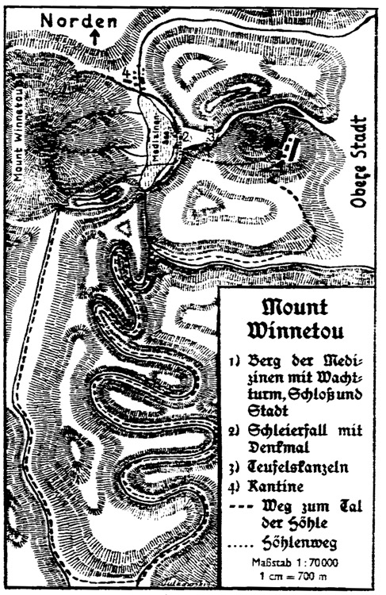

Herausgegeben von Dr. E. A. Schmid und Franz Kandolf
Copyright 1910 by Karl-May-Verlag
Karl-May-Verlag
Radebeul bei Dresden
89. bis 110. Tausend
Der Roman, der 1909 geschrieben wurde, spielt im Jahr 1908. Zur Verfolgung des Reisewegs dient unsre Landkarte ›Nordamerika‹, auf der alle in den Werken Karl Mays erwähnten Orte, Flüsse, Berge usw. eingezeichnet sind. Eine dem vorliegenden Band auf S. 343 beigefügte Skizze veranschaulicht ferner den Mount Winnetou und seine für die Handlung wichtige Umgebung.
Ein schöner, sonnenwarmer Frühlingsmorgen, das Zimmer voll Licht, das den Schreibtisch lockend überflutet, was braucht der Schriftsteller mehr, um schaffensfreudig zu sein!
Von unten hörte ich ein Klingeln an der Gartenpforte. Das war die Morgenpost.
Glücklicher Mann! dachte ich so nebenbei, während mein Federhalter für eine Minute Ruhe hatte. Die Frau nimmt das alles in Empfang, deine Frau, das Herzle, das zärtlich für dich sorgt. Sie sichtet und ordnet Briefe und Karten und Drucksachen und legt dir, solange dir keine überflüssige Zeit zur Verfügung steht, nur vor, was für dich wirklich von Bedeutung ist.
Herzle ist nämlich ihr Kosename. Er stammt aus dem zweiten Band meiner ›Erzgebirgischen Dorfgeschichten‹ Ges. Werke Bd. 44 ›Der Waldschwarze‹. Da kommt ein ›Musterdörfle‹ und ein ›Musterhäusle‹ vor, worin das Herzle mit seiner Mutter wohnt. Die Gestalt, die dort so gerufen wird, ist mir im Lauf des Schaffens ans Herz gewachsen, und so wird es begreiflich scheinen, daß der zärtliche Name nach und nach auf meine Frau überging.
Sie hat das ganze Erdgeschoß des Hauses inne, während der obere Stock meine Zimmer enthält. Unten waltet sie als unermüdlich fleißiger Hausengel, empfängt die immer zahlreicher werdenden Besuche meiner Leser und beantwortet alle die vielen Briefe, deren eigenhändige Erledigung mir selber unmöglich ist. Vorgelesen aber werden sie mir alle, wobei sie derart zu verfahren pflegt, daß die besonders wichtigen oder besonders eigenartigen einstweilen beiseitegelegt und bis zum Schluß der Vorlesung aufgehoben werden.
So auch heut. Als alles andre erledigt war, blieben zwei Sachen, die uns gleich beim ersten Blick als Besonderheiten erschienen und darum ausgeschieden worden waren – ein Brief aus Amerika und ein anthropologisches Fachblatt aus Österreich. In diesem war die Überschrift eines längern Aufsatzes durch Blaustiftstriche hervorgehoben. Sie lautete: ›Das Aussterben der indianischen Rasse in Amerika und ihre gewaltsame Verdrängung durch die Kaukasier und Chinesen.‹ Ich bat das Herzle, mir den Aufsatz vorzulesen, denn ich hatte gerade Zeit. Sie tat es. Der Verfasser war ein wohlbekannter, hervorragender Universitätsprofessor. Er schrieb mit großer Herzenswärme, und alles, was er über die ›Roten‹ sagte, war nicht nur wohltuend, sondern auch gerecht. Ich hätte ihm dafür die Hand drücken mögen. Aber er beging einen Fehler, der ebenso allgemein wie unbegreiflich ist: er verwechselte die Indianer der Vereinigten Staaten mit der ganzen Rasse, die über Nord- und Südamerika verbreitet ist. Er verwechselte ferner den seelischen Schlaf der Rasse mit ihrem körperlichen Tod.
Auch in der Rasse sind Unterschiede. Süd ist Süd, und Nord ist Nord, und jedes entwickelt seine bedingten Eigenarten. Und darüber hinaus ist eine Rasse nicht tot, deren Glieder zeitweilig zu völklichem Schlaf verurteilt sind. Ruht in ihr die Kraft der Auferstehung, so bedarf es nur des Weckrufs, und sie wird sich wieder melden unter den Völkern der Welt.
Und letzten Endes soll – das ist meine Erkenntnis – jede Rasse danach streben, in sich den vollkommensten, den Edelmenschen zu züchten.
Der Brief aus Amerika war wahrscheinlich im ›Fernen Westen‹ zur Post gegeben worden, aber wo, das war an dem ungeöffneten Umschlag nicht zu ersehn, denn seine beiden Seiten zeigten so viele Stempel und mit der Hand geschriebne Ortsnamen, daß das alles unleserlich geworden war. Nur die Anschrift hatte, wohl infolge ihrer echt indianischen Kürze, ihre ursprüngliche Deutlichkeit behalten. Sie bestand nur aus drei Wörtern und lautete:
May
Radebeul Germany
Wir öffneten den Umschlag und zogen ein Stück Papier heraus, das sichtlich mit einem großen Messer, wahrscheinlich einem Bowiekneif, beschnitten und dann zusammengefaltet worden war. Es enthielt folgende Zeilen in englischer Sprache, die ich hier verdeutsche; sie waren von einer schweren, ungeübten Hand mit Bleistift geschrieben:
»An Old Shatterhand.
Kommst Du zum Mount Winnetou? Ich komme ganz gewiß. Vielleicht sogar auch Avaht-Niah, der Hundertjährige. Siehst Du, daß ich schreiben kann? Und daß ich in der Sprache der Bleichgesichter schreibe?
Wagare-Tey, Häuptling der Schoschonen.«
Als wir das gelesen hatten, schaute ich meine Frau überrascht an und sie mich ebenso. Nicht etwa deshalb, weil wir einen Brief aus dem fernen Westen bekamen, und zwar von einem Indianer. Das geschieht oft. Aber daß dieser Brief von dem Häuptling der Schlangenindianer kam, der mir noch nie geschrieben hatte, das wunderte mich. Sein Name Wagare-Tey bedeutet soviel wie Gelber Hirsch. Ich bitte, über ihn in meinem Band ›Weihnacht‹ nachzulesen. Damals, also vor nun über dreißig Jahren, war er noch jung und ziemlich unerfahren, aber ein guter, ehrlicher Mensch und ein treuer, zuverlässiger Freund meinem Winnetou und mir. Sein Vater Avaht-Niah war über sechzig Jahr alt, ein Ehrenmann durch und durch, und hatte den großen Einfluß, den er besaß, stets nur zu unsern Gunsten angewendet. Wegen seines hohen Alters und weil ich nie wieder von ihm hörte, hatte ich ihn später für tot gehalten. Nun aber ersah ich aus dem Brief, daß er noch lebte und sich in guter körperlicher und geistiger Verfassung befand. Sonst hätte der Schreiber unmöglich sagen können, daß der oberste Kriegsanführer der Schoschonen vielleicht auch mit nach dem Mount Winnetou kommen würde.
Ich hatte nicht die geringste Ahnung, wo dieser Berg lag. Ich wußte nur, daß die Apatschen sich mit den ihnen befreundeten Stämmen dahin einigen wollten, irgendeinem durch seine Lage, seine Eigenschaften und seine Wichtigkeit ausgezeichneten Berg den Namen ihres geliebtesten Häuptlings zu geben. Davon, daß dies geschehn sei, hatte ich nichts gehört, und noch viel weniger war mir mitgeteilt worden, auf welchen Berg die Wahl gefallen war. Doch so viel konnte ich mir denken, daß es einer war, der innerhalb des Bereichs liegt, in dem die Apatschen sich bewegen. Und weil die Schlangenindianer ihre Lager- und Weideplätze viele Tagesritte davon im Norden haben, so war es gewiß ein außerordentlicher Fall, daß ein Mann von hundert Jahren sich zutraute, diese anstrengende Reise machen zu können, nur von seinem jung gebliebnen Herzen dazu getrieben.
Und warum wollte er mit seinem Sohn so weit nach Süden kommen? Das wußte ich nicht. Ich fand auch durch kein noch so scharfes Nachdenken eine einwandfreie Antwort auf diese Frage. So konnte ich nichts tun als warten, ob sich auch noch andre derartige Zuschriften einstellen würden. Den Brief zu beantworten, war unmöglich, weil ich den jetzigen Aufenthaltsort der beiden Häuptlinge nicht kannte. Auf alle Fälle aber war es kein unwichtiger Grund, der sie veranlaßte, das ihnen so fern liegende Gebiet der Apatschen aufzusuchen. Ich nahm an, daß dieser Grund sich nicht auf rein persönliche Verhältnisse bezöge, sondern eine allgemeinere Bedeutung habe, und da meine Wohnung da drüben bekannt ist und ich mit mancherlei, dort lebenden Personen, von denen ich in meinen Büchern erzählt habe, im Briefwechsel stehe, so durfte ich wohl hoffen, bald Weiteres zu erfahren.
Und wie gedacht, so geschehn! Kaum zwei Wochen später kam ein zweiter Brief, aber von einer Seite, von der ich am allerwenigsten ein Lebenszeichen erwartet hätte. Der Umschlag zeigte genau dieselbe Anschrift, und der englisch geschriebene Inhalt lautete ins Deutsche übersetzt:
»Komm an den Mount Winnetou zum großen, letzten Kampf! Und gib mir endlich Deinen Skalp, den Du mir schon zwei Menschenalter schuldig bist! Dieses läßt Dir schreiben
To-kei-chun,
der Häuptling der Raccuroh-Komantschen.«
Und nur eine Woche später erhielt ich folgende Zuschrift:
»Hast Du Mut, so komm herüber an den Mount Winnetou! Meine einzige Kugel, die ich noch habe, sehnt sich nach Dir!
Tangua,
ältester Häuptling der Kiowas.
Geschrieben von Pida, seinem Sohn, dem jetzigen Häuptling der Kiowas, dessen Seele die Deinige grüßt.«
Diese beiden Briefe waren im höchsten Grad merkwürdig. Fast schien es, als ob sie von To-kei-chun und Tangua an dem gleichen Ort und unter dem gleichen Einfluß verfaßt worden seien. Beide haßten mich noch genau so unversöhnlich wie ehedem. Eigenartig war es, daß der Sohn Tanguas mich trotz dieses Hasses grüßte, doch fiel es mir nicht schwer, das zu verstehn. Aus seinem Gruß sprach das Dankgefühl. Aber viel wichtiger als das alles war, daß auch die Feinde der Apatschen hinauf nach dem Mount Winnetou wollten. Es wurde da von einem ›großen, letzten Kampf‹ gesprochen. Das klang gefährlich. Ich begann, besorgt zu werden. Oder gab es dort drüben jemand, etwa einen alten, frühern Gegner, der sich jetzt, in meinen alten Tagen, den Spaß machen wollte, mich zu foppen und zu einer Einfaltsreise nach Amerika zu bewegen? Aber nach der Hälfte eines Monats traf folgender Brief ein, der in Oklahoma aufgegeben war, ein Schriftstück, dem ich vollen Glauben schenken durfte:
»Mein lieber weißer Bruder,
der große, gute Manitou in meinem Herzen gebietet mir, Dir zu sagen, daß ein Bund der alten Häuptlinge und ein Bund der jungen Häuptlinge nach dem Mount Winnetou berufen ist, um über die Bleichgesichter zu Gericht zu sitzen und über die Zukunft der roten Männer zu entscheiden. Du wirst kommen, und ich werde kommen. Meine Seele freut sich auf die Deinige. Ich zähle die Tage, Stunden und Minuten, bis ich Dich wiedersehn werde!
Dein roter Bruder
Matto Schahko,
Häuptling der Osagen.«
Auch dieser Brief war englisch geschrieben, und zwar von seinem Sohn, dessen Handschrift ich kenne, weil ich im Briefwechsel mit ihm stehe. Zudem hatte Matto Schahko sein ledernes Totem beigelegt, wie er immer tat, wenn es sich um etwas Wichtiges handelte. Ich konnte also die Vermutung einer Fopperei fallen lassen. Die Sache war Wirklichkeit, war Ernst. Der Gedanke, hinüberzugehn, begann mich lebhaft zu beschäftigen. Freilich aber war es, um diesen Gedanken zur Tat zu wandeln, nötig, vorher erst noch Bestimmteres zu erfahren. Und das ließ nicht lange auf sich warten. Die Post brachte einen großbogigen, wie amtlich zusammengelegten Schreibebrief, der eine Einladung sein sollte, aber seines Tons wegen schon richtiger als eine ›Zufertigung‹ zu bezeichnen war. Ich gebe ihn in deutscher Übersetzung wieder:
»Werter Herr,
in den vorjährigen Versammlungen der Häuptlinge wurde einmütig beschlossen, den dafür geeignetsten Berg des Felsengebirges forthin mit dem Namen Winnetous, des berühmtesten Häuptlings aller Stämme, zu bezeichnen. Es wurde hierzu die wahrscheinlich auch Ihnen wenigstens geographisch bekannte Höhe gewählt, auf die sich der geheimnisvolle Medizinmann Tatellah-Satah ( Thousand years) zurückgezogen hat. Am Fuß dieses Berges sollen um die Mitte des heurigen Septembers folgende Versammlungen abgehalten werden:
1. Das Kampmeeting der alten Häuptlinge.
2. Das Kampmeeting der jungen Häuptlinge.
3. Das Kampmeeting der Häuptlingsfrauen.
4. Das Kampmeeting aller außerdem berühmten roten Männer und roten Frauen.
5. Das Schlußmeeting unter der Leitung des hier unterzeichneten Ausschusses.
Es wird in Ihr Belieben gestellt, sich hierzu persönlich einzufinden und sich bei dem Vorsitzenden oder dessen Stellvertreter zu melden, wobei Ihnen der Gegenstand all dieser Beratungen bekannt gegeben wird. Zugleich werden Sie darauf aufmerksam gemacht, daß diese Meetings ebenso wie sämtliche Vorbereitungen dazu vor den Angehörigen andrer Rassen vollständig geheim zu halten sind. Wir verpflichten Sie hiermit zur strengsten Verschwiegenheit und fühlen uns berechtigt anzunehmen, daß wir Ihre ehrenwörtliche Versicherung, zu schweigen, bereits bekommen haben. Nummermarken für die Ihnen bei unsern Zusammenkünften anzuweisenden Plätze haben Sie sich bei dem unterzeichneten Schriftführer persönlich abzuholen. Sämtliche Reden zum Beratungsgegenstand sind des bessern Verständnisses wegen in englischer Sprache zu halten.
Hochachtungsvoll
Das Komitee.
Gezeichnet:
Simon Bell (Tscho-lo-let),
Professor der Philosophie, als Vorsitzender.
Edward Summer (Ti-iskama),
Professor der klassischen Philologie,
als Stellvertreter des Vorsitzenden.
William Evening (Pe-widah),
Agent, als Schriftführer.
Antonius Paper (Okih-tschin-tscha),
Bankier, als Kassierer.
Old Surehand,
Partikulier, als Direktor.«
Ganz unten am Rand dieses Schriftstücks stand die von Old Surehand selber geschriebne Bemerkung:
»Ich hoffe, daß Du auf alle Fälle kommst. Betrachte mein Haus als das Deinige, auch wenn wir nicht daheim sind! Ich bin als Direktor jetzt leider stets unterwegs. Es gibt für Dich eine ungeheuer freudige Überraschung. Du wirst entzückt sein über die Leistung unsrer beiden Jungens.
Dein alter, treuer Old Surehand.«
Ich füge zu diesem langen Brief gleich den folgenden, kürzeren, der bei mir eintraf. Er lautete:
»Mein Bruder,
ich weiß, daß Du eingeladen bist. Versäume ja nicht, Dich einzustellen! Ich freue mich unbeschreiblich auf Dich. Die beiden Boys werden Dir noch besonders schreiben.
Dein Apanatschka,
Häuptling der Pohonim-Komantschen.«
Diese ›beiden Boys‹ oder, wie Old Surehand sich ausgedrückt hatte, ›unsre beiden Jungens‹, schrieben mir hierauf folgende Zeilen:
»Hochverehrter Herr,
als Sie uns einst von unserm falschen, niedrigen Kunstweg so streng hinüber nach dem höhern, ja allerhöchsten wiesen, versprachen wir Ihnen, erst dann an die Öffentlichkeit zu treten, wenn wir imstande seien, durch wirkliche Meisterwerke zu beweisen, daß die rote Rasse in keiner Weise irgendeiner andern Rasse nachsteht, auch in der Kunst nicht. Wir erbten unsre Begabung von unsrer Großmutter, die, wie Sie wissen, eine Vollindianerin, ja, in rein äußerer Beziehung sogar ein Vollindianer war. Wir sind bereit, den von Ihnen verlangten Beweis jetzt nun zu führen. Sie versprachen uns, wenn diese Zeit gekommen sei, sich trotz der weiten Entfernung hier bei uns einzustellen, um unsre Werke zu prüfen. Wir sind der Meinung, daß wir diese Prüfung nicht zu fürchten brauchen, und erwarten Sie um die Mitte des Septembers am Mount Winnetou, um Sie willkommen zu heißen. Wir haben erfahren, daß Sie, wie sich von selbst verstand, eingeladen sind, an diesen verschwiegnen und hochwichtigen Beratungen teilzunehmen, und hegen die feste Überzeugung, daß Sie sich durch nichts abhalten lassen werden, zur rechten Zeit am angegebnen Ort zu erscheinen. In größter Hochachtung sind wir Ihre ganz ergebnen
Young Surehand.
Young Apanatschka.«
Diese Zuschrift hatte Hand und Fuß. Sie machte mir Freude, obgleich sie von den beiden ›Jungens‹ nur zu dem Zweck, mir einen tüchtigen Rippenstoß zu versetzen, in dieser Weise verfaßt worden war. Wer meine Reiseerzählung ›Old Surehand‹ gelesen hat, kann sich sehr leicht denken, wer diese beiden Boys sind.
Wie man sich erinnern wird, hatte sich herausgestellt, daß Old Surehand und Apanatschka Brüder waren, die man ihrer Mutter, einer körperlich und geistig hochbegabten Indianerin, unterschlagen hatte. Um diesen Raub aufzuklären, hatte sie, als Indianer verkleidet, unter dem Namen Kolma Puschi viele Jahre lang die Städte des Ostens, die Savannen und die Urwälder durchforscht, ohne dieses Ziel zu erreichen, bis es Winnetou und mir gelang, die von ihr gesuchten Spuren und dann auch die beiden Söhne zu entdecken: den einen als berühmten Westmann und den andern als nicht weniger berühmten Komantschenhäuptling, zwei außerordentlich wertvolle Menschen, deren Freundschaft mir treu geblieben ist, trotz aller Wandlungen, die sowohl ihr als auch mein Leben seit damals durchmachen mußte.
Beide heirateten später ein edles Schwesternpaar aus dem besondern Stamm Winnetous, also der Mescalero-Apatschen, und jedem von ihnen wurde sodann die Freude beschert, einen Sohn zu besitzen, auf den alle Begabungen Kolma Puschis in noch vermehrtem Grad vererbt worden waren. Sie hatten die Mittel, diese Gaben ausbilden zu lassen. Young Surehand und Young Apanatschka wurden nach dem Osten gebracht, um Künstler zu werden, der eine Architekt und Bildhauer, der andre Maler und Bildhauer. Die auf sie gesetzten Hoffnungen erfüllten sich. Sie gingen später auf einige Jahre nach Paris, um dort die berühmtesten Künstlerwerkstätten zu besuchen, dann nach Italien und endlich gar nach Ägypten, wo sie sich die Aufgabe stellten, sich mit den Gesetzen der einstigen Gigantenkunst vertraut zu machen. Auf dem Rückweg kamen sie über Deutschland, um mich aufzusuchen. Ich hatte meine Freude an ihnen, und zwar nicht allein deshalb, weil sie meinen Winnetou fast wie einen Halbgott verehrten. Auch ihr künstlerisches Wollen und Vermögen war hervorragend und schien noch wachsen zu können. Leider aber war es in echt amerikanischer Weise auf den Weg der Geschäftsmäßigkeit hinübergeleitet worden, und so geschah es, daß sie von mir anstatt eines Lobs eine sehr ernste Warnung zu hören bekamen, die sie mir, wie ich aus ihrem Brief ersah, bis heut noch nicht vergeben hatten. Dies war wohl auch der Grund, daß ich weder von ihren Vätern noch von ihnen selber über ihre Zukunftspläne und ihr jetziges künstlerisches Schaffen unterrichtet worden war. Ganz besonders schweigsam gegen mich aber verhielt man sich über die Gründe, die die beiden jungen Leute veranlaßt hatten, grad die Riesendarstellungen der alten Ägypter zu studieren. Das hatte Geheimnis bleiben sollen. Jetzt aber begann ich zu ahnen, daß die ›Meisterwerke‹, zu deren Begutachtung ich eingeladen wurde, hierzu in Beziehung standen.
Ich kann nicht behaupten, daß die Briefe, die in so schneller Folge anlangten, mir reine Freude bereiteten. Warum sagte man mir nicht gleich offen und ehrlich, worum es sich eigentlich handelte? Wozu diese heimliche Kampmeetingspielerei? Große und fruchtbare Gedanken werden in heiliger, unberührter Einsamkeit geboren, nicht aber in langen Reden, die doch nur auf kurze Erfolge berechnet sein können! Warum diese Trennung der alten Häuptlinge von den jungen? Wozu noch eigens die roten Frauen? Wer waren die ›außerdem berühmten roten Männer und roten Frauen‹? Etwa die Herren dieses mir so sonderbar, ja sogar verdächtig vorkommenden Ausschusses? Sie wollten das Schlußmeeting leiten, also die Beschlüsse sämtlicher Versammlungen beeinflussen und verbessernd überprüfen! Die Namen der beiden Professoren, geborner Indianer, kannte ich. Sie hatten einen guten Klang. Aber den Ton, in dem sie an mich schrieben, hätte sich kein Sam Hawkens, kein Dick Hammerdull und kein Pitt Holbers gefallen lassen. Der Schriftführer und der Kassierer waren mir vollständig fremd. Und Old Surehand als Direktor? Was sollte das heißen? Wozu hier einen besondern ›Direktor‹? Etwa um die eigentliche Verantwortung oder gar die geschäftliche Bürgschaft auf ihn zu werfen? Old Surehand war ein Westmann ersten Ranges gewesen; aber ob er auch imstande war, es in geschäftlichen Dingen mit einem durchtriebenen amerikanischen Pfiffikus aufzunehmen, das wußte ich leider nicht. Die Sache kam mir um so bedenklicher vor, je länger und anhaltender sie mich beschäftigte. Auch meiner Frau gefiel sie nicht. Und weil ich sie hierbei mit erwähne, so sei zugleich gesagt, daß auch sie ein Schreiben bekam. Es lautete:
»Meine liebe weiße Schwester,
nun werden meine Augen Dich endlich, endlich sehn; meine Seele sah Dich schon längst. Der Gebieter Deines Hauses und Deiner Gedanken wird nach dem Mount Winnetou kommen, um mit uns über Großes und Schönes zu beraten. Ich weiß, er wird diese Reise nicht tun, ohne daß Du ihn begleitest. Ich bitte Dich, ihm zu sagen, daß ich das beste unsrer Zelte für Dich und ihn bereit halten werde und daß ich Dein Kommen vorausempfinde als einen lieben Strahl der Sonne, an dem man sich besonders innig wärmt und freut, wenn die Tage des Lebens zur Rüste gehn. Komm also, und bring mir Deine Menschenliebe, Deine Herzensgüte und – Deinen Glauben an den großen, gerechten Manitou, den ich gern ebenso deutlich fühlen möchte, wie Du, meine Schwester, ihn fühlst!
Kolma Puschi.«
Ich muß erwähnen, daß meine Frau mit Kolma Puschi in Briefwechsel stand und daß diese Zuschrift nicht ohne Einfluß auf unsre Entschließungen war. Wenn ich wirklich ging, so verstand es sich nun von selbst, daß ich diese Reise nicht allein unternahm. Es liefen noch mehrere Briefe ein. Ich wähle unter ihnen nur noch einen aus, weil er mir als der wichtigste von allen erscheint, die ich über diesen Gegenstand bekam. Er war in einer gradezu musterhaft schönen Schrift auf sehr gutes Papier geschrieben und in das große Totem dessen, der ihn angesagt hatte, gehüllt. Dieses Totem bestand aus papierdünnem Antilopenleder, das durch eine Behandlung, die nur die Indianer kennen, die Weiße des Schnees und die Glätte des Porzellans erhalten hatte. Die einpunktierten Buchstaben waren mit Zinnober und einer andern, mir unbekannten Farbe rot und blau gefärbt. Der Inhalt lautete:
»Mein weißer, älterer Bruder,
ich fragte Gott nach dir. Ich wollte wissen, ob Du noch unter denen weilst, von denen man sagt, daß sie leben. Als Antwort fand ich eine Hoffnung, denn ich hörte, man habe Dich eingeladen, an den September-Beratungen hier in meinen Bergen, deren heilige Stille und Ruhe für immer vernichtet werden soll, teilzunehmen. Sei um aller derer willen, die Du einst hier liebtest und vielleicht noch heute liebst, gebeten, diesem Ruf zu folgen. Eile herbei, wo Du auch seist, und rette Deinen Winnetou! Man will ihn falsch verstehn, und man will auch mich nicht begreifen. Du hast weder mich, noch habe ich Dich jemals gesehn. Wie ich nie einen Laut Deiner Stimme vernahm, so hörtest auch Du niemals den Klang der meinigen. Heut aber schreit meine Angst weit über das Meer hinüber zu Dir, so laut, daß Du es hören wirst und unbedingt kommen mußt.
Niemand weiß, daß ich Dich rufe. Nur der dies schreibt, mußte es erfahren. Er ist meine Hand; er schweigt. Wende Dich, bevor Du hier erscheinst, nach dem Nugget Tsil. Die mittelste der fünf großen Blaufichten dort wird zu Dir sprechen und Dir sagen, was ich diesem Papier nicht anvertrauen kann. Ihre Stimme sei Dir wie die Stimme Manitous, des großen, ewigen und alliebenden Geistes! Ich bitte Dich noch einmal: Komm, o komm und rette Deinen Winnetou! Man will ihn dir für immer vernichten!
Tatellah-Satah,
der Bewahrer der großen Medizin.«
Zunächst ein Wort zu dem in diesem Brief erwähnten Nugget Tsil. Man versteht unter Nuggets die mehr oder weniger großen, gediegnen Goldkörner, die von den Goldsuchern meist einzeln, zuweilen aber auch in ganzen, reichhaltigen Nestern gefunden werden. Tsil bedeutet in der Apatschensprache Berg. Nugget Tsil heißt also soviel wie Goldkörnerberg. Auf diesem Berg sind bekanntlich der Vater und die Schwester meines Winnetou von einem gewissen Santer ermordet worden Siehe Karl May, ›Winnetou‹ I. Später, kurz vor seinem Tod, im Innern des Hancockberges, teilte mir Winnetou mit, daß er sein Testament für mich auf dem Nugget Tsil vergraben habe, und zwar zu Füßen seines dort bestatteten Vaters; ich würde dabei viel Gold zu sehn bekommen. Als ich hierauf nach dem Nugget Tsil ritt, das Testament zu holen, wurde ich dabei von jenem Santer überrascht und von einer Schar von Kiowa-Indianern, bei denen er sich befand, gefangengenommen. Der Anführer dieser Schar war Pida, der junge Krieger, der mich jetzt, nach über dreißig Jahren, in dem Brief seines Vaters, des ältesten Häuptlings Tangua, aus seiner ›Seele‹ grüßte. Santer stahl das Testament und entfloh damit, um das Gold zu holen, dessen Fundstelle in der letztwilligen Verfügung Winnetous beschrieben war. Er ging aber dabei zugrunde und mit ihm das Testament. Auch das Gold versank in der Tiefe des ›Dunklen Wassers‹.
In Beziehung auf Tatellah-Satah, den ›Bewahrer der großen Medizin‹, muß ich gestehn, daß es stets einer meiner Herzenswünsche gewesen war, diesen geheimnisvollsten aller roten Männer einmal zu sehn und zu sprechen; nie aber hatte es eine Gelegenheit gegeben, mir dieses herzliche Verlangen zu erfüllen. Tatellah-Satah ist ein Name, der der Taossprache angehört und wörtlich übersetzt Tausend Sonnen heißt, dem Sinn nach aber Tausend Jahre bedeutet. Sein Träger hatte also ein so ungewöhnliches Alter, daß man es unmöglich nach Zahlen bestimmen konnte. Ebensowenig wußte man, wo er geboren war. Er gehörte keinem einzelnen Stamm an. Er wurde von allen roten Völkern und Stämmen gleich hoch verehrt. Was Hunderte und aber Hunderte von einzelnen Medizinmännern im Lauf der Zeit an Geistesgaben und Kenntnissen besessen hatten, das sprach man nun dem einen Mann, dem Höchstgestiegnen, zu. Um zu begreifen, was das heißt, muß man wissen, daß es grundfalsch ist, sich einen indianischen Medizinmann als einen Kurpfuscher, Regenmacher und Gaukler vorzustellen. Das Wort Medizin hat in dieser Zusammensetzung nicht das geringste mit der Bedeutung zu tun, die es bei uns besitzt. Es ist für die Indianer ein fremder Ausdruck, dessen Sinn sich bei ihnen völlig verändert hat.
Als die Roten die Weißen kennenlernten, erfuhren sie gar manches, was gewaltigen Eindruck auf sie machte. Am meisten aber erstaunten sie über die Wirkung unsrer Arzneimittel, unsrer Medizinen. Die Sicherheit und Nachhaltigkeit dieser Wirkung war ihnen schier unbegreiflich. Sie erkannten die unendliche Größe der göttlichen Liebe, die sich in diesem Geschenk des Himmels an das Geschlecht der Menschen offenbarte. Sie hörten das Wort Medizin zum erstenmal, und sie verbanden nun mit ihm den Begriff des Wunders, des Segens, der göttlichen Liebe und des für die Menschen unbegreiflichen Geheimwirkens in heiligster Verborgenheit. Kurz, der Ausdruck ›Medizin‹ wurde für sie gleichbedeutend mit dem Wort Mysterium. Sie nahmen die Benennung ›Medizin‹ in alle ihre Sprachen und Mundarten auf. Alles, was zu ihrer Religion, ihrem Glauben und ihrem Forschen nach ewigen, übersinnlichen Dingen in Beziehung stand, wurde als ›Medizin‹ bezeichnet. Ebenso auch alle diejenigen Tatsachen europäischer Wissenschaft und europäischer Bildung, die sie nicht begreifen konnten, weil sie weder ihre Anfänge noch ihre Entwicklungen kannten. Sie waren aufrichtig genug, unumwunden zuzugeben, daß die Vorzüge der Bleichgesichter zahlreicher und größer seien als die der roten Männer. Sie trachteten, den Weißen nachzueifern. Sie nahmen von ihnen viel Gutes, leider aber auch viel Böses an. Sie waren so kindlich und so einfältig, so manches, was bei den Weißen nur auf der Stufe des Gewöhnlichen oder gar des Niedrigen stand, für ungewöhnlich, für hoch, für heilig zu halten und es sich für immer anzueignen, nur weil es ihnen fremd und den überlegnen Weißen eigen war, ohne vorher den eigentlichen Wert dieser Dinge zu prüfen. So nahmen sie auch das Wort ›Medizin‹ bei sich auf und bezeichneten damit ihr Allerhöchstes und Allerheiligstes, ohne zu wissen, daß sie grade dieses Höchste und Heiligste damit beleidigten und entwürdigten. Denn zu der Zeit, als sie dies taten, hatte der Ausdruck Medizin nicht etwa den guten, ehrenden Klang wie heut. Er besaß den starken Beigeschmack von Hokuspokus, Quacksalberei und Windbeutelei, und als die Indianer in ihrer Unbefangenheit die Träger ihrer allerdings noch in den Anfängen stehenden Theologie und Wissenschaft als Medizinmänner bezeichneten, ahnten sie nicht, daß sie damit den bisherigen guten Ruf dieser Leute für immer vernichteten.
Wie hoch diese Medizinmänner standen, ehe sie Gelegenheit hatten, die ›Bildung‹ der Weißen kennenzulernen, ersehn wir heutigentags erst nach und nach, indem wir unsre Forschung tiefer in die Vergangenheit der amerikanischen Rasse hinuntersteigen lassen. Diese Vergangenheit zeigt uns zahlreiche Punkte, bei denen die Völker Amerikas auf gleicher Stufe mit den Weißen standen. Alles, was bei jenen Völkern und in jenen Reichen Gutes, Großes und Edles geschah, entsprang jenen geistigen Quellen und den Köpfen jener Männer, die von ihren Nachkommen später als Medizinen und Medizinmänner bezeichnet wurden. Hiermit sind Theologen, Politiker, Feldherrn, Astronomen, Tempelbaumeister, Maler, Bildhauer, Quipu-Entzifferer, Professoren, Ärzte, kurz alle diejenigen Personen und Stände zusammengefaßt, durch die die geistigen und sittlichen Kräfte jener Zeiten sich betätigten. Es gab unter diesen später als Medizinmänner bezeichneten Großen genau ebenso berühmte Namen wie in der Entwicklungsgeschichte der asiatischen und europäischen Rassen, und sie sind nicht für immer, sondern nur einstweilen verschollen, weil unsre Kenntnis und unser Verständnis noch nicht so weit vorgeschritten ist, jenes geschichtliche Dunkel zu erleuchten. Wenn die Medizinmänner der Gegenwart nicht mehr die Medizinmänner der Vergangenheit sind, so trägt der Indianer gewiß nicht allein die Schuld daran. Die geistige Auslese der Inkas, der Tolteken und Azteken, also die ›Medizinpflegerschaft‹ der Peruaner und Mexikaner, stand gewiß nicht auf einer niedrigeren Bildungsstufe als die Abenteurer eines Cortez und Pizarro, und wenn diese damalige Höhe sich infolge der spanischen Besetzung zur heutigen Tiefe neigte, so daß man jetzt die Indianer einfach und kurzerhand als Wilde bezeichnet, so brauchen wir uns nicht darüber zu wundern, daß auch ihre Medizinmänner mit herabgekommen sind. Sie waren gezwungen, diesen Niedergang mitzumachen.
Trotzdem aber sind sie noch lange nicht das, wofür man sie hält. Ich habe noch keinen Weißen kennengelernt, der von irgendeinem Medizinmann in seine Geheimnisse und Anschauungen eingeweiht worden ist oder der wenigstens den Sinn der betreffenden Gebräuche derart begreift, wie er begriffen werden muß, ehe man behaupten kann, über ihn sprechen oder gar schreiben zu dürfen. Ein wirklicher Medizinmann, der es ernst mit seiner Würde nimmt, gibt sich nie zu Schaustellungen her. Die sogenannten Medizinmänner der von Zeit zu Zeit hier bei uns umherstreifenden Völkerwiesenindianer sind alles andre, nur keine wirklichen Medizinmänner, und an ihren Verrenkungen, Sprüngen und sonstigen Possen würde ein ernsthafter Vertreter ihres Standes gewiß ebensowenig teilnehmen, wie zum Beispiel bei uns ein ernstgesinnter Gottes- oder Weltgelehrter auf den Gedanken kommen könnte, auf einem Jahrmarkt oder beim Vogelschießen für Geld öffentlich einen Schuhplattler oder einen Purzelbäumler zu tanzen.
Ich bitte meine Leser, diese Ausführungen nicht für langweilig oder gar für überflüssig zu halten. Ich mußte das sagen, denn es gilt, von nun an gerecht zu sein und von den bisherigen Fehlern, die wir in der Beurteilung der roten Rasse begingen, endlich abzulassen. Da wir in Tatellah-Satah einen jener alten, hochstehenden Medizinmänner der Vergangenheit kennenlernen, die wie Säulen im Bild einer scheidenden Zeit stehn, so war ich als gewissenhafter und wahrheitstreuer Zeichner verpflichtet, den forschenden Blick auf die Betrachtung dieser Dinge vorzubereiten.
Der geheimnisvolle Mann, von dem ich mit so großer Hochachtung spreche, war nicht etwa mein Freund gewesen, o nein! Aber auch nicht mein Feind. Er war überhaupt keines Menschen Feind. Sein Denken und Fühlen war unbedingt gerecht und menschenfreundlich, sein Handeln ebenso. Aber wie er zu mir stand, das war noch schlimmer und niederdrückender, als wenn er mein Feind gewesen wäre. Ich war nämlich für ihn gar nicht vorhanden. Er übersah mich vollständig. Warum? Weil er mich seit dem Tag, an dem der Vater und die Schwester meines Winnetou ermordet worden waren, als ihren eigentlichen Mörder betrachtete. Die schöne Tochter der Mescaleros war aus eignem Wunsch und aus Wunsch ihres Stammes zu meiner Frau bestimmt gewesen, ich aber war dieser Verbindung ausgewichen. Sie hieß Nscho-tschi, und sie trug diesen Namen mit Recht. Nscho-tschi heißt auf deutsch Schöner Tag, und als sie starb, ging eine helltagende, schöne Hoffnung der Apatschen mit ihr aus der Welt, besonders eine liebe, große Hoffnung des greisen Medizinmanns Tatellah-Satah. Sie war für ihn die schönste und beste Tochter sämtlicher Apatschenstämme, und er behauptete, daß sie damals nicht erschossen worden wäre, wenn ich mich nicht abweisend, sondern entgegenkommend verhalten hätte. Ich gab dies zwar unumwunden zu, fühlte mich aber von jedem Selbstvorwurf so vollständig frei, als ob die liebe, aufopferungsvolle Freundin heut noch lebte. Sie hatte nach dem Osten gewollt, um sich eine höhere Bildung anzueignen, und war unterwegs mit Intschu tschuna, ihrem Vater, heimtückisch erschossen und beraubt worden. Nie war es Winnetou, ihrem Bruder, eingefallen, deshalb, weil sie diese Reise meinetwegen unternommen hatte, auch nur den Schatten einer Anklage gegen mich zu richten; Tatellah-Satah aber hatte mich dafür aus seinem Leben und aus allen seinen Berechnungen gestrichen, und zwar für immer, wie es schien. Er wohnte seit Menschengedenken in größter Einsamkeit hoch oben im Gebirge. Nur Häuptlinge durften sich ihm nahen, und auch das nur so selten wie möglich. Es mußte sich um Angelegenheiten von höchster Wichtigkeit handeln, ehe jemand die Erlaubnis bekam, zu ihm emporzusteigen. Nur Winnetou, sein besondrer Liebling, durfte kommen, sooft es ihm beliebte. Ihm wurde jeder Wunsch erfüllt, dessen Erfüllung überhaupt möglich war, nur der eine nicht, den er oft vergebens äußerte, mich einmal mitbringen zu dürfen.
Und nun, nach so langer Zeit, auf einmal diese dringende Einladung! Das konnte nur sehr ernste Gründe haben, die keine gewöhnlichen und alltäglichen Ziele verfolgten, sondern sich auf Besseres und Wertvolleres bezogen, als ich jetzt, da ich seinen Brief soeben erst erhalten hatte, schon zu durchschauen vermochte. Aber es stand nun fest, daß ich hinüberging und daß ich zur rechten Zeit auf dem Nugget Tsil eintreffen würde, um die mir bezeichnete Blaufichte zu mir sprechen zu lassen. Und ebenso bestimmt war es, daß meine Frau mich begleitete.
Als sie das hörte, jubelte sie nicht etwa auf, sondern sie zeigte mir im Gegenteil ihr ernsthaftestes Gesicht. Sie dachte an die Anstrengungen einer solchen Reise und an die Gefahren eines solchen Ritts durch den Westen. Denn daß die von nah und fern herbeieilenden vielen Häuptlinge sich der Eisenbahn bedienen würden, stand außer Erwägung; das war überhaupt schon durch die Heimlichkeit, mit der alles geschehn sollte, ausgeschlossen. Aber sie dachte, indem sie von diesen Anstrengungen und Gefahren sprach, nicht an sich, sondern nur an mich. Es gelang mir jedoch leicht, sie zu überzeugen, daß man jetzt zwar noch von einem ›Westen‹, aber schon längst nicht mehr von einem ›wilden Westen‹ sprechen könne, und daß ein solcher Ritt für mich nur eine Erholung sei. Sie selber war dem Abenteuer gewachsen, war gesund, mutig, ausdauernd und bedürfnislos genug, mich begleiten zu können. Sie beherrschte die englische Sprache und hatte sich durch das fleißige Zusammenarbeiten mit mir so nebenbei auch eine Menge indianischer Wörter und Redensarten angeeignet, die ihr zustatten kommen mußten. Und was das Reiten betrifft, so war ihr unser letzter längerer Aufenthalt im Orient eine gute Lehrzeit gewesen. Sie hatte sich dort trefflich benommen und Pferde gut zu behandeln gelernt.
Wie stets und überall, so zeigte sie sich auch hier als klug berechnende, wirtschaftlich vorausschauende Hausfrau. Ich hatte von einigen amerikanischen Verlagsbuchhändlern Angebote erhalten, die sich auf die Herausgabe meiner Werke in englischer Sprache für die Vereinigten Staaten bezogen. Diese Herren sollte ich, so meinte Klara, bei dieser Gelegenheit persönlich aufsuchen. Um Proben für den Bildschmuck der Bände vorzeigen zu können, machte sie sich von allerlei Vorlagen photographische Abzüge im Großformat, die ihr sehr gut gelangen.
Am besten glückte ihr der zum Himmel aufstrebende Winnetou von Sascha Schneider. Von demselben Künstler besitze ich auch zwei prächtige, ergreifende Bilder von Abu Kital, dem Gewaltmenschen, und Marah Durimeh, der Menschheitsseele. Diese drei Bilder findet der Leser in Bd. 49 ›Lichte Höhen‹. Die Herausgeber Auch diese beiden wurden photographiert, um mitgenommen zu werden. Daß wir nicht die Originale selbst in den Koffer packten, wird verständlich sein. Man setzt wertvollen, in seiner Besonderheit einzigartigen Besitz nicht ohne Not der Gefahr aus, abhanden zu kommen; und Möglichkeiten für ein solches Mißgeschick waren durch allerlei unerwartete Ereignisse unsrer Reise in Fülle geboten. Koffer können auf mancherlei Weise verlorengehn, wobei man noch lange nicht mit den schlimmsten Fährnissen wie Schiffbruch und Eisenbahnunglück zu rechnen braucht.
An dieser Stelle sei mir noch ein kurzes Wort gestattet für den kritischen Leser, der hier etwa fragt, warum ich denn ausgerechnet auf die drei genannten Bilder solchen Wert legte. Es soll zugleich dem Wißbegierigen gelten, der Sascha Schneiders Werk, soweit es sich auf meine Reiseerzählungen bezieht, nicht kennt.
Sascha Schneider, der weithin berühmte Maler und Bildhauer, lebt in dem freundlichen Dresdner Villenvorort Loschwitz und zählt zu den engeren Freunden meines Hauses Er starb 1927. Vgl. hierzu den Nachruf im Karl-May-Jahrbuch 1928. Die Herausgeber. Er hat sich wie wenige in die eigentliche Gedankenwelt meiner Werke hineingefühlt und hat dieser Erkenntnis in edlen Schöpfungen seiner Kunst Ausdruck verliehen.
So gestaltete er Winnetou nicht als den kühnen jugendlichen Apatschenhäuptling, den Kämpfer für alles Gute und Rechte, sondern zeigte in seinem Bild die im Tod endgültig geläuterte, zum Himmel aufschwebende Erscheinung dieses Edelmenschen, aus deren geöffnetem Haar das letzte Zeichen irdischer Würde, die Häuptlingsfeder, sich löst. So gestaltete er Abu Kital, der in meinem Bühnenspiel ›Babel und Bibel‹ als Scheik der An'allah, der Gewaltmenschen, auftritt, und ferner Marah Durimeh, die erdenferne, greise Königin von Sitara.
Ich bitte, diese scheinbar abschweifenden Bemerkungen nicht für überflüssig zu halten. Man wird im Verlauf der Erzählung sehn, daß einige dieser Bilder eine besondre Wichtigkeit in der Kette der Ereignisse erhielten. Wer mich kennt, der weiß, daß es für mich keinen Zufall gibt. Ich führe alles, was geschieht, auf einen höhern Willen zurück. Tiefe Fügung waltete auch hier, davon bin ich überzeugt. Die Buchhändlerangebote verliefen und zerrannen später zu nichts; ich fand keine Zeit, diese Herren aufzusuchen. Ihr Zweck war wohl nur, die Anregung zu dem Gedanken zu bilden, von den Proben für den Bildschmuck Abzüge zu machen und diese mitzunehmen.
Noch klarer und deutlicher trat dieses Schicksalswalten bei einem andern Verlagsangebot hervor, das mir aber nicht schriftlich, sondern mündlich gemacht wurde, und zwar auffälligerweise zu derselben Zeit und auch von einem Amerikaner. Besonders beachtenswert sind hierbei die Nebenumstände, durch die der Gedanke, es nur mit einem Zufall zu tun zu haben, ausgeschlossen wurde.
Ich habe in Dresden einen Freund, der ein viel in Anspruch genommener Nervenarzt ist und bedeutende Erfolge errungen hat. Er wird als Fachgröße bezeichnet und von Fremden nicht weniger als von Einheimischen zu Rat gezogen.
Bei einem Besuch, den dieser Freund uns eines Abends machte, kam die Rede auch auf unsern Entschluß, mit dem Norddeutschen Lloyd nach New York zu fahren.
»Etwa um Nuggets zu holen?« fragte er so schnell, als ob er nur auf unsre Mitteilung gewartet hätte.
»Wie kommen Sie grad auf Nuggets?« antwortete ich.
»Weil ich heut eins gesehn habe. Es war so groß wie ein Taubenei und wurde, als Anhängsel gefaßt, an der Uhrkette getragen.«
»Von wem?«
»Von einem Amerikaner, der mir übrigens noch viel merkwürdiger war als sein Klümpchen Gold. Er sagte mir, er sei nur für zwei Tage hier, und erbat sich mein Gutachten in einer Angelegenheit, die für jeden Psychiater ein ›Fall‹ allerersten Ranges ist.«
»Wieso? Darf man Näheres wissen?«
»Warum nicht? Ich nenne ja keinen Namen, könnte es gar nicht, wie Sie gleich sehn werden. Es handelte sich um den in einer Familie sich vererbenden Zwang zum Selbstmord, einen Zwang, der unbedingt sämtliche Glieder der Familie ergreift und bei dem einzelnen ganz leise beginnt, nach und nach an Stärke wächst, bis er unwiderstehlich wird.«
»Ich hörte schon von solchen Fällen und lernte einen derart Belasteten sogar persönlich kennen. Es war ein österreichischer Schiffsarzt, mit dem ich von Sues nach Ceylon fuhr. Wir verbrachten eine ganze, helldunkle Sternennacht auf dem Oberdeck über psychologischen Fragen. Da gewann er Vertrauen zu mir und teilte mir mit, was er sonst keinem sagte. Ein Bruder und eine Schwester hatten sich bereits das Leben genommen, der Vater ebenso. Die Mutter war vor Gram und Angst gestorben. Eine zweite Schwester schickte ihm jetzt während seiner Auslandsreise Briefe nach, daß sie dem unglückseligen Drang unmöglich länger widerstehn könne, und er selber war nur deshalb Arzt geworden, um, falls kein andrer helfen könne, vielleicht seinerseits den Weg der Rettung zu finden.«
»Was ist aus ihm und seiner Schwester geworden?«
»Das weiß ich nicht. Er versprach mir, zu schreiben und mir seine Wohnung anzugeben, hat es aber nicht getan. Ich vermute Schlimmes. Steht es mit Ihrem Amerikaner ebenso traurig?«
»Ob mit ihm selber, kann ich nicht sagen. Er nannte mir keinerlei Namen, auch den seinigen nicht, und tat so, als ob er nur von Bekannten spräche, nicht aber von seiner eignen Familie. Aber der Eindruck, den er auf mich machte, war so, daß ich ihn selber für beteiligt halte. Er hatte traurige Augen. Er schien ein guter Mensch zu sein, und es tat mir aufrichtig leid, ihm keine sichere Hilfe in Aussicht stellen zu können.«
»Aber wenigstens Trost?«
»Ja, Rat und Trost. Doch denken Sie sich so eine Fülle von Unheil: Die Mutter hatte Gift genommen. Der Vater war spurlos verschwunden. Von fünf Kindern, lauter Söhnen, leben nur noch zwei. Sie alle sind verheiratet gewesen, aber von ihren Frauen verlassen worden, weil bei ihren Kindern der Drang zum Selbstmord schon im Alter von neun oder zehn Jahren hervorgetreten ist und sich derart schnell entwickelt hat, daß nur ein einziges von ihnen das Alter von sechzehn Jahren erreichte. Nur die erwähnten beiden Brüder leben noch. Aber sie kämpfen mit dem Selbstmordzwang Tag und Nacht, und ich glaube nicht, daß einer von ihnen so stark sein wird, diesen unheilvollen Geist in sich zu besiegen.«
»Schrecklich!«
»Ja, schrecklich! Aber ebenso rätselhaft wie schrecklich! Dieser unglückselige Drang macht sich erst in der zweiten Geschlechtsfolge bemerkbar; vorher war er nicht vorhanden. Leider konnte mir nicht gesagt werden, bei wem er sich zuerst äußerte, ob bei der an Gift gestorbenen Mutter oder bei dem verschollenen Vater. Auch erfuhr ich nicht, ob diese Krankheit etwa erst seit irgendeinem Ereignis aufgetreten ist, das mit großen seelischen Erschütterungen verbunden war. Das würde doch wenigstens einen Anhalt geben. So aber mußte ich mich darauf beschränken, anstrengende Arbeit für Körper und Geist anzuraten, treue Pflichterfüllung, die mit heiterer, aber ja nicht niedriger Zerstreuung abwechseln muß, und vor allen Dingen fortwährende Übung und Weiterstählung der Willenskräfte, auf die es in diesem Fall ja am meisten ankommt.«
»Haben Sie den Stand dieser unglücklichen Familie erfahren?«
»Ja. Das war ja eine der Hauptfragen, die ich vorlegen mußte. Der verschollene Vater war Westmann, Squatter, Trapper, Goldsucher und sonst alles Derartige gewesen und hat von Zeit zu Zeit das, was er dabei erübrigte, heimgebracht. Das sind oft ganz ansehnliche Summen gewesen. Er hat die Sucht gehabt, Millionär werden zu wollen. Das wurde zwar nicht erzielt, aber reich ist die Familie doch geworden. Die fünf Brüder vereinigten sich zu einem Großgeschäft in Pferden, Rindern, Schweinen und Schafen –«
»Sie hatten also wohl viel mit den großen Schlächtereien zu tun?« unterbrach ich ihn.
»Allerdings.«
»Das konnte bei dieser Veranlagung nur schädlich sein!«
»Unbedingt! Massentötung von Schlachtvieh! Warmer Blutdunst! Immerwährender Fleischgeruch! Hieraus folgende Verhärtung des Mitgefühls! Zugleich Auffütterung und Anmästung jenes fürchterlichen Drangs! Ich habe das dem Amerikaner offen gesagt und ihn gewarnt. Da teilte er mir mit, daß er das wohl gefühlt habe und darum für die beiden Brüder der Ratgeber und Helfer gewesen sei, das Geschäft zu verkaufen. Das sei im vorigen Jahr geschehn, doch ohne daß sich hierauf eine Veränderung oder Verringerung des Leidens eingestellt habe. – Aber, da unterhalte ich Sie noch am späten Abend mit Dingen, die Ihnen und mir nur die Nachtruhe verderben können. Ich bitte um Verzeihung und bin klug genug, mich, um nicht von Ihnen fortgewiesen zu werden, jetzt selber hinauszuwerfen. Schlafen Sie wohl!«
Er entfernte sich so schnell, wie es sonst seine Art gar nicht war. Es war, als hätte er uns nur deshalb aufgesucht, um uns auf diesen Amerikaner aufmerksam zu machen. Meine Frau hatte dasselbe Gefühl wie ich.
»Er ist mir heut gar nicht wie ein besuchender Freund, sondern wie ein Bote vorgekommen«, sagte sie. »Sollte es mit diesem Yankee irgendeine Bewandtnis haben, die auch uns angeht?«
Am nächsten Vormittag, zur Besuchszeit, gegen elf Uhr, saß ich bei der Arbeit. Da hörte ich die Hausglocke. Es wurde jemand eingelassen. Ich hatte gesagt, daß ich heut für niemand zu sprechen sei. Dennoch kam nach einiger Zeit meine Frau zu mir herauf und legte eine Besuchskarte vor mich hin.
»Verzeih! Ich kann nicht anders; ich muß dich doch unterbrechen! Es ist gar zu sonderbar – du wirst dich wundern.«
Ich warf einen Blick auf die Karte. ›Hariman F. Enters‹ stand darauf. Ich sah Klara erwartungsvoll an.
»Ja, es ist wirklich erstaunlich«, nickte sie. »Er hat das taubeneigroße Nugget an der Uhrkette.«
»Wirklich?«
»Ja! Und die auffallend traurigen Augen sind auch da!«
»Und was will er?«
»Mit dir reden.«
»Ich habe keine Zeit. Hast du ihm das gesagt? Er mag wiederkommen!«
»Er muß noch heute fort, sonst versäumt er das Schiff. Er sagt, er ginge nicht fort, ohne mit dir gesprochen zu haben. Er bleibe sitzen, bis du kämst. Du sollst ihm sagen, was die Zeit kostet, die du dadurch versäumst; er werde bezahlen.«
»Das ist amerikanischer Unsinn! Hat er dir gesagt, was er ist?«
»Verlagsbuchhändler. Er scheint kein Wort Deutsch sprechen zu können. Er will dir den ›Winnetou‹ abkaufen.«
»Hast du ihm hierauf vielleicht schon Bescheid gegeben?«
»Ich teilte ihm mit, daß wir schon ähnliche Angebote von drüben bekommen haben und nächstens selber hinüberfahren werden, um das zu erledigen.«
»Du, Herzle, das war nicht sehr gescheit von dir!«
»Warum nicht?«
»Wer nach dem ›Westen‹ gehn will, der muß sich vor allen Dingen in der Schweigsamkeit üben, ganz gleich, ob es da drüben noch ›wild‹ zugeht oder nicht.«
»Aber wir sind ja noch gar nicht drüben!«
»Ich habe gesagt: schon wenn man hinüber will; verstanden: will! Übrigens brauchen wir, um schweigsam sein zu müssen, gar nicht erst hinüberzufahren, denn das Drüben ist schon hier bei uns.«
»Wo?«
»Unten der Amerikaner! Dieser Mr. Hariman F. Enters ist der amerikanische Westen.«
»Meinst du?«
»Gewiß! Du wirst bald sehn, daß dies richtig ist. Mag er sein, wer er will, und mag er wollen, was er will, wir spielen jetzt Amerika. Er ist gekommen, sich bei uns anzuschleichen. Drehn wir den Spieß um! Geh jetzt hinab und sag, daß ich kommen werde; aber teile ihm nicht mehr mit!«
Sie ging, und ich folgte ihr nach einiger Zeit.
Mr. Enters war ein wohlgebauter, glattrasierter Mann im Alter von ungefähr vierzig Jahren. Er machte einen wohlwollenerweckenden Eindruck, ohne grad das Benehmen eines hochgebildeten Mannes zu zeigen. Er trat anständig auf, war aber trotzdem ein wenig Protz. Das von den traurigen Augen stimmte. Meine Frau stellte uns einander vor. Wir verbeugten uns und saßen uns dann gegenüber. Ich bat ihn, mir zu sagen, womit ich ihm dienen könne. Er antwortete mit einer Frage.
»Ihr seid Old Shatterhand?«
»Man nannte mich so«, erwiderte ich.
»Ihr geht nächstens wieder hinüber?«
»Ja.«
»Wohin? Bis wie weit?«
»Weiß ich noch nicht.«
»Mit welchem Schiff?«
»Ist noch unbestimmt.«
»Auf wie lange?«
»Das wird sich erst drüben entscheiden.«
»Vielleicht.«
»Werdet Ihr Euch mehr nach dem Norden oder nach dem Süden der Staaten wenden?«
Da stand ich von meinem Sitz auf, verbeugte mich, drehte mich um und ging zur Tür.
»Wohin wollt Ihr, Mr. May?« rief er hastig hinter mir her.
Ich blieb stehn.
»Wieder an meine Arbeit. Ich habe Euch aufgefordert, mir mitzuteilen, was Ihr von mir wünscht. Anstatt dies zu tun, legt Ihr mir eine ganze Reihe von Fragen vor, zu denen Euch gar kein Recht gegeben ist. Hierauf zu antworten, habe ich keine Zeit!«
»Ich habe Mrs. May gesagt, daß ich Euch Eure Zeit bezahle«, warf er ein.
»Das könnt Ihr nicht. Dazu seid Ihr zu arm, viel zu arm.«
»Oho! Mache ich einen so ärmlichen Eindruck? Ihr irrt Euch.«
»Nicht doch! Selbst ein Millionär ist nicht imstande, sogar dem ärmsten Teufel auch nur eine Stunde der ihm von Gott gegebnen, unersetzlichen Lebenszeit mit Gold aufzuwiegen.«
»Wenn Ihr es so betrachtet, mag es sein. Aber bitte, setzt Euch wieder«, bat er betroffen. »Ich werde mich so kurz wie möglich fassen.«
Er wartete, bis ich seinen Wunsch unter scheinbarem Zögern erfüllt hatte.
»Ich bin Verlagsbuchhändler. Ich kenne Euern ›Winnetou‹ –«
»Sprecht und lest Ihr Deutsch?« unterbrach ich ihn.
»Nein!«
»Wie könnt Ihr da diese Erzählung kennen? Sie ist meines Wissens noch nicht ins Englische übersetzt.«
»Sie wurde in einer mir befreundeten Familie, wo man auch gut deutsch spricht, auf englisch vorgelesen. Was ich hörte, fesselte mich derart, daß ich einen jungen, stellenlosen Deutschamerikaner zu mir nahm, um sie mir in voller Muße nach und nach derart vorlesen zu lassen, daß ich alles verstand und mir die notwendig erscheinenden Aufzeichnungen machen konnte.«
»Ah, Aufzeichnungen! Wozu?«
Ich bemerkte, daß diese Frage ihn in Verlegenheit brachte. Er versuchte, das zu verbergen.
»Natürlich nur rein literarische, als Buchhändler, selbstverständlich! Ich habe dann auf meinen weiten Ritten durch den Westen diese Aufzeichnungen bei mir gehabt und alles, was in Euern drei Bänden steht, nachgeprüft. Darum bin ich imstande, Euch sagen zu können, daß alles stimmt!«
»Danke!« sagte ich kurz, als er mich hierbei ansah, ob dieses Lob einen Eindruck auf mich machen würde.
»Nur zwei Orte«, fuhr er langsam fort, »konnte ich keiner Prüfung unterziehn, weil ich sie noch nicht aufzufinden vermochte.«
»Welche, Sir?«
»Den Nugget Tsil und das Dunkle Wasser, in dem Santer sein Ende fand. Werdet Ihr vielleicht auf Eurer jetzigen Reise an diese Stellen kommen?«
»Vielleicht, vielleicht auch nicht. Aber ich höre, daß Ihr schon wieder so überflüssige Fragen bringt, anstatt mir zu sagen, was Ihr wollt –!«
Ich machte Miene, wieder aufzustehn.
»Bleibt sitzen!« rief er schnell. »Ich bin ja sofort wieder bei der Sache, oder vielmehr, ich habe mich von ihr noch gar nicht entfernt. Ich wollte Euch nur zeigen, daß ich Eure Bücher geprüft und der Übersetzung in die englische Sprache wert gefunden habe.«
»Geprüft? Dazu gehört geraume Zeit!«
»War es auch, war es auch!« nickte er eifrig, ohne zu bemerken, daß jetzt ich der Anschleichende war. »Es hat eine sehr lange Zeit gedauert, bis ich alle die Orte berühren konnte, um die es sich darin handelte.«
»Vertrug sich das mit Euerm Geschäft?«
»Gewiß. Wir hatten damals ein Großgeschäft in Pferden, Rindern, Schweinen und Schafen und trieben uns bei unsern Einkäufen sehr viel im alten Westen umher.«
»Ihr sagt ›wir‹. Also Geschäftsteilhaber?«
»Ja, aber keine Fremden, sondern brüderliche Gemeinschaft. Wir waren fünf Brüder, sind aber jetzt nur noch zwei. Führen auch noch gemeinsames Geschäft, aber in Büchern. Wir wollen Euch Euern ›Winnetou‹ abkaufen –«
»Nur ihn?« fiel ich ihm in die Rede.
»Ja, nur ihn.«
»Warum nicht auch die andern Bücher, die doch gleichfalls Reiseerzählungen sind?«
»Weil wir für sie nicht eingenommen sind.«
»Ich denke, es kommt hierbei mehr darauf an, wofür die Leser eingenommen sind?«
»Mag sein; bei uns aber ist das anders. Wir wollen nur den ›Winnetou‹, weiter nichts.«
»Hm! Wie denkt Ihr Euch dieses Geschäft?«
»Sehr einfach: Ihr verkauft ihn uns mit allen Rechten, ein für allemal, und wir bezahlen ihn Euch ein für allemal.«
»Wann geschieht diese Zahlung?«
»Sofort. Ich bin imstande, Euch eine Anweisung an jede beliebige Bank zu geben. Wieviel verlangt Ihr?«
»Wieviel bietet Ihr?«
»Je nachdem! Wir dürfen drucken, so viel wir wollen?«
»Wenn wir einig werden, ja.«
»Oder auch, so wenig wir wollen?«
»Nein.«
»Wie? Was? Warum nicht?«
»Ich schreibe meine Bücher, damit sie gelesen werden, nicht aber damit sie verschwinden.«
»Verschwinden?« fragte er in sichtlicher Bestürzung. »Wer hat Euch gesagt, daß sie verschwinden sollen?«
»Gesagt wurde es allerdings noch nicht; aber Ihr erwähntet doch, daß auch so wenig gedruckt werden darf, wie Euch beliebt.«
»Ganz natürlich. Wenn wir sähen, daß die Bücher im Englischen keinen Anklang fänden, so würden wir eben darauf verzichten, sie zu drucken. Das bedarf eigentlich keiner Erwähnung.«
»Sagt, hat Eure Reise nach Deutschland und Dresden noch andre Zwecke?«
»Nein. Ich habe keinen Grund, Euch zu verheimlichen, daß ich nur dieser drei Bücher wegen herübergekommen bin.«
»So tut es mir leid, daß Ihr diese Reise vergebens gemacht habt. Ihr bekommt die Bücher nicht.«
Ich war während dieser Worte aufgestanden. Auch er erhob sich von seinem Stuhl. Er war nicht imstande, die unerwartete, große Enttäuschung zu verbergen, die ihn ergriff. Sein Blick wurde ängstlich, und seine Stimme zitterte.
»Versteh ich Euch recht, Sir? Ihr wollt den ›Winnetou‹ nicht verkaufen?«
»Wenigstens nicht an Euch. Ich gebe meine Bücher nicht einzeln zur Übersetzung. Wer meine Werke zu verlegen wünscht, der ist gezwungen, sie alle zu nehmen.«
»Aber wenn ich Euch nun für diese drei Bände so viel zahle, wie Ihr für alle verlangt?«
»Auch dann nicht. Ich brauche den richtigen Verleger für die englische Ausgabe meines Gesamtwerks.«
»Ihr lehnt also auch dieses Angebot ab. Seid Ihr denn gar so reich, Mr. May?«
»Reich? Keineswegs! Ich habe nur grad so mein Auskommen. Aber das genügt mir. Wenn Ihr meine Erzählung ›Winnetou‹ wirklich kennt, müßt Ihr wissen, daß ich überhaupt nicht nach Reichtum trachte, sondern nach andern, wertvolleren Gütern, mit denen ich meine Leser beschenken will. Dazu aber brauche ich den richtigen Verleger, und daß Ihr der nicht sein könnt, davon habt Ihr mich soeben überzeugt.«
Meine Frau sah und hörte es mir an, daß an meinem Entschluß nicht zu rütteln war. Der Yankee tat ihr leid. Er stand in einer Haltung vor uns, als ob ein nicht wieder gutzumachendes Unheil über ihn hereingebrochen sei. Er zögerte, meinen Bescheid als mein letztes Wort zu betrachten. Er machte Einwendungen. Er gab Versprechungen, doch vergeblich. Schließlich, als gar nichts helfen wollte, sagte er:
»Ich gebe die Hoffnung trotz alledem nicht auf, daß ich den ›Winnetou‹ doch noch von Euch bekomme. Ich sehe, daß Mrs. May dieser Sache viel weniger abgeneigt ist als Ihr. Beratet Euch mit ihr und gebt mir Zeit, inzwischen mit meinem Bruder zu reden.«
»Auch das hätte keinen Erfolg!« versicherte ich.
»Könnt Ihr das jetzt schon wissen? Ist es nicht möglich, daß ich Euch nach der Besprechung mit meinem Bruder ein Anerbieten machen kann, das Euern Wünschen besser entspricht als das heutige?«
Ich fühlte, daß er innerlich davor zitterte, auch noch hiermit abgewiesen zu werden. Auch ich hatte Mitleid, aber ich durfte diesem Gefühl nicht die Herrschaft über meine Entschlüsse einräumen. Das Herzle bestürmte mich mit bittenden Blicken, und als das nicht schnell genug wirken wollte, ergriff sie gar meine Hand.
»Gut«, sagte ich endlich. »Geben wir uns gegenseitig Zeit zum Überlegen! Meine Frau war noch niemals mit dort drüben. Sie erwartet besonders, den Niagarafall zu sehn. Wir werden also von New York aus mit dem Hudsondampfer nach Albany fahren und von da mit der Bahn nach Buffalo, von wo aus es bis zu den Fällen nur noch eine Stunde ist. In Niagara-Falls wohnen wir auf der kanadischen Seite, und zwar im Clifton-Hotel Das Clifton-House, wo Karl May auf seiner Amerikareise 1908 wohnte, brannte im Jahr 1932 ab und wurde nicht wieder aufgebaut. Die Herausgeber, wo ich –«
»Das kenne ich sehr gut!« unterbrach er mich. »Dort ist man vortrefflich aufgehoben. Ein Hotel allerersten Ranges, still, vornehm und –«
» Well!« fiel nun ich ihm in die Rede. »Dort sind wir zu finden.«
»Wann?«
»Das weiß ich jetzt noch nicht. Am besten ist es, Ihr setzt Euch mit der Verwaltung dieses Hauses in Verbindung, daß sie Euch von unsrer Ankunft sofort Nachricht gibt.«
Dabei blieb es. Es gab hüben und drüben noch einige höfliche Abschiedsworte, dann war dieser Besuch, der viel größere Wichtigkeit besaß, als selbst ich jetzt dachte, beendet.
Meine Frau war nicht ganz zufrieden mit mir. Sie meinte, ich sei nicht höflich genug gewesen und zu abweisend mit ihm verfahren.
»Warum tatest du das?« fragte sie.
»Weil er mich belog«, antwortete ich. »Weil er nicht offen und ehrlich war. Weißt du, wer er ist?«
»Einer der beiden übriggebliebnen Söhne jener unglücklichen Familie, deren Glieder alle durch Selbstmord sterben.«
»Ja, das ist er allerdings, aber zugleich auch noch jemand andres. Er heißt nicht Enters.«
»Du glaubst, er führt einen falschen Namen? Hältst ihn also für einen Schwindler, einen Hochstapler?«
»Nein. Grad weil er ein ehrlicher Mann ist, trägt er nicht seinen eigentlichen, richtigen Namen, dessen er sich schämt. Ich vermute sogar, daß er nur infolge meiner drei Bände ›Winnetou‹ auf diesen Namen verzichtete. Er heißt in Wirklichkeit: Santer.«
Da warf sie mir in höchstem Erstaunen atemlos die Frage hin:
»Welchen Santer meinst du? Den Mörder von Winnetous Vater und Schwester?«
»Ja. Der Mann, der bei uns war, ist sein Sohn.«
»Unmöglich! Beweise es!«
»Das ist eigentlich nicht nötig. Du müßtest es ebenso leicht erraten haben wie ich.«
»Wirklich? Bis jetzt erkenne ich nur das eine, nämlich, daß du ihn für einen Lügner hältst, weil er sich Enters anstatt Santer nennt.«
»Wie falsch von dir! Wüchsen meine Folgerungen nur aus diesem einen Punkt heraus, so wäre ich ein schlechter Fährtenleser, ein Greenhorn, und müßte mich meines Scharfsinns schämen. Ich bitte dich aber, daran zu denken, daß er sich eigens einen Vorleser nahm, um sich sofort Aufzeichnungen machen zu können. Wie lange ist es wohl her, daß er das tat?«
»Eine beträchtliche Reihe von Jahren. Das sagte er ja selber.«
»Schön! Und wozu hat er sich diese Aufzeichnungen gemacht?«
»Aus rein literarischen Gründen, zu Buchhändlerzwecken. Auch das sagte er selber.«
»Ganz richtig! Und hier liegt die Lüge, bei der ich ihn ertappt habe. Hier beginnt die Fährte, die zu seinem richtigen Namen führt. Er hat zugegeben, daß er damals noch Großhändler in allerlei Schlachtvieh war, und du weißt genau, wann er aufgehört hat, dies zu sein. Oder nicht?«
»Doch! Dieses Geschäft wurde erst im vorigen Jahr verkauft. Das hat er gestern beim Arzt gesagt.«
»Und dennoch schon vor so langen Jahren bereits rein ›buchhändlerische‹ Aufzeichnungen? Glaubst du das?«
»Nein! Jetzt nicht mehr! Du, jetzt fange auch ich an, klar zu sehn. Vielleicht ist es gar nicht einmal wahr, daß er jetzt Buchhändler ist!«
»Fällt ihm nicht ein! Aber mit diesem Gedanken hast du dich neben mich auf die richtige Fährte gestellt! Überlege folgendes: Kaum hat er bei einem Bekannten von meinem ›Winnetou‹ gehört, so mietet er sich einen besondern Mann zum Übersetzen und Vorlesen dieser Erzählung. Ist etwa anzunehmen, daß er bei diesem Bekannten dem Vorlesen aller drei Bände beigewohnt hat?«
»Gewiß nicht.«
»Das ist auch meine Meinung. Er hat nur weniges gehört. Wenn er sofort hierauf einen besondern Übersetzer anstellte, um das ganze Werk kennenzulernen, so muß dieses Wenige von großer Wichtigkeit für ihn gewesen sein, muß irgendeinen Punkt seines tiefsten Seelenlebens besonders getroffen haben. Er machte während der Vorlesungen Aufzeichnungen. Weshalb? Doch nicht etwa nur, um nichts zu vergessen. Was einen so tief in der Seele packt, das merkt man sich gewiß auch ohne Aufzeichnungen. Er hat zugegeben, daß diese Bemerkungen ihm als ›notwendig‹ erschienen seien und ihm auf seinen Nachforschungen im Westen jahrelang als Führer gedient haben –«
»Etwa nach dem verschollnen Vater?«
Ich nickte ihr zu.
»Du, das war sehr fein! Ja allerdings, nach dem verschollnen Vater! Ich wollte noch einige andre Folgerungen ziehn, um mich dir begreiflich zu machen; da du mir aber gleich mit diesem Hauptergebnis kommst, so ist das nicht mehr nötig. Ich brauche nur noch auf die Dringlichkeit hinzuweisen, mit der er die Lage der beiden Orte zu erfahren versuchte, die er noch nicht aufzufinden vermochte. Ich meine den Nugget Tsil und das Dunkle Wasser.«
»Muß sich diese Dringlichkeit nur auf Santer beziehn?«
»Ja.«
»Nicht auf irgendeine andre Person oder Sache? Etwa auf die Nuggets?«
»Nein. Von Personen käme nur ich noch in Betracht, denn alle andern von damals sind unwichtig oder gar tot, und anzunehmen, daß er grad meinetwegen jahrelang den Westen durchforscht habe, wäre lächerlich. Er hat durch seinen heutigen Besuch bewiesen, daß er wohl weiß, wie leicht ich zu finden bin. Und was die Nuggets betrifft, so hat er ja gelesen, daß sie für immer verloren sind. Also: Für die Ereignisse am Nugget Tsil und am Dunklen Wasser kommen nur zwei Personen in Betracht, nämlich Santer und ich! Ich aber scheide aus; folglich bleibt nur noch Santer. Und nun, paß auf, Herzle, kommt noch ein Hauptgrund, auf den ich mich stütze! Dieser sogenannte Mr. Enters will meinen ›Winnetou‹ kaufen. Wozu? Etwa um ihn übersetzen, drucken und verbreiten zu lassen?«
»Nein, sondern um zu verhindern, daß die Erzählung da drüben in englischer Sprache erscheint. Da hattest du recht. Das hörte man den Worten dieses Mannes an, besonders auch dem Schreck, den er nicht verbergen konnte, als er gegen alle seine Erwartungen hörte, daß er die Bücher nicht bekommt. Man soll da drüben die Vergangenheit und die Taten seines Vaters nicht kennenlernen.«
»Ja. Das ist für mich eine Tatsache, an der ich nicht im geringsten zweifle. Er hat geglaubt, mich mit einer Tasche voll Dollars übertölpeln zu können, obwohl er aus dem ›Winnetou‹ wissen mußte, daß ich auf solchen Köder nicht gehe. Dieser Besuch bei mir und sein Antrag waren eigentlich eine Beleidigung, und ich bin auf das Wiedersehn am Niagara nur eingegangen, weil es sehr triftige Gründe dafür gibt, die beiden Brüder Enters oder Santer von nun an nicht wieder aus dem Auge zu lassen. Du weißt ja, daß es eine Gewohnheit jedes erfahrenen Westmanns ist, sich gefährliche Leute niemals in den Rücken kommen zu lassen.«
»Gefährlich?« fragte sie. »Ich halte diesen Enters, obwohl er ein Santer zu sein scheint, doch für einen guten Menschen.«
»Ich auch. Aber kann nicht selbst die reine Güte einmal widerspenstig werden? Liegt in der Niedergeschlagenheit dieses Mannes nicht eine Gefahr, vor der man sich hüten muß? Und kennen wir seinen Bruder? Du weißt, Geschwister brauchen nicht von gleicher Herzens- und Willensanlage zu sein. Ich bin überzeugt, daß wir ihn in Niagara kennenlernen werden, und dann wird es sich ja finden, wie wir uns zu beiden zu stellen haben, um sie nicht zu zwingen, in die Fußtapfen ihres Vaters zu treten. Der Doktor sprach gestern von einem Verhängnis in ihnen. Dieses haben wir eben erkannt. Es ist der Santersche Drang zur Vernichtung. Du siehst, unsre Reise beginnt sehr spannend zu werden, noch ehe wir die ersten Schritte tun.«
»Ahnst du Gefahr?«
»O nein! Ich weiß nur, daß wir hinüber müssen, um den Mount Winnetou und Tatellah-Satah, den ›Bewahrer der großen Medizin‹, kennenzulernen. Er schreibt mir, daß ich meinen Winnetou ›retten‹ soll. Habe ich das zu tun, so gibt es für mich keine Gefahr. Etwa für dich?«
»Für mich ebensowenig. Ich gehe fröhlich mit!«
»Dann vorwärts also zu glücklicher Fahrt!« –
Und nun waren wir drüben in Amerika. Wir wohnten im Clifton-House, unmittelbar an den berühmten Niagarafällen. Man hat von diesem Hotel aus einen unvergleichlichen Blick auf das großartige Schauspiel der stürzenden Wassermassen. Die besten Zimmer liegen im ersten Stock und sind den Fällen zugewendet. Sie münden alle auf eine lange, vielleicht acht Schritt breite Plattform, die ein gemeinschaftliches Säulendach überragt. Wer vom Gang aus seinen Raum betritt, ihn quer durchschreitet und sich durch die gegenüberliegende Tür hinaus auf die Plattform begibt, hat beide Fälle, den graden und den hufeisenförmigen, genau in eindrucksfähigster Sicht vor den Augen.
Wenn das Hotel in Deutschland läge, so würde man die Gemeinschaftlichkeit des Altans für alle Bewohner dieser Zimmerreihe als einen Übelstand empfinden, der durch Zwischenwände schleunigst beseitigt werden müßte. Da drüben aber hat jeder Gast eine zwar unsichtbare, aber so hohe und starke Mauer um sich gezogen, daß keine hölzernen Scheidewände nötig sind, um jedermann gegen Zudringlichkeiten zu sichern. Dennoch freute ich mich darüber, daß, als wir kamen, grad die den Fällen nächstgelegne Ecke dieser Zimmerreihe frei geworden war, so daß wir also anstatt zwei nur einen einzigen Nachbar haben konnten. Und diese einzige Nachbarschaft hieß – Hariman F. Enters und Sebulon L. Enters.
Ich hatte geahnt, daß die Brüder sich hier einmieten würden, um bei unsrer Ankunft sofort anwesend zu sein. Aber daß unsre beiderseitigen Zimmer aneinanderstießen, das war ein Umstand, den man mit einer Ahnung wohl kaum hätte erfassen können. Ich muß gestehn, daß es mir keineswegs unlieb war, grad diese beiden neben mir zu haben.
Ein jeder neu eingetretne Gast des Clifton-Hotels muß sich in dem an der Empfangshalle liegenden Anmeldezimmer eintragen. Das ist die einzige Auskunft, die man von ihm verlangt. Ich schrieb uns als ›Mr. Burton und Frau‹ ins Buch. Dieser angenommene Name war deshalb notwendig, weil man mich verpflichtet hatte, den eigentlichen Grund, der mich hinüberführte, geheimzuhalten. Das tat ich mit Absicht, obwohl die Brüder Enters ja unter meinem Namen im Hotel nach mir fragen sollten.
Unsre Wohnung bestand aus drei Räumen, die, wie bereits gesagt, eine Ecke ausfüllten. Das Zimmer meiner Frau lag nach dem Hufeisenfall, war größer als das meinige, hatte aber keinen Balkon. Mein Zimmer dagegen hatte die Aussicht nach dem Vereinigten-Staaten-Fall, öffnete sich dafür aber nach der großen Plattform, auf der ich mich so häuslich einrichten konnte, wie es mir nur immer beliebte. Zwischen diesen beiden Räumen lag das Ankleidezimmer, das die beiden andern in amerikanisch bequemer Weise verband. Als uns diese Wohnung angewiesen wurde, fragte ich den Kellner, der uns führte, wer neben uns wohne.
»Zwei Brüder«, antwortete er. »Sie sind Yankees und heißen Enters. Aber sie wohnen eigentlich nur halb in unserm Haus. Sie schlafen nur hier; sie speisen anderswo. Sie gehn früh fort und kommen erst abends wieder, wenn es keine Tafel mehr gibt.«
Er machte dabei ein so eigenartiges Gesicht, daß ich mich erkundigte:
»Weshalb tun sie das?«
Er zuckte die Achseln.
»Unser Clifton-House ist ein Hotel ersten Ranges. Wer nicht hierher gehört, der wird wohl hier schlafen, nicht aber auch hier speisen, denn er kann sich unter den andern Gästen nicht bewegen. Er versucht es vielleicht einmal, fühlt sich dabei aber nicht wohl und wird den Versuch schwerlich wiederholen.«
Das war sehr aufrichtig gesprochen. Wenigstens sechzig vom Hundert der Kellner drüben sind Deutsche oder Österreicher. Dieser aber war ein kanadischer Engländer; daher der selbstbewußte Ton. Als er mich dabei schon mehr abschätzend als forschend betrachtete, sagte ich ihm, daß ich zu jener Klasse gehöre, in der man den Betrag der Trinkgelder teilt. Die eine Hälfte gibt man sofort bei der Ankunft, um zu zeigen, daß man gern zufriedengestellt sein will, und die andre entrichtet man bei der Abreise, oder man zahlt sie auch nicht, um zu zeigen, ob man zufriedengestellt worden ist oder nicht. Bei diesen Worten drückte ich ihm die erste Hälfte in die Hand. Er betrachtete die Note unverfroren, um zu sehn, wieviel sie betrug; dann aber machte er eine Verbeugung, wie kein Deutscher und kein Österreicher sie hochachtungsvoller hätte machen können.
»Zu jedem Befehl bereit! Werde das auch der Chambermaid Zimmermädchen anempfehlen! Sind diese beiden Enters vielleicht unbequem, Mr. Burton? Wir bringen sie sofort anderswo unter.«
»Bitte, sie zu lassen; sie stören uns nicht.«
Er verneigte sich ebenso tief wie vorher und ging, vor lauter Achtung und Wohlwollen strahlend. Als sich uns hierauf die ›Chambermaid‹ vorstellte, sahen wir ihr an, daß sie von der Teilung des Trinkgelds und den damit verbundenen Aussichten bereits unterrichtet war, und ermöglichten ihr einen ebenso zufriedenen Abgang wie dem Kellner. Die Wirkungen dieser Art und Weise, den Bediensteten nicht erst dann, wenn es zu spät ist, zu zeigen, daß man Einsicht und Dankbarkeit besitzt, stellten sich sehr bald ein, und daraus mag man erkennen, warum ich es tat und warum ich dieses kleine Zwischenspiel überhaupt erwähnt habe.
Wir waren am Nachmittag eingetroffen und unternahmen gleich noch am selben Tag die zwei bekannten Fahrten, die jeder Besucher der Niagarafälle unbedingt gemacht haben muß. Es ist das eine Bahn- und eine Dampfbootfahrt. Das Gleis der Bahn geht hart am kanadischen Ufer des Niagara hinab und dann drüben am Vereinigten-Staaten-Ufer wieder hinauf. Tief unten kocht und brodelt der Strom; die Felsen steigen senkrecht in die Höhe, und die Schienen der Bahn liegen oft nur zwei Meter von der Kante des Abgrunds entfernt. An diesem Abgrund rast man mit der Schnelligkeit des Flugs dahin, und man hat, da man nur den geöffneten Schlund und das jenseitige Ufer sieht, vom Anfang bis zum Ende dieser Fahrt das Gefühl, als ob man unmittelbar in die Luft hinausführe und dann in die Tiefe hinabschmettere. Die Bootsfahrt macht man auf der wohlbekannten und beliebten Maid of the Mist ›Nebeljungfrau‹, die kühn bis in die nächste Nähe der Fälle steuert und am geeigneten Ort diejenigen Reisenden landet, die sich daheim rühmen wollen, sogar ›hinter dem Wasser‹ gewesen zu sein.
Später aßen wir in dem großen, im Erdgeschoß des Hotels liegenden Speisesaal bei den Klängen eines ausgezeichneten doppelten Streichquartetts das Abendbrot und zogen uns dann in unsre Wohnung oder, richtiger gesagt, auf meinen freien Altan zurück, der uns den unbeschreiblichen Genuß gewährte, die Fälle von dem geheimnisvollen Schimmer des Mondes verklärt zu sehn. Hierüber war es ungefähr elf Uhr geworden, als das Zimmermädchen eiligst herbeigehuscht kam.
»Die Enters sind da«, meldete es.
»Wo?« fragte meine Frau.
»Noch unten in der Office. Sie pflegen allabendlich, wenn sie kommen, im Buch nachzuschlagen, und dann gehn sie auf ihr Zimmer.«
»Zu welchem Zweck schlagen sie nach?«
»Um zu sehn, ob ein deutsches Ehepaar hier angekommen ist, ein Mr. May mit seiner Frau. Erst fragten sie. Jetzt aber schlagen sie nach, weil sie fühlen, daß sie sich lästig machen, daß man sie hier für überflüssig hält. Auch ich spreche nicht mit ihnen.«
Sie entfernte sich, und wir verließen die Plattform, um nicht gesehn zu werden. Diese Mitteilung war die erste Frucht des vorausgezahlten Trinkgelds. Zur Erläuterung ihrer Nützlichkeit für uns muß ich die Tür beschreiben, durch die meine Stube von der Plattform getrennt wurde. Jeder Besucher des Clifton-House weiß, daß alle diese Türen, die auf den freien Altan münden, die gleiche Einrichtung besitzen. Sie haben den Zweck, die Wohnungen vollständig abzuschließen, so daß niemand von draußen hereinsehn kann; aber sie lassen doch grad so viel Luft und Licht herein, wie die Bewohner wünschen. Sie sind daher sowohl mit Fensterscheiben als auch mit Luftklappen versehn. Die Klappen können beliebig geöffnet und geschlossen und die Scheiben mit Vorhängen verhüllt werden. So kann man also zu jeder Zeit hinausschauen und hinaushören, ohne selber gesehn und gehört zu werden. Wir brannten kein Licht an, blieben in meinem Zimmer und öffneten die Luftklappen. Denn wir erwarteten mit Bestimmtheit, daß die Brüder nicht in ihrem Raum bleiben, sondern auf den Altan kommen würden.
Es dauerte auch wirklich nicht lange, so erschienen sie. Der Mond stand noch am Himmel. Wir erkannten den einen, der bei uns gewesen war, sofort. Sie sprachen miteinander und gingen dabei auf und ab. Später setzten sie sich, und zwar grad an den Tisch, der draußen in unsrer Ecke stand. Ich hatte mir ihn hinstellen lassen, um daran schreiben zu können. Wir verstanden jedes ihrer Worte, doch war der Gegenstand ihres Gesprächs zunächst für uns gleichgültig. Später aber trat eine Pause ein, die der von ihnen, den wir noch nicht kannten, also Sebulon, durch einen Ausruf beendete.
»Höchst unangenehm, daß wir so lange hiersitzen müssen! Das kann noch Wochen dauern, bis sie kommen!«
»Gewiß nicht!« antwortete Hariman. »Sie kommen doch schon vorher, ehe sie die Verleger besuchen, hierher. Jeder Tag kann sie bringen.«
»Und du bleibst bei deinem Vorsatz?«
»Ja. Ehrlich sein! Dieser Mann hat mich zwar nicht sehr gut behandelt, aber wir kommen mit Unehrlichkeit nicht gegen ihn auf; das ist der Eindruck, den er mir mitgegeben hat. Und von seiner Frau kann ich fast sagen, daß ich sie liebgewonnen habe. Es würde mir weh tun, nicht rechtschaffen gegen sie sein zu dürfen.«
» Pshaw! Was heißt rechtschaffen! Rechtschaffen soll man zunächst doch gegen sich selber sein. Und wenn wir ein Geschäft machen wollen, das uns, klug angefangen –«
»Pst! Still!« warnte ihn der andre.
»Warum?«
»Der Professor nebenan könnte es hören.«
Bei diesen Worten deutete er nach unsrer Tür.
»Der Professor?« fragte Sebulon. »Du weißt doch, daß er täglich bis Punkt Mitternacht unten im Lesezimmer sitzt und dann noch bis ein Uhr hier oben in seiner Stube liest. Es brennt kein Licht; er ist also noch unten.«
»Trotzdem! Und zudem bin ich müde. Ich gehe jetzt schlafen. Morgen früh nach Toronto und erst übermorgen zurück. Wir müssen ausgeruht haben. Komm!«
Sie standen vom Tisch auf und gingen in ihren Raum. Es war nicht viel, was wir erfahren hatten, aber wir wußten nun doch wenigstens so viel, daß Hariman F. Enters es ehrlich mit uns meinte. Und wir waren überzeugt, daß Sebulon L. Enters, sein Bruder, wohl auch noch zu durchschauen sein würde.
Als wir am nächsten Morgen zum Frühstück hinuntergingen, sagte uns der Kellner, daß unsre beiden Nachbarn das Hotel schon zeitig verlassen und die Weisung gegeben hätten, wenn Mrs. und Mr. May hier ankämen, ihnen zu sagen, die Brüder Enters seien nach Toronto gefahren und könnten erst morgen am Abend wiederkommen. Er machte eine geringschätzige Handbewegung und fügte hinzu:
»Rowdies, diese beiden Enters! Haben sich hier beinah unmöglich gemacht. Diese Mrs. und dieser Mr. May aus Germany, die nach solchen Leuten suchen, passen wohl nicht für uns. Werden keine Zimmer bekommen!«
Wie gut, daß ich einen andern Namen eingetragen hatte! Übrigens mahnte auch diese Äußerung des Kellners zur Vorsicht gegenüber dem Brüderpaar, obgleich ein Rowdy zwar ein roher, aber immerhin noch kein schlechter Mensch sein muß.
Es gibt im Clifton-House nur Einzeltische, keine große, gemeinschaftliche Tafel. Am besten sitzt und speist es sich in einer langen, an den großen Saal stoßenden Veranda, die so schmal ist, daß nur zwei Tischreihen Platz finden. Man hat von dort aus eine prächtige Aussicht nach den Fällen. Wir hatten uns einen dieser Tische gewählt und beschlossen, ihn für ständig zu belegen. Als wir den Kellner fragten, ob man das könne, antwortete er:
»Gewöhnlich nicht, aber Mrs. und Mr. Burton können das. Ich werde es besorgen. Der beste Tisch wäre allerdings der ganz hinten, weil man dort nur von einer Seite aus gesehn, gehört und belästigt werden kann. Den aber haben schon zwei Gentlemen in Beschlag genommen. Man schlug ihnen diesen Wunsch nicht ab.«
Das hatte er im einfachen Gesprächston gesagt. Mit gedämpfter Stimme aber fügte er noch etwas hinzu.
»Denn sie bezahlen alles nur mit Nuggets! Sie haben eine schwere Tasche mit gediegnen Goldkörnern in Verwahrung gegeben!« –
Viele, die kamen und nach diesem Tisch gingen, um dort Platz zu nehmen, wurden abgewiesen, bis wir fast am Schluß der Frühstückszeit zwei Männer eintreten sahen, die sofort aller Augen auf sich zogen. Sie standen ungefähr im gleichen Alter und waren Indianer. Das sah man auf den ersten Blick. Hoch und breitschultrig gebaut, mit scharf, aber edel geschnittnen Zügen, so gingen sie, scheinbar ohne jemand anzusehn, langsam und würdevoll nach dem erwähnten Tisch und setzten sich dort nieder. Sie waren nicht indianisch gekleidet, sondern trugen Stoffanzüge nach üblicher Machart, und ihr Haar war genau so verschnitten wie das andrer Leute. Doch konnte man unbesorgt jede Wette darauf eingehn, daß sie im Sattel, auf der Savanne und zwischen den Riesen des Felsengebirges wohl noch gebieterischer erscheinen würden als hier. Aber trotz der tiefen Sonnenbräune ihrer Gesichter zeigte sich auf ihnen eine sichtbare Spur jenes eigenartigen Hauchs, den es nur bei Leuten gibt, die viel nachgedacht haben und gewohnt sind, dieses Nachdenken auf höhere Pfade zu lenken. Man pflegt bei solchen Personen von durchgeistigten Zügen zu sprechen, und der Eindruck dieses Durchgeistigtseins ist um so stärker, wenn dabei der Blick jene seelische Trauer bekundet, die schwindenden Jahren, zu Ende gehenden Tagen und sterbenden Völkern eigen ist. Diese stille, aber doch deutlich sprechende, unbeschreibliche Schwermut des Auges zeigte sich hier bei diesen Indianern.
»Das sind die Gentlemen«, flüsterte der Kellner. »Feine Leute, wenn auch nur Indianer! Hochfein!«
Er schnippste dabei mit dem Daumen und Mittelfinger, um seinem Lob Nachdruck zu geben.
»Woher sind sie?« fragte ich.
»Weiß es nicht genau. Der eine von weither, sehr weit, der andre von näher. Kamen beide über Quebec und Montreal den Fluß herauf. Sollen Häuptlinge sein.«
»Ihre Namen?«
»Mr. Athabaska und Mr. Algongka. Schöne Namen, was? Klingen fast wie Musik! Ist aber auch Musik: Zahlen nur mit Nuggets!«
Das war nun so sein Maßstab, und er scheute sich nicht, sich in unsrer Gegenwart dazu zu bekennen. Er sagte uns noch, daß die beiden ›Gentlemen‹ auch oben in der von ihm bedienten Zimmerreihe wohnten und die größten und teuersten Räume hätten, die es hier gebe. Dann bekam er anderweit zu tun.
›Mr. Athabaska und Mr. Algongka‹ frühstückten langsam und mäßig, und zwar in einer Weise, als ob sie in Hotels vom Rang des Clifton-House aufgewachsen seien. Es war eine Lust, ihnen zuzusehn. Das taten wir freilich so unauffällig wie möglich. Meine Frau freute sich besonders über die Würde, die in jeder Bewegung dieser prächtigen Männer lag, und über ihre Bescheidenheit. Es war bei ihnen kein Ring, keine Uhrkette und kein sonstiger Gegenstand zu sehn, der auf Wohlhabenheit oder gar Reichtum schließen ließ. Meine besondre Aufmerksamkeit richtete sich auf einen andern Umstand, und zwar darauf, daß sie sich, der gewöhnlichen indianischen Schweigsamkeit zuwider, sehr lebhaft unterhielten und dabei fleißig Einträge in zwei Bücher machten, die sie mitgebracht hatten, jeder sein eignes. Das schienen Merkbücher zu sein, aber sehr wichtige, denn sie wurden mit einer Vorsicht und Liebe behandelt, als ob sie der teuerste Besitz seien, den es für ihre Eigentümer gäbe. Die Einträge geschahen mit einer Geläufigkeit und Sicherheit, die auf vollste Schreibübung schließen ließ. Man sah, daß diese Leute nicht etwa nur den Tomahawk und das Jagdmesser, sondern auch Feder und Bleistift zu führen verstanden und gewöhnt waren, sich geistig zu beschäftigen.
Im Clifton-House wird nach jeder Mahlzeit das Trinkgeld sofort bezahlt. Als wir das jetzt nach dem Frühstück taten, erkundigte sich der Kellner, dem unsre Teilnahme für die Indianer nicht entgangen war:
»Wünschen Mrs. und Mr. Burton vielleicht den Tisch neben den beiden Gentlemen?«
»Ja«, antwortete Klara schnell.
»Für alle Tafelzeiten?«
»Für alle!«
» Well! Werde das besorgen!«
Als wir dann zum Mittagessen kamen, waren die Häuptlinge schon da. Auch alle andern Tische, außer dem von uns bestellten, waren besetzt. Unser Kellner wartete bereits und teilte uns mit, daß unsre Wünsche betreffs der Tischplätze berücksichtigt seien. Wir befanden uns nun so nahe bei den zwei Indsmen, daß wir jedes ihrer Worte hörten. Sie hatten ihre Bücher wieder bei sich und machten in den Pausen zwischen den Gängen zahlreiche Einträge, oft aber auch gleich während des Essens, indem sie Messer und Gabel einstweilen weglegten. Und man denke sich mein Erstaunen, als ich hörte, daß sie sich in der Sprache meines Winnetou unterhielten und sich die Aufgabe gestellt hatten, das innige Verwandtschaftsverhältnis aller athabaskischen Zungen, zu denen auch das Apatsche gehört, zu ergründen und festzustellen! Für Athabaska war das eine Beschäftigung mit den verschiednen Abarten seiner Muttersprache, für Algongka aber nicht. Dieser schien vom kanadischen Stamm der Krih zu sein und machte im Lauf der regen Unterhaltung die für mich bedeutsame Bemerkung, daß er mehrere große Wörterverzeichnisse des Nahuatl, also der alten Aztekensprache, besitze, die mit seiner Muttersprache verwandt sei. Das für mich wichtigste Ergebnis unsrer heimlichen Teilnahme an ihrem Gespräch aber war eine nur so hingeworfne Beifügung, aus der ich entnahm, daß auch sie nach dem Mount Winnetou wollten und sich jetzt ausschließlich in der Mundart der Apatschen unterhielten, um am Ziel ihrer Reise nicht ungeübt zu sein. Welche Sprachkenntnisse mußten diese beiden Männer besitzen! Ja, sie waren Häuptlinge, ganz gewiß. Aber sie waren jedenfalls noch viel mehr als das. Doch was? Mit dieser Frage brauchte ich mich jetzt nicht zu beschäftigen. Sie hatten ja dasselbe Reiseziel wie wir, und ich war überzeugt, daß ich sie dort näher kennenlernen würde.
Am Nachmittag fuhren wir nach Buffalo, um auf dem dortigen Forest Lawn Cemetery Waldfriedhof das Grab und Standbild des berühmten Häuptlings Sa-go-ye-wat-ha zu besuchen und einige Blumen niederzulegen Band 34 ›Ich‹ enthält eine Bildtafel, die Karl May am Grabmal des Häuptlings (1756-1830) zeigt. Die Herausgeber. Ich habe eine besondre Zuneigung und Hochachtung grad für diesen großen Mann, den man noch heutigentags als den › strong and peerless orator‹ Gewaltigen und unvergleichlichen Redner aller Senekas bezeichnet.
Dieser Gottesacker ist fast einzig schön. Überhaupt besitzt der Amerikaner in der Anlage von Friedhöfen eine unbestreitbare Großzügigkeit. Er überwindet auch künstlerisch den Tod, indem er keine Hügel duldet, die doch weiter nichts als Ausrufezeichen der Verwesung find. Er verwandelt den Tod vielmehr ins Leben, indem er als Beerdigungsstätte für die Verstorbnen gern ein auf- und absteigendes, also reichbewegtes Gelände auswählt, das er als lichten, froh grünenden Park behandelt, dessen weitverteilte Denkmäler in die Ferne hin den Auferstehungsgedanken predigen. Und es herrscht auf diesen Friedhöfen eine gradezu rührende Gleichbehandlung aller Toten. Da ist der Arme der Gast des Reichen; der Ungelehrte ruht mit im Grab des Gelehrten, und der Niedrigstehende bekommt unentgeltlich ein Ruhebett unter der Marmorplatte eines Hochgestellten. Ein armer, unbekannter, namenloser Mensch wird überfahren. Er ist tot. Ein Millionär kommt dazu. Er bleibt stehn. Er fragt, ob man den Verunglückten kenne. Die Antwort lautet »nein«. »So gehört er zu mir«, sagt der Millionär, sorgt für den Toten und gibt ihm einen Platz in seinem Familiengrab. Das tut der Yankee. Wer tut es noch?
Es war ein schöner, sonnenwarmer Tag. Als wir die Blumen an dem Häuptlingsstein niedergelegt hatten, setzten wir uns auf die unterste Kante des Sockels, auf dem sein Standbild bis hoch in die Wipfel der umstehenden Bäume ragt. Wir sprachen von ihm, und zwar gedämpft, wie man an Gräbern zu sprechen pflegt, wenn man an die Auferstehung und an ein andres Leben glaubt. Darum wurden wir von denen, die sich hinter uns dem Denkmal näherten, nicht gehört. Und ebensowenig wurden sie von uns gehört, weil weiches Gras rundum den Boden deckte und das Geräusch ihrer Schritte dämpfte. Auch sehn konnten sie uns nicht eher, als bis sie um die Ecke des Sockels getreten waren, der uns ihnen verbarg. Es waren die beiden Indianerhäuptlinge aus dem Clifton-House! Auch sie hatten den berühmten Seneka-Redner besuchen wollen und erkannten nun, daß wir von demselben Gedanken herbeigeführt worden waren. Aber sie taten nicht, als ob sie uns bemerkten. Sie schritten langsam weiter, an den Steinen hin, die man an der Vorderseite des Denkmals für ihn und die einzelnen Glieder seiner Familie in die Erde gesenkt hat. Dort lagen unsre Blumen, und bei ihnen blieben sie stehn.
»Uff!« sagte Athabaska. »Hier hat jemand in der Sprache der Liebe gesprochen! Wer mag das gewesen sein?«
»Ein Bleichgesicht jedenfalls nicht«, antwortete Algongka.
Er bückte sich nieder und hob einige der Blumen auf, um sie zu betrachten. Athabaska tat dasselbe. Beide wechselten einen schnellen, überraschten Blick.
»Sie sind noch frisch, vor noch nicht einer Stunde abgeschnitten!« meinte Athabaska.
»Und vor noch nicht einer Viertelstunde hierhergelegt«, stimmte Algongka bei, indem er die Spuren unsrer Füße, die im Gras noch deutlich zu sehn waren, betrachtete. »So sind es also doch Bleichgesichter gewesen!«
»Ja, diese hier! Sprechen wir mit ihnen?«
»Wie mein roter Bruder will. Ich überlasse es ihm.«
Die Häuptlinge vermuteten richtig. Wir hatten die Blumen nicht vom Niagara mitgebracht, sondern sie waren von hier, und zwar ganz frisch geschnitten. Meine Frau hatte zwei davon zurückbehalten, für sich eine und für mich eine. Die bisherigen kurzen Sätze der beiden Indianer waren im Apatsche gesprochen worden. Jetzt legten sie die Blumen sehr zart und vorsichtig wieder an ihren Platz, und Athabaska wandte sich in englischer Sprache an uns.
»Wir glauben, daß ihr die Spender dieser Blumen seid. Ist das richtig?«
»Ja«, antwortete ich, indem ich mich höflich von meinem Sitz erhob.
»Für wen sollen sie sein?«
»Für Sa-go-ye-wat-ha.«
»Warum?«
»Weil wir ihn lieben.«
»Wen man liebt, den muß man kennen!«
»Wir kennen ihn. Und wir verstehn ihn.«
»Verstehn?« fragte Algongka, indem er seine Augen ein wenig verkleinerte, um seinen Zweifel anzudeuten. »Habt ihr seine Stimme gehört? Er ist längst tot? Es ist schon fast acht Jahrzehnte her, daß er starb.«
»Er ist nicht tot. Wir hörten seine Stimme sehr oft, und wessen Ohren offen sind, der kann sie heut noch ebenso deutlich hören wie damals, als er zur ›Gemeinschaft der Wölfe‹ seines Stammes sprach. Sie hörten ihn leider nicht!«
»Was hätten sie hören sollen?«
»Nicht den oberflächlichen Klang seiner Worte, sondern ihren tiefen, vom großen Manitou gegebnen Sinn.«
»Uff!« rief Athabaska aus. »Welchen Sinn?«
»Daß kein Mensch, kein Volk und keine Rasse Kind und Knabe bleiben darf. Daß jede Savanne, jeder Berg und jedes Tal, jedes Land und jeder Erdteil von Gott geschaffen wurde, um veredelte Menschen zu tragen, nicht aber solche, denen es unmöglich ist, über das Alter, in dem man sich nur immer schlägt und prügelt, hinauszukommen. Daß der allmächtige und allgütige Lenker der Welt einem jeden einzelnen und einem jeden Volk Zeit und Gelegenheit gibt, aus diesem Bubenalter herauszuwachsen. Und daß endlich ein jeder, der dennoch stehnbleibt und nicht vorwärts will, das Recht, noch weiterzuleben, verliert. Der große Manitou ist gütig, aber er ist auch gerecht. Er wollte, daß auch der Indianer gütig sei, besonders gegen seine eignen roten Brüder. Als aber die Indsmen nicht aufhören wollten, sich untereinander zu zerfleischen, sandte er ihnen das Bleichgesicht –«
»– um uns noch schneller umbringen zu lassen!« fiel mir Algongka in die Rede.
Beide sahen mich in sichtlicher Spannung an, was ich auf diesen Ausruf antworten würde.
»Nein, sondern um euch zu retten«, entgegnete ich. »Sa-go-ye-wat-ha hat das begriffen, und er wünschte, daß sein Volk es ebenso begreife; aber man wollte ihn nicht hören. Es wäre zu dieser Rettung noch lange Zeit gewesen, wenn der Kind gebliebne Indianer sich dazu aufgerafft hätte, Mann zu werden.«
»Wieso Mann?« fragte Algongka.
»Die Antwort auf diese Frage liegt in der richtigen Deutung des Begriffes Mann. Ein Mann ist nicht der, der blindwütend auf jeden Fall zuschlägt. Ein Mann denkt, bevor er nach der Waffe greift. Und vor allem – ein Mann verträgt sich brüderlich mit denen, die seines Blutes, seines Volkes sind, und schließt sich mit ihnen zusammen zur Abwehr des gemeinsamen äußeren Feindes. Das hat der große Häuptling der Senekas, an dessen Grab wir hier stehn, immer wieder gesagt. Sein Wort aber ist ungehört verhallt.«
Ich lüftete den Hut, um mich zu entfernen. Da ergriff zu meiner Verwunderung auch Klara das Wort.
»Nehmt diese beiden Blumen! Sie sind nicht von mir, sondern von ihm! Die Blumen der Einsicht, der Wahrheit und der Liebe, die er einst seinem Volk reichte, sind nur äußerlich verwelkt, ihr Duft aber ist geblieben. Seht, wie der Sonnenstrahl sich langsam, leise nähert, um die Namen, die da in Stein gegraben sind, zu beleuchten und zu erwärmen! Und hört ihr das Flüstern der Blätter, aus denen der Schatten flieht? Auch dieses Grab ist nicht tot!«
Sie gab jedem eine der beiden Blumen, dann wendeten wir uns, um zu gehn.
»Geht nicht, sondern bleibt!« bat Athabaska.
»Ja, bleibt noch hier!« schloß Algongka sich ihm an. »Wenn ihr ihn liebt, so gehört ihr hierher!«
»Jetzt nicht«, antwortete ich. »Ich bin sein Freund; ihr aber seid seine Brüder. Dieser Platz gehöre euch! Wir haben Zeit.«
Wir gingen. Als wir uns, ohne uns einmal umzudrehn, weit genug entfernt hatten, um nicht mehr gesehn zu werden, fragte meine Frau:
»Du, haben wir keinen Fehler gemacht?«
»Inwiefern?«
»Du hast ihnen sofort eine lange Rede gehalten. Und ich habe sie, die uns doch vollständig Fremden, sogar mit Blumen beschenkt. War das wohl ladylike?«
»Wahrscheinlich nicht. Aber gräme dich nicht darüber! Es gibt Augenblicke, in denen derartige Fehler das Beste sind, was man tut. Und ich bin überzeugt, jetzt war so ein Augenblick. Freilich, andern Leuten hätte ich gewiß keine ›Rede‹ gehalten; aber ich glaube, die Indianer zu kennen, und außerdem berücksichtigte ich die vorliegenden Verhältnisse, die mir erlaubten, mehr zu sagen, als ich in jedem andern Fall gesagt hätte. Übrigens zeigt uns ja der Erfolg, wie richtig das war, was wir taten. Sie luden uns ein zu bleiben. Bedenke wohl: an diesem Grab zu bleiben! Bei ihnen, den Häuptlingen! Das ist eine sehr große Auszeichnung. Wir haben uns nach ihren Begriffen also sehr gut benommen. Einen Fehler gemacht? Gewiß nicht!«
Daß ich recht hatte, zeigte sich gleich bei unsrer Heimkehr, die erst gegen Abend erfolgte, weil wir nicht mit der Bahn, sondern mit dem Boot zurück nach Niagara gefahren waren. Kaum hatte der Kellner gehört, daß wir im Haus waren, so stellte er sich bei uns ein und begrüßte uns mit einer womöglich noch tieferen Verbeugung als bisher.
»Verzeihung, daß ich sogleich störe! Es ist etwas Ungewöhnliches, was ich zu melden habe. Mr. Athabaska und Mr. Algongka speisen heut abend nicht unten, sondern oben bei sich!«
Er sah uns hierauf an, als ob er uns etwas Welterschütterndes mitgeteilt habe.
»So?« machte ich. »Ist das vielleicht etwas, was uns angeht?«
»Das meine ich wohl! Ich bin nämlich mit dem Auftrag beehrt worden, Mrs. und Mr. Burton hierzu einzuladen!«
Das war allerdings etwas Unerwartetes. Ich aber erkundigte mich in scheinbar gleichgültigem Ton:
»Für welche Zeit?«
»Neun Uhr. Die beiden Gentlemen werden sich erlauben, die Herrschaften selber abzuholen. Ich aber soll möglichst bald melden, ob die Einladung angenommen wird oder nicht.«
»Hierüber hat Mrs. Burton zu entscheiden, nicht ich.«
Als er seinen fragenden Blick infolgedessen auf meine Frau richtete, gab sie Bescheid.
»Wir nehmen die Einladung an und werden pünktlich sein.«
»Danke! Werde es sofort melden. Die Gentlemen lassen wegen der Kleidung bitten, als Freunde betrachtet zu werden, die nicht auf den Anzug schauen.«
Diese Bemerkung war uns lieb. So brauchten wir uns keinen gesellschaftlichen Zwang aufzuerlegen, der bekanntlich bei einem reinen Freundschaftsbesuch recht unbequem werden kann. Die Häuptlinge stellten sich punkt neun Uhr bei uns ein, um uns abzuholen. Das sprach deutlicher, als Worte hätten sprechen können. Sie waren über den Gang des Innenhauses zu uns gekommen, baten uns aber, den Weg zu ihnen über die Plattform zu nehmen, auf die sich ihre Wohnung ebenso öffnete wie die unsre. Als wir demzufolge durch die schon beschriebne Tür hinaus auf den Altan traten, schien der Mond noch klarer als gestern abend. Die beiden Fälle lagen wie ein Märchenwunder vor unsern Augen, und ihr Brausen drang wie die Stimme eines ewigen Gesetzes zu uns herüber, dem ein jeder verfallen ist, der es nicht beachtet. Da zögerten die beiden Häuptlinge, weiterzugehn. Sie blieben stehn, und Athabaska sagte:
»Nicht nur die Weißen, sondern auch die Roten wissen jetzt, daß alles, was die gegenwärtige Welt uns bietet, nichts als nur ein Gleichnis ist. Eines der größten und gewaltigsten Gleichnisse, die Manitou uns predigt, liegt hier vor unsern Augen.«
Er trat mit Algongka bis an den Rand der Plattform vor. Ich folgte ihnen mit meiner Frau, die ihren Arm in den meinen gelegt hatte und mir durch einen leisen Druck ein Zeichen gab, das ich sehr wohl verstand. Wir haben fast immer einen und denselben Gedanken. Auch jetzt fühlte sie ebenso wie ich den Grund, weshalb der Häuptling grad diese Worte sprach. Er beabsichtigte, uns zu prüfen, wenn auch nur durch eine einzige Frage. Der Erfolg dieser Prüfung sollte entscheiden, wie wir zu behandeln waren, ob als gewöhnliche, alltägliche Menschen oder nicht. Denn das, was ich am Grab des großen Seneka-Redners gesagt hatte, konnte ich irgendwo gelesen oder sonstwie gehört und mir gemerkt haben, um es bei passender Gelegenheit mit Vorteil an den Mann zu bringen. Das war es, was meine Frau mir durch den Druck ihres Arms sagen wollte, und dadurch, daß ich dieses Zeichen durch einen ebenso leisen Druck erwiderte, teilte ich ihr mit, daß ich sie verstanden hatte und auf die Prüfung vorbereitet sei.
Wir standen einige Minuten lang still an der Brüstung. Da hob Algongka seinen Arm und wies über den Abgrund hinüber auf die stürzenden Fluten.
»Das ist ein Bild des roten Mannes. Ob wohl ein Weißer das begreift?«
»Warum sollte er es nicht begreifen?« fragte ich.
»Weil es nicht sein eignes, sondern ein fremdes Schicksal betrifft.«
»Glaubt Ihr, daß wir Weißen nur eigne, nicht auch fremde Dinge begreifen?«
»Nun, könnt Ihr mir vielleicht dieses Rätsel lösen?«
»Rätsel lösen? Ihr habt nicht von einem Rätsel, sondern von einem Gleichnis gesprochen. Gleichnisse aber werden nicht gelöst, sondern gedeutet.«
»Nun, so deutet es, bitte!«
»Gern! Wir sehn hier die stürzende, die zerschellende und zerstäubende Flut. Aber den See, den großen See, aus dem sie kommt, den sehn wir nicht. Und auch der See, in den sie sich ergießt, ist uns unsichtbar. Beide sind unserm Auge verborgen.«
»Wohl! Das ist das Gleichnis«, nickte Athabaska ernst. »Aber die Deutung?«
»Die Gegenwart sieht nur den schweren, tiefen, erschütternden Fall der roten Rasse. Sein Brausen ist die Summe der Todesschreie all derer, die da untergegangen sind und noch untergehn werden. Wo haben wir das große, das mächtige, das herrliche Volk zu suchen, dessen Kinder diese Zerschmetterten und noch zu Zerschmetternden sind? In welchem Land gab es dieses Volk? Und in welcher Zeit? Wir wissen es nicht, und wir sehn es nicht! Wir sehn nur, wie der eine, stürzende Strom da unten in der Tiefe in hundert und aber hundert Völker, Stämme, Herden, Rotten und Banden zerfällt, deren einer oder eine oft kaum mehr als hundert Wesen zählt. So wirbelt und treibt der Fall sie weiter und weiter, bis sie verschwunden sind. Und wir hören nur die unzähligen kleiner und immer kleiner werdenden Zungen, Sprachen und einzelnen Mundarten, in die der stürzende Strom im Wirbel des Abgrunds zermalmt, zersplittert, zermahlen, zerknirscht, zerpulvert und zerrieben wird, so daß der Sprachforscher, der sich kühn in diesen Strudel wirft, in die Gefahr kommt, ebenso zu zersplittern und zu versinken wie die, nach denen er sucht. Und wo ist das noch größere, das noch mächtigere, das noch herrlichere Volk zu finden, dem die zersprengten, zerrissenen und zerstäubten Fluten dieses sprachlichen und völkergeschichtlichen Niagara zuströmen sollen, um sich wieder zu einem Ganzen zu vereinigen und wieder zur Ruhe und gesegneten Gesetzlichkeit, zum Beginn einer neuen, bessern Entwicklung zu kommen? In welchem Land wird es dieses Volk geben? Und in welcher Zeit? Wir wissen es nicht, und wir sehn es nicht. Wir können von dem hier niederstürzenden Fluß, der uns als Gleichnis dient, nur sagen, daß er sich aus dem Eriesee in den Ontariosee ergießt. Genau so wissen wir von der zerstäubenden roten Rasse nur, daß sie aus der Zeit und aus dem Land des Gewaltmenschen stammt und der Zeit und dem Land des Edelmenschen entgegenfließt, um dort in neuen Ufern neue Vereinigung zu finden Diese eigenartige Voraussage des Dichters wird durch die Rassenforschung neuester Zeit bestätigt. Verschiedene Veröffentlichungen der letzten Jahre befassen sich mit dem Auftreten vieler Millionen rassisch gereifter Farbiger auf der Weltbühne. Näheres hierüber ist in Band 34 ›Ich‹, S. 523 nachgewiesen. Die Herausgeber. Dies, Gentlemen, ist das Gleichnis, und dies ist seine Deutung.«
Sie waren still. Wir standen noch einige Zeit, bis wir den Kellner unter der offenstehenden Tür ihrer Wohnung erscheinen sahen. Da nahm Athabaska den Arm meiner Frau in den seinen und schritt mit ihr dieser Tür zu, ohne ein Wort zu sagen. Ich folgte ihm mit Algongka, der sich ebenso schweigsam verhielt.
Die beiden Häuptlinge bewohnten, ebenso wie wir, mehrere Räume. In dem größten davon war gedeckt. Ich muß zu ihrem Lob sagen, daß keine Spur von dem Bestreben, zu prahlen oder Eindruck zu machen, vorhanden war. Es gab nichts andres als dieselben Gerichte, die wir im Speisesaal vorgesetzt bekommen hätten. Vor unsern Gedecken stand Wein, vor den ihren aber Wasser. Klara erklärte aufrichtig, daß wir daheim viel lieber Wasser als Wein beim Essen tränken; da bekam der Kellner einen Wink, die Flaschen zu entfernen. Jeder von ihnen hatte in einer kleinen, mit Wasser gefüllten Vase die ihm von meiner Frau geschenkte Blume vor sich stehn, wofür ihr wie mir je eine einzige, aber ausgesucht schöne Rose beschieden war. Hierüber wurde kein Wort verloren.
Gesprochen wurde nur in den Pausen, während des Essens nicht. Sie sagten kein Wort über sich und fragten mit keinem Wort nach uns und unsern Verhältnissen. Es gab nur einen einzigen Gegenstand, mit dem unsre Fragen und Antworten sich beschäftigten, das war die Vergangenheit und die Zukunft der Indianer, also das Schicksal der roten Rasse. Und da muß ich der Wahrheit die Ehre geben, indem ich gestehe, viel von diesen beiden Männern gelernt zu haben, trotz ihrer Einsilbigkeit und trotz der Kürze der Zeit, die wir bei ihnen verweilten. Denn aus ihrem Mund kam kein einziges Wort, das nicht seinen besondern Wert besaß. Diese beiden Häuptlinge glichen Riesen, die große, vielzentnerschwere Gedanken aus den Felsenbergen brechen und hinab in die Ebene rollen lassen, damit dort die kleinen Menschen daran Arbeit für ihre feineren Werkzeuge finden. Es war ein sehr schöner, sehr ernster Abend, der unser Denken, Fühlen, Wissen und Wollen bereicherte und uns gewiß, solange wir leben, im Gedächtnis bleiben wird.
Es war grad Mitternacht, als wir uns trennten. Wir hatten nicht etwa die ganze Zeit bis dahin im Zimmer gesessen, sondern uns einen Tisch mit Stühlen auf die Plattform stellen lassen. Da saßen wir nach dem Essen, um dem vor unserm Auge niederstürzenden Niagara einen nach dem andern seiner Gedanken zu entringen. Erst im letzten Augenblick, als wir uns verabschieden wollten, erfuhren wir, daß Athabaska und Algongka schon morgen abreisen würden und uns also ihren letzten Abend geschenkt hatten. Daran war meine Frau mit ihren Blumen schuld!
Keiner von beiden ahnte, daß wir Deutsche seien, noch weniger aber, daß wir dasselbe Reiseziel hatten wie sie. Sie fragten nicht nach unsrer Wohnung; sie schwiegen darüber, ob sie ein Wiedersehn wünschten oder nicht. Aber als ich ihnen meine Hände reichte, wurden sie länger von ihnen festgehalten, als eigentlich gebräuchlich ist. Dann trat Athabaska nahe an meine Frau heran, legte beide Hände an ihren Kopf, zog ihn noch näher an sich und drückte seine Lippen auf ihr Haar.
»Athabaska segnet Euch!« sagte er.
Algongka folgte diesem Beispiel.
Die Worte kamen aus dem Herzen. Das hörte man den beiden Männern an, und das ersah man auch aus der Schnelligkeit, mit der sie dann in ihrer Wohnung verschwanden.
Diese Wohnung lag so ziemlich in der Mitte der Zimmerreihe, die unsre aber, deren Tür wir offengelassen hatten, am Ende. Wir mußten also, um dorthin zu kommen, an dem neben uns liegenden Raum der Gebrüder Enters vorüber. Als wir uns ihm näherten, sahen wir, daß er erleuchtet war. Zwar stand die Tür nicht offen wie die unsre, aber die Klappen des Rolladens waren geöffnet, und es drang nicht nur das Licht heraus, sondern auch der laute Klang zweier Stimmen, die sich grad in diesem Augenblick in Erregung zu befinden schienen. Die Brüder waren also schon heut zurückgekehrt. Sie schritten zankend in ihrer Stube auf und ab. Wir blieben überrascht an ihrer Tür stehn.
Soeben sprach Hariman:
»– – also wiederhole ich: Schrei nicht so! Wir wohnen bekanntlich nicht allein in diesem Hotel!«
»Der Teufel hole es, dieses Clifton-House! Kein Mensch nimmt uns für voll! Übrigens bezahlen wir dieses Zimmer, und ich kann also hier schreien, so laut es mir beliebt! Der Professor kann es nicht hören; er ist fort. So ists im Meldebuch vermerkt. May aber steht noch immer nicht da. Das paßt mir schlecht! Wie lange soll man da warten? Jetzt, wo wir heut wieder hörten, wie sehr es mit der Devils Pulpit Teufelskanzel eilt! Kommen wir auch nur einen halben Tag zu spät, so verlieren wir Summen, deren Höhe sich noch gar nicht bestimmen läßt!«
»Das fürchte ich auch,« sagte Hariman. »Aber können wir fortgehn, ohne die Ankunft dieses für uns hochwichtigen deutschen Ehepaars abgewartet zu haben?«
»Warum nicht? Wenigstens einer von uns beiden kann fort, um Kiktahan Schonka Siouxmundart: ›Der wachende Hund‹ festzuhalten, bis der andre ihm folgt! Aber das ist es doch gar nicht, was mich so erregt; sondern mich ärgert deine sogenannte Ehrlichkeit, die mir in unsern Verhältnissen wahnsinnig vorkommt. Ja, wir wollen und müssen den Nugget Tsil und das Dunkle oder meinetwegen auch Finstre Wasser kennenlernen, und dieser Deutsche ist der einzige, der imstand ist, uns diese Orte zu zeigen. Aber das ist noch lange kein Grund, ihm so, wie du willst, mit ganz besondrer Liebe zugetan zu sein!«
»Wer hat hiervon gesprochen? Ich nicht! Ich habe nur Ehrlichkeit verlangt, keine Liebe!«
» Pshaw! Ehrlichkeit gegen den Mörder unsers Vaters!«
»Das ist er nicht! Vater war selber daran schuld, daß er auf diese Weise zugrundeging! Und er holt uns nach, uns alle! Nur wir beide sind noch übrig. Und wenn wir nicht ehrlich sind, geht es mit uns in doppelter Eile zu Ende! Ich hoffe und hoffe noch immer auf Rettung! Die aber ist nur dann möglich, wenn das Geschehne Verzeihung findet. Und auch hier ist der Deutsche der einzige, der sie gewähren kann: Siehst du das nicht ein?«
Sebulon antwortete nicht gleich. Es wurde für kurze Zeit still. Wir hörten ein Räuspern, das aber schon mehr wie ein Schluchzen klang. Von wem kam das? Von Hariman? Von Sebulon? Dann sagte Sebulon, aber mehr klagend als erregt:
»Es ist fürchterlich, wie das innerlich schreit und lockt, wie es drängt und drängt, immer weiter, immer weiter! Ich wollte, ich wäre schon tot!«
»Ach ja, ich auch!«
Wieder trat eine Pause ein, nach der wir abermals die Stimme Sebulons seufzen hörten:
»Es rechnet in mir, es rechnet! Unaufhörlich! Bei Tag und bei Nacht! Wenn wir doch den Schatz, der mit dem Vater ins Wasser ging, heben könnten! Und wieviel würde Kiktahan Schonka zahlen, wenn wir ihm den Deutschen ans Messer lieferten! Wie viele, viele Beutel voll Nuggets, vielleicht eine ganze Bonanza, ein ganzes Placer!«
»Um Gottes willen!« rief Hariman erschrocken aus. »Diesen Gedanken laß ja fallen!«
»Kann ich? Der Gedanke kann wohl mich fallen lassen, aber ich nicht ihn! Er kommt; er kommt und ist viel stärker und viel mächtiger als ich mit dem bißchen Kraft, das ich noch besitze! Und jetzt – jetzt überkommt mich ganz plötzlich eine Angst, eine Angst! Was das nur ist? Steht vielleicht jemand da draußen vor der Tür, um uns zu belauschen –?«
Ich faßte meine Frau am Arm und zog sie schleunigst mit hinüber in mein Zimmer. Wir nahmen uns dabei gar nicht Zeit, die offenstehende Tür zu schließen, sondern wir huschten durch den ganzen Raum hindurch bis in den Ankleideraum, wo wir stehnblieben und lauschten. Wie gut war es, daß wir den Zugang offen gelassen hatten! Die Brüder kamen heraus. Sie standen an unsrer Tür.
»Es ist niemand da«, sagte Hariman. »Du hast dich getäuscht.«
»Wahrscheinlich«, antwortete Sebulon. »Es war auch nur in mir. Gehört habe ich gar nichts. Aber diese Tür! War sie schon offen, als wir kamen?«
»Ja. Der Alte ist fort, und man hat sie offen gelassen, um zu lüften.«
»Ich gehe doch einmal hinein!«
»Unsinn! Wäre ein Horcher drin, so hätte er die Tür hinter sich geschlossen; das ist doch gewiß!«
Der andre kam aber doch herein, ging einige Schritte vorwärts und stieß dabei an einen Stuhl.
»Mach keinen Lärm!« warnte Hariman.
Da wandte sich Sebulon zurück und ging hinaus. Sein Bruder schob die Flügel der Tür heran, daß sie nun angelehnt war, und dann verschwanden sie wieder in ihrer Stube. Wir aber gingen ins Zimmer meiner Frau, wo wir, weil es nach der andern Seite lag, Licht machen konnten, ohne daß die Enters es bemerkten.
Klara war sehr erregt.
»Dich ans Messer liefern!« sagte sie. »Denke dir! Wer ist dieser Kiktahan Schonka, von dem sie sprachen?«
»Wahrscheinlich ein Siouxhäuptling. Ich kenne ihn nicht, habe nie von ihm gehört. Du bist besorgt, Herzle? – Hast keine Veranlassung dazu, gar keine!«
»So? Man will dich ans Messer liefern! Das nennst du keine Veranlassung?«
»Da ich es weiß, wird es nicht geschehn. Auch ist es nur erst ein Gedanke, mit dem der arme Teufel kämpft. Und überdies: Selbst wenn es Ernst wäre, würde man doch gewiß nicht eher etwas gegen mich unternehmen, als bis man sich an dem See befindet, worin Santer damals ertrunken ist. Bis dahin bin ich meines Lebens sicher. Es ist das alles gar nicht so schlimm, wie es klingt.«
»Auch das mit der Teufelskanzel? Schreckliches Wort!«
»Schrecklich finde ich es nicht, sondern höchstens romantisch. Teufelskanzeln gibt es in diesem Land ebensoviele, wie es drüben bei uns in Deutschland Orte mit dem Namen Breitenbach, Ebersbach oder Langenberg gibt. Wo die Devils Pulpit liegt, die hier gemeint war, werde ich morgen früh im Prospect-House erfahren.«
»Was für ein Haus ist das?«
»Ein Hotel, in dem ich heut nacht schlafe.«
»Schlafen? Du?« fragte sie überrascht. »In einem andern Hotel?«
»In einem andern Hotel!«
»Ich staune!«
»Ich nicht! Und in einer guten, glücklichen Ehe kommt es bekanntlich nur darauf an, ob der Mann erstaunt ist oder nicht. Ich glaube kaum, daß ich dir alle meine Gründe erst vorzulegen und mühsam zu erklären brauche. Ich gehe jetzt nach dem Prospect-House, esse etwas, lasse mir ein Zimmer geben und schicke zwei oder drei Zeilen hierher an Mr. Hariman F. Enters, um ihm zu sagen, daß ich in Niagara-Falls angekommen bin und im Fremdenbuch des Clifton-House gelesen habe, daß er dort wohnt. Hierauf sei ich aus guten Gründen nach dem Prospect-House gegangen, wo ich morgen früh von acht bis zehn Uhr für ihn und seinen Bruder zu sprechen sei, später aber nicht, weil ich mich dann meiner Frau widmen muß, die noch nicht mit angekommen sei. Bist du einverstanden?«
»Hm, das muß ich wohl sein!« lächelte sie. »Meine Erlaubnis zum Umzug sei dir hiermit erteilt. Aber geht das denn? So spät in der Nacht?«
»Hier geht alles!«
»Auch ohne Koffer? Soll ich dir nicht wenigstens ein Paket machen? Du wirst recht ärmlich aussehn, wenn du so ›ohne alles‹ und mit vollständig leeren Händen im Hotel erscheinst!«
»Das wird nur Eindruck machen, weiter nichts! Ich habe noch eine Bitte an dich: Laß dich nicht etwa sehn!«
»Ich werde mich schwer hüten!« nickte sie. »Darf ich dich ein Stück begleiten? Vielleicht nur bis hinunter vor die Tür?«
»Danke! Du mußt unsichtbar bleiben! Wir trennen uns hier oben!«
In der Empfangshalle war noch Leben; aber niemand achtete auf mich. Ich ging hinaus, spazierte über die Brücke nach der andern Seite des Orts, wo ich eine Viertelstunde später im Prospect-House ein Zimmer besaß, eine Karte an Mr. Hariman F. Enters schickte, nochmals zu Abend speiste und mich dann, mit meinem Tagewerk zufrieden, zur Ruhe niederlegte. Ich hatte mich natürlich auch hier als Mr. Burton eingetragen.
Als ich am andern Morgen halb acht in das Gesellschaftszimmer trat, um Kaffee zu trinken, saßen die beiden Enters schon da. Hariman beeilte sich, mir Sebulon vorzustellen, und teilte mir mit, daß sie zunächst sehr erfreut gewesen seien, von meiner Ankunft zu hören, dann aber wieder enttäuscht, weil kein Mensch im Hotel von einer Mrs. May und einem Mr. May etwas gewußt habe.
»Ich reise unter dem Namen Burton.«
» Well!« nickte Hariman. »Der Leser wegen, die Euch nicht in Ruhe lassen würden, Sir, wenn sie Eure Anwesenheit erführen.«
»Allerdings.«
»Und Mrs. Burton? Man sieht sie nicht.«
»Sie ist noch nicht mit hier. Ihr werdet sie später sehn. Vielleicht morgen oder übermorgen. Ich war natürlich zuerst im Clifton-House. Dort standen eure Namen im Buch. Ich wandte mich jedoch lieber hierher. Ich hoffe, das ist euch recht?«
»Gewiß! Darauf aber, Mrs. Burton zu begrüßen, müssen wir leider verzichten. Wir reisen heut schon ab.«
»So? Dann ist es ja genau so, wie ich euch vorausgesagt habe: Auch die jetzige Zusammenkunft hat keinen Erfolg.«
»Das kann man nicht behaupten. Wir hoffen im Gegenteil, mit Euch zum Abschluß zu kommen, Mr. Burton.«
»Welcher Umstand gibt euch diese Hoffnung?«
»Eure Klugheit, Eure Einsicht. Aber sprechen wir später hiervon! Ich sehe, hier ist nicht der Ort dazu.«
Da hatte er allerdings recht. Der Gesellschaftsraum war voll Morgengäste, man mußte sich also hüten, etwas Vertrauliches zu besprechen. Ich beeilte mich deshalb, mein Frühstück zu beenden, und dann machten wir einen kurzen Spaziergang längs des Stroms, um uns auf einer der Bänke am Ufer niederzulassen. Dort konnten wir alles mögliche erörtern, ohne daß uns irgend jemand hörte. Hariman war noch so, wie ich ihn bei der ersten Begegnung beschrieben habe. Sebulon besaß dieselben ›traurigen‹ Augen, schien aber ein mehr verbissener und unzuverlässiger Charakter zu sein. Was mich selber betrifft, so war ich entschlossen, nicht viel Federlesens mit beiden zu machen, sondern mich so kurz wie möglich zu fassen. Als wir uns niedergesetzt hatten, begann Hariman sofort:
»Ich habe Euch gesagt, daß wir auf Eure Einsicht und auf Eure Klugheit rechnen, Sir. Dürfen wir mit dem Geschäftlichen beginnen?«
»Ja«, antwortete ich. »Doch muß ich mich bei euch erkundigen, mit wem ihr überhaupt zu sprechen wünscht, mit dem Westmann oder mit dem Schriftsteller?«
»Mit dem Westmann vielleicht später, zunächst aber nur mit dem Schriftsteller.«
» Well! Sie stehn euch beide zur Verfügung; jeder für sich aber höchstens eine Viertelstunde. Meine Zeit ist mir nur sparsam zugemessen.«
Ich zog meine Uhr und zeigte ihnen das Zifferblatt.
»Es ist, wie ihr seht, jetzt genau acht Uhr. Ihr könnt also bis Viertel auf neun mit dem Schriftsteller und bis halb neun mit dem Westmann reden; dann ist unsre Zusammenkunft zu Ende.«
»Aber«, warf Sebulon ein, »Ihr habt uns doch geschrieben, daß Ihr zwei volle Stunden für uns haben würdet!«
»Allerdings! Ich hatte dabei anderthalb Stunden für den Freund gerechnet. Da ihr aber nur mit dem Schriftsteller und nur vielleicht auch mit dem Westmann reden wollt, den Freund aber gar nicht beansprucht, so bleibt es eben bei der halben Stunde.«
»Wir hoffen aber, daß wir Freunde werden. In diesem Fall dürfen wir auf zwei Stunden rechnen?«
»Sogar auf noch mehr. Also, beginnen wir! Wollen nicht unnütz Zeit verlieren!«
»Ihr habt eine eigentümliche Art, Geschäfte zu besprechen!« rief Sebulon ärgerlich.
»Nur dann, wenn ich schon abgelehnt habe und dennoch gezwungen werde, von neuem Zeit für die erledigte Angelegenheit zu opfern. Also – bitte –!«
Da nahm Hariman das Wort.
»Es handelt sich, wie erwähnt, um Eure drei Bände ›Winnetou‹, die wir Euch abkaufen wollen –«
»Um sie drucken zu lassen?« fiel ich ihm in die Rede.
»Kauft man etwa Bücher, um –?«
»Bitte, kein Versteckspiel! Kurze Antwort! Ja oder nein! Wollt ihr sie übersetzen und drucken lassen?«
Sie schauten einander verlegen an. Keiner antwortete. So fuhr ich fort:
»Ihr schweigt, und ich will an eurer Stelle antworten: Ihr wollt sie nicht drucken, sondern verschwinden lassen, und zwar aus Rücksicht auf euern eigentlichen Namen und auf euern toten Vater.«
Da sprangen beide zu gleicher Zeit von der Bank auf und warfen mir Ausrufe und Fragen zu, denen ich mit einer entschiednen Armbewegung ein Ende machte.
»Still! Ich bitte zu schweigen! Den Schriftsteller könntet ihr vielleicht täuschen, den Westmann aber nicht. Euer Name ist Santer. Ihr seid die Söhne jenes Santer, der mich leider zwang, von ihm so viel Unerfreuliches zu erzählen. Ich hoffe, daß ich von euch Besseres berichten kann!«
Sie standen zunächst unbeweglich, wie Bildsäulen aus Holz. Dann setzten sie sich wieder. Sie sahen wortlos vor sich hin.
»Nun?« fragte ich.
Da wandte sich Hariman an Sebulon:
»Ich sagte es dir voraus; du aber glaubtest es nicht. Ihm darf man nicht in dieser Weise kommen. Soll ich reden?«
Sebulon nickte. Da drehte Hariman sich wieder mir zu und fragte:
»Seid Ihr bereit, uns die Erzählung zu verkaufen, um sie verschwinden zu lassen?«
»Nein.«
»Um keinen Preis?«
»Um keinen. Aber nicht etwa aus Rachsucht oder Halsstarrigkeit, sondern weil ein solcher Kauf Euch überhaupt nichts nützen würde. Was ich geschrieben habe, kann nicht wieder verschwinden. Es sind viele tausend deutsche Stücke des ›Winnetou‹ hier in den Vereinigten Staaten verbreitet, und nach den hiesigen Gesetzen bin ich als Verfasser ungeschützt. Jedermann hat das Recht, zu übersetzen oder nachzudrucken, soviel ihm beliebt. Das weiß jeder Buchhändler, und Ihr habt mir durch Euer Angebot also schon drüben, als Ihr bei mir wart, bewiesen, daß Ihr keiner seid. Ich könnte Euer Geld einstecken und hinter Euch herlachen. Wollt Ihr das?«
»Hörst du es?« fragte Hariman seinen Bruder. »Er ist ehrlich!«
Da stand Sebulon wieder von seinem Platz auf und stellte sich vor mich hin. Seine Augen brannten, und seine Lippen bebten.
»Mr. Burton«, sagte er, »zeigt mir Eure Uhr!«
Ich erfüllte ihm diesen Wunsch.
»Nur noch zwei Minuten; dann ist die Viertelstunde zu Ende!« nickte er. »Ihr seht, ich gehe auf die Zeithappen, die Ihr uns zuteilt, ein. Ich mache es genau so kurz, wie Ihr wollt. Die Folgen aber kommen dann nicht über uns, sondern über Euch und Euer Gewissen! Ja, wir heißen Santer, und unser Vater war der, den Ihr kennt. Verkauft Ihr uns den Winnetou?«
»Nein!«
»Fertig mit dem Schriftsteller! Die Zeit ist vorüber, genau bis auf die Sekunde. Nun fünfzehn weitere Minuten für den Westmann! Ich frage Euch: Was müssen wir Euch zahlen, daß Ihr uns beide nach dem Nugget Tsil und zum Dunklen Wasser führt?«
»Ich tue das überhaupt nicht; ich bin kein Fremdenführer.«
»Aber wenn man es gut bezahlt?«
»Auch dann nicht!«
Da fragte Sebulon seinen Bruder:
»Soll ich? Darf ich?«
Dieser nickte, und Sebulon fuhr, zu mir gewandt, fort.
»Ihr werdet es dennoch tun, wenn auch nicht für Geld. – Ihr kennt die Sioux?«
»Natürlich! Schaut in meinen ›Winnetou‹!«
»So hört, was ich Euch jetzt sage! Für die Wahrheit dieser Worte legen wir beide unsre Hände ins Feuer. Also: die Häuptlinge der Sioux sind von den Häuptlingen der Apatschen eingeladen. Weshalb und wozu, das weiß ich nicht; ich habe nur soviel gehört, es solle Friede sein zwischen ihnen. Nur Häuptlinge sollen erscheinen, niemand weiter. Die Sioux aber haben beschlossen, diese Gelegenheit zu benutzen, sich mit sämtlichen Gegnern der Apatschen zu vereinigen, um diese zu vernichten. Glaubt Ihr das?«
»Man muß es prüfen«, antwortete ich kalt.
»So fahre ich fort: Es ist ein Ort bestimmt, wo sich die Feinde der Apatschen zusammenfinden, um den Kriegs- und Vernichtungsplan zu besprechen. Ich kenne diesen Ort.«
»Woher? Von wem?«
»Das ist Geschäftssache; Euch aber will ich es sagen, weil ich annehme, daß Ihr mir dann dankbar seid. Ich kenne die Sioux, und sie kennen mich. Unser Beruf als Pferde- und Rinderhändler hat uns häufig zu ihnen geführt. Jetzt haben sie uns ein Geschäft angeboten, das so groß und so gewinnbringend ist, wie niemals eins zuvor. Wir sollen die Beute, die sie bei den Apatschen machen, übernehmen. Versteht Ihr, was ich meine?«
»Sehr wohl.«
»Es soll zum Kampf kommen, zu einem beispiellosen Blutvergießen. Ich weiß, daß Ihr ein Freund der Apatschen seid. Ich will sie retten. Ich werde Euch Gelegenheit geben, die Pläne ihrer Feinde zunichte zu machen. Ich will Euch an den Ort bringen, wo diese Feinde sich beraten. Ich will auf allen Gewinn, der uns in Aussicht gestellt worden ist, verzichten. Und ich verlange dafür nur das eine: daß Ihr uns zu den beiden Orten führt, die ich Euch bezeichnet habe. Nun sagt, ob Ihr das wollt!«
Er hatte rasch gesprochen, um möglichst wenig Zeit zu verbrauchen. Das klang doppelt ängstlich und eindrucksvoll. Ich erkundigte mich trotzdem langsam und gemächlich.
»An den Ort, wo die Beratung stattfindet, wollt Ihr mich führen? Wohin geht dieser Weg?«
»Hinauf nach Trinidad.«
»Welches Trinidad meint Ihr? Es gibt ihrer mehrere.«
»In Colorado.«
Dieses Trinidad ist die Hauptstadt des County Las Animas im nordamerikanischen Staat Colorado, bildet den Knotenpunkt mehrerer Bahnen und treibt noch heutigentags einen nicht unbedeutenden Viehhandel. Grade dieser Umstand war wohl die Ursache, daß auch die beiden Enters die Stadt und ihre Umgegend sehr gut kannten. Sebulon fuhr in seiner Auskunftserteilung fort, indem er mich fragte:
»Seid Ihr schon einmal da oben in Trinidad gewesen, Mr. Burton?«
Ich antwortete ausweichend:
»Muß mich erst besinnen. Bin an so vielen Orten gewesen, daß ich nicht wenige von ihnen aus dem Gedächtnis verloren habe. Also da oben liegt der Versammlungsort aller Feinde der Apatschen?«
»Ja, aber nicht etwa in Trinidad selbst, sondern ein bedeutendes Stück von dort in die Berge hinein.«
»So? Ich denke, die Roten müssen ihre Absichten geheimhalten? Ihr scheint mich für einen Abcschützen anzusehn, weil Ihr mir zumutet, zu glauben, daß sie eine so belebte Stadt zum Stelldichein wählen. Diese Ansicht über mich ist wohl nicht geeignet, mich zu einem Anschluß an Euch zu bewegen. Ich will nun nur noch fragen, wann man da oben eintreffen müßte.«
»Wir reisen schon heute von hier ab, weil wir einen Tag in Chicago und zwei Tage in Leavenworth zu tun haben. Ihr könntet nachkommen. Die Beratung soll genau heut über zehn Tage sein. Wir würden Euch aber drei volle Tage vorher in Trinidad erwarten.«
»Gebt die Stelle näher an! Oder ist Trinidad so klein, daß ihr uns, wenn wir kommen, sofort sehn müßt?«
»Fragt nach dem ›Hotel zum Wilden Westen‹! Dort bleiben wir über Nacht. Haben uns schon angemeldet. Aber, Sir, es sind schon elf Minuten vorüber. Wir haben also nur noch vier Minuten. Besinnt Euch schnell und gebt uns Bescheid, sonst wird es zu spät!«
»Habt keine Sorge! Wir werden genau mit fünfzehn Minuten zu Ende sein.«
»Hoffentlich! Das liegt ja noch viel mehr in Euerm eignen Vorteil, als in dem unsrigen!«
»Wieso?«
»Weil Ihr ohne uns die Apatschen nicht retten könntet!«
Jetzt mußte mein Trumpf kommen, mit dem ich ihre Ansprüche und überhaupt ihre Selbstabschätzung herunterstimmen wollte. Ich schaute ihm also wie belustigt ins Gesicht.
»Irrt ihr euch da nicht etwa? Glaubt ihr wirklich, daß es mir so schwer fallen würde, den Häuptling Kiktahan Schonka an der Teufelskanzel zu finden?«
Das schlug ein! Hariman fuhr jetzt auch von seinem Sitz in die Höhe.
» Heavens! Er weiß es schon! Seid Ihr allwissend, Sir?«
»Ja, seid Ihr allwissend?« fragte auch Sebulon.
Sie standen nebeneinander vor mir wie zwei Knaben, die beim Apfelstehlen erwischt worden sind. Ich nahm meine Uhr heraus und sah auf das Zifferblatt.
»Allwissend ist kein Mensch; aber da ich nun einmal nicht nur Schriftsteller, sondern auch Westmann bin, so folge ich meiner Gewohnheit, die Augen offen zu halten. Euer Geheimnis kannte ich schon, bevor ihr es mir jetzt sagtet. Ihr seid also auf einem falschen Weg, wenn ihr meint, daß ich euch eure Mitteilungen mit dem Nugget Tsil und dem Dunklen Wasser bezahlen müßte. Das Verhältnis liegt vielmehr grad umgekehrt. Ihr könnt nicht durch die Sioux, sondern nur durch die Apatschen etwas gewinnen, und nur ich würde es sein, der euch diesen Gewinn besorgt.«
Nun stand auch ich von meinem Platz auf und fuhr fort:
»Ich werde heut über sieben Tagen in Trinidad sein, in dem Hotel, das ihr mir bezeichnet habt. Von diesem Tag an werde ich euch prüfen: Besteht ihr diese Prüfung, so bekommt ihr sowohl den Nugget Tsil als auch das Dunkle Wasser zu sehn, sonst aber nicht! Haltet zu den Sioux oder haltet zu den Apatschen, ganz wie es euch beliebt; die Folgen aber kommen nicht, wie ihr vorhin sagtet, über mich, sondern über euch! – – – So! Auch diese fünfzehn Minuten sind zu Ende, genau auf die Sekunde. Lebt wohl, Mesch'schurs! Und auf Wiedersehn in Trinidad!«
Ich steckte die Uhr wieder ein und entfernte mich, ohne mich einmal nach ihnen umzusehn. Sie machten keinen Versuch, mich zurückzuhalten. Sie sagten kein Wort; sie waren vollständig verblüfft. Ich ging gleich nach dem Clifton-House, wo niemand ahnte, daß ich während der Nacht fortgewesen war. Wer mich jetzt überhaupt beachtete, mußte annehmen, daß ich von einem Morgenspaziergang zurückkehrte.
Meine Frau hatte ihr Zimmer, seit ich fortgewesen war, nicht verlassen, also noch nicht gefrühstückt. Ich ging mit ihr hinab an unsern Tisch, damit sie das Versäumte nachholen konnte. Die beiden Häuptlinge waren schon abgereist; auf ihren Plätzen saßen andre. Ich berichtete ausführlich meine Zusammenkunft mit den beiden Enters und erntete die mir als Eheherrn auf jeden Fall gebührende Anerkennung. Das Fenster, an dem wir saßen, lag, wie bereits gesagt, nach dem Fluß. Man sah von hier aus die Personen, die über die Brücke kamen. Eben hatte ich meinen Bericht beendet, so bemerkten wir das Brüderpaar, das von drüben herüber nach dem Hotel kam. Der Kellner sah sie auch.
»Das sind die Nachbarn! Sie gingen heut sehr zeitig fort. Haben einen Brief bekommen. Sind nie am Tag zu sehn gewesen; heut aber kehren sie zurück. Werde nachschauen, was das für eine Bewandtnis hat!«
Nichts konnte uns lieber sein als seine Neugierde. Er ging hinaus. Schon nach einigen Minuten kam er wieder herein und meldete:
»Sie reisen ab! Jetzt nach Buffalo und von da aus mit dem nächsten Zug nach Chicago. Ganz so wie die beiden Gentlemen heut früh, die auch nach Chicago gingen. Schade, jammerschade um sie! Bezahlten nur mit Nuggets!«
Nach kurzem sahen wir die Brüder Enters das Hotel verlassen und wieder über die Brücke gehn. Das Gepäck, das sie trugen, bestand nur aus zwei Ledertaschen. Mich etwa noch nachträglich zu erkundigen, wo und wie sie tagsüber ihre Zeit verbracht hatten, dazu gab es für mich keinen Grund; ich war, wenigstens einstweilen, mit ihnen fertig.
»Nun reisen wohl auch wir bald ab?« fragte meine Frau.
»Ja, morgen früh«, nickte ich.
»Wohin zunächst?«
»Hm! Wäre ich allein, so würde ich, ohne einmal auszusteigen, sogleich bis Trinidad fahren.«
»Du glaubst, ich halte das nicht aus?«
»Es ist eine Anstrengung!«
»Für mich nicht! Mit etwas gutem Willen geht es schon. Warte, ich werde nachsehn!«
Sie ging nach der Office, um sich die betreffenden Fahrpläne zu holen. Wir schauten nach und rechneten. Es galt, uns weder in Chicago noch in Leavenworth sehn zu lassen. Das war nicht schwer, zumal wir gar nicht über Leavenworth, sondern über das ihm naheliegende Kansas City kamen. Von dort aus gab es allerdings noch eine gewaltige Strecke bis Trinidad, aber bei der Einrichtung der amerikanischen Eisenbahnwagen, die alles bieten, was an Bequemlichkeit überhaupt erreichbar ist, war das nicht allzu schwer zu ertragen.
»Wir machen es!« sagte Klara. »Wir fahren ununterbrochen! Wollen sogleich die Karten besorgen!«
So saßen wir denn schon am nächsten Morgen im Abteil des Pullmancar und dampften dem ›fernen Westen‹ und den uns dort erwartenden Ereignissen entgegen.
Es traf sich günstig, daß unser Weg uns ausgerechnet nach Trinidad führte. Zwar hätte ich unter keinen Umständen Amerika verlassen, ohne diese Stadt berührt zu haben, aber höchstwahrscheinlich hätte ich mein Vorhaben erst viel später, vielleicht erst kurz vor der Heimreise ausführen können. Ursprünglich war es ja meine Absicht gewesen, von Kansas City gradeswegs südwestlich nach dem Nugget Tsil zu gehn. Der Bogen hinüber nach Trinidad in Colorado verlängerte unsern Weg um das Doppelte. Aber es durfte mir darauf nicht ankommen, da es galt, die Teufelskanzel zu finden und die Gegner der Apatschen dort aufzuspüren, um hinter ihre heimtückischen Pläne zu kommen. Glücklicherweise war unsre Zeit nicht knapp bemessen, so daß wir uns solche Abstecher leisten konnten, ohne befürchten zu müssen, wir könnten zu spät am Mount Winnetou eintreffen.
Ich sage, es traf sich günstig. Und damit hatte es folgende Bewandtnis:
In diesem Trinidad wohnten nämlich zwei alte, gute Bekannte von mir, einst sehr brauchbare Präriejäger, jetzt aber Besitzer eines sogenannten Hotels, und zwar desselben, das die beiden Brüder Enters als Treffpunkt bestimmt hatten, des ›Hotels zum Wilden Westen‹, Sie hatten, als sie sich ›zur Ruhe setzten‹, über ein auch nach amerikanischen Begriffen nicht unbedeutendes Vermögen verfügt. Aber es war ihnen so gegangen wie dem ›Hans im Glück‹ des deutschen Märchens. Zu sehr an Tätigkeit gewöhnt, hatten sie es vorgezogen, anstatt ruhig die Zinsen ihres Vermögens zu verzehren, ihr Geld in verschiedne Unternehmungen zu stecken. Und da sie zeitlebens besser mit Biberfellen und Büffelhäuten, mit Bowiekneif und Büchse umzugehn gewußt hatten als mit der Rechentafel, so war ihr Geld immer weniger geworden, bis sie schließlich als Besitzer eines sogenannten Hotels landeten.
Das war die letzte Nachricht gewesen, die ich von den beiden erhalten hatte. Und die Namen der zwei, mit denen ich so manchen Ritt unternommen und so manchen gemeinsamen Strauß ausgefochten hatte? Sie waren in den Savannen und in den Felsenbergen bekannt, ja berühmt unter dem Namen ... doch ob sie so oder anders heißen, das bleibt sich gleich, wenn nur der Leser ihre Namen am rechten Ort erfährt.
Die Fahrt war endlos lang und bot uns nichts, was hier erwähnt zu werden verdiente. In bester Verfassung kamen wir in Trinidad an und ließen uns mit unsern zwei Koffern nach dem ›Hotel zum Wilden Westen‹ bringen.
Ich hatte Klara darauf aufmerksam gemacht, daß wir von dem Augenblick an, da wir in Trinidad den Eisenbahnwagen, verlassen würden, für längere Zeit auf einen nicht unbeträchtlichen Teil aller Bequemlichkeit verzichten müßten. Es stellte sich heraus, daß ich sehr recht gehabt hatte. Trinidad sah zwar keineswegs mehr so aus wie damals, als ich es zum erstenmal so grad zwischen Prärie und Gebirge liegen sah, aber zu wünschen gab es doch noch sehr vieles.
Das ›Hotel zum Wilden Westen‹ verdiente nicht, Hotel genannt zu werden. Ein deutscher Dorfgasthof pflegt einladender auf Gäste zu wirken. Ein hungrig aussehender Kellner wies uns zwei nebeneinander liegende Stuben an, die zwar klein und ärmlich ausgestattet, aber sauber waren. Diese sogenannten Zimmer hatten, wie man besonders hervorhob, den großen Vorzug, daß ihre beiden Fenster hinaus nach dem ›Garten‹ gingen. Als wir nach diesem Garten Ausschau hielten, erblickten wir ein von halb verfallnen Mauern eingefaßtes Viereck, auf dem sich folgende Gegenstände bemerkbar machten: zwei alte Tische mit je drei noch ältern Stühlen; ein fast blätterloser Baum, der sich die größte Mühe gab, entweder eine Linde oder eine Pappel zu sein; vier Sträucher, die mir völlig unbekannt waren, zumal sie ihre eignen Namen wahrscheinlich selber nicht wußten; zuletzt einige Dutzend Grashalme, denen man wohl schon seit Jahren vergeblich zugemutet hatte, irgendeine Art von Rasen zu bilden.
An dem einen Tisch saßen zwei Männer scheinbar gelangweilt beisammen. Der eine war klein und dick, der andre lang und dünn. Der Kleine hatte ein Bierglas in der Hand; aber er trank nicht, denn es war leer. Der Lange hatte eine Zigarre in der Hand; aber er rauchte nicht, denn sie brannte nicht mehr. Beide sahen nicht sehr glücklich aus und machten den Eindruck, als ob sie einander feind seien. Aber das schien nur so; wer sie näher kannte, der wußte, daß sie stets ein Herz und eine Seele waren, wenn sie sich auch oft genug scherzhafterweise in den Haaren lagen.
»Du«, sagte meine Frau und faßte mich am Arm. »Da sind sie ja. Genau so, wie ich sie mir vorgestellt habe; nur scheinen sie alt geworden zu sein.«
»Ja, sie sind alt geworden, alt und grau. Sehn aber noch ziemlich kräftig aus. Paß mal auf! Ich bringe sie in Trab, aber wie! Nur laß dich nicht blicken!«
Ich näherte mich dem Fenster noch mehr, doch so, daß ich im Schutz der Wand verblieb, steckte den Zeigefinger in den Mund und ahmte das gellende Kriegsgeschrei der Sioux nach. Die Wirkung war verblüffend. Beide schnellten augenblicklich von ihren Stühlen auf, und der Kleine, Dicke rief:
»Hallo, hallo, die Sioux kommen, die Sioux!«
Beide schauten sich nach allen Seiten um, und weil sie keinen Menschen entdeckten, sahen sie sich gegenseitig an.
»Die Sioux?« fragte der Lange, Dünne. »Möchte doch wissen, woher die kommen sollten, mitten in der Stadt! Und so viele Tagreisen von der Gegend entfernt, wo es noch welche gibt!«
»Ob Sioux oder nicht, das bleibt sich gleich, aber es war einer.«
»Unsinn!«
»Oho! Ich mache keinen Unsinn. Ich weiß sogar, daß es ein Sioux-Ogellallah war.«
»Laß dich nicht auslachen, Dick! Wenn so ein –«
Er sprach nicht weiter, denn ich ließ das Geheul zum zweitenmal ertönen.
»Na horch! Wenn das kein wirklicher Ogellallah war, so soll man mir am Marterpfahl die Haut in Riemen vom Leib schneiden!« trumpfte der Dicke auf.
»So sag mir doch, wo er steckt!«
»Weiß ich es? Das Geheul kam, wie es scheint, von oben, hoch über uns.«
»Ja, von unten, tief unter uns, kann es nicht gut kommen, das ist sehr richtig! Es ist ein Schabernack, weiter nichts!«
»Ob Schabernack oder nicht, das bleibt sich gleich. Aber wenn es kein Kriegsruf ist, so ist es ein Zeichen.«
Ich wiederholte den Schrei noch einmal.
»Hörst du, Pitt Holbers, altes Coon? Das ist kein alberner Scherz. Der Mann ist entweder wirklich ein Sioux-Ogellallah oder ein alter Westläufer unsres Schlags, der uns hier sitzen sah und uns sagen will, daß –«
Er wurde unterbrochen, denn von der Hintertür des Hauses her ertönte eine Frauenstimme:
»Schnell herein! Ich weiß nicht, was ich kochen soll.«
»Kochen? Man will nicht bloß trinken?« fragte Dick Hammerdull erstaunt.
»Nein! Auch essen! Und außerdem noch wohnen!«
»So ist ein Fremder da?«
»Sogar zwei!«
» Good-lack! Endlich wieder einmal! Wo sind sie denn?«
»In Nummer drei und vier! Ein Ehepaar!«
Da fiel Dick schnell ein: »Nummer drei und vier? Die liegen nach hinten. Die Fenster stehn offen. Jetzt weiß ich, wo geheult worden ist.«
» Nonsense!« widersprach der Lange. »Seit wann hört man denn Ehepaare heulen?«
»Ob heulen oder nicht, das bleibt sich gleich. Aber hier hat natürlich nicht die Frau geheult, sondern der Mann. Er ist ein Kamerad von uns. Dabei muß es bleiben, oder man soll mich teeren, federn, lynchen und –«
»So kommt doch nur endlich herein!« wurde er von der weiblichen Stimme unterbrochen. »Die Fremden wollen essen, und ich habe doch kein Fleisch und auch kein Geld.«
Wortlos verschwanden die beiden unten im Haus. Das Herzle aber sagte lachend:
»Du, da sind wir in eine glänzende Wirtschaft geraten. Deine beiden Freunde sind aber keine üblen Kerle. Sie beginnen schon jetzt, mir zu gefallen, und ich –«
Da klopfte es laut an die Tür.
»Herein!« rief sie, sich selber unterbrechend.
Und wer trat herein? Natürlich Dick Hammerdull und Pitt Holbers, die schon vor Jahren unter dem Namen ›die verkehrten Toasts‹ an allen Lagerfeuern der Savanne und des Felsengebirges von sich sprechen gemacht hatten.
Die Zeit war nicht spurlos an ihnen vorübergegangen. Zwar war ihre Haltung noch so ungebeugt wie damals, als wir in Begleitung Winnetous und Old Surehands dem ›General‹ nachjagten Ges. Werke, Bd. 15 ›Old Surehand‹ II. Doch in das dicke und volle Gesicht Hammerdulls hatten sich unzählige Fältchen geschlichen, und der lange Pitt schien noch schmächtiger und hagerer geworden zu sein. Aber noch lugte aus dem Auge Dicks der frühere Schalk, und das ›alte Coon‹ sah mit Blicken in die Welt, als ob es die Siebzig gar nicht fühle, die es bereits überschritten hatte.
»Verzeihung!« entschuldigte sich Dick. »Wir hörten da unten den Kriegsschrei der Sioux-Ogellallah und wollten – und da dachten – und da schien es mir – und – und – Mr. Shatterhand, Mr. Shatterhand – halloo, welcome, welcome!«
Er hatte seine Rede fließend begonnen, dann aber, als er mich erblickte, gestockt und wieder gestockt, bis er mich erkannte und jubelnd auf mich losstürzte. Er breitete die Arme aus, als wollte er mich an seine Brust drücken, besann sich aber, daß dies doch nicht angängig sei, und faßte nur meine Hände. Die aber drückte er in einem fort und erging sich dabei in allen möglichen Ausrufen der aufrichtigsten Freude, die kein Ende genommen hätten, wenn ihn nicht eine Hand entschieden auf die Seite geschoben hätte.
Stop, Dick, ich bin auch noch da! Heigh-day, Mr. Shatterhand, ist das eine Freude und ein Gaudium, Euch in diesem old country wiederzusehn! Meiner Mutter Sohn möchte weinen vor Freude, wenn sich das für so einen alten Knaben schickte.«
Damit war seinen Gefühlen Genüge getan, und er trat zurück, nachdem er mir beide Hände herzlich geschüttelt hatte. Pitt Holbers war ein schweigsamer Mensch, fast hätte man ihn einen Sonderling nennen können, und ich wußte daher, daß seine Empfindung so echt war, als ob er mir die längste Rede gehalten hätte. Klara traten vor Rührung die Tränen in die Augen, und auch ich mußte mich zusammennehmen, ruhig zu scheinen.
»Ob es sich schickt oder nicht, das bleibt sich gleich«, meldete sich Dick wieder zum Wort, »wenn es nur aufrichtig gemeint ist. Nicht wahr, Ihr habt das Kriegsgeschrei ausgestoßen, Mr. Shatterhand?«
»Ja, ich war es«, gab ich zu.
»Wußte es. Das konnte nur so einer sein wie Ihr.«
»Ja, nur ich«, lachte ich. »Nicht aber hier meine Frau, wie Ihr so scharfsinnig zu Euerm Freund sagtet.«
»Eure Frau? 's death – Tod und Teufel – bitte tausendmal um Entschuldigung«, verbesserte sich der Kleine, indem er sich auf den Mund schlug, »da habe ich ganz vergessen, meinen Kratzfuß zu machen. Es ist doch in jeder Prärie und in jeder Savanne gute Sitte, daß man zuerst die Frau und dann den Mann begrüßt. Verzeihung! Ich hole das hiermit nach. Pitt Holbers, altes Coon, zeig, daß du zuweilen ein Gentleman sein kannst, wenn du willst.«
Er versuchte, eine sehr untertänige und vornehme Verbeugung zu machen, und auch Pitt zog mit seinen unendlichen Beinen einen Kratzfuß. Dann wollte Dick sofort meine Schicksale erfahren und mir ebenso die seinen und die seines unzertrennlichen Freundes erzählen. Darauf ging ich indes nicht ein, denn man muß zu solchen Dingen die nötige Zeit und auch die richtige Stimmung haben. Ich lud sie ein, mit uns zu speisen, und bat sie, unten zu sagen, daß wir in etwa einer Stunde im Garten zu essen wünschten.
»Bis dahin«, schloß ich, »werde ich mit meiner Frau einen Spaziergang unternehmen, damit sie die Stadt kennenlernt, wo zwei meiner alten Kameraden dieses schöne Hotel besitzen.«
»Hm«, brummte Dick, »ob wir die Besitzer sind oder nicht, das bleibt sich gleich. Jedenfalls werden wir es nicht mehr lang sein. Glaubst du nicht auch, Pitt Holbers, altes Coon?«
»Wenn du meinst, daß wir auf dem Hund sind, so hast du allerdings recht, lieber Dick.«
Diese unverblümte Antwort schien Dick freilich nicht erwartet zu haben. Er warf einen unsichern Blick auf meine Frau und knurrte dann:
»Auf dem Hund sind wir deswegen noch lange nicht, das laß dir gesagt sein! Dick Hammerdull und auf dem Hund! Lächerlich! Einfach eine ganz unmögliche Vorstellung! Bei dir freilich ist es etwas andres. Wenn ich dich verlassen hätte, so möchte ich wissen, was aus dir geworden wäre.«
»Hör auf, Dicker, und spreiz dich nicht wie ein Truthahn! Wenn ich so dumm gewesen bin und meine Hälfte verschlampt habe, so bist du mit der deinigen um keinen Deut klüger umgegangen.«
»Ob klüger oder nicht, das bleibt sich gleich, wenn du dir nur nicht einbildest, gescheiter zu sein als ich. Das bitte ich mir aus!«
»Und ich bitte mir aus«, unterbrach ich den Streit der beiden, »daß keiner verrät, wer ich bin und daß –«
»Schade! Jammerschade!« fiel Dick ein. »Und ich wollte überall erzählen, daß Old Shatterhand bei uns –«
»Das laßt Euch ja nicht einfallen! Ich habe meine guten Gründe, mich nicht zu erkennen zu geben. Ihr mögt meinetwegen sagen, daß ich ein alter Westmann bin, aber sonst nichts. Ich heiße jetzt Burton, und ihr beide seid viel berühmtere Westmänner gewesen als ich. Verstanden?«
»Ob Westmänner oder nicht, das bleibt sich gleich. Aber wenn Ihr nicht Old Shatterhand sein wollt, so halte ich am besten überhaupt den Schnabel. Meinst du nicht auch, Pitt Holbers, altes Coon?«
»Wenn du denkst, es steht dir gut an, daß du den Schnabel hältst, so habe ich nichts dagegen, lieber Dick«, erwiderte der Lange liebenswürdig.
» 's death! Mit dem Schnabelhalten meinte ich doch nicht mich allein, sondern uns beide.«
»Mit welchem Recht? Wer erlaubt dir, ein Gesicht, das gar nicht dir gehört, mit einem Schnabel zu zieren? Ich nicht.«
So waren sie. Und so waren sie immer gewesen. Sie konnten keinen Augenblick ohne einander sein und ließen doch keine Gelegenheit vorüber, sich gegenseitig auf mehr oder weniger harmlose Weise zu necken und zu ärgern. –
Meine Frau und ich unternahmen den beabsichtigten Rundgang durch die Stadt, von dem wir pünktlich zur angegebnen Zeit zurückkehrten. Wir gingen zunächst auf unsre Zimmer. Von dort aus sahen wir, daß neue Gäste gekommen waren, etwa ein halbes Dutzend junger Menschen, die auch im ›Garten‹ essen wollten. Es war aber zunächst nur für uns gedeckt. Den Burschen dagegen hatte man lediglich eine Art von Tafel mit Stühlen herausgestellt. Da saßen sie nun vor einer Flasche Brandy und vollführten einen Heidenlärm, weil das einzige weiße Tuch, worüber das Hotel verfügte, über unsern Tisch gebreitet war. Auch verlangten sie das für uns eben fertiggewordne Essen. Sie hatten Dick Hammerdull und Pitt Holbers genötigt, sich zu ihnen zu setzen und mit ihnen zu trinken, und die beiden waren so klug gewesen, sich ihnen nicht zu widersetzen. Nun schrien sie alle auf die beiden ein, in der offenkundigen Absicht, sie zu foppen. Die Wirte aber zeigten sich dabei so ruhig und unberührt, wie es ihnen als alten Waldläufern gebührte. Der von den Burschen, der das größte Wort führte, hieß, wie wir später erfuhren, Howe. Eben als wir in unsre Räume, deren Fenster noch offenstanden, getreten waren, hörten wir ihn sagen:
»Wer ist denn eigentlich dieser Mr. Burton, der das alles vor uns voraushaben soll?«
Hammerdull warf einen Blick nach unsern Fenstern. Er sah mich stehn. Ein pfiffiges Lächeln glitt über seine Züge.
»Er ist Musikant.«
»Musikant? Was soll das heißen?«
»Er bläst die Ziehharmonika, und seine Frau spielt die Gitarre dazu.«
»Bläst – bläst die Ziehharmonika! Warum bläst da seine Frau nicht auch die Gitarre?«
Ein johlendes Gelächter belohnte diesen billigen Witz.
»Warum redet er so dumm?« zürnte meine Frau.
»Laß ihn!« bat ich. »Er hat seine Absicht. Ich vermute, es entspinnt sich da unten eine jener Szenen, woran der Westmann immer seine Freude hat, nämlich die Zurechtweisung von Menschen, die ihn für albern oder sonstwie minderwertig halten.«
»Sind diese Menschen etwa Rowdies?«
»Ich glaube nicht, aber sie gebärden sich so. Deshalb nützt ihnen eine gute Lehre noch viel mehr, als wenn sie wirklich welche wären. Ich denke – ah, diese Pferde! Die scheinen ihnen zu gehören.«
»Taugen die Tiere etwas?«
Ich zögerte, zu antworten, weil meine Aufmerksamkeit jetzt ausschließlich auf die Pferde gerichtet war, denen diese Frage galt. An der hinteren Gartenmauer öffnete sich eben eine Tür nach einem von Gebäuden freien Ödland, das vorhin bei unsrer Ankunft vollständig leer gewesen war; jetzt aber gab es dort einige Peone Diener, Pferdeknechte, die beschäftigt waren, ein Zelt zu errichten. In ihrer Nähe bewegten sich zwei Gruppen von Pferden, die meine Blicke sogleich lebhaft fesselten. Die eine Gruppe bestand aus neun Pferden und vier Maultieren. Die Pferde waren das, was man guten Schlag nennt, nicht mehr; die Maultiere stammten jedenfalls aus Mexiko und gehörten jener vorzüglichen Züchtung an, die man dort mit dem Wort Nobiliario Adelig bezeichnet. Ihr Preis betrug selbst unter Brüdern wenigstens tausend Mark jedes Stück. Die andre Gruppe zählte nur drei Pferde, aber was für welche! Es waren Fliegenschimmel, doch nicht etwa schwarz und weiß, sondern schwarz und rotbraun gefleckt, eine ganz einzige, höchst vornehme Farbe, die nur durch lange, mühevolle Zucht zu erreichen ist. Körperbau, Haltung und Gebaren der Tiere erinnerten mich an die berühmten Rapphengste meines Winnetou, zugleich aber auch an jene ausdauernden Takota-Traber, die es jetzt nicht mehr gibt. Sie wurden von einigen nördlichen Indianerstämmen gezüchtet und erreichten durch ihre ununterbrochne Stetigkeit mehr als selbst der beste Renner.
So viel erkannte ich jetzt, einstweilen, denn um Gewisses behaupten zu können, mußte man sie in der Nähe betrachten. Wer daß diese drei Fliegenschimmel besten Bluts waren, ergab sich auch schon daraus, daß sie sich abgesondert hielten und zärtlich miteinander waren. Sie leckten und liebkosten sich gegenseitig; sie jagten einander hin und her und schmiegten sich dann wieder so eng zusammen, daß man sie für Geschwister oder doch für nahgeborene Gespielen halten mußte, die noch nie voneinander getrennt worden waren.
In der Nähe des Zelts lag ein Haufen von Decken und andern Reise- und Lagergegenständen, sowie zahlreiche Sättel; wohl mehr als zwanzig Stück. Es waren auch einige Damensättel darunter. Wozu? Gehörten zu den sechs überlauten, jungen Männern vielleicht auch einige Frauen, die man jetzt noch nicht sah? Und zählte die Gesellschaft soviel Personen, wie Sättel vorhanden waren, also reichlich zwanzig? Bis jetzt sah man nur die Sechs und die drei Peone. Jedenfalls hatte ich mich vorhin nicht geirrt, als ich annahm, daß diese Leute keine Rowdies seien; aber so ziemlich aus dem Häuschen waren sie jedenfalls, und wahre Bildung besaßen sie nicht; das bewiesen sie durch die Art und Weise, wie sie die beiden Wirte und hierauf auch uns selber zu behandeln wagten. Sie konnten auch noch etwas Schlimmeres als Rowdies sein! Ich nahm meine beiden Revolver aus dem Koffer, lud sie und steckte sie zu mir.
»Du willst schießen?« fragte meine Frau.
»Ich muß mich auf alles vorbereiten.«
Klara wurde merklich unruhig. Jetzt zeigte es sich, daß es vielleicht doch ein Wagnis gewesen war, sie den Gefahren einer solchen Reise auszusetzen.
»Wollen wir nicht lieber oben essen?« meinte sie.
»Sollen wir uns feig verkriechen?« hielt ich dagegen.
»Nein!« sagte sie entschlossen. »Komm!«
Wir gingen hinab und setzten uns kurzerhand an unsern Tisch. An der Tafel neben uns wurde es still. Man betrachtete uns; man schätzte uns ab. Dick Hammerdull und Pitt Holbers standen drüben von ihren Plätzen auf und kamen herüber zu uns, weil wir sie ja eingeladen hatten, mit uns zu essen. Da steckten die Burschen die Köpfe zusammen, und aus der Art und Weise, wie sie miteinander sprachen, war zu ersehn, daß es sich um irgendeinen Streich handelte, der uns betraf.
»Sie sind Künstler«, sagte Dick, indem er sich bei uns niedersetzte und unauffällig zu jenen hinüberdeutete.
»Welcher Art?« fragte ich.
»Maler und Bildhauer. Sie wollen nach dem Süden, zu den Apatschen, sagen sie.«
»Weiß es nicht. Sie sagten mir nichts. Schließe es nur aus ihren Worten. Scheinen eingeladen zu sein und wollen schon morgen früh wieder fort. Schätze, sie haben tausend Teufel im Leib. Keiner von ihnen ist dreißig Jahre alt. Grüne Jungens! Tun aber, als ob sie die Gescheitheit gleich mit Löffeln gegessen hätten. Habt Ihr gehört, was wir sprachen?«
»Ja.«
»War es in Euerm Sinn?«
»Bin's zufrieden. Was diese Leute von mir denken, ist gleichgültig.«
»Ob gleichgültig oder nicht, das bleibt sich gleich, aber sie ärgern sich über euch. Ahne irgendeine Teufelei.«
»Mögen sie kommen!«
Kaum hatte ich das gesagt, so gingen die Worte in Erfüllung. Howe stand auf und kam langsam zu uns herüber.
»Es geht los!« warnte Dick.
»Ist mir nur lieb«, antwortete ich. »Laßt mich nur machen und redet mir nicht drein!«
Inzwischen hatte Howe uns erreicht und machte mir eine spöttische Verbeugung.
»Mr. Burton, wenn ich mich nicht irre?«
»Ja«, nickte ich.
»Ihr blast die Harmonika? Und Eure Frau spielt auf der Gitarre?«
»Gewiß. Wünscht Ihr vielleicht, sie zu hören?«
»Jetzt noch nicht, vielleicht aber später. Jetzt brauchen wir erst das.«
Er zog uns das weiße Tuch vom Tisch, trug es fort und breitete es drüben auf die Tafel.
»Das ist niederträchtig!« zürnte der Dicke.
»Nur ruhig bleiben!« sagte ich. »Wir lassen sie zunächst gewähren.«
Ich hätte die Unverschämtheiten dieser Burschen ganz einfach mit einer Ohrfeige beantworten können. Ich konnte ihnen sagen, ich sei Old Shatterhand. Aber das wollte ich nicht. Meine Absicht war es, sie empfindlicher zu treffen.
Da erschien unser Kellner, um uns zu bedienen. Er legte vorerst die Teller und Bestecke auf. Kaum hatte er den Rücken gewendet, so kam Howe, nahm uns diese Sachen weg und trug sie hinüber. Hierauf brachte der Kellner die Suppe. Er sah, was hier geschah, blieb aber still und stellte die Schüssel zu uns auf den Tisch. Sofort wurde sie hinübergeholt und geleert. Dann brachte man sie uns wieder herüber. So ging es auch mit den übrigen Speisen, sogar noch mit den Früchten. Die vollen Teller, Schüsseln und Schalen wurden uns genommen, und geleert brachte man sie uns wieder.
»Das sind keine Nigger!« sagte Dick. »Das sind auch keine Indsmen! Sondern das sind Weiße! Was sagt Ihr dazu, Sir?«
»Werdet's bald hören«, antwortete ich.
»Ich bestelle sofort andres Essen für uns!«
»Nein, jetzt noch nicht. Erst muß diese Posse hier zu Ende gespielt sein. Wann werden diese Gentlemen ihr Essen bekommen?«
»Das kann wohl noch sehr lange dauern. Meine alte, gute Köchin nimmt sich gewaltig Zeit. Bevor die eine junge Henne gerupft hat, vergeht eine kleine Ewigkeit, denn sie holt jedes Federchen einzeln heraus. Die Bande hat sich nämlich Hühnersuppe bestellt; es gab aber nur noch eine alte, sechsjährige Henne. Bis die zugerichtet ist, können, wenn ich mich nicht ganz und gar verrechne, fünf bis sechs Stunden vergehn. Nun fragt Euch selber, wann diese ›Gentlemen‹ ihr Essen bekommen!«
»Vortrefflich! Was meinst du, Herzle, ob wir den Herren ein bißchen Tafelmusik dazu liefern?«
Sie sah mich unsicher forschend an.
»Du hast vorhin ein wenig Angst gezeigt vor den Instrumenten, die ich spielen will«, lächelte ich.
Diese Äußerung ging ihr offenbar gegen die Ehre. Sie nahm sich zusammen.
»Ach so, die Revolver!« Das klang wirklich geringschätzig. »Meinetwegen!«
»Du sollst ja nicht selber mittun«, wehrte ich vorsichtshalber noch ab. »Das sind Dinge, die Männer am besten selber erledigen. Paß auf, der Tanz beginnt!«
Howe kam jetzt wieder zu uns herüber und stellte sich mit gespreizten Beinen vor uns hin.
»Ich komme mit einer Bitte. Wir sind Maler. Wir wünschen Mrs. und Mr. Burton zu zeichnen, auch Mr. Hammerdull und Mr. Holbers mit. Werdet Ihr uns das erlauben?«
»Gern. Ich mache nur eine einzige Bedingung.«
»Welche?«
»Daß wir so bleiben können, wie wir jetzt sitzen.«
» Well! Wollten euch zwar lieber in andrer Stellung haben, geben uns jedoch auch hiermit zufrieden. Aber sitzt so, daß ihr euch so wenig wie möglich bewegt, sonst wird nichts Künstlerisches fertig! Es kann beginnen!«
Sie zogen Papier und Bleistifte aus den Taschen und begannen zu zeichnen. Da sahen wir jemand von weit draußen her nach dem Ödplatz kommen. Er war indianisch gekleidet und trug auf dem Rücken eine in Leder gebundene Last, die nicht leicht zu sein schien. Er ging gebückt und langsamen Schritts. Offenbar war er außerordentlich ermüdet. Bei den Pferden blieb er stehn und betrachtete sie. Dann ging er weiter. Als er so nahe gekommen war, daß sein Gesicht uns deutlich wurde, sahen wir, daß er vielleicht zwei- oder dreiundzwanzig Jahre zählte. Seine Züge waren angenehm. Er trug sein Haar, ganz wie einst Winnetou, in einem Schopf gebunden und ließ es dann weit über den Rücken herunterhängen. Er schien die Örtlichkeit zu kennen, denn er kam grad auf die Tür zu, die von draußen herein in den ›Garten‹ führte.
» Egad, er ists!« sagte Hammerdull. »Meinst du nicht auch, Pitt Holbers, altes Coon?«
»Wenn du denkst, daß es der junge Indianer von damals ist, so gebe ich dir recht.«
»Aha, Ihr kennt ihn?« fragte ich.
»Es ist der Junge Adler. Er kam vor nun vier Jahren vom Gebirge herab, zu Fuß, genau wie heut. Er blieb zwei Tage bei uns, um sich auszuruhen. Außer dem Anzug, den er trug, hatte er noch einen neuen, bessern mit. Den gab er uns, als er ging, in Aufbewahrung. Er sagte, wenn er nicht sterbe, werde er in einigen Jahren wiederkommen, um ihn abzuholen. Er hatte kein Geld bei sich, sondern Nuggets; etwa für drei- bis vierhundert Dollar. – O weh, sieht er matt und angegriffen aus!«
»Er hat Hunger!« fügte ich hinzu. »Man merkt es ihm an.«
»Ja«, nickte Klara, »er ist ganz erschöpft! Er soll mit uns essen! Ich sage es ihm. Holt schnell noch einen Stuhl heraus, Mr. Hammerdull!«
Der Dicke eilte fort, um diesen Wunsch zu erfüllen. Meine Frau stand auf, ging zur Tür, auf die der junge Indsman zugeschritten kam, öffnete sie, führte ihn nach unserm Tisch und bat ihn, unser Gast zu sein. Und da brachte Dick auch schon den Stuhl. So ermüdet der Indianer war, er blieb noch stehn und richtete seine großen, dunklen Augen auf das Gesicht derjenigen, die sich seiner in so rührender Weise annahm.
»Ganz wie man mir Nscho-tschi geschildert hat, die stets Erbarmen war!« sagte er; dann sank er auf den Sitz und schloß die Augen.
Er war so ermattet, daß er nicht daran gedacht hatte, die Last, die er trug, erst abzulegen. Wir nahmen sie ihm vom Rücken, indem wir die Riemen lösten. Es war ein langer, schwerer, in festes Leder gebundner Pack, dessen Gewicht wohl zwischen dreißig und vierzig Kilo betrug. Das mußte Eisen sein. Wir legten diese Last neben dem Stuhl zur Erde nieder. Hammerdull ging zur Tafel der jungen Leute hinüber und erbat sich rasch ein Glas Brandy.
»Für wen?« fragte Howe.
»Für den ermatteten Indianer dort!«
»Der Brandy ist nicht für Rote, sondern für Weiße. Schert Euch!«
Wütend über diese Gemütsroheit, kehrte der alte Westmann an unsern Tisch zurück. Ich beruhigte ihn.
»Ärgert Euch nicht! Sie werden es uns bezahlen. Lauft in die Küche und holt einen Teller Suppe, mögt Ihr sie hernehmen, woher Ihr wollt! Das ist besser als all Euer Brandy!«
Eilfertig lief Dick ins Haus. Der Indianer hatte meine Worte gehört. Er hielt zwar die Augen noch geschlossen, aber er sagte leise:
»Nicht Brandy! Niemals Brandy!«
Er hatte den Namen Nscho-tschi genannt, der Schwester meines Winnetou. War er vielleicht ein Apatsche?
Hammerdull brachte die Suppe.
»Von der alten Henne«, sagte er. »Ist aber trotzdem gut.«
Er setzte sie vor den Indsman hin; der aber rührte sich nicht, obgleich ihm der Hunger deutlich anzumerken war. Erst auf die wiederholte freundliche Aufforderung meiner Frau griff er zum Löffel, den er mit einem Anstand und einer Bedächtigkeit handhabte, die auf große Selbstbeherrschung und aus einen jahrelangen Verkehr in guter Gesellschaft schließen ließ. Der junge Mann begann meine Teilnahme in hohem Grad zu erregen.
Während sich der Indianer mit der Suppe beschäftigte, waren die Zeichnungen fertig geworden und wurden uns vorgelegt. Sie waren schlecht, nicht einmal Zerrbilder, sondern ganz minderwertige Schmierereien. Man hatte angenommen, daß wir uns darüber ärgern und dadurch zu irgendeiner Albernheit verleiten lassen würden; wir aber taten im Gegenteil, als ob wir uns über das, was uns in Zorn bringen sollte, freuten.
»Prächtig!« sagte ich. »Wirklich prächtig! Wieviel kostet so ein Bild?«
»Bild, Bild!« lachte Howe. »Ein Bild nennt er so etwas! Wir schenken Euch die ›Kunstwerke‹ großzügig!«
»Alle sechs?« fragte ich.
»Meinetwegen alle sechs!«
»Danke!«
Ich legte die Blätter zusammen, steckte sie ein und fuhr dann fort:
»Aber ich bin ein anständiger Mensch. Ich lasse mir nichts schenken, ohne mich erkenntlich zu zeigen. Kann mich vielleicht einer von euch zu Pferd zeichnen? Es soll mir auf vier, fünf Dollar nicht ankommen.«
»Fünf Dollar? The devil! Ich hole sogleich ein Pferd!« rief einer von ihnen.
Er ging fort, und die andern folgten ihm, um eins der schlechtesten auszusuchen.
»Habt Ihr irgendeine Absicht dabei?« fragte mich Hammerdull.
»Natürlich! Jetzt kommt die Strafe. Lauft schnell und holt zwei, drei gute Zeugen, am liebsten Polizisten! Die mögen hinauf in unsre Zimmer gehn, wo sie alles, was geschieht und gesprochen wird, sehn und hören können.«
» Well, well! Wird besorgt, sofort!«
Er eilte weg, und gleich darauf brachte man das Pferd. Howe verlangte die fünf Dollar im voraus. Ich bezahlte sie. Dann durfte ich aufsteigen. Ich tat, als ob ich noch niemals auf dem Rücken eines Pferdes gesessen hätte, und setzte dreimal scheinbar vergeblich an. Beim viertenmal war dann der Schwung, den ich mir gab, zu stark, so daß ich nicht nur hinaufkam, sondern drüben gleich wieder hinunterfuhr. Das gab ein dröhnendes Lachen. Schließlich hob man mich hinauf und schob mir die Zügel in die Hand. Dann begann das Zeichnen von neuem.
»Es wird großartig, wirklich großartig!« rief einer der ›Künstler‹. »Mr. Burton sitzt stolz zu Pferd wie ein Held und Rittersmann, der jedes Turnier gewinnt!«
Mir war das alles zuwider, aber ich spielte mit.
»Ist das wahr?« fragte ich scheinbar hocherfreut.
»Gewiß, gewiß! Man sieht, daß keiner von uns es Euch im Reiten gleichzutun vermag!«
»Wirklich?«
»Bestimmt!«
»So sagt, was kostet so ein Pferd?«
»Wollt Ihr eins kaufen?«
»Vielleicht mehrere! Wenn Ihr meint, daß ich ein so vorzüglicher Reiter bin, wäre ich doch dumm, wenn ich mit der teuern Bahn weiterführe! Das Reiten ist doch wohl billiger! Oder nicht?«
»Natürlich viel billiger! Wir haben einige Tiere übrig. Vielleicht verkaufen wir Euch eins davon.«
Sie blinzelten einander heimlich zu.
»Nur eins?« fragte ich. »Ich brauche fünf oder sechs.«
»Für mich und Mrs. Burton –«
»Die die Gitarre spielt?« fiel Howe spottend ein.
»Ja. Und es kommen noch einige gute Bekannte dazu.«
»Die auch Musikanten sind?«
»Wenn es euch Vergnügen macht, ja. Am liebsten würde ich drei Pferde und drei Maultiere nehmen und die nötigen Sättel dazu. Was kostet das?«
Sie waren zunächst verblüfft. Sie sahen mich an, sie sahen einander an; dann fragte Howe prüfend:
»Drei Pferde und drei Maultiere? Welche denn?«
Ich deutete auf die Maultiere.
»Von den Pferden«, sagte ich dabei, »möchte ich die nehmen, die sich jetzt gelegt haben, die mit den langen Ohren.«
Da verlor sich der Ernst auf ihren Gesichtern sofort wieder. Unbeirrt zeigte ich nun auf die drei Fliegenschimmel.
»Und die Maultiere dort gefallen mir ebenso. Ich zahle jeden Preis!«
Das Lachen erscholl von neuem.
»Die Maultiere dort! Und die Pferde da! Das ist köstlich, unübertrefflich!«
So riefen sechs Stimmen durcheinander, und als die Heiterkeit etwas nachgelassen hatte, fragte Howe:
»Ihr zahlt jeden Preis? So? Wieviel Geld habt Ihr denn eigentlich bei Euch, Sir?«
»Volle zweihundertfünfzig Dollar!« brüstete ich mich. »Das ist doch gewiß bedeutend mehr, als Eure ganze Reiterei kostet!«
Jetzt wurde das Gelächter schmetternd. Sie steckten die Köpfe zusammen, um einen Plan auszuhecken, der auf alle Fälle für mich nur vorteilhaft war. Sie dachten nicht mehr an mein Bild zu Pferd, sondern wahrscheinlich nur noch daran, meine zweihundertfünfzig Dollar in die Hände zu bekommen.
»Steigt wieder ab!« forderte Howe mich auf. »Ihr gefallt uns außerordentlich, Mr. Burton! Ihr sollt die Pferde und die Maultiere haben und auch die Sättel dazu. Ihr könnt das alles sogar umsonst haben, wenn Ihr wollt.«
»Umsonst? Wieso?« fragte ich.
»Wir möchten Euch reiten sehn! Auf den Pferden und auch auf den Maultieren! Wir satteln sie Euch jetzt, alle sechs. Ihr steigt da draußen auf und reitet im Galopp hierherein, aber nicht etwa durch die Tür, sondern über die Mauer!«
»Also im Sprung?« fragte ich. »Über einen Meter hoch?«
»Ja. Getraut Ihr Euch das?«
»Warum nicht? Ihr habt ja selber versichert, daß ich ein sehr guter Reiter sei. Man kann doch nicht herunterfallen, wenn man die Füße in den Steigbügeln hat und die Zügel in den Händen.«
»Nein, gewiß nicht!« lachte er, und die andern wieherten mit. »Also jedes Pferd und jedes Maultier, das Ihr im Galopp glatt über die Mauer hereinbringt, ohne daß Ihr abgeworfen werdet, ist Euer!«
»Darf ich dabei den Hut absetzen und den Rock ausziehn?«
Da brüllten seine Genossen vor Vergnügen; er aber beherrschte sich.
»Ihr dürft ausziehn oder meinetwegen auch anziehn, was Euch beliebt. Selbst wenn Ihr Euch dabei als Hanswurst oder als dummer August kleiden wolltet, hätten wir nichts dagegen. Nun aber kommt der Hauptpunkt: Ihr habt die zweihundertfünfzig Dollar sofort zu erlegen. Gelingen Euch die sechs Sprünge, so bekommt Ihr sie zurück und die Pferde und Maultiere dazu. Mißraten sie Euch aber, so bekommt Ihr nichts, und auch das Geld ist unser. Ihr seht doch wohl ein, daß das nicht anders geht?«
»Natürlich! Ihr setzt Eure Pferde aufs Spiel, und so muß ich ganz selbstverständlich auch etwas wagen. Mein Geld ist zwar mehr wert als alle Eure Pferde, aber ich will der Noble sein!«
Wieder lachten sie alle.
»Ganz recht,« sagte Howe. »Und da wir Euch die Tiere augenblicklich stellen, so seid Ihr verpflichtet, auch Euer Geld unverzüglich zu erlegen.«
»Ja, sofort, sobald der Vertrag gemacht worden ist.«
»Vertrag?« fragte er.
»Gewiß! Ich habe gehört, daß die Pferdehändler die pfiffigsten Menschen sind, die es gibt, und daß man sich bei ihnen in jeder Weise vorsehn und sicherstellen muß.«
»Aber wir sind doch keine Pferdehändler, sondern Künstler!«
»Trotzdem! Es ist ein Pferdehandel, ganz gleich, wer oder was wir sind!«
» Well! Bin einverstanden. Papier her!«
»Und ich sage an!«
Dabei stieg ich vom Pferd, und zwar absichtlich so schwerfällig und unbeholfen wie nur möglich. Howe setzte sich. Ich sagte ihm den Wortlaut vor, und er schrieb ihn nach, ohne eine Silbe daran zu ändern. Er war ja vollständig überzeugt, alles mögliche unterschreiben zu können, ohne üble Folgen davon zu haben, weil es für ihn feststand, daß ich gleich beim ersten Versuch, meine Künste zu zeigen, aus dem Sattel fliegen würde. Ich sprach mit erhobner Stimme, denn ein Blick nach unsern Fenstern hinauf zeigte mir dort die gewünschten Zeugen, die jedes Wort hören und verstehn sollten. Ich fügte hinzu, daß ich mein Geld einem Unparteiischen zu übergeben hätte, daß er und kein andrer die Pferde und Maultiere satteln müsse, und daß dieser Unparteiische Mr. Holbers sei. Howe zeigte sich ebenso wie seine Kameraden seiner Sache so gewiß, daß er ohne Bedenken auch auf diese Bedingungen einging. Dann wurde von ihnen allen unterschrieben, zuletzt auch von mir. Ich gab dem alten Westmann den Vertrag, und er steckte ihn ein. Damit glaubten die Gegner, das Spiel gewonnen zu haben. Ich aber war grad der gegenteiligen Meinung. Ich händigte Pitt Holbers die vereinbarte Summe aus. Meine Frau lächelte, weil sie ahnte, was kommen sollte. Sie nickte mir heimlich zu. Der bei ihr am Tisch sitzende Indsman hatte sich inzwischen so weit erholt, daß er dem Vorgang mit Aufmerksamkeit folgte. Sein Auge hing mit prüfendem Blick an mir, und dieser Blick verriet, daß er das Kommende ahnte.
»Und nun hinaus zum Satteln!« gebot Howe.
Er stürmte mit seinen Kameraden zur Tür hinaus, Pitt Holbers hinter ihnen her. Ich folgte ihnen bedächtig und langsam und beobachtete sie dabei. Sie teilten den Peonen mit, was sich jetzt ereignen sollte. Peone – das sei hier kurz erwähnt – sind Pferdeknechte. Gewöhnlich wählt man Mexikaner niedersten Standes dazu; diese hier aber waren entschieden Yankees, und zwar erfahrene Kunden, auch nicht mehr jung, sondern gewiß schon über die Vierzig hinaus. Als sie jetzt mit den ›Künstlern‹ sprachen, standen sie nicht wie ihre Dienstboten, sondern schon mehr wie ihre Herren vor ihnen. Das fiel mir auf. Doch schienen sie mit dem schlechten Witz, dessen Opfer ich werden sollte, einverstanden zu sein, denn sie stimmten schließlich in das Gelächter der andern ein. Als Howe sich mit zweien von ihnen entfernte, um zu den Fliegenschimmeln zu gehn, rief ihnen der dritte in heiterm Ton nach:
»Schade, daß Sebulon und Hariman nicht dabei sind! Würden sich krank lachen! Wenigstens Sebulon!«
Man kann sich denken, wie diese beiden Namen auf mich wirkten! Also die zwei Enters! Denn daß nur diese beiden gemeint sein konnten, stand für mich fest. Auch die Reihenfolge, in der die Namen genannt wurden, stimmte: Sebulon voran. Er paßte zu diesen Menschen viel besser als Hariman, sein Bruder, und würde sich über den beabsichtigten Streich gewiß auch mehr freuen als sein Bruder. Aber ich hatte jetzt keine Zeit, diesen Gedanken weiter auszuspinnen, denn ich war bei dem Sattelzeug angekommen und mußte auswählen, was mir gefiel. Ob ich es dann auch wirklich brauchte, war in diesem Augenblick Nebensache; doch hegte ich schon jetzt gewisse Absichten, die sich zwar einstweilen nur auf Vermutungen stützten, später aber als richtig erwiesen. Meine Wahl fiel auf einen Frauensattel und die fünf besten Reitsättel. Von den Reitsätteln mußte ich, falls ich recht vermutete, später ein Stück gegen einen Packsattel umtauschen.
Der Leser, der dieser Komödie bisher willig gefolgt ist, vermutlich immer mit dem Gedanken, sie sei doch eines Old Shatterhand nicht würdig, soll trotzdem nicht enttäuscht werden. Der Mensch muß in allem, was er tut, an das Ziel denken, an das große Ziel. Und so handelte auch ich in diesem Fall. Ich ließ die Dinge nicht etwa gehen, wie sie gehn wollten, sondern ich war bestrebt, die unverschämten Burschen, die ich zudem für verkappte Verbrecher irgendwelcher Art hielt, in einer sorgsam vorbereiteten Falle zu fangen, dazu gehörte es, daß ich ihnen gegenüber beinah die Rolle eines Trottels spielte. Aber was macht das? Wer zuletzt lacht, lacht bekanntlich am besten.
Bitterer schon war es, daß ich meine Frau bis zu gewissem Grad mit in dieses Spiel hineinziehen mußte. Doch auch das war unvermeidlich.
Vor mir stand der Gedanke, lockend, leuchtend, verführerisch nach ein paar dürren Jahren daheim am Schreibtisch: Old Shatterhand wird noch einmal – vielleicht zum letztenmal – nicht seine Schmetterfaust erheben, dafür aber um so nachdrücklicher Kraft und List zusammenraffen, um dem Gelichter des Wilden Westens zu zeigen, daß die Art der unverfälschten Männer noch nicht ausgestorben ist.
Diese Burschen waren ja so blind, daß sie nicht die einfachsten Dinge sahen. Darum konnte es mir nicht schwer werden, sie zu übertölpeln. Ich hatte mir aus einem Haufen von zwanzig Sätteln grad die fünf besten ausgesucht. Das mußte ihnen doch auffallen. Aber sie merkten nichts. Sie hielten mich offenbar noch immer für den alten Narren, den sie nach Belieben am Nasenseil herumführen konnten.
Nun, sie sollten sich in mir gründlich getäuscht sehn. Ich schaute ihrem frechen Treiben mit unzerstörbarem Gleichmut zu. Ich ließ es mir sogar gefallen, daß mir der eine Peon seine großen mexikanischen Sporen brachte, um sie mir an die Stiefel zu schnallen.
Holbers sattelte zunächst die drei Maultiere, sodann die Fliegenschimmel. Diese ließen es sich gefallen, duldeten aber dann nicht, daß sich ihnen jemand von der Seite her näherte. Ich mußte erfahren, ob dies nur die linke, also die Aufsteigseite, betraf oder auch die rechte. Ich tat also, als ob ich auch von dieser her nahe an sie herantreten wolle, doch wendeten sie sich dabei stets so, daß sie mich vor sich behielten. Auch von hinten ließen sie niemand heran. Sie schlugen da ganz lebensgefährlich mit den Hufen aus, und zwar alle drei. Nun wußte ich genug. Mit diesen drei Hengsten war es viel leichter, über die Mauer zu kommen, als mit den Maultieren, bei denen es sich erst zeigen mußte, ob sie Schule besaßen oder sich nur zum Lasttragen eigneten.
»Fangt an, Mr. Burton!« forderte mich Howe auf. »Es wird Zeit! Laßt uns nur erst noch nach dem Garten zurück, damit wir Euch sehn und bewundern können, wenn Ihr angesaust kommt!«
Man sah mir zu, wie ich aufstieg, und eilte dann lachend dem ›Garten‹ zu. Die Peone aber blieben im Freien, Holbers auch. Er wich ihnen nicht von der Seite und sagte mir durch ein heimliches Nicken, daß ich mich hier auf ihn verlassen könne. Er war noch der umsichtige, alles überlegende Mann wie früher.
Nun setzte ich das Maultier in Bewegung. Es sah ganz so aus, als ob es aus eignem Willen vorwärts ginge, erst langsam, dann etwas schneller. Es lief gradaus, nach links, nach rechts, scheinbar nach Belieben. Es drehte sich um, machte einen Bogen, wendete wieder, trottete weiter und versuchte sogar einen Trab. Ich rutschte hin und her. Ich schuckerte. Ich verlor zuweilen die Zügel, und ich fuhr hier und da aus den Bügeln. Das sah alles urgemütlich aus und war doch in Wirklichkeit eine scharfe Prüfung, die ich mit dem Maultier unternahm. Es geschah kein Schritt ohne meinen Willen, und ich bemerkte sehr bald, woran ich war. Das prächtige Geschöpf besaß die beste mexikanische Schulung. Als ich es ganz leise zum Sprung zusammennahm, gehorchte es so genau und so schnell, daß ich kaum Zeit fand, diese Aufforderung durch Gegendruck zu widerrufen. So näherten wir uns allmählich der Gartenmauer, bis wir nur noch vier oder fünf Schritte von ihr entfernt waren. Drüben gab es ein höhnisches Gelächter. Man war überzeugt, daß das Maultier mit mir nur spazierengegangen sei.
»Nun, herüber, Mr. Burton! Herüber!« rief Howe mir zu.
»Also bleibt es bei unsrer Abmachung?« fragte ich.
»Natürlich!«
»So nehmt es mir dann aber auch nicht übel!«
»Fällt uns nicht ein! Also kommt!«
» Salto! Alto! Elevado!«
Während ich diese drei beim Sprung gebräuchlichen Worte rief, schnellten wir hoch empor, über die Mauer hinüber und standen dann so unbeweglich und ruhig da drüben, als ob wir uns nicht von der Stelle bewegt hätten. Mein erster Blick war auf den Indsman gerichtet. Seine Augen leuchteten.
»Donnerwetter!« fluchte Howe.
Seine Kameraden ergingen sich in ähnlichen Ausrufen.
Ich glitt wortlos aus dem Sattel, führte das Maultier aus dem ›Garten‹ in den anschließenden Hof und band es dort an.
»Warum schafft Ihr das Vieh da hinaus?« wurde ich gefragt.
Ich antwortete nicht, nickte meiner Frau fröhlich zu und ging, das nächste Maultier zu holen. Es tat den Sprung ebenso wie das erste.
»Da habt ihr's!« schrie Howe. »Der Kerl kann reiten! Er hat gelogen!«
Ich ließ diese Beleidigung ungerügt und schaffte das Maultier ebenso in den Hof wie das vorige. Dann wandte ich mich an Klara:
»Bitte, hol mir mein Gepäck herunter und lege es da hinter die Sträucher!«
Als ich dann an die Stelle kam, wo die Peone warteten, sagte der eine zu mir:
»Sir, es scheint, Ihr wollt Euch einen Spaß mit uns machen?«
»Wenn das der Fall wäre, so hätte ich nur umgekehrt dieselbe Absicht wie ihr!«
»Nehmt Euch in acht, daß nicht etwa Ernst daraus wird!«
»Bei mir wird jeder Spaß zum Ernst, wenn es nämlich um ernsthafte Dinge geht.«
Da trat er hart an mich heran.
»Ich warne Euch!«
» Pshaw!« machte ich wegwerfend.
Ich hielt es nun nicht mehr für nötig, mich zu verstellen. Hurtig schwang ich mich auf das dritte Maultier, das Holbers am Zügel hielt.
»Wie wird es mit den Pferden?« fragte er mich leise.
»Ganz ebenso«, antwortete ich.
»Aber sie lassen doch niemand an sich heran!«
»Habt keine Sorge! Ich komme nicht nur heran, sondern auch hinauf!«
Nach diesen Worten flog ich über den Platz und über die Mauer hinüber. Als ich den Mulo Maultier zu den andern brachte, stand der Hof schon voller Menschen. Die Sache war bekannt geworden, und die Leute kamen herbei, dem spannenden Schauspiel beizuwohnen. Auch die benachbarten Höfe und Gärten füllten sich mehr und mehr mit Zuschauern.
Mein Koffer war da. Klara hatte ihn heruntergeholt. Sie sagte mir, daß neben Dick Hammerdull vier Zeugen an unsern Fenstern ständen, drei Polizisten und ein Herr, den man ihr als Corregidor bezeichnet habe.
»Das heißt soviel wie Bürgermeister. Die Leute mexikanischer Abstammung pflegen sich dieses spanischen Ausdrucks zu bedienen«, erklärte ich ihr.
Für weitere Erörterungen war hier keine Zeit. Ich trat hinter das Gebüsch und entnahm dem Koffer rasch meinen indianischen Beratungsrock aus weißem Leder, dessen Nähte mit Skalplocken verziert sind. Dann holte ich den Häuptlingsschmuck mit dem glänzenden Gefieder des Kriegsadlers hervor und setzte ihn auf.
Der junge Indianer stand so, daß er gerade noch sehn konnte, was ich tat. Er war sichtlich betroffen, sagte aber nichts.
Zu der Art von Schmuck, um die es sich hier handelt, durften nur die zwei äußersten Schwungfedern des Kriegsadlers genommen werden. Der meinige reicht hinten vom Kopf bis auf die Erde herab und ist von sorgfältigster, indianischer Arbeit. Als ich hinter den Büschen hervortrat, begannen zwei oder drei von den Burschen wieder zu lachen. Da aber fuhr Howe sie zornig an:
»Schweigt! Seht ihr denn nicht, was es nun geben wird? Er kennt das Geheimnis der drei Hengste. Da gibt es nichts zu lachen! Aber ich hoffe, er bricht trotzdem noch den Hals.«
Gelassen ging ich zwischen ihnen hindurch, hinaus zu den Pferden. Da standen die Peone. Keiner von ihnen sagte ein Wort; aber wenn Blicke die Wirkung von Büchsenkugeln besäßen, so wäre ich unter den ihren sofort zusammengebrochen. Die Fliegenschimmel hielten sich noch eng beisammen. Ich schritt langsam auf sie zu. Sie betrachteten mich, ohne sich zu bewegen. Ihre rötlichen Nüstern blähten sich. Ihre kleinen Ohren begannen zu spielen. In ihre langen, prächtigen Schwänze kam Bewegung.
Jetzt wußte ich, was es geschlagen hatte. Das Tier horcht und späht eben doch mit andern Sinnesorganen hinaus in die Welt als der Mensch. Während einen Menschen mein indianischer Anzug samt dem langen Federschmuck der Häuptlinge über meine Rasse zu täuschen vermocht hätte, war der Instinkt der Tiere unbestechlich. Sie verließen sich auf den Geruch. Und sowenig ein Hund etwa sein eigenes Spiegelbild anbellt als einen fremden Rassegenossen, sowenig nahmen diese edlen Pferde des Westens einen Weißen in indianischem Aufputz für eine Rothaut.
Ich mußte also ein anderes Mittel finden, sie zu täuschen, das heißt, sie meinem Willen gefügig zu machen; denn daß hier mit Gewalt nichts auszurichten war, wußte ich aus Erfahrung. Ich erinnere meine Leser nur an mein Erlebnis im Tal der Hasen, wovon ich in ›Old Surehand‹ II erzählt habe. Auch dort handelte es sich um ein indianisches Rassepferd, das ich bändigen wollte, und selbst Old Wabble, der king of the cowboys, der erstklassige Pferdekenner, traute mir nicht zu, daß ich die schwierige Aufgabe lösen könnte. Daß ich sie dennoch löste, hatte ich einzig dem Trick zu verdanken, daß ich das Tier mit Hilfe des Geruchs täuschte.
Und nun zurück zum Augenblick!
Ich hatte das vorliegende Abenteuer gewiß nicht vorauszuschauen vermocht, als ich mit meiner Frau in Radebeul zur Wild-Westfahrt 1908 rüstete. Aber ich war als alter Globetrotter immer auf alles gefaßt. Und so hatte ich auch rechtzeitig Ausschau gehalten nach jenem indianischen Würzkraut, das drüben in den Staaten an allen Pfaden wächst wie bei uns der Wegebreit. Schon an den Niagarafällen hatte ich das Kraut gefunden und einige Hände voll davon in meine Tasche gesteckt.
Jetzt griff ich nach dem Wundermittel und rieb mir damit Hände und Gesicht ein. Ein feiner Kräuterduft verbreitete sich. Es roch ›indianisch‹. Und sofort änderte sich das Verhalten der Pferde.
Zwei von ihnen ließen mich heran; das dritte aber schnaubte. Es hatte eine kleine, hellweiße Stelle grad über der Nase, kaum so groß wie ein Pfennig, ein tiefklares und gesundes Auge, ein charaktervolles, trocknes Köpfchen, eine seidenglänzende Haut und einen so tadellosen Bau, daß ich schon jetzt, da es mir noch gar nicht gehörte, beschloß, es für mich selber zu nehmen. Nun schwang ich mich auf eines der beiden andern Tiere. Es ließ sich das ohne jeden Widerstand gefallen, trug mich zweimal im Galopp rund im Kreis herum und flog dann mit mir über die Mauer, als ob sie nur eine niedrige Stufe sei. Lauter Beifall erscholl in den Höfen. Die sechs ›Künstler‹ aber waren still. Ich brachte das Pferd bei den Maultieren unter und ging dann hinaus, um das zweite zu holen. Auch das gelang. Als ich dann zum letztenmal hinaus zu den Peonen kam, trat der von ihnen, der mich schon einmal angesprochen hatte, auf mich zu.
»Sir, Ihr gebt doch wohl zu, daß Ihr darauf ausgegangen seid –«
»– euch eine Lehre zu erteilen«, unterbrach ich ihn. »Ja, das wollte ich allerdings.«
»Nun gut! Es ist geschehn. Dabei muß es nun aber sein Bewenden haben! Wir machen nicht mehr mit!«
»Ich auch nicht! Ist überhaupt gar nicht nötig! Wir werden ja gleich fertig sein!«
Ein kräftiger Ansatz, ein Sprung, und ich saß oben. Nun aber schnell in die Bügel und an die Zügel! Da ging der Schimmel auch schon mit allen Vieren in die Luft. Der Peon war gezwungen, auf die Seite zu springen, um nicht von den Hufen getroffen zu werden.
»Hund!« brüllte er mich an. »Das sollst du mir büßen!« Und zu seinen Kameraden gewandt, fügte er hinzu: »Kommt schnell hinein in den Hof! Die Abmachung darf nichts gelten! Er muß sie alle wieder herausgeben, alle!«
Er rannte mit ihnen fort. Da ich nun einmal aus dem Pferd saß, konnten sie mich nicht mehr daran hindern, nun auch noch den letzten Sprung auszuführen. Es galt also für sie nur noch, mich um den wohlverdienten Ertrag meiner Mühe zu bringen. Darum beeilten sie sich, mir womöglich vorauszukommen. Denn sie waren überzeugt, daß dieses letzte Pferd mir nicht so willig gehorchen würde wie die beiden vorherigen. Aber da irrten sie sich. Die Witterung wirkte nach. Es unternahm keinen Versuch, mich abzuwerfen.
Ich hütete mich, es durch die Sporen zu reizen, sondern gab vielmehr gute Worte. Weil ich der Ansicht war, daß es einer Dakotakreuzung entstamme, versuchte ich es erst in dieser Sprache, und zwar mit den bei den Dakotastämmen gebräuchlichen Anfeuerungsworten für Pferde.
»Schuktanka tehike, waschteh! Amani-wo, tokiye-wo – sei gut, sei gut, liebes Pferd! Lauf, lauf; geh weiter!«
Diese Aufforderung war ohne allen Erfolg. Ich setzte den Versuch also im Apatsche fort.
»Intschu, arkugo! Tatischah, nakate elkhantasch – sei lieb; sei gut! Lauf, lauf!«
Es spitzte die Ohren und wehte mit dem Schwanz. Es kannte also diese Worte, aber sie waren noch nicht die richtigen. Deshalb versuchte ich es nun mit dem Komantsche.
»Miaro, namachzo – geh weiter, schnell –«
Ich hielt mitten in diesem Zuruf inne und beobachtete den Hengst. Er stieß einen tiefen Ton der Freude aus und begann sofort, mit allen Hufen zu spielen. Und da kam mir ein Gedanke, der eigentlich weit hergeholt erschien, sich aber später als wohlbegründete Berechnung erwies. Es fiel mir der edle, dunkle Rotschimmel ein, den mein Freund Apanatschka, damals noch Häuptling der Naiini-Komantschen, mit großer Vorliebe geritten hatte. Ich habe dieses Pferd in ›Old Surehand‹ Band I erwähnt und beschrieben. Und ich wußte, daß sowohl Apanatschka als auch Old Surehand sich große Mühe gegeben hatten, diesen schönen Komantschenschlag mit Winnetous Lieblingen und mit besten Dakotatrabern zu vereinen, um Pferde zu ziehn, in denen die Vorzüge dieser drei Rassen zusammenflossen. Dieses Vorhaben war gelungen. Sie besaßen nun beide mehrere große Züchtereien, deren bedeutendste drüben am Bijou Creek lag, der ein Nebenfluß des südlichen Platte ist. Dort hatte sich Old Surehand zu den Wirtschaftsgebäuden ein Wohnhaus bauen lassen, worin er einige Monate des Jahres zuzubringen pflegte. Dieser freundliche und obendrein einträgliche Landsitz war gemeint, als er mir in seiner Mitteilung schrieb: »Betrachte mein Haus als das deinige, auch wenn wir nicht daheim sind!« Sollten die drei Fliegenschimmel von dorther kommen? Vielleicht auch die Maultiere? Sollten die sechs sogenannten Künstler samt ihren Peonen Pferdediebe sein? Unmöglich war das keineswegs. Trinidad ist seines Pferdehandels wegen weithin bekannt und für derartiges Gesindel ein ebenso bequemer wie gesuchter Ort, die geraubte Ware an den Mann zu bringen.
Das alles fuhr mir jetzt blitzschnell durch den Kopf, ohne daß ich Zeit hatte, den Gedanken festzuhalten. Der Rappschimmel begann, wie bereits gesagt, mit allen Hufen zu tänzeln und zu spielen. Ich nahm ihn fest zusammen und legte ihn dann in Galopp. In federndem Sprung ging es über die Mauer.
»Gewonnen, gewonnen! Die Pferde sind sein, sind sein!« ertönte ein vielstimmiger Ruf.
Holbers war schleunigst hinter mir hergerannt. Ich übergab ihm das Pferd, um es zu den andern in den Hof zu schaffen.
»Halt! Hierbleiben!« rief Howe ihm befehlend zu. »Der Hengst gehört uns und die andern alle auch! Sie müssen wieder herein, hierher, zu uns!«
Er griff nach den Zügeln. Da trat ich zu ihm heran.
»Hand ab vom Gaul! Ich zähle bis drei: Eins – zwei – drei –!«
Er ließ nicht los. Darum stieß ich ihm bei ›drei‹ die Faust in die Seite, daß er mitten unter seine Kameraden hineinflog und dann zur Erde stürzte.
Er wollte sich aufraffen, um mir diesen Stoß zu vergelten, konnte sich aber nur langsam wieder erheben; und bevor dies geschah, hatte sich schon ein andrer seiner Sache angenommen; es war der Peon, von dem ich ein ›Hund‹ genannt worden war. Er kam mit geballten Fäusten auf mich zu und schrie:
»Was, du schlägst? – Das soll dir schlecht –«
Er kam nicht weiter. Er wurde von Dick Hammerdull unterbrochen, der soeben in den ›Garten‹ trat, gefolgt von einigen kräftigen, muskelstarken Männern, die er sich schnell zusammengewinkt hatte, um im entscheidenden Augenblick mit ihnen dazwischenzutreten.
»Still! Haltet den Schnabel!« überschrie er den Peon. »Hier kommt das Essen! Die Suppe! Macht Eure Sache aus, wenn gegessen worden ist! In meinem Hotel ist es nicht erlaubt, sofort mit allen Fäusten dreinzuschlagen! Sondern hier heißt es, erst die Henne und dann das Geschäft!«
Dick Hammerdull war pfiffig. Um den Peon zu beruhigen, warf er die Schuld zunächst auf mich, winkte mir dabei aber mit den Augen die Bitte zu, mir das ›sofort mit allen Fäusten dreinschlagen‹ nicht etwa zu Herzen zu nehmen. Während die andern hinter ihm die Teller und Bestecke brachten, trug er die Schüssel mit der Hühnersuppe. So dachte ich, und so dachten alle beim Anblick der verdeckten Schüssel. Bis Hammerdull mich bat, den Deckel abzuheben, in das dampfende Gefäß hineinlangte und eine saftig gebratene Wildkeule zutage förderte. Triumphierend zeigte er den vielen Menschen ringsum den leckeren Braten, den er wer weiß wie in letzter Minute aufgetrieben hatte.
»Die Henne hat sich in ein Stück Wild verwandelt«, rief er laut und blinzelte mir dabei so bedeutsam zu, daß ich ihn sogleich verstand. Diese Mahlzeit sollte für uns sein, weil wir vorher zu kurz gekommen waren. Er aber tat, als meinte er die Rowdies. »Zu Tisch alle, für die hier gedeckt wird!«
» Well!« rief der Peon. »Es sei! Erst das Essen und dann die Pferde! Setzt euch! Dieser Mr. Burton kann warten, bis wir fertig sind!«
»Nein! Er soll nicht warten!« entgegnete Howe, der nach seinem Stuhl hinkte, um sich zu setzen. »Er soll uns Musik machen! Tafelmusik!«
»Ja, das soll er!« stimmte der Peon ihm bei, indem er mir gebieterisch winkte. »Her mit der Ziehharmonika! Und her mit der Gitarre!«
»Sogleich!« antwortete ich.
Rasch zog ich die zwei Revolver aus den beiden Außentaschen des vorhin abgelegten Rocks, drehte mich um und ging auf die Tafel zu.
»Hier die Ziehharmonika! Und hier die Gitarre!« drohte ich. »Das Spiel beginnt! Wer von euch nach der Waffe greift, bekommt auf der Stelle eine Kugel! War unser Essen vorhin für euch, so ist das eure nun für uns! Bitte, Mr. Hammerdull, greift zu! Hinüber zu uns mit dem Tafeltuch! Hinüber mit Besteck und Geschirr! Und hinüber mit der ganzen Mahlzeit!«
Einige Augenblicke lang herrschte rundum tiefes Schweigen. Die Drohung wirkte. Keiner der ›Künstler‹ und Peone wagte, sich zu rühren. Und nun brach rundum ein jubelnder Beifall los.
Hammerdull und Holbers beeilten sich, meine Weisung auszuführen, und niemand hinderte sie. Da entstand ein Gedränge draußen im Hof. Es wollte jemand von dort heraus in den ›Garten‹.
»Der Corregidor kommt!« hörte ich sagen. »Der Corregidor!«
Also der Herr Bürgermeister selber, und hinter ihm die drei Polizisten – unsre Zeugen. Aber sie kamen nicht nur als Zeugen, sondern noch aus einem andern, viel gefährlicheren Grund. Der Corregidor wandte sich zunächst an mich.
»Steckt die Revolver ein, Mr. Burton! Die haben ihren Dienst getan und sind nun, da ich mich der Angelegenheit annehme, nicht mehr nötig. Die Pferde und Maultiere sind Euer. Kein Mensch kann sie Euch nehmen. Und auch Euer Geld gehört Euch wieder!«
»Oho!« rief der rauflustige Peon, der unsre Waffen nicht mehr auf sich gerichtet sah. »Dazu gehören wir wohl auch!«
»Allerdings gehört Ihr auch dazu. Grad Ihr! Es verlangt mich sehr, Euern Namen zu erfahren. Aber den richtigen bitte ich mir aus!«
»Meinen Namen?« fragte der Peon. »Warum? Falsche Namen führe ich überhaupt nicht.«
»Ich kenne wenigstens zehn bis elf, die Ihr bisher brauchtet, um Euch zu verstecken. Euer wirklicher Name ist Wycliffe. Unter dem letzten falschen Namen wurdet Ihr wegen Raub und Pferdediebstahl unten in Springfield verurteilt, seid aber ausgerissen!«
»Das ist eine Lüge! Ich bin ein ehrlicher Mann und habe niemals einen andern Menschen auch nur um den Wert eines Cents gebracht!«
»Wirklich? – Wollt Ihr jemand sehn, der das Gegenteil beweist?«
»Bringt ihn mir!«
»Da ist er!«
Der Beamte tat bei diesen Worten einen Schritt zur Seite, so daß der bisher hinter ihm stehende Polizist zu sehn war. Dieser nickte dem Peon spöttisch zu.
»Ihr kennt mich wohl, Mr. Wycliffe? Ich war es, der Euch in Springfield verhaftete, und wiederhole das nun heut mit großem Vergnügen. Bin inzwischen hier in Trinidad angestellt worden.«
Kaum hatte der Peon diesen Polizisten gesehn und seine Worte gehört, so prallte er zurück.
»Dieser Schurke ist hier, dieser Schurke! Hol euch alle der Teufel! Kommt, kommt!«
Indem er diese Aufforderung an seine Kameraden richtete, tat er einen Sprung, der ihn aus unsrer Nähe brachte, und rannte spornstreichs davon, aus dem Garten auf das Ödland hinaus gradeswegs auf die Stelle zu, wo die Pferde standen.
»Ihm nach! Er will fliehn!« befahl der Corregidor, indem er gleich in eigner Person hinter ihm herrannte. Aber der Peon floh nicht allein. Seine sämtlichen Genossen waren aufgesprungen und folgten seinem Beispiel mit einer Schnelligkeit und Gewandtheit, die bekundete, daß sie in Beziehung auf derartige Vorkommnisse bedeutende Übung besaßen. Auch ich bin gewohnt, rasch zu handeln. Ich griff also so schnell wie möglich zu, aber es gelang mir nur, den letzten von ihnen noch zu erwischen und festzuhalten. Er wollte sich zwar losreißen, doch Hammerdull nahm ihn mir aus den Händen, warf ihn zu Boden und kniete ihm so fest auf die Brust, daß er sich nicht mehr rühren konnte.
Unterdessen liefen die andern, was die Beine hergeben wollten, die Verfolger auf den Fersen. Die Flüchtlinge erreichten ihre Pferde, schwangen sich auf und jagten davon, indem sie das vierte Maultier und auch das Pferd ihres von uns überwältigten Kameraden mitnahmen.
»Schurken!« rief dieser zornig aus, als er das sah. »Was wird nun aus mir?«
»Das kommt auf Euch an«, antwortete ich.
»Wieso?« fragte er.
»Wartet!«
Meine Aufmerksamkeit wurde nämlich durch den fast drolligen Auftritt, der sich jetzt da draußen entwickelte, angezogen. Es hatten sich alle Anwesenden an der Verfolgung beteiligt, ausgenommen lediglich Hammerdull und Holbers mit ihren Leuten, der Indianer, meine Frau und ich. Auch die Nachbarn mit ihren Zaun- oder vielmehr Mauergästen waren herübergesprungen und den Flüchtlingen nachgerannt. Es fiel ihnen jetzt, da diese davonritten, nicht etwa ein, stehnzubleiben oder gar umzukehren, sondern wir hörten den Corregidor rufen:
»Rasch zu den Korrals! Und dann hinter ihnen her!«
Korrals sind umzäunte, freie Plätze, worin man die Pferde unterbringt. Solche Plätze gab es für die Bewohner von Trinidad mehrere. Ihnen eilte man jetzt zu, um sich schleunigst beritten zu machen und dann den Spuren der so schnell Verschwundnen zu folgen. Nun waren wir allein, und ich wandte mich an den Gefangnen, der von Hammerdull noch immer festgehalten wurde.
»Steht auf! Und hört, was ich Euch sage!«
Da ließ Dick ihn halb los, so daß er sich erheben konnte.
»Wenn Ihr mir meine Fragen aufrichtig und wahr beantwortet, geben wir Euch frei.«
»So daß ich fort kann, wohin ich will?« fragte er schnell.
»Ja.«
Er sah mich prüfend an.
»Ihr seht nicht wie ein Lügner aus. Also sagt, was Ihr wissen wollt!«
»Von wem sind die drei Schwarzschimmelhengste?«
»Von der Farm eines gewissen Old Surehand.«
»Und die Maultiere?«
»Ebenfalls von dorther.«
»Gestohlen?«
»Nein, eigentlich nicht. Es war nur Betrug, ein kleiner, allerliebster Betrug. Wycliffe hatte erfahren, daß die besten Pferde und Maultiere Old Surehands für einen Deutschen bereitgestellt waren, der mit seiner Frau erwartet wurde. Auch sollten einige junge Maler und Bildhauer kommen, um ausgerüstet zu werden –«
»Ausgerüstet? Wozu?« unterbrach ich ihn.
»Um ins Apatschenland zu einer großen Schaustellung zu reiten. Der junge Surehand hatte sie dazu eingeladen, war aber, ebenso wie sein Vater, längst vorangereist. Da stellten wir uns ein. Wir vollführten eine Art Fastnachtsspiel. Der Verwalter glaubte uns und gab alles her, was wir verlangten.«
»Ah! Ich begreife. Ihr seid gar keine Künstler? Es langte nur bei einigen dazu, mich schlecht zu zeichnen?«
»So ist es!« lachte er. »Fragt weiter!«
»Ich bin fertig. Wenn ich weiter in Eure Geheimnisse eindränge, dürfte es mir wohl schwer werden, mein Wort zu halten. Ich mag also weiter nichts wissen.«
»Und ich darf fort?«
»Ja.«
»Ich danke! Ihr seid ein Ehrenmann, Sir. Aber ich bin ohne Pferd.«
»Da kann ich Euch nicht helfen.«
»Könnt Ihr mir nicht wenigstens eins der Maultiere geben?«
»Gestohlenes Gut? – Nein!«
»Aber, da Ihr nun wißt, daß die Tiere eigentlich gar nicht unser sind, dürft auch Ihr sie nicht behalten!«
»Will ich auch nicht. Ich kenne Old und auch Young Surehand. Ihr könnt Euch darauf verlassen, daß sie wiederbekommen, worum sie durch Euch gebracht worden sind, wenigstens so viel, wie ich retten konnte. Auch das Zelt behalte ich.«
» Well! Mir gleich! Aber ohne Pferd kann ich nicht fort. Ihr werdet heut erfahren, daß hier irgendwo und irgendwem eins abhanden gekommen ist. Wird das Euer Gewissen nicht beschweren?«
»Nicht im geringsten. Denn ich belaste mich nicht mit andrer Leute Angelegenheiten. Also geht!«
»Gut! Fertig! Lebt wohl!«
Er wandte sich zum Gehn. Da aber trat Dick Hammerdull ihm nochmals in den Weg.
»Wenn Ihr unbedingt ein fremdes Gewissen zu Rate ziehn wollt, so stelle ich Euch das meinige zur Verfügung. Ich werde sofort dafür sorgen, daß heut und hier kein Pferd abhanden kommt. In zehn Minuten wird die ganze Stadt es wissen, daß Ihr drauf und dran seid, Pferde zu stehlen. Fort mit Euch!«
Schon wollte der Mensch dieser Weisung Folge leisten, da nahm Hammerdull ihn noch einmal beim Arm.
»Noch auf ein Wort! Diese beiden Gentlemen, die Euch laufen lassen wollen, haben die Hauptsache vergessen. Ihr habt doch Geld?«
»So viel, wie ich brauche, ja.«
»Wo?«
»Hier in der Tasche.«
Er zog einen wohlgefüllten Beutel heraus, um ihn uns prahlerisch zu zeigen. »Warum fragt ihr nach meinem Geld?«
»Der Zeche wegen!« antwortete der Kleine, indem er ihm ins Gesicht lachte. »Ich heiße nämlich Dick Hammerdull und lasse mich von solchen Kerls, wie Ihr seid, nicht an der Nase herumführen. Ihr werdet die Zeche zahlen, für Euch und Eure Genossen!«
»Für mich, meinetwegen! Aber nicht für die andern; fällt mir nicht ein!«
»Das wird Euch gar wohl einfallen! Her mit dem Beutel!«
Er riß ihn dem Mann aus der Hand und gab ihn mir.
»Habt Ihr die Güte, zu bezahlen, Sir! Ich halte den Halunken einstweilen fest.«
Wie gesagt, so getan. Hammerdull machte die Rechnung; ich bezahlte sie und gab dem Mann dann den Beutel mit dem übrigen Geld zurück. Hierauf verschwand er, fluchend und wetternd, aber doch so schnell wie möglich.
Nachdem sich der Pferdedieb entfernt hatte, gab ich den Häuptlingsschmuck in den Koffer zurück. Dann konnten wir endlich essen. Der Junge Adler hatte wieder Lebensfarbe bekommen. Es war ihm sichtlich unangenehm, daß wir Zeugen seiner Schwäche gewesen waren. Es lag ihm daran, von uns nicht etwa falsch eingeschätzt zu werden. Damm teilte er uns mit, daß ihm vor nun fast vier Tagen unten am Carriso Creek sein Pferd gestohlen worden war, und zwar mit dem ganzen Inhalt der Satteltaschen. Unterwegs gab es zu seiner Nahrung nur einige eßbare Wurzeln oder Beeren, weiter nichts. Er hatte sein schweres Paket nun selber getragen, und es war daher kein Wunder, daß er so erschöpft hier eingetroffen war. Er erfuhr, daß sein Lederanzug unangetastet für ihn bereit lag. Jetzt aß er mit uns.
Ich hatte so meine eignen Gedanken über ihn, sagte aber nichts. Auch Hammerdull und Holbers hätten wohl gern etwas Näheres über ihn erfahren; doch der Indianer benahm sich trotz seiner Jugend wie ein Mann, den man gegen seinen Willen schlechterdings nicht ausfragen kann.
So hätten wir zunächst nichts Näheres über ihn erfahren, wäre er im Verlauf der Mahlzeit nicht freiwillig aus seiner Zurückhaltung herausgetreten. Er erzählte, man habe ihm mit seinem Pferd auch die Waffen entwendet; sie hätten am Sattel gehangen. Und in den Satteltaschen wäre sein Geld gewesen. Er sei also mittellos.
Meine Frau warf mir einen Blick zu, den ich verstand. Ich sollte ihn einladen, mit uns zu reiten. Und das war grade der Grund gewesen, weshalb ich drei Pferde und nicht nur zwei hatte haben wollen. Ich machte ihm kurz den gewünschten Vorschlag. Da ging ein frohes Leuchten über sein Gesicht. Er sprang auf, setzte sich aber sogleich wieder, denn ein Indianer soll weder Freude noch Schmerz so offen zeigen. An diesem Aufleuchten seines Gesichts sah ich, daß er, obwohl er mich nie gesehn hatte, doch vermutete, wer ich war.
Auf meine Frage, zu welchem Stamm er gehöre, und was sein Reiseziel sei, schwieg er einen Augenblick nachdenklich.
»Ich bin Apatsche«, gestand er dann, »und will nach dem Süden.«
Während er das sagte, sah er mich nicht an, sondern schaute vor sich nieder; aber ich fühlte, wie gespannt er darauf lauschte, was ich antworten würde.
»Wir auch«, erwiderte ich so unbefangen, als ob ich nicht daran dächte, ihn zu beobachten und zu durchschauen. »Vorher aber nötigen uns verschiedene Gründe zu einigen Abstechern.« Und mich an Hammerdull wendend, fragte ich: »Kennt Ihr vielleicht die Teufelskanzel, die hier in der Nähe liegen soll?«
»Ob ich sie kenne oder nicht, das bleibt sich gleich, aber Pitt und ich sind wiederholt dort gewesen. Und der Junge Adler kennt sie auch, denn er sagte mir damals vor vier Jahren, er käme von dort oben herab. Sie liegt westlich von hier an einem Flüßchen. Wollt Ihr hin?«
»Ja, ich möchte dieser Teufelskanzel auf alle Fälle einen Besuch abstatten, obwohl mein nächstes Ziel dann im Südosten von Trinidad liegt. Das gibt einen unvermeidlichen Umweg. Hoffentlich ist er nicht gar zu groß.«
»Ob groß oder nicht, das bleibt sich gleich, die Hauptsache ist, daß Ihr keine Woche bis zur Devils Pulpit zu reiten braucht. Soll ich Euch führen?«
»Wenn Ihr wollt.«
»Welche Frage! Ob ich will! Ich habe nur eine Bedingung.«
»Welche?«
»Ich führe Euch nach der Teufelskanzel, wenn Ihr mir erlaubt, dann noch weiter mit Euch zu reiten. Darf ich?«
Da rief das Herzle freudig: »Er erlaubt es – er erlaubt es, Mr. Hammerdull! Er hat Euch gern und ich auch. Und er hat drei Pferde und drei Maultiere, also mehr, als wir brauchen.«
Ich lächelte dazu und hatte nur einen Einwand vorzubringen.
»Aber Euer Hotel hier – Euer Hotel?«
»Hotel? – Geht mich nichts mehr an. Pitt hier ist Manns genug, den Kram beisammenzuhalten, bis ich wiederkomme. Meinst du nicht, Pitt Holbers, altes Coon?«
Der Angeredete holte tief Atem, als ob er einen langen Spruch vom Stapel lassen wollte, sagte aber nur ein Wort.
» No.«
Hammerdull zog in sichtlichem Erstaunen die Brauen so weit in die Höhe, daß sich auf der Stirn tiefe Falten bildeten.
»Nicht? Möchte wissen, was du dagegen einzuwenden hättest.«
» Pshaw! Dieser alte Kasten, den sie Hotel schimpfen, geht mich noch viel weniger an als dich. Dein Name ist als der des Besitzers eingetragen, nicht der meine.«
»Ob der deine oder der meine, das bleibt sich gleich. Auf alle Fälle hast du ebensoviel Recht auf den ›Wilden Westen‹ wie ich. Hätte ihn gar nicht kaufen können, wenn du mir nicht dein letztes Geld gegeben hättest. Ich selber war ja schon abgebrannt.«
»Mag sein. Aber streiten wir uns nicht! Hab dir das Geld gegeben, weil – weil – nun, hab eben an dieser Gegend meinen Narren gefressen, du weißt schon, warum. Aber an dem Gasthof selber war und ist mir gar nichts gelegen. Mögen sie mit ihm machen, was sie wollen! Ich geh mit euch.«
»Nichts da! Du bist zu alt für die Anstrengungen, die uns vielleicht erwarten.«
»Hör auf, Dicker! Tu tust ja, als ob du zwanzig Jahre jünger wärst als ich. Die fünf Jahre, die wir beide auseinander sind, machen nichts aus. Noch bin ich nicht ganz unbrauchbar geworden, und Ihr werdet und dürft mir die Freude nicht nehmen, Mr. Shatterhand – Heavens, was hab ich getan!«
Er hatte sich von seinem Herzenswunsch fortreißen lassen und dabei mein Geheimnis verraten. Erschrocken hielt er inne. Da ging ein sonniges Lächeln über das Gesicht des jungen Indianers.
»Nicht erschrecken! Ich habe es längst erraten. Und ich hätte es nicht verschwiegen, daß der Bruder unsres großen Winnetou und der beste Freund unsres Volkes von mir erkannt worden ist. Ich war verpflichtet, ihm dies zu sagen.«
Klara gefiel diese Entwicklung der Dinge.
»So wird es ja, wie ich wünsche! Es dürfen alle drei mit, nicht wahr, lieber Mann?« bat sie.
»Alle drei?« erwiderte ich. »Der Junge Adler wird nicht Zeit und Lust haben, mit uns so viel in der Irre umherzureiten. Denke an seine schwere Last!«
Mein Blick streifte dabei wieder den Apatschen. In seinen Augen leuchtete es auf.
»Der Junge Adler hat Zeit. Er würde es als eine große Ehre ansehn, wenn er sich anschließen dürfte.«
»Gut!« entschied ich. »So reiten alle drei mit uns. Der Junge Adler wird den dritten Schwarzschimmel reiten. Unsre beiden Freunde hier bekommen die drei Maultiere mit dem Zelt.«
Nach dem Essen sorgten wir zunächst dafür, daß das Zelt wieder abgebrochen, zusammengeschnallt und mit allen dazugehörigen Gegenständen hinein ins Haus geschafft wurde; da war es mir sichrer als draußen. Während dies geschah, zeigte Hammerdull hinaus nach dem erwähnten Platz.
»Schaut, was kommt dort gelaufen?«
»Das Maultier, das vierte Maultier!« antwortete meine Frau.
»Ja! Es ist den Spitzbuben entkommen! Es ist widerspenstig geworden und hat sich losgerissen, weil es zu seinen Kameraden zurückwollte. Wir können es gut gebrauchen.«
Hierdurch gewannen wir eine Kraft mehr zum Tragen des Gepäcks, und die Zahl der Tiere, die man Old Surehand gestohlen hatte, war nun wieder voll.
Später ging ich noch einmal in die Stadt, um für den Jungen Adler ein Gewehr und einen Revolver zu kaufen; sein Messer hatte er noch. Dann schrieb ich einen Brief. Er war an Hariman F. Enters gerichtet und lautete:
»Habe Wort gehalten und mich hier eingestellt. Lernte hier Eure Freunde Wycliffe und Howe kennen. Bin darum weit eher fort, als ich eigentlich wollte. Trotzdem bleibt, was ich versprach. Wenn Ihr ehrlich seid – aber nur dann – werde ich wieder zu Euch stoßen und Euch nach den beiden Orten führen, die Ihr sehn wollt.
Burton.«
Daß ich mich unter den gegebnen Umständen nach Trinidad setzen sollte, um die Ankunft der Brüder Enters abzuwarten, konnte mir schlechterdings niemand abverlangen.
Gewiß, ich hatte die beiden hierherbestellt und damit eine Art Verpflichtung übernommen. Darum wäre ich auch in jedem andern Fall bereit gewesen, sogar kostbare Zeit zu versäumen, um mein Wort einzulösen.
Nun aber hatte ich aus einigen nebenbei aufgefangenen Worten der Rowdies herausgehört, daß die beiden Enters zu diesen üblen Burschen irgendwie in Beziehung standen. Das änderte für mich die Sachlage. Die beiden Enters hatten mich – auch sonst ja zur Genüge – zu täuschen und zu übervorteilen gesucht. Deshalb war es genug, wenn ich hier eine Nachricht für sie hinterließ.
Im übrigen hüllte ich mich und meine Pläne wohlweislich in schützendes Dunkel. Wie mein Name verschwiegen worden war, so sagten wir auch keinem Menschen, wohin wir von hier aus gingen.
Am Abend kehrten die Verfolger der Pferdediebe heim; sie hatten keinen einzigen erwischt. Und der, den wir freigelassen hatten, schien doch nicht gleich wieder zum Dieb geworden zu sein; denn wir hörten nichts davon, daß irgend jemand ein Pferd vermisse. So verließen wir denn schon am nächsten Morgen die Stadt, um in westlicher Richtung zunächst hinauf nach dem sogenannten Parkplateau zu kommen.
Die Verteilung der Tiere war so, wie schon erwähnt, am günstigsten. Meine Frau, ich und der Junge Adler hatten die Rappschimmel, während die zwei Westmänner die besten der Maultiere ritten und die zwei andern zum Tragen des Zelts und des Lederpakets des Indianers verwendeten. Was für Dinge oder was für einen Gegenstand dieser Packen enthielt, wußten wir nicht. Wir fragten auch nicht danach. Aus dem Gewicht der gar nicht so umfangreichen Last schlossen wir, wie gesagt, auf Eisen. Doch schien dieses Eisen von besonderem Wert zu sein. Das folgerten wir aus der Sorgfalt, die der Eigentümer während des Auf- und Abladens an den Tag legte.
Es war ein Vergnügen, die beiden ›Toasts‹ im Sattel ihrer Maultiere zu sehn. Sie hielten sich kerzengrade, und es war ihnen die Freude vom Gesicht abzulesen, die es ihnen bereitete, mit bei unserm Unternehmen sein zu dürfen. Beide trugen gediegnes, wenn auch nicht mehr neues Wollzeug. Jeder hatte im Gürtel zwei Revolver und das unvermeidliche Bowiekneif stecken, und auf ihrem Rücken baumelte je ein alter Knüttel am Gewehrriemen. So sah es wenigstens aus. Bei näherm Zusehn entpuppte sich das Ding jedoch als ein Gewehr. Aber niemand anders als der Besitzer hätte sich getraut, aus diesem Prügel einen Schuß zu tun, aus Angst, das Ding müsse sofort zerspringen. Die glücklichen Eigentümer freilich hätten es nicht einmal gegen das teuerste und neuste Gewehr eingetauscht, und sie hatten am Abend vor der Abreise noch stundenlang gearbeitet, nicht um der Waffe ein erträgliches Aussehn zu geben – das war nicht möglich – sondern um den Rost zu entfernen, der sich in der langen Ruhezeit gebildet hatte.
Hier muß ich erwähnen, daß ich die erste Gelegenheit benützte, Erinnerungen mit den alten Westläufern auszutauschen. Am Tag unsrer Ankunft in Trinidad hatte ich keine Zeit dazu gefunden. Erst als wir am nächsten Vormittag die Stadt hinter uns gelassen hatten, lenkte ich meinen Schwarzschimmel zwischen die Maultiere der beiden Unzertrennlichen.
Ich war vor einer Reihe von Jahren das letzte Mal im Westen gewesen, und so war es nicht verwunderlich, daß ich über das Schicksal vieler meiner ehemaligen Gefährten nicht mehr im Bilde war. Wohl stand ich mit einigen wenigen noch in brieflicher Verbindung, aber man kennt den Inhalt der Briefe von Schreibungewohnten nur zu gut: meistens allgemeine, nichtssagende Bemerkungen und wenig oder gar keine Einzelheiten.
Über das Schicksal einiger Hauptpersonen wußte ich allerdings Bescheid.
Old Firehand zum Beispiel hatte schon längst sein Haupt in Frieden zur Ruhe gelegt, und zwar in Saint Louis, wohin er sich nach der Ausbeutung der Mine am Silbersee zurückgezogen hatte. Das war mir bekannt. Dagegen war über das Schicksal Harrys, seines Sohnes aus erster Ehe mit Ribanna, der Tochter der Assiniboins, leider nichts Genaues zu erfahren gewesen. Der Junge hatte zu früh gelernt, auf eignen Füßen zu stehn, als daß er noch daran Geschmack gefunden hätte, sich unter den Fittichen des Vaters zu bergen. Zu unruhigen Geistes, als daß er sich bei irgendeiner Beschäftigung lange aufgehalten hätte, führte er ein unstetes Jägerleben. Seine Rache für die grausame Ermordung seiner Mutter und seines kleinen Schwesterchens hatte sich durch die in ›Winnetou‹ II geschilderten Ereignisse keineswegs abgekühlt. Er war und blieb der erbittertste Feind der Sioux-Ogellallahs, in deren Reihen seine unfehlbare Büchse bei hundert Gelegenheiten Tod und Verderben sandte. Und eine dunkle Ahnung, die sich allerdings auf reiche Erfahrung gründete, sagte mir, daß sein Leben kein friedliches Ende nehmen würde.
Die Tante Droll war schon wenige Monate nach den im ›Ölprinz‹ geschilderten Abenteuern durch die Kugel eines Mörders, auf dessen Fährte ihn sein Spürsinn gebracht hatte, gefallen – Westmannslos! Vgl. Ges. Werke, Bd. 61 ›Der Derwisch‹, Bd. 62 ›Im Tal des Todes‹
Und wo sind sie geblieben, die Helden des Westens alle, Bloody-Fox, der Bärenjäger, die beiden Snuffles, Dick Stone, Will Parker, der lange Davy und die ganze große Schar berühmter Westmänner? Von den meisten ist jede Spur verloren gegangen. Vielleicht deckt ein hastig aufgeworfner Hügel irgendwo in der Savanne oder im Felsengebirge ihren Körper. Oder ihre Gebeine bleichen im glühenden Sand des Llano estakado oder im kühlen Abgrund irgendeiner der vielen, dem Fuß des Menschen unzugänglichen Schluchten des Grand Cañon – Westmannslos!
Das Lebensschifflein nur weniger ist in stillem Hafen gelandet. So weiß ich zum Beispiel vom dicken Jemmy, daß er am Ontariosee unter seinem bürgerlichen Namen Jakob Pfefferkorn einen ruhigen Lebensabend genießt. Und der Hobble-Frank widmet heute noch als alternder Rentner seinem Freunde Droll ein wehmütiges Gedenken – der Geist der Savanne hat ihn nie mehr dazu vermocht, auch nur für kurze Zeit sein behagliches Heim am Ufer der Elbe mit den ›finstern und blutigen Gründen‹ zu vertauschen.
Über meinen alten Sam Hawkens konnten mir die zwei eine, wenn auch nur dürftige Auskunft geben. Er hatte mir all die Jahre her nicht ein einziges Mal geschrieben. Aber das hatte nichts zu sagen, denn ich wußte, daß er lieber mit einem bloßen Taschenmesser auf einen Grisly losgegangen wäre, als ›weißes Papier mit Tinte schwarz zu machen‹, wie er sich so bildsam ausdrückte. Bis vor acht Jahren war er, der sich einer unverwüstlichen Gesundheit erfreute, am Leben gewesen. Damals hatte er die beiden ›Toasts‹ in Trinidad besucht. Beim Abschied hatte ihn Dick gefragt, ob er sich nicht auch zur Ruhe setzen wolle. Darauf hatte er die alte Perücke zurechtgerückt, den grauen Barturwald mit den Fingern gekämmt und verschmitzt aus den Äuglein geblinzelt.
»Ruhe? Sam Hawkens und Ruhe? Wie stellt Ihr Euch das vor? Glaubt Ihr denn, der Sohn meiner Mutter würde es zwischen Euern Mauern auch nur einen Tag aushalten? Fällt ihm nicht ein! Hab all mein Lebtag in der Wildnis gelebt, wenn ich mich nicht irre, und will auch dort sterben. Werde schon ein Plätzchen finden, wo es mir gefällt, und wo ich mich einmal zur Ruhe legen werde, ich und meine Liddy, hihihihi!«
Sprachs, schulterte sein geliebtes Schießholz und wanderte davon.
»Und seitdem habt Ihr nichts mehr von ihm gehört?« fragte ich.
»Es war das letzte, was wir von ihm erfuhren.«
»Ob er wohl noch am Leben ist?«
»Warum nicht? Der alte Sam machte gar nicht den Eindruck, als ob er so bald ins Gras beißen wollte. Der kann hundert Jahre alt werden. Egad, am liebsten hätte ich damals schon den ganzen Bettel fortgeworfen und wäre mit ihm gegangen!« meinte Dick voller Eifer.
»Wer sollte Euch daran gehindert haben?«
»Könnt Ihr noch fragen? Natürlich dieses große Kind da, das an Eurer andern Seite reitet. Es wollte nicht von dieser Gegend fort.«
»So? Warum denn nicht?«
»Hm! Nichts für ungut, Mr. Shatterhand, aber – ich weiß nicht, ob ich von dieser Sache zu Euch reden darf.«
»Sprich nur!« forderte ihn sein langer Freund auf. »Ich erlaube es dir, denn vor Mr. Shatterhand habe ich kein Geheimnis.«
»Ob Geheimnis oder nicht, das bleibt sich gleich. Aber ich wollte jedenfalls nicht gegen deinen Willen handeln.«
»Ihr macht mich neugierig, Mr. Hammerdull.«
»Na, Ihr werdet staunen. Pitt hat in dieser alten Prärie – es sind nur noch drei Tagesritte bis dorthin – vor langer Zeit ein Abenteuer erlebt, das nahe an seinem Leben vorbeigegangen ist und das ihm noch heute anhängt.«
Ich warf einen verstohlenen Blick auf meinen langen Begleiter, denn ich ahnte, daß es sich um eins jener Erlebnisse handelte, die einen bestimmenden Einfluß ausüben auf den Lebensgang eines Waldläufers und den Mann eigentlich zu dem machen, was er ist – zu einem einsamen, ruhelosen Wanderer.
»Leider trug sich«, fuhr Dick fort, »die Sache zu einer Zeit zu, als ich Pitt noch nicht kannte. Denn wenn ich bei ihm gewesen wäre, wäre es nicht so weit gekommen. Dieser Meinung bist du doch auch, nicht wahr, Pitt Holbers, altes Coon?«
»Nicht ganz, lieber Dick«, widersprach der Lange. »Denn ich war vor etlichen vierzig Jahren ein andrer als heut und hätte mir von dir wahrscheinlich nichts einreden lassen.«
» Good-lack! Willst du dich noch in deinen alten Tagen gegen mich empören, Pitt?«
»Ich spreche nicht von heut, sondern von der damaligen Zeit.«
»Ob damalige Zeit oder nicht, das bleibt sich gleich. Jedenfalls hätte ich Mittel und Wege gesunden, das Unglück zu verhüten.«
»Das ist jetzt, im Abstand von Jahren, leicht zu behaupten. Ich aber sage dir, ich hätte damals mit der ganzen Welt angebunden – ihretwegen!«
»Ihretwegen? Worum handelt es sich denn? – Etwa um ein Mädchen?« fragte ich ahnungsvoll.
»Ob um ein Mädchen oder nicht, das bleibt sich gleich. Wer schaut Euch doch einmal die Gestalt meines Freundes an! Könnt Ihr Euch vorstellen, Mr. Shatterhand, daß sie wirklich je imstande war, wärmere Gefühle in dem Herzen eines Mädchens zu erwecken? Antwortet ehrlich! Ihr versteht Euch doch auf derartige Dinge.«
»Ich habe Mr. Holbers damals nicht gekannt und kann mir daher kein Urteil erlauben«, wich ich der für mich etwas peinlichen Frage aus.
» Nevermind! Aber ich habe meinen Pitt bald darauf kennengelernt und kann Euch sagen: die Geschichte war aussichtslos, vollkommen aussichtslos. Siehst du das jetzt nicht selber ein, Pitt Holbers, altes Coon?«
Das alte Coon beugte sich tief auf sein Tier nieder, um die Bewegung nicht merken zu lassen, die sich in seinen müden Zügen spiegelte. Dann richtete es sich wieder auf und erwiderte mit abgewandtem Gesicht:
»Ob ich es einsehe? Das ist wohl nebensächlich. Für mich war sie – hm – die einzige Liebe meines Lebens.«
Er brachte das mit einer so rührenden Einfalt und doch mit einer solchen Entschiedenheit vor, daß ich ihm am liebsten die Hand gedrückt hätte. Auch Hammerdull schwieg eine Weile versonnen. Dann meinte er mit einem an ihm ungewöhnlichen Ernst:
»Ob Liebe oder nicht, das bleibt sich gleich. Jedenfalls mußt du zugeben, daß ich deine Gefühle zu würdigen weiß. Ich habe nichts dagegen gehabt, daß du jedes Jahr an die Stätte deines Unglücks gepilgert bist, so wie ein Christ zu Allerseelen das Grab seiner Lieben besucht.«
Sein Freund fuhr sich mit der Hand über die Stirn, als wolle er trübe Gedanken verjagen, und meinte:
»Jetzt wißt Ihr, Mr. Shatterhand, was mich an diese Gegend kettet. Vielleicht erzähle ich Euch einmal die Einzelheiten dieses Abenteuers, wenn ich in Stimmung bin.«
Mit dieser Schlußbemerkung schnitt mir der alte Schweiger jede weitere Frage ab. Ich mußte mich, so gespannt ich auch war, in Geduld fassen.
Um nicht allzu breit zu werden, kann ich hier keine ausführliche Beschreibung des Wegs geben, den wir nahmen. Ich muß mich darauf beschränken zu sagen, daß es hinauf nach dem Parkplateau ging, hinter dem sich das herrliche Tal des Apishapa niedersenkt, das es von den riesenhaften Massen der Spanish Peaks trennt.
Es war ein herrliches Gebirgspanorama, das uns aufnahm. Wir ritten immerfort inmitten von landschaftlichen Schönheiten dahin, die kein Ende nehmen wollten, sondern sich im Gegenteil stetig mehrten. Um die Mittagszeit machten wir an einem klarfließenden Wasser halt. Da sprach ich mit meiner Frau über die Unterschiede der landschaftlichen Reize der Ebene und der Berge. Der Junge Adler hörte nach seiner Gewohnheit bescheiden schweigsam zu, genau so wie Pitt Holbers, während der Dicke dann und wann ein treffendes Wort dazwischen warf. Jetzt sagte er:
»Diese Unterschiede werdet Ihr morgen in einem sprechenden Beispiel vor Augen haben. Da kommen wir an einen ›See der Ebene‹, der aber zwischen himmelhohen Bergen liegt.«
»Kenne ich ihn?« fragte ich.
»Weiß nicht. Es ist der Kanubisee.«
»Von dem habe ich gehört. Sein Urbild liegt im Staat Massachusetts. Ich bin von Lawrence aus dort gewesen. Dieser letztgenannte Kanubisee spielt in der Vergangenheit einiger Indianerstämme, besonders der Senekas, eine wichtige Rolle. Seine im Sonnenschein funkelnden Wasser, seine weit und schön ausgebuchteten, mit sattem Grün geschmückten Inseln und Ufer waren so recht geeignet, der friedlichen Entwicklung des Stammeslebens als Rahmen zu dienen. Ich weiß, daß man einem hier oben liegenden Bergsee denselben Namen gegeben hat, und bin begierig zu sehn, ob er ihn verdient.«
»Wahrscheinlich verdient er ihn«, mischte sich Holbers zum erstenmal ins Gespräch.
Er holte dabei tief Atem.
»Wart Ihr dort?« fragte ich.
»Ich? – Wie oft!«
Wieder tat er einen tiefen Atemzug. War dieser See vielleicht jene Stätte trüber Erinnerungen für ihn, von der er kürzlich gesprochen hatte? Ich schwieg, um ihm nicht weh zu tun. Er sah lange vor sich hin, dann begann er selber damit.
»An diesem See habe ich jenen niederträchtigen Schuß bekommen, der mich beinahe das Leben gekostet hat.«
»Von wem?« fragte ich.
»Von einem gewissen Tom Muddy. Habt Ihr vielleicht jemals von diesem Schurken gehört?«
»Nein.«
»Er hieß wohl auch nicht so, sondern anders. Seinen eigentlichen Namen habe ich nicht erfahren.«
»Seid Ihr ihm wieder begegnet?«
»Niemals, leider! Obgleich ich ein ganzes Menschenleben lang nach ihm gesucht habe. Vielleicht erzähle ich Euch die ganze Begebenheit heut abend. Übrigens wollte ich Euch nur sagen, daß das mit den Senekas richtig ist.«
»Was?«
»Daß sie da unten in Massachusetts am Kanubisee wohnten. Wißt Ihr ihren eigentlichen Namen?«
»Ja. Senontowana.«
»Stimmt. Der Name Seneka ist ihnen von den Weißen gegeben worden. Ich habe eine besondre Vorliebe grad für diesen Stamm«, fügte er wie erklärend hinzu.
»Aus welchem Grund?«
»Weil – weil – weil – hm! Werdet es heut abend erfahren. Für jetzt aber erlaubt, daß ich schweige!« –
Der Nachmittag führte uns immerwährend bergan, bis wir eine Höhe erreichten, von der aus wir über eine weite, sich nach Westen dehnende Hochebene blickten. Die Sonne war im Sinken. In ihrem Strahl leuchtete aus der Mitte der Ebene ein großer funkelnder Diamant herauf zu uns, der rundum von einem weiten Kranz grüner Smaragde eingefaßt schien, deren Umrisse flimmerten und glühten.
»Das ist der Kanubisee«, sagte Holbers. »So nahe er uns zu liegen scheint, so weit ist er entfernt. Drei Stunden sind es von hier aus, bis man ihn erreicht. Darum lagern wir hier. Und zwar, wenn es Euch recht ist, an demselben Ort, wo ich schlief, als ich zum erstenmal in diese Gegend kam.«
Er führte uns nach einer auf drei Seiten ganz und auf der vierten auch noch halb eingeschlossenen Stelle, die guten Schutz gegen den hier oben oft sehr kühlen Nachtwind bot. Ein Wasser war in der Nähe. Futter für die Pferde gab es auch. So konnten wir uns also keinen bessern Lagerplatz wünschen. Das Zelt, das stets nur für meine Frau bestimmt war, wurde schnell errichtet und ein Feuer angebrannt. Wir Männer zogen es vor, im Freien zu schlafen. Es war jetzt die wundersame Zeit des Indianersommers, in der man es selbst auf solcher Höhe des Nachts außerhalb des Zelts aushalten kann.
Während des Essens wurde es Abend. Der Mond ging auf. Er stand im ersten Viertel. Die Luft war ohne Nebel, vollständig rein und klar. Wir konnten weit sehn, fast so weit wie am Tag, nur daß die Linien jetzt unbestimmter waren und ineinanderflossen. Der leuchtende Diamant war zur weißsilbernen Perle geworden. Da begann Pitt Holbers seine Geschichte.
»Genau so wie heut«, sagte er, »lag der See damals vor meinen Augen. Es zog mich zu ihm hinab. Ich wachte sehr zeitig auf und setzte mich aufs Pferd. Grad vor Sonnenaufgang erreichte ich den See. Ich sah im Gras Spuren von Menschen, von Indianern. Nahm mich also in acht, versteckte mein Pferd und ging vorsichtig den Spuren nach, die durch die Büsche ans Wasser führten. Dort unten sah ich Hütten stehn oder vielmehr Häuser. Nicht nur Wigwams oder Zelte, sondern wirkliche Häuser, aus Balken, Bohlen, Planken und Schindeln hergestellt. Mehrere Boote lagen am Ufer. Fischernetze waren zum Trocknen aufgehängt. Nichts regte sich. Die Türen waren geschlossen; man schlief also noch, und zwar ohne Sorge, denn einen Wächter sah ich nicht.
Beim Näherschleichen bog ich um eine Ecke des Gebüsches und sah – – – das schönste Mädchen, das meine Augen je erblickten! Sie saß auf einem hohen Steinblock des Ufers und schaute nach Osten, wo die Sonne eben erschien. Sie war in weiche, weißgegerbte Tierhaut, mit roten Fransen verziert, gekleidet, und ihr langes, dunkles Haar hing, mit Blumen und Kolibribälgen geschmückt, weit über den Rücken herunter. Als die Kolibris im ersten Strahl der Sonne zu funkeln begannen, erhob sie sich von ihrem Sitz, breitete die Arme aus und sagte im Ton der Andacht und Bewunderung:
›O Manitou! O Manitou!‹
Weiter sagte sie nichts. Dann faltete sie die Hände und verharrte lange so, bewegungslos in die Sonne schauend. Ich blieb nicht stehn, sondern schritt langsam und zögernd auf sie zu. Da sah sie mich, erschrak aber nicht etwa. Sie rührte sich nicht von der Stelle, sondern sah mich nur mit großen, erwartungsvollen Augen an. Ich benahm mich wie ein richtiger Tölpel, denn anstatt zu grüßen, fragte ich sie: ›Wie heißt du?‹ – ›Aschta!‹ gab sie ohne Zögern zur Antwort. Später erfuhr ich, daß dieses Indianerwort soviel wie Güte bedeutet. Und das war sie auch. Habe sie nie anders als still, wohltätig und gütig gesehn. Kein Flecken war je an ihrem Gewand, und kein unlauteres Wort ist je über ihre Lippen gekommen. Kann Euch sagen, daß ich damals oft am Kanubisee gewesen bin und mich monatelang in seiner Nähe umhergetrieben habe. War aber nicht der einzige, dem sie so ausnehmend gefiel. Wer da kam, wollte nicht wieder fort, nur ihretwegen. So auch Tom Muddy und – der Sioux-Ogellallah.«
Er machte hier eine Pause. Die benutzte meine Frau, ihn auf eine Unterlassungssünde aufmerksam zu machen.
»Aber, Mr. Holbers, Ihr habt noch gar nicht gesagt, wem die Häuser am See gehörten und wer Aschtas Vater war.«
»Habe ich noch nicht? Hm! Ja, so bin ich eben. Wenn ich an Aschta denke, vergesse ich alles andre. Ihr Vater war ein Medizinmann der Senekas. Hatte, von den Weißen wegen seines großen Einflusses auf die Roten verfolgt, mit noch einigen gleichgesinnten Indianern die Heimat verlassen, um sich vor ihnen nach dem Wilden Westen zu retten. Er kam in diese Gegend und sah diesen See. Dessen Ähnlichkeit mit dem heimatlichen, schönen Wasserbecken entzückte ihn. So blieb er mit seinen Begleitern da. Sie bauten sich Häuser, ganz in der alten Weise ihres Stammes, und nannten den See so, wie der in der Heimat geheißen hatte, nämlich Kanubisee. Die neue Ansiedlung wurde bald unter den Weißen und roten Jägern bekannt und viel besucht. Sie bildete eine Friedensstätte, und es war wie zum Gebot geworden, daß hier jede Feindschaft schweigen müsse und nur Liebe und Friede walten dürfe.«
Wieder hielt er für einige Augenblicke inne, holte tief Atem und sagte dann:
»Es war eine schöne Zeit, die einzige Zeit meines Lebens, in der ich wirklich glücklich gewesen bin, ich meine – nicht nur als Westmann, sondern als Mensch.«
Dann fuhr er in seiner Erzählung fort.
»Zu den Weißen, die am Kanubisee verkehrten, gehörte Tom Muddy, und zu den Roten ein junger Medizinmann der Sioux-Ogellallah, der zum Vater Aschtas gekommen war, um sein Schüler zu sein und die Geheimwissenschaften der roten Rasse bei ihm zu studieren. Wo er eigentlich wohnte, wußte niemand. Vermute, daß er sich unten an einem Nebenfluß des Purgatorio seine Hütte errichtet hatte, die er nur verließ, um zu seinem Lehrer hinaufzusteigen. Er war ein schöner, junger Mann, im Gebrauch aller Waffen geübt, und dennoch äußerst friedlich gesinnt. Daß Aschta ihn allen andern, die da kamen, vorzog, war kein Wunder. Ich wußte aber hiervon nichts, sondern erfuhr es erst durch Tom Muddy.
Der war weder ein schöner noch ein häßlicher Kerl, aber zudringlich und roh war er. Niemand wollte etwas von ihm wissen. Er hatte ein Auge auf Aschta, oder sogar alle zwei; sie aber wich ihm auf Schritt und Tritt aus und vermied soviel wie möglich, mit ihm zu sprechen. Das ärgerte ihn gewaltig. Denn er hatte es sich in den Kopf gesetzt, sie müsse seine Frau werden. Glaube aber, er liebte sie nicht nur, sondern er haßte sie auch gleichzeitig, eben weil sie ihm ihre Abneigung so offen zeigte. Das stritt und kämpfte in seinem Innern. Am liebsten verkehrte er mit mir. Warum, weiß ich noch heute nicht. Wahrscheinlich, weil ich es nicht übers Herz brachte, mich von ihm so abzusondern, wie es die andern taten. Ich hütete mich natürlich sehr, ihn merken zu lassen, daß auch ich die schöne Indianerin liebte. Zuweilen kam mir freilich der Gedanke, sie stehe mir zu hoch; aber in gewissen Stunden redete ich mir doch wieder ein, daß ich kein so ganz übler Bursche sei und mich mit manchem andern sehr wohl messen könne. Aber sobald ich dann in ihre Nähe kam, sank mir das Herz wieder vor die Füße, und ich vergaß alles, was ich ihr hatte sagen wollen.
Da kam ich eines schönen Tags von einer längern Jagdstreife zurück und erfuhr von Tom Muddy, daß der Sioux-Ogellallah bei dem Vater Aschtas um sie geworben und die Erlaubnis erhalten habe, sie des Nachts zu rauben –«
»Zu rauben?« wurde er von meiner Frau unterbrochen. »War das notwendig?«
»Nicht nur notwendig, sondern auch schicklich. Habe mir sagen lassen, daß alle diese Bräuche einen tieferliegenden Grund haben. Vater und Mutter haben ihr Kind, ihre Tochter, unter tausend Sorgen und Opfern erzogen. Da kommt ein fremder Mensch und nimmt sie von ihnen weg. Er raubt den Eltern den größten Teil des Herzens ihres Kindes, und dieses folgt ihm gern, ohne zu fragen, ob er es verdient. Diese innern Vorgänge sollen durch die indianischen Verlobungsbräuche äußerlich dargestellt werden. Die Tochter ist bereit, sich rauben zu lassen, aber die Eltern geben sich alle Mühe, dies zu verhüten. Der Geliebte ist ebenso eifrig bestrebt, die Eltern zu überlisten, und hilft das nicht, so greift er zur Gewalt. Es gibt zwischen dem Scharfsinn hüben und drüben einen fesselnden Kampf, an dem oft der ganze Stamm teilnimmt, und es kommt dabei zu unerhörten Taten der Schlauheit und des persönlichen Muts; der Werbende zeigt dadurch, was der Stamm dann später im öffentlichen Leben von ihm erwarten darf.
Als ich diese Neuigkeit von Tom Muddy erfuhr, war es mir, als ob ich einen schweren Faustschlag gegen die Stirn bekommen hätte. Tom Muddy aber war wütend. Er schwur das Blaue vom Himmel herunter, daß der Sioux das Mädchen nicht entführen werde; dafür sei gesorgt. Dabei zeigte er mir seine Pistole. ›Sobald er mir vor die Augen kommt, schieße ich dem roten Schuft ein Loch in den Wanst, daß ihm jedes Gelüst zum Freien vergehn soll.‹
Ich hielt es natürlich für meine Pflicht, den Sioux zu warnen. Aber er war verschwunden. Von dem Augenblick an, da er die Erlaubnis erhalten hatte, Aschta zu rauben, mußte er sich in die tiefste Heimlichkeit hüllen und sich so vorsichtig anschleichen, als gelte es sein Leben. Dazu dürfte er aber wohl kaum den hellichten Tag benützen. Ich gab mir also die Nächte hindurch alle Mühe, ihn irgendwo zu erwischen. Das war nicht ungefährlich für mich, denn ich wußte, daß Tom Muddy dieselben Anstrengungen machte, an ihn heranzukommen. Hatte also die Doppelaufgabe, den einen zu vermeiden und den andern zu entdecken; und ich sage Euch, daß es gar nicht so leicht war, die nötige Vorsicht zu entwickeln. So ging es über eine Woche lang, ohne daß meine Anstrengungen das geringste Ergebnis hatten. Dann kam eine mond- und sternenlose, feuchte Nacht, in der es zwar nicht regnete, aber in einem fort nässelte. Trotzdem blieb ich nicht auf meinem warmen Lager, sondern schlich draußen umher, denn es war mir, als ob grad in dieser höchst ungemütlichen Nacht etwas geschehn müsse, was ich nicht versäumen dürfe. Ich kroch leise an der Hinterseite des Hauses, worin Aschta wohnte, bis zur Ecke hin. Dort wollte ich liegenbleiben, um nach beiden Seiten hin lauschen zu können. Ich schob mich also, als ich die Ecke erreicht hatte, ein wenig vor und – – Herrgott! Da lag schon einer. Drüben auf der andern Seite. Wir stießen fast zusammen. Er sah mich ebenso wie ich ihn, trotz der Dunkelheit. Aber wie ich ihn nicht erkannte, so konnte er auch mich nicht erkennen. Wer war es? Der Sioux oder Tom Muddy? Schon öffnete ich den Mund, um ein leises Wort zu sagen; da erhob der da drüben den Arm. Der Schuß krachte, und ich fiel wie ein Sack auf die Seite, ohne einen Laut von mir geben zu können. Besinnungslos blieb ich liegen, bis man mich fand und ins Haus trug, um mich ins Leben zurückzubringen.
Man hatte natürlich den Schuß gehört und war herausgeeilt, um nach der Ursache zu forschen. Der Medizinmann kam; seine Frau kam; Aschta, seine Tochter, kam, und noch mehrere andre. Während sie alle um mich beschäftigt waren, kam noch einer: der Sioux-Ogellallah. Er schlich unhörbar heran und war klug genug, die Lage sofort für sich auszunutzen. Als man mich ins Haus gebracht und dort niedergelegt hatte, erscholl draußen der laute Siegesruf der Ogellallah. Man horchte auf. Man vermißte die Tochter und wußte nun, woran man war: die Entführung war gelungen. Der Sioux brauchte sich nur mit Aschta zu entfernen, so war sie sein. Aber das hatte er nicht einmal nötig. Er hatte sie geholt, und sie war ihm gefolgt, fort aus der Aufsicht der Eltern. Das genügte. Er brachte sie wieder herein und wurde nun von den Eltern als Sohn empfangen. So war durch den Schuß Tom Muddys also grade das begünstigt und herbeigeführt worden, was er hatte verhüten sollen. Die Kosten freilich hatte ich zu bezahlen. Ich lag lange Zeit im hitzigsten Fieber, mit dem Tod ringend, und erholte mich nur sehr langsam. Sobald ich wieder auf den Beinen war, habe ich mich aus dem Staub gemacht, ohne etwas zu verraten. Kein Mensch kannte den Täter und den eigentlichen Grund des Schusses. Und dieser Schuft ist seit jener Nacht spurlos verschwunden, so heiß auch mein Verlangen gewesen ist, ihm wieder zu begegnen. Als ich dann nach einigen Jahren zum erstenmal wieder nach dem Kanubisee kam, fand ich die Häuser leer; sie waren verlassen. Die Senekas waren von einer Bande weißer Buschklepper überfallen und bis auf den letzten Mann getötet worden. Von ihnen allen lebte nur noch Aschta, weil sie vom See fortgezogen war, um dem Sioux-Ogellallah zu seinem Stamm zu folgen.«
»Habt Ihr sie wiedergesehn?« fragte meine Frau.
»Nein, nie! Habe die Ogellallahs stets als Feinde der Weißen betrachtet und mich gehütet, viel mit ihnen in Berührung zu kommen. Erkundigt habe ich mich freilich einigemal. Da erfuhr ich, daß die schöne Seneka-Squaw des Medizinmannes sehr glücklich sei. Er habe droben am Niobrara für sich und seine Schüler eine eigne Reservation gegründet und lebe dort nur für alte Totems und Wampums, die er sammle, und für die Bücher, die er sich von den Bleichgesichtern schicken lasse. Er sei sogar unter den Weißen ein sehr berühmter Mann.«
»Kennt Ihr vielleicht den Namen dieses Indianers?« unterbrach ich Pitt Holbers.
»Ja«, nickte er.
»Heißt er Wakon?«
»Ja, Wakon.«
»So kenne auch ich ihn, obgleich ich ihn noch nie sah. Er hat sein ganzes Leben dem Studium der Geschichte der roten Rasse gewidmet und Werke über sie geschrieben, die leider noch nicht erschienen sind, weil er sie erst dann veröffentlichen will, wenn auch der letzte Band vollendet ist. Man ist auf sein Lebenswerk mit Recht ungewöhnlich gespannt.«
»Wie alt ist er jetzt?« fragte meine Frau.
»Etwa wie unser Pitt«, erwiderte ich. »Wahrhaft große Männer pflegen nicht eher zu sterben, als bis sie wenigstens innerlich das erreicht haben, was sie erreichen wollten. Die Helden, die der Kampf forderte, sind hiervon natürlich ausgenommen. – Seid Ihr müde?«
Diese Frage richtete ich an Holbers, der sich in seine Decke zu wickeln begann, als wolle er sich niederlegen.
»Müde eigentlich nicht«, antwortete er; »aber die Erinnerung hat mich angegriffen. Habe sie sehr liebgehabt, diese Indianerin, sehr! Habe niemals wieder ein Frauenzimmer daraufhin angesehn, ob ich sie zum Weib haben möchte. Bin ein einsamer Mensch geblieben und werde wohl, wenn meine Stunde kommt, auch ebenso einsam sterben. Will jetzt versuchen, zu schlafen. Gute Nacht!«
Wir erwiderten seinen Wunsch ›gute Nacht‹, doch ging er nur bei einem von uns in Erfüllung, nämlich bei Hammerdull. Er hatte sich schon bei Beginn der Erzählung seines Freundes, die ihm nichts Neues bot, in seine Decke eingewickelt und war bald fest eingeschlafen. Wir andern dagegen fanden keine Ruhe. Pitt Holbers wälzte sich wohl zwei Stunden lang ruhelos von einer Seite auf die andre, dann stand er auf und ging fort, um sich durch eine Wanderung zu beruhigen.
Ich muß sagen, daß ich den langen Westläufer heut von einer ganz neuen Seite kennengelernt hatte. Sein sonstiges trocknes und wortkarges Wesen war völlig von ihm abgefallen; er war ein andrer geworden. Nicht nur, daß er heut wohl die längste Rede seines Lebens gehalten hatte – nein, seine ganze Sprache und Ausdrucksweise war eine, ich möchte fast sagen, gehobene gewesen. Dabei hatte ich Einblick in ein Gemütsleben gewonnen, von dessen Tiefe ich, getäuscht durch die rauhe und trockne Außenseite, nicht die geringste Ahnung gehabt hatte; denn der alte Trapper hatte mir gegenüber, sooft ich mit ihm zusammengetroffen war, nie über diese Dinge gesprochen.
Er war um Mitternacht noch nicht wieder zurückgekehrt. Übermüdet schlief ich doch endlich ein. Aber schon nach etwa zwei Stunden erwachte ich wieder. Jetzt saß Pitt an seinem Platz; er hatte seine Nachtwanderung beendet, sich aber nicht wieder niedergelegt. Ich setzte mich auf. Doch kaum hatte ich das getan, so richtete sich der Junge Adler in die Höhe. Da erklang vom Zelt her die Stimme meiner Frau.
»Auch ich schlafe nicht! Darf ich einen Vorschlag machen?«
»Vorschlag?« fragte ich gespannt.
Klara war inzwischen aus dem Zelt herausgetreten und stand nun vor uns.
»Wollen aufbrechen! Fort! Hinunter nach dem See! Wir schlafen doch nicht wieder ein! Das sind die Folgen solch trüber Geschichten!«
Da sprang Holbers auf.
» Well! Aufbrechen! Fort!«
Ihn trieb es wahrscheinlich nach seinem See der Erinnerungen.
Ich stimmte bei und der Junge Adler auch. Nur Hammerdull brummte unwirsch etwas Unverständliches, als er geweckt wurde. Rasch brachen wir das Zelt ab und luden es einem der Maultiere wieder auf. Dann ritten wir den breiten, bequemen Geländeabfall nach der Hochebene des Sees hinunter. Der Morgen begann langsam zu grauen. Wir hatten grad genug Dämmerlicht für die Augen unsrer Pferde, daß sie sahen, wohin sie traten.
War es wirklich nur die Folge der Erzählung Holbers', daß wir nicht hatten schlafen können? Oder gab es irgendeine Bestimmung, die uns veranlaßt hatte, um so viel früher aufzubrechen, als anfangs in unsrer Absicht gelegen hatte?
Wir ritten still nebeneinander her und erreichten bald die Ebene, auf der wir schneller vorwärts kamen. Der Morgen nahte. Es wurde Tag. Und grad als die Sonne aufging, gelangten wir an den äußern Rand des grünen Laubwalds, der den See von allen Seiten umsäumte. Eine schmale, wiesenartige Lichtung führte in diesen Wald hinein. Sie wurde immer schmaler und bildete schließlich einen Weg von nur fünf oder sechs Meter Breite.
»Das ist derselbe Weg, den ich damals kam«, sagte Holbers. »Nur ist der Wald jetzt viel höher und dichter geworden. Hier fand ich die Spuren. Und nur eine kurze Strecke weiter sehn wir das Wasser des Sees.«
Er ritt diese Strecke voran. Dann wandte er sich nach uns um, deutete aber vorwärts.
»Da sind die letzten Büsche. Und nun kommt der See und der hohe Stein, auf dem Aschta damals saß – mein Himmel!«
Er war um die erwähnten letzten Büsche gebogen, hielt aber plötzlich verdutzt sein Pferd an, stieß diesen Ruf der Überraschung aus und starrte nach einem Punkt, der für uns noch hinter dem Gesträuch verborgen war. Wir ritten schnell hinzu. Da sahen wir nun freilich, daß er sehr wohl Veranlassung hatte zu erstaunen. Und unsre Verblüffung war ebenso groß wie die seine.
Wir hatten den See erreicht und befanden uns an seinem östlichen Rand. Ja, er war es wert, mit dem gleichnamigen Kanubisee in Massachusetts verglichen zu werden. Doch hatten wir jetzt nicht Zeit, seine Schönheit in uns aufzunehmen. Rechts von uns lagen die Überreste der einstigen Senekahäuser, vom ersten Schimmer der Sonne überflutet. Vor uns die vom leisen Morgenhauch bewegte, durchsichtig grünblaue Wasserfläche, deren reich eingebuchtete Ufer sich wie Kulissen ineinanderschoben, mit üppigem Grün bewachsen, dessen Blätter wie eingetaucht in flüssiges Metall erschienen. Und linker Hand, wo die Büsche bis nahe ans Ufer traten, der hohe, weiße, glattgewaschene Stein, und darauf stehend – – – eine junge Indianerin, genau so, wie Pitt Holbers sie uns gestern am Abend beschrieben hatte: sie war in weiche, weißgegerbte Tierhaut, mit roten Fransen verziert, gekleidet, und ihr langes, dunkles Haar hing, mit Blumen und Kolibribälgen geschmückt, weit über den Rücken herunter. Die Kolibris funkelten im Sonnenstrahl in allen Farben leuchtender Edelsteine; aber das Mädchen schaute nicht, wie damals, der Sonne entgegen, sondern ihr Angesicht war nach der Stelle gerichtet, wo wir ihr jetzt erschienen. Und dieses Mädchen war schön, sehr schön. Sie rührte sich nicht und sah uns nur still und erwartungsvoll aus ihren großen, dunklen Augen entgegen.
Und – sonderbar! Pitt Holbers glitt wie unter einem Zwang von seinem Maultier herab, schritt langsam auf sie zu, als ob ihn eine tiefe Scheu umfinge, und fragte:
»Wie heißt du?«
»Ich heiße Aschta«, antwortete sie.
»Und wie alt bist du?«
»Achtzehn Sommer.«
Da strich er sich mit der Hand übers Gesicht, als ob er träume.
»Nein, nein! Das kann ja auch gar nicht sein. Sie ist eine andre, wenn ihr auch außerordentlich ähnlich!«
»Sprichst du von meiner Großmutter?« fragte nun sie. »Man sagt, daß ich ihr überaus ähnlich sehe.«
»Wie heißt sie?«
»Aschta, wie ich.«
»Und ihr Mann?«
»Heißt Wakon. Wir wohnen weit im Norden von hier, am Niobrarafluß.«
Da schlug er die Hände zusammen.
»Sie ist eine Enkelin von ihr – eine Enkelin!«
Überrascht beugte sie sich von ihrem hohen Standort zu ihm herab.
»Du kennst meinen Großvater und meine Großmutter? Woher? Ich habe dich nie bei uns gesehn.«
»Ich habe sie auch nicht im Jagdgebiet ihres Stammes, sondern hier getroffen, als sie – als sie noch nicht Mann und Frau waren.«
»Wie? Du warst zur selben Zeit hier am Kanubisee, als meine Großeltern einander kennenlernten?«
»Ja, zu derselben Zeit.«
Da stieg sie vom Stein herab und trat ganz nahe vor ihn hin.
»Dann weiß ich, wer du bist. Es ist oft in unserm Stamm von einem Mann gesprochen worden, dem der große Medizinmann der Sioux und seine Frau viel zu verdanken haben, und du gleichst aufs Haar dem Bild, das ich mir nach dieser Beschreibung von dem Mann machte. Sag mir, ist dein Name Holbers?«
»Ja, so heiße ich.«
»So bist du der Retter Wakons, für den du dich geopfert hast. Warum bist du nie zu uns gekommen? Der große Medizinmann und seine Frau haben nicht aufgehört, sich nach dir zu erkundigen, haben aber nie erfahren, wo du bist. Erlaube, daß ich dich begrüße!«
Und schon hatte sie die beiden Hände des alten Trappers ergriffen und einmal, zweimal geküßt, bevor er eine Bewegung der Abwehr machen konnte. Er zitterte vor Aufregung, so hatte ihn das Unerwartete der Begegnung gepackt.
»Woher weiß Wakon, daß jener Schuß ihm gegolten hat?« fragte er. »Ich habe es nie verraten!«
»O doch! Du tatest es ungewollt, denn du erzähltest es im Fieber. Wakon hat jenen Menschen zweimal wiedergesehn, doch ohne ihn fassen zu können. Sein richtiger Name war nicht Tom Muddy, sondern Santer. – Als gestern abend euer Feuer wie ein kleiner, flackernder Stern vom Berg leuchtete, sagte Großmutter zu mir: ›So leuchtete damals das Lagerfeuer unsres weißen Retters von da oben herab, am Abend, bevor ich ihn zum erstenmal sah.‹«
»Deine Großmutter ist hier?« erkundigte er sich schnell.
»Sie war hier, ist es aber nicht mehr«, erwiderte sie. »Es waren viele Frauen und Töchter hier, die aber mit dem Morgengrauen fortgeritten sind. Ich blieb allein zurück – als Wache, als Kundschafterin.«
»Als Kundschafterin?« fragte er lächelnd. »Wenn wir nun Feinde wären?«
»Dann hättet ihr mich nicht zu sehn bekommen.«
»Also hast du wissen wollen, wer wir sind?«
»Weil wir euer Feuer gesehn hatten, ja.«
»Und woraus erkanntest du, daß wir nicht gefährlich sind?«
»Weil sich eine Squaw bei euch befand.«
»Ah! Ganz richtig! Nun mußt du wohl schnell von hier fort?«
»Ja, um die andern einzuholen. Doch werde ich diesen Ort nicht verlassen, bevor ich von dir erfahren habe, wann und wo wir dich wiedertreffen können.«
»Wohin reitet ihr?«
»Das darf ich nicht sagen.«
Da stieg der Junge Adler vom Pferd und trat hinzu.
»Du darfst! Schau her! Ich bin dein Bruder.«
Er trug den neuen Lederanzug, den Hammerdull ihm aufgehoben hatte. In diesem schmucken Anzug nahm er sich sehr stattlich aus. Er deutete auf die rechte Seite der Brust, wo ein kleiner, zwölfstrahliger Stern aus Perlen eingestickt war. Ich sah an derselben Stelle ihres Gewandes den gleichen Stern.
»Du bist ein Winnetou?« fragte sie, ihn jetzt genauer betrachtend.
»Ja.«
»Und ich bin eine Winnetah. Wir tragen beide den Stern des großen Winnetou und sind also Bruder und Schwester. Ich bin eine Sioux-Ogellallah. Und du?«
»Ein Apatsche vom Stamm der Mescaleros.«
»Also von Winnetous Stamm. Ich bitte dich, mir deinen Namen zu sagen.«
»Man nennt mich den Jungen Adler.«
Sie machte eine Bewegung der Überraschung.
»Ich weiß, daß ein Lieblingsschüler des berühmten Tatellah-Satah diesen Namen trägt. Er bekam ihn schon in früher Jugend, wo andre noch lange Zeit ohne Namen sind. Er war der erste, dem Tatellah-Satah erlaubte, den Stern unsres Winnetou zu tragen. Weißt du, wo er sich jetzt befindet?«
»Ja. Er steht vor dir.«
»Du bist es? Du lebst?« fragte sie, indem ein Glanz aufrichtiger Freude ihre Wangen überflog. »Man sagte, du seist verschwunden?«
»Man sagte die Wahrheit.«
»Um den heiligen Ton der Friedenspfeife zu holen?«
»Ja! Und noch Schwereres dazu.«
»Man erzählte, du hättest dir selber dabei eine sehr schwierige Aufgabe gestellt?«
»Auch das ist wahr.«
Die beiden jungen Menschen, die einander anstaunten in Frage und Antwort, boten ein prächtiges Bild. Zukunft der Rasse – mußte ich denken.
»Ist dir die Lösung gelungen?« forschte sie.
»Sie gelang. Unser großer Manitou hat mich geführt und beschützt. Seit ich den Mount Winnetou verließ, sind über vier Jahre vergangen. Nun kehre ich zurück. Du hast denselben Weg?«
»Ja.«
»So will ich nicht fragen, wohin ihr heut reitet, denn ich weiß, daß ich dich wiedersehn werde. Bitte, gib mir deine Hand!«
»Ich gebe dir beide!«
Sie reichte sie ihm und schaute ihm mit großen, offnen Augen in das männlich schön gezeichnete, ernste Gesicht. Er aber sah über den See hinüber, wie in eine weite Ferne hinein. Ein kurzes Schweigen schaltete sich ein. Dann sagte er:
»Die Enkelin des größten Medizinmanns der Sioux, des Forschenden und Wissenden, und der Schüler des unerreichbaren Tatellah-Satah, bei dem die zertretene Seele der roten Rasse ihre einzige und letzte Zuflucht fand: das bist du, und das bin ich. Manitou ist es, der uns hier zusammenführte. Wir trennen uns nur zum Schein. Es soll ein großer Segen ausgehn von dem Ort, wo wir uns wiederfinden. Sei gegrüßt, du liebe, schöne Winnetah!«
Er küßte ihr beide Hände.
»Du wirst den See sogleich verlassen?« fragte er.
»Sofort«, antwortete sie. »Sage mir vorerst nur, wohin euer Ritt von hier aus zunächst gerichtet ist.«
»Nach der Teufelskanzel. Kennst du sie?«
»Ja. Wie gut, daß ich dich fragte. Ich warne dich!«
»Vor wem?«
»Vor Kiktahan Schonka, dem alten Kriegshäuptling der Sioux-Ogellallahs.«
»Vor deinem eignen Häuptling?«
» Pshaw!« rief sie stolz. »Aschta kennt keinen Häuptling über sich. Es geht ein tiefer Riß durch die Dakotastämme. Die jungen Krieger sind für Winnetou, die alten aber gegen ihn. Nimm dich in acht! Ich weiß, daß Kiktahan Schonka nach der Teufelskanzel kommt, um sich dort mit den Häuptlingen der Utahs zu treffen und zu beraten. Hüte dich, ihnen in die Hände zu fallen! Weißt du, daß man sagt, Old Shatterhand werde kommen?«
»Ich weiß es.«
»Und glaubst du, daß dieses Gerücht begründet ist?«
»Ich glaube es.«
»So werden wir ihn sehn, wenn es ihm gelingt, den Gefahren zu entgehn, die auf ihn lauern.«
»Kennst du diese Gefahren?«
»Nein. Ich weiß nur, daß man hofft, ihn, wenn er wirklich kommen sollte, zu ergreifen. Ihn am Marterpfahl sterben zu lassen, war der glühende Wunsch aller Feinde seines Bruders Winnetou. Man sagt, er sei alt und grau geworden. Im Alter kommt dem Körper und der Seele die Kraft abhanden. Wie würde man jubeln, wenn dem Hochbetagten jetzt nun geschähe, was er in der Jugend so oft vereitelt hat! Wenn ich wüßte, wann und wo er kommt, so stellte ich Späher aus, um ihn warnen zu lassen.«
»Sorge dich nicht um ihn, Aschta! Denn was deine Späher ihm sagen würden, das wurde ihm bereits gesagt.«
»So ist er gewarnt?«
»Ja.«
»Manitou sei Dank! Nun kann ich gehn. Doch halt! Noch einen Augenblick!«
Sie entfernte sich nach der Ruine des nächsten Hauses, hinter der ihr Pferd verborgen war. Dort stieg sie auf, kam herbeigeritten und hielt bei uns an, um dem Jungen Adler nochmals die Hand zu reichen.
»Leb wohl! Wir sehn uns wieder?«
Dann fragte sie den langen Trapper:
»Und wo treffen wir dich?«
Holbers wußte nicht, was er antworten sollte.
»Ich reite mit dem Jungen Adler; wohin, das weiß ich jetzt noch nicht«, sagte er zögernd.
Aschta lächelte.
»Mit dem Jungen Adler? So bin ich zufrieden. Ich weiß, daß ich dich bestimmt wiedersehn werde.«
Hierauf wandte sie sich zu meiner Frau und mir. Sie reichte auch uns beiden die Hand.
»Es wurde mir nicht gesagt, wer ihr seid; darum ist es verboten zu fragen. Lebt wohl!«
Damit ritt sie davon, an den Ruinen vorüber, um nach den Büschen einzubiegen, hinter denen sie verschwand. Holbers und der Junge Adler schauten hinter ihr drein, bis sie nicht mehr zu sehn war; dann ging der Trapper ihr langsam, wie ein Träumender, nach. Der junge Indianer blieb noch eine Weile an derselben Stelle stehn, wandte sich aber plötzlich mit einem Ruck um, als ob es ihm Anstrengung verursache, sich von dem Eindruck ihrer Persönlichkeit loszureißen. Wir andern aber stiegen nun auch von den Pferden, und ich machte mich daran, die Spuren derer, die hier gewesen waren, zu untersuchen. Klara ging indessen an die Zubereitung des Morgenkaffees.
Die Fußabdrücke im Boden sagten mir, daß hier etwa vierzig Personen gewesen waren. In mir regte sich der alte Westmann, so daß ich unwillkürlich die Brauen zusammenzog. Diese vierzig waren offenbar meist Frauen gewesen. In früheren Jahren hätte das ein Wagnis bedeutet, Frauen hier in der Wildnis. Ich mußte mich erst gewaltsam daran erinnern, daß die Zeiten von damals vorbei waren.
Dann glitten meine Gedanken hinüber zu der letzten Begegnung, die nun gerade hinter mir lag. Aschta, die Indianerin, das war auch so ein Stück Neuzeit, eine Verkörperung der jungen roten Rasse, mit der sich alte Westmänner nicht so leicht abfanden, und doch ein Stück Zukunft im Sinn meines Winnetou.
Schließlich schüttelte ich all diese Grübeleien entschlossen von mir ab. Ich mußte den Tatsachen leben, die bald genug fordernd an mich herantreten würden.
Als Holbers wiederkam, meldete er, daß Aschta nach Süden geritten sei, wohin auch alle andern Spuren führten.
Hätte mich nicht der Brief des alten Tatellah-Satah dringend nach dem Nugget Tsil gerufen, wo die mittelste der fünf Blaufichten zu mir reden sollte, so hätten wir Aschta nach unserm Besuch an der Teufelskanzel folgen können; denn unser letztes Ziel, der Mount Winnetou, lag im Süden von hier. So aber waren wir gezwungen, von der Teufelskanzel aus erst wieder weithin nach Südosten zu gehn, südlich an Trinidad vorbei. Es schien mir auf dieser Reise nun einmal bestimmt zu sein, daß ich die Zeit, die mir glücklicherweise reichlich zugemessen war, in unvermeidbaren Kreuz- und Querzügen – diesmal sogar fast bis ins Indianer-Territorium – vergeuden mußte.
»Ist das nicht ein wahres Wunder?« fragte Holbers, indem er sich bei uns niedersetzte. »Genau wie damals! Und sie wissen es, daß der Schuß damals nicht mir gegolten hat! Und gesucht haben sie nach mir! Gesucht bis heutigentags! Wie mich das freut! Heute ist ein wahrer Feiertag für mich!«
»Hm«, brummte der Dicke, »ob Feiertag oder nicht, das bleibt sich gleich, aber mir kommt die ganze Geschichte verdächtig vor.«
»Wieso?« erkundigte sich Pitt.
»Da kannst du noch fragen? Dieser unerhörte Zufall! An demselben Ort und unter denselben Umständen! Das ist fast mehr, als ich glauben kann.«
Vermutlich ging es dem guten Dick Hammerdull ähnlich wie mir. Die eigenartige Doppelheit der Ereignisse gab ihm zu denken.
Doch ihm wurde vom Jungen Adler widersprochen.
»Der alte Trapper irrt. Es kann hier kein Trug im Spiel sein, denn die junge Indianerin ist eine Winnetah und wird niemals eine Lüge sagen oder sich auch nur zu solch einem Spiel hergeben.«
»Ob Winnetou oder Winnetah, das bleibt sich gleich«, murrte Dick, noch keineswegs überzeugt, »ich lasse mir keinen Bären aufbinden und werde die Augen offen halten.«
Nicht nur für Holbers, sondern auch für mich hatte das Zusammentreffen mit der jungen, schönen Indianerin eine große Bedeutung. Besonders auffallend mußten mir die zwei Perlensterne sein. Sie waren ein Erkennungszeichen. Der Junge Adler sagte nichts hierüber; so fragte ich auch nicht. Ich wußte ja auch ohnedies, woran ich war. Es handelte sich hier einfach um den großen Unterschied zwischen Stamm und Clan, wie er bei der roten Rasse in Erscheinung tritt.
Dieser Gegensatz ist von größter Wichtigkeit für jeden, der sich ernsten völkerkundlichen Studien über die nordamerikanischen Indianer hingibt. Leider nur ist er diesen Forschern bisher noch nicht geläufig gewesen, oder sie haben ihm doch nicht die Aufmerksamkeit gewidmet, die er ohne Frage verdient.
Wie in der Entwicklung der Menschheit im allgemeinen, so machen sich auch in der Entwicklung jeder einzelnen Rasse zwei einander entgegengesetzte Bestrebungen bemerkbar: der Zug der Zerklüftung und der Zug nach Vereinigung, oder sagen wir, der Zug nach Einheit und der Zug nach Vielheit. Die Zerklüftung geht über die Rasse, das Volk, die Stadt, das Dorf, die Sippe immer weiter herab und hört erst beim abgelegnen Einödhof auf, dessen Besitzer sich nur bei gewissen Gelegenheiten darauf besinnt, daß er auch mit zur großen Menschheit gehört.
Der Weg der Vereinigung ist dem grad entgegengesetzt. Er führt zur Sammlung aller einzelnen durch einen einzigen, großen Gedanken zu einem einzigen, großen Volk. Welcher von diesen beiden Wegen der Weg zum wahren Glück ist, das hat die Menschheit bis heut nicht erkennen wollen, also muß sie es durch bittre Erfahrung lernen.
Wie schmerzlich, ja wie grausam diese Erfahrung ist, das zeigt sich bei keiner Rasse so deutlich wie bei der indianischen. Sie hat die Zerklüftung, die Zerspaltung wohl am weitesten getrieben. Nirgends, selbst im fernsten, dunkelsten Orient nicht, ist die einst mächtige, eindrucksvolle Einheit in so kleine, winzige, ohnmächtige Brocken und Bröckchen zerrieben und zerkleinert worden wie bei den Indianern. Jeder dieser Brocken, jeder dieser vielen Stämme und jedes dieser unzähligen Stämmchen ist stolz auf sich selber und stets bereit, aus Selbstüberschätzung vollends zugrunde zu gehn. Diese Zersetzung hätte schon längst zur völligen Vernichtung geführt, wenn die großen Medizinmänner der Vergangenheit nicht bemüht gewesen wären, ihr entgegenzuarbeiten, und zwar in doppelter Weise, in theologischer und in sozialer.
Der theologische Weg der Vereinigung lag in dem Gedanken ›Großer Geist‹ oder ›Großer, guter Manitou‹. Die Forschung hat gezeigt und wird noch weiter zeigen, daß der echtblütige Indianer gläubiger Monotheist war und sich dabei glücklich fühlte, bis die zersetzende Vielgötterei sich von außen her tief in sein Inneres bohrte und den großen Niagarafall des Rassensturzes und der Rassen- und Sprachzerstäubung vorbereitete. Und der soziale Weg der Vereinigung wurde in dem Gedanken der Clans gegeben, durch die die äußerlich zerspaltenen Stämme innerlich wieder verbunden und zusammengehalten werden sollten. Freilich darf man das Wort Clan Sprich: Klänn hier nicht im englischen oder schottländischen Sinn nehmen. Es wurde ein Clan der Wahrhaftigkeit, der Treue, der Wohltätigkeit, der Beredsamkeit, der Ehrlichkeit gegründet. Wer sich in der Beredsamkeit üben wollte; wer sich vornahm, das ganze Leben hindurch wohltätig zu sein; wer sich stark genug fühlte, niemal eine Lüge zu sagen, niemals untreu oder unehrlich zu sein, der konnte dem betreffenden Clan beitreten und sich durch Wort und Handschlag verpflichten, das ihm eigne Gebot zu erfüllen und lebenslang zu halten. Wer es auch nur einmal übertrat, wurde ausgestoßen und galt als ehrlos. Der leichtern Unterscheidung wegen und um ein sichtbares Erkennungszeichen zu haben, nahm jeder Clan den Namen irgendeines Tieres an, dessen Bild als Merkmal diente. So gehörte zum Beispiel der große Redner der Senekas, Sa-go-ye-wat-ha, dessen Grab wir in Buffalo besuchten, zum Clan der Wölfe. Es gab einen Clan der Adler, der Geier, der Hirsche, der Bären, der Schildkröten und so weiter.
In einen solchen Clan konnte ein jeder eintreten, wes Stammes er immer war. Selbst der Todfeind wurde aufgenommen und aus allen Kräften beschützt und unterstützt, wenn er die ihm auferlegte Bedingung treu und ehrlich erfüllte. So sehr zum Beispiel die Kiowas und die Navajos einander haßten und sich gegenseitig bis auf Blut und Tod verfolgten: sobald sie sich als Mitglieder eines Clans erkannten, war diese Feindschaft begraben. Man kann sich denken, wie segensreich diese Clans wirkten! Leider aber hörte das auf, als die Bleichgesichter erschienen und ihnen gestattet wurde, auch beizutreten. Sie nützten die Clans nur für ihre persönlichen Zwecke aus und steckten die Vorteile ein, die ihnen daraus erwuchsen, ohne aber ihren Verpflichtungen nachzukommen. Dadurch büßten die Clans ihren guten Ruf ein und somit auch die große, soziale Wirkungskraft, auf die sie von ihren einstigen Gründern berechnet waren. Es blieb eine Frage der Zukunft, ob sie überhaupt wieder aufleben würden oder nicht.
Immer waren die Clans nach Tieren benannt, niemals nach einem Menschen. Wenigstens ist es mir nicht erinnerlich, von einem solchen Fall gehört zu haben. Vielmehr war ein solches Beispiel jetzt soeben zum erstenmal an mich herangetreten: ein Clan mit dem Namen Winnetou! Denn daß es sich um einen Clan handelte, stand außer Zweifel, und das Erkennungszeichen für die Zugehörigen war der zwölfstrahlige Stern, den der Junge Adler und Aschta an ihren Gewändern trugen. Wann war dieser Clan gegründet worden? Vor wenigstens vier Jahren. Denn so alt war der Anzug, den der Junge Adler jetzt trug. Dieser junge Indianer war der erste, der in dem neuen Clan Aufnahme fand, und zwar durch Tatellah-Satah, der also der Gründer dieser Winnetou-Vereinigung war, deren männliche Mitglieder als Winnetou und deren weibliche als Winnetah bezeichnet wurden. Welchen höhern Zweck hatte dieser Clan? Und welche Verpflichtungen legte er seinen Mitgliedern auf? Ich fragte nicht, denn ich hoffte, es bald zu erfahren. Daß seine Ziele äußerst friedlich waren, konnte man schon aus der Stammesangehörigkeit der beiden Mitglieder ersehn, die ich bis jetzt kannte: ein Apatsche und eine Sioux-Ogellallah, Angehörige zweier Stämme, die sich eigentlich unbedingt als Todfeinde betrachten mußten. –
Während des Kaffeetrinkens sagte uns Pitt Holbers, daß wir heut abend die Devils Pulpit erreichen würden. Er bat nur um eine Stunde Aufenthalt hier am Kanubisee, um sich da wieder einmal umsehn zu können. Dagegen hatten wir nichts. Wir hätten ihm gern noch länger Zeit gegeben. Aber die Stunde war noch nicht vorüber, so kehrte er schon von seinem Rundgang zurück.
»Wollen aufbrechen, falls es Euch recht ist! Wenn ich noch länger hier herumkrieche, so finde ich doch nur mehr Bitterkeiten als Süßigkeiten, und das brauche ich mir altem Kerl wohl nicht anzutun!«
Recht hatte er. Auch dieser Kanubisee war schön, aber seine Wasser hatten für uns keinen frohen, sondern einen mehr als wehmütigen Schimmer, und so blieb er in unsrer Erinnerung nur als der Ort einer kurzen Rast, auf die eine neue Wanderung folgte. Wir ritten ins Tal des Rio Grande hinab und folgten dort einem schmalen, kristallklaren Wasser, das uns nach unserm Ziel führen sollte. Wir erreichten es, als es bereits fast dunkel geworden war, so daß ich vorschlug, heut lieber noch außerhalb des Bereichs der Teufelskanzel zu bleiben, weil wir vor diesem Ort gewarnt worden waren und wegen der Dunkelheit keine Zeit mehr hatten, ihn vorher auf die Anwesenheit von feindlichen Indianern auszukundschaften.
» Well!« sagte Hammerdull, der jetzt wieder das Wort führte, während Pitt in seine gewohnte Schweigsamkeit zurückgefallen war. »So bringe ich Euch nach einem Versteck, das wohl kein Roter, mag er auch noch so gute Augen haben, ausfindig machen wird. Ich fand es nur durch Zufall und glaube nicht, daß es jetzt außer mir und Pitt einen Menschen gibt, der es kennt.«
»Das ist viel gesagt!«
»Doch jedenfalls richtig!« antwortete er. »Wir brauchen nur noch wenige Schritte zu reiten und dann einem kleinen Seitenwässerchen zu folgen, das aus einem stillen, verborgnen Weiher quillt. Dieser Weiher ist nicht groß. Hohe Felsen, die man nicht ersteigen kann, umgeben ihn. Diese Felsen haben keine Lücke; wenigstens scheint es so. Aber wenn man grad durch den Weiher bis zur gegenüberliegenden Seite reitet, macht man die Bemerkung, daß es doch eine Seitenspalte gibt, die schief hindurchschneidet und nach dem eigentlichen Quell des Wassers führt, das nicht im Weiher entspringt, sondern weiter drin im Felsen, eben dort, wo wir übernachten werden.«
»Ist die Lücke breit genug für unser Gepäck?« erkundigte ich mich.
»Haben nur die Zeltstangen lang zu packen anstatt quer.«
»Und wie tief ist das Wasser?«
»Höchstens einen Meter.«
»Ihr wollt sagen, daß es damals so war?«
»Hm! Meint Ihr etwa, daß es tiefer geworden ist? Habe das in meinem Leben noch nicht gehört. Stehende Wasser pflegen mit der Zeit seichter zu werden, aber doch nicht tiefer. Doch halt! Da sind wir am Seitenwässerchen. Werden hier also umpacken. Dann reiten wir nach dieser Seite zwischen die Felsen hinein. Faß mit an, Pitt Holbers, altes Coon!«
Wir halfen ihnen, die Zeltstangen anders zu legen, und ließen sie dann als unsre Führer mit den Maultieren voran.
Es war grad noch so viel Tageslicht vorhanden, daß wir sehn konnten, wohin wir ritten. Wir kamen an den Weiher, der dunkel wie ein Rätsel war, ritten hindurch und sahen dann drüben, daß es im Felsen allerdings eine von dichtem Grün verhüllte Lücke gab, der wir seitwärts folgen konnten. Dann ging es noch eine Strecke am Wässerchen steil aufwärts, bis wir seinen Quellpunkt erreichten, der in einem großen, kreisförmigen Felsenloch lag, dessen Wände sich, wie es schien, senkrecht und unersteigbar in die Höhe reckten.
»So! Das ist der Ort!« sagte Dick. »Da können wir hundert Jahre lang lagern, ohne daß uns ein Mensch entdeckt.«
»Aber feucht, sehr feucht?« fragte ich.
»Ob feucht oder nicht, das bleibt sich gleich. Die Feuchtigkeit fließt ja ab. Übrigens haben wir Indianersommer, schon wochenlang, ohne eine Spur von Regen.«
»Kann man da an den Wänden hinaufklettern?«
»Weiß nicht. Habe es damals nicht versucht. Bin niemals ein Kletterspecht gewesen.«
»Und kann jemand von oben herunterschauen?«
»Da müßte er erst von hier hinauf. Von draußen bringt es keiner fertig.«
»So bin ich beruhigt. Machen wir also erst ein Feuer, sodann schlagen wir das Zelt auf!«
Beides war binnen einer halben Stunde geschehn. Wir banden die Pferde und Maultiere nicht an, so daß sie sich bewegen konnten, wie sie wollten. Sie tranken sich erst tüchtig satt. Dann wälzten sie sich voller Behagen im Moos, was sie gern tun, solange sie gesund in den Knochen und Gelenken sind. Und hierauf fanden sie so viel Blätter und auch andres Grün, daß wir getrost mehrere Tage hier bleiben konnten, ohne befürchten zu müssen, daß es ihnen an Futter mangle. Sie bedurften aber der Ruhe mehr als der Nahrung, denn der Ritt vom Kanubisee bis hierher war weit und anstrengend gewesen. Auch wir selber fühlten uns ermüdet. Darum dauerte es nach dem Abendessen nicht lange, bis wir uns niederlegten. Heut schliefen wir sofort ein, ganz anders als gestern, und ich muß beschämt gestehn, daß ich nicht eher aufwachte, als bis Hammerdull mich weckte.
»Mrs. Burton ist schon munter!« entschuldigte er sich. »Sie hat schon heißes Wasser bestellt, um – hört Ihrs? Sie mahlt den Kaffee im Zelt, um Euch nicht aufzuwecken. Sagt ihr ja nichts, daß ich es dennoch für richtig hielt, Euch einen Stoß zu versetzen! Der Mann muß doch immer Mann sein! Das ist er aber nicht, wenn er schläft!«
»So habt Ihr mich also nur um meines guten Rufs willen geweckt?« lachte ich.
»Ob Eures guten Rufs wegen oder nicht, das bleibt sich gleich. Aber Old Shatterhand und schlafen, wenn seine Frau schon wach ist! Das geht auf keinen Fall.«
Jetzt betrachtete ich mir die Örtlichkeit. Sie bot allerdings ein besonders schönes Versteck. Es gab nirgends eine Spur, die verriet, daß jemals ein Mensch an diesem abgelegnen Ort gewesen sei. Die Felswände waren überaus steil, aber nicht unersteigbar. Es gab da Riesenbäume, die mehrere hundert Jahre alt waren und sich mit ihren Ästen und Zweigen so eng ans Gestein schmiegten, daß sie das Klettern erleichterten und unterstützten. Der Junge Adler hatte kaum sein Frühstück eingenommen, so machte er sich daran, die Höhe zu erklimmen. Es gelang ihm ohne Schwierigkeit. Schon nach einem kurzen Rundblick rief er zu uns herab:
»Uff, uff! Ich sehe ein Wunder!«
»Nicht so laut!« warnte ich. »Wir wissen noch nicht, ob nicht doch Menschen in der Nähe sind!«
»Hier kann es keinen geben, der uns hört«, antwortete er herab. »Es ist ringsum nichts als Luft.«
»So hoch bist du? Und was liegt unten?«
»Die Devils Pulpit!«
»Die Teufelskanzel? Wirklich?«
»Ja.«
»Das ist unmöglich!« widersprach Dick Hammerdull.
»Warum?« fragte ich ihn.
»Weil ich es weiß. Der Weg nach der Teufelskanzel führt tief nach links hinunter; wir aber sind rechts abgewichen. Und sie ist auf allen Seiten von hohen, steilen Felsen umgeben, die kein Mensch erklimmen kann. Wie ist es da möglich, daß er sie sieht?«
»Ist es nicht auch denkbar, daß der Weg von hier nach der Teufelskanzel Krümmungen macht, die Euch täuschen?«
»Ob Krümmung oder nicht, bleibt sich gleich. Aber es kann sich kein Mensch, kein Tier und kein Weg so sehr krümmen, daß er es fertig bringt, mich zu täuschen.«
Ich fragte den Indianer noch einmal, und er blieb bei seiner Behauptung, daß er die Teufelskanzel sehe. Da auch er sie kannte, ergab das einen Widerspruch, der mich bestimmte, dem Jungen Adler zu folgen. Meine Frau kam mir nachgeklettert. Doch die beiden Jäger blieben sitzen.
»Bin mein Lebtag keine Gemse gewesen«, behauptete Dick, »und werde nun auch nicht erst eine werden. Ein ebener Weg, ein gutes Pferd und ein festgeschnallter Sattel, das ist es, was ich haben will. Steigt, so hoch Ihr wollt; ich mache nicht mit!«
Als wir hinaufkamen, bot sich uns ein wunderbarer Anblick.
Man denke sich ein plattes Dach, dessen steinernes Geländer aus schweren Felsbrocken besteht. Dieses Dach ist mit Bäumen und dichtem Gebüsch besetzt, so daß man, wenn man oben steht, von unten nicht gesehn werden kann. Tritt man an das Geländer heran und schaut hinab, so sieht man, daß die Felswand fast senkrecht in die Tiefe fällt.
Auf diesem platten Dach befanden wir uns jetzt, und tief unten lag ein weiter Talkessel.
Ich hatte mir von der Teufelskanzel bisher die Vorstellung eines alleinstehenden Felsens gemacht. Das lag im Namen. Nun sah ich vor mir das langgestreckte Tal, genau in der Form einer Ellipse, also eines Langkreises, der nicht mehr einen Mittelpunkt, sondern zwei sogenannte Brennpunkte hat. Und in diesem Tal ragten zwei einzelne Felsen auf.
Der Kessel bildete ein so regelrechtes Eirund, daß man fast den Eindruck gewann, er sei nicht von der Natur geschaffen, sondern von Menschenhand in die gewaltige Bergmasse hineingebrochen worden. Später glaubte ich dann feststellen zu können, daß die Natur hier zwar vorgearbeitet, die berechnende Kraft des Menschen aber zielstrebig nachgeholfen hatte. Das mußte aber schon vor langen, langen Zeiten geschehn sein. Damals waren die mühsam glattgemeißelten Felswände schließlich wohl senkrecht und nackt in die Tiefe gegangen. Dann aber hatte die Verwitterung gewirkt und Risse, Sprünge, Ecken, Kanten, Höhlungen, Altane und andere Abweichungen von der lotrechten Linie geformt, auf denen und in denen sich nach und nach ein kräftiger Baum- und Strauchwuchs mit allerlei Kräutern, Stauden, Gras und Moos angesammelt hatte.
Auch der Boden des Kessels war mit grünem Pflanzenwuchs bedeckt. Doch machte ich in dieser Beziehung sofort eine wichtige Entdeckung.
Offenbar war den Menschen, die vor undenklichen Jahren dieses Tal irgendwie nach ihrem Wunsch und Willen formten, gar nichts daran gelegen gewesen, daß hier allgemein ein üppiger Pflanzenwuchs entstand; denn es zeigte sich ein vollständig unfruchtbarer Untergrund, und der mußte mit voller Berechnung hergeschafft worden sein, zumal es sonst, soweit das Auge auch reichte, nur fruchtbares Land gab. Die Bäume, die unten auf dem Grund des Kessels standen, hatten alle, so alt und so stark sie waren, keine Wipfel mehr. Und wo es noch welche gab, da waren sie vertrocknet. Das deutete darauf hin, daß sie sich nur von einer dünnen, angewehten Erdschicht nährten, mit den Wurzeln aber nicht in die Tiefe konnten. Und in der Tat, als ich später hinunterkam und nachschaute, fand ich den ursprünglichen Boden des ganzen Talkessels so dicht mit starken Steinplatten belegt, daß keine Pflanze einzudringen vermochte. Auf diesen Platten hatte sich im Lauf der Zeit eine Schicht von Humuserde gebildet, von der sich das später entstandene Baum- und Strauchwerk durch die Seitenwurzeln ernährte. Pfahlwurzeln gab es nicht. Daher das Verdorren sämtlicher Wipfel.
Wozu einst dieses Belegen des Bodens mit Platten? Das war die erste Frage, die ein aufmerksamer und vorsichtiger Beobachter hier stellen mußte.
Die andre auffällige Beobachtung war die, daß ein Drittel dieses Pflanzenwuchses vollständig unberührt zu sein schien, während man es den andern beiden Dritteln gleich auf den ersten Blick ansah, daß da Menschen verkehrt hatten, und zwar nicht allzu selten. Die Scheidelinie zwischen dem größern, berührten Teil und dem kleinern, unberührten war sogar auffällig gezogen. Es sah so aus, als ob ein strenges Verbot herrsche, dieses eine, sehr dicht bewachsne Drittel des Talkessels zu betreten.
Weshalb diese Unterscheidung? Das war die zweite Frage.
Und nun kommt die Hauptsache, die für mich von höchster Wichtigkeit war. Es gab, wie bereits erwähnt, auf dem sonst vollständig ebenen, ellipsenförmigen Boden des Felsenkessels zwei bedeutende, schroff aufragende Erhöhungen, die ganz den Anschein erweckten, als ob der Kessel einst in der Absicht hergestellt worden sei, ihn mit Wasser zu füllen und also eine Art von See zu bilden, aus dem die beiden Erhöhungen als Inseln hervorschauen sollten. Im Lauf der Jahrhunderte hatte sich dann wohl das Wasser einen Abfluß geschaffen. Vermutlich war obendrein der Zufluß versiegt, so daß der Wasserspiegel immer mehr sank, bis zuletzt der Boden zutage trat und das Becken gänzlich austrocknete.
Diese Beobachtung an sich hätte weiter nichts ergeben, als daß in uralter Zeit hier Menschen vorhanden gewesen waren, die in Beziehung auf ihre Bauwerke und daher wohl überhaupt bedeutend höher standen als die spätern Indianer.
Dazu noch ein andres! Diese beiden Erhöhungen – ich will dem Bild treu bleiben und sie Inseln nennen – lagen merkwürdigerweise genau in den zwei Brennpunkten der Ellipse. Das ergab ein Bild von so strenger Regelmäßigkeit, als hätte menschliche Berechnung hier mitgewirkt. Das war jedoch ausgeschlossen. Und dann – Berechnung zu welchem Zweck überhaupt? Ich dachte an die schwierigen, astronomischen Tüfteleien, die dem Bau der ägyptischen Pyramiden zugrunde liegen, an die noch unaufgeklärten Geheimnisse der Teokalli und andrer Tempelwerke aus früherer Zeit; doch bin ich weder Fachmann noch Gelehrter und durfte es unmöglich wagen, mich auf so schwierige, wissenschaftliche Untersuchungen einzulassen.
In diesen Betrachtungen störte mich der Anruf meines braven Dick Hammerdull, der von unserm Versteck aus herauffragte, wie es denn nun bei uns hier oben stände. Als ich ihm hinabrief, wir hätten vermutlich das Tal der Teufelskanzel vor uns, erhob er sich und begann, langsam und sehr vorsichtig in die Höhe zu kraxeln. Es dauerte lange, bis er uns erreichte.
»So! Da bin ich!« sagte er. »Nun will ich einmal hinunterschauen und sehn, welch ein unbegreiflicher Unsinn sich da –«
Er hielt mitten im Satz inne, vergaß aber den Mund zu schließen.
»Welchen Unsinn meint Ihr?« fragte ich.
»Den Unsinn, daß, daß – Alle Teufel! Was erblicken meine Augen?«
»Nun, ist es die Teufelskanzel? Oder nicht?«
»Sie ist es! O Dick Hammerdull, was für ein Riesenschaf bist du! Muß dir das noch in deinen alten Tagen zustoßen! So etwas sollte sich eigentlich nur ein Greenhorn leisten, nicht so ein altgedienter Waldläufer. Wenn jemand von diesem Reinfall erfährt, bin ich erledigt auf ewige Zeiten. Meinst du nicht auch, Pitt Hol –?«
Er unterbrach sich, denn er merkte, daß der, an den er diese Anrede richten wollte, nicht in der Nähe war. Ich begriff seine bittere, derbe Selbstverspottung sehr wohl. Handelte es sich doch um seine Westmannsehre, die ihm über alles ging. Eines derartigen Irrtums darf sich kein Savannenläufer schuldig machen, wenn er es nicht darauf ankommen lassen will, seinen guten Ruf aufs Spiel zu setzen. Glücklicherweise aber war niemand da, der Lust hatte, ihn bei diesem Fehler zu fassen, und als ich ihm versicherte, daß auch mir solch falsche Berechnungen schon wiederholt vorgekommen seien, begann er sich zu beruhigen.
Für ihn war die Frage der Teufelskanzel mit der Erkenntnis erledigt, daß er sich geirrt hatte. Mich aber beschäftigte diese Angelegenheit noch weiter. Ich wandte mich an den Jungen Adler, der bisher bescheiden geschwiegen hatte.
»Der Junge Adler hat uns richtig geführt«, lobte ich ihn. »Er scheint hier wirklich genau Bescheid zu wissen. Also wird er mir auch sagen können, welcher Punkt hier nun eigentlich als Teufelskanzel bezeichnet wird.«
»Der Felsen da drüben!«
Dabei deutete er nach dem westlichen, weniger bewachsenen Teil des Talkessels.
»Und die zweite Erhöhung hier grad unter uns?« fragte ich weiter.
»Ist der ›Fels der Verschwiegenheit‹. – Die Teufelskanzel wird übrigens von den roten Männern, Manitouottowug ›Ohr Gottes‹ genannt. An dieser Kanzel hört Gott, was der Teufel spricht, und verurteilt ihn zur Verdammnis.«
Jetzt horchte ich auf. Die Sache schien mir verwunderlich. Ich hielt das Gespräch mit dem jungen Indianer fest.
»Das ist ein Bild, ein Gleichnis mit tiefem Sinn, nach dem ich suchen werde. Ihr seht doch, daß der östliche Teil des Kessels ein richtiges Pflanzendickicht bildet, während der westliche, größere Teil viel weniger bewachsen ist. Man scheint hier sogar zuweilen Holz geschlagen zu haben, um Feuer zu machen.«
»Das tut man stets, wenn man zur Beratung da versammelt ist.«
»Zur Beratung? Doch auch zur Jagd oder zu einem sonstigen Zweck!«
»Nein. Dieser Ort ist jedem roten Mann heilig. Er ist nur für große, wichtige Beratungen bestimmt, die zwischen verschiednen Völkern abgehalten werden. Nie wird ein roter Mann diesen Talkessel betreten, ohne daß es eine große Zusammenkunft zweier oder mehrerer Stämme gilt. Und nie wird man hier um Nichtigkeiten reden.«
»Ah! – Wirklich?«
»Ja«, versicherte er. »Ich weiß das genau! Und selbst bei großen Beratungen, wo viele Krieger sich hier versammeln, wird es keiner von ihnen wagen, den östlichen Teil dieses Platzes oder gar den ›Fels der Verschwiegenheit‹ zu betreten. Man sagt, dort wohne der böse Geist, der Teufel, nach dem man die Kanzel im westlichen Kessel benennt.«
»Das ist eigenartig. Was man sich von diesen Dingen erzählt, ist jedenfalls schon sehr alt. Da läßt sich wohl denken, wie sehr man die Wahrheit verwischte. Glaubt Ihr daran?«
»Ich glaube an den Kern dieser Wahrheit.«
»Kennt Ihr diesen Kern?«
»Nein. Ich hoffe aber, ihn von Tatellah-Satah zu erfahren. Er ist es, von dem ich alles weiß, was ich soeben über dieses Tal sagte.«
»Hat er denn auch Kanzel und Ohr durcheinander gemischt? Ihr müßt doch bedenken, daß die Kanzel ein Ort ist, von wo aus man spricht, um gehört zu werden, während ein Ohr eben das Ding darstellt, womit man hört. Fühlt Ihr hier nicht einen Widerspruch?«
»Nein«, versicherte der junge Apatsche. »Ich habe über diese Dinge auch noch nicht so nachgedacht wie Mr. Burton. Ich achte den Brauch meiner Väter, ohne zu fragen, ob er sich auf Wahrheit gründet oder nicht.«
»So werdet Ihr es also vermeiden, den heiligen Ort dort unten zu betreten?«
»Wird Mr. Burton hinuntergehn?«
»So gehe ich mit. Ich war vier Jahre lang bei den Bleichgesichtern und habe bei ihnen gelernt, die tiefere Bedeutung, den Sinn einer Sache, von der Sache zu unterscheiden. Der tiefere Sinn ist mir heilig; das sichtbare Kleid aber einer Sache verehre ich nicht. Doch ich achte es und würde es nur dann verletzen, wenn ich Grund hätte, es für bös, also für schädlich zu halten.«
Dieser junge Indianer sprach fast wie ein gebildeter Weißer. Er gewann sich immer mehr meine Zuneigung. Da fragte Dick Hammerdull, der sich bisher still verhalten hatte:
»Ich höre, Ihr wollt dort hinunter?«
»Natürlich! Die Teufelskanzel ist doch unser Ziel!« antwortete ich.
»Wann?«
»Sofort!«
»So müssen wir satteln.«
»Ist nicht nötig. Wir laufen.«
»Oho!« rief er verwundert aus. »Glaubt Ihr, daß Dick Hammerdull läuft, wenn er ein Pferd oder ein Maultier am Zügel hat?«
»Das glaube ich freilich nicht. Aber es hat Euch auch niemand zugemutet zu laufen. Denn Ihr und Pitt bleibt hier.«
»Wir bleiben hier?« fragte er erstaunt.
»Ja.«
»Sind wir etwa nicht wert, mitgenommen zu werden?«
»Redet keinen Unsinn! Ich brauche euch hier oben notwendiger als dort unten. Wir wissen, daß die Feinde kommen. Aber leider wissen wir keine bestimmte Zeit. Jeder Augenblick kann sie uns bringen. Sie können sich grade dann einstellen, wenn wir unten sind und sie nicht erscheinen sehn. Eben darum beabsichtige ich ja, zu laufen und nicht zu reiten. Pferde machen deutlichere Spuren als Menschen. Und es könnte sich ereignen, daß wir Menschen wohl glücklich entkämen, uns aber schließlich doch der Tiere wegen bloßstellen und in Gefahr begeben müßten –«
»Ah! Errate!« unterbrach er mich.
»Nun, was erratet Ihr?«
»Daß wir hier oben bleiben sollen, um Wache zu halten? Um aufzupassen?«
»Allerdings!«
»So ist das etwas andres. Wir tun es gern, und ich bitte um die nötigen Anweisungen!«
»Das ist schnell geschehn. Wir wissen, daß die Sioux und die Utahs kommen werden. Die Sioux sind von Norden, die Utahs von Westen her zu erwarten. Für beide Fälle liegt der Talkessel so, daß sie nicht von der Seite erscheinen können, von der wir gestern kamen, sondern von der entgegengesetzten. Und diese Seite breitet sich so deutlich vor Euern Augen aus, daß Ihr die Roten schon lange, bevor sie da sind, entdecken müßt. In diesem Fall gebt Ihr uns ein Zeichen.«
»Was für eins?«
»Einen langen, scharfen Pfiff. – Kommt!«
Diese Aufforderung war an den Jungen Adler gerichtet, und wir stiegen wieder zum Lager hinab; Dick Hammerdull blieb allein oben. Unten erhielt auch Holbers die nötigen Aufklärungen, dann nahm ich meinen Henrystutzen zur Hand.
»Willst du schießen?« fragte meine Frau.
»Vielleicht gibt es ein Wild«, sagte ich leichthin. »Der Junge Adler wird sein Gewehr auch mitnehmen.«
Sie winkte verstohlen nach der Richtung, wo der Indsman stand. Ich sah, was sie meinte. Es war rührend, mit welch andächtiger Spannung er den Stutzen betrachtete und jeden Griff beobachtete, den ich beim Laden tat.
»Uff!« sagte er. »Das also ist das berühmte Gewehr! Darf ich es einmal näher betrachten?«
»Hier ist es!«
Er nahm den Stutzen in die Hand, doch ohne sich zu erlauben, ihn untersuchen zu wollen.
Die Büchse, aus der in Gegenwart des unvergeßlichen Winnetou so mancher Schuß gefallen war, schien dem Apatschen ein Heiligtum zu sein.
»Ein einzigartiges Gewehr!« meinte er.
Damit gab er mir den Stutzen zurück.
»So einzigartig, wie Ihr denkt, ist es nicht. Ja, man hat mich ausgelacht, wenn ich von fünfundzwanzig Schüssen sprach. Es hat sogar sehr kluge Menschen gegeben, die mich dieses Gewehrs wegen der Lüge bezichtigt haben, obgleich sie von Handfeuerwaffen und vom Schießen herzlich wenig verstanden. Nun aber ist es schon lange her, daß ich nicht nur gerechtfertigt, sondern sogar übertroffen worden bin. In Italien erfand Major Cei-Rigotti ein fünfundzwanzigschüssiges Armeegewehr, und dem englischen Kriegsminister wurde sogar ein achtundzwanzigschüssiges, das 3100 Meter weit trägt, von einem schottischen Erfinder vorgelegt. Übrigens wird dieser Stutzen einmal genau so heilig aufgehoben wie Winnetous Silberbüchse.«
»Die Silberbüchse?« fragte er, indem seine Augen leuchteten. »Ihr besitzt sie noch?«
»Gewiß.«
»Und könnt mir davon erzählen?«
»Später. Jetzt müssen wir jede Minute für die Untersuchung der Teufelskanzel sparen, denn wenn die Feinde angekommen sind, ist es zu spät dazu. Verlieren wir also keine Zeit!«
Als ich das sagte, hörten wir ein leises Lachen. Pitt war es. Er kam herbei und schmunzelte:
»Ja, hierbleiben sollen wir! Und laufen wollen diese drei klugen Leute! Werden aber doch reiten müssen! Und werden mich dazu brauchen, sogar sehr.«
Indem er das sagte, fiel mir ein, wie recht er hatte.
»Reiten? Und Euch dabei brauchen?« fragte Klara. »Wir gehn zu Fuß.«
»Nein, Ihr reitet! Werdet mir schon einmal gehorchen müssen, ganz gleich, ob Ihr wollt oder nicht. Oder will Mrs. Burton vielleicht nasse Füße haben, einen Schnupfen und andre schöne Dinge? Das Niesen gar nicht gerechnet!«
Das war allerdings richtig. Ein Westmann fragt freilich nicht danach, ob er naß wird oder nicht, aber wenn er es vermeiden kann, so tut er es. Das hier war ein solcher Fall. Wir mußten ja zunächst durchs Wasser. Also saßen wir auf und ritten hinaus, über den Weiher hinüber. Dann schaffte Holbers die Pferde wieder zurück. Wir aber folgten dem schmalen Wässerchen abwärts, bis wir die Stelle erreichten, wo wir gestern von der Richtung nach der Teufelskanzel abgewichen waren. Von da an mußte der größere Bach unser Führer sein, bis er allzu mutig wurde und sich in verschiedenen Sprüngen in die Tiefe stürzte. Das konnten wir nicht mitmachen. Wir stiegen also langsam und in bequemen Schlangenwindungen hinunter und machten dabei die Beobachtung, daß wir damit nicht der graden Richtung folgen konnten, sondern einen ansehnlichen Bogen schlagen mußten. Das war es, was Dick nicht mit berechnet hatte, und darum war er zu der irrigen Ansicht gekommen, daß das, was der Junge Adler sah, nicht der Kessel mit der Teufelskanzel sein könne.
Unten in der Tiefe bemerkten wir die schmale Abflußspalte, die das Wasser mit der Zeit beinahe senkrecht in den Felsen gefressen hatte. Es sah fast aus, als hätte hier eine riesige Säge gearbeitet; und ganz genau so war es auch da, wo das Wasser in den Kessel trat. Es schien also erwiesen, daß das Becken einst einen halb natürlichen, halb künstlichen See gebildet hatte und später, als der Abfluß die Tiefe des Grundes erreichte, vertrocknet war. Das zu- und abfließende Wasser war freilich noch da. Ein Bach durchquerte noch immer den ganzen Kessel. Aber er hatte die Steinplatten nicht durchdringen, hatte sich keine tiefere Rinne bohren können, sondern sie bildeten seinen Grund, auf dem er sich durch angeschwemmtes Geröll seine eignen Ufer gebaut und befestigt hatte. Wir wurden von ihm in den östlichen, dichter bewachsenen Teil des Kessels geführt, verweilten dort aber nicht, sondern hoben ihn uns für später auf, weil es zunächst galt, den westlichen Teil des Beckens kennenzulernen; denn von dieser Seite waren die Roten zu erwarten. Wir mußten also vor allen Dingen dort fertig sein, bevor sie kamen.
In diesem westlichen Teil gab es einige Stellen, an denen unter der aufgewühlten Erde die Steinplatten hervorschauten. Die Bäume, die da standen, waren nicht hoch, und die Büsche nicht dicht. Sie hatten wohl allzuoft den Brennstoff zu Lagerfeuern liefern müssen. Die zwischen ihnen liegenden, zahlreichen lichten Stellen waren so groß, daß Hunderte von Lagernden hier Platz finden konnten, ohne einander zu beengen. Die Insel, die sich da erhob, war höher als der höchste Baum; was aber nicht viel besagte, da ja die Bäume keine bedeutende Höhe besaßen. Sie war nicht mit Grün bewachsen, sondern vollständig kahl. Eine Reihe von Stufen führte hinauf. Oben gab es in der Mitte einen hohen, steinernen Sessel und rundherum einen Kreis von niedrigeren Sitzen. Das war also die Teufelskanzel, auf der die Häuptlinge zu beraten und das Ergebnis dann durch den Sprecher den unten Versammelten zu verkünden pflegten.
Wir stiegen hinauf. Es war nicht das geringste zu entdecken, was beachtenswert erschienen wäre. Natürlich nahm ich von hier aus, doch stillschweigend und unauffällig, die im östlichen Teil liegende andre Insel in Augenschein. Sie war ebenso hoch wie diese hier, doch umfangreicher und außerdem dicht bewachsen.
Dieser Umstand bestätigte mir eine Vermutung, die mir beim Anblick des eirunden Kessels, der beiden Erhöhungen genau in den Brennpunkten und vor allem beim Nachdenken über die beiden Namen ›Teufelskanzel‹ und ›Ohr Gottes‹ für die eine Insel und ›Fels der Verschwiegenheit‹ für die andre so nach und nach gekommen war. Sollte es sich hier etwa um ein akustisches Geheimnis handeln? Ich erinnerte mich der schon im Altertum verwendeten baulichen Erfahrungen, daß man bisweilen innerhalb einer geometrischen Figur an einem Punkt deutlich das hört, was an einem anderen, entfernten Punkt leise gesprochen wird.
Ich schwieg vorerst über diese Dinge, und wir stiegen wieder hinab. Wir waren mit diesem Teil des Kessels fertig und schauten einmal zur Höhe empor, ob es wohl möglich sei, unsern Hammerdull zu sehn. Jedenfalls beobachtete er uns; aber da er wahrscheinlich so klug war, sich nicht ganz vor an die Brüstung zu wagen, konnten wir ihn nicht entdecken.
Nun begaben wir uns nach dem andern, dem dichter bewachsnen Teil des Talkessels. Ich steuerte sogleich auf die zweite Insel zu, hemmte aber bald meinen eiligen Schritt, denn ich stieß auf Spuren, doch glücklicherweise auf solche, die man gern zu sehn pflegt. Auch dem Jungen Adler fielen sie sofort auf. Es sah fast so aus, als ob Kinder wiederholt durch die Himbeer- und Brombeersträucher gebrochen seien. Wir waren zunächst still, aber als wir uns einmal rund um die Insel geschlichen hatten und nun wußten, woran wir waren, fragte ich:
»Herzle, hast du Appetit auf Bärenschinken oder Bärentatzen?«
»Mein Gott!« antwortete sie ein wenig erschrocken. »Gibt es hier etwa Bären?«
»Ja«
»Wohl gar Grislybären?«
»Nein. So schlimm ist es nicht. Es ist ein ganz gewöhnlicher, unschädlicher schwarzer Bär, der auf dem linken Hinterbein hinkt. Er scheint einmal verwundet worden zu sein und hat sich also die Gefährlichkeit abgewöhnen müssen. Ich vermute in ihm einen leidenschaftlichen Pflanzenfresser, der sich nicht die geringste Mühe geben wird, dir als Menschenfresser zu erscheinen. Er steckt hier oben auf der Insel.«
»Dort oben?« Sie schaute empor. »Du hast recht. Ich sehe ihn. Dort guckt er herunter. Dort, dort!«
Sie zeigte mit der Hand hinauf. Da hob der Junge Adler auch schon sein Gewehr.
»Schießt nicht; schießt nicht!« bat sie. »Er macht ein gar zu liebes, albernes Gesicht!«
Aber ihr Wunsch kam zu spät. Der Schuß krachte. Die Kugel war ins Auge gezielt und drang grad ins Gehirn. Der Bär hatte hart am Rand der Insel gelegen und, als er uns sah, eine Bewegung gemacht, sich aufzurichten. Nun sank er wieder nieder, wälzte sich unter der Wirkung des Schusses einmal nach vorn, kam dann heruntergerutscht und blieb tot vor unsern Füßen liegen.
»Wie schade!« meinte meine Frau. »Man konnte ihn leben lassen!«
»Zu seiner eignen Qual?« fragte ich, indem ich ihn untersuchte. »Schau her! Er war nicht verwundet, sondern er hatte das Hinterbein gebrochen, und da ihm keine Universitätsklinik half, so schleppte er es eben hinterher, bis ihn unsre Kugel erlöste.«
»Aber das war noch lange kein Grund, das harmlose Tier zu töten«, beharrte sie.
Ich kannte meine Frau und wußte, daß bei ihr in Gefühlsdingen eine sachliche Belehrung nichts fruchtete. Darum wich ich mit einem Scherz aus.
»Gebrochene Beine schmecken gerade gut.«
»Du bist ein lasterhafter Mensch!« zürnte sie, halb lachend und halb ernst. »Was wird nun mit dem Bär? Wer soll ihn denn hinauf nach unserm Versteck tragen?«
»Das werden unsre beiden Jäger besorgen. Das Tier ist über vier Jahre alt und wiegt wohl einige Zentner, aber wir haben ja Maultiere, ihn zu tragen. Wir müssen alles vermeiden, was unsre Anwesenheit verraten könnte, der Indianer wegen, die wir erwarten. – Jetzt ziehen wir Meister Petz den Rock aus.«
Das ging sehr schnell. Der Junge Adler half und zeigte sich dabei geschickt und sauber. Als wir das Tier dann wieder in sein eignes Fell gewickelt hatten, setzten wir unsre unterbrochnen Nachforschungen fort. Auch hier führten Stufen hinauf, die aber von Ranken fast unwegsam gemacht worden waren. Zu beiden Seiten dieser Stufen gab es je eine große Steintafel mit ziemlich guterhaltnen Meißelarbeiten. Diese Tafeln waren jedenfalls erst dann angebracht worden, als der Kessel kein Wasser mehr hatte. Sie enthielten Abbildungen der Insel. Auf der ersten Tafel sahen wir eine männliche Figur, die hinaufsteigen wollte. Auf der zweiten erschien oben ein schreckliches Ungetüm, das diesen Kühnen verschlang, noch bevor er hinaufgelangt war. Also eine Warnung, den ›Fels der Verschwiegenheit‹ zu betreten! Warum das? Es schien hier doch etwas vorhanden gewesen zu sein, was niemand wissen durfte! Wir kletterten hinauf.
Oben sahen wir ein vom Gebüsch vollständig überwuchertes, kleines, niedriges Gebäude, ungefähr einer Feldwächterhütte ähnlich, aber aus Steinplatten gebaut, sowohl die Wände als auch das Dach. Gleich daneben hatte sich der Bär sein Lager hergerichtet. Drinnen hätte er es wohl bequemer gehabt, aber er war nicht hineingelangt, denn die Tür war geschlossen. Sie ging in einer steinernen Standangel, die in den Platten selber angebracht war. Wir öffneten. Die Hütte war vollständig leer. Es konnten vier Personen darin sitzen, mehr nicht. Für wen war dieses Häuschen bestimmt gewesen? Etwa für einen Lauscher? Er saß hier versteckt und ungesehn. Auf der andern Insel aber gab es weder ein solches Häuschen noch verbergende Büsche. Er konnte also alles sehn; die aber, die er beobachtete, bemerkten ihn nicht.
Eine weitere Entdeckung war auch hier oben nicht zu machen. Wenn das Geheimnis, nach dem ich suchte, wirklich vorhanden war, so fußte es gewiß nicht auf scharfsinnigen Berechnungen, sondern auf der schlichten Ausnützung eines einfachen Naturgesetzes. Nicht ohne Grund dachte ich daran, daß hier Eingeweihte ein Geheimnis darum gesponnen hätten, um Unwissende zu täuschen. Ich bat meine Frau, mit dem Jungen Adler nach der andern Insel zurückzukehren und sich dort auf den Stuhl der Häuptlinge zu setzen.
»Wozu?« fragte sie.
»Es gilt eine Überraschung, die ich dir bereiten möchte.«
»Überraschung?«
»Ja doch! Glaube mir nur! Wenn ich dir jetzt erst eine lange Erklärung gebe, dann ist es nichts mehr mit der Überraschung. Siehst du das nicht ein?«
»Freilich!«
»Dann bitte! Wir haben keine Zeit zu verlieren.«
Sie quittierte mit einem Kopfschütteln.
»Du bist seit einiger Zeit sehr geheimnisvoll.«
Dann entfernte sie sich mit dem Apatschen. Ich trat an den Rand der Insel und schaute ihnen nach. Sie schritten über den Platz, während sie miteinander sprachen, bis an die Kanzel des Teufels und stiegen hinauf. Ich muß sagen, daß ich mich in großer Spannung befand. Ich lauschte.
Da erklang, nicht vor mir, also von dorther, wohin ich schaute, sondern hinter mir die muntere Stimme meiner Frau:
»Er ruht nicht eher! Er wird es durchsetzen, hinter diese ›Ohr‹- und ›Kanzel‹-Sache zu kommen! Ich kenne ihn!«
Sie standen jetzt beide oben auf der Insel. Die Worte Klaras hatte ich also erst von dem Augenblick an gehört, als sie auf der Höhe der Kanzel erschienen war. Ich sah beide stehn, wenn auch nicht deutlich. Die Gesichter konnte ich nicht erkennen; dazu war die Entfernung zu groß. Auch die Arm- und Handbewegungen waren für mich nur unklar. Es trat nach dem letzten Wort eine Pause ein; dann hörte ich Klara wieder:
»Nein; ich habe keine Ahnung. Er hat ja noch keine Zeit gehabt, es mir zu sagen.«
Aus diesen Worten war zu schließen, daß der Apatsche auch etwas gesprochen hatte, was meinem Ohr aber entgangen war. Wahrscheinlich stand ich falsch, nämlich so, daß mich die von seinem Mund ausgehenden Schallwellen nicht treffen konnten. Meine Frau war am Rand der Insel stehngeblieben. So stand auch ich. Der Junge Adler aber war mehrere Schritte nach der Mitte zu gegangen. Deshalb verließ auch ich den Rand und ging zur Mitte. Sie lag hier bei mir allerdings grade da, wo das Häuschen stand, also tief im Gesträuch, und es fragte sich, ob dieses Gebüsch die Schallwellen nicht auffangen und unhörbar machen würde. Das geschah aber nicht. Denn kaum hatte ich das Häuschen erreicht, so hörte ich meine Frau noch viel deutlicher als vorher sagen:
»Leider habe ich noch keinen gebraten. Ich muß mich also ganz auf Euch verlassen. Sind die Tatzen wirklich das Beste?«
Ebenso deutlich hörte ich hierauf den jungen Apatschen antworten:
»Ohne allen Zweifel! Es gibt überhaupt nichts Köstlicheres!«
»Und müssen sie wirklich vorher so lange liegen, bis sie Würmer bekommen?«
»Eigentlich ja.«
»Pfui!«
»Warum pfui? Man entfernt die Würmer. Man ißt sie doch nicht mit!«
»Aber sie waren doch da! Das ekelt!«
»Dann wartet man eben nicht so lange!«
Da machte ich mir den Spaß, mit lauter Stimme dazwischenzurufen:
»Auf keinen Fall! Man muß warten, bis die Würmer drin sind! Dann werden die Tatzen gebraten; die Würmer aber verfüttert man an die Rotkehlchen und Nachtigallen!«
Sofort hörte ich Klara lachen.
»Das ist mein Mann, der Spaßvogel! Er ist uns nachgeschlichen. Wo steckt er denn?«
Ich vermutete, daß sie sich nach mir umschaute. Erkennen konnte ich das nicht. Darum rief ich:
»Hier bin ich – hier!«
»Wo denn?« fragte sie.
»Hier oben! Bei Dick Hammerdull!«
»Scherz! Sag es ernsthaft!«
»Nun gut: Ich sitze dort auf dem nächsten Baum!«
»Nichts als Unfug! Sprich doch vernünftig! Hier ist irgendein Trick dabei.«
»Ganz wie du willst! Der Junge Adler mag in seine linke Westentasche greifen. Da stecke ich!«
»Uff, uff!« rief der Genannte. »Jetzt weiß ich es!«
»Was?« fragte sie.
»Er ist gar nicht da! Seine Stimme klingt bald von oben, bald von unten, bald von rechts und bald von links. Er steht noch dort, wo wir ihn verlassen haben; aber er hat das Geheimnis entdeckt, uns seine Stimme bis hierher zu senden.«
»Dann wäre das wohl die Überraschung, von der er sprach?«
»Ganz gewiß. Ihr sagtet soeben, daß er nicht eher ruhen würde, als bis er hinter diese ›Ohr‹- und ›Kanzel‹-Sache gekommen sei. Nun kann er ruhn. Er hat seine Aufgabe gelöst!«
Da sprach ich hinein:
»Er hat recht. Ich ruhe.«
»Wo?« fragte Klara.
»Hier auf meiner Insel. Ich stehe vor dem Häuschen.«
»Wirklich? Oder foppst du noch immer?«
»Nein. Jetzt bin ich ernst. Ich rede auch ganz vernünftig. Ich stehe wirklich hier am Inselhäuschen auf dem ›Fels der Verschwiegenheit‹ und höre euch ebenso gut wie ihr mich hört. Das ahnte ich, und deshalb schickte ich euch nach der andern Insel, um die Probe auf meine Vermutung zu machen. Sie ist gelungen und stellt mich zufrieden.«
»Wenn das so ist, wie du sagst, so gleicht es fast einem Wunder!«
»Und ist doch gar kein Wunder, sondern nur die kluge, sorgfältige Ausnutzung eines einfachen Naturgesetzes.«
»Da können wir doch von dort aus, wo du jetzt bist, die Verhandlungen der Indianer belauschen!«
»Ja. Vom Anfang bis zum Ende! In aller Gemächlichkeit und Sicherheit!«
»Jetzt begreife ich, wozu uns deine Pfiffigkeit nutzen kann. Deine Entdeckung bringt uns den Feinden gegenüber stark in Vorteil.«
»Schön! Aber machen wir trotzdem einmal eine Probe auf die Stärke oder Schwäche des Tons und auf den Punkt, wo man sein muß, um kein Wort zu verfehlen!«
Auch diese Probe gelang sehr gut. Nur was geflüstert wurde, war nicht zu verstehn; es klang wie ein Hauch, der keine Worte hat. Und wenn man laut rief, so rollte es fast wie Donner. Man konnte darüber erschrecken. Dabei ging die Deutlichkeit um einen geringen Teil verloren. Aber alles, was zwischen diesem Flüstern und diesem Donnern lag, klang genau so, als ob man sich mit dem Sprecher an ein und demselben Ort befände.
Schließlich machte meine vorsichtige Frau den Vorschlag, unsre Stellungen einmal zu vertauschen.
»Du kommst hierher nach meiner Insel, und ich komme nach der deinen«, sagte sie. »Dabei kreuzen sich doch unsre Wege. Du aber legst irgend etwas, was ich dir jetzt sage, ins Häuschen hinein, damit ich mich überzeuge, daß du dich jetzt wirklich dort befindest.«
»So glaubst du immer noch, ich scherze?«
»Ich verstehe von eurer Schallehre und euern Naturgesetzen so wenig, daß ich mich gern auch noch auf eine andre Weise von der Richtigkeit dieser merkwürdigen Erscheinung überzeugen möchte.«
»So sag, was soll ich herlegen? Meine Uhr, mein Messer?«
»Nein, etwas Poetisches! Einen Liebesbrief!«
»Oho! An wen?«
»An mich natürlich. Es ist ja keine andre da. Nimm also ein Blatt aus deinem Merkbuch und schreibe darauf, was ich dir jetzt angebe!«
»Gut! Das Blatt ist da, der Bleistift auch. Nun sprich!«
Sie sagte folgendes an:
»Mein teures Herzle! Ich liebe Dich und bin glücklich, mit Dir ein echtes Wildwest-Abenteuer zu erleben.«
Ich legte den Zettel ins Häuschen, stieg von meiner Insel hinunter und ging nach der andern. Sobald wir uns unterwegs begegnet waren, beeilte ich mich, so schnell wie möglich nach der andern Insel zu gelangen. Oben verhielt ich mich sehr still und lauschte. Da hörte ich sie kommen. Sie sprachen miteinander. Meine Frau ging sofort nach dem Steinhäuschen. Ich hörte sie sagen:
»Wahrhaftig! Da liegt das Blatt!« Sie las es und fuhr dann fort: »Genau so, wie ich es angab. Es kann also kein Zweifel mehr sein –«
»So gehn wir jetzt, um nach unserm Lager zurückzukehren«, unterbrach ich sie. »Ich komme nicht erst zu euch, sondern wir treffen uns am Wasser, draußen vor dem Kessel.«
Als ich dort ankam, waren sie trotz des kürzern Wegs noch nicht da. Es dauerte noch einige Zeit, bevor sie sich einstellten.
»Wir mußten dich warten lassen«, entschuldigte sich meine Frau. »Es galt doch, es dir so bequem wie möglich zu machen.«
»Was?«
»Deinen Lauscherposten, das Häuschen, worin du dich voraussichtlich stundenlang oder gar noch länger aufhalten wirst. Es mußte erst gereinigt werden. Dann haben wir trocknes Laub hineingeschafft, damit du es dir so behaglich machen kannst, wie die Verhältnisse es gestatten. Steigen wir jetzt nach oben?«
»Ja. Aber nur wir zwei. Der Junge Adler mag hierbleiben und auf Dick Hammerdull warten, der mit ihm gemeinsam den Bär holen soll. So brauchen wir Pitt Holbers nicht erst. Für einen ist das Tier zu schwer.«
Der Apatsche war einverstanden. Er legte sich ins Moos, um den alten Westmann zu erwarten; wir beiden andern aber machten uns auf den Weg nach dem Lagerplatz.
Dort erfuhren wir, daß Hammerdull uns vom Anfang bis zum Ende beobachtet hatte. Auch den Schuß hatte er gehört. Nun freute er sich darüber, daß er einem Bären gegolten hatte, und machte sich schleunigst mit zwei Maultieren auf, ihn zu holen.
»Mister Shatterhand«, sagte er, und in seinen Augen zuckte es hell, »es war ein großes Glück, daß Ihr kamt. Jetzt ist das Leben wieder so, wie es sein soll!«
Da es der Sioux und Utahs wegen galt, wachsam zu sein, und Dick Hammerdull mit dem Herbeischaffen der Beute beschäftigt war, bat ich zunächst Pitt Holbers, vorläufig noch bei den Pferden zu bleiben, und der alte Trapper nickte gutmütig dazu. Dann kletterten wir nach unserm hochgelegnen Lauscherposten hinauf.
Von oben aus hatten wir die Ellipse der Teufelskanzel wieder so deutlich unter uns liegen, daß es mir nicht schwer wurde, meiner Frau nachzuweisen und zu erklären, wie es kam, daß man an je einem Brennpunkt alles, was an dem andern gesprochen wurde, so deutlich hören konnte.
Als der Bär gebracht wurde, übernahm der Junge Adler die Wache hier oben, und wir stiegen wieder zum Zelt hinab, wo Hammerdull meiner Frau ausführlich beschrieb, wie man Bärentatzen einzuschnüren und in die Erde zu graben hat, so daß sie schnell mürbe werden, ohne daß Maden und Würmer sich einzustellen brauchen. Die Schinken wurden sorgfältig von allem Fett befreit, in Asche gewälzt und dann auch zum Aufheben und Mitnehmen eingeschnürt. Die Vorderkeulen aber unterwarfen Dick und Pitt einem andern, sehr anstrengenden Verfahren; sie sollten zuerst verzehrt werden und wurden deshalb von ihnen wohl eine Stunde lang geklopft, mit einer kurzen, starken Keule, die sie sich aus einem Ast schnitten. Ich aber suchte inzwischen die verschiednen Kräuter zusammen, die ein jeder erfahrene Westmann für unerläßlich hält, wenn am Spieß oder zwischen heißen Steinen gebratnes Bärenfleisch wirklich schmecken soll. So hatte ein jeder zu tun, das Herzle aber am allermeisten, denn sie buk heut auch Brot, gleich für mehrere Tage, dazu einen leckern Brombeerkuchen, wozu die Beeren massenhaft in nächster Nähe unsres Zelts standen. Hierdurch wurde die erste der von Trinidad mitgenommenen Mehlbüchsen leer, und Klara beeilte sich, sie mit dem zerlassenen Bärenfett zu füllen. Denn Bärenfett ist im Westen ein gar wichtiger Gegenstand, der vielfach benutzt wird und jeden Braten, sogar jedes Backwerk, wie Kenner behaupten, schmackhafter macht. Diese Wichtigkeit besaß es schon in alter Zeit bei den Indianern, noch ehe die Weißen kamen. Fast jede Stadt und jedes Dorf hatte einen besondern Stall oder Zwinger, worin Bären zum Schlachten gezüchtet und gemästet wurden. –
Die Indianer kamen heut und auch morgen noch nicht. Der Junge Adler und ich benutzten diese freie Zeit, den Wortschatz, den meine Frau aus der Sprache und der Ausdrucksweise der Apatschen besaß, möglichst zu vermehren. Sie hatte den Wunsch, besonders Kolma Puschi mit ihren Kenntnissen zu erfreuen.
Erst am dritten Tag stellten sich die Erwarteten ein, und zwar gegen Abend. Wir sahen sie von der Plattform aus über einen fernliegenden, kahlen Bergrücken kommen. Sie ritten einzeln hintereinander, im sogenannten Gänsemarsch, ganz so, wie es früher geschah, als man den Westen noch als ›wild‹ bezeichnete. In jener Zeit aber hätten sie sich gewiß sehr gehütet, ihren Weg über diesen nackten Berg zu nehmen, der ihnen so wenig Deckung bot, daß man sie sofort sehen mußte. Da es sich um keinen Kriegszug handelte, wenigstens jetzt noch nicht, so waren sie auch noch nicht mit den Kriegsfarben bemalt, woran man die Stämme voneinander zu unterscheiden vermag. Dennoch gab es einige Kennzeichen, besonders an ihren Lanzen und an der Anschirrung, Ausschmückung und Halfterung ihrer Pferde, woraus ich erkannte, daß wir es mit Utah-Indianern zu tun hatten, und zwar in sehr gemischter Zusammensetzung. Wir sahen – um mich eines gebräuchlichen Ausdrucks zu bedienen – wilde, halbwilde und zahme Utahs. Sie gehörten zu den Unterabteilungen der Pah-Utahs, der Tehsch-Utahs, der Kapote-, Wihminutsch- und Elkmountain-Utahs, der Dampa-, Pahwang- und sogar der Sempisch-Utahs. Unter den Kapote-Utahs bemerkte ich einen grauköpfigen Häuptling, bei dessen Anblick ich an Tusahga Saritsch Utahsprache: ›Schwarzer Hund‹ denken mußte, von dem ich im zweiten Band von ›Old Surehand‹ erzählt habe. Aber die Entfernung war leider so groß, daß ich die Gesichtszüge nicht deutlich erkennen konnte. Später stellte es sich heraus, daß ich mich nicht geirrt hatte; es war wirklich Tusahga Saritsch, der mir bekannte Häuptling der Kapote-Utahs, der sich damals nur notgedrungen mit uns aussöhnte, jetzt aber, da er am Rand des Grabes stand, wieder zu unsern Feinden gehörte.
Als die Utahs den Felsenkessel erreichten, ersahen wir aus ihrem Verhalten, daß dieser Ort auch ihnen heilig war. Sie betraten ihn nur mit Scheu. Sie brachten sich sogar Feuerholz mit, um die Bäume und Sträucher der Teufelskanzel schonen zu können. Und sie blieben nur im westlichen Teil; den östlichen samt dem ›Fels der Verschwiegenheit‹ wagten sie nicht zu betreten. Und, was für uns das wichtigste war, sie umlagerten die Teufelskanzel nur im weiten Kreis. Keiner nahte sich ihr, und noch viel weniger hatte einer von ihnen den Mut, sie zu ersteigen. Die Verhandlungen und Beratungen begannen jedenfalls erst nach dem Eintreffen der Sioux. Was dann besprochen wurde, das wollten wir hören, nichts andres. Darum verzichteten wir darauf, uns jetzt schon anzuschleichen und uns um bloßer Neugier willen in die Gefahr zu begeben, entdeckt zu werden. Wir blieben in unserm Lager und nahmen uns vor, einmal auszuschlafen, weil wir nicht wissen konnten, ob wir hierzu so bald wieder Gelegenheit hatten.
Am Abend sah unser Beobachter inmitten des Lagers einige Feuer brennen, die leider nicht ausreichten, die Gestalten der daran sitzenden Indianer zu erkennen. Auch still ging es dort unten zu; kein Laut drang bis herauf in unsre Höhe. Wir schliefen gut. Nichts störte unsre Ruhe.
Der nächste Tag verging, ohne daß die Sioux kamen. Aber am darauf folgenden Morgen sahen wir, daß die Posten sich einstellten, das Erscheinen der Erwarteten zu melden. Diese kamen genau so im Gänsemarsch wie vorgestern die Utahs. Voran ritt ein alter, langer und hagrer Häuptling, der sein Pferd von zwei einfachen Indianern führen ließ, daß es ja keinen Fehltritt tun sollte. Er schien also nicht mehr gut bei Kräften zu sein. Daß er trotzdem einen so weiten Ritt unternahm, ließ darauf schließen, daß ihn der Gedanke, der ihn nach dem Süden trieb, innerlich entflammte.
Er wurde von den Utahs mit großer Achtung empfangen. Als man ihn vom Pferd gehoben hatte, sah man erst, wie lang und schmal er war. Wäre es nicht lichter Tag gewesen, so hätte man ihn für ein Gespenst halten können. Er war, wie ich dann bald feststellte, Kiktahan Schonka, der ›Wachende Hund‹, der den Apatschen und allen ihren Freunden den Untergang geschworen hatte. Man breitete für ihn einige weiche Decken aus, dem Utah-Häuptling Tusahga Saritsch gegenüber und setzte ihn nieder wie ein Kind. Hinter ihm wurden einige Pfähle eingeschlagen, damit er sich anlehnen konnte. Während ich ihn betrachtete, ging es mir durch den Sinn, daß sich in solchen menschlichen Ruinen Haß und Rachgier länger zu erhalten pflegen als in gesunden, widerstandsfähigen Personen.
Nun war es Zeit für uns, unsern Lauscherposten zu beziehn. Meine Frau wäre gern mitgegangen; sie konnte mir aber nichts nützen, wäre mir eher hinderlich gewesen. Sie mußte also im Versteck bleiben. Die beiden Jäger verzichteten freiwillig darauf, mich zu begleiten.
»Was soll ich dort unten?« fragte Hammerdull. »Wer die Indsmen belauschen will, muß ihre Sprache viel besser kennen als ich. Ich heiße zwar Dick Hammerdull und bin mit dem Gewehr in der Hand kein unebner Kerl; aber grade da, wo die Sprachen und Mundarten anfangen, hört meine Klugheit vollständig auf! Bleibe also hier oben bei unsrer Mrs. Burton und lasse mir von ihr einen neuen Brombeerkuchen backen. Meinst du nicht auch, Pitt Holbers, altes Coon?«
»Wenn du denkst, daß ich dir beim Kuchenessen gern Gesellschaft leisten werde, lieber Dick, so hast du allerdings recht.«
So stieg ich also mit dem Jungen Adler durch den Wald den Berg hinab. Wir nahmen unsre Gewehre mit, um für alle Fälle eine weittragende Waffe in der Hand zu haben. Dabei wandten wir nach guter Westmannsart alle Vorsicht an, keine Spuren zu hinterlassen und nicht gesehn zu werden. Denn morgen war der Tag, den die beiden Santers uns bezeichnet hatten. Da kamen sie wahrscheinlich hier an. Es war aber auch möglich, daß sie sich eher einstellten und sich heimlich hier umhertrieben, um die Indianer zu belauschen, bevor sie sich von ihnen sehn ließen. Wir stiegen also nur an solchen Stellen hinab, wo der Boden keine Fährte annahm, und taten, wie wir dann später bemerkten, sehr wohl daran. Unten drangen wir sofort ins tiefste Dickicht ein, um so schnell wie möglich zu verschwinden.
Als wir unsern Lauscherposten, unser kleines Inselhäuschen, erreicht hatten, sah ich, daß meine Frau uns allerdings eine bequeme Gelegenheit zum Sitzen und Liegen geschaffen hatte. Zunächst aber konnten wir uns nicht ausruhen. Vorerst mußten wir noch auf dem Posten bleiben, um uns die Roten betrachten zu können, wenn auch nicht mit bloßen Augen, so doch durch mein Fernglas.
Wir zählten genau vierzig Utahs und vierzig Sioux. Diese Zahl schien vorher bestimmt worden zu sein. Jedenfalls handelte es sich nur um die Ober- und Unteranführer. Die Krieger ohne Rang, also die eigentlichen Truppen, von denen die Apatschen angegriffen werden sollten, waren nicht bis hierher mitgenommen worden. Die beiden obersten Häuptlinge habe ich schon genannt. Außer ihnen gab es fünf Unterhäuptlinge der Sioux und fünf Unterhäuptlinge der Utahs. Die übrigen waren wohl Leute, die sich in irgendeiner Weise hervorgetan hatten und darum das Vertrauen der Anführer besaßen.
Vor meinen Augen entrollte sich das übliche Bild indianischen Treibens. Man hatte die Pferde versorgt und setzte sich nun zum Essen nieder.
Ich beobachtete vor allen Dingen die Anführer, Tusahga Saritsch und Kiktahan Schonka. Die andern gingen mich jetzt weniger an. Den Utah-Häuptling erkannte ich, als ich mein Glas auf ihn richtete, sofort wieder. Er schien sehr alt geworden zu sein, viel älter, als seine Jahre erwarten ließen, und recht runzlig. Solche Leute besitzen ja nicht die Seelenkraft des geistig Hochstehenden, die auch äußerlich jung erhält. Der Sioux anderseits hatte eine kraß hervorstehende, sehr schmale und, fast möchte ich sagen, messerscharfe Nase, einen breiten Mund mit gar keinen Lippen und tief in ihren Höhlen liegende Augen. Sein Haar trug er mit fremdem Haar verlängert. Man soll nicht vorschnell über seine Mitmenschen urteilen, aber wenn ich ehrlich sein will, muß ich sagen, daß dieser Indsman mir schon auf den ersten Blick unangenehm, ja sogar widerlich erschien.
Das Essen dauerte lange, wohl über zwei Stunden. Dann begaben sich die Häuptlinge empor auf die Kanzel. Kiktahan Schonka konnte die Stufen nicht ersteigen. Er wurde mit Hilfe von Lassos gezogen und von unten geschoben, bis er oben war. Von diesem Augenblick an begannen wir zu hören. Die Friedenspfeifen wurden angezündet. Der Oberhäuptling der Utahs stand auf, blies den Rauch nach den sechs Richtungen und hielt die erste Rede. Der Oberhäuptling der Sioux konnte sich nicht erheben; aber er tat die üblichen Züge aus der Pfeife und sprach sodann im Sitzen. Die Unterhäuptlinge folgten diesem Beispiel einer nach dem andern. So hörten wir insgesamt zwölf Reden, von denen einige recht wirksam waren, die ich aber hier unmöglich wiedergeben kann. Und doch bildeten sie nur die Einleitung zu den Verhandlungen, die gepflogen werden sollten. Man hatte hierfür drei volle Tage angesetzt, die wir also hier bei oder in der Hütte verbringen mußten, um ja nichts zu versäumen. Das war ein wenig viel. Glücklicherweise aber stellte sich bald eine triftige Veranlassung ein, diese lange Zeit so abzukürzen, daß aus den drei Tagen nur drei Stunden wurden, und diese Veranlassung – war ich selber!
Aber sehr hörenswert waren diese zwölf Reden doch. Sie begannen alle mit der Versicherung, daß die Apatschen und die mit ihnen verbündeten Stämme die niederträchtigsten Menschen seien, die man sich denken könne, daß aber der Gipfel dieser Niederträchtigkeit von Winnetou und Old Shatterhand, seinem Freund, erreicht worden sei. Und diesem Winnetou solle jetzt ein Denkmal gesetzt werden! Ursprünglich hätte man sogar an ein Denkmal von purem Gold gedacht! Und dieses Gold sollten alle Stämme der Indianer liefern! Aus all den Bonanzen, die man den Bleichgesichtern jahrhundertelang verheimlicht habe! Das hätte insgesamt viele, viele Zentner Gold ergeben! Für diesen einen, verächtlichen Menschen, den man nie anders genannt habe als nur den Coyoten, den Pimo! Nun sei man von dem Gold abgekommen, aber das Denkmal sei geblieben. Und von wem solle es gefertigt werden? Von einem Bildhauer und von einem Maler! Von Young Surehand und Young Apanatschka, deren Väter Verräter an der ganzen roten Rasse und nichtswürdige Geschöpfe der Bleichgesichter seien. Dieses Denkmal sei jetzt einstweilen auf Leinwand skizziert und aus Ton modelliert worden. Es werde am Mount Winnetou ausgestellt, und die Häuptlinge, die berühmtesten Männer und Frauen aller roten Völker seien eingeladen, sich dort einzustellen, um Figur und Bild anzusehn! Sogar Old Shatterhand sei aufgefordert, der räudige Hund!
Diese wahnsinnige Überhebung der Apatschen, so hieß es weiter, muß gedämpft werden! Sie müssen erfahren, daß man wohl einem Utah- oder einem Siouxkrieger ein solches Denkmal setzen kann, nicht aber einem kläffenden Köter vom Rio Pecos! Das Wann und das Wie zu beraten, sei man hier am ›Ohr Manitous‹ zusammengekommen. Und was da beschlossen werde, das müsse man ausführen, und wenn die ganze indianische Rasse dabei vollends zugrunde gehe!
So weit war man gekommen; da trat eine Störung ein. Sie kam in Gestalt eines Menschen am Bach dahergeschritten, und dieser Mensch war kein andrer als Sebulon L. Enters. Er hatte Sporen an den Stiefeln, war aber ohne Pferd. Er trug ein Gewehr und war genau so ausgerüstet, wie vor dreißig Jahren ein Westmann aufzutreten pflegte. Die Sioux hinderten ihn nicht heranzukommen; sie mußten ihn also kennen. Sofort führten sie ihn nach der Kanzel, zu der er hinaufstieg. Und nun hörten wir auch wieder Stimmen.
»Wer ist dieses Bleichgesicht?« fragte Tusahga Saritsch.
»Ein Mann, den ich kenne«, antwortete Kiktahan Schonka. »Ich habe ihn an diesen Ort bestellt. Er sollte erst morgen kommen. Warum kommt er schon heut?«
Diese Frage war an Sebulon gerichtet. Sie klang nicht freundlich. Der Indianer pflegt den Weißen, den er als Spion gebraucht, stets nur verächtlich zu behandeln.
»Ich mußte mich beeilen, so bald wie möglich hier zu erscheinen, um euch zu warnen,« antwortete Sebulon.
»Vor wem?«
»Vor euerm ärgsten Feind, vor Old Shatterhand. Er kommt hierher!«
»Uff, uff, uff, uff!« ertönte es rund im Kreis, und auch Kiktahan Schonka selber rief aus:
»Uff, uff! Old Shatterhand! Woher weißt du das?«
»Er sagte es mir.«
»So sahst und sprachst du ihn?«
»Ja.«
»Wo?«
»Am fallenden Wasser des Niagara.«
»Uff! Wir wissen, daß er kommen soll. Aber daß er schon da ist, das wußten wir noch nicht. Und er kommt nach der Teufelskanzel? Was will er hier?«
»Euch belauschen.«
»Uff, uff! So weiß er wohl gar, daß wir uns hier versammeln und was wir hier wollen?«
»Er weiß es.«
»Von wem?«
»Das sagte er nicht. Er reiste ab. Wir folgten ihm nach kurzer Zeit. In Trinidad trafen wir seine Spur. Er ist dort wieder fort, wahrscheinlich gradeswegs hierher.«
»Uff, uff, uff, uff!« ging es wieder rund im Kreis, und Kiktahan Schonka rief zornig aus:
»Ist dieser Halunke denn noch nicht alt genug, die Schärfe des Auges und der Ohren zu verlieren? Konnte er nicht drüben, jenseits des großen Wassers, in seinem stinkenden Wigwam bleiben?«
»Und seine Frau mit ihm!« fügte Sebulon hinzu.
»Seine Squaw, sagst du? – Hat er sie dabei?«
»Jawohl.«
»Sie war mit am Fall des Niagara?«
»Ja. Und auch in Trinidad war sie bei ihm. Wir hörten es, als wir ankamen und uns erkundigten.«
»Uff, uff! Das ist ein gutes Zeichen für uns! Sein Kopf ist schwach geworden! Wer seine Squaw mit sich auf den Kriegspfad der roten Männer schleppt, der ist verrückt, der kann keinem Menschen mehr etwas schaden. Er mag immerhin kommen. Wir fürchten ihn nicht. Er wird an den Marterpfahl gebunden, und sein Weib machen wir zu unsrer Magd!«
Da fiel Tusahga Saritsch, der Oberhäuptling der Utahs, ein:
»Mein Bruder spreche nicht voreilig! Old Shatterhand kennt seine Squaw; du aber kennst sie nicht. Wenn er sie mitgenommen hat, so weiß er bestimmt, daß er es wagen darf, ohne daß er sich damit schadet. Er mag alt geworden sein; aber jetzt hat er doch immer nur erst das Alter erreicht, in dem man weise und doppelt vorsichtig und bedenklich wird, nicht aber das, in dem kräftige Menschen kindisch zu werden pflegen. Es ist sogar möglich, daß wir ihn jetzt noch mehr zu fürchten haben als früher, da er um viele Sommer jünger war.«
»Und die beiden sind nicht allein!« ergänzte Sebulon.
»Wer ist noch bei ihnen?« fragte Kiktahan Schonka.
»Zwei alte, erfahrne Westmänner namens Dick Hammerdull und Pitt Holbers.«
»Uff! Ich habe von ihnen gehört. Sie sind tapfer und listig zugleich. Wenn sie bei Old Shatterhand sind, so müssen wir erst recht auf der Hut sein.«
»Und noch ein andrer ist dabei«, fuhr Sebulon fort. »Ein junger Mescalero-Apatsche, der Junge Adler.«
»Etwa der Junge Adler, der zu den Bleichgesichtern ging, um fliegen zu lernen?«
»Das weiß ich nicht. Aber ich hörte in Trinidad, er sei vier Jahre lang bei den Bleichgesichtern gewesen und kehre jetzt zu seinem Stamm zurück.«
»So ist er es! Er ist einer der ersten von denen, die sich ›Jungindianer‹ nennen und von weiter nichts als von Menschlichkeit und Bildung, von Versöhnung und Liebe reden. Und er ist auch einer der ersten vom Clan Winnetou. Er soll überhaupt ein Blutsverwandter von Winnetou sein. Wenn er sich bei Old Shatterhand befindet, so müssen wir uns alle Mühe geben, diese vier Männer und die Squaw in unsre Hände zu bekommen. Wo hast du dein Pferd?«
»Jenseits des Bergs bei meinem Bruder«, antwortete Sebulon. »Er blieb bei den Tieren zurück. Ich aber schlich mich zu Fuß hierher, um nach Spuren zu suchen und die Gegend zu erkunden.«
»Welchen Weg schlugt ihr von Trinidad aus ein?«
»Wir kamen über den Kanubisee.«
»Habt ihr auf diesem Weg Spuren von Old Shatterhand gefunden?«
»Nein. Aber Spuren vieler Weiber, die am See gelagert haben.«
»Das waren die irregeführten Frauen unsres eignen Stammes, die sich ›Jungindianerinnen‹ nennen. Sie ziehn auch nach dem Mount Winnetou, um das Denkmal zu sehn und ihre Nuggets dafür hinzugeben. Wir können sie nicht hindern, das zu tun; aber wir werden die Apatschen dafür bestrafen. Hat Old Shatterhand vom Mount Winnetou gesprochen?«
»Nein.«
»Auch nicht von dem Weg, den er einschlagen will?«
»Auch nicht. Wir erfuhren nur, daß er beabsichtigte, nach der Teufelskanzel zu gehn, um Kiktahan Schonka, den Häuptling der Sioux, dort zu sehn.«
»So ist er immer noch der unermüdliche, listige Späher, der er stets war. Aber dem Marterpfahl, dem er so oft entgangen ist, dem entrinnt er dieses Mal nicht. Wenn er sich nähert, kann er nur von der östlichen Höhe kommen, woher wohl auch du gekommen bist?«
»Ja.«
»Ich werde sofort die ganze Umgebung hier durchsuchen lassen. Du aber kehre zurück zu deinem Bruder und bring ihn her! Die Beratung ist unterbrochen, bis wir uns überzeugt haben, daß Old Shatterhand sich nicht in der Nähe befindet.«
Sebulon L. Enters entfernte sich. Wir sahen ihn den Weg zurückgehn, den er gekommen war. Es war der unsrige. Wie gut also, daß wir so vorsichtig gewesen waren, erkennbare Spuren zu vermeiden. Auch Tusahga Saritsch verließ mit sämtlichen Unterhäuptlingen die Kanzel. Sie stiegen hinab, um sich an den Nachforschungen nach uns zu beteiligen. Nur Kiktahan Schonka allein blieb zurück. Es schlichen sich also vierzig Sioux und vierzig Utahs von dannen, um nach uns zu suchen. Das war keine Kleinigkeit. Zwar traute ich weder den beiden Jägern noch meiner Frau die Unvorsichtigkeit zu, ihr Versteck während unsrer Abwesenheit zu verlassen, aber der kleinste Umstand konnte Veranlassung zu der Wahrnehmung werden, daß ein verborgner Pfad durch den stillen Weiher noch weiterführte. Und was uns beide selber betraf, so durften wir uns keineswegs so sicher fühlen, daß jede Entdeckung ausgeschlossen war. Es brauchte unter den achtzig Indianern nur ein einziger zu sein, der keine Angst vor dem ›bösen Geist‹ hatte und sich nicht scheute, in den östlichen Teil der Ellipse einzudringen, so mußte er unsre Spuren sehn. Es war notwendig, meinem Gefährten zu sagen, was in diesem Fall geschehn sollte. Wir hatten bisher nur immer englisch mit ihm gesprochen, aus dem einfachen Grund, weil meine Frau keine indianische Mundart genügend verstand und auch die beiden Jäger sich höchstens nur im halb englischen, halb indianischen Slang auszudrücken vermochten. Nun aber, da wir allein waren, konnte ich den Jungen Adler kurzerhand in seiner Muttersprache anreden.
»Hat mein junger Bruder alles verstanden, was gesprochen wurde?« fragte ich ihn mit gedämpfter Stimme.
»Ich hörte alles«, antwortete er ebenso leise.
»Glaubst du, daß man uns findet?«
»Nein.«
»Bin der gleichen Meinung. Aber ein vorsichtiger Krieger soll sich auf alles vorbereiten. Es sind zwei Fälle zu bedenken. Weiß mein junger Bruder, welche ich meine?«
»Man kann uns hier aufspüren, und man kann unser Lager dort oben entdecken.«
»Ganz richtig! Es ist also nötig zu erwägen, wie wir uns in beiden Fällen zu verhalten haben. Sollte man uns hier finden, so wäre es eine Torheit, hinauf zu unserm Versteck zu fliehn und uns von den Utahs und Sioux belagern zu lassen. Mein junger Bruder müßte sich dann sofort davonschleichen und die beiden Jäger samt meiner Frau mit den Tieren herausschaffen. Ich aber würde inzwischen die Roten mit meinem Stutzen im Zaum halten. Der Ausgang aus diesem Kessel ist eng. Es käme so leicht keiner hinaus, ohne von meiner Kugel getroffen zu werden.«
»Und wenn man nicht uns, aber unser Lager entdeckt?« fragte er.
»So hätte ich auch keine Sorge. Die zwei Jäger halten doch Wache. Sie haben unbedingt gesehn, daß alle Roten sich plötzlich entfernten, daß sie gegangen sind, nachzuforschen. Sie werden sich also mit ihren Gewehren am Weiher verstecken und aufpassen. Auch dort ist der Ein- und Ausgang sehr schmal. Es genügt ein einziger Mann, ein ganzes Heer zurückzuweisen. Und wir beide kämen den Indsmen dann in den Rücken. Wir haben also nicht den geringsten Grund, besorgt zu sein. Warten wir darum ruhig ab, was geschieht!«
Es dauerte über eine Stunde, bevor der erste Indianer zurückkehrte. Ihm folgten nach und nach auch die andern. Man hatte nichts gefunden. Aber man fühlte sich nun zu größerer Vorsicht veranlaßt. Es wurden Wächter ausgestellt. Leider standen sie auch dort, wo wir unbedingt vorüber mußten, wenn wir uns entfernen wollten.
Dann kamen die beiden Enters geritten. Nun begann die Beratung aufs neue. Die Häuptlinge stiegen wieder auf die Kanzel. Sie sprachen aber nicht laut, sondern so, daß wir ihre Stimmen nur als unterdrücktes Gemurmel vernahmen, jedenfalls der beiden Weißen wegen, die man ausnutzen wollte, ohne sie ins Vertrauen zu ziehn. Als man dann übereingekommen war, welchen Auftrag sie auszuführen hatten, ließ man sie auf die Kanzel kommen, und Kiktahan Schonka fragte sie in seinem barschen und wenig achtungsvollen Ton:
»Ihr wißt noch genau, was ich mit euch besprochen habe?«
»Ganz genau«, antwortete Sebulon, der überhaupt das Wort für sich und seinen Bruder führte.
»Und seid ihr noch heut bereit, die Bedingungen, die zwischen euch und uns vereinbart wurden, zu erfüllen?«
»Ja, noch heut.«
»So kommt eine schwierige Aufgabe für euch dazu: uns Old Shatterhand und seine Squaw in die Hände zu treiben. Seid ihr dazu bereit?«
»Nur dann, wenn es lohnt.«
»Es lohnt! Doch ist es heut noch nicht Zeit, über den Preis zu reden. Wenn wir selber ihn fangen, bezahlen wir euch natürlich nichts. Wir bleiben noch drei volle Tage hier und passen auf. Kommt er, so entgeht er uns bestimmt nicht; wir nehmen ihn fest. Dafür erhaltet ihr also nichts. Aber da er Trinidad schon vor euch verlassen hat und noch immer nicht da ist, so sind wir überzeugt, daß er seinen Plan geändert hat und gar nicht nach der Teufelskanzel geritten ist. Er ist vielmehr am Kanubisee auf unsre Squaws getroffen, die ja so wahnsinnig sind, für ihn und Winnetou zu schwärmen, und es hat dem alten Mann wohlgetan, sich von den Weibern preisen und anbeten zu lassen. Er ist mit ihnen gezogen. Freilich wird er da den Squaws oder eigentlich seiner Eitelkeit zuliebe einen großen Umweg machen.«
»Das ist möglich«, sagte Sebulon schnell. »Denn wir sahen auch einige Männerspuren.«
»Das genügt! Er ist es gewesen. Und nun ist es an euch, um den Preis zu ringen, den wir auf seine Ergreifung setzen. Glücklicherweise kennen wir das nächste Ziel, nach dem diese Frauen jetzt reiten. Es ist der Tavuntsits-payavh Utahsprache: Der Fuchsberg. Kennt ihr ihn?«
»Nein.«
»Mein berühmter Bruder Tusahga Saritsch kennt ihn genau und wird euch den Weg dorthin beschreiben.«
Auch ich hatte von einem Tavuntsits-payavh noch nie gehört und paßte also scharf auf, um mir kein Wort entgehn zu lassen. Der Oberhäuptling begann die Beschreibung des dorthin führenden Wegs. Er war sehr ausführlich dabei, und man denke sich meine Überraschung, als ich am Schluß erkannte, daß dieser Tavuntsits-payavh kein andrer Berg war als der Nugget Tsil, zu dem auch wir wollten! Dorthin also ritten die Squaws, während ich, da sich Aschta vom Kanubisee aus zunächst nach Süden entfernte, angenommen hatte, ihr Ziel sei unmittelbar der Mount Winnetou. Mir wollte es nicht recht einleuchten, warum die Frauen sich zu einem solchen Umweg entschlossen hatten. Doch erhielt ich darüber sofort die nötige Aufklärung. Der Häuptling fügte nämlich seiner Wegbeschreibung die Bemerkung hinzu:
»Diese Weiber scheint der böse Geist in der Irre umherzutreiben, daß sie erst so weit nach Sonnenaufgang ausbiegen.«
Da fiel ihm Kiktahan Schonka in die Rede.
»Mein Bruder irrt. Er kennt Aschta, das Weib Wakons nicht, die Führerin dieser Squaws. Sie weiß immer, was sie tut. Ich habe durch Späher erfahren, daß sie unterwegs Zuzug von Gleichgesinnten erwartet. Sie will mit einer möglichst großen Schar erscheinen, um desto sicherer auftreten zu können. Auch wollen die Weiber am Tavuntsits-payavh an alten Gräbern, die ihnen heilig sind, zu Manitou für das Gelingen ihrer Pläne beten. Das ist ihnen so wichtig, daß sie darum den weiten Umweg nicht scheuen.«
Da hatte ich schon den nötigen Aufschluß. Ich wußte, um welche Gräber es sich hier handelte, und bewunderte im stillen das Weib Wakons, das die Squaws vor den Tagen der großen Beratungen erst zur letzten Ruhestätte Nscho-tschis am Nugget Tsil führte. Nun konnte ich auch sicher sein, trotz unserm großen Umweg den rechten Zeitpunkt für unser Erscheinen am Mount Winnetou nicht zu versäumen. Die langsam ziehenden Frauen, die doch selber gewiß nicht zu spät kommen mochten, überholten wir ohne Mühe. Nur galt es jetzt, ihnen südlich auszuweichen, wollte ich nicht gezwungen sein, in ihrer Gesellschaft zu reiten und dadurch darauf verzichten zu müssen, am Nugget Tsil ungestört der Botschaft des alten ›Tausend-Jahr‹ nachzuforschen.
Die Brüder Enters machten sich einige Aufzeichnungen in ihre Merkbücher; dann fuhr Kiktahan Schonka fort:
»Ihr reitet also dorthin, um euch an Old Shatterhand zu hängen, und laßt ihn nicht wieder los. Getraut ihr euch, das zu erreichen?«
»Gewiß! Aber wie bringen wir ihn euch? Wann und wohin? Und wird er uns gutwillig folgen?«
»Er wird. Ist euch der Name Wiconte-mini Siouxsprache: Wasser des Todes bekannt?«
»Nein.«
»Dorthin ziehen wir von hier aus, um uns mit den Komantschen und Kiowas gegen die Apatschen zu vereinigen. Ihr sollt ihm das nicht etwa verraten, sondern sollt ihm nur sagen, daß die Kiowas und die Komantschen sich da versammeln. Seine ungeheure und unbezähmbare Neugier wird ihn verführen, dorthin zu reiten, um uns zu belauschen. Dabei ergreifen wir ihn.«
Jetzt bekamen die beiden Enters abermals eine Wegbeschreibung zu hören, damit sie sich – ohne sich auf uns verlassen zu müssen – vom Nugget Tsil nach dem Wiconte-mini finden sollten. Sie hörten, daß dieser See bereits drüben in Arizona, westlich vom Mount Winnetou, lag. Das gab Sebulon Anlaß zu einigen Bedenken.
»Ihr wollt von hier aus gradeswegs südwestlich nach diesem Wasser reiten? So müßt ihr ja um vieles eher dort eintreffen als wir. Werdet ihr dort so lange warten, bis wir Old Shatterhand bringen, wenn er uns überhaupt über den Mount Winnetou hinaus folgt?«
»Er folgt euch gewiß, denn er wird darauf brennen, uns noch vor den Beratungen zu beschleichen. Und daß ihr uns dort antrefft, ist sicher. Wir ziehen nur mit großen Unterbrechungen. Noch trennen uns Wochen von dem Beginn des Meetings am Mount Winnetou. Wir dürfen uns aber erst wenige Tage vorher am Wiconte-mini versammeln. Bedenke, welch ungeheure Scharen unsrer Krieger zusammenströmen werden! Solche Massen samt ihren Pferden könnten wir dort nicht wochenlang verpflegen. Auch könnten wir auf die Dauer nicht vor unsern Gegnern verborgen bleiben, und grade das ist unbedingt nötig. Sei also ohne Sorge! Handelt nach unserm Geheiß und bringt uns diesen weißen Hund samt seiner Squaw, damit er endlich unsrer Rache verfällt!«
»Und unser Lohn?«
»Den besprechen wir, wenn ihr kommt und uns meldet, daß Old Shatterhand naht.«
»Warum sagt ihr uns nicht schon heut den Preis?«
»Weil wir heut noch nicht wissen, womit wir ihn später zahlen können, ob in Tieren, ob in Nuggets oder in Waren, Waffen und Sachen, die wir erbeuten. Glaubt ihr uns etwa nicht?«
»Wir glauben euch.«
»So seid ihr jetzt entlassen und könnt gehn! Wir raten euch, keine Stunde zu versäumen, um Old Shatterhand so bald wie möglich einzuholen. Je schneller und gewissenhafter ihr verfahrt, um so sichrer ist der Erfolg und um so größer wird der Lohn.«
Die zwei Brüder stiegen von der ›Kanzel‹ hinab und gingen zu ihren Pferden. Hariman F. Enters hatte während der ganzen Zeit kein Wort gesagt. Die Häuptlinge schwiegen, bis sie die beiden fortreiten sahen. Dann sagte der Oberhäuptling der Utahs nur das eine Wort:
»Schurken!«
»Schufte!« fügte Kiktahan Schonka hinzu. »Sie sind nicht das Anspeien wert! Glaubt mein Bruder etwa, daß sie für ihren Verrat auch nur so viel bekommen werden, wie ein Grashalm oder eine ausgeraufte Vogelfeder wert ist?«
»Und das ganze, große Geschäft, das sie mit euch und uns machen wollen?« fragte Tusahga Saritsch.
»Wird ihnen nicht ein einziges Pferdehaar einbringen«, lachte der alte Sioux. »Sie zahlen den Preis; wir aber behalten, was wir haben. Ist mein roter Bruder einverstanden?«
»Ja. Mein Bruder ist sehr klug.«
» Pshaw! Es gehört keine Klugheit dazu, ein Bleichgesicht zu betrügen!«
»Aber die Verräter werden fordern, daß wir unser Versprechen halten und ihnen den Preis zahlen.«
»Das werden sie nicht. Wer nicht mehr lebt, kann keine Forderung stellen. Ist mein roter Bruder auch hiermit einverstanden?«
»Ja.«
»Und die andern auch?«
»Ja, ja, ja, ja!« hieß es rings im Kreis.
Da konnte ich mich nicht halten; ich rief mit lauter Stimme ganz dasselbe Wort in der Sioux-Mundart, das vorher Kiktahan Schonka gebraucht hatte:
»Sitschepi – Schufte!«
Es folgte eine tiefe Stille. Dann hörte ich:
»Uff, uff – – uff, uff! Wer war das? Was war das? Woher kam das?«
Ich hob das Glas an die Augen und sah, daß sie die Köpfe bewegten und nach allen Seiten schauten.
»Schikschitsche – lahgtscha – Schurken!«
Wieder tiefe Stille. Aber ich sah, daß sie sich von ihren Sitzen erhoben, einer nach dem andern. Sogar der ewiglange Kiktahan Schonka stand schwerfällig auf.
»Auch ihr seid nicht das Anspeien wert!« fuhr ich fort.
Abermals tiefe Stille. Dann hörten wir die halblaute, hastige Stimme des alten, langen Sioux:
»Uff, uff! Das ist kein Mensch!«
»Kein Mensch!« stimmte Tusahga Saritsch bei.
»Weiß mein roter Bruder, was man in alten Wampums über die Felsenkanzel lesen kann, auf der wir uns befinden?«
»Ja.«
»Daß hier der gute Manitou alles hört, was der böse Geist spricht?«
»Ja.«
»Und ihn dafür bestraft?«
»Sogar sehr streng!«
»Ob er es war, der jetzt sprach, der gute Geist? Was ist zu tun? Ich bleibe nicht hier!«
»Ich auch nicht!«
»Fort mit euch!« gebot ich ihnen. »Fort, fort!«
Das wirkte. Sie rannten und sprangen alle spornstreichs die Stufen hinab. Nur Kiktahan Schonka konnte das nicht, obgleich er grad derjenige war, der sich am allermeisten fürchtete.
»Helft mir; helft mir!« brüllte er. »Ich will hinunter, ich auch, ich auch!«
Aber die mutigen Häuptlinge hatten es sehr eilig. Sie halfen ihm nicht. Es mußten einige andre kommen, um ihren Häuptling hinunterzuschaffen. Dabei verlor er das künstlich verlängerte Haar. Er achtete nicht darauf. Es mußte hinter ihm beigetragen werden, bis er sein Pferd erreichte. Dort nahm er es an sich und erteilte den Befehl, sofort aufzubrechen und den geheimnisvollen Ort zu verlassen, dessen Ansehn jedenfalls nun in einer Weise gestiegen war, daß er noch für zehnmal heiliger galt als vorher. Man war nun nur darauf bedacht, sich so schnell wie möglich aus dem Staub zu machen. Man verzichtete sogar darauf, auf Old Shatterhand zu warten, um ihn hier zu fangen. Die Posten wurden zurückgerufen, und dann ritten die Indsmen davon, alle achtzig, im Gänsemarsch, wie sie gekommen waren.
Indem wir ihnen nachschauten, spielte ein fröhliches Lächeln um die Lippen des Jungen Adlers, und auch ich war wohlgelaunt.
»Dieser Sieg freut mich mehr«, sagte er, »als wenn wir mit ihnen gekämpft und sie alle erschlagen hätten. Es ist ein Sieg der Wissenschaft, nicht des blutigen Tomahawks.«
»Ist dir dieser Teil der Wissenschaft bekannt?« fragte ich ihn.
»Ja. Ich mußte ihn kennenlernen. Die Lehre vom Schall gehört zur Lehre von der Luft. Ich ging zu den Bleichgesichtern, um die Aerostatik und Aeronautik zu studieren. Ich weiß, daß schon die alten Assyrer, Babylonier und Ägypter das Geheimnis kannten, Bauwerke so anzulegen, daß man an dem einen Punkt deutlich hören kann, was an einem andern, entfernten Punkt gesprochen wird. Ich bin froh, heut erfahren zu haben, daß die Ahnen der roten Rasse in diesem Wissen nicht hinter jenen Völkern zurückgestanden haben. Es ist unsre Pflicht, alles, was uns seitdem verlorengegangen ist, in die erwachende Seele unsers Volks zurückzurufen. Wir bitten den großen, guten Manitou, uns Kraft und Fröhlichkeit zu diesem wichtigen und schönen Werk zu verleihen!«
Es war zum erstenmal, daß er aus sich herausging und in dieser Weise sprach. Ich wunderte mich keineswegs über das, was ich hörte. Er war ein stiller, hochbegabter junger Mann. Und er besaß die nötige Tatkraft, auch Ungewöhnliches zu erreichen. Auf seinem schönen, ernsten Gesicht lag jetzt ein warmer, beinahe sonniger Schein, wie er so oft die Züge meines Winnetou umflossen und durchgeistigt hatte. Es kam mir vor, als sei der Junge Adler in diesem Augenblick meinem unvergeßlichen roten Freund überaus ähnlich geworden.
Als der letzte der achtzig Indianer verschwunden war, verließen wir unsern Lauscherposten. Doch kehrten wir nicht nach oben zurück, sondern gingen zunächst gleich nach dem westlichen Teil des Kessels, wo die Indsmen gewesen waren, und schritten den Platz ab, um nachzuschauen, ob aus ihren Spuren vielleicht etwas für uns Brauchbares zu lesen sei. Es fand sich nichts. Aber als ich schließlich noch einmal hinauf auf die Kanzel stieg, wo die Häuptlinge gesessen hatten, sah ich auf einer der Stufen einen Gegenstand liegen, der vor der Ankunft der Indianer sicher noch nicht dagelegen hatte; sonst hätte ich ihn bestimmt schon vorher bemerkt. Ich hob das Fundstück auf, um es zu betrachten. Es waren zwei kleine, niedliche Hundepfötchen, nicht etwa nur die Krallen, sondern die Pfötchen, glatt abgeschnitten und an den Schnittflächen mit Hirschsehne sorgfältig zusammengenäht, so daß sie ein Doppelhändchen bildeten, dessen Finger nach entgegengesetzten Richtungen lagen. Ich zeigte es dem Jungen Adler.
»Eine Medizin!« rief er aus.
»Sehr wahrscheinlich! Aber wessen Medizin?« fragte ich.
»Des alten Kiktahan Schonka!«
»Hoffen wir es! Aber wie konnte er sie verlieren? Medizinen pflegt man doch im verschlossenen Medizinbeutel zu tragen. Es sind Hundefüße, und der Häuptling der Sioux heißt der Wachende Hund. Wie war es möglich, daß er sie verlor? Mein junger, roter Bruder schaue nach!«
Ich gab sie ihm. Er betrachtete sie aufmerksam und reichte sie mir dann zurück.
»Diese Medizin hat nicht im Medizinbeutel gesteckt, sondern sie war an den Gürtel genäht. Man sieht noch deutlich die Stiche. Sie ist losgerissen worden, als man den Häuptling am Lasso über die Stufen emporzog oder als man ihm wieder herunterhalf. Dieser Fund ist sehr wichtig!«
»Allerdings, aber auch gefährlich. Wenn Kiktahan Schonka seinen Verlust bald bemerkt, kehrt er unbedingt hierher zurück, um zu suchen. Wird er ihn erst später gewahr, so weiß er freilich nicht, wo er die Medizin verloren hat, ob hier oder nachträglich unterwegs. Auf keinen Fall aber dürfen wir jetzt noch länger hier verweilen. Gehn wir!«
Ich steckte die Medizin sorgfältig ein. Dann verließen wir den Platz und stiegen nach unserm Lager empor. Wir waren von dort aus scharf beobachtet worden, denn man erwartete uns bereits. Dick Hammerdull brachte uns die Pferde, damit wir nicht nötig hätten, durch das Wasser des Weihers zu waten.
»Ist schnell gegangen, ungeheuer schnell!« sagte er. »Kommen sie wieder?«
»Hoffentlich nicht«, entgegnete ich.
»Sonderbar! Man pflegt sonst oft tagelang zu beraten. Warum sind sie so rasch fort? Und habt ihr etwas erlauscht?«
»Wartet, bis wir bei den andern sind! Sie wollen es ja auch wissen!«
Das war allerdings so. Meine Frau schaute uns so gespannt entgegen, daß ich es nicht übers Herz brachte, sie auch nur einen Augenblick warten zu lassen, sondern ihr sofort entgegenrief:
»Gelungen! Alles gelungen!«
»Großartig!« freute sie sich. »So steig ab; setz dich her und erzähle!«
Ich gab dem Jungen Adler erst noch einen Wink, nach der Höhe zu steigen und inzwischen Wache zu halten, damit ich es sofort erführe, wenn Kiktahan Schonka doch zurückkäme. Meinen Bericht machte ich so kurz wie möglich. Als ich damit zu Ende war, sprang das Herzle in ihrer schnell entschlossenen Weise wieder auf und rief:
»Also einpacken! Wir müssen augenblicklich fort!«
Damit griff sie auch schon nach ihren Kochgeräten. Ich aber blieb sitzen.
»Wohin?«
»Den beiden Enters nach!«
»Du allein?«
»Allein? – Ich? – Wieso?«
»Ja, wenn du fort willst, so mußt du das eben allein tun! Ich bleibe noch ein bißchen hier.«
»Was gibt es hier noch zu tun?«
»Nichts.«
»Und da willst du bleiben?« Erstaunt wandte sie sich an Dick: »Nichts! Und doch will er bleiben! Versteht Ihr das, Mr. Hammerdull?«
»Ob ich's verstehe oder nicht, das bleibt sich gleich«, antwortete er. »Aber wenn er noch warten will, so hat er seine Gründe, und dagegen wird wohl nichts zu machen sein!«
»Gründe? Hm! Die hat er stets!«
»Dieselbe Erfahrung haben Pitt und ich auch mit ihm gemacht«, meinte der Dicke.
»Ihr ratet also, ihm zu gehorchen?«
»Gewiß! Setzt Euch in Gottes Namen wieder nieder und habt zu diesem Mann Vertrauen! Er weiß, was er will. Wir bleiben jetzt noch hier.«
»Wie lange?«
»Wahrscheinlich bis morgen früh«, meinte Dick gelassen.
»Ist das wahr?« wandte sich meine Frau an mich.
»Ja«, nickte ich.
»So willst du also die beiden Enters laufen lassen?«
»Wenigstens für heut. Ich kenne ja ihren Weg. Weshalb wollen wir sie schon heut einholen und uns dann ganz unnütz mit ihnen schleppen? Wohl brauchen wir sie; sie werden in gewissen Dingen die Quellen sein, aus denen wir schöpfen; aber ich halte es trotzdem nicht für nötig, sie Tag und Nacht bei uns zu haben. Das wäre lästig.«
»Du hast recht.«
»Schön! Wir reiten also erst morgen früh.«
Damit waren alle einverstanden. Wir brauchten nicht zu hetzen, sondern konnten uns in Muße auf den kommenden Ritt vorbereiten. Von den Indianern kam keiner zurück. Der Wachende Hund hatte also seinen Verlust noch nicht bemerkt. Wie groß dieser Verlust war, das weiß nur der zu ermessen, der über die Entstehung, die Bedeutung und den Wert einer indianischen Medizin unterrichtet ist.
Wir hatten das Gebiet der Teufelskanzel verlassen und waren nach den Mugworthills unterwegs. Aus meinem Buch ›Winnetou‹ Band III ist zu ersehn, daß diese Mugworthills dieselbe Berggruppe sind, die von Winnetou und seinem Vater mit dem Namen Nugget Tsil bezeichnet worden war. Die beiden Brüder Enters wollten auch dorthin. Ich hatte den Weg, der ihnen vorgeschrieben worden war, erlauscht, kannte ihn also. Es gab noch einen kürzeren, den ich ebenso wußte. Den schlugen wir ein. Auf diese Weise gewannen wir soviel Zeit, daß wir ihnen vorauskamen, obgleich wir die Teufelskanzel viel später als sie verlassen hatten. Wir brauchten die zwei also nicht mühsam einzuholen, sondern konnten nun, wann und wo es uns beliebte, auf sie warten, um sie zu uns stoßen zu lassen. Der Augenblick hierzu war am günstigsten, als wir den Canadianfluß erreichten, und zwar an der Stelle, wo ich damals nach Winnetous Tod auf Gates, Clay und Summer gestoßen war. Dort gab es Wasser zum Trinken, Gras für die Pferde und ein weit ausgedehntes, dichtes Gebüsch, wohin wir uns zurückziehn konnten, um von Vorüberziehenden nicht eher bemerkt zu werden, als bis wir gesehn sein wollten. Inmitten dieses Gesträuchs lag eine kleine, lichte Stelle, wo früher einmal ein Lagerfeuer gebrannt hatte. Der hierdurch vernichtete Pflanzenwuchs hatte sich noch nicht wieder erneuert. Da wurde das Zelt aufgeschlagen.
Während wir das taten, bereitete meine Frau das Mittagsmahl. Der Bär reichte noch für lange Zeit. Außerdem hatten wir unterwegs eine Turkeyhenne und mehrere Präriehühner geschossen. Wir waren also reichlich eingedeckt und brauchten nicht erst hier auf Beute auszugehn. Nach dem Essen ruhten wir, obgleich wir nicht ermüdet waren. Aber umherzustreifen, wäre gefährlich gewesen; wir befanden uns ja im Gebiet der Komantschen und Kiowas und mußten alles vermeiden, was geeignet war, unsre Anwesenheit zu verraten.
Es war gegen Abend, als wir dort, woher wir die Enters erwarteten, zwei Reiter erscheinen sahen. Sie näherten sich langsam. Ihre Pferde waren ermüdet. Als sie das Gebüsch beinahe erreicht hatten, erkannten wir das Brüderpaar. Sie waren beide in der bereits beschriebenen Weise mit Büchse, Revolver und Messer bewaffnet. Da wir nicht aus derselben Richtung gekommen waren, bemerkten sie unsre Spuren nicht. Sie stiegen draußen vor den Büschen ab, ließen ihre Pferde trinken und suchten dürres Holz zu einem Feuer zusammen. Dieses Feuer wurde nicht hinter dem deckenden Gesträuch, sondern davor im Freien abgebrannt, so daß es dann, wenn es vollständig dunkel wurde, weithin leuchten mußte. Das unsre war schon längst wieder erloschen. Da nicht nur sie, sondern auch wir durch ihr Feuer verraten werden konnten, stand ich auf, um sie zu warnen. Da fragte Dick Hammerdull:
»Darf ich mit? Möchte gern ihre Gesichter sehn, wenn sie Euch erkennen!«
»So kommt!«
Vorsichtig krochen wir durch das Strauchwerk. Hinter dem letzten dichten Geäst blieb ich stehn, um zunächst Hammerdull allein zu ihnen zu schicken. Er trat von rückwärts an sie heran und grüßte.
» Good day, Mesch'schurs! Darf ich euch vielleicht fragen, ob ihr sofort skalpiert werden wollt oder es vorzieht, erst morgen oder übermorgen am Marterpfahl zu sterben?«
Sie sprangen beide erschrocken auf.
»Skalpiert? Von wem? Warum?« fragte Sebulon.
»Am Marterpfahl sterben?« fragte Hariman. »Durch wen? – Weshalb?«
»Durch die Komantschen und Kiowas, die behaupten, daß ihnen diese Gegend gehöre«, antwortete der Westmann. »Ihr brennt ja ein Feuer, als ob es ausgerechnet eure Absicht sei, euch diese Halunken auf den Hals zu locken! Warum habt ihr euch nicht damit hinter die Büsche versteckt?«
»Weil wir weder die Komantschen noch die Kiowas zu fürchten brauchen«, gab Sebulon Auskunft.
»So seid ihr befreundet mit ihnen?«
»Wir sind Freunde aller Menschen, die uns begegnen.«
» Well! Demnach seid ihr auch die meinigen! Ich habe die Angewohnheit, die Namen meiner Freunde wissen zu wollen. Darf ich bitten?«
»Wir heißen Enters. Ich Sebulon Enters und mein Bruder Hariman Enters.«
»Danke! Aber weiter: Woher und wohin?«
»Wir kommen von Kansas City herüber, haben aber erst einen Abstecher westlich nach Trinidad gemacht und wollen nun nach dem Unterlauf des Rio Grande del Norte. Wer aber seid Ihr?«
»Ich heiße Dick Hammerdull und komme auch aus Trinidad. Wohin ich will, weiß ich selber noch nicht.«
Da machten beide eine Bewegung der Überraschung, und Sebulon sagte schnell:
»Dick Hammerdull! Wie sich das trifft! Wir waren in Euerm Hotel, wo wir uns mit jemand verabredet hatten. Leider waren die Gesuchten nicht mehr da. Auch Ihr wart abgereist, und wir konnten daher die gewünschte Auskunft nicht erlangen. Vielleicht können wir von Euch erfahren, was wir wissen wollen.«
»Ob Ihr es erfahrt oder nicht, das bleibt sich gleich. Aber worum handelt es sich denn?«
»Um ein Ehepaar Burton, das nach Trinidad ging. Es wohnte in Euerm Hotel, wo es uns beide eigentlich erwarten wollte. Wißt Ihr vielleicht etwas hierüber?«
»Hm! Ob ich etwas weiß? Ihr seid mit Eurer Frage grad an den richtigen Mann gekommen.«
»Oh! Das ist uns sehr lieb! Also, wenn Ihr der richtige Mann seid, so sagt uns schnell, ob ...«
Da unterbrach ihn Tick.
»Ich der richtige Mann? Ich bin er nicht.«
»Ihr nicht, wer denn sonst?«
»Dieser da!«
Er deutete auf mich, der ich jetzt hinter dem Gesträuch hervortrat, um diese Einleitung zu beenden, weil Hammerdull leicht etwas sagen konnte, was die Brüder nicht zu wissen brauchten. Meine Anwesenheit überraschte sie sehr, doch nicht unangenehm. Sie freuten sich, mich getroffen zu haben, mochten die Ursachen dieser Freude nun lauter sein oder nicht. Ich forderte sie auf, ihr Feuer augenblicklich auszulöschen und mit ihren Pferden zu uns ins Gebüsch zu kommen. Sie taten das. Meine Frau wurde von ihnen mit einer Höflichkeit begrüßt, die von Hartman wahrscheinlich wohlgemeint war, von Sebulon aber wohl kaum. Er gab sich zwar alle Mühe, einen guten Eindruck zu machen, doch sein Auge hatte, wenn er sich unbeobachtet wähnte, etwas Lauerndes, etwas zuwartend Drohendes, was meiner Frau und mir unmöglich entgehn konnte. Warum wir uns nicht, wie sie annehmen mußten, in Begleitung der Sioux-Squaws vom Kanubisee befanden, danach zu forschen wagten sie nicht, um sich nicht zu verraten. Andres aber wollten sie wissen; vor allem, warum wir nicht in Trinidad gewartet hätten. Darauf gab ich zur Antwort:
»Weil ich Veranlassung fand, auf eure Gesellschaft zu verzichten. Habe euch das auch geschrieben. Ist der Brief in eure Hände gekommen?«
»Ja; man händigte ihn uns aus, als wir unsre Namen nannten«, erwiderte Sebulon. »Ihr bezeichnet in diesem Brief Wycliffe und Howe als unsre Freunde. Wir weisen das entschieden zurück. Wir haben als Pferdehändler geschäftlich mit ihnen zu tun gehabt, sie aber sofort fallengelassen, als wir sie näher kennenlernten; sie sind nicht ehrlich. Darf ich fragen, wohin Ihr Euch von Trinidad aus gewendet habt?«
Da fiel meine Frau schnell ein:
»Auf die Bärenjagd!«
Das war eine ebenso kurze wie vortreffliche Antwort, durch die wir allen Fragen in Beziehung auf die Teufelskanzel entgingen.
»War sie von Erfolg?« erkundigte er sich.
»Ja«, entgegnete ich. »Es gibt bei uns nun Bärenschinken. Die Tatzen werden aber erst am Tavuntsits-payavh angeschnitten.«
»Am Tavuntsits-payavh?« fragte er rasch, indem er seinem Bruder einen befriedigten Blick zuwarf. »Kennt Ihr den?«
»Ja. Von früher her.«
»Wir wollen auch dorthin!«
»Auch ihr? Weshalb?«
»Auf Wunsch der Sioux- und Utahhäuptlinge.«
»Ah! So habt ihr sie getroffen?«
»Ja. An der Teufelskanzel. Schade, daß Ihr fort wart! Wir hätten Euch so gern mitgenommen!«
»Es ist nicht schade darum. Ich hätte mich doch nicht sehn lassen dürfen!«
»Aber es wäre Euch möglich gewesen, die Sache von fern mit anzusehn oder vielleicht einiges zu erlauschen.«
»Wozu das? Ich hoffe, jetzt von Euch zu erfahren, was sich dort zugetragen hat und was alles besprochen worden ist.«
»Soll ich erzählen?«
»Ich bitte darum.«
Er begann seinen Bericht. Er nannte uns die Namen der beiden Oberhäuptlinge und machte aus den achtzig Indianern, die es gewesen waren, volle vierhundert. Er verwandelte die wenigen Stunden ihres Aufenthalts in drei Tage und sprach von außerordentlich wichtigen Verhandlungen, denen er mit seinem Bruder beigewohnt habe. Und er stellte das alles so dar, als ob sie beide die Hauptpersonen gewesen und mit ganz erheblichen Ehren überhäuft worden seien. Besonders ihren Abschied von den Roten schilderte er als einen sehr freundschaftlichen. Kiktahan Schonka und Tusahga Saritsch seien, als sie fortritten, zwei-, dreimal wieder umgekehrt, um ihnen nochmals die Hand zu drücken.
»Also verließen die Roten den Ort eher als ihr?« fragte ich. »Wohin zogen sie?«
»Das ist ein tiefes Geheimnis, das wir um keinen Preis verraten sollen. Euch aber will ich es sagen, damit Ihr erkennt, wie ehrlich wir es mit Euch meinen. Sie sind nach einer Gegend, die sie Wiconte-mini nennen. Ist sie Euch bekannt?«
»Ja. Es ist ein Wasser. Oder nicht?«
»Doch. Man hat uns den Weg dahin genau beschrieben.«
»Demnach sollt auch ihr dorthin?«
»Allerdings. Wir sollen dort den ganzen Feldzugsplan gegen die Apatschen und ihre Verbündeten erfahren. Ihr seht, wie wichtig das für Euch ist. Wünscht Ihr, daß wir Euch das, was wir dabei erfahren, mitteilen?«
»Wir sind bereit, es zu tun, und hoffen dabei auf Eure Dankbarkeit.«
»Ihr werdet ernten, was ihr säet.«
»Ist dieses Wiconte-mini, dieses Wasser des Todes, sehr weit entfernt von dem Dunklen Wasser, in dem unser Vater starb?«
»Wenn ich mich recht erinnere, liegen beide nicht weit voneinander. Sobald ich hinkomme, werde ich es besser wissen als jetzt.«
Es wäre nicht klug gewesen, ihm zu verraten, daß unter den beiden verschiednen Namen ein und derselbe See zu verstehn war.
»Ah! Ihr habt also die Absicht, selber auch mit hinzukommen?« fragte er.
»Gewiß. Oder ist euch das nicht recht?«
Der Blick, den er jetzt seinem Bruder zuwarf, war voll Siegesgewißheit. Er war entzückt darüber, daß ich seinen Plänen scheinbar so ahnungslos entgegenkam, während doch er es war, der in eine Falle ging.
»Uns nicht recht?« rief er aus. »Welchen Grund hätten wir dazu? Wir sind Eure Freunde und nehmen Euch sehr gern mit nach dem Wasser des Todes. Doch setzen wir voraus, daß Ihr uns dafür den Nugget Tsil und das Dunkle Wasser zeigt.«
»Das werde ich tun. Wie aber kommt es, daß Kiktahan Schonka euch nicht gleich nach Süden mitgenommen hat? Weshalb schickt er euch erst östlich nach dem Tavuntsits-payavh?«
»Weil wir die Squaws der Sioux beobachten sollen, die dorthin geritten sind. Er erwartet dann unsern Bericht hierüber. Nach seiner Wegbeschreibung können es von hier aus nur noch zwei Tage sein.«
»Das stimmt. Und nun bitte ich nur noch um eins; dann bin ich zufriedengestellt. Es ist doch eigentlich sehr auffällig, daß ihr euch an mich gewandt habt, zu erfahren, wo der Nugget Tsil und das Dunkle Wasser liegen. Es erscheint fast unglaublich, daß ihr diese beiden Orte nicht schon längst gefunden habt. Ihr brauchtet euch wegen des Nugget Tsil nur bei den Kiowas zu erkundigen, bei ihrem Häuptling Tangua und seinem Sohn Pida. Und wegen des Dunklen Wassers war es wohl nicht unmöglich, einen der Apatschen zu finden, die damals mit mir dort gewesen sind.«
»Das scheint nur so leicht, ist es aber nicht«, entgegnete er. »Ich bin bei den Kiowas gewesen, hatte aber das Pech, grad auf den jungen Häuptling Pida zu stoßen, der mich unglaublich kurz und barsch abfertigte. Und unter all den Apatschen, die ich nach dem Dunklen Wasser fragte, hat es keinen einzigen gegeben, der mich nicht sofort als Feind betrachtete und mit Mißtrauen von sich wies. Sie sind sehr vorsichtig, diese Halunken!«
»Diese Halunken sind meine Freunde, Mr. Enters! Beliebt es Euch, nur noch ein einziges Mal ein solches Wort zu gebrauchen, so sind wir geschiedne Leute! – Meine Frau mag jetzt das Abendessen bereiten. Dann legen wir uns schlafen. Und morgen früh bei Tagesanbruch machen wir uns sogleich auf nach dem Tavuntsits-payavh. Ist Euch das recht?«
»Ja. Doch werden wir unser Lager nicht hier, sondern ein wenig abseits suchen. Wir sind arge Schnarcher, und es ist eine Lady hier, die wir nicht belästigen wollen.«
Das war eine sehr durchsichtige Ausrede. Sie wollten allein sein, um ungestört sprechen zu können. Sogleich kam mir der Gedanke, sie dabei zu belauschen; aber ich verzichtete darauf, weil mir die beiden Enters mit ihren plumpen Machenschaften eine solche Mühe nicht wert schienen. Was ich von ihnen wissen wollte, konnte ich bestimmt leichter und bequemer erfahren.
Die soeben berichtete Unterhaltung war mir zwischen mir und Sebulon Enters geführt worden. Sein Bruder Hariman hatte kein Wort dazu beigetragen. Es schien, als ob die beiden miteinander uneinig seien.
Ebenso still hatte sich auch der Junge Adler verhalten. Er tat so, als ob die Brüder gar nicht anwesend seien. Das eröffnete keine allzu freundliche Aussicht auf unser Beisammensein mit ihnen. Sie sonderten sich, wie Sebulon gesagt hatte, nach dem Abendessen von uns ab und kamen erst am frühen Morgen wieder, als das Knistern des Feuers ihnen verriet, daß auch wir schon munter waren. Als die Sonne erschien, war das Zelt abgebrochen, und der Weiterritt konnte beginnen. Hierbei fiel uns erst auf, daß jeder von ihnen einen sogenannten Stockspaten am Sattel hängen hatte. Am Abend, im Halbdunkel, war uns das entgangen. Als Dick Hammerdull sah, daß meine Augen verwundert an diesen Werkzeugen hingen, fragte er die Brüder:
»Ihr habt euch mit Spaten versehn. Wollt ihr Schätze graben?«
»Vielleicht«, antwortete Sebulon mit einer Betonung, die Pfiffigkeit andeuten sollte.
»Was für welche?«
»Weiß ich noch nicht. Jedenfalls haben wir Werkzeuge zum Graben, wenn wir sie brauchen sollten. Kiktahan Schonka hat uns kein Geld versprochen, sondern Beute, Waren, Pferde und ähnliche Dinge. Auch Metalle, also Silber, Kupfer oder gar Gold. Daß es sich da um Bonanzen oder Diggings handelt, die wir erst untersuchen müssen, ist wahrscheinlich. Darum haben wir die Spaten mit.«
Dieser Mann trug sich offenbar mit den verstiegensten Gedanken und Plänen. Und bei all seiner Einbildung kam ihm gar nicht der Einfall, daß er selber nur ein Werkzeug war, das später, wenn man es nicht mehr brauchte, weggeworfen werden sollte.
Wir ritten auch jetzt genau denselben Weg weiter, den ich damals mit Gates, Clay und Summer genommen hatte. Und am Abend lagerten wir an der gleichen Stelle der offnen Prärie, wo wir damals schliefen. Wir machten kein Feuer. Am andern Morgen erwähnte ich so nebenbei, daß wir gegen Mittag den Tavuntsits-Payavh erreichen würden. Den Namen Mugworthill auszusprechen, hütete ich mich. Er steht in meiner Schilderung, die sie gelesen hatten. Sie kannten ihn also und hätten sofort gewußt, daß es sich um den Nugget Tsil handle. Das aber sollten sie vorher noch nicht erfahren. Zu meiner Verwunderung wurde ich von Sebulon gefragt:
»Kennt Ihr diesen Berg nur vom Hörensagen, Mr. Burton, oder seid Ihr selber schon dort gewesen?«
»Schon wiederholt war ich da«, erwiderte ich, meine Worte sorgsam berechnend. »Es sind zwei Gräber oben auf dem Gipfel. Ist Euch das bekannt?«
»Wir hörten davon. Einige Häuptlinge der Kiowas sollen da begraben sein.«
»So, so!«
»Ja. Das wurde uns von einem erzählt, der auch schon öfters dort gewesen ist.«
»Wir werden an den beiden Gräbern, die ich erwähnte, lagern. Es ist der geeignetste Platz dazu. Das weiß ich von früher her.«
Während dieses Vormittags wurde zwischen meiner Frau und mir wenig gesprochen. Wir ritten einem Ort entgegen, der für mich umwoben war von herber Erinnerung. Das wurde jetzt alles in mir aufgewühlt. Klara aber eilte wohl mit ihren Gedanken voraus nach der Stätte, wo sie im Geist schon oft verweilt hatte.
Auch der Junge Adler schien sich ernsten Betrachtungen hinzugeben. Er sah mich bisweilen versonnen von der Seite an, senkte aber schnell den Blick wenn ihm der meinige begegnete. Nur die Enters schwatzten hinter uns und wandten sich bisweilen mit Fragen an Hammerdull und Holbers, bekamen aber auch nur einsilbige Antworten.
Es war noch nicht Mittag, als die Berge im Süden auftauchten. Aus ihrer höchsten, bewaldeten Kuppe stand noch immer jener Baum, der über alle andern emporragte.
Wir umritten die dunklen Höhen auf ihrer westlichen Seite und bogen dann im Süden nach links ein, um an das tief einschneidende Tal zu kommen, das meine Leser alle kennen. Diesem folgten wir bis an jene Seitenschlucht, die uns weiter hinaufleitete und sich dann teilte. Da stiegen wir ab und kletterten, die Pferde an den Zügeln führend zu der scharfkantigen Höhe empor, hinter der sich das Gelände wieder senkte. Dann ging es jenseits hinab und in grader Richtung durch den Wald, bis wir unser Ziel erreichten. Da standen sie beide, das Grabmal, worin Intschu tschuna, der Vater meines Winnetou, hoch auf dem Rücken seines Pferdes saß, und die Steinpyramide, woraus der Baum zur Höhe stieg, an dessen Stamm Nscho-tschi zur Ruhe bestattet worden war. Ich hielt an. Es überkam mich ein Gefühl, als ob ich erst gestern zum letztenmal hier gewesen sei. Die Bäume waren höher geworden und das Unterholz etwas dichter. Sonst aber schien es, als ob die tiefe, ergreifende Ruhe dieser Stätte jahrzehntelang von keinem Windhauch gestört worden sei.
»Da liegen die Häuptlinge der Kiowas«, sagte Sebulon Enters. »Wir sind also an Ort und Stelle. Bleiben wir heut hier?«
»Ja. Vielleicht auch morgen noch«, entgegnete ich.
»Schaff die beiden wenigstens einstweilen fort!« bat meine Frau leise. »Sie sollen mir die erste Stunde an diesem Ort nicht verderben!«
Schon wollte ich ihren Wunsch erfüllen, da kam mir Sebulon zuvor:
»Soll ich vielleicht mit meinem Bruder gehn, um einen frischen Braten zu schießen? Oder gibt es gleich jetzt die versprochnen Bärentatzen?«
»Ja, geht und versucht, ob ihr irgend etwas vor das Rohr bekommt!« fiel Klara schnell ein. »Ihr habt mehrere Stunden Zeit. Wir essen erst am Nachmittag.«
Sie entfernten sich. Ich schlug mit Hilfe der beiden Jäger das Zelt auf. Sie vermieden dabei, so gut es ging, jedes Geräusch, denn sie sahen, daß meine Frau andächtig am Grab der Schwester Winnetous stand. Dann kam sie zum Grab des Häuptlings. An dessen Fuß, genau an der Westseite, gab es eine kleine, etwas eingesunkene Stelle, die wie ihre Umgebung mit moosigem Gras überwachsen war.
»Hier hast du wohl damals gegraben?« fragte sie.
»Ja«, antwortete ich. »Ich habe das Loch zwar sorgfältig wieder geschlossen, aber die Erde wohl nicht genügend festgestampft. Sie hat sich im Lauf der Zeit gesetzt. Daher diese Vertiefung.«
»Die aber auch andre auf den Gedanken bringen kann, hier nachzugraben!«
»Mögen sie es tun! Ich weiß genau, daß sie nichts finden würden.«
»Sag das nicht so bestimmt!«
»Warum nicht?«
»Weil ich so meine besonderen Gedanken habe.«
»Gedanken? Wegen des zugeschütteten Loches da?«
»Gewiß. Hör mich an! Je näher wir heut diesen Bergen kamen, desto deutlicher und zusammenhängender trat alles, was du von ihnen erzählt hast, vor mich hin. Und dabei kam mir ein Wort in den Sinn, das Winnetou zu dir gesagt hat, und zwar wiederholt. Weißt du noch, wie er das Gold, die Nuggets, zu nennen pflegte?«
»Meinst du etwa deadly dust Tödlicher Staub?«
»Ja, deadly dust. Noch kurz vor seinem Tod, als er mit dir von seinem Testament sprach, hat er zu dir gesagt, daß du zu Besserem bestimmt seist, als nur dazu, Gold zu besitzen. Und dennoch grubst du hier am Grab seines Vaters nur nach Gold. War das nicht ein Fehler?«
»Ich glaube nicht. Das Gold, dessen Versteck in dem hier vergrabnen Testament näher bezeichnet wurde, war nicht für mich, sondern sehr wahrscheinlich für wohltätige, edle Zwecke.«
»Das mag schon stimmen. Aber dein Einwand beseitigt meine Bedenken nicht. Überlege einmal! Sollte es in dem Versteck des Testaments wirklich gar nichts gegeben haben, was persönlich für dich, Winnetous besten Freund und Bruder, bestimmt war? Sollte der weitblickende, hochgesinnte Apatsche in seinem letzten Willen nur an sein Gold gedacht haben? Mir will das nicht in den Sinn.«
»Hm! Hm, Herzle, was du da sagst, ist richtig. Ich kann zwar zu meiner Rechtfertigung darauf hinweisen, daß ich damals nur unter Lebensgefahr und in größter Eile nachsuchen durfte, aber ich muß zugeben, daß ich später jahrelang Zeit hatte, das Versäumte nachzuholen. Daran habe ich aber gar nicht gedacht – niemals.«
»Und nun?«
»Was soll diese Frage?«
»Willst du mir einen Wunsch erfüllen?«
»Wenn es mir möglich ist, gern.«
»Grabe doch noch einmal sorgfältig nach, und zwar tiefer als damals!«
»Das will ich tun.«
»Ich glaube fest, wir finden noch etwas, und zwar die Hauptsache. Die Mitteilung von dem Goldversteck lag nur zum Schutz des wirklichen Schatzes oben drauf!«
»Wie du das sagst! Als ob du es genau wüßtest!«
»Ich weiß es nicht, aber ich fühle es. Winnetou war abgeklärter und größer, als du ahntest, lieber Mann. Er war nur wenig älter als du, aber ruhiger und in sich reifer. Wir müssen doppelt nachgraben, erst hier, an der Gruft seines Vaters, und dann ebenso in deiner Erinnerung. Dabei werden wir gewiß keinen deadly dust finden, wohl aber Perlen und Edelsteine, die aus tiefen, seelischen Bonanzen stammen. Wollen wir nicht gleich beginnen? Es paßt so gut, weil die beiden Enters abwesend sind.«
»Dieser Grund ist nicht stichhaltig genug, denn die Spuren sind nicht so leicht zu verwischen. Kämen die Brüder unerwartet schnell zurück, würden sie sofort merken, was während ihrer Abwesenheit hier vorgenommen wurde. Sind mehr als dreißig Jahre darüber verflossen, ohne daß etwas geschah, so werden einige wenige Stunden Aufschub nichts schaden. Vergiß nicht, daß ich von Tatellah-Satah an die mittelste der fünf großen Blaufichten gewiesen bin. Er schreibt: ›Ihre Stimme sei Dir wie die Stimme Manitous, des großen, ewigen und alliebenden Geistes!‹ Das ist so wichtig und so eilig, daß es allem andern vorgeht.«
»Ganz gewiß! – Aber wo sind diese blauen Fichten? Wo stehn sie?«
»Gar nicht weit von hier. Komm!«
Ich führte sie nach einer Stelle des Waldes, wo sich aus dem Boden mehrere Felsen schoben, an deren Fuß ein Wassertümpel lag. Dort standen die erwähnten Blaufichten, die Tatellah-Satah meinte. Sie waren bis herunter auf den Boden beästet. Unter diesen Ästen gab es einige wenige dürre. Kaum war mein Blick auf den mittelsten dieser Bäume gefallen, so wußte ich, woran ich war. Klara aber stand da, schaute die Bäume ratlos an, schlug die Hände zusammen und seufzte:
»Da sieht eine genau wie die andre aus, nur daß die mittlere ihre Schwestern um ein gutes Stück überragt! Auch ist ein Ast genau wie der andre! So gedrungen, so reich und dicht benadelt! Und dieser Baum da, diese Fichte, soll zu dir sprechen? Wie ist das gemeint?«
»Schau sie dir doch einmal sorgfältig an!«
»Ich sehe nichts Auffälliges daran«, erklärte sie nach einer Weile kopfschüttelnd.
»Bist halt kein geübter Westmann!« lachte ich. »Du kennst doch den Unterschied zwischen einer Fichte und einer Tanne. Betrachte nun daraufhin nochmals die mittlere Fichte! Daran sind unten einige dürre Zweige mit nur noch wenigen Nadeln. Bitte, zähle sie! Von unten herauf! Und zeige dabei mit dem Finger hin!«
»Eins, zwei, drei«, zählte sie. »Vier, fünf, sechs ...«
»Halt!« unterbrach ich sie. »Sieh dir diesen sechsten dürren Zweig an! Ist das auch Fichte?«
»Nein, Tanne«, staunte sie.
»Merkst du nun, daß der Baum zu reden beginnt?«
»Ah! Auf diese Weise!«
»Ja, so! Kann dieser Tannenzweig an der Fichte gewachsen sein? Natürlich nicht! Man hat also den richtigen entfernt und den falschen an seine Stelle gebracht. Zieh doch einmal diesen Zweig heraus!«
»Du meinst, man hat ihn einfach in den Stamm gesteckt?«
»Versuch's nur!« ermunterte ich sie.
Ich hatte richtig gesehn. An Stelle des ursprünglichen Asts war ein Loch gebohrt und der Tannenzweig dann eingesetzt worden. Dieses Loch war jetzt zu sehn; aber es hatte nur der Zweig darin gesteckt; es war leer. Nun untersuchte ich den Stamm in der Nähe des Bohrloches. Richtig! Man hatte die Rinde in Form einer Klappe losgelöst und dann mit dem Ast wieder fest angeklemmt. Als ich diese Klappe öffnete, fiel ein weißes Papier heraus. Klara griff eiligst zu und rief freudig:
»Das ist die ›Stimme des Baumes‹! Das ist sie! Was für ein scharfsinniger und gescheiter Mensch doch so ein Indianer ist!«
»Nun«, lächelte ich, »um auf einen solchen Trick zu verfallen, braucht man schließlich nicht gerade ein Indianer zu sein. Derartige kleine Kniffe kennt man anderorts auch noch.«
»Wie du redest! Für dich ist das alles natürlich weiter nichts. Ich aber bin ein Neuling in Wildwest. Mir gefällt dieser Tatellah-Satah schon im voraus ganz gewaltig.«
Inzwischen versuchte sie bereits, die seltsame Botschaft zu entziffern, brach aber enttäuscht ab.
»O weh! Hier verlassen mich meine Kenntnisse!«
»Wohl indianische Bilderschrift?«
»Nein. Es sind lateinische Buchstaben: aber eine indianische Sprache, die mir noch zu fremd ist.«
»Zeig her!«
»Setzen wir uns dazu! Im Stehn begreift man schwerer.«
Lachend setzte sie sich nieder und klopfte mit der Hand auf den Boden. Ich ließ mich neben ihr nieder und las die Zeilen vor. Sie waren im Apatsche von derselben geübten Hand auf dasselbe gute Papier geschrieben wie der Brief, den ich daheim von Tatellah-Satah erhalten hatte. Die Übersetzung lautete:
»Warum forschtest du nur nach deadly dust? Nach tödlichem, goldnem Staub?
Glaubtest du wirklich, Winnetou, der überschwänglich Reiche, könne seinen Erben nichts Besseres hinterlassen?
War Winnetou, den du doch kennen mußtest, so oberflächlich, daß du es verschmähen durftest, in größerer Tiefe zu suchen?
Nun weißt du, warum ich dir zürnte.
Der Bewahrer der großen Medizin.«
Das war der Brief des alten ›Tausend-Jahr‹. Ich faltete das Papier zusammen und steckte es ein. Wir sahen einander an.
»Ist das nicht sonderbar?« fragte das Herzle.
»Höchst sonderbar!« nickte ich. »Er schreibt fast dasselbe, was du gesagt hast. Ich bin beschämt!«
»So sehr brauchst du dir diese Sache wohl nicht zu Herzen zu nehmen.«
»O doch! Ich sehe ein, daß ich wahrhaftig zu wenig nachgedacht habe über Winnetou. Jetzt bin auch ich überzeugt, daß wir bei erneutem Nachgraben noch viel Wichtigeres finden werden als damals.«
»Weil der alte Tatellah-Satah es sagt?«
»Nicht nur deshalb! Ich stelle eben jetzt erst Winnetous Wesen richtig in Rechnung. Er würde zu meinem Irrtum gütig lächeln; ich aber lächle nicht. Bedenke, daß über dreißig Jahre unnütz vergangen sind! Ein volles Menschenalter! Komm, Herzle, wir müssen graben!«
»Ja, solange die Enters fort sind«, stimmte sie bei.
»Mir ist es jetzt gleich, ob sie da sind oder nicht. Horch! Ich höre ihre Stimmen. Sie sprechen mit Hammerdull. Sie sind also schon zurück.«
Ja, sie waren wieder da, und zwar mit einem Präriehasen, der sich in die Berge verlaufen hatte. Sebulon tat, als sei das eine besondre Leistung von ihnen.
»Legt das Häslein her!« unterbrach ich seinen Wortschwall. »Es gibt jetzt Wichtigeres zu tun.«
Ich hatte die Absicht gehabt, ihnen erst nach unserm Weggang von hier Aufschluß über den Berg und die Gräber zu geben, denn ich fürchtete den Einfluß dieses Orts und seiner Erinnerungen auf ihren Seelenzustand. Nun aber veranlaßten mich ganz andre Gründe, diese Rücksicht fallen zu lassen, und ich fuhr fort:
»Ich habe euch eine Mitteilung zu machen, die ich eigentlich für später aufheben wollte. Ihr befindet euch über diesen Ort, wo wir uns jetzt aufhalten, im Irrtum. Hier liegen nicht Kiowahäuptlinge begraben, sondern – der Vater und die Schwester meines Winnetou. Der Tavuntsits-payavh ist unser Nugget Tsil.«
Der Eindruck dieser Worte war gewaltig. Die Brüder standen still und wortlos vor mir.
»Habt ihr mich verstanden?« fragte ich.
Da glitt Hariman schwer auf den Boden nieder, schlug die Hände vors Gesicht und begann laut und bitterlich zu weinen. Sebulon hob seinen finstern, flackernden Blick zu mir empor.
»Ist das wahr, was Ihr sagt?«
»Was für einen Grund könnte ich haben, euch zu belügen?«
» Well! Wir glauben Euch! Das sind also die Gräber von Intschu tschuna und Nscho-tschi?«
»Ja.«
»Ich muß mir diese Stätten betrachten.«
Er ging zunächst zum Hügel des Häuptlings und dann zu dem seiner Tochter. Er nahm sie sehr eingehend in Augenschein. Dabei schien er äußerlich gefaßt; aber ich sah, daß sein Gang unsicher war vor innerer Erregung. Langsam schritt er wieder dahin zurück, wo der Hase lag. Er stieß ihn mit dem Fuß an, indem er leise knirschte:
»Auch nur so ein armes Häschen! Grad wie damals Gates und Clay. Ihr seht, Mr. Burton, daß ich alles gelesen und mir alles gemerkt habe, sogar das mit dem Hasen und den alten Tauben, die niemand genießen konnte. Ich möchte Euch bitten, uns einen Liebesdienst zu erweisen.«
»Bitte?«
»Macht uns die Vergangenheit dieses Orts wieder lebendig! Laßt vor uns die zwei wichtigsten Bilder aus jener Zeit aufleben. Versteht Ihr mich?«
»Ich verstehe. Ihr wünscht, daß wir uns jetzt auf die Pferde setzen und ich euch zu den ereignisschweren Orten führe, wo einst Intschu tschuna mit seiner Tochter erschossen wurde, und wo zum andern euer Vater mir das Testament entriß?«
»Ja, das meine ich.«
»Das beabsichtigte ich ohnehin, um meiner Frau diese Stätten zu zeigen. Wollt ihr uns begleiten, so habe ich nichts dagegen. Lediglich Mr. Holbers bleibt als Wache hier.«
»Sehr gern!« nickte der Alte. »Habe nicht die geringste Lust, mich um derartige alte Stapfen zu kümmern.«
Er hätte sich wohl gern noch kräftiger ausgedrückt, denn er mochte die Brüder nicht leiden; doch ließ er es bei dieser Andeutung bewenden. Wir andern konnten gleich wieder aufsteigen, da die Pferde noch nicht abgesattelt waren. Es ging den Weg wieder zurück, den wir gekommen waren, und dann südwärts bis zu der Quelle, an der ich damals mit Winnetou, Intschu tschuna, Nscho-tschi, Sam Hawkens, Dick Stone, Will Parker und den dreißig Apatschen gelagert hatte. Das ist in ›Winnetou‹ Band I zu lesen. Von dort aus bewegten wir uns so, wie ich dann teils gegangen, teils geritten war, bis die Schüsse fielen, von denen Vater und Tochter getroffen wurden. Hierdurch gewannen meine Frau und die Brüder ein klares Bild von der Ermordung derer, die mir so lieb gewesen waren. Hierbei kamen wir schließlich zu unserm Zelt zurück, wo ich dann gleich an Ort und Stelle erzählen und erklären konnte, wie es bei dem Raub des Testaments zugegangen war. Hariman Enters hatte während dieses ganzen Rittes kein einziges Wort gesprochen und mich kein einziges Mal angesehn. Er tat mir leid. Seine Wangen glühten zuweilen; oft wischte er sich den Schweiß von der Stirn. Er fieberte. Ganz anders sein Bruder. Dieser schien völlig unberührt. Er zeigte eine Ruhe, die selbst ein guter Menschenkenner für echt gehalten hätte. Aber seine Augen – seine Augen! Die verrieten alles! Er war wütend darüber, daß die Streiche seines Vaters nicht so geglückt waren, wie es in dessen Absicht gelegen hatte. Er haßte mich wahrscheinlich noch glühender, als jener mich gehaßt hatte. Dieser Santer-Sohn war eines jeden Verbrechens, sogar des Mordes fähig. Und doch brauchte ich ihn nicht zu fürchten, wenigstens jetzt noch nicht, weil er mich Kiktahan Schonka ausliefern sollte, und zwar lebendig und unversehrt.
Auch er bemerkte jetzt die kleine Bodenvertiefung am Häuptlingsgrab. Er betrachtete sie, sann nach und fragte mich dann:
»Hier habt Ihr wohl damals gegraben?«
»Ja«, nickte ich.
»Da lag das Testament?«
»Ja. Und nicht nur das.«
»Was noch?«
»Das weiß ich nicht; aber wir werden es gleich erfahren. Ich bitte euch, mir eure Spaten zu borgen. Will noch einmal hier nachgraben.«
»So glaubt Ihr, daß damals nicht alles herausgenommen wurde?«
»Ich bin überzeugt davon.«
Da leuchteten seine Augen glühend auf, und seine Stimme klang vor Erregung heiser.
»Und dazu sollen wir Euch unsre Geräte borgen! Fällt uns nicht ein! Wir graben selber, mein Bruder und ich!«
Er rannte dorthin, wo die Spaten lagen, holte sie und hielt seinem Bruder einen hin.
»Steh auf und heul nicht, alte Memme! Du hörst es ja: Das Nest ist nicht ganz ausgenommen worden. Es gibt noch was zu holen. Wahrscheinlich sehr viel! Steh auf! Arbeiten heißt es jetzt, arbeiten!«
Hariman hatte sich wieder niedergesetzt und den Kopf gesenkt. Er stieß den ihm angebotnen Spaten von sich.
»Laß mich! Ich rühre keine Hand! Verflucht sei all das Gold und deine Sucht, es andern zu entreißen! Du wirst daran zugrunde gehn, genau wie – er!«
»So willst du nicht?«
»Nein! Gib dir keine Mühe! Ich habe genug!«
»Feigling! Verdammte Memme!« zischte ihn Sebulon verächtlich an.
Da erhob sich Hariman mit einem schnellen Ruck, trat hart an ihn heran und fragte zornig:
»Wer ist die Memme? Du oder ich? Ich habe den Mut zu kämpfen, du aber nicht. Ich will frei sein von diesem Teufel, der uns besessen hat und auch heut noch besitzt. Er ist ohne Gnade und ohne Erbarmen. Er gebietet uns, ihm zu gehorchen oder zugrundezugehn. Er fordert von uns das Verbrechen oder den Sühnetod für den Vater. Dir fehlt der Mut, gegen ihn zu kämpfen; darum wählst du das Verbrechen; ich aber wähle – den Tod. Wer ist also die Memme? Du oder ich?«
»Ich wähle nicht das Verbrechen, sondern ich wähle das Gold! Und wenn du nicht hilfst, so nehme ich es mir allein.«
Er warf den einen Spaten hin und begann mit dem andern zu graben. Hariman setzte sich wieder nieder. Da trat Dick Hammerdull herbei und griff nach dem am Boden liegenden Gerät.
»Ich helfe mit. Zwei fördern mehr als einer.«
Sebulon aber fuhr ihn schnell an:
»Fort mit Euch! Ihr habt hier nichts zu suchen! Ich dulde hier keinen andern!«
»Ob Ihr es duldet oder nicht, das bleibt sich gleich. Wer wenn es Euch nicht paßt, will ich mich nicht aufdrängen.«
Er ließ den Spaten wieder fallen. Sebulon aber arbeitete mit einer Hast, als sei er von Sinnen. Er tat Stich um Stich, und zwar mit einem Übermaß von Kraft und Eile, als sei keine Minute zu verlieren, als handle es sich um Leben und Seligkeit. Das Loch wurde rasch tiefer. Er starrte nur immer hinein. Er sah weder nach rechts noch nach links. Der Schweiß lief ihm von der Stirn über die Wangen herunter.
»Das ist offenbarer Wahnsinn!« flüsterte meine Frau mir zu. »Er tut, als gehörte alles ihm! Was soll daraus werden?«
»Keine Bange!« beruhigte ich sie ebenso leise.
»Aber wenn er etwas findet – was dann?«
»Wenn es kein Gold oder Geldeswert ist, wird er es verschmähn.«
»Und wenn es etwas ist, was ihm doch zusagt? Dann kommt es zum Kampf zwischen dir und ihm!«
»Laß mich nur machen und hab keine Sorge! Es handelt sich hier um ...«
»Horch!« unterbrach sie mich. »Was schrie er da?«
Sebulon hatte einen Jubelruf ausgestoßen und verdoppelte jetzt seine Anstrengungen. Die Erde flog hoch aus dem Loch heraus. Ich trat hin und schaute hinab.
»Fort, fort!« brüllte er mich an.
»Ich will nur einen Blick hinuntertun«, erklärte ich ihm ruhig.
»Auch das nicht! Fort, oder ich schlag zu!«
Damit hob er auch schon den Spaten und sah mich mit drohenden Augen an. Ich trat zurück und fuhr beruhigend fort:
»Darf man denn nicht einmal fragen, warum Ihr jetzt gerufen habt?«
»Das will ich Euch wohl sagen: Ich bin auf Gold gestoßen.«
»Auf Gold?«
»Ja – auf etwas Hartes, Breites. Das Loch ist zu schmal. Ich muß es größer machen. Aber ich allein! Wer mir zu nahe kommt, den schlag ich nieder.«
Er arbeitete weiter; ich aber kehrte an meinen Platz zurück.
»Siehst du, daß ich recht habe?« begann meine Frau ihre Warnungen aufs neue. »Er wollte dich erschlagen!«
»Wird es aber nicht tun. Bitte, erschwere mir die Lage nicht durch deine Angst! Du hast gar keinen Grund, dich zu sorgen!«
Da beruhigte sie sich, obgleich der Eindruck, den Sebulon machte, keineswegs geeignet war, Beruhigung aufkommen zu lassen. Bisher hatte er sich den Schweiß von Zeit zu Zeit abgewischt; nun tat er das nicht mehr. Die Nässe rann in großen, schweren Tropfen herunter. Das Gesicht erschien geschwollen; die Augen traten mehr und mehr hervor. Er ächzte und stöhnte fast bei jedem Spatenstich. Ermüdet mußte er dann und wann innehalten, um Atem zu holen. Seine Arme begannen zu zittern, und seine Bewegungen wurden unsicher. Sein Anblick ließ uns innerlich erschauern. Sebulon glich einem bösen Geist. Es gehörte Überwindung dazu, seinem Treiben geduldig zuzusehn.
Da – wieder ein Freudenschrei! Und abermals einer!
»Vater, Vater, du bist hier! Du hilfst mir! Ich weiß es; ich fühle es! Ich danke dir!«
Nach diesen wilden Ausrufen des Entzückens wandte er sein verzerrtes Gesicht uns zu und drohte:
»Keiner darf heran, keiner! Wer es wagt, diese Schätze zu berühren, den schlag ich tot! Merkt euch das!«
Das Loch war breit und tief geworden. Er stieg hinein. Die Seitenwände reichten ihm bis an den Gürtel. Er bückte sich, hob etwas empor und legte es auf den Rand. Es war ein tönernes Gefäß. Er brachte noch eins zum Vorschein und noch eins. Hierauf grub er noch eine Weile tiefer, stieg sodann heraus und tat einen langen, schweren Atemzug.
»Fertig! Das ist alles! Weiter gibt es nichts!«
Hariman hatte von ihm abgewendet gesessen. Jetzt drehte er sich um, sah die Gefäße, stand auf und näherte sich seinem Bruder.
»Ah, da kommst du doch!« höhnte Sebulon. »Aber glaube ja nicht, daß du etwas davon erhältst! Es ist mein, alles mein!«
»Nichts ist dein!« fuhr ihn Hariman an.
»Wem sonst?«
»Es gehört Mr. Burton. Winnetou hat es für ihn vergraben, für ihn allein!«
»Beweis, Beweis!« lachte Sebulon. »Dieser Mr. Burton hat sich vor dreißig Jahren geholt, was ihm gehörte. Das Testament. Alles andre ließ er liegen; es war nicht sein! Heute bin ich der Glückliche, und es ist ein regelrechter Präriefund. Nach dem Gesetz des Westens gehört er mir!«
»Falsch!« widersprach Hariman. »Was wußtest du von diesem Schatz? Mr. Burton aber kannte ihn. Er wollte ihn holen, wollte graben. Deshalb bat er um unsre Spaten. Du hast ihm nicht nur deinen Spaten, sondern auch deine Arme, deine Arbeitskraft geliehen. Du grubst in seinem Namen. So steht es.«
»So?« zischte Sebulon. »Das sagst du, mein eigner Bruder! Woher weißt du, daß ich für ihn gegraben habe und nicht für mich? Er hat ruhig zugesehn, als ich arbeitete, und nicht gesagt, daß es für ihn sein soll. Und als er an das Loch kam, um hinabzuschauen, und ich ihn fortwies, hat er sich entfernt, ohne auch nur den geringsten Anspruch auf das zu erheben, was sich darin befand. Verstanden? Diese drei Schatzgefäße sind also mein Eigentum. Und ich will den sehn, der den Mut besitzt, sie mir streitig zu machen. Jetzt hilf! Ich will sie öffnen!«
Meine Frau sah mich besorgt und fragend an. Ich flüsterte ihr unauffällig zu:
»Warten wir ab, was sich drin befindet! Auf keinen Fall ist es Gold.«
»Woraus schließt du das?«
»Ich habe aufgepaßt. Für Gold war es nicht schwer genug. – Nur Geduld!«
Die Tongefäße waren von quadratischer Gestalt, von blaubrauner Farbe und mit indianischen Figuren verziert. Man erkannte sie sofort als gebrannte Töpferarbeiten aus einem Moqui- oder Zuni-Dorf. Sie waren aus einem obern und einem untern Teil zusammengesetzt, der eine auf den andern gestülpt, die Verbindungslinie mit einem Kitt überzogen, der keine Feuchtigkeit durchließ. Außerdem waren sie noch mit starken, geölten Bastschnüren umwickelt. Ich vermutete auch aus diesem Grund, daß der Inhalt kein Metall, sondern irgendein Gegenstand sei, der vor allen Dingen vor Feuchtigkeit geschützt werden mußte.
»Also komm und hilf!« forderte Sebulon seinen Bruder nochmals auf. »Aber nimm dich in acht, daß wir nichts zerbrechen!«
Sie setzten sich miteinander zu den Gefäßen nieder und begannen zunächst die Umschnürung zu entfernen. Hariman tat dies ruhig und bedächtig, Sebulon aber hastig und ohne Geduld. Wie vorhin seine Arme gezittert hatten, so bebten jetzt seine Hände und Finger.
»Die verwünschten vielen Knoten!« klagte er. »Es geht so langsam. Mach schnell! Aber zerbrich nichts; es darf kein einziger Bruch, kein Riß entstehn!«
Als die Schnüre von den ersten zwei Gefäßen gelöst waren, machten sich die beiden daran, den Kitt mit den Messern abzukratzen. Das war eine zeitraubende Arbeit, weil er sich im Verlauf der Zeit in Stein verwandelt hatte. Dabei sprach Sebulon in einem fort auf seinen Bruder ein, von Silber, von Gold, von Perlen, von alten, mexikanischen, toltekischen, aztekischen oder gar altperuanischen Schmucksachen und Geschmeiden. Er bildete sich das Teuerste, das Köstlichste ein, was es gibt. Das artete nach und nach in hirnverbranntes, verrücktes Schwatzen aus. Sie hielten gleichen Schritt in ihrer Arbeit. Als der eine fertig war, war es auch der andre. Jeder konnte nun sein Gefäß öffnen, tat es aber noch nicht. Die Spannung war zu groß. Man holte erst Atem.
»Rate! Was ist drin?« rief Sebulon mit zuckenden Lippen. »Gold? Diamanten ...?«
»Ich rate nicht«, antwortete Hariman. »Machen wir auf!«
»Gut! Ich zähle! Eins ... zwei ... drrrrrrrei ...!«
Die beiden Deckel flogen zu gleicher Zeit auf. Jeder schaute in sein Gefäß. Jeder griff hinein, um den Inhalt herauszunehmen. Dann verblüfftes Schweigen. Vergebens warteten wir auf einen Ruf der Überraschung oder der Freude. Sie betrachteten, was sie in den Händen hielten.
»Ein Lederpaket!« sagte endlich Sebulon.
»Ja, ein Lederpaket«, stimmte Hariman bei.
»Etwa mit Gold?«
»Nein. Dazu ist es zu leicht.«
»Diamanten? Geschmeide?«
»Auch zu leicht.«
Sebulons Augen blitzten wieder auf. Drei solche Pakete mit Banknoten! Welch ein Vermögen!
»Auf, auf! Schneiden wir auf, schnell!« rief er aus.
Die Riemen wurden zerschnitten und die Lederteile auseinandergeschlagen.
»Bücher!« sagte Hariman enttäuscht.
»Bücher! Tod und Teufel! Nur Bücher!« brüllte Sebulon. »Weg mit ihnen, weg!«
Er schleuderte sie fort.
»Aber was für Bücher?« warnte Hariman. »Schau doch erst nach! Es kann ja Geld drin liegen.«
Sofort holte Sebulon das Weggeworfne wieder her, um es zu prüfen, schleuderte es aber sehr bald noch weiter von sich als vorher.
»Beschriebne Seiten, lauter beschriebne Seiten!« wütete er. »Mit nichtssagenden Überschriften und mit dem geliebten Namen Winnetou!« setzte er höhnisch hinzu.
»Bei mir hier auch«, erklärte Hariman, der sein Paket inzwischen ebenfalls untersucht hatte.
»Dann weg damit, immer weg! Und dafür das letzte her! Ich hoffe, daß es Besseres enthält!«
Man kann sich denken, daß ich den Verlauf dieser Szene nicht so gleichgültig verfolgte, wie ich mir den Anschein gab. Hier war mir jedes einzelne Blatt, jedes Stückchen Leder oder Bastschnur heilig. Ich ließ die beiden gewähren, weil ich einen Auftritt möglichst vermeiden wollte. Aber verletzen oder gar verderben durften sie mir nichts; das stand für mich fest. Jetzt, als sie das dritte Gefäß hernahmen, ging das Öffnen dem ungeduldigen Sebulon nicht schnell genug. Er schnitt und riß die Umschnürung in bebender Eile herunter.
»Das geht alles viel zu langsam! Der Kitt wird nicht wieder aufgekratzt, denn das erfordert zu viel Zeit. Ich schlage das Gefäß einfach entzwei.«
Nun ging ich schnell zu ihnen hin.
»Entzweigeschlagen wird hier nichts! Diese Gefäße enthalten das Vermächtnis eines großen, edlen Verstorbnen. Sie haben für mich einen höheren Wert als Gold und Edelsteine. Ich dulde nicht, daß man sie zerbricht!«
Im Nu stellte Sebulon das Gefäß neben sich hin, griff zum Spaten und sah mich drohend an.
»Und wenn ich das Ding dennoch zerbreche, was dann?«
» Pshaw! Ihr kommt gar nicht dazu! Ich schlage Euch nieder, daß Ihr Euch umlegt wie ein Sack!«
»Ah!« höhnte er. »Versucht das doch einmal! Merkt aber vorher auf, was ich Euch sage: Ihr seht den Spaten in meiner Hand. Damit zerschlage ich zunächst das Gefäß, und dann, sobald Ihr nur die geringste Bewegung gegen mich wagt, zerschmettre ich Euch damit den Schädel! Nun tut, was Ihr wollt!«
Er hob den Spaten hoch, um seine Drohung auszuführen, und ich ballte schon die Faust zum angekündigten Hieb; da mischte sich Hariman ein.
»Bist du toll? Tu das Grabscheit weg!«
Sebulon stierte ihn an wie einer, der aus einem langen, schweren Traum erwacht und nur langsam die Dinge um sich her begreift. Er senkte den Spaten. Seine Lippen bewegten sich.
»Warum fällst du mir in den Arm?« murmelte er. »Du Narr, begreifst du nicht, daß ich das Erbe unsres Vaters verteidigen muß?«
Hariman maß ihn mit einem seltsamen Blick.
»Das Erbe unsres Vaters«, wiederholte er. »Gut, daß du das Wort gebrauchst. Weißt du, was er uns vererbt hat? Weißt du es?«
»Das Anrecht auf das Gold!« trotzte Sebulon.
Der andere aber lachte bitter auf.
»Gold, Gold und immer wieder Gold!« höhnte er grimmig. »Ich sage dir, wir gewinnen hier nicht ein armseliges Nugget. Unser Vatererbe ist der Fluch, zerstören und töten zu müssen. Andere und uns! Fremdes Glück und eigenes! Alles – alles!«
Sebulon antwortete nicht mehr. Wie ein Irrer maß er den Sprecher mit einem fremden Blick. Da legte ihm meine Frau die Hand auf die Schulter.
»Euer Bruder hat die Wahrheit gesagt. Mäßigt Euch! Es ist zu Euerm Besten.«
Er zuckte zusammen und wich zurück.
»Laßt mich!« Aber das klang nicht zornig, sondern bittend. Es war etwas wie Furcht in seinem Gebaren. »Seht mich nicht so an! Ich kann den Blick Eurer Augen nicht ertragen.«
Dann war es als trügen ihn seine Beine nicht länger. Er knickte schwerfällig zusammen. So kauerte er nun am Boden und starrte vor sich hin ins Leere.
Meine Frau setzte sich neben ihn und sprach freundlich auf ihn ein.
»Seht, ich schaue Euch nicht an, wenn Euch das lästig ist! Aber sprechen darf ich doch? Ihr nickt? Das ist recht. Ich meine es ja nur gut. Nehmt das Gefäß wieder zur Hand und öffnet es vorsichtig!«
Langsam griff er zu. Dann saß er wieder unbeweglich. Fast schien es, als horchte er in sich hinein. Endlich wendete er sich an seinen Bruder Hariman.
»Also, beginnen wir! Aber behutsam, damit nichts zerbricht! Verstanden?«
Er nahm, als sei nichts vorgefallen, die mühsame Arbeit von neuem auf. Und er tat sie so sorgfältig und bedächtig, daß ich mich im stillen wunderte. Meine Frau aber lächelte. Zwar kehrte die frühere Hast bei Sebulon nach und nach zurück; aber er widerstrebte ihr; es gelang ihm, sich zu beherrschen, wenigstens bis zu dem Augenblick, wo er so weit war, das Tongefäß öffnen zu können. Da holte er tief Atem und rief:
»Mrs. Burton! Wenn es wieder nur Bücher sind, so sollen sie Euer sein! Wenn es aber Gold oder Ähnliches ist, so gebe ich es nicht her! Um keinen Preis! Jetzt schau ich nach!«
Sie nickte ihm aufmunternd zu.
Er entfernte den Deckel und sah hinein.
»Ganz dasselbe Lederpaket!« stöhnte er.
Er nahm es heraus, öffnete und durchsuchte es.
»Wieder nur geschriebene Zeilen, weiter nichts! Es ist eine Schande!«
Sein Bruder schwieg. Er spielte wie gedankenlos mit den zerschnittenen Riemen der ersten beiden Pakete. Dabei waren Harimans Züge starr und ausdruckslos. Man konnte es ihm nicht ansehn, ob er enttäuscht oder nur gleichgültig war.
Sebulon fand diese Ruhe offenbar unerträglich. Er faßte den Bruder bei den Schultern und rüttelte ihn.
»Du! Sag doch auch ein Wort!«
»Was soll ich sagen?«
»Irgend etwas! Nur nicht so still dasitzen, als hätte uns der Teufel eben nicht wieder einen Streich gespielt. Oh, es ist zum Verzweifeln! Verrückt, verrückt könnte einer darum werden!«
Er sprang auf und lief erregt hin und her. Wir ordneten inzwischen die Hefte, die er achtlos beiseitegeworfen hatte. Da setzte er sich wieder zu uns, schlug die Hände vors Gesicht und begann zu weinen. Seine Brust arbeitete krampfhaft. Wir andern verhielten uns still. Nach einer Weile stand er plötzlich auf, sah sich um, als erwache er aus einem Traum, und rief in zornigem Ton:
»Wie habe ich gesagt? Er sei da, unser Vater? Verrückter Kerl, der ich bin! Von dem alten Lumpen ist längst keine Faser, kein Stäubchen mehr übrig! Nur die Schande hat er uns gelassen, die Schande! Und den Trieb zum Bösen hat er uns vererbt, den Drang zum Mord, zur Selbstvernichtung! Das ist alles, was wir ihm zu verdanken haben. Alles! Und das will ein Vater gewesen sein! Pfui!«
Er spuckte aus und entfernte sich. Aber schon nach wenigen Schritten blieb er stehn und drehte sich nach uns um.
»Mrs. Burton, ich verzichte auf die Schreibereien: Ich schenke sie Euch, hört Ihr es, nur Euch! Sie sind Euer Eigentum. Macht damit, was Euch beliebt!«
Hierauf wandte er sich wieder von uns ab und schritt davon, in den Wald hinein, hinter dessen Bäumen er verschwand.
»Törichter Mensch!« murrte sein Bruder, der ihm, ebenso wie wir, nachgeschaut hatte. Weiter sagte er nichts.
Klara mußte nun eigentlich an ihre Pflichten denken; sie tat es jedoch nicht. Sie wollte zunächst wissen, was für ein Schatz es war, den wir ausgegraben hatten. Ich aber bat vorerst einmal Hammerdull, für alle Fälle noch ein wenig tiefer zu graben, damit nicht etwa auch heut wieder etwas liegenblieb. Holbers erbot sich sofort, ihm dabei zu helfen. Sie gingen noch ganze zwei Fuß tiefer, fanden aber nichts mehr und schütteten dann die Bodenöffnung wieder vollständig zu. Inzwischen untersuchte ich mit meiner Frau den Inhalt sämtlicher drei Gefäße.
Es waren lauter zusammengebundene Hefte, geschrieben von Winnetous eigner, mir wohlbekannter Hand. Man kann sich wohl denken, welchen Eindruck diese nicht eigentlich schönen, aber ausgeprägten Schriftzüge auf mich machten. Die Buchstaben hatten peinlich genau dieselbe Lage und Länge. Die Schrift war klar und ebenmäßig, wie die Seele dessen, von dessen Hand sie stammte. Er hatte mehr gezeichnet und gemalt als geschrieben. Kein einziger Fleck, keine Spur irgendeiner Unsauberkeit war zu sehn. Und das waren nicht etwa nur zwanzig, dreißig, fünfzig Seiten, sondern noch sehr viel mehr! Wo hatte er sie geschrieben? Auf den Umschlägen einiger Hefte war es zu sehn. Da stand: ›Geschrieben am Nugget Tsil‹ – – ›Geschrieben am Grab meines Vaters‹ – – ›Geschrieben am Grab Klekih-petras‹ – – ›Geschrieben in Old Shatterhands Wohnung am Rio Pecos‹ – – ›Geschrieben bei Tatellah-Satah‹ – – ›Geschrieben für meine roten Brüder‹ – – ›Geschrieben für meine weißen Brüder‹ – – ›Geschrieben für alle Menschen auf Erden‹. Viele der Hefte aber waren ohne solch eine Überschrift. Die Sprache war englisch. Wo ihr der richtige, treffende Ausdruck fehlte, traten die bezeichnenderen indianischen Worte an ihre Stelle. Er hatte von mir so manchen deutschen Ausdruck gehört und im Gedächtnis festgehalten – nun war es rührend zu sehn, wie sehr er sich in diesen Blättern befleißigt hatte, an geeigneten Orten diese Ausdrücke anzuwenden.
Am Schluß des letzten Hefts fand ich einen an mich gerichteten Brief. Er lautete folgendermaßen:
»Mein lieber, guter Bruder,
ich bete zum großen, allgütigen Manitou, daß Du kommst, Dir diese Bücher zu holen. Und wenn Du sie beim erstenmal Nachgraben doch verfehlen solltest, so ist es eben noch nicht an der Zeit, daß sie in Deine Hände gelangen. Dann werde ich dort oben nicht eher nachlassen im Gebet, bis Du endlich doch noch einmal forscht und sie findest. Denn sie sind nur für Dich bestimmt.
Ich habe mein Vermächtnis nicht bei Tatellah-Satah niedergelegt, weil er Dich nicht liebt. Aber auch hier sind seine Gründe edel, wie immer. Und ich habe es auch keinem andern anvertraut, weil mein Vertrauen zum allmächtigen und allweisen Vater der Welten größer ist als zu den Menschen. Ich grabe diese Bücher tief in die Erde, denn sie sind wichtig. Weiter oben liegt ein zweites Testament, dieses hier zu verbergen und zu beschützen. Ich werde Dir nur von diesem oberen sagen, damit das untere liegenbleibt, bis seine Zeit gekommen ist. Tatellah-Satah aber weiß von beiden Vermächtnissen, die für Dich hier liegen, damit sie, falls Du ja nicht kommen solltest, trotzdem nicht verlorengehn.
Und nun öffne mir Dein Herz und vernimm, was ich Dir sage!
Ich bin Dein Bruder. Ich will es sein und bleiben. Auch dann, wenn die Trauerkunde durch die Stämme der Apatschen geht: ›Winnetou, unser Häuptling, ist tot!‹ Du hast mich gelehrt, daß der Tod die größte aller Erdenlügen sei. Ich möchte Dir beweisen, daß dieses köstliche Geschenk, das Du mir brachtest, die Wahrheit enthält. Ich will, wenn man von mir sagt, ich sei gestorben, die Hände ebenso über Dich breiten, wie ich sie über Dich breitete, als ich noch lebte. Ich will Dich schützen, mein Freund, mein lieber Bruder.
Der große, gute Manitou führte uns zusammen. Wir sind nicht zwei Wesen, sondern eins. Wir werden es bleiben. Es gibt keine Macht auf Erden, die stark genug ist, das zu ändern. Auch das Grab gähnt nicht zwischen uns. Ich werde seine Tiefe überwinden, indem ich in meinem Vermächtnis zu Dir komme und für immer bei Dir bleibe.
Du bist, seit ich Dich kenne, mein Schutzengel gewesen, und ich war in gleicher Weise der Deine. Du standest mir höher als jeder andre, den ich liebte. Ich eiferte Dir nach in allen Dingen. Du gabst mir viel. Du brachtest mir Schätze für Geist und Seele, und ich versuchte, sie festzuhalten und mir anzueignen. Ich bin Dein Schuldner; aber ich bin es gern, denn diese Schuld ist nicht drückend, sondern erhebend. Konnten die Bleichgesichter nicht alle so zu uns kommen, wie Du zu mir kamst? Ich sage Dir, alle meine roten Brüder wären ebenso gern ihre Schuldner geworden, wie ich der Deine wurde. Der Dank der roten Rasse an die weiße wäre ebenso aufrichtig gewesen wie der Deines Winnetou an Dich. Und wo Millionen danken, da wird die Erde zum Himmel.
Aber Du hast noch mehr getan als das. Du hast Dich nicht nur Deines roten Freundes, sondern auch seiner ganzen verachteten, verfolgten Rasse angenommen, obgleich Du ebenso weißt wie ich, daß man Dich vielfach dafür verhöhnt und verlacht. Doch zage nicht, mein Freund; ich werde immer bei Dir sein. Was man Dir, dem Lebenden, nicht glaubt, das wird man mir, dem Toten, glauben müssen. Und wenn man das, was Du schreibst, nicht begreifen will, so gib ihnen zu lesen, was ich niederschrieb. Ich bin überzeugt, es war gewiß die gewagteste, aber wohl auch die beste Tat Deines Winnetou, daß er in stillen, heiligen Stunden das Gewehr zur Seite legte und für Dich zur Feder griff. Dieses Beginnen ist mir schwer geworden, der Feder wegen, die sich sträubte, mir, der Rothaut, zu gehorchen. Und doch auch leicht, des Herzens wegen, dessen Stimme aus jeder Zeile spricht, die ich den Menschen hinterlasse.
So wird Dein Winnetou auch noch im Tod an Deiner Seite stehn, denn meine Liebe lebt. So wird er für Dich kämpfen, indem er für sich selber und seine Rasse kämpft. So habe ich mich zu Deinem Schutz zu Dir emporgehoben. Laß Dir den Schutz des Toten gefallen! Dann wird auch ebenso mein Volk sich zu dem Deinigen erheben, und alle Leiden meines Volks sind ausgelöscht, wenn nicht aus der Geschichte, so doch vor Manitou.
Du weißt, ich bin bei Dir, wenn Deine Augen diese Zeilen lesen werden, und Du wirst meine Gegenwart spüren in der warmen Beseelung, die in Deinem Herzen lebt. Könnte diese Beseelung doch in der ganzen Menschheit lebendig sein!
Hoffe ich zuviel, da ich dieses schreibe? Ich grüße Dich! Was Du von mir noch alles hören möchtest, wirst Du in diesen Blättern finden. Ich brachte sie zum Nugget Tsil. Das Grab meines Vaters ist bereits geöffnet, sie aufzunehmen. Ich bin ganz allein! – Wie habe ich Dich immer lieb gehabt! Du warst mir Geist und Seele, Herz und Wille. Was ich Dir bin, das wurde ich durch Dich. Es gibt so viele, die ganz dasselbe werden möchten, für Euch – für Euch!
Dein Winnetou.«
Meine Frau saß dicht neben mir. Ich hatte ihr mit halblauter Stimme vorgelesen. Als ich fertig war, sagte sie nichts. Sie schlang ihre Arme um mich, lehnte ihren Kopf an meine Schulter und weinte. Auch ich war ergriffen. So verharrten wir lange Zeit. Still packten wir dann die Hefte wieder in die Tongefäße und trugen sie ins Zelt. Den Brief aber behielt ich bei mir.
»Wirst du ihn dem Jungen Adler zeigen?« fragte sie mich.
»Ja, er soll ihn lesen«, antwortete ich. »Ich hatte gerade den gleichen Gedanken.«
Wir gingen zu ihm hin. Es schien, als hätte er sich nicht um uns gekümmert. Als ich ihm aber den Brief mit einigen erklärenden Worten zum Lesen überreichte, glitt es wie heller Sonnenschein über sein Gesicht. Er sprang auf und griff nach dem Schreiben.
»Ich danke Euch, Mr. Burton! Glaubt mir, ich weiß genau, was es heißt, einen solchen Brief aus solcher Hand zu bekommen!«
»Ich zeige ihn Euch in ganz besonderer Absicht«, erwiderte ich. »Ich stelle dieses Vermächtnis meines Winnetou ausdrücklich unter Euern Schutz. Ich kann nicht stets in der Nähe des Zelts sein und bitte in diesen Fällen um Eure erhöhte Wachsamkeit. Jetzt gehe ich, nach Sebulon Enters zu sehn.«
»Und ich werde inzwischen für des Leibes Nahrung sorgen«, erklärte meine Frau. »Ich mache wahr, was du ihm und seinem Bruder versprochen hast – die Bärentatzen. Ich hoffe, daß mir das mit Mr. Hammerdulls Hilfe gelingen wird.«
Der Grund, nach Sebulon auszuschauen, lag nicht nur in der Besorgnis um unser aller Sicherheit, sondern es drängte mich vielmehr das Mitleid, ihn jetzt nicht für längere Zeit aus den Augen zu lassen. Ich wollte auch ihn retten, nachdem sein Bruder so ziemlich als gerettet gelten konnte. Aufmerksam folgte ich seinen Spuren. Sie führten in die Tiefe des Waldes, nicht in grader Linie wie die Stapfen eines Menschen, der weiß, wohin er will, sondern bald nach rechts und bald nach links, bald vorwärts und bald wieder zurück, als ob er in der Irre sei und nicht wisse, wo aus noch ein. Zuweilen war er stehngeblieben und hatte sich nach allen Seiten gewendet, als fühlte er sich rundum von unsichtbaren Wesen bedroht, gegen die er sich hätte wehren müssen.
Durch diese Beobachtungen aufgehalten, kam ich nur langsam vorwärts. Endlich aber hörte ich ihn. Er sprach laut mit sich selber. Ich folgte der Richtung, die mir der Schall verriet. Er stand unter einer hohen Buche, an ihren Stamm gelehnt. Nahe dabei gab es dichtes Unterholz, hinter dem ich Deckung fand. Sebulon sprach, als hätte er greifbare Gestalten vor sich. Er nickte ihnen zu und fuchtelte mit den Armen umher. Ich hörte folgendes:
»Ihr alle seid schon tot, ihr alle! Nur wir zwei sind noch übrig! Müssen auch wir noch fort? Hariman will sterben; ich aber will leben. Ich will den Willen des Vaters tun, damit er nicht auch noch mich, den letzten, ermordet! Ich will ihm diesen Old Shatterhand ans Messer liefern, ich will, ich will! Ich will den ärgsten Feind der Familie Santer vernichten, damit ich selber am Leben bleibe. Aber kann ich – kann ich?«
Er bewegte bei dieser Frage den Kopf so, als hätte er einen Halbkreis von Zuhörern vor sich. Er lauschte, als würde ihm von dorther geantwortet. Dann fuhr er fort:
»Diese Frau ist schuld! Diese Frau mit den blauen Augen, deren Blick ich nicht ertragen kann! Die stellt sich mir wie eine lebendige Warnung in den Weg!«
Er legte die beiden hohlen Hände wie ein Schallrohr an den Mund und erklärte geheimnisvoll:
»Das sind die blauen Augen unsrer Mutter. Diese lieben, blauen Augen, die so oft weinten, bis sie vor Herzeleid brachen und sich für immer schlossen! Habt ihr diese Ähnlichkeit auch bemerkt? – – – Sollen diese Augen sich mit Tränen füllen, meinetwegen? Soll so viel Güte vernichtet werden? In Haß, in Rache verwandelt? Kann ich das? Darf ich das? Eines Schurken wegen? Eines Schurken –?«
Er neigte den Kopf zur Seite, als lausche er auf etwas, was ihm zugerufen würde, und machte dann eine Bewegung zornigen Widerspruchs.
»Nein! Der Vater hat mich betrogen, elend betrogen! Es war kein Gold; es war nur Papier. Will er mich mit Kiktahan Schonka etwa ähnlich betrügen? Er hat sein Leben lang alle Welt betrogen. Nun er tot ist, kann er nur uns noch betrügen. Aber betrogen muß sein, immer betrogen! Soll ich mir das gefallen lassen? Ich habe große Lust, ihm das zurückzugeben, ihn so zu betrügen, wie er mich betrügt, ihn mit diesem Old Shatterhand zu betrügen. Vielleicht tue ich's. Sogar wahrscheinlich! Ich will endlich einmal nach freiem Willen handeln. Ich will einmal –«
Er wurde unterbrochen. Sein Bruder erschien jenseits der Buche und rief, indem er sich ihm näherte:
»Still, Unvorsichtiger! Dein einfältiges Schreien und Klagen wird uns noch beide verderben!«
»Sie waren alle da, alle!« entschuldigte sich Sebulon.
»Unsinn! Niemand ist da! Aber einer kann kommen, jeden Augenblick. Und wenn der hört, was du da den Bäumen erzählst, ist alles entdeckt, was du doch sonst so sorgsam verschweigst!«
»Wen meinst du?«
»Old Shatterhand. Er ging in den Wald, und zwar genau in der Richtung, wohin du verschwandest. Ich kenne den Geist, der dich zwingt, so laute Reden zu halten. Darum bin ich schnell hinter dir her, um dich zu warnen. Aber ich wußte nicht, wo du warst. Es dauerte lange, bis ich dich fand. Endlich hörte ich dich schreien.«
»So ist dieses Schreien doch zu etwas gut gewesen. Du hättest mich sonst nicht gefunden.«
»Rede doch nicht so lächerlich! Man wird in kurzer Zeit zum Essen rufen. Komm!«
Sie gingen miteinander fort. Ich beeilte mich, sie unbemerkt seitlich zu überholen. Als sie den Lagerplatz erreichten, saß ich schon dort an der Seite des Jungen Adlers, als wäre ich schon vor längerer Zeit zurückgekehrt.
Die Bärentatzen waren mit Wacholderbeeren, Pilzen und Beifuß gut zubereitet; aber nach einigen Tagen wären sie wohl noch besser gewesen.
Nach der Mahlzeit unternahmen meine Frau und ich einen Ritt zu dem schon erwähnten Aussichtsbaum auf der Berghöhe. Es kam mir darauf an, eine weite Umschau zu halten. Die Squaws der Sioux hatten nach dem Nugget Tsil gewollt. Sie hätten schon lange vor uns hier eintreffen müssen, und noch war keine Spur von ihnen zu entdecken. Wir hatten überhaupt weder die Fährte noch die Stapfen eines einzigen Menschen zu sehn bekommen. Darum ritt ich jetzt nach der beherrschenden Kuppe, um von dort aus Umschau zu halten.
Da oben gab es eine schöne, klare, den Blick weithintragende Luft. Ich stieg auf den Baum, soweit die Stärke seiner Zweige es erlaubte. Die Berggruppe des Nugget Tsil lag unter mir. Jenseits dieser dicht bewachsenen Waldfläche breitete sich die von mir schon früher geschilderte, spärliche grüne Prärie aus. Ich hatte mein Fernglas mitgenommen und suchte damit die ganze Gegend ab. Keine Spur eines lebenden Wesens. Wir konnten sicher sein, heut nicht gestört zu werden. So ritten wir denn wieder nach unserm Lager hinab, wo wir bei hereinbrechender Dunkelheit eintrafen.
Dick und Pitt hatten für trocknes Brennholz gesorgt, das für die ganze Nacht reichte. Es lag vor dem Zelteingang aufgeschichtet, und Hammerdull hatte die Aufgabe übernommen, dafür zu sorgen, daß das Feuer nicht ausging. Der Junge Adler saß in der Nähe der beiden Freunde. Die Brüder Enters hockten am Feuer und brieten ihren Hasen. Sie teilten davon später auch an uns aus, und wir weigerten uns nicht, kameradschaftlich mitzuessen. Sie kamen uns verändert vor und erschienen uns unbefangener als sonst. Sie nahmen an unserm Gespräch bescheiden, aber doch in einer Weise teil, als ob nichts zwischen uns und ihnen läge. Wie kam das? Waren ihre Absichten jetzt weniger feindlich als vorher? Wahrscheinlich. Und das galt auch für Sebulon, der sich so ruhig und vernünftig benahm, als sei die häßliche Schatzgräberszene völlig aus seinem Gedächtnis entschwunden.
Es lag in den Erlebnissen des heutigen Tags begründet, daß wir ausschließlich von Winnetou und seinen Apatschen sprachen. Ich erzählte einige bezeichnende Ereignisse von unsern gemeinsamen Fahrten; Hammerdull berichtete, wie er ihn kennengelernt hatte, und Holbers warf hier und da nach seiner trocknen Art eine Bemerkung dazwischen. Und der Junge Adler schilderte den tiefen Einfluß, den der Verstorbene auch noch nach seinem Tod auf die Indianer, besonders auf die Apatschen und die ihnen verwandten Stämme ausübte. Die beiden Enters hörten nur zu. Sie sprachen nicht, aber man sah es ihnen an, daß sie ganz bei der Sache waren. Das freute mich. Sie hatten wahrscheinlich von ihrem Vater und seinen Genossen so viel Feindseliges über mich und Winnetou gehört, daß es ihnen nichts schaden konnte, jetzt einmal etwas Besseres und Richtigeres zu erfahren. Der Junge Adler fühlte wohl, welch stille Absichten ich während dieses Gesprächs mit dem Brüderpaar verfolgte, und ging darauf ein, indem er mich in dem Bestreben, ihren Haß in Achtung umzuwandeln, unterstützte.
Das Abendessen brachte hierin nur eine kurze Unterbrechung. Als es vorüber war, griffen Dick Hammerdull und Pitt Holbers nach den Zigarren, von denen sie sich aus Trinidad einen Vorrat mitgenommen hatten. Die beiden Enters zogen ihre kurzen Pfeifen und die Tabaksbeutel aus den Taschen. Der Junge Adler rauchte nicht. Er erklärte, es nur bei Beratungen zu tun, und zwar nur aus dem Kalumet, sonst nicht. Was mich betrifft, so weiß man, daß ich sehr stark rauchte. Ich gestehe sogar ein, daß ich der stärkste von allen Rauchern war, die ich kennengelernt habe. Jetzt bin ich es nicht mehr. Es sind nun fünf Jahre her Das Werk ist 1909 geschrieben. Die Herausgeber, da bat mich meine Frau, nicht mehr so viel zu rauchen. Sie meinte, ich hätte meinen Lesern noch sehr viel mitzuteilen und müßte also trachten, so lange wie möglich zu leben. Daraufhin legte ich die Zigarre, die ich im Mund hatte, weg und sagte: »Das ist die letzte gewesen; ich rauche nie wieder!« So stand ich nun also auf demselben Punkt wie der Junge Adler: höchstens noch bei indianischen Beratungen zu rauchen, und zwar aus dem Kalumet, sonst nie!
Dennoch fällt es mir nicht ein, die anregende Wirkung einer guten, verständig genossenen Zigarre oder Pfeife zu leugnen, und ebensogut ist mir wohl bekannt, daß unsre Gedanken für gewöhnlich am liebsten und wohl auch am bequemsten auf Tabakswölkchen aus der Tiefe in die Höhe steigen. Das Gedächtnis scheint geöffnet und die Seele zur Mitteilung bereitwilliger zu werden. Das beobachtete ich jetzt auch am Jungen Adler. Er rauchte zwar nicht selber, aber seine Hand spielte mit den Ringeln und Ringen, die der neben ihm sitzende Hammerdull seinen Lippen entgleiten ließ. Er sog den Duft mit Behagen ein und schien hierdurch eine ganz andre Gedankenrichtung und Ausdrucksweise zu bekommen. Es ist gewiß mehr als sonderbar, daß der freie Indianer selten zum Gewohnheitsraucher nach unsern Begriffen wird, und doch, oder vielleicht grade deshalb, den bessern und reineren Wirkungen des Nikotins zugänglich ist. Er raucht in besonders wichtigen und heiligen Augenblicken, ist aber so von Religiosität durchdrungen, daß er keine Handlung ohne Anrufung seines Gottes und demzufolge fast nichts unternimmt, ohne zuvor, und vielfach auch darnach, ausgiebig zu rauchen.
Der Junge Adler besaß ein reiches Innenleben; aber er war schweigsam. Heut ging er zum erstenmal, seit ich ihn kannte, ein wenig aus sich heraus, aber auch nur vorsichtig und so nach und nach. Von sich selber sprach er nicht, sondern ausschließlich von Winnetou. Klara benutzte diese Gelegenheit zu einer Frage, deren Beantwortung ihr schon seit unserm kurzen Aufenthalt am Kanubisee am Herzen lag. Der junge Apatsche hatte soeben von unsrer Begegnung mit der schönen Aschta gesprochen, da fragte meine Frau:
»Ich sah den Stern auf ihrem Gewand, und ich sehe ihn auch hier bei Euch. Was ist es mit diesem Stern? Und was ist es mit ›Winnetou‹ und ›Winnetah‹? Oder handelt es sich um ein Geheimnis?«
Er schloß für kurze Zeit die Augen. Dann öffnete er sie wieder.
»Es ist kein Geheimnis. Jedermann darf es hören. Ja, wir wünschen sogar, daß alle Welt es erfährt und dasselbe tut wie wir. Ich weiß nur nicht, ob grad jetzt der gegebene Augenblick ist, davon zu sprechen.«
Während dieser Worte streifte sein Blick die beiden Enters. Ich verstand ihn und erwiderte:
»Warum nicht? Es gibt kein Hindernis.«
»So sei es!«
Er schloß die Augen wieder und dachte nach. Dann begann er:
»Ich wollte, ich dürfte in der Sprache der Apatschen zu euch reden; denn diese Sprache bildet das Gewand, in dem das, wovon ich spreche, mir ins Herz gestiegen ist. Die Sprache der Bleichgesichter wirft fremde Falten um diese Gestalten meines Innern.«
Er hatte die Augen noch geschlossen gehalten. Jetzt schlug er sie auf und fuhr fort:
»Es gibt in weiter Ferne von hier ein Land mit dem Namen Dschinnistan. Nur uns, den roten Männern, ist es bekannt.«
Man kann sich meine Überraschung denken, als ich diesen Namen und diese Worte aus diesem Mund hörte. Meiner Frau ging es ebenso. Sie griff rasch nach meiner Hand, als ob sie eine Hilfe brauche, um nicht mit der Mitteilung herauszuplatzen, daß er im Irrtum sei, da er uns für uneingeweiht hielt.
»Dschinnistan?« fragte ich. »Ist dieses Wort aus der Sprache der Apatschen?«
»Nein, sondern aus einer hier vollständig unbekannten Sprache. Es sind viele tausend Jahre her, da war Amerika noch mit Asien verbunden. Es gab im hohen Norden eine Brücke von dort nach hier herüber. Diese Brücke ist jetzt in einzelne Inseln zerrissen und zerfallen. Zu dieser Zeit, also vor Tausenden von Jahren, kamen große, herrliche Menschen, die körperlich und geistig Riesen waren, über diese Brücke zu unsern Ahnen herüber und brachten Grüße von ihrer Herrscherin, der Königin Marimeh.«
Wieder drückte meine Frau mir heimlich die Hand. Sie fühlte ebenso wie ich, daß unsre Marah Durimeh gemeint sei. Der Junge Adler fuhr fort:
»Ihre Boten hatten köstliche Geschenke mitgebracht. Es war ihnen verboten, Gegengeschenke zu nehmen, denn eine Gabe, die erwidert werden muß, ist kein Geschenk, sondern eine Nötigung. Die Gesandten Marimehs erzählten von dem hochgelegnen Reich Dschinnistan. Darin gibt es nur ein einziges Gesetz, das ›Gesetz der Schutzengel‹. Darum wird Dschinnistan auch das ›Land der Schutzengel‹ genannt. Ein jeder Untertan dort muß im stillen der unbekannte Schutzengel eines andern sein. Wer sich entschließt, der Schutzengel seines eignen Feindes zu sein, der gilt als Held, denn er hat sich selber überwunden. Das gefiel unsern Urvätern, denn sie waren ebenso edel wie die Bewohner des Erdteils Asien. Sie baten die Gesandten der Königin Marimeh, ihnen zur Einführung dieses Gesetzes hier in Amerika behilflich zu sein. Die Fremden taten gern, worum man sie gebeten hatte, und zogen dann wieder heim.«
»Kamen sie wieder?« fragte meine Frau.
»Dieselben nicht, aber andre. Nach jedem Menschenalter kam eine Gesandtschaft, um Geschenke zu bringen und nachzusehn, ob das Gesetz auf dieser Seite der Erde noch gelte. So vergingen mehrere Jahrtausende. Der Himmel wohnte auf Erden. Das Paradies stand weit geöffnet. Es gab keinen Unterschied mehr zwischen Engel und Mensch, weil jeder Mensch ein Engel war, nämlich der Schutzengel eines andern. Da plötzlich blieb die Gesandtschaft aus, die nächste, die übernächste auch. Man erkundigte sich, man schaute nach. Die Brücke von Asien nach Amerika war eingestürzt. Nur noch die Pfeiler standen, die von einer wilden See umtobten Inseln.«
»Wenn ich mich nicht irre, stehn sie heute noch«, fiel Dick Hammerdull ein. »Glaube, man nennt sie die Alëuten.«
»Das stimmt«, nickte ich und fügte lächelnd hinzu: »Ihr seid ein guter Geograph, Mr. Hammerdull.«
»Ob Geograph oder nicht, das bleibt sich gleich, aber es gehört zu dem wenigen, was ich mir aus der Schule gemerkt habe.«
»Es vergingen viele, viele Menschenalter, ohne daß sich wieder eine Gesandtschaft sehn ließ«, fuhr der Junge Adler fort. »Die Verbindung blieb unterbrochen.«
»Konnte man nicht versuchen, sie wieder anzuknüpfen?« fragte meine Frau.
Der Gefragte lächelte trübsinnig.
»Von unsrer Seite geschah nichts dazu«, antwortete er. »Wir waren ja Indianer! Wir wollten glücklich und selig sein, doch ohne Mühe und Anstrengung. Ein erkämpftes Glück war uns zu teuer. Wir glaubten, es billiger haben zu können. Wir ahnten nicht, daß der große, allweise Manitou uns prüfte, daß das Ausbleiben der Gesandtschaft von ihm verordnet war, um uns aufzurütteln und zu eigner Tätigkeit anzuspornen. Unsre Ahnen aber regten sich nicht. Sie hatten das Gesetz von Dschinnistan dankbar angenommen, aber sie hatten keine entgegenkommende Tat für Manitou, für die Königin Marimeh, für die Erhaltung ihres Paradieses, ihres Glücks. Das ist die große, die unverzeihliche Sünde unsrer Ahnen, deren Folgen wir zu tragen haben bis auf den heutigen Tag!«
Da stöhnte Sebulon leise:
»Die Ahnen – die Väter!«
»Schweig und störe nicht!« bat sein Bruder.
Der junge Apatsche erzählte weiter.
»Dem Gesetz von Dschinnistan fehlte die bisher von Geschlecht zu Geschlecht bewirkte Erneuerung der Heimatkraft. Es wurde schwach; seine Wirkung ging verloren. Die Engel wurden wieder zu Menschen. Das Paradies verschwand. Die Liebe starb. Der Haß, der Neid, die Selbstsucht, der Hochmut begannen wieder zu herrschen. Das eine, große Reich mit dem einen, großen Gesetz fing an zu wanken. Der Rasse, die sich an dem Gesetz aufgerichtet und emporgebildet hatte, ging diese Stütze, dieser Pfeiler verloren. Sie fiel in sich zusammen, zwar langsam, Jahrhunderte hindurch, aber sicher. Die Herrscher wurden zu Bedrückern, die Hüter des Gesetzes zu Zuchtmeistern. Hatte es erst nur ein Gesetz der Liebe gegeben, so gebot nun nur noch ein Gesetz des Zwangs. Was vorher segnete, das fluchte; was vorher zusammenstrebte, das bestand jetzt darauf, sich zu meiden. Die einzig mögliche Rettung schien in der Hand der Macht, der schonungslosen Strenge zu liegen. Und sie kamen, die Zwingherrn, die Gewaltherrscher. Sie regierten mit eisernen Fäusten, aber nur einige wenige Jahrhunderte lang. Jeder Druck erzeugt Gegendruck, erzeugt Wärme und innre Hitze, die nach außen strebt, um sich zu befreien. Dieser Druck der nur durch Gewalt zusammengehaltenen Wasser wuchs, bis die Ufer nicht mehr widerstehn konnten. Das Gewicht der verflossenen Jahrtausende begann zu wirken. Ich bediene mich eines geographischen Bildes zur Verdeutlichung einer geschichtlichen Tatsache: Der Obere See drängte auf den Michigansee, dieser auf den Huronsee und dieser wieder auf den Eriesee. Da mußten selbst Felsenufer brechen. Und sie brachen! Der Niagara bildete sich. Erst der Fluß, dann der Fall, der fürchterliche, der unaufhaltsame Fall, durch den die rote Rasse in winzige Teilchen zerstäubte und noch weiter zerstäubt, wenn sich nicht aus der Tiefe dieses Sturzes ein großer, rettender Gedanke erhebt, in dem die Macht verborgen liegt, die Stäubchen, Tropfen, Wellen und Wasser zu sammeln und im zukünftigen Ontario wieder zur Einheit zusammenzufassen. Dieses Bild wird euch fremd und nicht geläufig sein –«
»Es ist uns geläufig«, fiel meine Frau schnell ein. »Es hat sich auch in uns, ohne Zutun andrer, geformt. Wir haben oft darüber gesprochen, daheim und auch hier im Land. Das letztemal am Niagara selber, mit Athabaska und Algongka, den Häuptlingen der –«
»Mit Athabaska und Algongka?« fuhr der Junge Adler in froher Überraschung auf.
»Ja.«
»Zu gleicher Zeit mit beiden?«
»Zu gleicher Zeit. Sie waren beisammen.«
Diese Nachricht brachte ihn offensichtlich aus der Fassung. Ich ahnte wohl, was diesen jungen Indianer so heftig bewegte, sagte aber nichts dazu, sondern ließ ihn ruhig gewähren.
»Sie waren beisammen!« rief er aus. »Sie sind gemeinsam nach dem Niagara gekommen! Und dann – – dann – –? Wißt Ihr, wohin sie von dort aus wollten?«
Ich antwortete auch jetzt noch nicht, sondern überließ es meiner Frau, das Wort zu sprechen, auf das der Junge Adler meiner Ansicht nach mit brennender Sehnsucht wartete. Ein Blick von mir sagte ihr Bescheid, und so fiel das erlösende Wort.
»Nach dem Mount Winnetou«, sagte sie.
Da legte er die Hände zusammen, hob den Blick wie dankend empor und sagte im Ton einer tief innerlichen Freude:
»Nach dem Mount Winnetou! Gerettet – gerettet!«
»Was ist gerettet?« fragte meine Frau.
Er zögerte mit der Antwort, gab sie aber doch, indem er sich langsam wieder niedersetzte:
»Der große Gedanke, der sich aus der Tiefe des Niagara erheben soll, ist gerettet.«
»Er ist also schon gefunden?«
»Er brauchte nicht gefunden zu werden. Er ist schon seit Jahrtausenden da. Er wurde mit ins Verderben, in den Strudel des Falls gerissen. Aber er wurde nicht zerschmettert und zermalmt wie wir, sondern grad, als ihn die Wasser für immer verschlungen zu haben schienen, tauchte er rein, klar und wie ein Wunder leuchtend aus ihren Wirbeln auf, um von den Nachkommen derer erfaßt und festgehalten zu werden, die es einst der Mühe nicht für wert erachteten, ihn, den Gast aus Dschinnistan, in bleibenden Schutz zu nehmen.«
Er hatte in schöner Begeisterung gesprochen, die auch auf meine Frau überzugehn schien, denn sie rief, ebenso entflammt:
»Ich weiß, was Ihr meint! Ich kenne ihn, diesen rettenden Gedanken!«
»Ihr wollt ihn kennen?« warf er ungläubig ein.
»Gewiß! Er ist uns sogar schon lange bekannt. Ihr meint doch das Gesetz von Dschinnistan: Ein jeder Mensch soll der Engel eines andern Menschen sein! Habe ich recht?«
Ein tiefes Staunen ging über sein Gesicht.
»Wirklich, Ihr habt mich begriffen! Wie ist das möglich, Mrs. Burton?«
»Weil es überall in der Welt Menschen gibt, die nach Höherem streben«, antwortete sie. »Und weil – paßt auf, was ich Euch sage – weil man überall Dschinnistan kennt und auch die Königin Marimeh, obwohl Ihr behauptet, daß nur die Roten davon wüßten.«
Er sah mich fragend an.
»Sie hat recht«, bestätigte ich. »Wir wissen sogar den richtigen Namen der Königin. Sie heißt nicht Marimeh, sondern Marah Durimeh. Diese fünf Silben wurden im Lauf der Zeit von euch in drei zusammengezogen.«
»Das wird wohl so sein«, erwiderte er. »Ich frage jetzt nicht danach. Ich freue mich darüber, daß ihr die Königin kennt; ihr kennt Dschinnistan, und ihr kennt auch das wunderbar einfache und doch allumfassende Gesetz dieses Landes. Da seid ihr uns ja eine noch viel größere und wirksamere Hilfe als Athabaska und Algongka, denen ihr auch schon begegnet seid. Wissen sie, wer ihr seid?«
»Nein. Wir verschwiegen es ihnen. Wir waren Mrs. und Mr. Burton für sie.«
Da strahlte sein sonst so ernstes Gesicht vor Vergnügen.
»Wie glücklich macht mich das alles!« sagte er. »Welch eine Überraschung, wenn man euch erkennt! Welch ein schöner und beglückender Eindruck auf Tatellah-Satah, meinen geliebten Meister, wenn er erfährt, daß Old Shatterhand nichts andres will als er! Ihr wurdet gewünscht, aber doch gefürchtet, Mr. Burton!«
»Weshalb gefürchtet?«
»Weil Tatellah-Satah Euch äußerlicher nimmt, als Ihr seid. Weil er befürchtet, daß Ihr dem geplanten Denkmal, diesem Prunkwerk oberflächlicher und engstirniger Menschen, beistimmen könntet. Eure Stimme wiegt schwer; das weiß er, und das wissen wir alle. Fällt sie auf die Seite der Prahler, so erwartet uns anstatt der ersehnten Neugeburt die völlige Vernichtung. Die Seele unsres Volks, unsrer Rasse ist erwacht. Sie streckt sich. Sie beginnt zu denken. Sie will ihre Glieder als ein Zusammengehöriges, als ein großes Ganzes empfinden. Alle Einsichtigen streben nach diesem beseligenden, Stärke verheißenden Einheitsgefühl. Nun aber seht die Sioux, die Utahs, die Kiowas, die Komantschen! Sie greifen zu den Waffen, nicht gegen die Weißen, sondern gegen sich selber. Sie stehn bereit, diese Seele, die soeben erst im Erwachen ist, niederzutreten, sie für immer zu vernichten. Warum?«
Er wollte seine Frage wohl selber beantworten, aber meine Frau kam ihm zuvor.
»Weil Old Surehand, Apanatschka, ihre Söhne und ihr Anhang das wohlberechtigte Volksgefühl dieser Stämme verletzen, indem sie im Begriff stehn, dem Häuptling der Apatschen eine beispiellos überschwengliche Ehre zu erweisen, die ihm nicht gebührt.«
Da warf er einen erstaunten, fast erschrocknen Blick zunächst auf sie und dann auf mich. Es war, als glaubte er seinen Ohren nicht trauen zu dürfen.
»Wie sagte Mrs. Burton?« fragte er. »Sie nennt diese Ehre eine beispiellos überschwängliche, die ihm nicht gebührt?«
»Ja, das tue ich!« erklärte sie.
»Und Ihr liebt unsern Winnetou, Mrs. Burton?«
Er war sehr ernst geworden. Es hatte in diesem Augenblick den Anschein, als sei sein Gesicht aus Marmor gehauen. Denselben Ernst zeigte auch meine Frau.
»Ich liebe und achte ihn, wie außer meinem Mann keinen andern Menschen.«
»Und doch sprecht Ihr von Überschwang und Unverdienst?«
Er stand langsam wieder von seinem Sitz auf. Klara tat ebenso. Auch ich erhob mich von der Erde. Ich hatte die Empfindung, daß in diesem Augenblick eine Vorentscheidung getroffen wurde, von der Vieles und Großes abhängig war. Ich war dreimal so alt wie dieser junge Mann, aber es fiel mir trotzdem nicht ein, mich nun auch für dreimal so klug zu halten. Für mich verkörperte sich in ihm nicht nur die soeben beginnende Bewegung, die mit dem Wort Jungindianer bezeichnet worden war, sondern das Schicksal und die Zukunft der ganzen indianischen Rasse. Er war vier Jahre lang bei den Weißen gewesen und hatte es, wie es schien, zu ungewöhnlichen Erfolgen gebracht. Er kannte Athabaska und Algongka. Er stand in Briefwechsel mit Wakon, dem Berühmten. Er war der Schüler und Liebling von Tatellah-Satah, also der Nachfolger meines Winnetou im Herzen und in der Seele des größten Medizinmannes aller roten Völker. Deshalb durfte ich ihn nicht unterschätzen und mich nicht überheben. Er stand trotz seiner Jugend geistig ebenbürtig neben mir. Darum antwortete jetzt ich an Klaras Stelle:
»Grad weil wir ihn in dieser Weise lieben, dürfen wir nicht dulden, daß man ihn für die Nachwelt lächerlich macht. Man baue sein Denkmal noch so hoch, in Wahrheit steht er immer noch höher! Wer ihm ein sichtbares Denkmal setzt, erhöht ihn nicht, sondern zwingt ihn herabzusteigen. Winnetou war weder Gelehrter noch Künstler, weder Schlachtensieger noch Städtegründer. Er besaß kein einziges sichtbares Verdienst. Wofür also ein Denkmal? Und wozu ein so beispiellos schreiendes? Womit hat unser unvergleichlich edler Freund eine solche Kränkung verdient? Es ist wahrlich keine Herabsetzung, wenn ich von ihm behauptete, er sei nicht Gelehrter oder Künstler, nicht Schlachtensieger oder Städtegründer gewesen; denn er war mehr als das alles: Er war Edelmensch! Und er war der erste Indianer, in dem die Seele seiner Rasse aus dem Todesschlaf erwachte. In ihm wurde sie neu geboren. Darum war er nur Seele und wollte nur Seele sein. Weg also mit allen Denkmalen! Er hat in unserm Herzen gewohnt und soll diese Wohnung behalten! Wer da glaubt, ihn uns aus dem Herzen reißen und in Metall oder Stein begraben zu können, der bekommt es mit uns zu tun! Er soll leben und leben bleiben, in mir, in uns, in euch, seinen Erben, in – – der Seele seines Volks, die in ihm zu dem Bewußtsein kam, daß für ein dem Untergang geweihtes Volk das große Gesetz von Dschinnistan der einzige Weg ist, sich von diesem Untergang zu retten. Er hätte sich gar wohl als Held, als Feldherr aufspielen können. Er verzichtete darauf, denn er erkannte, daß er so das Ende nur beschleunigt hätte. Er riet zum Frieden, und wohin er kam, da brachte und gab er nur Frieden. Er war der Engel der Seinen. Er war der Engel eines jeden Menschen, der ihm begegnete, ganz gleich, ob Freund, ob Feind. Als die Seele seines Volks in ihm erwachte, erwachte sie notwendigerweise zum Bewußtsein jenes Engelsgesetzes, in dessen letzten Tagen sie einst eingeschlafen und hingeschwunden war. Winnetou war also seelisch der unmittelbare Nachfolger des letzten, großen, altindianischen Herrschers, zu dem die Gesandten der Königin Marimeh kamen, die Boten, die dann nicht wieder erschienen. Habt ihr das begriffen, ihr, seine Brüder und Erben? Habt ihr begriffen, daß es keinem Volk erlaubt ist, Kind zu bleiben? Habt ihr begriffen, wie es gesühnt werden muß, wenn Hunderte von Indianerstämmen und Indianerstämmchen, die doch eines Blutes sind, sich tausend Jahre lang untereinander bekämpfen und vernichten? Daß es ein millionenfacher Selbstmord war, woran ihr zugrunde gegangen seid? Daß ihr nur durch Liebe sühnen könnt, was ihr durch Haß verschuldet habt? Daß der Himmel eurer Ahnen verlorenging, sobald ein jeder rote Mann zum Teufel seines Bruders wurde? Und daß dieser Himmel sich nur dann wieder zur Erde neigt, wenn jeder rote Mann sich bestrebt, der Engel seiner Brüder zu sein, wie es war zu jener Zeit, in der Marimeh, die Königin, noch nicht gezwungen war, euch aufzugeben?«
Das war eine ausführliche Erklärung, die ich da gegeben hatte, fast so, als hätte ich eine Schar von Zuhörern vor mir; und doch waren ihrer so wenige. Aber es stand in Winnetous Brief, daß ich in meinem Herzen von heut an seine Gegenwart in warmer Beseelung spüren würde, und so kamen mir Gedanken und Worte über die Lippen, die ich sonst vielleicht zurückgehalten hätte. Der Junge Adler stand vor mir, als wollte sein Blick mir jedes Wort vom Mund nehmen. Kaum hatte ich geendet, so erklang seine verwunderte Frage:
»Sagt, Mr. Burton, wart Ihr wirklich noch nicht bei Tatellah-Satah?«
»Niemals«, antwortete ich.
»Sonderbar! Auch von Winnetou könnt Ihr das nicht haben!«
»Was?«
»Die Gedanken, denen Ihr soeben Worte gabt.«
»Ein jeder Mensch hat seine eigne Gedankenwelt. Ich stehle nicht aus andern Welten. Auch die Fragen, die ich Euch vorlegte, sind mir aus eigenen Erwägungen erwachsen. Es steht Euch frei, sie zu beantworten oder nicht.«
»Ich antworte gern. Nicht nur durch das Wort, sondern auch durch die Tat. Ihr fragtet mich, ob wir begriffen haben. Vielleicht nicht alles, aber doch wohl das meiste. Der Beweis liegt hier.«
Er deutete auf den zwölfstrahligen Stern auf seiner Brust und fuhr fort:
»Mrs. Burton wünscht zu wissen, was das zu bedeuten hat, und ich gebe Bescheid: Daß wir bereit sind, die Vergangenheit zu sühnen. Daß wir nicht länger hassen, sondern lieben wollen. Daß wir aufgehört haben, die Teufel unsrer Brüder zu sein, und uns bemühen, des verlorenen Paradieses wieder würdig zu werden. Kurz, das Gesetz von Dschinnistan soll wieder bei uns gelten. Wir wollen innig verbunden sein, nicht länger auseinanderstreben. Wir haben keinen Herrscher, der uns das befehlen könnte; wir befehlen es uns selber. Von Tatellah-Satah, dem Meister, ging dieser Gedanke aus. Ich war der erste, den er zum ›Winnetou‹ ernannte. Bald wurden es zehn, dann zwanzig, fünfzig, hundert; jetzt zählen ›Winnetous Erben‹ schon nach Tausenden.«
»Warum wähltet ihr grad Winnetous Namen?« fragte Klara.
»Gab es irgendwo einen bessern? War Winnetou nicht ein Vorbild in der Erfüllung aller unsrer Gebote und Verpflichtungen? Sind die Namen Winnetou und Old Shatterhand bei den roten Völkern nicht zum Sinnbild der Freundes- und der Menschenliebe, der Hilfsbereitschaft und der Aufopferung sogar bis in den Tod geworden? Wo ist das Wort, daß einer der Schutzengel des andern sein soll, reiner verkörpert als in ihnen? Was wir getan haben, ist nichts Besondres. Wir haben einen neuen Clan gegründet, wie es deren so viele gab und heut noch gibt bei den roten Männern. Ein jedes Mitglied verpflichtet sich, der Schutzengel eines anderen Mitglieds zu sein, das ganze Leben hindurch, bis in den Tod. Wir haben diesen Clan den Clan Winnetou genannt und treffen damit das Richtige, denn wir ehren das Andenken des besten Häuptlings aller Apatschen, indem wir uns seine geistigen Erben nennen. Aber das soll das einzige Denkmal sein, das ihm die rote Rasse setzt. Es gibt kein besseres und kein wahreres. Er soll unsre Seele werden, unsre Seele sein. Dann steht er höher als der höchste Punkt der Felsenberge! Und dann ist er größer als das Riesenbild, das ihm kleine Menschen jetzt errichten wollen! Es macht mich glücklich, gehört zu haben, daß Old Shatterhand derselben Meinung ist. Ihr werdet bei Tatellah-Satah, also am Mount Winnetou, den Clan der ›Erben‹ genau kennenlernen.«
»Dürfen wir nicht schon jetzt Eingehendes erfahren?«
»Ich bin ein Heimkehrender, also kein zuverlässiger Belehrer. Zwar stand ich auch in der Ferne mit dem Mount Winnetou im Verkehr, aber nur für Wichtiges und Allgemeines. Um Auskunft zu erteilen, bin ich jetzt selber nicht unterrichtet genug.«
Die beiden Enters hatten sich bisher schweigsam verhalten. Es fiel uns also auf, daß Hariman sich grad in diesem Augenblick hören ließ.
»Darf man nicht wenigstens erfahren, ob auch Weiße Mitglieder dieses Clan Winnetou werden können?«
Der Junge Adler gab Bescheid.
»Er wurde ursprünglich nur für Indianer gegründet, doch würde es gegen seinen Grundgedanken sein, die Weißen auszuschließen. Wir wünschen, daß die Nächstenliebe, nach der wir streben, nicht nur uns, sondern die ganze Menschheit vereint.«
»Könnte man uns wohl verbieten, für uns einen besondern Clan Winnetou zu gründen?«
»Kein Mensch kann euch das verwehren.«
»Darf jedes Mitglied sich das andere wählen, das es beschützen will?«
»Nein. Er muß seine Wünsche melden, und es wird ihnen, wenn es möglich ist, Rechnung getragen; denn wenn einem jeden die Wahl seines Schützlings freistünde, so würde es bald sehr viele Personen geben, die zahlreiche Beschützer haben, und ebenso viele, die gar keinen Schutzengel besitzen. Jemand, den man liebt, zu beschützen, ist kein Verdienst. Aber der Engel eines Verhaßten oder gar Verachteten zu sein, das ist ein Opfer und ein Prüfstein der edlen, wahren Menschlichkeit.«
»Und kennt man öffentlich den Beschützer und seinen Beschützten?«
»Nein. Das bleibt Geheimnis. Nicht einmal der Beschützte kennt seinen Beschützer. Erst nach dessen Tod werden die Beziehungen der beiden zueinander offenbar. Beide werden eingeschrieben. Und jeder Beschützer trägt den Namen seines Schützlings auf der Innenseite des Sterns auf seiner Brust. Löst man nach seinem Tod diesen Stern vom Gewand, so sieht man, wessen Engel er gewesen ist.«
» Well! Das soll man auch bei mir sehn!«
»Bei dir?« fragte sein Bruder erstaunt.
»Ja, bei mir!« antwortete Hariman in sehr bestimmtem Ton.
Da lachte Sebulon auf.
»Bist du etwa auch ein Winnetou?«
»Nein, aber ich will einer werden!«
»Laß dich nicht auslachen! Meinst du, daß man grade dich als ersten Weißen zulassen würde?«
»Das bilde ich mir nicht ein. Aber ich werde trotzdem ein Winnetou sein. Die Sache gefällt mir; ich will sie zu der meinigen machen.«
»Auf welche Weise?«
»Ich gründe einen Clan für weiße Winnetous.«
»Wann?«
»Heut, hier, jetzt, sogleich!«
»Verrückter Kerl!«
Sebulon machte bei diesem Ausruf eine geringschätzende Handbewegung. Hariman aber ließ sich nicht beirren.
»Lach, soviel du willst! Ich tue es doch. Ich muß! Und du wirst wohl auch noch müssen.«
»Ich? Müssen? Fällt mir nicht ein.«
»Mir ist es anfangs auch nicht eingefallen. Es kommt, ohne daß man es will. Und wenn es da ist, muß man gehorchen. Also, ich gründe jetzt einen Clan Winnetou für Weiße. Ob ich das erste und einzige Mitglied dieses Clans bin und bleibe, darauf kommt es in diesem Augenblick nicht an. Und ob ich mich damit lächerlich mache, ist mir gleichgültig. Ich wünsche aber, daß wenigstens noch einer beitritt, und dieser eine bist du, Sebulon!«
»Darauf rechne nicht!«
»Ich rechne dennoch darauf, und du wirst sehn, daß du mußt! – Mrs. Burton, ich vermute, Ihr habt Nähzeug mit?«
»Allerdings«, antwortete sie.
»Ich bitte um eine Nähnadel und um einen Faden schwarzen Zwirn! Auch um eine Schere!«
»Das sollt Ihr haben.« Sie ging nach dem Zelt, das Gewünschte zu holen.
»Und Ihr, Mr. Burton, seid Schriftsteller«, wandte er sich an mich. »Ihr habt also wahrscheinlich Tinte und Feder bei Euch?«
»Ein Reiseschreibzeug ist da«, erklärte ich.
»So gebt mir, bitte, eine Feder und einige Tropfen Tinte! Papier habe ich selber.«
»Meine Frau wird beides mitbringen.«
»Was willst du mit Tinte und Feder?« fragte Sebulon.
»Den Namen desjenigen aufschreiben, den ich beschützen will.«
»Wahnsinn! Darf ich denn wenigstens wissen, wer der Betreffende ist?«
»Nein! Kein Mensch soll es wissen. Du am allerwenigsten!«
Nachdem meine Frau die erbetenen Gegenstände gebracht hatte, schnitt Hariman aus dem Fell des heut verzehrten Hasen einen kleinen, zwölfstrahligen Stern heraus, von dem er mit Hilfe seines scharfen Messers die Haare schabte. Dann schnitt er sich ein Stückchen Papier zurecht und schrieb, das Blatt auf sein Knie legend, in langsamen, sorgfältigen Zügen den betreffenden Namen darauf. Nun bezeichnete er sich die Stelle auf seinem Rock, wo der Stern sitzen sollte, zog das Kleidungsstück aus und schickte sich an, das Abzeichen dort festzunähen. Sebulon folgte jeder dieser Bewegungen mit gespannten Blicken. Auf seinem Gesicht wechselte der Ausdruck des Spotts mit dem einer tiefen, ängstlichen Spannung. Hariman hatte kein Geschick zum Nähen. Schon nach den ersten Stichen trennte er alles wieder auf. Das wiederholte sich. Er wurde ungeduldig.
»Es ist, als ob es nicht sein sollte; ich tue es aber doch!« zürnte er.
Da fragte meine Frau:
»Wollt Ihr nicht mir erlauben, den Stern festzunähen? Ich bringe das wohl leichter fertig.«
»Wolltet Ihr's tun, Mrs. Burton? Wie lieb Ihr seid! Ja, da habt Ihr den Rock, den Stern, das zusammengeschlagne Papier, das unter dem Stern liegen soll, alles! Aber bitte, wahrt mein Geheimnis!«
Sie legte den gefalteten Zettel an die bezeichnete Stelle des Rocks, den Stern darauf und begann, die Arbeit sorgfältig auszuführen. Zwölf Strahlen erforderten viele Stiche.
»So große Mühe hätte ich mir nun freilich nicht gegeben«, gestand Hariman. Und nach einer Weile fügte er, wie zu sich selber sprechend, hinzu: »Es ist doch eigentümlich mit dieser Sache! Als ich den Namen schrieb, war es mir, als unterschriebe ich mein Todesurteil. Und doch war es mir so leicht und so wohl dabei!«
Sebulon verwendete keinen Blick von meiner Frau. Aber seine Aufmerksamkeit hing mehr an ihrem Gesicht als an ihrer arbeitenden Hand. Zuweilen schloß er die Augen, als empfände er einen Schmerz darin. Und – – was war denn das? – – Ich sah einen Tropfen von seiner Stirn rinnen und noch einen und wieder einen. Schwitzte er? Seine Hände zuckten nach dem Hasenfell. Er schien nicht zu wollen, ergriff es aber doch. Dann nahm er die Schere und schnitt, ganz wie vorher sein Bruder, einen zwölfstrahligen Stern heraus. Das geschah so widerwillig, fast wie im Traum. Jetzt schabte er die Haare herunter, schob meiner Frau den Stern zagend hin und ersuchte sie:
»Bitte, Mrs. Burton, mir dann auch!«
»Annähen?«
»Annähen«, nickte er.
»Mit einem Papier?«
»Ja, den Namen schreib ich jetzt.«
»Also doch! Habe ich's nicht gesagt?« rief Hariman aus.
»Schweig!« fuhr ihn sein Bruder an. »Ich tue es nicht, weil du es wolltest, sondern weil ich es will! Ich kann auch beschützen! Verstanden?«
»Aber wen?« fragte Hariman.
»Das ist mein Geheimnis! Hast du mir etwa den von dir geschriebnen Namen gesagt? So erfährst also auch du den meinen nicht!«
Er griff zu Feder und Papier und schrieb. Es handelte sich nur um einen Namen, also um ein einziges Wort: aber er brachte doch längere Zeit damit zu. Er unterbrach sich mehrere Male und holte dabei tief Atem. Endlich war er fertig, ließ die Schrift trocken werden, legte das Papierchen mehrfach zusammen und schob es meiner Frau hin.
Was die Brüder taten, löste ein eigenartiges Empfinden in mir aus. Wohl mancher an meiner Stelle hätte es als Kinderei bezeichnet. Und doch wäre es mir unmöglich gewesen, darüber zu lächeln. Ich hatte das Gefühl, als sei dabei ein innerer Zwang vorhanden, dem weder der eine noch der andre widerstehn konnte.
Als Klara mit der Arbeit fertig war, zogen die Brüder ihre Röcke wieder an. Sie betrachteten einander, erst ernst, fast feindselig, dann freundlicher und immer freundlicher. Endlich lachte Hariman; Sebulon aber lächelte nur.
»Weißt du, was du nun bist?« fragte Hariman.
»Ein Winnetou«, antwortete Sebulon.
»Ja. Aber weißt du auch, was das bedeutet?«
»Daß ich der Engel eines Menschen bin, den ich zu beschützen habe.«
»Ganz recht. Hoffentlich hast du richtig gewählt.«
Sebulon sah seinen Bruder mißtrauisch von der Seite an.
»Was meinst du damit?«
»Du mußt überlegen, daß ...«
»Nichts habe ich mir überlegt!« brauste Sebulon auf. »Ich tue, was ich will! Das Überlegen bringt nur fremden Willen. Ich bin ein Winnetou geworden, und –«
»Nein, Ihr seid noch keiner!« fiel der Junge Adler ein.
Es war das erstemal, daß er ungefragt zu Sebulon sprach.
»Nicht?« fragte dieser. »Was fehlt noch daran?«
»Der Schwur, der Euch auf die sittlichen Gebote des Clan verpflichtet.«
»Der Schwur? Man muß schwören?«
»Ihr müßt es. Ihr seid Weiße. Ihr müßt geloben Eurer Schutzengelpflicht treu zu sein. Die roten Männer brauchen keinen Schwur. Bei ihnen genügt der Handschlag, denn er ist ihnen ebenso heilig wie der Eid.«
»Uns auch!« rief Hariman.
»Ja, uns auch!« rief Sebulon.
»So steht auf!« gebot ihnen der Jüngling.
Sie taten es. Auch er erhob sich von seinem Sitz. In diesem Augenblick warf Hammerdull ein großes, harziges Holzstück ins Feuer. Die Flamme loderte auf. Sie züngelte nach allen Richtungen. Da schien sich der Wald mit geistergleichen Wesen zu beleben. Die nächtlichen Schatten der Bäume und Sträucher bewegten sich. Sie huschten hin und her. Sie sprangen empor und sanken zu Boden.
»Reicht euch die Hände!« befahl der junge Indianer.
Sie gehorchten. Da trat er dicht zu ihnen heran und legte seine Hand auf die ihrigen.
»Sprecht mir die Worte nach: ›Unsern Schützlingen treu bis in den Tod!‹«
»Unsern Schützlingen treu bis in den Tod!« erklang es vereint aus dem Munde der Brüder.
»Dieses Wort ist unser Schwur! Sprecht das nach!«
»Dieses Wort ist unser Schwur!« fügten sie hinzu.
»So! Nun erst könnt ihr behaupten, Winnetous geworden zu sein. Denn nicht der Stern tut es, sondern der Wille. Und diesen Willen habt ihr kundgegeben. Des bin ich Zeuge. Gebt auch mir, dem Zeugen, eure Hände!«
»Hier ist die meine«, sagte Hariman.
»Und hier die meine«, sprach Sebulon.
Der junge Apatsche ergriff beide, die eine mit seiner Rechten, die andre mit seiner Linken.
»Seid ihr euch der Wichtigkeit dieses Augenblicks bewußt?«
Keiner antwortete. Da fuhr er fort:
»Was ihr nicht wißt, weiß Manitou, und was ihr nicht könnt, kann er. Wer andre beschützt, beschützt sich selber. Indem ihr euch vorgenommen habt, die Engel eurer Schützlinge zu sein, sind in Wirklichkeit sie eure Engel geworden. Bleibt euch und ihnen treu! Dann werdet ihr in Wahrheit sein, was ihr anstrebt: Winnetous Erben!«
Ich hatte den nächsten Tag dazu bestimmt, einen Überblick über die ausgegrabenen Schriften zu gewinnen, sah mich aber leider in dieser Hoffnung getäuscht. Wir saßen noch beim Morgenkaffee, als wir plötzlich lautes Stimmengewirr und Fußtritte nahender Menschen hörten. Der Junge Adler sprang rasch zum südlichen Rand der Lichtung.
»Es kommt ein großer Menschentrupp«, meldete er dann. »Vermutlich sind es die Squaws der Sioux, die eigentlich nach dem Mount Winnetou wollen. Aber es sind auch einige Männer dabei.«
Als unser alter, guter Pitt Holbers erfuhr, wen wir hier zu erwarten hatten, kam er in eine Aufregung, die er vergeblich zu verbergen trachtete. Die Brüder Enters fühlten sich unsicher. Sie fragten, ob sie sich vielleicht zurückziehn sollten. Das war anständig von ihnen.
»Ihr gehört jetzt zu uns, und ihr bleibt bei uns«, erklärte ich. »Wer ich bin, bitte ich zu verschweigen.«
Damit war diese Sache abgemacht. Ich sah mit meiner Frau den Nahenden in großer Spannung entgegen, obgleich ich es bedauerte, nun auf die Durchsicht der Hefte verzichten zu müssen. Es vergingen immerhin noch einige Minuten. Diese Leute nahmen sich Zeit. Endlich hörten wir den Lärm schwatzender Stimmen, unterbrochen von halblauten Ausrufen. Sie kamen zu Fuß. Die Pferde waren wegen der steilen Stellen unten am Berg gelassen worden. Wir wurden von den Nahenden bemerkt, noch ehe sie den Bäumen hervorgetreten waren. Das schlossen wir aus dem Umstand, daß die lauten Stimmen plötzlich verstummten. Hierauf sahen wir einen langen, hagern Menschen erscheinen, der sich in einem sonderbar hochbeinigen, schlingernden Gang auf uns zu bewegte. Er war nicht indianisch gekleidet, sondern trug einen tadellosen Yankeeanzug mit einem weißen, hohen Kragen und ebenso weißen, glänzenden Manschetten. An seiner Brust prahlte eine große, echte Nadelperle, und an seinen Fingern glänzten einige Diamanten nebst andern Edelsteinen. Aber seine Hände waren groß, seine Füße ebenso, und seine Nase – – oh, diese Nase! Die konnte nur von einer rasseechten indianischen Mutter und einem noch rasseechteren armenischen Vater stammen und schien an ihren beiden Seiten derart abgeschliffen zu sein, daß sich nur die dünne Scheidewand erhalten hatte. Für diese Nase zeigten sich die wimperlosen, zudringlichen Äuglein viel zu klein. Das Gesicht war schmal. Der Kopf glich einem Vogelkopf, aber dieser Vogel war nicht als kühner Adler zu denken, sondern als ein großschnabliger Pfefferfresser.
Dieser Mann kam auf uns zugeschlingert, blieb vor uns stehn, ohne zu grüßen, betrachtete uns, einen nach dem andern, wie verkäufliche Gegenstände oder wie völlig wertlose Personen, die sich das gefallen lassen müssen, und fragte dann:
»Wer seid ihr?«
Seine Stimme klang scharf und spitz. Leute mit solchen Stimmen pflegen gefühllos und rücksichtslos zu sein. Da er nicht gleich eine Antwort erhielt, wiederholte er seine Frage:
»Wer seid ihr? Ich muß das wissen!«
Meiner Frau und mir fiel es nicht ein, ihm Rede zu stehn; auch der Junge Adler schwieg stolz. Die beiden Enters hatten Grund, sich nicht hervorzutun, und so war es schließlich Hammerdull, der sich der Sache annahm. Er wandte sich mit größter Gemütsruhe an seinen langen Freund und fragte:
»Was meinst du, Pitt, soll ich?«
»Wenn du denkst, daß wir sonst keine Ruhe vor ihm bekommen, so gebe ich dir recht.«
»Ob Ruhe oder nicht, das bleibt sich gleich; aber ich will ihm sofort reinen Wein einschenken.«
Damit stand er auf, schritt langsam auf den Fremden zu und begann:
»Ihr müßt unsre Namen wissen? Wer zwingt Euch denn dazu?«
»Zwingt? Von einem Zwang ist keine Rede. Ich will! Und wenn ihr euch weigert, meine Frage zu beantworten, so haben wir die Mittel an der Hand, euch Benehmen beizubringen.«
»Benehmen beibringen? Ihr? Egad, den Mann, der das sagt, muß ich mir doch genauer betrachten.«
Er faßte ihn bei den Armen, drehte ihn nach rechts, nach links, schließlich ganz um sich herum, schüttelte ihn, daß alle Knochen wackelten, und sagte dann:
»Hm! Bin doch sonst nicht so dumm! Aber aus diesem Kerl werde ich nicht klug. Ihr seid kein Ganzindianer, sondern nur ein halber! Ist das richtig?«
Der Gefragte wollte aufbrausen, da aber schüttelte ihn der alte Westmann zum zweitenmal.
»Halt! Keine Grobheiten! Die vertrage ich nicht! Wer hierherkommt und uns, ohne zu grüßen, zwingen will, uns aushorchen zu lassen, wie es ihm beliebt, der ist erstens ein ungezogner Mensch und zweitens ein Schafskopf. Hier ist unser Lagerplatz. Nach den Gesetzen der Prärie gehört er uns, bis wir ihn verlassen. Wir waren eher da als Ihr. Wir sind hier daheim. Wer unser Heim betritt, der hat höflichst zu grüßen und sich auszuweisen, sei er, wer er will. Verstanden? Und nun sagt mir vor allen Dingen erst einmal Euern Namen!«
Er hielt ihn an beiden Armen noch so fest, daß der Fremde das Gesicht vor Schmerz verzog und kleinlaut antwortete:
»So laßt doch wenigstens los! Mein Name ist Okih-tschin-tscha. Bei den Bleichgesichtern heiße ich Antonius Paper!«
»Antonius Paper und Okih-tschin-tscha? Schön! Aber ein Ganzindianer seid Ihr nicht?«
»Nein.«
»Eure Mutter war Indianerin?«
»Ja.«
»Von welchem Stamm?«
»Sioux.«
»Und Euer Vater?«
»Der kam aus dem Gelobten Land herüber und war von Geburt Armenier.«
»Gelobtes Land oder nicht, das bleibt sich gleich. Aber die Armenier sind, wenn sie herüberkommen, immer Händler. Ihr wohl auch?«
»Ich bin Bankier«, erwiderte der Fremde stolz. »Nun aber laßt mich los! Und sagt auch, wer Ihr seid!«
»Soll geschehn! Ich bin ein alter, wohlbekannter Prärieläufer und heiße Dick Hammerdull. Der Lange dort, der Euch so liebevoll betrachtet, ist mein Freund Pitt Holbers, ebenfalls ein Name, der sich hören läßt. Auch er ist Westmann. Nebenbei ist es unser beider besondres Vergnügen, grobe Leute höflich zu machen. Ihr seid nicht allein, wie wir sahen. Eure Begleiter stecken noch dort drüben zwischen den Bäumen!«
»Das stimmt.«
»Es sind Frauen dabei?«
»Ja.«
»Siouxfrauen, die nach dem Mount Winnetou wollen?
»Woher wißt Ihr das?«
»Das ist meine Sache, nicht Eure. Wer sind die Männer dabei?«
»Das sind die Herren vom Ausschuß mit ihrer Dienerschaft und den Führern.«
»Was für ein Ausschuß?«
»Der Ausschuß für den Bau eines Denkmals –«
Er hielt inne. Es fiel ihm ein, daß Weiße als Mitwisser ja eigentlich ausgeschlossen waren. Darum fuhr er fort:
»Fragt sie selber! Ich bin nicht ermächtigt, über die Zwecke dieses Ausschusses Auskunft zu erteilen! Und laßt mich nun endlich los!«
Da gab Dick ihn frei.
»So kehrt zu ihnen zurück und nennt ihnen meinen Namen! Auch Pitt Holbers lasse sie grüßen. Besonders die Damen! Es sind einige dabei, die sich darüber freuen werden.«
Herr Antonius Paper schlingerte wieder über die Lichtung hinüber, bis er unter den Bäumen verschwand. Sein Indianername Okih-tschin-tscha bedeutet in der Siouxsprache so viel wie ›Knabe‹. Er schien sich also schon von Jugend auf nicht allzusehr durch männliche Taten und Eigenschaften ausgezeichnet zu haben. Er war der Kassierer des Denkmalausschusses für Winnetou. Man wird sich erinnern, daß ich mir von Anfang an Gedanken darüber gemacht hatte, wie Old Surehand ausgerechnet zu diesem Menschen kam. Nun, als ich ihn heut zum erstenmal sah, war der Eindruck, den er auf mich machte, nicht günstig. Meine Frau dachte ebenso.
»Ein Mischling!« sagte sie. »Du bist doch immer der Meinung, daß diese Halbblutleute meist nur die schlimmen Eigenschaften ihrer Eltern erben?«
»Ja, meist. Aber schau! Man kommt!«
Kaum hatte der Halbindianer drüben den Namen Pitt Holbers genannt, so hörten wir den frohen Ruf einer weiblichen Stimme, und gleich darauf erschienen zwei Frauengestalten, die mit eiligen Schritten über die Lichtung herüberkamen. Die eine war Aschta, die wir am Kanubisee gesehn hatten, die andre wahrscheinlich ihre Großmutter. Die übrigen Frauen folgten ihnen auf dem Fuß, hinter ihnen die Männer in langsameren, würdigeren Schritten.
Wir standen alle auf.
»Mir wird ganz sonderbar zumute«, sagte Pitt Holbers und lehnte sich an den nächsten Baum. Seine alten, ehrlichen Augen standen weit offen und waren mit erwartungsvollem Ausdruck auf die Nahenden gerichtet.
Man erkannte auf den ersten Blick, daß die beiden Frauen eng miteinander verwandt sein mußten, so sprechend ähnlich zeigten sich ihre Gesichtszüge. Dazu kam, daß sie völlig gleich gekleidet waren. Überhaupt stimmten die vierzig Indianerinnen in ihrem Äußeren alle überein. Auch trugen sie sämtlich den Stern des Clan Winnetou.
Die Gattin Wakons mußte nach meiner Berechnung beinahe sechzig Jahre alt sein, aber das Alter hatte ihren Zügen nicht jene Schönheit rauben können, an der die Seele nicht weniger Anteil hat als der Körper.
»Da ist er«, sagte die Jüngere, indem sie auf Holbers zeigte. »Und dort steht der Junge Adler, von dem ich dir ebenfalls erzählte.«
Aber ihre Begleiterin achtete jetzt nur auf den weißen Jäger. Sie blieb einen Augenblick stehn und ließ ihren Blick über ihn gleiten.
»Ja, er ists!«
Dann trat sie zu ihm heran, ergriff seine Hände und hob ihre Augen zu seinem Gesicht empor.
»Warum kamt Ihr nicht? Warum seid Ihr uns immer ausgewichen? Es ist grausam, den Dank der Herzen, die es ehrlich meinen, abzulehnen.«
Der alte Westmann konnte vor Bewegung kein Wort hervorbringen. Aus seiner Brust kam ein Laut, halb Ächzen, halb unterdrückter Jubel. Dann entwand er rasch seine Hände denen Aschtas, drehte sich um und entfernte sich mit eiligen Schritten, in den Wald hinein. Die beiden Frauen gingen ihm langsam nach.
Ich war der Meinung, daß hierauf zwischen uns und den Neuangekommenen ein kurzes Schweigen der Verlegenheit eintreten würde, aber ich hatte mich geirrt. Freilich war es diesmal nicht Mr. Antonius Paper, der das Wort ergriff, obgleich er nicht übel Lust zeigte, es nochmals mit uns zu versuchen. Vielmehr löste sich aus der Reihe der Männer ein Gentleman und trat mit verbindlichem Lächeln auf uns zu.
»Wir wünschen, uns euch vorzustellen. Ich bin Agent, Agent für alles, und heiße Evening. Hier steht Mr. Simon Bell, Professor der Philosophie. Und da seht ihr Mr. Edward Summer, Professor der klassischen Philologie. Genügt euch das?«
Man sah es ihm an, daß er erwartete, uns förmlich niedergeschmettert zu haben, und ich gestehe gern ein, daß diese beiden Professoren bisher meine Hochachtung besaßen; gesehn hatte ich sie noch nie. Zunächst bestand für mich kein Anlaß, diesen Männern nicht höflich und anständig entgegenzukommen, zumal alle vier im Verein mit Old Surehand ja den Ausschuß bildeten, in dessen Hände das geplante Winnetou-Denkmal gegeben war.
Dick Hammerdull machte Miene zu antworten, aber ich wehrte mit einer Handbewegung ab. Dann verbeugte ich mich ebenso verbindlich, wie Mr. Evening es getan hatte.
»Ich fühle mich geehrt, so hervorragende Männer der Wissenschaft kennenzulernen. Darf ich fragen, womit ich den Herren dienen kann?«
»Das ist mir sehr lieb. Ich werde Euch sofort Gelegenheit geben, die Antwort zu hören. Darf ich zunächst um Euern Namen bitten?«
»Ich heiße Burton.«
»Und die Lady neben Euch?«
»Ist meine Frau.«
»Die beiden Gentlemen, die hinter Euch stehn?«
»Sind Brüder. Mr. Hariman und Mr. Sebulon Enters. Ferner sehn Sie hier den Jungen Adler vom Stamm der Mescaleros und Dick Hammerdull, einen Westmann.«
»Ich danke Euch. Nun aber gestattet mir, den eigentlichen Kern der Sache zu besprechen! Wir sind gekommen diesen Platz zu besichtigen, und glaubten, niemand hier zu finden. Eure Gegenwart ist uns störend.«
So höflich, wie er das sagte, so rücksichtslos war es auch. Ich sah die beiden Professoren an und antwortete nicht sogleich.
»Ihr versteht mich doch?« fragte er.
»Gewiß«, erwiderte ich. »Es wurde ja deutlich genug gesagt.«
»Nun?«
»Ihr wünscht, daß wir uns entfernen?«
»Ja.«
»Wie weit?«
»Welch eine Frage! Ich meine selbstverständlich nicht nur zehn oder zwanzig oder fünfzig Schritte! Ihr sollt fort von hier, vollständig fort!«
»Wünschen das auch die Herren Professoren?«
Die Herren bejahten diese Frage sehr entschieden, und der Agent fügte überdies noch erklärend hinzu:
»Mr. Antonius Paper ist von einem von euch recht derb empfangen worden. Unsre Angelegenheit aber ist denkbar zart, wie soll ich sagen – zerbrechlich! Ich habe das Gefühl, daß Ihr nicht zu uns paßt.«
»Das sehe ich ein, Mr. Evening! Wir werden diesen Platz also verlassen.«
»Nicht nur zum Schein?«
»Nein.«
»Und wann?«
»Sofort. Ich bitte nur um so viel Zeit, wie wir nötig haben, das Zelt abzubrechen und die Pferde zu satteln.«
»Die sei Euch gern gewährt. Ich sehe, Ihr seid vernünftiger, als wir glaubten.«
Ich wandte mich mit meiner Frau nach dem Zelt und bat den Jungen Adler, Hammerdull und die beiden Enters, uns zu helfen.
»Wie schade«, klagte meine Frau leise, »die uns so heilige Stätte in dieser Weise verlassen zu müssen!«
Dabei stand ihr das Weinen nahe.
»Sei ruhig!« bat ich. »Wir kommen auf dem Rückweg wieder her und gewiß unter günstigeren Umständen.«
Meine Frau war mit diesem Bescheid sichtlich nicht zufrieden.
»Muß es denn sein?« klagte sie. »Sollen wir diesen Menschen so schmählich weichen?«
Ich wehrte ruhig ab.
»Willst du dich mit ihnen herumzanken?«
»Das nicht, aber –«
»Laß sie!« fiel ich ihr ins Wort. »Wir rechnen später mit ihnen ab. Jetzt pack unsre Sachen ein!«
Mit diesem Einpacken ging es bedeutend schneller, als wir dachten. Die Herren vom Ausschuß hatten die ›Güte‹, uns einige von ihren Hands Diener zur Verfügung zu stellen, so daß wir grad fertig und zum Aufbruch bereit waren, als die beiden Frauen und Pitt Holbers aus dem Wald zurückkehrten. Sein Gesicht strahlte im Ausdruck einer tiefen Freude. Als er die Maultiere bepackt, uns bei den Pferden stehen und den Jungen Adler sogar schon im Sattel sitzen sah, rief er verwundert:
»Was ist das? Wollt Ihr etwa fort?«
»Ja, fort«, antwortete ich. »Steigt auf!«
»Unmöglich! Ich habe versprochen zu bleiben!«
»So bleibt! Wort muß man halten! Ich aber habe versprochen, den Nugget Tsil zu verlassen, und zwar sogleich.«
»Wem verspracht Ihr das?«
»Den Gentlemen da.«
Ich deutete dabei auf die Herren vom Ausschuß.
»Wir sind ihnen zu derb!« fügte Dick hinzu, um seinem Ärger Luft zu machen.
»Nicht zart, nicht zerbrechlich genug!« vervollständigte Hariman Enters. »Sie meinen, daß wir an keine Stelle passen, wo sie sich befinden!«
»Das ist eine Unverschämtheit sondergleichen!« brauste Holbers auf. »Wir sind anständige Menschen und –«
»Still!« unterbrach ich ihn. »An der Sache ist nichts zu ändern. Wir gehn. Ihr könnt ja morgen nachkommen!«
»Was? Euch allein lassen, Euch und Ms. Burton? Da wäre ich ja der größte Halunke! Nein, nein! Ich reite mit! Ich bitte die Ladies, mir mein Wort zurückzugeben! Sie werden es gewiß tun. Denn ich verspreche ihnen, daß wir uns bald wiedersehn!«
Er nahm von ihnen in bärenhafter, aber wahrhaft rührender Weise Abschied und ging zu seinem auch schon gesattelten Maultier. Da richtete sich die Gattin Wakons hoch auf und fragte mit lauter, gebieterischer Stimme über den Platz hinweg:
»Was ist hier geschehn? Ich will es wissen als Weib Wakons, des Unbestechlichen, der sich weigerte, Mitglied dieses Ausschusses zu sein. Sagt es mir!«
»Der wird es dir sagen, der da kommt«, fiel ihre Enkelin ein, indem sie auf den Jungen Adler deutete, der sein Pferd in tänzelndem Schritt nach der Stelle trieb, wo beide standen.
Als er sie erreicht hatte, rief er mit weithin vernehmbarer Stimme:
»Ich bin ein Winnetou vom Stamm der Apatschen. Ich kehre aus den Wohnorten der Bleichgesichter heim zur Stätte meiner Ahnen. Man nennt mich den Jungen Adler –«
»Der Junge Adler – – der Junge Adler!« raunte es von Mund zu Mund. Man kannte diesen Namen, obgleich sein Träger noch so jung an Jahren war.
Er fuhr fort:
»Ich erkläre hiermit im Namen aller Winnetous vom Stamm der Apatschen, daß dieser Ausschuß nicht würdig ist, die große Frage, vor deren Lösung wir stehn, zu entscheiden! Ich habe gesprochen. Howgh!«
Er nahm sein Pferd vorn hoch, um den Platz zu verlassen.
»Auch du willst fort?« fragte Aschta, die Ältere.
»Man braucht mich. Aber wir sehn uns wieder.«
»Wann und wo?« fragte die Enkelin.
»Am Mount Winnetou.«
Diese beiden Fragen und Antworten wurden in gedämpftem Ton und nicht in englischer Sprache, sondern im Apatsche gewechselt. Die Ältere fügte hinzu:
»Du bist ein Liebling Wakons, meines Gatten. Du wirst auch ihn am Mount Winnetou sehn. Kommst du vielleicht schon vor den Tagen der Ausstellung zu Tatellah-Satah?«
»Ich hoffe es.«
»So sag ihm, daß Aschta, das Weib Wakons und ebenso die Enkelin des größten Medizinmanns der Senekas mit allen Frauen der roten Rasse an seiner Seite stehn im Kampf gegen den Unverstand.«
»Ich danke dir in seinem Namen. Wie kommt es, daß ihr trotzdem mit diesem Ausschuß des Unverstandes reitet?«
»Der Zufall führte uns mit ihnen zusammen. Sie hängten sich an uns, obgleich wir das nicht wünschten. Sie wollen erfahren, was wir in unserm Kampmeeting am Mount Winnetou beraten und beschließen werden. Wir verraten es ihnen aber nicht. Wir übergeben dir unsern Freund und Retter und bitten dich, über ihn zu wachen. Wer ist übrigens das Bleichgesicht, das sich mit seiner Squaw bei dir befindet?«
»Hat Mr. Holbers es euch nicht gesagt?«
»Nein. Wir fragten ihn, aber er schwieg. Doch scheint er diese beiden sehr hochzuachten.«
Ich hielt so nahe bei ihnen auf dem Pferd, daß ich diese Worte hörte. Wakons Frau glaubte, von mir, dem Weißen, nicht verstanden zu werden. Der Junge Adler warf einen fragenden Blick herüber. Er hätte den beiden Frauen gern gesagt, wer ich war. Ich gab ihm durch ein Senken der Augenlider die Erlaubnis dazu. Da trieb er sein Pferd noch einen Schritt weiter an sie heran und sprach:
»Wenn dieser Weiße und seine Squaw nicht erfahren sollen, was ihr mit mir redet, so müßt ihr leiser sprechen.«
»Warum?«
»Er versteht die Sprache der Apatschen.«
»So hat er uns ja schon verstanden«, hauchte sie sichtlich verlegen.
»Allerdings, jedes Wort. Aber du hast dennoch nicht nötig zu erschrecken. Er war ein Freund Winnetous, und er ist auch der eurige. Er will nicht, daß man jetzt schon seinen Namen erfährt; aber wenn ihr mir versprecht, verschwiegen zu sein, so darf ich ihn euch nennen.«
»Wir werden schweigen!«
»Nun wohl, er ist Old Shatterhand.«
»Old Shat – – –!« Sie konnte den Namen vor Überraschung nicht ganz aussprechen. Sie erbleichte für einen Augenblick. Dann rötete sich unter der zurückkehrenden Blutwelle ihr Gesicht um so mehr. »Ist das wahr?«
»Ja, er ists«, versicherte der Junge Adler.
»Der beste, der treuste Freund und Bruder unsres Winnetou! Zum erstenmal im Leben sehe ich ihn! O könnte ich – könnte ich –!«
Sie schlug die Hände zusammen und schaute wie hilflos zu mir empor. Ihre Enkelin aber trat zu mir heran und hob die Rechte zum Gruß.
»Old Shatterhand wird willkommen sein bei allen Brüdern und Schwestern des Clan Winnetou. Er kommt denen, die im Geist des großen Häuptlings leben, wie der erlösende Strahl der Morgensonne. Er wird sie zu dem Licht führen, das Wakon verheißen hat.«
Ich reichte den beiden Indianerinnen die Hand.
»Wakon, der unermüdliche Forscher und Finder, steht hoch in meiner Achtung; denn es ist die Seele seines Volks, nach der er sucht. Ich freue mich, daß ich ihn am Mount Winnetou sehn werde. Und ich bin stolz darauf, schon heut seiner Squaw und seiner Enkelin begegnet zu sein. Am meisten aber beglückt es mich zu wissen, daß wir Verbündete sind. Das Andenken Winnetous gehört in die Herzen unsrer Männer und Frauen, in die Seelen unsrer Völker, nicht aber auf die kahlen, windigen Höhen prahlerischer Öffentlichkeit. Ich bitte zu verschweigen, daß ihr mich hier getroffen habt. Wir sehn uns wieder. Zur rechten Zeit an der rechten Stelle!«
Wir ritten fort, mit höflichem Gruß für die Frauen, doch ohne einen Blick für die Männer. Es ging langsam dieselben Steilungen hinab, die wir heraufgekommen waren. Unten sahen wir die Pferde derer stehn, die uns vertrieben hatten; sie kümmerten uns nicht. Als der Weg eben wurde und wir aus dem Wald herauskamen, konnten wir eine größere Schnelligkeit entwickeln. Das erwies sich als notwendig, nicht weil wir mit der Zeit hätten geizen müssen, sondern weil die Verhältnisse mich zwangen, in diesem Fall den graden Weg zu meiden. Unser nächstes Ziel lag genau im Südwesten. Dennoch hielt ich nach Südosten auf die Gabel des North Fork und des Salt Fork des Red River zu, also auf die Gegend, wo sich früher Vgl. ›Winnetou‹ I und III das Zeltdorf der Kiowas befunden hatte. Ich hatte mich erst nach reiflichem Bedenken zu dieser Streife durch feindliches Gebiet entschlossen. Die alten, blutdürstigen Zeiten waren zwar, Gott sei Dank, vorüber, aber der alte Haß war noch nicht tot; der lebte heut noch. Das war sehr deutlich aus den Briefen zu ersehn, die ich von To-kei-chun, dem Häuptling der Racurroh-Komantschen, und von Tangua, dem ältesten Häuptling der Kiowas, erhalten hatte. Unser Weg führte durch das Gebiet dieser beiden Stämme, und ich war mir wohl bewußt, daß ich, wenn auch keinen Fehler, so doch ein Wagnis beging, indem ich mit meiner Frau grade diese schlimme Gegend durchquerte. Ich hatte kein gutes Gewissen, hütete mich aber, ihr das zu sagen. Anlaß zu diesem Unternehmen war für mich aber nicht etwa eine Regung des Leichtsinns. Ich wollte vielmehr die Herren vom Denkmalsausschuß, die uns in kurzer Zeit folgen und gleichfalls nach Südwest halten mußten, über unser Ziel täuschen. Sie sollten nicht ahnen, daß wir überhaupt am Mount Winnetou erscheinen würden. Darum durften sie unsre Fährte nicht lesen. Sie sollten meinen, wir hätten uns nach Südost entfernt. Später wollte ich dann südwestlich einbiegen und gleichlaufend neben dem mutmaßlichen Reiseweg des Ausschusses herreiten.
Von all diesen Erwägungen wußte meine Frau nichts. Während wir auf ebenem Boden im Galopp nebeneinander dahinflogen, warf sie mir von der Seite her zuweilen heimlich einen Blick zu, den ich aber doch bemerkte. Ich verstand diesen Blick gar wohl. Sie kann kein Unrecht ertragen, selbst dann nicht, wenn dieses Unrecht nicht in einer Tat, sondern nur in einem Gedanken besteht. Sie muß es bekennen. Eher läßt es ihr keine Ruhe. Sie hatte jetzt so etwas, was sie loswerden wollte. Daher ihre Blicke. Endlich, als sie wieder einmal so forschend herüberschaute, sah ich ihr voll ins Gesicht und forderte sie lachend auf:
»Na also, heraus damit!«
»Womit?« fragte sie.
»Mit dem Geständnis!«
»Geständnis? Was sollte ich wohl zu gestehn haben?«
»Das weiß ich nicht. Ich hoffe es eben von dir zu erfahren!«
»So? Höre, was hältst du wohl von einer Ehe, in der die arme, unglückliche Frau ihren Mann nie ansehn darf, weil er bei jedem Blick, den sie auf ihn richtet, glaubt, sie hätte ihm ein Geständnis zu machen?«
»Meine Meinung lautet dahin, daß diese arme, unglückliche Frau sehr glücklich verheiratet ist, denn sie hat einen Mann, der sie kennt und versteht.«
»Hm! Der aber trotzdem nicht weiß, was sie ihm gestehn soll, denn er sagt immer nur: ›Ich hoffe, es von dir zu erfahren!‹ Leider ist es in diesem einen, einzigen Fall richtig, daß ich dir Abbitte leisten muß. Ich war nicht einig mit dir, wenn auch nur im stillen.«
»Nicht einig? Inwiefern?«
»Ich wäre so gern da oben geblieben und hielt es wirklich für eine Schwäche von dir, diesen Menschen Platz zu machen.«
»Und nun?«
»Ja, nun! Du handeltest doch richtig. Wären wir geblieben, so hätte es nur Gehässigkeiten gegeben, also eher eine Niederlage als einen Sieg. Auch an eine ruhige Durchsicht der ausgegrabnen Hefte wäre nicht zu denken gewesen. Hier aber sind wir frei, ohne Zank und Streit und Bitterkeit, und – – das erste, große Vorpostengefecht ist gewonnen.«
»Das siehst du ein?«
»Ja, gern! Übrigens hat mir diese ältere Aschta, die Frau Wakons, gefallen. Sie ist eine gebildete Frau. Kein einziges von all den Ausschußmitgliedern reicht geistig an sie heran. Die ist wahrlich nicht nach dem Mount Winnetou unterwegs, um dort als Frauenrechtlerin Reden zu halten! Die weiß, was sie will! Aber sie sagt es nicht; das gefällt mir ganz besonders! Indem du dich vertreiben ließest, hast du dir in ihr eine Helferin gewonnen, die nicht zu unterschätzen ist.«
»Ja«, lachte ich fröhlich, »es wird eine Amazonenschlacht zwischen ihr und dem Ausschuß! Ich bin sehr gespannt auf die Entwicklung, der wir entgegengehn. Wir hörten, daß Kiktahan Schonka ein unerbittlicher Feind Wakons ist. Ich vermute, daß Wakon an der Spitze der jungen Sioux ebenso nach dem Mount Winnetou kommen wird, wie Kiktahan Schonka die alten Sioux nach dem Dunklen Wasser führt. Zwei feindliche Richtungen desselben Stammes, die auf fremdem Gebiet aufeinanderplatzen! Wie kurzsichtig! Grad hieran ging die Rasse zugrunde! Dem muß gesteuert werden! Also du bist wieder einverstanden mit mir?«
»Vollständig. Wo lagern wir heut abend?«
»Am Nordarm des Red River. Morgen kommen wir an den Salzarm desselben Flusses, an dem damals das Dorf der Kiowas lag. Das ist jetzt wohl nicht mehr der Fall.«
Es geschah, wie ich gesagt hatte. Wir erreichten gegen Abend den Nordarm des roten Flusses und machten an seinem Wasser Rast.
Noch ehe wir uns an diesem Abend schlafen legten, beschrieb ich meinen Gefährten den Weg, den ich damals, um Santer zu verfolgen, von dem Dorf der Kiowas aus genommen hatte. Für diesmal aber schlug ich ihnen einen andern, näheren Weg vor. Sie gingen darauf ein, und so kam es, daß wir schon nach drei Wochen in die Nähe des Ziels gelangten, eher als es sonst möglich gewesen wäre.
Die Gegend, durch die wir am nächsten Tag ritten, war öd und wasserlos. Kein Baum, kein Strauch, kein Grashalm erfreute das Auge. Es gab nur Steine und Felsen. Das Gelände war bisher eben gewesen, begann aber nun langsam zu steigen. Es war schon Mittag. Wir hielten jedoch nicht an, um zu essen oder auszuruhn, denn es fehlte das Wasser, auf das wir erst später, wenn wir höher hinaufkamen, rechnen durften. Da sahen wir einen Reiter, weit vor uns draußen, der durch eine kleine Anhöhe verdeckt gewesen war und nun langsam hervorkam, um uns entgegenzureiten. Er hatte uns von seinem Versteck aus beobachtet. Warum blieb er nicht verborgen? Warum kam er schon jetzt hervor? Er konnte uns ja noch gar nicht genau erkennen. Ein erfahrener Krieger hätte gewartet, bis er uns in größerer Nähe hatte. Lag der Grund etwa nur darin, daß die alten Zeiten der Gefahr vorüber waren und man deshalb überhaupt nicht mehr so vorsichtig zu sein brauchte wie früher?
Es war ein Indianer. Er lenkte sein Pferd langsamen Schrittes auf uns zu. Dann hielt er an, um uns herankommen zu lassen. Er war von schmaler, keineswegs kräftiger Gestalt, dabei nur mittelgroß. Seine Kleidung bestand aus buntem Pueblostoff. Unter dem aus Agavefasern geflochtnen Hut floß das dunkle Haar lang auf den Rücken nieder. Im Gürtel trug er ein Messer, am Riemen ein leichtes Gewehr. Sein Pferd war ein rassiges Tier, und die Haltung des Reiters war selbstbewußt, indianisch-edel, nach unsern Begriffen schneidig. Das Gesicht, selbstverständlich völlig bartlos, wollte mir bekannt erscheinen; nur wußte ich nicht gleich, warum. Es hatte weichere Linien und eine hellere, wärmere Farbe, als Indianer gewöhnlich zu haben pflegen. Und der Blick seines milden, ernsten Auges, das fast an Winnetous Schwester Nscho-tschi erinnerte – ah, da fiel es mir wieder ein, da wußte ich es mit einemmal, wo und wann ich diesen Indianer gesehn hatte! Und in demselben Augenblick wurde auch ich von ihm erkannt. Ich war inmitten unsres kleinen Trupps geritten. Darum traf mich sein Auge nicht sogleich.
Wilde, trotzige Vergangenheit wuchs wie das Märchen eines großen Erzählers vor mir auf. Ich sah vor mir Tage, die nicht so ruhig gewesen waren wie das Heute. Sah mich im Kampf um Winnetous Testament am Marterpfahl der Kiowas und – ahnte, wen ich vor mir hatte.
Doch es fiel mir nicht ein, den andern das zu sagen. Das war ein Scherz, töricht vielleicht in seiner Einfalt. Aber er sollte gelten.
Der Rote sah fast verlegen aus und vergaß, uns anzureden. Darum ergriff Dick Hammerdull, der an unsrer Spitze ritt, das Wort.
»Wir grüßen unsern roten Bruder. Ist das der richtige Weg nach dem Wiconte-mini?«
Der Gefragte antwortete:
»Ich gehöre zum Stamm der Kiowas. Wiconte-mini aber ist ein Siouxwort; doch kenne ich es. Ja, diese Richtung führt nach dem See. Wollen meine Brüder dorthin?«
»Ob wir hinwollen oder nicht, das bleibt sich gleich. Aber wir gehn auf alle Fälle hin.«
»So warne ich euch.«
»Warum?«
»Wiconte-mini heißt Wasser des Todes. Reitet ihr hin, so kann der See leicht wirklich zu einem Wasser des Todes für euch werden.«
Hammerdull hatte in seinem indianisch-englisch-spanischen Kauderwelsch gefragt; die Antwort war ihm in einem ziemlich guten Englisch geworden. Die Stimme des Kiowa klang wie die Stimme einer Frau, die sich bemüht, tief wie ein Mann zu sprechen.
»Warum drohst du uns mit dem Tod?« erkundigte sich der alte Jäger.
»Ich drohe nicht, sondern ich warne«, erwiderte der Rote.
»Ob du drohst oder warnst, das bleibt sich gleich, wenn wir nur den Grund erfahren!«
»Gründe, wie dieser, sind nicht billig. Man teilt sie nur den besten Freunden mit.«
»Wir sind deine Freunde.«
»Das sagst wohl du; ich aber kenne dich nicht.«
»So höre, wer wir sind: Ich heiße Dick Hammerdull, und der da neben mir ist Pitt Holbers. Da sind zwei Gentlemen, die Hariman und Sebulon Enters heißen. Der dort hinten ist Mr. Burton, und die Lady hier ist Mrs. Burton, seine Frau. Und unser roter Bruder an meiner Seite ist ein Sohn der Apatschen und wird der Junge Adler genannt.«
Der Kiowa sah uns in der Reihenfolge, in der wir nacheinander aufgezählt wurden, mit forschendem Auge an. Nur bei mir ließ er den Blick sinken. Auf der Gestalt meiner Frau ruhte lange und sinnend sein Auge. An den Jungen Adler aber ritt er nahe heran.
»Man erzählt bei uns von einem Jungen Adler der Apatschen, der aus dem Stamm Winnetous und sogar sein Verwandter ist. Bist du etwa dieser?«
»Ich bin es.«
»Du hast diesen Namen schon als Knabe bekommen, weil du einen freien Kriegsadler fesseltest und ihn zwangst, dich durch die Luft vom hohen Horst zur Erde zu tragen. Ist das richtig?«
»Es ist richtig.«
»So reiche ich dir meine Hand. Ich sehe den Stern der Winnetous auf deiner Brust. Auch ich bin ein Winnetou, doch habe ich jetzt noch Grund, es nur wenige sehn zu lassen. Schau her! Vertraust du mir?«
Er hob den Aufschlag seiner Jacke; da kam der zwölfstrahlige Stern zum Vorschein.
»Ich vertraue dir!« versicherte der Junge Adler.
»So erlaube mir, euer Führer zu sein! Ich habe euch erwartet.«
»Du –? Uns erwartet?« fragte der Apatsche ungläubig.
»Es ist so. Glaube es mir!«
Der Junge Adler schien doch irre werden zu wollen. Ein Angehöriger der feindlichen Kiowas! Der Stern konnte leicht den Zweck haben, böse Absichten zu verdecken. Ich bekam einen schnellen, fragenden Blick herübergeworfen und gab mit einem bejahenden Augenzwinkern heimliche Antwort.
»Ja, sei unser Führer!« entschied der Junge Adler.
Er wollte weiter sprechen, kam aber nicht dazu, denn Sebulon Enters richtete die schnelle Frage an den Kiowa:
»Sind die Sioux schon da?«
»Was für Sioux?« fragte der Rote.
»Die von dem alten Häuptling Kiktahan Schonka angeführt werden und nach dem Wiconte-mini wollen. Und die Utahs mit ihrem Anführer Tusahga Saritsch?«
Da verschwand der freundliche Ausdruck aus dem Gesicht unsres neuen Bekannten; sein Blick wurde schärfer.
»Kennt ihr diese beiden Häuptlinge?«
»Ja«, antwortete Enters.
»Ich hörte, ihr seid Brüder?«
»Die sind wir.«
»Kiktahan Schonka hat euch nach dem Wiconte-mini gesandt?«
»Ja.«
»So beeilt euch, schleunigst hinzukommen! Ihr werdet dort erwartet. Meldet euch bei Pida, dem Häuptling der Kiowas, dem Sohn des alten berühmten Häuptlings Tangua! Der wird euch zu Kiktahan Schonka und Tusahga Saritsch bringen.«
»Beeilen sollen wir uns? Weshalb?«
»Das weiß ich nicht. Es wurde mir gesagt.«
»Aber was wird dann aus euch? Wann und wo treffen wir euch wieder?«
Diese Frage wurde an meine Frau und mich gerichtet.
»Sorgt euch nicht«, sagte ich. »Wenn ich euch jetzt verspreche, daß ihr uns zur rechten Zeit und an der rechten Stelle treffen werdet, so werde ich ebenso Wort halten, wie es Old Shatterhand immer getan hat. Reitet also getrost weiter! Ihr könnt euch auf das Wort des Kiowa verlassen.«
»Und dieses Wiconte-mini ist wirklich das Dunkle Wasser, in dem unser Vater starb?«
»Ja. Ihr habt die Beschreibung der Örtlichkeit in meinem Buch gelesen. Ihr werdet sie sofort erkennen.«
»Aber der Weg ist uns unbekannt. Wie lange reitet ihr noch mit?«
Da antwortete der Kiowa rasch an meiner Stelle:
»Ihr reitet von jetzt an allein. Die andern weichen von der bisherigen Richtung ab. So will es Kiktahan Schonka, und dem habt ihr zu gehorchen. Euer Weg braucht euch nicht zu sorgen. Er geht gradaus. Sobald ihr in die Nähe des Sees gelangt, werdet ihr auf Posten treffen, die euch zu Pida führen.«
Er sagte das in einem Ton, der keinen Widerspruch duldete. Die beiden Enters gehorchten. Sie verabschiedeten sich von uns und ritten weiter. Es schien, als ob sie uns nur ungern verließen, obgleich sie doch eigentlich darauf vorbereitet waren, sich von uns zu trennen, um uns an die Feinde zu verraten. Als sie außer Hörweite waren, wandte sich der Kiowa an den Jungen Adler:
»Kennt mein Bruder diese zwei Männer?«
»Wir kennen sie genau.«
»Wißt ihr, daß sie eure Feinde sind?«
»Ja.«
»Daß sie euch an Kiktahan Schonka ausliefern sollen?«
»Auch das wissen wir.«
»Und dennoch reitet ihr mit ihnen? Uff, uff! Das ist genau so, wie einst Winnetou und Old Shatterhand handelten. Sie liebten die Gefahr.«
Bei diesen Worten glitt ein warmer Seitenblick über mich hin. Dann fuhr er fort:
»Aber warum begleitet ihr sie nach dem See, wo euch Verderben droht? Etwa nur, um sie zu entlarven und zu bestrafen? Nein! Ihr hattet gewiß noch andre Gründe. Darf ich sie erraten?«
»Versuch's!« ermunterte ihn der Junge Adler.
»Ihr wolltet die Zusammenkunft der Kiowas und Komantschen mit den Sioux und Utahs belauschen. Habe ich recht?«
»Mein roter Bruder scheint sehr scharf zu denken.«
Jetzt lächelte der Kiowa.
»Pida, der Freund Old Shatterhands, denkt noch viel schärfer.«
»Bist du etwa sein Abgesandter? Handelst du in seinem Auftrag?« schaltete ich mich ein.
Da hob der Kiowa seine ehrlichen Augen zu mir empor.
»Nein! Er weiß nichts von dem, was ich tue. Er ist der Häuptling seines Stammes und der Sohn seines Vaters. Als Häuptling und als Sohn muß er euer Feind sein. Aber er liebt Old Shatterhand, und er verehrt ihn wie keinen andern Menschen. Darum wünscht er in seinem Herzen, daß Old Shatterhand auch jetzt wieder siegen möge, wie er immer siegte, aber nicht mit den Waffen, sondern durch Liebe und Versöhnung. Pida will nicht wissen, was ich tue; darum handle ich nach eignem Ermessen. Ich führe euch nach dem günstigsten Ort, den es für euch und eure Absichten gibt.«
»Nicht nach dem Wasser des Todes?«
»O doch! Aber auf einem Umweg, damit man euch nicht sieht. So gelangt ihr nicht nur ans Wasser des Todes, sondern auch ans Haus des Todes. Fürchtet ihr euch vor Geistern?«
»Nur Lebende sind zu fürchten, nicht aber die Toten. Ich hörte noch nie von einem Haus des Todes. Wo liegt es?«
»Am See. Es war unbekannt und wurde erst vor zwei Jahren entdeckt. Man fand es voller Gebeine aus uralter Zeit, mit zahllosen Totems, Wampums und andern heiligen Dingen. Das alles hat man geordnet, wohl mehrere Wochen lang. Dann wurde die Pfeife des Geheimnisses darüber geraucht, und niemand darf die Stätte mehr betreten. Wer es dennoch wagt, sich der Stelle des Ufers zu nähern, die nach dem Haus führt, wird von den Geistern derer, die einst dort starben, getötet.«
»Und trotzdem willst du es wagen?«
»Ja.«
»Welch ein Mut!« staunte der Junge Adler.
Es war nicht zu ersehn, ob er diesen Ausruf wirklich ernst meinte. Der Kiowa sah vor sich nieder und hob schnell den Kopf.
»Allein würde ich es nicht tun; mit euch aber kann mir nichts geschehn. Das weiß ich so genau, als hätte ich es aus dem Mund unsres großen Manitou selber gehört. Ihr kennt mich nicht und habt ein Recht, mir zu mißtrauen. Aber ich bitte euch, mir dennoch zu folgen! Ich kann euch keine Sicherheit geben. Ich kann euch höchstens eine Frage vorlegen: Kennt Ihr vielleicht Kolma Puschi?«
»Ja.«
»Sie ist meine Freundin. Und kennt Ihr vielleicht auch Aschta, die Squaw Wakons, des berühmtesten Mannes der Dakotastämme?«
»Auch diese.«
»Wir wohnen weit voneinander entfernt, aber wir stehen durch Boten stets miteinander in Verbindung. Ich hoffe, beide bald selber zu sehn, trotz der Feindschaft, die zwischen unsern Völkern waltet. Habt ihr nun Vertrauen zu mir?«
Diese Mühe, uns Zuversicht einzuflößen, war rührend. Wer weiß, was er alles wagte, um uns zu Diensten zu sein! Und er schien nicht zu ahnen, daß er dadurch, daß er diese beiden Frauen seine Freundinnen nannte, sich selber als Weib bezeichnete. Ich antwortete:
»Wir haben Vertrauen. Wir hatten es gleich vom ersten Augenblick an, als wir dich sahen. Führe uns also! Wir werden dir folgen.«
»So kommt!«
Die beiden Enters hatten sich schon eine große Strecke entfernt. Wir folgten zunächst langsam ihrer Spur, damit sie nicht sehn sollten, nach welcher Seite wir ritten, und erst als sie aus unserm Gesichtskreis verschwunden waren, wichen wir von unsrer bisherigen Richtung nach rechts ab. Da wir nach dem Haus des Todes wollten, durften wir nicht in grader Linie nach dem See trachten, sondern mußten ihn umgehn. Der Kiowa ritt voran, und Dick Hammerdull hielt sich an seiner Seite, jedenfalls um ihn auszufragen. Ich hörte, daß er sich zunächst bei ihm erkundigte, woher er die Brüder Enters kenne.
»Ich kenne sie nicht«, lautete die Antwort. »Aber Kiktahan Schonka hat einen Boten nach dem See gesandt, seine Ankunft zu melden. Er ließ durch ihn sagen, daß zwei Bleichgesichter eintreffen würden, die Brüder seien und sich verpflichtet hätten, Old Shatterhand, seine Squaw, zwei alte weiße Jäger und den Jungen Adler der Apatschen an die Sioux auszuliefern. Diese fünf seien dem sichern Tod geweiht. Da machte ich mich auf, sie zu retten. Ich entfernte mich einen halben Tagesritt vom See und blieb an einer Stelle, wo sie unbedingt vorüber mußten. Ich wartete gestern und heut. Da sah ich euch erscheinen. Die Zahl stimmte: ein Indianer, fünf Weiße Männer und eine weiße Squaw. Ich ritt auf euch zu und nahm mir vor, euch vor allen Dingen von den verräterischen Brüdern zu trennen. Das ist geschehn.«
»So glaubt Ihr also, Mr. Burton sei Old Shatterhand?«
»Ja. Irre ich mich?«
»Fragt ihn selber!«
»Das ist nicht nötig. Wäre er es nicht, so hättet Ihr sogleich mit einem Nein geantwortet. Ihr seid mir ausgewichen. Das ist deutlich genug.«
Weiter war nichts zu hören, weil die beiden Voranreitenden jetzt den Schritt ihrer Pferde beschleunigten. Aber meine Frau sagte zu mir:
»So ist es also mit deinem Geheimnis vorbei!«
»Noch nicht«, antwortete ich.
»Glaubst du, daß dieser Kiowa schweigt?«
»Wenn ich es wünsche, ja.«
»Er gefällt dir wohl?«
»Gewiß!«
»Mir auch. Weißt du, er hat so etwas Aufrichtiges und zugleich Wehmütiges an sich. Die Wehmut blickt allerdings fast aus jedem indianischen Auge, aber hier tritt sie doppelt deutlich hervor. Es ist, als ob dieser Mann einen andauernden Gram in sich trüge. Man sollte ihm helfen können! Meinst du nicht?«
»Hm! Du möchtest freilich gern allen Leuten helfen, doch ist innerem Kummer nicht so leicht beizukommen, wie du denkst. Man muß vor allen Dingen erst seine Ursachen aufspüren, und du weißt, die Indianer sind verschwiegen.«
»Aber ich möchte doch so sehr gern wissen ...«
Lachend unterbrach ich sie.
»Und ich wette, daß du mit den Menschen des Wilden Westens ganz andre Erfahrungen machst. Wobei es freilich möglich ist, daß dieser Rote grad eine Ausnahme bildet«, lenkte ich ein.
Meine Frau sah mich prüfend von der Seite an. Sie wußte von diesem Indianer nicht, was ich wußte oder vielmehr nur vermutete. Es war ihr einzig darum zu tun, daß ich Dick Hammerdull von dem Roten hinwegrief.
»Darf ich, oder darf ich nicht?« fragte sie schließlich zögernd.
»Bitte!« lächelte ich. »Ich will dir sogar entgegenkommen.«
Damit lockte ich Dick Hammerdull von dem Kiowa fort, so daß meine Frau ungestört mit dem Indianer sprechen konnte.
Das Gelände stieg immer höher. Wir näherten uns zusehends den Bergen, zwischen denen das Dunkle Wasser liegt. Gegen Abend sahen wir seitwärts von uns die Linie des Waldes, der den See verkündet. Dort hatten wir damals am Abend gelagert, bevor wir früh vollends bis ans Wasser geritten waren. Heut schlugen wir einen Bogen um Wald und See, überschritten einen breiten, aber nicht sehr tiefen Bach, der den Ausfluß des Wasserbeckens bildete, ließen die Pferde hier trinken und lenkten sie dann zwischen steilen Felsen nach einer dicht bewaldeten Höhe empor, auf der die Stelle lag, die für heut unser Ziel bildete. Das Haus des Todes noch zu erreichen, war es zu spät; denn es dunkelte bereits so sehr, daß wir uns beeilen mußten, noch vor der Nacht das Zelt aufzuschlagen und aus Steinen eine Feuerstelle zu errichten, damit die Flamme für andre unsichtbar wurde. Übrigens versicherte uns der Kiowa, daß wir hier oben vor Lauschern sicher seien. Der Ort, wo wir uns befanden, gehörte schon zu dem Gebiet, das nicht betreten werden sollte. Es bedurfte nur noch eines kurzen Abstiegs, um an das Haus des Todes zu gelangen, doch war, wie gesagt, dieser Abstieg so steil, daß er während der Abenddämmerung nicht gewagt werden konnte. Wir mußten damit bis zum Morgen warten. Unten am See lagerten, getrennt voneinander, die Kiowas und die Komantschen. Die Sioux und die Utahs waren noch nicht da, wurden aber jeden Augenblick erwartet.
Während der Junge Adler die Pferde versorgte, errichtete ich mit den beiden Jägern das Zelt. Dick befand sich in schlechter Laune. Er hustete und knurrte vor sich hin, als ob er etwas sagen wolle, aber den Anfang nicht finden könne. Darum fragte ich ihn gradheraus, was mit ihm sei.
»Was soll mit mir sein?« antworte« er, doch so, daß nur ich und Pitt Holbers es hörten. »Ich ärgere mich!«
»Worüber?«
»Und ich traue dem Kiowa nicht!«
Ich wußte, was der brave Dick meinte, aber es fiel mir nicht ein, ihm sogleich ins Garn zu gehn.
»Weshalb?« forschte ich.
»Das fragt Ihr noch? Seht Ihr denn gar nichts? Habt Ihr nicht auch Augen?«
»Wofür?«
»Wofür? Sonderbares Fragen! Worüber? Warum? Und auf solch abgerissene Erkundigungen soll man eine vernünftige Antwort geben können! Wißt Ihr, wie lange es her ist, seit wir diesen Kiowa getroffen haben?«
»Fast sechs Stunden.«
»Richtig! Und was hat er in diesen sechs Stunden gemacht?«
»Uns hierhergeführt.«
»Ob hierhergeführt oder nicht, das bleibt sich gleich. Das meine ich nicht. Das war seine Pflicht. Er hat aber noch etwas getan, was nicht zu seiner Pflicht gehört. Ärgert Ihr Euch darüber nicht?«
»Wüßte nicht, worüber ich mich ärgern sollte.«
»So? Ist das etwa kein Grund zum Ärger, wenn dieser Indianer sechs volle Stunden lang unaufhörlich neben Eurer Lady reitet und derart mit ihr spricht, daß sie weder Augen noch Ohren für andre Leute hat, auch nicht für Euch selber? Habe ich nicht recht, Pitt Holbers, altes Coon?«
»Wenn du denkst, daß Mrs. Burton zuerst dich zu fragen hat, mit wem sie sprechen darf, so kann ich dir nicht recht geben, lieber Dick.«
»Ach Unsinn! Sprechen! Als ob es sich nur darum handelte! Bist doch noch ein rechtes Greenhorn, Pitt, trotz deines Alters. Wie nun, wenn es dieser Kiowa nur darauf abgesehn hat, Mrs. Burton auszufragen und dann alles da unten bei den Kiowas und Komantschen zu erzählen?«
»Das wird er nicht. Mr. Shatterhand schenkt ihm sein Vertrauen, und der weiß immer, was er tut.«
»Pitt hat recht«, fiel ich ein. »Ich halte den Kiowa für unsern Freund.«
»Bevor ich jemand Freund nenne, pflege ich monatelang zu prüfen. Auch Ihr wart früher einmal so vorsichtig, noch vorsichtiger als ich. Heut aber seid Ihr wie ausgewechselt. Ich warne Euch!«
» Pshaw! Ihr regt Euch unnötig auf, Mr. Hammerdull. Darf ich Euch daran erinnern, daß Ihr auch Aschta, der jungen Siouxindianerin, mißtrautet? Und wie habt Ihr Euch dabei getäuscht! Glaubt mir doch, lieber Dick, und kümmert Euch um den Kiowa nicht weiter! Wir sind unter seiner Führung sicher.«
»Toll, was für ein Vertrauen Ihr zu dem Roten habt. Well, ich will nichts gesagt haben. Aber ich werde aufpassen; ich lasse mich nicht betrügen.«
Damit war die Sache für jetzt abgemacht. Ich verstand meinen guten Hammerdull recht wohl. Er war eifersüchtig auf den Kiowa. Er schätzte meine Frau, und es machte ihn, der sich mehr als ein Menschenalter lang mit der Gesellschaft des trocknen Pitt begnügt hatte, glücklich, wenn sie sich unterwegs mit ihm ein Viertel- oder ein halbes Stündchen unterhielt. Um dieses Glück sah er sich heut gebracht; daher seine Verstimmung.
Meine Frau zog sich sehr bald nach dem Essen in ihr Zelt zurück, und auch wir andern legten uns schlafen. Wäre ich mißtrauisch gewesen, so hätte ich die Wache unter uns verteilt; da ich aber vermutete, wer der Kiowa war und daß ich ihm vertrauen durfte, war es nicht nötig, diese Vorsichtsmaßregel zu treffen. Dick Hammerdull aber war andrer Meinung über ihn. Er legte sich in seine Nähe, um ihn während der Nacht zu beaufsichtigen. Ich hinderte ihn auch nicht daran.
Am andern Morgen wachte ich nicht von selber auf, sondern ich wurde geweckt, und zwar von Dick Hammerdull. Er sah erregt aus und hatte ein rotes Gesicht.
»Verzeiht, Mr. Burton, daß ich Euch aus dem Schlaf störe! Es sind Dinge geschehn, schreckliche Dinge, die mich veranlaßten, Euch sofort zu wecken!«
»Was ists?« fragte ich, indem ich aufsprang.
»Etwas Entsetzliches! Etwas Fürchterliches!«
»Also was? Sagt es schnell!«
»So schnell, wie Ihr wollt, kann ich das nicht. Muß Euch da erst vorbereiten.«
»Ach was! Heraus damit!«
Ich war wirklich in Sorge, denn ich wußte ja nicht, worum es sich handelte. Dick aber ließ sich nicht bewegen, seine Karten aufzudecken.
»Wenn ich Euch nicht vorher vorbereite«, behauptete er, »fallt Ihr vor Schreck um wie ein Klotz, den niemand wieder aufheben kann.«
»Ich? Meine Nerven sind nicht so schwach. Betrifft es etwa meine Frau?«
»Was ist mit ihr? So redet doch!«
Der alte, brave Jäger sah ganz so aus, als hätte sich wirklich etwas sehr Böses, nie wieder Gutzumachendes ereignet. Ich war auf alle möglichen schlimmen Überraschungen gefaßt.
»Ist ihr ein Unglück geschehn?« drängte ich weiter, weil Dick Hammerdull noch immer schweigend vor mir stand.
»Hm, wie man es nimmt. Vielleicht ihr nicht, aber Euch! Also hört!«
Anstatt noch näher an mich heranzutreten, wie man es bei vertraulichen Mitteilungen zuweilen zu machen pflegt, wich er zwei Schritte zurück.
Dann endlich gab er sich einen Ruck.
»Sie ist Euch untreu!« platzte er heraus.
Jetzt ahnte ich ungefähr, was folgen würde. Ich sah eine kleine Komödie kommen, deren mutmaßlicher Verlauf mich schon im voraus belustigte. Dagegen mußte meiner Meinung nach der brave Dick Hammerdull mit seiner großen, ehrlichen Entrüstung am Schluß der Genarrte sein.
Ich war bösartig genug, ihn ruhig gewähren zu lassen, als er nun wieder näher an mich herantrat und in sehr ernstem Ton fortfuhr:
»Auch ich habe sie hochgeschätzt, Eure Frau. Habe sie für die beste, die vortrefflichste Frau der Welt gehalten. Wäre für sie ins Feuer und ins Wasser gesprungen. Das ist mit dem heutigen Tag vorbei! Es kann mir nicht einfallen, für sie in Zukunft auch nur den kleinen Finger zu rühren. Sie ist es nicht wert! Sie hat mich zu bitter enttäuscht! So einen Mann zu haben, und ihm dennoch untreu zu werden! Und zwar mit was für einem!«
»Wer ist denn dieser eine – oder vielmehr dieser andre?«
»Nein.«
»Hm, begreiflich! Es ist auch wirklich nicht zu erraten. Wenns nur wenigstens Dick Hammerdull wäre! Oder Pitt, das alte Coon! Aber Euch um einer Rothaut willen untreu zu werden, das ist stark!«
»Rothaut sagt Ihr? Der Junge Adler liegt noch dort an seiner Stelle; der Kiowa aber ist nicht mehr da; er ist fort. Ihr meint also den?«
»Ja, den! Denn Eure Frau ist auch fort!«
»Und weiter?«
»Hört mich nur an! Es kommt noch sehr viel dazu. Soll ich es Euch erzählen?«
»Gewiß!«
»Das kam so: Ich war wütend auf den Kerl, weil er gestern am Nachmittag so lange und so unausgesetzt mit ihr gesprochen hatte. Habe Euch schon gesagt, daß es meinen Verdacht erregte. Habe die ganze Nacht nicht geschlafen. Heute morgen erwachte der Kiowa sehr zeitig. Eure Frau trat kurz darauf aus ihrem Zelt. Sie pflegt des Morgens oft die erste zu sein; das weiß ich nun. Sie geht dann gewöhnlich ein Weilchen am gemeinsamen Lagerplatz auf und ab, um tief die frische Luft zu atmen. So auch heut. Als sie sich entfernt hatte, stand der Kiowa auf und folgte ihr. Das kam mir verdächtig vor. Ich ließ eine Zeit vergehn, und als weder sie noch er zurückkehrte, schlich ich mich ihnen nach. Was denkt Ihr, was ich da sah?«
»Nun, was?«
»Sie saßen nebeneinander auf einem Stein in inniger Umarmung!«
»Weiter nichts?«
Dick Hammerdull stutzte. Meine ruhige Frage brachte ihn aus dem Gleichgewicht.
»Ich meine«, fuhr ich sachlich fort, »es ist doch kein Verbrechen, wenn die beiden Freundschaft geschlossen haben miteinander.«
Da wich er von mir zurück, schlug die Hände zusammen und jammerte:
» Bounce! Hab mir's doch gedacht! Nun ist das Unglück da! Wenn auch in andrer Gestalt, als ich vermutete! Er fällt nicht um, und er schlägt nicht zu; aber er ist verrückt geworden vor Schreck! Er redet von berechtigter Freundschaft, wenn seine Frau mit einem andern liebäugelt.«
Da legte ich ihm mahnend die Hand auf die Schulter.
»Lieber Dick«, sagte ich, »habt Ihr mich wirklich jemals als einen so ausgemachten Narren kennengelernt, daß Ihr mir eine solche Schlappheit zutraut? Ich mache Euch einen Vorschlag. Wir gehn jetzt gemeinsam dorthin, wo die beiden sitzen und sehn nach dem Rechten. Dabei muß ich Euch vorher sagen, daß ich mit diesem Kiowa nicht so streng verfahren werde, wie Ihr wahrscheinlich erwartet. Wir haben in den letzten Tagen verschiedene Male über die Kiowas gesprochen. Ihr wißt, was ich bei ihnen erlebte, als ich zum letztenmal dort war?«
»Kenne die Geschichte. Ihr solltet zu Tode geschunden werden und wurdet nur durch die Tochter eines berühmten Kriegers, der ›Eine Feder‹ hieß, gerettet.«
»Richtig! Diese Tochter hieß Kakho-Oto ›Dunkles Haar‹. Ihr habe ich mein Leben zu verdanken.«
»Wollt Ihr um ihretwillen etwa diesem Kiowa verzeihen, der Euch um Eure Frau betrügt?«
»Ja, grade das will ich.«
»Hört! Das geht nicht! Das wäre eine unverzeihliche Schwäche! Ich muß Euch sagen, daß – daß – – – daß ich eine Bitte habe.«
»Erlaubt wenigstens mir, diesen roten Halunken beim Kragen zu nehmen und ihm ein Dutzend Ohrfeigen zu geben!«
»Würde Euch das ein Vergnügen machen?«
»Ein ganz unbändiges!«
»So tut es! Schlagt zu, so viel und so kräftig Ihr wollt!«
»So, jetzt rufe ich: Gott sei Dank! Das sollen Ohrfeigen werden, wie es nicht gleich wieder welche gibt! Nun kommt! Schnell, schnell!«
Hastigen Schrittes ging er voran, und ich folgte ihm. Er führte mich durch das Gebüsch nach einer kleinen Blöße. Kurz zuvor blieb er zwischen den letzten Sträuchern stehn und deutete hindurch.
»Da schaut! Dort sitzen sie noch! Wie gefällt Euch das?«
Meine Frau saß mit dem Kiowa auf einem niedrigen Felsstück, das einen bequemen Sitz bot. Sie hatte den rechten Arm um seine Schulter gelegt und hielt mit der Linken seine beiden Hände fest. Er war etwas kleiner als sie. Sein Kopf lehnte zärtlich an ihrer Seite. Dick sah mich an, als erwarte er einen gewaltigen Zornesausbruch. Statt dessen lächelte ich. Das regte ihn auf.
»Ihr lacht?« fragte er leise, aber doch sehr eindringlich. »Ich frage Euch allen Ernstes, wie Ihr das findet?«
»Etwas vertraulich, weiter nichts.«
»Etwas vertraulich – – –! Weiter nichts –!« wiederholte er. »Nun, ich finde es für mehr als nur vertraulich von diesem Halunken; ich finde es verbrecherisch! Und da Ihr mir gestattet habt, ihm ein Dutzend Maulschellen zu geben, so werde ich ihn keinen Augenblick darauf warten lassen. Also paßt auf!«
Er drang zwischen den letzten Büschen durch und eilte auf die Gruppe zu. Ich folgte ihm schnell. Die beiden vermeintlichen Missetäter standen auf, sobald sie uns erblickten. Hammerdull schien sein Rächeramt wortlos ausüben zu wollen, denn er packte den Kiowa mit der Linken bei der Brust und holte mit der Rechten aus, um zuzuschlagen. Da faßte ich rasch nach der erhobenen Hand.
»Halt, lieber Freund! Lassen wir ja keine der Vorschriften außer acht, die einem jeden Gentleman für solche Fälle gegeben sind!«
»Welche Vorschriften?« fragte er, indem er sich bemühte, mir seinen Arm zu entziehn.
»Wenn zwei Gentlemen die Absicht haben, einander zu ohrfeigen, so sind sie verpflichtet, sich vorher einander vorzustellen!«
»Was heißt das, vorstellen?«
»Einander zu sagen, wer und was sie sind.«
»Das ist hier unnötig, denn wir kennen uns ja schon. Dieser rote Halunke, den Ihr einen Gentleman nennt, weiß, daß ich Dick Hammerdull bin, und ich weiß, daß er kein Gentleman, sondern eben ein roter Schurke ist. Darum kann ich –«
»Aber seinen Namen habt Ihr noch nicht erfragt. Dieser Gentleman ist nämlich eigentlich eine Lady und wird, soviel ich weiß, Kakho-Oto genannt. So! Nun schlagt zu!«
Ich gab ihm seinen Arm frei, aber er rührte sich nicht. Er schaute mir wortlos ins Gesicht, als hätte er die Sprache verloren.
»Ka–kho-O–to?« fragte er endlich wie geistesabwesend.
»Ja«, nickte ich.
»Kein – Gentleman – sondern eine Lady?«
»Ganz so, wie ich sagte!«
»Also wohl gar die Tochter von ›Eine Feder‹, die Euch damals das Leben gerettet hat?«
»Ja, dieselbe!«
Da holte er tief Atem und machte ein äußerst verzweifeltes Gesicht.
»Alle guten Geister! Das kann nur mir zustoßen. Wo hat sich jemals, wenn irgendeiner einen andern ohrfeigen wollte, herausgestellt, daß dieser andre eine Lady war! Ich bin erledigt für alle Zeit! Ich trete ab! Ich verschwinde!«
Er drehte sich um und rannte fort. An den Büschen aber blieb er für einen Augenblick stehn und rief zurück:
»Aber, Mr. Shatterhand, ein Freundschaftsstreich war das nicht von Euch!«
»Wieso?« fragte ich.
»Ihr hättet mir diese Niederlage ersparen können. Brauchtet mir nur rechtzeitig zu sagen, daß wir es mit keinem Mann, sondern mit einem Frauenzimmer zu tun haben!«
»Ist nicht meine, sondern Eure Schuld, Dick Hammerdull! Hättet Ihr Old Shatterhand vertraut! Ich hatte Euch versichert, daß der Kiowa Vertrauen verdient. Das war genug. Warum habt Ihr mir nicht geglaubt?«
»Weil ich ein Esel bin! Ein vollendeter Esel!«
Nun verschwand er. Kakho-Oto stand mit gesenkten Augen vor mir. Das zeigte mir ihre Verlegenheit. Darum reichte ich ihr die Hand und sagte in ihrer Muttersprache:
»Ich danke dir! Ich habe dich nicht vergessen. Willst du uns Schwester sein? Uns beiden?«
»Wie gern! Dir und ihr!« antwortete sie. Dann eilte sie in tiefer Bewegung fort.
Meine Frau fragte mich zunächst, warum Hammerdull zum Zuschlagen ausgeholt hätte. Mit wenigen Worten unterrichtete ich sie von seinem Irrtum. Sie lachte herzlich. Dann bedankte sie sich bei mir dafür, daß ich ihr nicht mitgeteilt hatte, wer der Kiowa eigentlich war. Hätte ich das getan, so wäre ihr die köstliche Überraschung des heutigen Morgens versagt gewesen. Nun kehrten wir zum Zelt zurück wo Pitt Holbers ein kleines Feuer angezündet hatte, an dem Klara den Morgenkaffee bereitete. Dazu stellten sich Dick Hammerdull und Kakho-Oto ein. Beide bemühten sich, gleichgültig zu erscheinen. Aber dem alten Westmann ging die unangenehme Begebenheit doch zu nahe. Er betrachtete die Indianerin immerwährend von der Seite. Als ›Frauenzimmer‹ schien sie ihm ausnehmend zu gefallen. Plötzlich griff er nach ihrer Hand und knurrte wehmütig:
»Und so etwas habe ich ohrfeigen wollen! Bin ich da nicht selber Maulschellen wert?«
Damit war die Sache zwischen beiden abgemacht; sie wurden die besten Freunde.
Nach dem Frühstück wurde das Zelt abgebrochen. Wir sattelten die Stangen lang anstatt quer, weil Kakho-Oto sagte, daß der Weg nach dem Haus des Todes sehr schmal sei. Er führte zuweilen so steil bergab, daß wir bald nicht mehr reiten konnten, sondern absteigen mußten. Wir folgten einer tiefen, zunächst dicht bewaldeten Schlucht, die zahlreiche Windungen bildete.
Eine Aussicht gab es nicht. So waren wir weit über eine halbe Stunde lang abwärts geklettert, da sahen wir plötzlich eine hohe, fast vollständig nackte Schutthalde vor uns liegen; sie bestand nicht aus dem sonst hier umherliegenden kleinen Gestein, sondern aus großen Felsstücken, die vermuten ließen, daß hier vor vielen Jahrhunderten ein gewaltiger Bergsturz stattgefunden hatte. Freilich erwies sich diese Annahme als Irrtum.
»Wir sind beim Haus des Todes angekommen«, sagte Kakho-Oto, indem sie auf diese Felstrümmer deutete.
»Das soll es sein?« fragte ich. »So sind die Felsen hohl?«
»Ja. Sie sind nicht massiv, sondern künstlich aufgebaut. Kommt!«
Sie führte uns um eine Ecke der Felsenstätte, und nun standen wir vor einem massigen, mehr breiten als hohen Tor, das keinen bogenförmigen, sondern einen geraden Verschluß hatte. Die beiden Seitensteine hatten eine Breite von über zwei Metern. Sie zeigten gut erhaltene, aus dem Stein herausgearbeitete Figuren von Häuptlingen, die im Begriff standen, durchs Tor ins Innere des Tempels zu treten. Die Häuptlinge waren gekennzeichnet durch ein, zwei oder drei Adlerfedern, die sie im Kopfhaar trugen. Auch der Oberstein war mehrere Meter hoch. Ihm war die Figur eines Beratungsaltars eingemeißelt, auf dem Häuptlinge ihre Medizinen opferten.
»Aber das ist ja gar kein Haus des Todes, gar keine Begräbnisstätte«, sagte ich, »sondern ein Beratungstempel, in dessen Altar die Medizinen aufbewahrt werden, bis das, was man beraten hat, ausgeführt wurde!«
Kakho-Oto lächelte.
»Das weiß ich wohl. Aber wir dürfen das dem einfachen Volk nicht sagen, sonst würde die Stätte nicht so heilig gehalten, wie die Häuptlinge es wünschen. Übrigens gibt es so viele Leichen hier, daß der Ausdruck Haus des Todes wohl berechtigt ist. Gehn wir sogleich hinein?«
»Wie weit ist es von hier bis zum See?«
»Etwa zweihundert Schritte.«
»So müssen wir vorsichtig sein. Es kommen nicht nur einheimische, sondern auch fremde Indianer her, die das Verbot, diesen Ort hier zu betreten, wohl kaum beachten werden. Wir müssen also vor allen Dingen unsre Pferde verbergen und uns Mühe geben, keine Spuren zu verursachen. Erst dann werden wir den Tempel betreten. Suchen wir also nach einer Stelle, die sich zum Versteck für uns und die Pferde eignet!«
»Die ist bereits gefunden«, sagte Kakho-Oto. »Ich habe gesucht, noch bevor ich den See verließ, um euch entgegenzureiten. Kommt!«
Sie führte uns eine kurze Strecke zurück und dann in eine Seitenschlucht hinein, aus der wieder eine dritte Vertiefung abzweigte, die grad groß genug für unsre Zwecke war. Es gab Wasser und Grünfutter mehr als genug. Wir sattelten ab, hobbelten die Pferde und die Maultiere an und gaben ihnen wieder unsern alten Holbers als Wächter. Er war damit ganz einverstanden, nicht ›überall mit herumkriechen zu müssen‹; so drückte er sich aus. Wir andern aber kehrten nach dem Haus des Todes zurück.
Dort schritten wir zunächst die Umgebung ab. Es war weder die Spur eines Menschen noch eines Tiers zu sehn. Wir verwischten mit Hilfe von Zweigen unsre Fährte sofort hinter uns. Als wir vorhin von der Höhe unsres gestrigen Lagers herabkamen, waren wir an die Nordseite des Baues gelangt. An dieser Seite befand sich, wie bereits beschrieben, das Tor. Es war hinter Büschen und Bäumen derart verborgen gewesen, daß kein Mensch hier einen Tempel vermutet hatte. Erst als zufällig ein verlassenes, aber nicht ausgelöschtes Lagerfeuer weiter um sich gefressen und das Gebüsch zerstört hatte, war das Tor sichtbar geworden und das Geheimnis verraten. Man sah die Spuren des Feuers noch jetzt am verräucherten Gestein. Als wir von der Nord- nach der Südseite des vermeintlichen natürlichen Felssturzes gelangten, sahen wir das Wasser des Sees in der von Kakho-Oto genannten Entfernung vor uns liegen. Die übereinandergehäuften Quader und Steinbrocken waren also vom See aus deutlich zu sehn, machten aber einen so naturgetreuen Eindruck, daß kein Mensch von selber auf den Gedanken gekommen wäre, hier eine künstliche Anlage zu suchen. Der Felsabsturz war steil und unwegsam, so daß man ihn unmöglich ersteigen konnte. Lediglich in den Winkeln und Nischen, wohin der Staub und Erde hingetragen hatte, gab es ein wenig Grün, sonst aber war alles nur glatter, lebloser Stein.
Das war das Äußere. Nun aber kam das Innere des Berges. Gleich hinter dem Tor befanden wir uns in einem nicht allzu weiten, aber sehr hohen Raum eigentümlicher Bauart. Man denke sich einen in zwei gleiche Teile auseinandergeschnittenen Zuckerhut, der mit seiner graden, senkrechten Schnittfläche am Felsen lehnte, während seine gebogne, halbkegelförmige Wand von den Felsstücken gebildet wurde, aus denen der vermeintliche Bergsturz bestand. Diese Wand ging also innen nicht senkrecht, sondern schief nach oben. Sie bildete dabei keine glatte Fläche, sondern ihre riesigen Quader lagen derart neben- und übereinander, daß sie abwechselnd Vorsprünge und Nischen ergaben, die zur Aufbewahrung von Mumien oder Skeletten dienten. Die Anordnung der Steine ermöglichte es außerdem, in einer Zickzacklinie an der Wand emporzusteigen, obwohl sie nach innen gewölbt war.
Am Boden, genau in der Mitte des Tempels, stand ein steinerner Altar. Er besaß, wie wir erst später bemerkten, im Innern eine Höhlung, auf der eine schwere, glatte Platte lag. Die Seitenflächen dieses Altars zeigten vierundzwanzig Figuren, und zwar zwölf Adlerfedern und zwölf festgeschlossene Hände. Es wechselte immer eine Hand mit einer Feder ab. Die geschlossene Hand ist das Zeichen der Verschwiegenheit. Die Figuren sagten also, daß nur Häuptlinge sich diesem Altar nahen durften und daß alles, was da besprochen und vorgenommen wurde, streng geheim zu halten war. Die Platte sah in ihrer Mitte schwarz aus, denn es hatte darauf bei jeder Beratung ein Feuer gebrannt.
Die Beleuchtung dieses fremdartigen Raums war geheimnisvoll, irgendwie vorbereitend auf Abenteuer. Es herrschte ein seltsames Halbdunkel. Das wenige Licht, das es gab, kam durch die Quadermauer. Man hatte darin in gewissen Abständen einen Quader ausgelassen, so daß durch diese Öffnungen der Schein des Tages Zutritt finden konnte. Aber die Mauer war außerordentlich dick, so daß eine jede dieser Öffnungen schon mehr einen tiefen Gang nach außen bildete, dessen Ende von unten aus nicht zu sehn war. Zudem waren diese Lichtschächte von draußen sehr fürsorglich verkleidet worden, damit man sie nicht etwa vom See aus bemerkte. Es ging also von dem hereinbrechenden Licht der größte Teil verloren, noch bevor es das Innere des Tempels erreichte. Ich habe eine ähnliche geheimnisvolle Beleuchtung in einigen ägyptischen Königsgräbern gefunden, die allerdings sehr niedrig sind. Dieser Tempel am ›See des Todes‹ aber hatte eine solche Höhe, daß sich die eigenartige Lichtwirkung unendlich steigerte. In jeder Nische befand sich eine dunkle, hockende Mumie, die kaum zu erkennen war, oder ein helleres Skelett in kauernder Stellung oder ein Haufen von losen Schädeln, von Arm- oder Beinknochen. Über jeder Nische war im Stein eine Adlerfeder eingehauen, zum Zeichen, daß diese Knochenteile einst Häuptlingen gehörten.
Die Luft, die uns umgab, war gut, denn die Öffnungen waren zahlreich. Sie gingen bis hinauf an die Spitze. Und, was mir besonders wichtig erschien, man konnte von einem Lichtschacht zum andern, oder, wenn man sagen darf, von Fenster zu Fenster emporsteigen. Genauer: man hatte das früher gekonnt; denn es führten, wie schon erwähnt, von Fenster zu Fenster, von Nische zu Nische freie, aus der Mauer ragende Stufensteine empor, die bis zum Boden hinabgereicht hatten. Jetzt aber fehlten die untersten dieser Stufen. Man hatte sie abgehauen, und zwar erst vor kurzer Zeit; das sah man an der Bruchfläche, die von ihrer dunkleren Umgebung hell abstach.
»Schade, daß diese Stufen jetzt fehlen«, sagte meine Frau.
»Weshalb?« fragte ich.
»Weil ich gern einmal dort hinauf möchte.«
»Klettergemse!« scherzte ich.
»Verstell dich nicht!« antwortete sie. »Ich kenne dich genau; niemand wünscht so sehnlich wie du, da hinaufzusteigen. Du mußt doch stets in alle Nischen gucken und mußt zu jedem Fenster hinausschauen, um zu wissen, was draußen zu sehn ist. Willst du das leugnen?«
»Nein! Nur, daß ich in alle Nischen gucken will, ist übertrieben. Aber daß ich hier unbedingt einmal zu irgendeinem Fenster hinaufsteige, halte ich sogar für unumgänglich notwendig. Es ist unerläßlich, von oben aus Umschau zu halten. Ich muß wissen, wie weit man von da aus den See überschaut. Vielleicht sieht man von hier oben aus etwas, was uns sonst entgehn würde.«
»Aber wie kommst du bis dort hinauf, wo die Stufen beginnen?«
»Sehr einfach: Wir bauen eine Leiter.«
»Richtig!« spendete sie mir Beifall. »Wollen doch gleich damit anfangen!«
Wir gingen hinaus. Es fanden sich leicht zwei langaufgeschossene Stangenhölzer, und wir schnitten die nötigen Quersprossen dazu. Hammer und Nägel hatten wir freilich nicht. Es mußte also alles gebunden werden, und Riemen waren genug da. Bald war die Leiter fertig. Wir gingen wieder hinein, legten sie an und stiegen alle hinauf. Sie reichte grad bis zu der untersten der noch vorhandnen Stufen. Von da aus stiegen wir weiter nach oben, ohne Geländer, auf frei aus der Mauer ragenden Steinen, die als Stufen galten. Das war nicht ungefährlich. Ein jeder dieser Steine mußte geprüft werden, bevor man sich ihm anvertraute. So kamen wir an vielen Nischen vorüber, deren Inhalt wir untersuchten. Mumien und Skelette waren darin, Funde schauerlicher Art.
Als wir hoch genug geklettert waren, stiegen wir in einen der obersten Fensterschächte. Er war so groß, daß wir gebückt darin stehn konnten, und glich einem Gang. Wir hatten neun Schritte zu tun, bevor wir ins Freie gelangten. Da standen wir hoch oben auf dem künstlich ausgeführten Bergsturz und überschauten einen großen Teil des Sees. Um aber trotz der Verkleidung des Auslugs nicht gesehn zu werden, setzten wir uns. Wie leicht konnte ein Kiowa oder ein Komantsche in der Nähe sein, der uns sofort bemerken mußte, wenn wir aufrecht standen und uns bewegten. Und richtig! Es war nicht nur eine Rothaut da, sondern wir sahen sogar viele. Sie ritten zweihundert Schritt entfernt am Ufer des Sees an uns vorüber, langsam, müd und still, im Gänsemarsch, immer einer hinter dem andern.
»Das sind die Sioux des alten Kiktahan Schonka«, sagte ich. »Die Utahs find entweder schon vorüber, oder sie kommen hinterdrein. Sie haben also wirklich, wie sie beabsichtigten, unterwegs ganze Rasttage eingeschaltet. Sonst wären sie alle längst hier. Und Zuzug haben sie auch in Massen erhalten. Das da unten ist ja ein ganzer Heerbann.«
»So sind wir grad zur rechten Zeit gekommen«, meinte Klara
»Ich hoffe es«, antwortete ich.
Der Junge Adler war still; Kakho-Oto aber erklärte:
»So muß ich euch verlassen. Werdet ihr mir auch vertrauen, daß ich dort unten nichts tue, was euch schaden könnte?«
»Wir vertrauen dir«, antwortete ich in ihrer Muttersprache. »Wann dürfen wir dich wieder erwarten?«
»Das weiß ich nicht. Ich gehe, um zu beobachten, was geschieht, und um es euch dann zu sagen. Habe ich euch nichts zu berichten, so komme ich nicht. Erfahre ich aber Wichtiges, so kehre ich schnell zurück. Wo treffe ich euch?«
»Da, wo du willst.«
»So bitte ich euch, möglichst dort zu bleiben, wo jetzt die Pferde stehn. Begebt euch nicht unnötig in Gefahr! Unternehmt es vor allen Dingen nicht, uns zu beschleichen! Ich wache für euch. Meine Augen sind eure Augen. Ihr werdet alles erfahren, was ich auskundschaften kann.«
Ich versprach, ihr diesen Wunsch zu erfüllen; dann entfernte sie sich. Wir aber blieben noch hier oben, um die vorbeiziehenden Roten zu beobachten. Es dauerte lange Zeit, bis die Sioux vorüber waren. Dann kamen die Utahs. Es tat mir weh, diese verblendeten, haßerfüllten Leute so daherschleichen zu sehn.
»Wer wird gewinnen?« fragte meine Frau; »sie oder wir?«
Das war die Frage eines Menschen, der die Schwere der Gefahr nicht ermaß, der nicht ahnte, was alte Freunde einst mit mir in diesen Landstrichen durchfochten und durchkämpft hatten.
»Ich hoffe: wir«, antwortete ich kurz.
Der Junge Adler aber, der meiner Frau offenbar gefällig sein wollte, fügte hinzu:
»Sie haben keine Vorräte, weder für sich noch für ihre Pferde. Das ist unser Sieg.«
Daraufhin sah mich meine Frau fragend an, und so gab ich ihr die nötige Erklärung.
»Diese Indianer handeln so, wie sie vor fünfzig, ja vor dreißig Jahren nicht gehandelt hätten. Sie haben die kriegerischen Tugenden ihrer Rasse verloren, weil sie diese Fähigkeiten nicht mehr geübt haben. Das ist der Fluch einer unheldischen Zeit; sie entnervt ihr Geschlecht. Zog man früher hier in den Krieg, so tat man das in einzelnen Trupps, nicht aber gleich in der Stärke von tausend Mann. Und diese Trupps waren leicht zu verpflegen. Es gab Büffel zu jagen, und der Weg wurde möglichst über die grasigsten Prärien genommen, die den Pferden das nötige Futter spendeten. Der Indianer machte im Frühling Fleisch für sechs Monate und im Herbst wieder Fleisch für sechs Monate. Da gab es so große Vorräte von geriebenem und getrocknetem Fleisch, daß es zu jeder Zeit leicht war, sich für lange Kriegszüge zu versorgen. Wo sind jetzt die Büffel? Wo die andern jagdbaren Tiere? Wo gibt es jetzt einen Indianer, der in seinem Zelt Fleischvorräte für Monate hat? Das gab es früher; jetzt aber ist alles anders geworden. Wer da glaubt, in der alten Weise verfahren zu können, der ist verloren. Wir leben in einer andern Zeit. Mein Bärentöter hängt daheim. Mein Henrystutzen gilt nicht mehr, was er früher galt. Was aber tun Kiktahan Schonka und Tusahga Saritsch? Sie sind ausgezogen mit tausend Sioux und tausend Utahs. Mit Menschen und mit Pferden, die keine Spur von Kriegserfahrung besitzen. Und, vor allen Dingen, ohne die nötigen Lebensmittel! Nun sind sie gezwungen, bei den Kiowas und Komantschen zu betteln. Wo aber haben die ihre Fleisch- und Brotvorräte? Sie haben selber nichts! Auch sie werden ausziehn zu zwei Tausenden, zusammen also wahrscheinlich viertausend Wann und viertausend Pferde, ohne den unentbehrlichen Troß. Woher den täglichen Unterhalt, das Futter, das Wasser für so unvernünftig viele nehmen? Es braucht kein einziger von ihnen durch Feindeshand zu fallen. Hunger und Durst werden sie alle miteinander zermürben! Indem ich sie hier an uns vorbeireiten sehe, ist es mir, als wären sie nicht Körper, sondern verschmachtete Seelen, die nach dem Jenseits ziehn, um dort in ihren leeren ewigen Jagdgründen vollends zu verhungern.«
»Uff, uff!« rief der Junge Adler, dem meine Darstellung einleuchtete.
Meine Frau aber war still. Auch sie sah ein, daß ich recht hatte; aber diese Einsicht drückte sie nieder. Im Geist sah sie sofort viertausend untergehende Menschen vor sich, und daß es unsre Aufgabe war, an diesem Untergang mitzuwirken, das tat ihr leid.
Als der letzte der Utahs vorüber war, stiegen wir wieder hinab, versteckten die Leiter sorgfältig im Gesträuch, damit sie von keinem Unbefugten entdeckt werden konnte, und kehrten dann zu Holbers und unsern Pferden zurück.
»Kakho-Oto war hier«, meldete er. »Sie sattelte eilig und ritt dann fort. Sie sagte, Ihr wüßtet schon, wohin.«
Nun schlugen wir das Zelt auf und machten es uns bequem. Ich war entschlossen, dem Wunsch unsrer Freundin gehorsam zu sein und uns keiner Gefahr auszusetzen. Es schien auf alle Fälle am besten, wir blieben hier still verborgen. So gab es also Zeit und Gelegenheit, das Vermächtnis meines Winnetou vorzunehmen und durchzusehn. Ich öffnete die Pakete, und dann waren wir beide, meine Frau und ich, für den ganzen Vor- und Nachmittag in ihren Inhalt vertieft. Über diesen Inhalt werde ich an andrer Stelle sprechen Gemeint ist der von Karl May geplante Abschlußband ›Winnetous Testament‹, den er leider nicht mehr schreiben konnte, da der Tod ihm die Feder aus der Hand nahm. Vgl. hierzu Band 34, Seite 527. Die Herausgeber; für jetzt will ich nur sagen, daß wir noch nie etwas Ähnliches gelesen hatten und daß der Schatz, der sich uns hier auftat, größer war, als ein Haufen Gold, der den Erben nur vergänglichen Reichtum überliefert hätte.
Gegen Abend stellte sich Kakho-Oto wieder ein. Sie meldete uns, daß die Kiowas, Komantschen, Utahs und Sioux nun alle versammelt seien, und über viertausend Mann zählten, von jedem Stamm etwas über tausend Krieger. Es war also, wie ich vermutet hatte. Am Vormittag hatte man gelagert und gegessen. Am Nachmittag waren die verschiedensten Vorberatungen abgehalten wollen. Es hatte sich nach langen Widersprüchen endlich Einigkeit ergeben, und es war eine nachträgliche Hauptberatung nur als eine Art Schlußfeierlichkeit alles Vorhergehende vorgesehn.
»Diese Hauptberatung findet also statt?« fragte ich.
»Ja«, antwortete Kakho-Oto.
»Wann?«
»Grad um Mitternacht.«
»Wenn ich doch dabei sein könnte, ohne gesehn zu werden!«
Da fiel meine stets besorgte Frau rasch ein:
»Nein! Daraus wird nichts! Das ist zu gefährlich!«
»Wieso gefährlich?«
»Wenn sie dich entdecken, ist es um dich geschehn! Ich habe einen guten Gedanken, der diese heikle Lauscherei vollständig unnötig macht.«
»Ich bin gespannt.«
»Kakho-Oto nimmt an dieser Hauptberatung teil und sagt uns dann, was gesprochen wurde.«
Da lachte ich laut auf.
»Diesen Gedanken nennst du gut? Nie wird ein weibliches Wesen an einer derartigen Häuptlingsversammlung teilnehmen dürfen.«
»Nicht?« staunte sie enttäuscht. »Das ist freilich schlimm. Aber erfahren müssen wir auf alle Fälle, was beraten worden ist! Wie fangen wir das an?«
»Ihr werdet bei dieser Versammlung zugegen sein.«
Fragend schauten wir alle sie an.
»Und niemand wird euch sehn«, fuhr sie fort. »Die Häuptlinge kommen in das Haus des Todes. Der Medizinmann der Komantschen will es so, und der Medizinmann der Kiowas stimmt ihm bei. Sie meinen, das Haus des Todes sei schon vor Jahrtausenden ein Beratungshaus der Anführer gewesen und solle es nach seiner Entdeckung jetzt nun wieder sein. Zugleich sei es die Begräbnisstätte der Häuptlinge. Weibern sei das Betreten dieser Stätte bei Todesstrafe verboten, Kriegern ohne Rang ebenso, außer sie sind zur Bedienung der Häuptlinge dabei.«
»Du sagtest, daß sie um Mitternacht kommen?« fragte meine Frau aufgeregt.
»Ja, kurz vorher, denn die Feierlichkeit soll genau um Mitternacht beginnen.«
»Da stellen wir uns zeitig genug ein, vielleicht schon eine Stunde vorher.«
»Aber du doch nicht!« sagte ich.
»Warum nicht?« stutzte sie.
»Weil das kein Unternehmen für Frauen ist«, erklärte ich kurz.
»Also ein gefährliches?« fragte Klara zurück.
»Vielleicht.«
Damit aber hatte ich verspielt.
»So«, sagte sie, »dann wirst du mich nicht los. Wo du in Gefahr bist, will ich an deiner Seite sein. Ehe ist Kameradschaft. Bitte, nimm mich mit!«
Solchem Einspruch konnte ich unmöglich mit einem barschen Nein begegnen.
»Wir müssen uns verstecken«, erklärte ich. »Da heißt es, vorher den richtigen Platz finden. Auch muß man die Zeit berechnen und nicht zu spät kommen. Wir wissen ja noch nicht, wieviel Personen –«
»Ich weiß es«, fiel Kakho-Oto ein. »Es kommen Kiktahan Schonka, Tusahga Saritsch, To-kei-chun und Tangua, die vier Oberhäuptlinge, sodann die beiden Medizinmänner der Kiowas und der Komantschen und außerdem fünf Unterhäuptlinge von jedem der vier Stämme. Auch einige einfache Krieger sind dabei, das nötige Feuerholz herbeizuschleppen und Tangua zu tragen, der nicht laufen kann. Jeder Stamm brennt sein eignes Beratungsfeuer. Außerdem wird noch ein Feuer auf dem Altar angezündet, in dessen Innern die Medizinen der Oberhäuptlinge verwahrt werden, bis die Beschlüsse dieser Tagung ausgeführt sind.«
»Dann können wir also annehmen«, fuhr ich fort, »daß etwa dreißig Personen kommen werden. Wo und wie sie sich verteilen, das wissen wir nicht. Deshalb heißt es, vorsichtig sein. Es gibt da, wo die Beratungen stattfinden, keine Stelle, die uns ein wirklich sicheres Versteck bietet. Es ist dort kein einziger Gegenstand vorhanden, hinter dem wir uns verbergen könnten. Da steht nur der Altar, um den sie sich versammeln werden.«
»So verstecken wir uns oben!« rief meine Frau. »Mit Hilfe der Leiter! In den Luftschächten, in den Fenstervertiefungen!«
»Ganz recht!« nickte ich. »Aber denkst du dabei auch an die Feuer? Es werden dicke Rauchschwaden aufsteigen. Und wenn wir in unserm Versteck auch nicht grad ersticken, so wird uns der Rauch doch reizen zum Räuspern und Husten. Und dadurch würden wir uns verraten. Es werden fünf Feuer brennen, vier Stammes- und ein Altarfeuer. Sie werden mit Holz und Reisig genährt. Das gibt, zumal wenn es nicht ganz trocken ist, einen bedeutenden Qualm, und es wird da oben, wohin du steigen willst, nicht auszuhalten sein; es sei denn, wir finden einen Platz, wo dieser Qualm uns nicht erreicht.«
»Hm! Ob es eine solche Stelle gibt?«
»Ich hoffe es. Unten können wir uns, wie gesagt, nicht verstecken; wir müssen hinauf. Aber auch nicht zu hoch, weil wir sonst nichts hören würden. Es gilt, die Windrichtung zu kennen und den Luftzug zu berechnen. Das Tor und alle Fensterschächte stehn offen. Es wird also Luftzug mehr als genug vorhanden sein. Aber nach welcher Seite geht er? Ich schlage vor, wir erproben es! Wir haben fast noch eine Viertelstunde Zeit, bevor es Abend wird. Gehn wir schnell nach dem Haus, um ein Feuer anzuzünden und zu sehn, wohin der Rauch entweicht.«
»Und dabei erwischt zu werden!« warnte Hammerdull.
»Es kommt niemand«, versicherte Kakho-Oto. »Wir können es unbesorgt tun.«
Mein Vorschlag wurde also ausgeführt. Wir – Pitt Holbers ausgenommen, der bei den Tieren bleiben mußte – begaben uns wieder nach dem alten Bauwerk und sammelten unterwegs so viel dürres Holz, wie nötig war, den geplanten Versuch zu machen. Die Leiter wurde wieder hervorgeholt. Dick Hammerdull brannte auf mein Geheiß das Feuer an und unterhielt es. Der Junge Adler aber stieg hinauf und beobachtete die durch Zug und Wärme verursachte Luftbewegung und den abziehenden Rauch. Hierdurch ermittelte er die für uns am besten geeignete Stelle. Dann kam er wieder herab; wir verlöschten das Feuer und tilgten sorgfältig jede Spur davon. Schließlich kehrten wir nach unserm Lagerplatz zurück. Kakho-Oto aber verabschiedete sich von uns, um sich zu ihren Kiowas zu begeben und am nächsten Morgen zeitig wiederzukommen. Während meine Frau uns am Lagerfeuer das Abendessen bereitete, gossen wir mit Hilfe des vorhandnen Bärenfettes und einer aufgedrehten, ungefärbten Baumwollschnur einige kleine Kerzen, die wir nötig hatten, um bei unserm nicht ungefährlichen Aufstieg in die Höhe des Hauses nicht ganz im Dunkeln zu sein.
Gefährlich war diese Kletterpartie immerhin: Darum wollte ich mit dem Jungen Adler allein hinauf. Dick Hammerdull und Pitt Holbers hatte ich gebeten, meiner Frau am Lagerplatz Gesellschaft zu leisten und Pferde und Gepäck zu bewachen. Klara aber beharrte darauf, uns zu begleiten. Sie erklärte, es sei ihr gutes Recht, jede Gefahr mit mir zu teilen.
Als die elfte Stunde nahte, brachen wir auf und hinterließen den beiden Jägern die Weisung, falls wir gegen Morgen noch nicht zurück sein sollten, vorsichtig nachzuschauen, was uns im Haus des Todes festgehalten hätte.
Der Weg durch die sternenhelle Nacht war leicht zu finden. Im Haus zündeten wir die drei Kerzen an. Der Aufstieg war schwieriger, als ich vorausgesehn hatte, und zwar der Leiter wegen. Wir brauchten sie, um zur untersten Stufe hinaufzukommen, und da wir sie unmöglich stehn lassen konnten, mußten wir sie mit hinaufnehmen. Der Junge Adler stieg voran; dann folgte meine Frau, ich hinter ihr her. Die Leiter trugen wir beiden Männer gemeinsam, er vorn und ich hinten, so daß sie für meine Frau ein mitwandelndes Sicherheitsgitter bildete, woran sie sich im Fall der Unsicherheit zu halten vermochte. Wir gelangten langsam hinauf. Die Leiter schoben wir in eine tiefe Fensteröffnung, worin sie vollständig verschwand, löschten unsre kleinen Lichte und stiegen durch die Öffnung, die wir ausgekundschaftet hatten, hinaus ins Freie.
Über uns strahlte ein heller Sternenhimmel. Das Licht reichte hin, uns den See als eine mattsilberne Fläche zu zeigen, die im Schattenrahmen der Ufersträucher lag. Wir brauchten nicht lange zu warten, so bewegte es sich dort vorn. Es kamen Gestalten, langsam, eine hinter der andern. Auch die Bahre sahen wir, worauf der Häuptling der Kiowas getragen wurde. Sie bestand aus einer Decke, die zwischen zwei starken Stangen befestigt war. Einige schleppten große Holz- und Reisigbündel. Wir zählten vierunddreißig Personen, warteten, bis die letzte von ihnen im Innern des Hauses verschwunden war, und schlüpften dann auch hinein. Dort hatten wir ein undurchdringliches Dunkel vor uns und setzten uns nieder.
Nur ein geheimnisvolles Geräusch ließ sich in der Tiefe unter uns hören. Niemand sprach, kein Ruf, kein Befehl wurde laut. Es schien alles genau vorherbesprochen zu sein. Da sprang irgendwo ein Funke auf, noch einer und noch einer. Diese Funken verwandelten sich in kleine Flämmchen. Die Flämmchen wurden zu Flammen, die Flammen zu brennenden Feuern. Es gab vier Feuer, die die Ecken eines Vierecks bildeten, in dessen Mitte der Altar stand. Um diese Feuer lagerten sich malerische Indianergruppen, die Häuptlinge jedes Stammes um ihre besondre Flamme. Der Rauch stieg empor, aber er belästigte uns nicht; er verschwand durch die gegenüberliegenden Öffnungen des Rundbaues. Auch der Schein der Feuer stieg matt zu uns empor und gab dem Raum eine geheimnisvolle Stimmung. Beim Flackern der Flammen schien sich nicht nur unten, sondern auch hier oben alles zu bewegen, die Nischen, die Mumien, die Gerippe, die verworrenen Knochenteile. Meine Frau griff nach meiner Hand, drückte sie krampfhaft und flüsterte mir zu:
»Wie geisterhaft!«
»Wünscht du dich weg von hier?« fragte ich.
»Nein, nein! So etwas gibt es ja niemals wieder! Denke, wir sind im Inferno!«
Der Vergleich, den sie brachte, war gut gewählt; ich aber hätte lieber gesagt, im Fegefeuer. Was dort unten beschlossen werden sollte, war Sünde, ja; aber es brauchte nicht unbedingt zur Verdammnis zu führen; wir selber waren ja da, ihm ein besseres Ende zu geben. Mir kamen die Gestalten da unten vor nicht wie späte Abkömmlinge vergangner Jahrtausende, sondern wie irrende Seelen aus jener uralten Zeit, die sich hier versammelt hatten zur letzten, bösen Tat, in deren Schoß aber schon die Befreiung aus der Finsternis zu suchen und zu finden war. Indem ich das dachte, erklang unten das erste Wort.
»Ich bin Avat tovavh ›Große Schlange‹, der Medizinmann der Komantschen. Ich sage: es ist Mitternacht!«
Und eine zweite Stimme schloß sich an:
»Ich bin Onto tapa ›Fünf Berge‹, der Medizinmann der Kiowas. Ich fordere auf, die Verhandlung zu beginnen!«
»Sie beginne!« rief Tangua.
»Ich bin bereit!« erklärte To-kei-chun.
In ähnlicher Weise meldeten sich auch Tusahga Saritsch und Kiktahan Schonka.
Wir konnten die Gesichtszüge der Genannten nicht erkennen. Wir sahen nur ihre Gestalten und hörten ihre Stimmen wie aus einer Unterwelt herauf. Da trat der Medizinmann der Komantschen an den Altar.
»Ich stehe vor dem heiligen Bewahrungsort der Medizinen. Im Tempel unsres alten, berühmten Bruders Tatellah-Satah hängt die Riesenhaut des längst schon ausgestorbenen großen Silberlöwen, auf der folgendes geschrieben steht: ›Bewahret eure Medizinen! Das Bleichgesicht kommt über das große Wasser und über die weite Prärie herüber, um euch eure Medizinen zu rauben. Ist es ein guter Mensch, so wird es euch Segen bringen. Ist es ein böser Mensch, so wird es ein Wehklagen geben in allen euern Lagern und in allen euern Zelten.‹«
Hierauf trat auch der Medizinmann der Kiowas an den Altar und sprach:
»Aber neben diesem Fell des Silberlöwen hängt die Haut des großen Kriegsadlers; auf der steht geschrieben: ›Dann wird ein Held erscheinen, den man den ›Wecker des Volkes‹ nennt. Der wird dreimal um den Berg der Medizinen fliegen und sich dann niederlassen, um euch alles wiederzubringen, was das Bleichgesicht euch raubte. Dann wird die Seele der roten Rasse aus ihrem tausendjährigen Schlaf erwachen, und was getrennt war, wird zum geeinten großen Volk werden.‹ Ich frage euch, die Oberhäuptlinge der vier bereits verbündeten Stämme: Wollt ihr den Beschlüssen treu bleiben, die heut unter euch getroffen wurden? Und seid ihr bereit, eure Medizinen hier niederzulegen zum Pfand dafür?«
Ein lautes, vierfaches Ja erscholl.
»So bringt sie her und gebt sie ab!«
Sie taten es. Sogar Tangua ließ sich zum Altar tragen, um seine Medizin selber auszuhändigen. Kiktahan Schonka aber klagte, indem er dem Medizinmann die seinige überreichte:
»Es ist nur die Hälfte. Die andre Hälfte ging unterwegs verloren, als Manitou seine Augen von mir wandte. Er kehre mir sein Antlitz wieder zu, damit mir nicht auch dieses restliche Stück noch abhanden komme! Die Last meiner Winter drückt mich dem Grab zu. Soll ich jenseits des Todes ohne Medizin erscheinen und für ewig verloren sein? Schon um mich vor diesem Untergang zu retten, bin ich gezwungen, alles zu tun, um zu halten, was ich heut versprach!«
Die Platte wurde vom Altar gehoben und dann, als die Medizinen im Innern verschwunden waren, wieder darauf gelegt. Nun häufte man Holz und Reisig darüber und steckte es in Brand, doch nickt nach unsrer, sondern nach indianischer Weise, so daß nur ein kleines Feuer entstand, in das nur die Spitzen der Hölzer ragten, die immer nachgeschoben wurden, sobald sie verzehrt waren. Das war das Feuer der Beratung, die nun begann. Sie war sehr feierlich und wurde durch das umständliche Rauchen der Beratungspfeife eingeleitet. Man hielt trotz der vorangegangnen Besprechungen noch ausführliche Reden. Es wäre wohl fesselnd, wenn ich diese Reden hier wörtlich wiederholte. Einige von ihnen gestalteten sich zu wahren Meisterstücken der indianischen Redekunst. Aber es würde den Gang der Erzählung allzusehr aufhalten, wollte ich diese Ansprachen hier wiedergeben. Es genügt, zu sagen, daß wir auf unserm Platz alles, was gesprochen wurde, sehr deutlich verstanden. Fast kein einziges Wort ging uns verloren. Das Ergebnis der Verhandlungen war:
Die vier Stämme planten einen Überfall auf das Lager der Apatschen und ihrer Freunde am Mount Winnetou. Durch diesen Überfall sollte die beabsichtigte Verherrlichung Winnetous vereitelt werden. Zugleich hoffte man, dadurch in den Besitz großer Beute und all der Schätze zu kommen, die jetzt in jenem Lager zusammenflossen. Es waren das besonders die freiwilligen Gaben an Nuggets und andern Edelmetallen, die entweder von ganzen Stämmen, Clans und Gesellschaften oder von einzelnen Personen gespendet wurden. Man wollte hier am Dunklen Wasser noch einige Tage bleiben, um von dem bisherigen langen Ritt auszuruhn, und dann nach einem Ort marschieren, den sie Tal der Höhle nannten. Dieses Tal lag in der Nähe des Mount Winnetou und bot, wie man sagte, selbst für eine so große Zahl von Kriegern ein sichres Versteck. Von dort aus sollten dann die Apatschen und ihre Verbündeten überfallen werden.
Von höchstem Wert für uns war eine besondre Tatsache, die wir erlauschten. Die hier beratenden Stämme hatten einen Verbündeten bei den Apatschen, der es übernommen hatte, sie über alles, was dort vorging, zu unterrichten. Dieser Spion und Verräter war um so gefährlicher, als er zu den maßgebenden Personen gehörte, nämlich mit im Denkmalsausschuß saß. Das war Mr. Antonius Paper, mit dem indianischen Namen Okih-tschin-tscha und dem schlingernden Gang. Für seine Mitwirkung war ihm ein bedeutender Anteil an der Beute, über dessen Höhe man aber nicht sprach, verheißen worden. Die Oberhäuptlinge schienen eine Scheu zu haben, sich vor ihren Unterhäuptlingen über diesen Punkt deutlich auszudrücken. Es wurden auch die Brüder Enters mitgenannt, die das, was man ihnen versprochen hatte, nicht bekommen sollten, weil man es eigentlich diesem Antonius Paper auszuzahlen hätte; aber auch dem wollte man den Lohn vorenthalten, weil er wiederum an die beiden Enters zu entrichten wäre. Es handelte sich jedenfalls um eine große Lumperei, über die man nicht gern sprach. Ich merkte, daß man alle drei, sowohl Paper als auch die beiden Enters, um ihren Lohn betrügen und sie dann auf Nimmerwiedersehn verschwinden lassen wollte.
Als die Zusammenkunft zu Ende war, wurde das Beratungsfeuer auf dem Altar von den beiden Medizinmännern ausgelöscht. Sie strichen die Asche von der Platte und traten dann um einige Schritte von dem Altar zurück. Hierauf sagte der Medizinmann der Komantschen in feierlichem Ton:
»Sooft das heilige Feuer über den Medizinen erlischt, ist das Wort des großen Silberlöwen zu wiederholen: Bewahret eure Medizinen! Das Bleichgesicht kommt über das große Wasser und über die weite Prärie herüber, um euch eure Medizinen zu rauben!«
Und der Medizinmann der Kiowas fügte hinzu:
»Sooft das heilige Feuer über den Medizinen erlischt, ist auch das Wort des großen Kriegsadlers zu wiederholen: Es wird ein Held erscheinen, den man den ›Wecker des Volkes‹ nennt. Der wird dreimal um den Berg der Medizinen fliegen und sich dann zu euch niederlassen, um euch alles wiederzubringen, was das Bleichgesicht euch raubte. Dann wird die Seele der roten Rasse aus ihrem tausendjährigen Schlaf erwachen, und was getrennt war, wird zum geeinten großen Volk werden!«
Von jetzt an sprach niemand mehr, aber man blieb noch sitzen, bis auch die andern vier Feuer nach und nach erloschen und schließlich selbst der letzte glimmende Funke verschwunden war. Dann brach man auf. Die Indianer verließen das Haus in gleicher Weise, wie sie gekommen waren: langsam und still, einer hinter dem andern. Unsre Blicke folgten ihnen von dem Auslug aus, bis sie das Wasser des Sees erreichten und dann nach beiden Zeiten abschwenkten. Meine Frau holte tief Atem.
»Welch eine Nacht!« sagte sie. »Das werde ich nie vergessen! Was tun wir jetzt?«
»Wir steigen hinab und holen uns die Medizinen«, entgegnete ich.
»Hm, ein gefährliches Beginnen.«
»Gefährlich nur, wenn man dabei erwischt wird. Es steht der Tod darauf. Kein Indianer würde wagen, sich daran zu vergreifen. Für uns ist es einfach ein Gebot der Vorsicht.«
Der Junge Adler hörte das. Er sagte nichts dazu. Wir brannten unsre drei Lichte wieder an, griffen zu unsrer Leiter und stiegen langsam und vorsichtig wieder hinab. Als wir an den Altar traten, fragte der junge Apatsche in seiner Muttersprache:
»Du willst sie wirklich nehmen?«
»Ja, unbedingt«, antwortete ich. »Sie sind eine Macht in unsrer Hand zu Nutz und Frommen des roten Mannes.«
»Das weiß ich. Aber ich bin Indianer, und ich kenne die Bedeutung und die Unverletzlichkeit der Medizinen, die an solcher Stelle niedergelegt worden sind. Weißt du, was meine Pflicht mir hier gebietet?«
»Ja. Du mußt verhindern, daß ich sie berühre. Sogar Gewalt sollst du dabei gebrauchen. Aber habe ich etwa die Absicht, sie nicht heilig zu halten, sie zu verletzen?«
»Nein. Die hast du nicht. Und du bist Old Shatterhand, und was bin ich? Auf einen Kampf kann ich es nicht ankommen lassen. Dennoch bitte ich dich um die Erlaubnis, eine Bedingung stellen zu dürfen!«
»Du darfst.«
»Wenn du das Bleichgesicht des großen Silberlöwen sein willst, das bei uns erscheint, uns unsre Medizinen zu nehmen, so laß mich jenes Sinnbild des Kriegsadlers sein, das vom Mount Winnetou herniederkommt, seinen Brüdern ihre Medizinen zurückzugeben!«
»Kannst du das?«
»Wenn du willst, ja!«
»Fliegen? Dreimal um den Berg?«
»Ja.«
Das war ein ganz eigenartiger, vielleicht sogar ein großer Augenblick. Dieser dunkle, schauerliche Ort! Ein Bleichgesicht im Greisenalter. Ein hochbegabter, kühner Indianer im hoffnungsreichsten Jugendalter. Beide hier am Altar einander gegenüber, mit kleinen, winzigen Lichtern in den Händen, deren spärlicher Schein von der Finsternis schon zwei, drei Schritte weiter verschlungen wurde. Er sprach vom Fliegen. Er versicherte, es zu können, und zwar in einem Ton, der jeden Zweifel ausschloß! Er meinte körperliches Fliegen. Ich aber dachte ebensosehr auch an den geistigen Flug, den er, der Vertreter seiner verjüngten Rasse, nehmen mußte, wenn er ihr die im Verlauf der Jahrtausende verlorengegangnen ›Medizinen‹ zurückbringen wollte. Doch ich hatte ein großes, ja ich möchte sagen, ein heiliges Vertrauen zu ihm.
»Ich glaube dir!« antwortete ich. »Ich nehme sie jetzt. Aber ich gebe sie dir, sobald du sie von mir verlangst.«
»Deine Hand darauf!«
»Hier!«
Wir reichten einander die Hände.
»So nimm sie!« sagte er und griff nach der Platte, um mir zu helfen, sie auf die Seite zu schieben. Sie war noch heiß. Ich nahm die Medizinen aus dem geöffneten Altar. Wir schoben die Platte in ihre vorige Lage zurück, verlöschten die Lichter und verließen dann das Haus, um an unsern Lagerplatz zurückzukehren. Die Leiter nahmen wir diesmal mit, damit sie nicht nachträglich noch zur Verräterin an uns würde.
Beim Heimgang leuchtete die Spiegelfläche des Sees zu uns herüber. Jenseits des Wassers erhob sich eine zerbrochene Felskuppe. Ich deutete mit der Hand hinüber.
»Da drüben war es! Dort sprengte sich Santer selbst in den Tod!«
Verloren in ferne Erinnerungen schauten wir hinüber nach dem Felsen. Dann begann meine Frau:
»Werden denn auch seine Söhne, die Enters, ohne deine Beihilfe, die du ihnen doch zugesagt hattest, jene Stelle finden, wo ihr Vater umkam?«
Meine Antwort darauf war kalt und kurz.
»Mögen sie sich kümmern! Sie sind einmal an uns und unsrer Sache zu Verrätern geworden. Ich brauche mir kein Gewissen daraus zu machen, sie sitzen zu lassen.«
Der Junge Adler, der bei uns stand, sagte kein Wort. Schweigend schritten wir nun vollends zum Lager zurück.
Es war ungefähr eine Woche später. Wir waren vom Dunklen Wasser aus ostwärts endlich auf unser eigentliches Ziel zu geritten, hatten während der letzten Nacht am untern Klekih Toli gelagert und bewegten uns nun am frühen Morgen an seinem Ufer aufwärts. Klekih Toli ist ein Apatschewort. Es heißt soviel wie Weißer Fluß. Dieser Fluß hat ein bedeutendes Gefälle. Er kommt in zahlreichen Fällen vom Mount Winnetou herab. Der weiße Schaum dieser Fälle hat ihm seinen Namen eingebracht. Sein Bett ist tief in den Felsen eingeschnitten. Darum sind seine Ufer hoch und steil, oben mit Wald und unten mit Buschholz bewachsen. Auch da, wo er aus dem gewaltigen Gebirgsstock des Mount Winnetou tritt, bildet er mehrere Wasserfälle, die ihrer Umgebung ein malerisches Aussehn geben.
Der Deutsche, der nur seine Heimat kennt, Flachland oder Bergland, die andächtige Breite der Marschen, die Versonnenheit der Heide, die Idylle des Rheinlands, den stillen Zauber des Mittelgebirges oder die stolze Schönheit der Alpen, der ahnt nicht, welch neue Wunder uns hier begegneten.
Kakho-Oto war am Morgen nach der Beratung im Haus des Todes zu uns gekommen und hatte uns berichtet, daß im Lager der Roten nichts Besondres geschehn sei. Sie fragte uns nicht, was wir erlauscht hätten; darum schwiegen auch wir darüber, um sie nicht mit sich selber und ihren Stammespflichten in Widerspruch zu bringen. Vor allen Dingen durfte sie nicht erfahren, daß wir uns in den Besitz der Medizinen gesetzt hatten. Als wir ihr unsern Entschluß kundgaben, sofort weiter zu reiten, tat ihr diese schnelle Trennung leid. Sie hätte uns gern begleitet, sah aber wohl ein, daß sie mehr und besser für uns wirken konnte, wenn sie bei den Kiowas blieb. Doch wurde verabredet, uns unter allen Umständen am Mount Winnetou wiederzusehn.
Diesem Berg waren wir jetzt nahe, obgleich wir ihn noch nicht sahen, der tiefen Flußrinne wegen, in der wir ritten. Es gab vom Dunklen Wasser aus einen andern, bequemeren Weg nach dem Mount Winnetou, den wir aber vermieden in der Annahme, daß er unter den jetzigen Verhältnissen belebter sein würde, als uns lieb sein konnte. Wir wollten unnütze Begegnungen vermeiden und möglichst unerwartet eintreffen, ohne also vorher beachtet worden zu sein. Deshalb kamen wir von einer verhältnismäßig unwegsamen Seite her und waren nun doch gezwungen gewesen, nach dem Klekih Toli einzubiegen, um nicht an unserm Ziel vorüberzugehn. Daß wir so dennoch auf einen jetzt viel betretnen Weg geraten waren, bemerkten wir an zahlreichen Spuren von Menschenfüßen und Pferdehufen. Und richtig, gar bald sahen wir auch beim Vorüberreiten einige Indianer zwischen den Büschen hocken. Es waren ihrer vier. Sie trugen keinerlei Bemalung und waren nur mit Lanzen und Messer bewaffnet, trotzdem aber sofort als Pohonim-Komantschen zu erkennen. Als sie uns erblickten, richteten sie sich aus ihrer hockenden Stellung auf und schauten uns entgegen. Sie bildeten offenbar einen Posten, der alle, die vorüberkamen, in Augenschein nehmen sollte. Der Junge Adler, der uns grad einige Pferdelängen voraus war, ritt still grüßend an ihnen vorbei. Ihn ließen sie vorüber, uns aber hielten sie an.
»Wohin wollen meine weißen Brüder?« fragte der älteste von ihnen.
»Nach dem Mount Winnetou«, antwortete ich.
»Was wollen sie dort?«
»Wir wollen zu Old Surehand.«
»Der ist heut nicht dort.«
»Und zu Apanatschka, dem Häuptling der Pohonim-Komantschen.«
»Auch der ist nicht dort. Sie sind miteinander fortgeritten.«
»So werde ich dort warten, bis sie wiederkommen.«
»Das ist unmöglich. Es dürfen jetzt keine Bleichgesichter nach dem Mount Winnetou.«
»Wer hat es verboten?«
»Der Ausschuß.«
»Was für ein Ausschuß? Gehört ihm der Mount Winnetou?«
»Nein«, antwortete der Sprecher verlegen.
»So hat dieser Ausschuß hier auch nichts zu befehlen und nichts zu verbieten!«
Ich trieb mein Pferd zum Weitergehn an. Da griff er mir in die Zügel.
»Ich darf euch nicht vorüberlassen. Ihr müßt umkehren! Ich muß euch anhalten!«
»Versuche es!«
Bei diesen Worten nahm ich mein Pferd vorn hoch und schüttelte ihn ab. Die drei andern wollten die zwei Jäger und meine Frau zurückhalten. Mein Pferd tat einen Satz mitten zwischen sie hinein und trieb sie auseinander. Dick Hammerdull rief lachend:
»Uns zurückweisen! Hat man schon einmal so etwas erlebt? Wer es wagt, mich anzufassen, den steche ich auf der Stelle nieder!«
Er ließ sein Maultier einige Sprünge dorthin tun, wo die vier Lanzen in der Erde steckten. Im nächsten Augenblick war auch ich dort. Zwei rasche Griffe, und die Lanzen befanden sich in unsern Händen. Er nahm die eine durch die Lederschlinge an den linken Arm und senkte die andre mit der Rechten zum Stoß. Ich tat dasselbe.
»So!« lachte er. »Wer nicht erstochen sein will, der mache sich aus dem Weg! Vorwärts!«
Wir ritten weiter.
Die Komantschen waren junge Leute. Der älteste von ihnen zählte gewiß noch nicht dreißig Jahre. Sie stammten also nicht aus der alten kriegerischen Zeit und wußten augenscheinlich nicht recht, was sie machen sollten. Schließlich schwangen sie sich auf ihre Pferde und kamen hinter uns her. Sie baten uns, ihnen ihre Lanzen wiederzugeben und zu warten, bis sie uns weiter vorn gemeldet hätten. Dann würden wir erfahren, ob wir unsern Weg fortsetzen dürften oder nicht. Da es nicht in unsrer Absicht lag, die Roten, die immerhin noch ihre Messer hatten, herauszufordern, gaben wir ihnen ihre Lanzen zurück, ritten jedoch ruhig weiter. Sie getrauten sich nicht mehr, uns daran zu hindern, blieben aber hinter uns, denn ohne Beaufsichtigung durften sie uns, wie es schien, nicht lassen.
Nach einiger Zeit kamen wir an einen zweiten Posten, der auch aus vier Personen bestand. Sie machten denselben Versuch, uns anzuhalten. Wir weigerten uns zu gehorchen. Die ersten vier fühlten sich jetzt stärker als vorher. Die Gegner waren uns nun an Zahl überlegen. Das konnte sie leicht zu einer Keckheit verleiten, und dann war der Kampf da, den ich vermeiden wollte. Darum zog ich rasch meine beiden Revolver, die ich jetzt geladen bei mir trug, entsicherte sie, zielte und gab schnell hintereinander acht Schüsse ab. Jeder der Komantschen bekam einen Ruck in den Arm, in dem er die Lanze hielt. Ich hatte alle acht Holzschäfte durchlöchert. Flink lud ich wieder und warnte die Roten:
»Ich habe nur auf die Lanzen gezielt. Von jetzt an aber ziele ich auf die Männer. Merkt euch das!«
Wir ritten weiter. Sie blieben eine Weile halten und sprachen leise miteinander; dann kamen sie hinter uns her, alle acht, ohne es jedoch zu wagen, uns mit Worten oder gar tätlich anzugreifen.
In etwa dem gleichen Abstand erreichten wir den nächsten Posten, der ebenso wie die vorigen aus vier Mann bestand, die nur Lanzen und Messer trugen. Auch sie wollten sich uns in den Weg stellen; als sie aber sahen, daß wir begleitet wurden, stutzten sie, ließen uns vorüber und holten sich zunächst bei ihren hinter uns reitenden acht Stammesgenossen Auskunft über uns. Das machte meiner Frau Spaß.
»Nun ist es genau ein Dutzend«, sagte sie. »Und wir sind nur vier Männer und eine Frau! Sind das jene kühnen Rothäute, von denen man liest und erzählt? Sind das jene Komantschen, die man als die verwegensten unter allen Indianern schildert?«
»Irre dich nicht!« antwortete ich. »Sie sind jung und unerfahren. Außerdem haben sie vermutlich die Weisung, Tätlichkeiten möglichst zu vermeiden. Wir haben sie einfach verblüfft; das ist alles.«
Jetzt hatten wir etwas länger zu reiten, bevor wir den nächsten Posten erreichten. Dort stand eine geräumige Blockhütte, bei der zahlreiche Holzklötze lagen, die anscheinend als Sessel dienten. Hier waren mehr Menschen versammelt. Ich zählte zehn: acht Indianer und zwei Weiße, Pferde ebenso viele. Den beiden Weißen schienen die Roten nicht vornehm genug zu sein. Sie hatten sich abseits von ihnen gesetzt. Sie frühstückten aus ihren Satteltaschen und tranken Brandy dazu. Die Flasche stand zwischen ihnen. Soviel sahen wir von weitem. Als wir aber näher kamen, erkannten wir einen Irrtum: die zwei waren nicht Weiße, sondern ein Indianer und ein Halbindianer; sie waren nur wie Weiße gekleidet, während die Komantschen die Tracht ihres Stammes trugen. Und diese beiden waren uns nicht etwa fremd, sondern sehr gute Bekannte von uns. Der Halbindianer war Herr Antonius Paper, genannt Okih-tschin-scha, und der Ganzindianer hatte sich uns als Mr. Evening vorgestellt, Agent für alles. Neben ihnen lagen ihre Flinten und einige erlegte Vögel. Sie schienen sich also auf einem Jagdausflug zu befinden.
Sie sprangen beide auf, als sie uns erkannten.
»Hallo, Hallo!« rief Paper. »Das ist ja dieser Burton mit seiner Gesellschaft! Also darum ritt der Junge Adler so schnell vorüber! Er will sie einschmuggeln! Haltet sie auf! Sie dürfen nicht weiter! Nehmt sie gefangen!«
Diese Aufforderung war an die Indianer gerichtet. Wir achteten nicht darauf, sondern lenkten unsre Tiere ans Wasser und stiegen ab, um sie trinken zu lassen. Indessen erstatteten unsre zwölf bisherigen Begleiter Bericht über uns. Wir hörten zwar nicht, was sie sagten, konnten uns aber sehr wohl denken, daß sie sich nicht in Lob und Preis über uns ergingen.
»Dieser Paper wird doch nicht etwa mit dir anbinden wollen!« meinte meine Frau besorgt.
»Er wird es sehr wahrscheinlich«, erwiderte ich.
Kaum hatte ich das gesagt, so kam Mister Antonius auf uns zugeschlingert und stellte sich grad vor mich hin.
»Lauft Ihr uns schon wieder in den Weg, Mr. Burton? Ich muß jetzt annehmen, daß Ihr böse Absichten dabei verfolgt. Ihr seid mein Gefangner!«
»Habt Ihr es gehört?« fragte er. »Gäbe es hier Handschellen, so würde ich sie Euch anlegen lassen. Denn solche Halunken –«
»Halunken?« unterbrach ich ihn.
»Ja, Halunken! Nur ein Halunke kann –«
Er konnte den Satz nicht vollenden, denn ich packte ihn mit beiden Händen oberhalb der Hüften, trat mit ihm nahe ans Wasser heran und schleuderte ihn, soweit ich konnte, in den hier ziemlich tiefen Fluß hinein.
»Hilfe, Hilfe!« brüllte er.
Dann sank er unter, kam aber rasch wieder zum Vorschein, begann wie ein Hund zu paddeln und wurde von der reißenden Strömung fortgetragen.
»Hilfe, Hilfe!« schrie er weiter.
»Holt ihn heraus!« rief William Evening, der Agent für alles, aufgeregt. »Laßt ihn nicht ertrinken! Schnell, schnell!«
Die Indianer beeilten sich, dem im Wasser Treibenden zu folgen und ihn mit Hilfe ihrer Lanzen ans Ufer zu ziehn. Ich aber ging auf den Agenten zu, lächelte ihn ebenso verbindlich an, wie er mich am Nugget Tsil angelächelt hatte, machte ganz so, wie er dort, eine verbindliche Verbeugung und sagte mit seinen eignen Worten:
»Wir sind gekommen, diesen Platz zu besichtigen, und glaubten, niemand hier zu finden. Eure Gegenwart ist uns störend.«
Er sah mich groß an.
»Ihr versteht mich doch?« fragte ich ihn in gleicher Weise, wie er mich damals gefragt hatte.
Da ging ihm ein Licht auf. Er erinnerte sich jenes Vorgangs und begann zu ahnen, daß ich jetzt im Begriff stand, den Spieß umzudrehn.
»Gewiß«, versetzte er. »Vollkommen.«
»Wir sollen von hier fortgehn.«
»Ja! Und zwar sogleich! Sonst helfe ich nach!«
Damit zog ich den Revolver.
»Wir gehn; wir gehn!« versicherte der Agent für alles sehr eindringlich und schnell. »Da bringen sie Mr. Paper. Hoffentlich hat ihm der Schreck nicht die Kraft geraubt, aufs Pferd zu steigen!«
»Sollte das der Fall sein, so bin ich gern bereit, ihn sofort wieder stark zu machen. Wem gehört der Hut, der dort am Ast hängt?«
»Mr. Paper.«
»Ausgezeichnet!«
Die Indianer hatten Herrn Okih-tschin-tscha aus dem Wasser gezogen. Er triefte und hatte, wie es schien, genug. Er beeilte sich, ins Innere des Blockhauses zu kommen. Noch hatte er es nicht erreicht, da hob ich den Revolver und zielte nach dem Hut. Ich traf. Paper erschrak so über den Schuß, daß er stehnblieb. Ich deutete nach der durchlöcherten Kopfbedeckung.
»Das war der Hut! Nun kommt der Mann an die Reihe, der mich festnehmen wollte! Ich gebe Mr. Antonius Paper nur fünf Minuten Zeit. Hat er sich dann nicht aus dem Staub gemacht, so gibt es ein zweites Loch, aber nicht durch den Hut, sondern durch die Knochen. Fare well, Mr. Evening! Ich hoffe, Ihr trollt Euch ebenso schnell von dannen!«
In diesem Augenblick nahm auch Dick Hammerdull seinen Revolver zur Hand und rief mir zu:
»Ob sie sich aus dem Staub machen oder nicht, das bleibt sich gleich. Jedenfalls fünf Minuten, nicht mehr! Dann besorge ich den einen und Ihr den andern!«
Herr Okih-tschin-tscha griff schnell nach seinem durchlöcherten Hut, stülpte ihn auf und rannte zu seinem Pferd. Der Agent für alles packte den Rest des Frühstücks, der auf dem Boden umherlag, hastig in seine Satteltasche, raffte die beiden Gewehre auf, denn Antonius Paper hatte das seinige vor Angst vergessen, und noch waren die fünf Minuten nicht vorüber, so ritten beide, ohne sich umzusehn, in größter Eile davon.
Nichts gefällt dem Indianer mehr als Mut und Tatkraft. Unser Verhalten flößte den Komantschen Achtung ein. Die Folge hiervon zeigte sich sofort. Der älteste von ihnen kam zu uns heran.
»Meine weißen Brüder kennen, wie man mir sagt, Old Surehand?«
»Ja«, antwortete ich.
»Und auch Apanatschka, unsern Häuptling?«
»Auch ihn. Ich kenne außerdem Young Surehand und Young Apanatschka. Die beiden Väter und die beiden Söhne nennen mich ihren Freund.«
»Haben sie dir gesagt, was hier geschehn soll?«
»Ja. Sie haben mir Briefe darüber geschrieben und mich eingeladen, nach dem Mount Winnetou zu kommen.«
»Hast du diese Briefe mit?«
»Ja«
»Ich bitte dich, sie mir zu zeigen.«
»Sehr gern!«
Ich war bereit, ihm den Gefallen zu tun, obwohl ich zu diesem Zweck erst den Koffer von dem Packtier nehmen und öffnen mußte. Meine Frau half mir dabei. Es gibt Augenblicke, in denen ihr der Schalk im Nacken sitzt. Davon erlebten wir jetzt ein Beispiel. Sie nahm einfach vier quittierte Hotelrechnungen aus Leipzig, Bremerhaven, New York und Albany heraus und reichte sie dem Komantschen.
»Hier! Von den beiden Vätern und von den beiden Söhnen!«
Er machte mit der Hand ein Zeichen der Hochachtung, griff nach den Papieren und betrachtete sie sehr eingehend. Sein Gesicht nahm dabei mehr und mehr den Ausdruck an, den man als ›Kennermiene‹ bezeichnet. Er wandte sich an seine Leute und bestätigte, indem er die Rechnungen einzeln emporhob:
»Es stimmt! Hier ist der Brief von Old Surehand und hier von Young Surehand, hier von Apanatschka und hier von Young Apanatschka. In allen diesen Briefen steht, daß diese Bleichgesichter Freunde sind und daß sie nach dem Mount Winnetou kommen sollen.«
Seine Kameraden wußten wahrscheinlich genau, welche Künste ihm zuzutrauen seien und welche nicht, denn einer von ihnen, der mehr ehrlich als pfiffig war, fragte:
»Kannst du es denn lesen?«
»Nein«, antwortete er; »aber ich sehe es. Howgh!«
Er gab dem Frager die ›Briefe‹ hin. Dieser prüfte sie ebenso eingehend und rief dann, indem er sie weitergab:
»Auch ich sehe es. Howgh!«
So gingen die Rechnungen weiter von Hand zu Hand. Ein jeder gab sein entscheidendes: »Auch ich sehe es, Howgh!« dazu, und dann bekamen wir sie zurück, wobei der Anführer unser Schicksal entschied.
»So mögen meine weißen Brüder mit ihrer Squaw getrost weiterreiten! Die Krieger der Pohonim-Komantschen haben ihren Häuptlingen mehr zu gehorchen als dem Ausschuß!«
Wir steckten die Rechnungen wieder in den Koffer. Meine Frau, die aus dem Verhalten der Roten merkte, wie die Dinge standen, reichte dem wackeren Schriftverständigen die Hand zum Abschied.
»Mein roter Bruder ist nicht nur klug und verständig, sondern auch in der Deutung unsrer Totems und Wampums wohl bewandert. Ich danke ihm.«
Auch wir gaben ihm die Hand; dann ritten wir weiter.
Meine Frau nahm an, daß der Junge Adler, der uns vorangeeilt war, an irgendeiner Stelle anhalten würde, um auf uns zu warten. Ich aber war andrer Meinung. Er hatte sich von uns getrennt und verfolgte damit sicher irgendwelchen Zweck. Daß uns unterwegs so kleine, fast läppische Hindernisse aufstoßen würden, wie es in der Tat geschah, hatte er dabei freilich nicht vorauszusehn vermocht.
Wir kamen noch an mehreren andern Wachtposten vorüber. Diese Indianer hielten uns nicht an. Sie wichen vor uns zur Seite. Die argwöhnischen Blicke, die sie dabei auf uns warfen, sagten nur zu deutlich, daß sie eine Weisung erhalten hatten, die für uns nicht günstig war. Ich vermutete, daß uns durch Mr. Okih-tschin-tscha ein Empfang bevorstand, auf den wir uns nicht zu freuen, den wir aber auch nicht zu fürchten brauchten.
Verschiedenen Wahrnehmungen zufolge konnte unser Ziel nicht mehr fern sein. Bei den Krümmungen des Flusses erschien ab und zu ein eigenartig gebildeter Bergkoloß, der beim Näherkommen immer mächtiger anstieg und alle andern Höhen, zwischen denen der Fluß sich hindurchwinden mußte, weit überragte. Schließlich lag ein Zelt oder ein Halbzelt an unserm Weg, dann wieder und wieder eins. Sie mehrten sich und lagen immer dichter beisammen. Es sah aus, als ob wir durch die äußerste Gasse einer weit ausgedehnten Lagerstadt nach ihrem Mittelpunkt ritten. Vor diesen Zelten saßen Indianerinnen, die uns mit ungewöhnlicher Neugier betrachteten. Man sah ihnen an, daß sie von unserm Kommen unterrichtet waren. Kinder gab es keine. Die hatte man nicht mit nach dem Mount Winnetou bringen dürfen. Auch Männer sahen wir nicht. Die waren uns wohl schon voraus, um bei dem Empfang, der uns erwartete, zugegen zu sein.
Nun verbreiterte sich das Tal des Flusses sehr schnell, bis die Uferhöhen plötzlich derart nach beiden Seiten zurückwichen, daß wir die ganze vor uns liegende Hochebene mit einem einzigen Blick zu überschauen vermochten. Der Eindruck, den dieses Bild auf uns machte, war so gewaltig, daß wir wie mit einem gemeinsamen Ruck unsre Tiere anhielten.
»Herrlich! Herrlich!« rief ich aus.
Auch meine Frau stand tief ergriffen. Sie, der hier alles noch Neuland war, packte dieser Anblick besonders stark.
Man denke sich einen mächtigen, weit über tausend Meter aufsteigenden Riesendom, vor dem sich ein mächtiger freier Platz ausbreitet, der durch mehrere Stufenreihen in eine obere und eine untere Hälfte geschieden ist. Der Dom steht auf der westlichen Seite dieses Platzes und geht nach und nach in viele einzelne Türme über, die in fortschreitender Verjüngung im geheimnisvollen Blaugrau des Westens verschwinden. Auf den andern drei Seiten ist der Platz von niedrigeren Bergen rundum derart eingefaßt, daß es nur eine einzige Lücke gibt: das tiefe Flußtal, durch das wir heraufgekommen sind.
Dieser Riesendom ist der Mount Winnetou.
Der Hauptturm des Berges steigt wie eine von den kühnsten Naturgewalten willkürlich geschaffne Gotik hoch über die Wolken empor. Seine Zackenspitze besteht aus nacktem Gestein, das aus weichen, grün schimmernden Mattendächern emporwächst. Zwischen diesen Zacken liegt hell leuchtender Schnee, den unaufhörlich die Sonne küßt, bis er sich auflöst und als Wasserstrahl von Stein zu Stein, von Schlucht zu Schlucht in die Tiefe springt.
Da, wo sich – von oben herab gerechnet – der Turm zum eigentlichen Domgebäude weitet, sammeln sich vermutlich diese Wasser und bilden aus Rinnsalen und Bächen einen See, aus dem zu beiden Seiten je ein Wasserfall wohl über sechzig Meter schroff hinunterstürzt und die dann, der eine nach Süden, der andre nach Norden fließend, die Hochebene, also den freien Domplatz, umfassen und sich endlich zum Klekih Toli vereinen, an dem wir heut heraufgeritten waren. Unterhalb der grünen Matten hoch oben auf dem Riesendom beginnt der erst lichte, dann aber immer dunkler und dichter werdende Wald, der den See geheimnisvoll umgreift und dann immer weiter herabsteigt, bis er den freien Platz erreicht, sich in Gebüsch verwandelt und schließlich in die frisch grüne Prärie der Ebene übergeht. Dieser See heißt Nahtowa-pa-apu ›Geheimnis-‹ oder ›Medizinensee‹. Am östlichen Teil des dicht bewachsenen Doms liegt die Pforte, ein breit geöffnetes Höhental, durch das man zum hohen, langen First des eigentlichen Bergstocks und zum ›See der Medizinen‹ steigt. Über dieser Pforte erhebt sich der Nebenturm des Mount Winnetou, der zwar nicht so hoch und nicht so gewaltig ist wie der Hauptturm, aber zum Beispiel in Tirol doch als eine Dolomitennadel ersten Ranges gelten würde. Auch er ist dicht bewaldet. Aus dem dunklen Grün der Tannen und Fichten steigen die helleren Hochgebirgswiesen empor. Auf halber Höhe steht ein altindianischer Wartturm, von dem aus man die ganze Ebene und die oberen Windungen des Flusses zu überschauen vermag. Und einige Fuß tiefer hinab weichen Berg und Wald zurück und bilden eine weit hervorragende Hochfläche, auf der, einer uneinnehmbaren Festung ähnlich, eine nach beiden Seiten lang ausgestreckte Reihe von Gebäuden steht. Ihr Alter reicht gewiß noch über die Tolteken- und Aztekenzeit zurück und deutet auf jene graue Vergangenheit, deren Reste jetzt so außerordentlich selten sind. Dort oben wohnt Tatellah-Satah, der Bewahrer der großen Medizin. Man geht durch den vordern Teil des großen Tals und dann durch ein Seitental hinauf zu ihm. Doch ist es keinem Menschen gestattet, ohne seine besondre Erlaubnis diesen Weg zu betreten.
Der Hauptturm des riesigen Doms ist der eigentliche Mount Winnetou, der Nebenturm aber der ›Berg der Medizinen‹. Und dieser ist es, von dem die Sage geht, der ›Wecker des Volkes‹ werde dreimal um ihn fliegen, um dem roten Mann die verlorengegangnen Medizinen zurückzubringen.
Die Prärie vor dem Mount Winnetou dehnte sich weithin, so daß ihre Länge wie ihre Breite fast eine halbe Reitstunde betrug. Sie war jetzt mit Hütten und Zelten besetzt, die in ihrer Gesamtheit eine ganze Stadt bildeten. Weil nun die eine Hälfte der Ebene höher lag als die andre, zerfiel diese Stadt in eine Ober- und eine Unterstadt. Vorläufig nur der Lage nach – ob auch in andrer Beziehung ein Unterschied zwischen beiden herrschte, konnten wir zunächst nicht feststellen.
Die untere Stadt war dichter besetzt als die obere. Sie wies nur Zelte auf; in der oberen gab es auch kleinere Blockhütten und weitläufige Holzbauten, deren Zweck wir nicht sogleich erkannten. Einige von ihnen schienen Lagerhäuser zu sein. Andre hatten das Aussehn von Hotels oder Gasthäusern. Vielleicht waren es auch Versammlungshäuser. Zwischen den Zelten, vor denen die Lanzen ihrer Besitzer steckten, weideten die Pferde. Zahlreiche Feuer brannten, an denen gebacken und gebraten wurde, denn es war Mittagszeit. Es herrschte überhaupt ein reges Leben. Man sah aber keinen einzigen Weißen, nur Rote. Die meisten trugen indianische Kleidung. Ein großer Platz war zu Kampf- und Reiterspielen abgesteckt, ein andrer für Beratungen und andre öffentliche Angelegenheiten. Hier sah ich ungefähr zwanzig nebeneinanderliegende Sitzplätze, die sich fast wie Throne über den Boden erhoben. Wahrscheinlich für den Ausschuß und andre hervorragende Personen. Es waren grad jetzt sehr viele Menschen dort, deren Aufmerksamkeit auf uns gerichtet schien, denn sie deuteten, sobald wir auftauchten, zu uns herüber.
Grad vor uns ging eine uralte, steinerne Brücke über den Fluß, eine von der Art, daß man hüben hoch hinauf und drüben wieder tief hinab muß. Solche Brücken eignen sich gut zur Verteidigung des Flußübergangs. Diese Stelle war also schon in uralter Zeit als geographisch und strategisch wichtig betrachtet worden. Drüben auf der andern Seite hielt eine Schar von Indianern zu Fuß. Man sah es ihnen an, daß sie auf uns warteten. Wir aber nahmen uns Zeit. Wir genossen den Anblick des großartigen, unvergleichlichen Gebirgsbildes und des lebendigen Vordergrunds, der sich innerhalb der angegebnen Riesenlinien klein und belanglos bewegte. Waren die Menschen früherer Jahrtausende vielleicht größer gewesen als die heutigen? Hierher gehörten doch eigentlich wohl Enakssöhne, die auf elefantengroßen Pferden reiten, und Fürsten, deren Throne bis in die Wolken reichen! Die Sonne stand hoch, scheinbar senkrecht über uns. Sie warf nur geringen Schatten um unsre Füße. Sie leuchtete in jeden Winkel, in jede Spalte und Ritze. Kein Wölkchen stand am Himmel; kein Lüftchen wehte. Ein Empfinden von Kraft und Willensfreude erquickte Auge und Herz. Hier oben war der rechte Platz für neue, gute und glückhafte Menschheitsgedanken.
Nun erst ritten wir weiter, die Brücke hinauf und drüben hinunter. Dort wurden wir sofort von den Roten umringt; ganz wie wir es erwartet hatten. Sie waren beauftragt, uns gefangenzunehmen. Ein jeder von ihnen trug ein farbiges Band um den Arm; sie bildeten, wie wir dann erfuhren, die Ordnungspolizei des Ausschusses. Als sie uns zwischen sich genommen hatten, fragte ihr Anführer in englischer Sprache:
»Ihr seid die Bleichgesichter, die unsern Mister Antonius Paper ins Wasser geworfen haben?«
»Ja, die sind wir«, antwortete Dick Hammerdull lachend.
»So werdet ihr vom Ausschuß bestraft!«
» Pshaw! Wo ist denn dieser vorzügliche Ausschuß?«
»Dort drüben!«
Er deutete nach dem Beratungsplatz.
»So geht hinüber und sagt, wir kommen gleich! Solche Leute muß man sich einmal genau betrachten!«
»Wir sind beauftragt, euch zu verhaften, und gehen deshalb mit euch.«
»Uns verhaften?« lachte er. »Versucht es einmal!«
Er ließ sein Reittier einen Kreis um sich selber schlagen, und wir folgten seinem Beispiel. Die Roten flogen auseinander. Wir aber jagten davon, grad zum Platz hinüber. Sie liefen schreiend hinter uns her. Dort sprengten wir mitten in den Menschenhaufen hinein, daß er auseinanderfuhr und sprangen dann aus dem Sattel.
»Dieser Platz ist gut«, sagte ich, »hier bleiben wir. Herunter mit dem Gepäck!«
»Oho!« rief da eine Stimme hinter mir, »der tut ja, als ob er gar nicht Gefangner sei, sondern hier zu befehlen hätte!«
Ich drehte mich nach ihm um. Es war Herr Antonius Paper, genannt Okih-tschin-tscha. Neben ihm stand William Evening, der Agent für alles.
»Gefangner?« fragte ich, indem ich die Hände nach ihnen ausstreckte und auf sie zuging.
Da verschwanden sie schnell hinter den andern. An ihre Stelle traten sogleich Simon Bell und Edward Summer, die beiden Professoren. Bell machte eine gebieterische Handbewegung.
»Zurück mit Euch! Ich bitte, das Verhältnis zwischen uns und Euch nicht zu verkennen! Ihr seid verhaftet. Ihr habt schon am Nugget Tsil gehört, daß Eure Gegenwart uns störend ist. Sie ist es auch noch heut!«
»Also, wenn jemand Euch störend ist, so haltet Ihr ihn fest! Sonderbar! Diese Art der Logik konnte ich von einem Professor der Philosophie wohl kaum erwarten.«
Da fuhr er mich an:
»Schweigt! Wir verhaften Euch nicht, weil uns Eure Anwesenheit unangenehm ist, sondern weil Ihr es gewagt habt, Euch an einer Person unsres Ausschusses zu vergreifen.«
»Hiebe bekommt er, Hiebe!« rief Antonius Paper.
Pitt Holbers stand bereit, mich zu verteidigen. Dick Hammerdull aber ballte die Faust und drängte auf Paper zu. Dadurch bildete sich eine Lücke zwischen den uns Umringenden und ließ den Blick frei auf zwei Personen, die sich dem Versammlungsort genähert hatten und auf die sich hier abspielende Szene aufmerksam geworden waren. Sie trugen jetzt nicht europäische Kleidungsstücke, sondern indianische Anzüge. Trotzdem erkannte ich sie sofort; es waren Athabaska und Algongka, die beiden Häuptlinge aus dem Hotel am Niagarafall.
»Was tut man hier?« fragte Athabaska, indem er sich an Professor Bell wandte.
»Wir verhaften einige gefährliche Tramps mit ihrer Squaw, die sich an Okih-tschin-tscha vergriffen und ihn ins Wasser geworfen haben. Es wird ein Präriegericht abgehalten werden, um sie zu bestrafen. Wir bitten, an dieser Sitzung teilzunehmen.«
Er hatte im Ton großer Hochachtung gesprochen.
»Wir werden sehn«, nickte Algongka.
Man machte ihnen Platz; sie standen dicht vor uns. Ja, das waren noch Häuptlinge von altem Schrot und Korn! Ihre Gesichter zeigten nicht die geringste Spur von Überraschung. Grad so, als wären wir erst gestern abend auseinandergegangen, gaben sie uns die Hand und wandten sich dann an die Professoren.
»Von Tramps ist hier keine Rede«, versicherte Athabaska. »Das sind Mistreß und Mister Burton, die wir sehr achten und schätzen. Wer sie beleidigt, beleidigt auch mich! Howgh!«
»Ja, es ist so«, stimmte Algongka bei. »Wer sie beleidigt, beleidigt auch mich! Howgh!«
»Aber dieser Burton hat mich ins Wasser geworfen!« begehrte Paper auf.
Athabaska mochte ihn schon kennen. Er fragte ihn in halb spöttischem und halb geringschätzendem Ton:
»Habt Ihr Euch gewehrt?«
»Nur wenig«, antwortete er.
»Seid Ihr ertrunken?«
»Nein!«
»Nun, so hättet Ihr Euch gründlicher wehren sollen, wenn Euch das kalte Bad so unangenehm war. Seid froh, daß es Euch nichts geschadet hat!«
Herr Okih-tschin-tscha war abgetan. Professor Summer aber fühlte sich in seiner Würde als stellvertretender Vorsitzender gekränkt. Er als bloßer Theoretiker konnte sich dem Eindruck der kraftvollen Persönlichkeiten dieser beiden durch die schwere, praktische Lebensschule gegangnen Häuptlinge nicht entziehn. Sie zwangen ihm Achtung ab, und das war ihm wohl ärgerlich. Darum versuchte er, ihnen gegenüber sein Ansehn geltend zu machen, indem er sich mit den Worten an sie wandte:
»Ich mache euch darauf aufmerksam, Mesch'schurs, daß es nach unsern Satzungen jedem Weißen verboten ist, sich am Mount Winnetou sehn zu lassen! Und diese Personen hier sind Weiße!«
Er sagte das in ziemlich scharfem Ton. Es klang ganz so, als hätten hier schon gewisse Reibungen stattgefunden, wovon wir noch nichts wußten.
Athabaska richtete sich in seiner ganzen Länge aus. Um seine Lippen spielte ein stolzes Lächeln.
»Darf ich fragen, von wem die Satzungen stammen?«
»Von uns, dem Ausschuß! Wir haben sie aufgestellt, und zwar aus guten, wohlerwognen Gründen!«
»Und von wem stammt dieser Ausschuß? Wer hat ihn eingesetzt? Wer hat ihm die Macht erteilt, Gesetze zu geben und gewaltsam auszuführen? Könnt ihr euch auf die Autorität Gottes oder der Vereinigten Staaten berufen? Ihr seid ein Ausschuß von Old Surehands und Apanatschkas Gnaden, weiter nichts! Ihr habt euch selber gewählt. Nun aber kommen wir, diese Wahl und eure Satzungen zu prüfen!«
Er sprach ernst und stolz wie ein König. Die beiden Professoren wagten nicht, ihm zu widersprechen. Er warf einen Blick rundum und fuhr dann fort:
»Hier ist der Beratungsort, wo sich das Schicksal der roten Völker entscheiden soll. Wer sind nun die Männer, die diese Entscheidung treffen? Ich sehe hier zwanzig Sitze. Fünf davon sind besonders erhöht. Für wen sind diese fünf wohl bestimmt?«
»Für uns, den Ausschuß.«
»Und die andern?«
»Für die Häuptlinge, die zu den Beratungen eingeladen werden.«
»Wie heißen sie?«
Er nannte die Namen. Athabaska und Algongka waren dabei, ferner alle, die mir geschrieben hatten. Athabaska fuhr fort:
»Ich vermisse einen Häuptling, und zwar grade denjenigen, dessen Namen ich am allerliebsten hörte, nämlich Old Shatterhand.«
»Er ist ein Weißer!«
»Und wurde deshalb nicht mit eingeladen?«
»Doch! Wir haben ihn angewiesen, sich die Nummermarke für seinen Platz beim Schriftführer zu holen.«
»Und ihr meint, daß er das tut? Wie einfältig ihr doch seid! Ich sage euch, falls Old Shatterhand wirklich kommt, wird er sich den Platz nehmen, der ihm beliebt, nicht aber den, den ihr ihm bietet! Und wir beide, Athabaska und Algongka, verzichten überhaupt auf die von euch bestimmten Sitze. Wie kommt der Ausschuß dazu, sich höher zu setzen als die alten, berühmten Häuptlinge der eingeladnen Stämme? Wer hat ihn befugt, sich über unsern Sitzen Throne zu errichten? Macht Platz! Wir gehn. Wir gehören nicht hierher!«
Er nahm mich und meine Frau bei der Hand und schritt davon. Die Roten wichen vor uns zurück. Gleich aber blieb er wieder stehn und wandte sich an die Professoren zurück.
»Es ist der größte aller Fehler, grad Bleichgesichter, die unsre Rasse lieben, von den Beratungen am Mount Winnetou auszuschließen. Kein Mensch steigt ohne die Hilfe andrer Menschen empor. So auch die Völker, die Rassen. Streicht euern steinernen Winnetou und euch so rot an, wie ihr wollt, ihr werdet es doch nicht verhüten, daß ihr dann gezwungen seid, über euer törichtes Werk noch tiefer zu erröten!«
Dann richtete er das Wort an mich:
»Ich kenne Eure Gesinnungen und Gefühle für das arme Volk der Indianer. Und dennoch bin ich überrascht, Euch hier zu sehn. Wißt Ihr, worum es sich hier handelt?«
»Ich vermute, daß man Winnetou ein riesiges steinernes oder ehernes Denkmal setzen will.«
»So ist es. Dieser Gedanke geht von Old Surehand und Apanatschka aus, die ihre Söhne gern berühmt wissen wollen. Denn diese sollen das Denkmal errichten. Man setzte einen Ausschuß ein, die Sache zu leiten, und es ergingen Einladungen an alle Stämme der roten Rasse. Diese Angelegenheit wurde mit derselben Geschäftstüchtigkeit behandelt, mit der man hierzulande eine Eisenbahn- oder Ölgesellschaft gründet. Es begann sehr zeitig und sehr still. Man legte vor allen Dingen Beschlag aus die herrliche Gotteswelt, in der Ihr Euch hier befindet. Der Berg wurde Mount Winnetou genannt, und man beabsichtigt, hier eine Stadt zu gründen, die Winnetou City heißen soll und nur von Indianern bewohnt werden darf. Man pumpt in der Nähe schon Öl. Man hat den einen Wasserfall schon in Ketten geschlagen, um Elektrizität zu gewinnen. Dadurch ist mit der Zerstörung des prächtigen Landschaftsbildes und der Entweihung und Beschmutzung aller erhabenen Gedanken unsres großen Tatellah-Satah begonnen. Man fällt den Wald. Man vernichtet ihm durch Steinbrüche, die man in den Felsen schlägt, um Stein für den Bau des Denkmals und der Häuser zu gewinnen. Man will sogar das Wunder dieser Gegend, den zauberhaften ›Schleierfall‹, zuschandenmachen, um Platz für Gebäude zu schaffen, die Alltagszwecken dienen. Das wißt Ihr wahrscheinlich noch nicht; werdet es aber bald erfahren, dies und noch viel mehr.«
Er machte eine Pause, die Algongka zu einer weitern Erklärung benutzte.
»Man gibt vor, durch diesen Denkmalsplan alle roten Stämme vereinen zu können. Man erreicht damit aber grade das Gegenteil. Man entzweit uns mehr und mehr, innerlich und äußerlich. Ihr seht das schon an dem Platz, der vor Euch liegt: hier die Unterstadt und dort die Oberstadt. Hier unten haben sich die Anhänger des Denkmalsplans festgesetzt; droben wohnen seine Gegner, zu denen auch wir gehören. Und ganz oben über uns allen grollt Tatellah-Satah und läßt sich vor niemand sehn. Seit man hier baut, ist er kein einziges Mal herabgekommen und hat auch keinem einzigen Menschen erlaubt, zu ihm hinaufzusteigen. Er verkehrt nur mit den Winnetous, durch die er mit der Menschenwelt in Verbindung steht. Auch wir sahen ihn noch nicht. Wir ließen ihm unsre Ankunft melden; er aber forderte Geduld, bis einer gekommen sei, den er mit Schmerzen erwartet. Dann sei es Zeit für ihn, sein Haus zu verlassen und sich denen zu zeigen, die gleichen Gefühls und gleichen Willens mit ihm sind.«
»Wer mag der eine sein?« fragte meine Frau.
»Das wissen wir ebensowenig wie der Winnetou, der uns diese Botschaft brachte. Aber wir warten, und wir wünschen, daß der Betreffende bald kommen möge. Euer Ziel, Mr. Burton, ist uns unbekannt. Seid Ihr nur aus Zufall hier?«
»Nein«, antwortete ich.
»So war es Eure Absicht, nach dem Mount Winnetou zu kommen?«
»Ja.«
»Und hier zu bleiben?«
»Und hier zu bleiben, bis die Denkmalsfrage geklärt ist.«
»Wo werdet Ihr wohnen? In der Unter- oder in der Oberstadt?«
»Droben bei Euch.«
»So bitten wir Euch, Euer Zelt in unsrer unmittelbaren Nähe aufzuschlagen. Vielleicht erfahren wir dann auch, wer oder was Euch, den Weißen, veranlaßt hat, Eurer Reise grade dieses Ziel zu geben.«
»Oh, das könnt Ihr schon jetzt erfahren! Ich wurde eingeladen, herzukommen. Und außerdem wäre ich auch ohnedies nach dem Mount Winnetou geritten, weil Ihr so viel und so fesselnd nicht nur von diesem Berg spracht, sondern auch von den Plänen, die hier zur Ausführung kommen sollen.«
»Ja, im Clifton-Hotel, am Niagarafall.«
»Dort? Ja, da haben wir Euch zwar kennengelernt, doch nicht mit Euch vom Mount Winnetou gesprochen!«
»Aber ihr untereinander spracht davon. Wir saßen am Nebentisch und hörten ungewollt eure Unterhaltung.«
»Uff, uff!« rief er aus.
»Uff, uff!« rief auch Athabaska. »Wir bedienten uns der Sprache der Apatschen. Wir waren überzeugt, daß dort niemand sie versteht. Ihr aber verstandet uns doch?«
Ich wollte antworten; da aber ertönten von der Oberstadt her laute Rufe. Durch die Zeltgassen ging eine Bewegung, die uns näher kam. Man eilte nach allen Seiten, um eine Botschaft zu verbreiten. Bald erreichte sie auch uns.
»Tatellah-Satah kommt! Tatellah-Satah kommt!« rief man einander zu.
»Nicht möglich!« staunte Algongka.
»Ist es wahr?« erkundigte sich Athabaska. »Dann müßte ja der hier eingetroffen sein, auf den er wartet! Wer ist das? Wer hat ihn gesehn?«
Jetzt erschienen zwei Reiter oder vielmehr zwei Reiterinnen, die aus der Oberstadt im Galopp herabgeritten kamen. Sie überflogen mir ihren Blicken die Unterstadt, sahen den Menschenschwarm; der sich hier gebildet hatte, und lenkten ihre Pferde auf uns zu. Es waren die beiden Aschtas, Großmutter und Enkelin.
Dicht vor uns sprangen sie von ihren Pferden, eilten schnurstracks auf uns zu und begrüßten uns mit rührender, mir beinahe unverständlicher Freude. Aber das Verständnis kam mir sofort, als die Squaw Wakons ihrem Gruß die Worte hinzufügte:
»Nun sind wir erlöst! Und zwar durch Euch, Mr. Burton!«
»Erlöst? Durch mich?« fragte ich.
»Ja, durch Euch! Denn nun ist das Warten zu Ende, und Tatellah-Satah wird mit Taten beginnen. Der Junge Adler kam hier an und ritt sofort zu ihm hinauf, Euch zu melden. Vom Wachtturm wurde ausgeschaut und, als Ihr kamt, das Zeichen herabgegeben. Nun verläßt der größte Medizinmann aller roten Völker zum erstenmal seit langer Zeit sein hohes Felsenschloß, um Euch entgegenzukommen. Das ist ein hochbedeutsames Ereignis!«
Sie drückte mir abermals die Hand und begrüßte darauf herzlich meine Frau, Dick Hammerdull und vor allem unsern alten, schweigsamen Pitt Holbers. Athabaska und Algongka vermochten ihr Erstaunen über den Bericht Aschtas nicht zu verbergen; aber sie fanden keine Zeit, es in Worten auszudrücken, denn es nahte sich von der Oberstadt her ein Reiterzug, der unsre ganze Aufmerksamkeit in Anspruch nahm.
Voran ritt der Junge Adler. Ihm folgte in zwei Abteilungen die Leibwache des Medizinmanns, auf kohlschwarzen Rossen, deren Satteldecken aus den Fellen von Silberlöwen bestanden. Die Reiter waren auserlesene junge Leute, alle so gekleidet, wie einst Winnetou sich zu kleiden pflegte, nicht mit Lanzen und Flinten bewaffnet, sondern nur mit Messer und Revolver im Gürtel und den Lasso in Schlingen von der Schulter zur Hüfte herab. Ein jeder trug das Zeichen der Winnetous auf der Brust. Als sie in unsre Nähe gelangten, lenkte der Junge Adler zu uns herüber, deutete auf unsre Gruppe und hielt dann an. Auch alle andern machten Halt. Ihre Reihen lösten sich, und aus ihrer Mitte ritt langsam der Gebieter hervor, hielt kurz vor uns sein Tier an und überflog uns mit prüfendem Blick.
Er wurde von einem herrlichen, schneeweißen Maultier getragen, dessen Mähne in langgeflochtnen Zöpfen fast bis zur Erde niederhing. Die Satteldecke bestand aus jenem unvergleichlichen altindianischen Federgeflecht, von dem jedes Teilchen fast ein Vermögen kostet. Die Bügel waren von reinem Gold, inka-peruanisch gearbeitet. Ein Mantel hüllte ihn ein, so daß der Anzug, den er trug, darunter verschwand. Dieser Mantel war von blauer Farbe, aber von einem Blau, wie ich es noch niemals gesehn habe, in der Schattierung mit nichts zu vergleichen. Der Stoff war außerordentlich fein, wie allerfeinste indische Seide; aber es war keine Seide, sondern jenes längst verschwundne sagenhafte Gewebe, von dem man erzählt, daß nur die Frauen der alten südamerikanischen Herrscher es herzustellen verstanden. Der Kopf des Greises war nur von dem reichen, silberglänzenden Haar bedeckt, das zu beiden Seiten in langen Zöpfen bis auf die Steigbügel niederfiel.
»Marah Durimeh!« flüsterte Klara mir zu.
Sie hatte recht. Genau so trug auch meine alte, meinen Lesern wohlbekannte Marah Durimeh ihr Haar. Auch seine Gesichtszüge waren den ihren verblüffend ähnlich. Vor allem die Augen, diese großen, weit offnen, unerforschlichen Augen, in denen der Ausdruck einer unerbittlichen Strenge und doch auch wieder einer heiligen Güte lag, die alles verstehn und alles verzeihen konnte. Und als er zu sprechen begann, erschrak ich fast. Seine Stimme war unbedingt die Marah Durimehs, so voll, so wirkungsstark, ein klein wenig männlicher gefärbt, aber doch genau dieselbe.
»Wer von euch ist Old Shatterhand?« fragte er, indem sein Blick uns prüfte.
Bei seinem Erscheinen war jedermann verstummt, so tief wirkte seine geheimnisvolle, unwiderstehliche Persönlichkeit. Als er aber diesen Namen nannte, flüsterte es rund um mich her:
»Old Shatterhand? Old Shatterhand? Ist doch nicht hier! Kann unmöglich hier sein!«
»Ich bin es«, antwortete ich, indem ich vortrat und langsam auf ihn zuschritt.
Eine Sekunde lang war es, als wollte sein Blick mich verbrennen, dann schwang er sich mit erstaunlicher Leichtigkeit aus dem Sattel, um mir einige Schritte entgegenzukommen und meine Hände zu fassen. So standen wir nun voreinander, ernst und doch voll inniger Freude. Auge in Auge. Fest ineinandergetaucht; uns beide der Wichtigkeit des gegenwärtigen Augenblicks bewußt. Da begann er wieder zu sprechen.
»Man sagte mir, du seist ein Greis geworden. Du bist keiner! Das Menschenleid kann greisenhaft werden, doch nie die Menschenliebe, die uns vereint, obgleich ich dich seit kurzem erst verstehe. Ich heiße dich willkommen!«
Er ergriff meine Hand und wandte sich an die Schar der Anwesenden.
»Ich bin Tatellah-Satah, und hier an meiner Seite steht Old Shatterhand. Das sind die Namen, mit denen man uns nennt. In Wahrheit aber sind wir mehr. Ich bin die Sehnsucht der roten Völker, die, nach Osten schauend, auf Erlösung warten. Und er ist der anbrechende Tag, der über Länder und Meere wandert, um uns die Zukunft zu bringen. So soll ein jeder Mensch zugleich auch die Menschheit bedeuten, und was ihr hier an meinem Berg tut, mag es recht oder unrecht sein, das tut ihr nicht für euch und nicht für den heutigen Tag, sondern für Jahrhunderte und Jahrtausende und für die Völker aller Erdenländer.«
Und das Wort nun wieder an mich richtend, fuhr er fort:
»Steig auf dein Pferd und folge mir! Du bist mein Gast! Was mein ist, sei auch dein!«
»Ich bin nicht allein«, zögerte ich.
»Ich weiß es. Es wurde mir vom Nugget Tsil gemeldet. Bring mir die Squaw, von der meine Späher sagen, sie sei wie Sonnenschein! Bring mir auch die alten, treuen Trapper!«
Ich holte meine Frau. Wie ich sie kannte, erwartete ich, daß sie sich vor dem Greis tief verneigen würde! Doch er kam ihr zuvor, faßte sie bei den Händen und blickte ihr lange in die Augen.
»Wer bist du? Bist du Nscho-tschi, die Hoffnung der Apatschen, die nach Osten in die Städte der Bleichgesichter ging und nicht wiederkehrte? Oder ist sie nun endlich dock zurückgekommen, zurückgekommen in dir? Willst du uns Nscho-tschi, willst du uns Schwester sein? Dann sollst du mir tausendmal willkommen sein, mir und meinem Volk!«
Klara war nicht fähig, ein Wort zu erwidern, so stand sie unter dem Eindruck dieser gewaltigen Persönlichkeit. Er ließ ihre Hände frei.
»Steig auf!« bat er.
Sie gehorchte, da Dick Hammerdull inzwischen ihr Pferd gebracht hatte. Hierauf bekamen auch die beiden Westmänner einen gütigen Händedruck mir der Bitte, sich uns mit dem Gepäck anzuschließen. Bevor Tatellah-Satah selber wieder aufstieg, hielt ich es für geraten, ihm zunächst unsre Freundinnen, die beiden Aschtas, und dann auch Athabaska und Algongka vorzustellen. Er gewann sich ihre Herzen sofort durch die Art und Weise, in der er das entgegennahm. Dann schwang er sich wieder auf sein Maultier und geleitete uns zu seinen Begleitern, die mit uns in derselben Ordnung davonritten, in der sie gekommen waren: voran der Junge Adler, dann die Hälfte der Winnetous, hierauf Tatellah-Satah mit Klara und mir, hinter uns die zwei Westmänner mit den Gepäckmaultieren, und dann die andre Hälfte der Leibwache. So ging es aus der Unterstadt hinauf in die Oberstadt und dann dem Innental zu, das ich als Pforte des Mount Winnetou bezeichnet habe. Überall, wo wir vorüberkamen, standen ehrfurchtsvoll die Indianer, ihrem größten und berühmtesten Forscher und Gelehrten in ihrer stillen und doch so beredten Art und Weise ihre Huldigung darzubringen. Es war, als zöge ein König, ja ein Heiliger an ihnen vorüber.
Als wir die von Zelten besetzte Vorebene des Mount Winnetou hinter uns hatten, öffnete sich die massige Front des Vorderbergs zu einem hohen, breiten Felsentor, das in ein Tal, mitten ins Innere des Bergblocks, führte. Die Wände dieses Tals stiegen hoch an und waren bewaldet.
»Bevor wir hinauf zum ›Schloß‹ reiten, führe ich euch zu meinem Wunder«, sagte Tatellah-Satah. »Ich meine den Schleierfall, der wohl kaum seinesgleichen haben wird. Ihr werdet vorher noch andres sehn – die sagenhaften ›Ohren des Teufels‹ und den Entwurf zum Winnetou-Denkmal, an dem Young Surehand und Young Apanatschka arbeiten.«
Ich antwortete nicht; ich blieb still. Ich tat, als ob mich diese ›Ohren des Teufels‹ gar nichts angingen. Aber ich dachte im stillen an das ›Ohr des Manitou‹ im Talkessel der Teufelskanzel und an den ›Fels der Verschwiegenheit‹, von wo aus wir die Häuptlinge der Sioux und der Utahs belauscht hatten. Meine Frau schaute mich an. Sie war der Meinung, daß es meine Pflicht sei, mich über diesen Gegenstand zu äußern. Ich aber schüttelte nur leicht den Kopf.
Der Boden, auf dem wir ritten, glich keineswegs einem Wildnispfad, sondern mehr einer alten, jämmerlich ausgefahrnen deutschen Dorfstraße, auf der schwere Lastwagen verkehren. Es gab tief eingeschnittene Wagengleise und Pferdespuren, die darauf schließen ließen, daß hier große Lasten vielleicht nicht ohne Tierquälerei geschleppt worden waren. Als ob sie meine Gedanken ahnte, äußerte meine Frau soeben die gleiche Ansicht, und ich stimmte ihr zu. Tatellah-Satah war still. Aber seine Brauen zogen sich zusammen, und sein Gesicht wurde streng.
Dieser Fahrweg führte bergan, jedoch nur in sanfter Steigung. Bald zweigte links ein breiter Reitweg ab, der bedeutend steiler war.
»Unser Weg hinauf zum Schloß«, erklärte der Alte. »Wir bleiben aber zunächst noch unten: wir reiten weiter.«
Nach vielleicht einer Viertelstunde mündete das Tal plötzlich auf einen freien Platz, der schmal begann, aber nach und nach immer breiter wurde. Mit dieser Ausdehnung wuchs die Steilheit der Felsen. Sie zeigten zu beiden Seiten unsres Wegs je einen nicht genau kreisförmigen Einschnitt. Beide Einschnitte lagen einander wie abgemessen gegenüber. Sie bildeten gleichsam riesige Felsennischen.
Es fiel mir auf, daß die eine so tief und breit und auch genau so abgerundet war wie die andre. Ich gewann den Eindruck, daß hier zwar die Natur die Schöpferin gewesen war, daß aber die Menschenhand nachgeholfen hatte, und zwar vor mehreren Tausenden von Jahren. Daß diese Menschenarbeit nicht nur einen besondern Zweck, sondern auch einen tiefern Sinn gehabt hatte, war mir ohne weiteres klar. Ich hatte meine eignen Gedanken hierüber, zumal mir ein Umstand in die Augen fiel, der mich sofort an die Teufelskanzel in Colorado erinnerte. Im vordern Teil der beiden Nischen bestand der Boden aus sehr fest zusammengefügten Steinplatten, die keinen Pflanzenwuchs aufkommen ließen. Und über diese Platten erhob sich in beiden Halbkreisen ein kanzelartiger Felsen, der einer kleinen, frühern Insel glich und Stufen hatte. Das gemahnte sofort an jene Beratungskanzel, auf deren Stufen ich die kleinen Hundepfötchen gefunden hatte, ein Stück der Medizin des alten Kiktahan Schonka. Der hintere Teil beider Nischen aber war derart mit Gestrüpp und Bäumen besetzt, daß man sich hinter diesen Büschen leicht eine zweite Kanzel denken konnte, ähnlich dem ›Fels der Verschwiegenheit‹, wo der Bär sein Lager aufgeschlagen hatte und von uns erlegt worden war. Wenn man nicht tiefer dachte, konnte man also sehr wohl auf den Gedanken kommen, daß jede dieser Nischen eine Wiederholung des ellipsenförmigen Talkessels bedeute, der uns als die Teufelskanzel bekanntgeworden war.
»Das sind die ›Ohren des Teufels‹, auf dieser Seite eins und auf der andern Seite eins«, unterbrach Tatellah-Satah jetzt das Schweigen. »Ich werde dir vielleicht später ausführlich davon erzählen.«
Der Platz, auf dem wir uns befanden, war jetzt noch von über tausendjährigen, breitwipfligen Laubbäumen besetzt, die uns die Aussicht versperrten; doch als wir an ihnen vorüber waren, wurde der Blick in die Ferne frei. Unwillkürlich hielten wir unsre Pferde an, denn das, was wir sahen, fesselte uns mächtig.
»Das ist das Wunder, von dem ich sprach, der Schleierfall«, sagte der Medizinmann, indem er vorwärts deutete.
Wir konnten nunmehr den Abschluß des breiten Platzes vollständig übersehn. Da oben, aber für uns unsichtbar, weil wir uns in der Tiefe befanden, lag der bereits erwähnte Geheimnis- oder Medizinensee. Von ihm aus senkte sich die Höhe steil zu uns herab, genau lotrecht, und zwar in ihrer ganzen Breite. Ich habe schon erwähnt, daß dieser See zwei Wasserfälle speiste, die zu beiden Seiten des Mount Winnetou niederfielen und den Weißen Fluß bildeten. Aber diese Fälle stellten nicht die einzigen Abflüsse des Sees dar, sondern es gab noch einen dritten, eben den Schleierfall. Während der See rechts und links von dem Bergstock die beiden schmalen Fälle speiste, lief er in der Mitte breit über, von einer bis zur andern Seite des Platzes, auf dem wir uns unten befanden. Die Randlinie dieses Falls war vollständig grad, so daß das Wasser gleichmäßig verteilt, glatt und ungebrochen, wie ein geschliffner Spiegel, ins Tal niederstürzte.
Das war allerdings fast wie ein Wunder! Beachtlicher aber für mich war es, daß dieser Fall unten nicht etwa wieder einen See bildete, sondern sofort spurlos in der Erde verschwand.
»Wo sieht man dieses Wasser wieder?« fragte ich Tatellah-Satah.
»Im Tal der Höhle, vier Reitstunden weit von hier«, antwortete er.
Das war mir überraschend, denn dieses Tal der Höhle war ja der Ort, an dem sich Kiktahan Schonka mit seinen Verbündeten verstecken wollte. Tatellah-Satah fuhr fort:
»Um diese Tageszeit ist der Fall wie von Gold und Edelsteinen gewebt, nicht aber ein Schleierfall. Doch schaut ihn Euch später an! Des Abends oder des Nachts, im Dunkel, im Halbdunkel, im Mondschein, im Sternenlicht! Da ist es, als befände man sich vor seiner erhabnen Schönheit in einer andern Welt, nicht aber auf dieser Erde, der nichts mehr heilig gilt!«
Er deutete dabei auf ein im Entstehen begriffnes Bauwerk, das in kurzer Entfernung vor dem Wasserfall zum Himmel strebte, als wolle es mit Absicht dieses Wunder entweihen. Es bestand jetzt aus einem ungeheuer schweren, massigen Sockel von zehn übereinander liegenden Riesenstufen, die so breit und hoch waren, daß ihr Gewicht sicherlich viele Tausende von Zentnern betrug und jedenfalls darauf berechnet war, ungeheure Lasten zu tragen. Auf diesem Sockel erhoben sich zwei Balkengerüste, mit deren Hilfe an dem untern Teil eines Riesenstandbildes gearbeitet worden war. Das eine Bein war bis zum Knie, das andre bereits bis zur Hälfte des Oberschenkels entwickelt. Man sah deutlich, daß die Figur eine indianische Reithose und Mokassins tragen sollte.
»Welch eine Sünde!« klagte meine Frau. »Ein Bauwerk von Menschenhand grad vor so ein Gotteswunder zu stellen! Wer ist der Mann, der das ersonnen hat?«
»Es ist nicht einer, sondern es sind vier!« antwortete Tatellah-Satah. »Old Surehand, Apanatschka und ihre Söhne!«
»Was?« rief ich aus. »Soll diese Figur hier etwa Winnetou werden?«
Der Medizinmann nickte nur.
»Unmöglich! Hierher? Ich denke, man will ihn auf die Höhe des Berges stellen!«
Seit wir uns in diesem Tal befanden, waren wir nicht mehr in der Mitte, sondern an der Spitze der Wache geritten. Der Junge Adler befand sich also bei uns. Er gab Auskunft.
»Das ist richtig. Die endgültige Figur soll auf den hohen Bergvorsprung, den ich Euch noch zeigen werde. Der Entwurf steht in der Unterstadt in einem besondern Gebäude.
Dieses hier ist ein Mittelding, ein kostspieliger Versuch, den Old Surehand und Apanatschka aus ihren Taschen bezahlen, ein Opfer der Eitelkeit, das sie ihren Söhnen bringen. Sie wollen damit die Kinder der roten Rasse für den eigentlichen Denkmalsbau begeistern, der dann auch aus vielen tausend Einzelbeträgen bestritten werden soll. Man will die Sache durch ein Probestandbild schmackhaft machen, das nachts mit Lampions und Feuerwerk die Schaulustigen begeistern soll. Und dabei rechnet man auf die großartige Mitwirkung des Schleierfalls.«
»Und das duldet ihr?« fragte meine Frau, die in Dingen des Stilgefühls empfindlich ist.
»Ich nicht!« antwortete Tatellah-Zatah, indem er wie schwörend die Hand erhob. »Doch stand ich allein. Ich konnte nur vorbereiten und mußte warten. Nun aber der gekommen ist, aus den ich hoffte, lege ich ihm dieselbe Frage vor: Und das duldest du?«
Damit meinte er mich. Etwas ganz Eigentümliches stieg in mir auf.
»Habe ich Einfluß auf dein Volk, auf deine Rasse?« fragte ich. »Nein!«
»Nein?« fragte er zurück. »Du irrst. Old Shatterhand ist manchem Roten ein Vorbild. Ich brauche dein Auge; ich brauche dein Ohr; ich brauche deine Hand: ich brauche dein Herz. Wenn du mir das gibst, so werde ich siegen.«
Da reichte ich ihm die Hand.
»Hier Auge und Ohr, hier Hand und Herz. Ich bin dein!«
Er drückte mir kräftig die Hand.
»So heiße ich dich zum zweitenmal und noch ganz anders als vorher willkommen! Du sollst mein Gast sein, wie es noch niemand zuvor gewesen ist –«
Rasch unterbrach ich ihn:
»Laß mich dein Gast sein, wie ich es wünsche, anders nicht!«
»Und was wünscht du?«
»Ein freier Mann zu sein, kommen und gehn zu dürfen, ohne gehindert zu werden; Vertrauen bei dir zu finden, so wie du dir selber vertraust!«
»So sei es! Du bist dein eigner Herr, und alles, was ich habe, ist dein.«
Da kam es wieder über mich, wie vorhin. Ich deutete auf das schwer lastende Bauwerk.
»So sage ich dir: Eher werden diese Quader von selbst in der Erde verschwinden, auf die man sie gegründet hat, als daß man Winnetou mit Lampions und Feuerwerk verkitscht! Doch versuchen wir es zunächst in Liebe!«
»Ja, zunächst in Liebe«, stimmte er bei. »Kommt, kehren wir um; wir sind hier fertig!«
Wir ritten den Weg, den wir gekommen waren, zurück, bis wir die Stelle erreichten, wo der Reitpfad zur Seite abbog und hinauf nach dem Schloß führte. Dem folgten wir. Unterwegs erfuhren wir von dem Bewahrer der großen Medizin, daß der Platz am Schleierfall jetzt ständig von Arbeitern wimmle und heut nur deshalb so leer und einsam gewesen sei, weil alle Kräfte nach den Steinbrüchen mußten, neue Quader zu holen.
Bald hatten wir eine Stelle des Wegs erreicht, von wo aus man frei nach der Spitze des Vorbergs zu schauen vermochte. Da hielt Tatellah-Satah sein Maultier an und deutete empor.
»Seht ihr innerhalb der südlichsten Felsennadel das riesige Adlernest, das für Menschen nicht erreichbar scheint?«
Wir sahen es. Der Medizinmann fuhr fort:
»Dort hinauf stieg der Junge Adler, als er noch ein Knabe war. Er wollte sich aus dem Horst des großen Kriegsadlers seinen Namen und seine Medizin holen. Aber der Lasso war viel zu kurz, und so sprang er ins Nest und konnte nicht wieder hinauf. Er tötete die zwei Jungen. Da kam die Alte. Er kämpfte mit ihr und zwang sie, ihn aus jener fürchterlichen Höhe hinunter ins Tal zu tragen. Nun sind ihre Federn, ihre Krallen und ihr Schnabel sein Schmuck, die Krallen und Schnäbel der Jungen aber seine Medizin. Er wird seitdem der Junge Adler genannt. Ich aber bin sein Pate, denn als er mit der Adlerin geflogen kam, saß ich vor meiner Tür, und er landete grad vor meinen Füßen.«
Das klang wie ein Märchen, wie eine Übertreibung, und doch mußte es wahr sein; denn dieser ehrwürdige Greis wog seine Worte bestimmt sorgsam ab. Der Junge Adler hatte es nicht gehört: er war weitergeritten, und wir folgten ihm, ohne daß ich den Alten bat, uns den Vorgang ausführlicher zu erzählen. Ich war überzeugt, daß er, wenn es sich mit seinen Absichten vertrug, von selber darauf zurückkommen würde.
Der Reitweg führte in zahlreichen Windungen und Kehren an der Innenseite des Bergs empor, bis die Höhe des Schlosses erreicht war. Dann wandte er sich nach der vordern, also der östlichen Seite des Berges der Medizinen, von wo aus wir nun die Ober- und die Unterstadt in der Tiefe vor uns liegen sahen. Von dort unten war der Junge Adler hier heraufgeritten, Tatellah-Satah unsre Ankunft zu melden. Hoch über uns ragte der Wachtturm. Der Bewahrer der großen Medizin deutete hinauf und sagte zum Jungen Adler:
»Da oben wirst du wohnen. Jetzt aber kommst du mit uns, die Pfeife des Friedens und der Gastlichkeit zu rauchen!«
Das Schloß bestand nicht etwa aus nur einem oder einigen Gebäuden. Es bildete eine Felsenstadt für sich. Die Jahrhunderte und Jahrtausende hatten an ihr gebaut. Darum waren alle amerikanischen Bauarten und Baustile hier vertreten, von dem erstbewohnten Felsenloch und der ersten Kordillerenhütte bis zur altperuanischen Festung, zum altmexikanischen Versammlungshaus und zum steinernen Wigwam nördlicher Gegenden. Es gab gewaltige Felsen- und Luftziegelwerke nach Art der Pueblostämme. Sie wurden, wie ich später sah, als Vorratshäuser benutzt, worin seit undenklichen Zeiten große Mengen von Getreide und getrockneten Nahrungsmitteln aufbewahrt wurden, ohne zu verderben. Da ragten Mauern, die aus noch größern Riesensteinen bestanden, als ich zum Beispiel in Baalbek und andern berühmten orientalischen Orten gesehn hatte. Wir ritten an allen möglichen indianischen Zelten, Hütten, Häusern, Palästen, Balkonen, Veranden, Dächern, Tennen, Scheunen und Schuppen vorüber, die sich wie ein langgestrecktes, festes Mauerband um die Höhe des Bergs legten und als steinerne Grüße aus uralter Zeit hinunter in die Tiefe schauten, wo in der Ober- und Unterstadt das kleine Volk der Gegenwart sich mit allen Kräften dagegen wehrte, endlich einmal größer zu werden. Aber so aufrichtig ich die rote Rasse liebe und so gern ich nur Gutes, Edles und Großes von ihr berichten möchte, so muß ich doch der Wahrheit die Ehre geben und darum offen bekennen, daß alle diese Bauwerke trotz ihrer teilweisen Riesenhaftigkeit mir doch so niedrig und so geistlos vorkamen, daß sie mich nicht erfreuen konnten. Sie machten alle einen so – so – – indianischen Eindruck auf mich. Es war nichts daran, was zum Himmel strebte. Wir sahen nur wenige Fenster. Es gab kein Verlangen nach freier, gesunder Luft, nach Licht und Tageshelle. Und es gab unter allen diesen Gebäuden kein einziges, das gleich einer Kirche oder einer Moschee empor zur Höhe wies. Der Wachtturm bildete scheinbar die einzige Ausnahme; aber nur scheinbar. Sein Zweck deutete doch auch nur nach unten. Er war zur Beherrschung der Tiefe da, nicht aber als Fingerzeig für ein geistiges Aufwärtsstreben.
Diese Beobachtung tat mir weh. Und meiner Frau auch; das sah ich ihr an. Hier lag das ungeheure Leid einer ganzen, großen, fast untergegangnen Rasse in untrüglichen, steinernen Beweisen vor unsern Augen! Selbst der Wachtturm hatte nicht eigentlich Turmgestalt, sondern er bildete einen massigen, vierseitigen Würfel mit vollständig ebener Dachfläche. Die Indianer haben keine Türme, keine Minaretts. Sie haben die Winke ihrer Riesenbäume nicht verstanden; sie haben keine Dome gebaut. So sind sie auch geistig an der Erde geblieben. Sie sahen den Vogel fliegen. Der Adler stand ihnen hoch. Ihr stolzester Schmuck bestand aus seinen Federn. Aber es ihm nachzutun und sich über den Boden zu erheben, dieser Gedanke bewegte sie nicht. Fliegen lernen! Wer das nicht will, bleibt unten, sei er Volk oder Einzelwesen. Die andern überholen ihn. Er aber kriecht auf der Erde weiter und wird darin so gänzlich verschwinden, daß von ihm kaum ein Gedächtnis übrigbleibt. Das ist das Schicksal des Indianers, wenn er nicht im letzten Augenblick noch lernt, aufwärts zu streben.
Dieser Eindruck des Felsenschlosses wurde nur dadurch gemildert, daß es wohlbevölkert war. Überall standen Leute, auf den Zinnen, auf den Tüchern, an den Luken, vor den Türen, auf den Gassen; Männer, Frauen und Kinder. Die Männer genau wie Winnetou gekleidet, mit dem Stern auf der Brust, auch die Frauen sauber und geweckten Auges, die Kinder ebenso. Nirgends die gleichgültigen, stumpfen Gesichter, denen man anderwärts unter den Roten so oft begegnet. Ich sah nur heitere Mienen. Man freute sich. Man lachte. Tatellah-Satah wurde mit ehrenden Zurufen und achtungsvollen Handbewegungen begrüßt. Man widmete ihm die größte, die aufrichtigste Ehrfurcht, und – man liebte ihn. Mit sichtlicher Wißbegier waren die Augen auf meine Frau und mich gerichtet, denn alle wußten, wen der Bewahrer der großen Medizin in eigner Person abgeholt halte. Man nannte meinen Namen; man rief ihn mir jubelnd zu; denn man hoffte zuversichtlich, daß nun die so lange hinausgezögerte Abwehr beginnen werde.
»Und das ist seine Squaw!« hörte ich sagen.
Ich erwähne, daß das Wort Squaw nicht etwa einen geringschätzenden Beigeschmack besitzt. Es gibt Romanschriftsteller, die die Indianerfrauen als rechtlos, als die Sklavinnen ihrer Männer schildern. Das ist grundfalsch. In Wahrheit hat es schon Indianerfrauen gegeben, die Häuptlinge gewesen sind. Die Stellung der Frau wird besonders auch dadurch erhöht, daß die Erbfolge sich meist in weiblicher Linie vollzieht. Dem Verstorbnen folgt nicht sein eigner Sohn, sondern der Sohn seiner Schwester. Es war also keineswegs etwas Ungewöhnliches, daß man meiner Frau dieselbe Aufmerksamkeit schenkte wie mir.
Wir ritten nun durch das breite, tiefe Tor des eigentlichen Schlosses, dessen Außenmauer durch schmale, schießschartenförmige, aber sehr hohe Öffnungen unterbrochen wurde. Jede dieser Öffnungen führte auf einen steinernen Balkon, von dem aus man die ganze Vorebene des Mount Winnetou überblicken konnte. Durch dieses Tor gelangten wir in einen geräumigen Hof, wo uns ein zweites, ähnliches Gebäude gegenüberstand. Auch dieses hatte ein Tor, das in einen zweiten Hof, zu einem dritten Gebäude führte. So stieg eine ganze Folge von miteinander abwechselnden Höfen und Gebäuden in einer Felsspalte empor, die unten sehr breit war, sich aber nach oben immer mehr verengte. Demgemäß waren auch die Gebäude und Höfe unten breit und wurden dann um so schmäler, je höher sie lagen. Die Seiten der Höfe wurden von den beiden Wänden der Felsspalte gebildet, an denen entlang hüben und drüben tief eingehauene Pfade zum Wald emporführten. Dort weideten die kostbaren Pferde des berühmten Medizinmanns.
Im untersten, größten Hof stiegen wir ab. Tatellah-Satah führte uns ins Haus, meine Frau, mich und den Jungen Adler. Niemand durfte uns folgen. Er geleitete uns über Stufen empor zu einem großen, hohen Raum, in dessen Mitte eine von sechs ungeheuren Grislybären getragne Platte stand. Darauf lagen wohl über ein Dutzend Friedenspfeifen mit allem Zubehör. Hier wurden im allgemeinen die Gäste empfangen; uns aber führte er weiter, durch eine ganze Reihe der verschiedensten Räume, bis wir an einen ledernen, schön gegerbten und bemalten Vorhang gelangten, den er mit der Aufforderung zurückschlug:
»Tretet ein und setzt euch nieder; gleich bin ich wieder da!«
Wir folgten seiner Aufforderung und sahen uns bewundernd um, denn wir befanden uns in einem kleinen, augenscheinlich mit großer Liebe behüteten Heiligtum. Zwei mit Glas verschlossene Luken spendeten helles Licht. Das Ganze war als Zelt eingerichtet, und zwar als Friedenszelt, dessen Bahnen abwechselnd aus den höchst seltnen Fellen des weißen Bibers und des weißen Präriehuhns bestanden. Vier ebenfalls weiße Büffelfelle lagen am Boden, derart angeordnet, daß sie weiche Sitze bildeten, während die Köpfe mit den starken Hörnern als Ellbogen- und Rückenstützen dienten. Dazwischen trugen vier Jaguarköpfe eine große, glänzend geschliffene Schale, die aus dem heiligen Pfeifenton des Nordens geschnitten war. Darauf lag ein Kalumet. Es war nicht groß, nicht kostbar, eher unscheinbar und zog durch nichts den Blick auf sich. Und doch erkannte ich es sogleich als die wertvollste und unschätzbarste Friedenspfeife, die es für diese Menschen hier geben konnte.
»Winnetous Pfeife!« rief ich aus. »Die Pfeife, die er trug, als ich ihn kennenlernte! Welch eine Überraschung!«
»Erinnerst du dich so genau?« fragte Klara. »Ich meine, seit damals ist doch sehr viel Zeit verstrichen.«
»Ich irre mich nicht.«
»So muß ich diese Pfeife betrachten.«
Sie wollte hintreten und zugreifen.
»Halt!« bat ich. »Rühre nichts an! Ich sehe, hier ist ein heiliger Ort; den haben selbst Freunde, wie wir, zu achten.«
Ich führte sie zu einem der Fenster. Wir hatten die Ebene mit ihren Zelten und Blockhäusern unter uns liegen. Es schienen soeben wichtige Personen angekommen zu sein; das merkten wir an der allgemeinen Bewegung. Wir fanden aber keine Zeit zu weiterer Beobachtung, denn Tatellah-Satah kam zurück. Er hatte den Mantel abgelegt, und nun sahen wir, was für ein Gewand er darunter getragen hatte: einen einfachen indianischen Anzug von weichgegerbtem, naturfarbnem Leder, ohne eine Spur von Verzierung, von Stickerei oder sonstigem Schmuck.
Er nahm zunächst Klara bei der Hand und bat sie, sich ihm gegenüber niederzulassen. Ihm zur Rechten war mein Platz und zur Linken der des Jungen Adlers. Hammerdull und Holbers waren unten bei den Pferden geblieben. Nach kurzer Pause begann Tatellah-Satah zu sprechen.
»Mein Herz ist tief bewegt, und meine Seele kämpft mit dem Leid vergangner Zeiten. Als zum letztenmal hier an dieser Stelle das Kalumet geraucht wurde, war es ein Rauch des Abschieds. Hier, wo jetzt unsre weiße Schwester sitzt, saß Nscho-tschi, die schönste Tochter der Apatschen, die Hoffnung unsres Stammes; hier, wo jetzt Old Shatterhand sitzt, saß Winnetou, mein Liebling, den keiner so kannte wie ich; hier, am Platz des Jungen Adlers, saß Intschu tschuna, der kluge und tapfre Vater dieser beiden. Sie waren gekommen, Abschied von mir zu nehmen. Nscho-tschi wollte nach dem Osten, in die Städte der Bleichgesichter, um ein Bleichgesicht zu werden. Im Innern meines Auges standen Tränen. Die Trägerin aller unsrer Wünsche und Hoffnungen verließ uns, weil ihre Liebe uns nicht mehr gehörte. Es war ein trüber Tag; draußen heulte der Sturm, und in meiner Seele war es dunkel. Sie gingen. Nscho-tschi kehrte nicht zurück. Sie wurde mit ihrem Vater ermordet. Nur Winnetou kam. Ich haderte mit ihm. Ich zürnte dem, um dessentwillen die Tochter unsers Stammes sich von uns gewendet hatte. Da legte Winnetou sein Kalumet in diese Schale und schwur, daß er diese Pfeife nicht eher wieder berühren werde, als bis ich erlaube, daß sein Bruder Shatterhand sich hier zu uns setze und den Gruß des Friedens mit uns rauche. Er war noch oft bei mir. Er wohnte und arbeitete monatelang im Felsenschloß; nie aber hat er dieses Zelt wieder betreten, und nie hat es ein Unberufener betreten dürfen. Nur sein Schwur saß hier und wartete, wartete lange Zeit. Winnetou starb. Er starb am Herzen Old Shatterhands. Ich zürnte mehr als vorher. Mir schien, als sei die Zukunft der Apatschen mit ihm gestorben. Ich war der Bewahrer der Medizinen; ich verfolgte die einstigen und ahnte die kommenden Geschicke unsrer Rasse. Ich hatte diese Rasse vom Untergang, vom Tod retten wollen. Ihre Seele sollte erwachen, in Winnetou, dem gedankentiefsten, dem edelsten der Indianer. Nun war er tot, und die Seele seiner Rasse war gestorben. So glaubte ich, ich Tor!«
Er hielt inne, schaute eine kleine Weile durchs Fenster, das ich geöffnet hatte, und fuhr dann fort:
»Es kamen helle, sonnige Tage. Die Stimme des Lebens drang wieder zu mir herein. Und wo ich sprechen hörte, sprach man von Winnetou. Er lebte. Er kam vom Hancockberg, wo er erschossen wurde, über Prärien, Täler und Berge in seine Heimat zurück. Seine Taten wachten auf. Seine Worte wanderten von Zelt zu Zelt. Seine Seele begann zu sprechen, zu predigen. Sie schritt durch die Täler. Sie stieg auf die Berge. Sie kam zu uns herauf, zum Berg der Medizinen. Sie kam zu mir herein, und als ich sie erkannte, da war es zwar die Seele Winnetous, zugleich aber auch die Seele seines Stammes, seines Volkes, seiner Erben. Sie ließ sich bei mir nieder. Ich hörte sie täglich und stündlich. Durch alle Türen, durch alle Luken, durch alle Öffnungen drang der Name Winnetou zu mir herein. Er war im Mund aller roten Völler. Er wurde zur hohen Flamme, die über die Savannen und über die Berge leuchtet. Wer Gutes, Reines und Edles wollte, der sprach von Winnetou. Wer nach Hohem, nach Erhabnem trachtete, der redete von ihm. Winnetou wuchs zum Vorbild. Er ist die erste geistige Liebe seiner Rasse. Ich lernte vieles verstehn, was ich früher nicht begreifen konnte. Ich lernte still und ruhig sein, wenn ich oft und immer wieder Old Shatterhand neben Winnetou nennen hörte. Ich stieg zu der Erkenntnis empor, daß diese beiden unzertrennlich sind im großen Menschheitsgedanken. Trat ich dann in Stunden innern Kampfes in dieses Zelt, worin ich jetzt zu euch spreche, so sah ich Winnetou im Geist vor mir stehn, wie er das Kalumet in die Schale legte und seine Hand zum Schwur erhob, es ohne seinen Bruder Shatterhand nicht wieder zu berühren.«
Wieder machte er eine Pause. Wir hörten ferne Stimmen durch das offne Fenster klingen. Sie stiegen von der Stadt herauf. Es waren Begrüßungsrufe. Tatellah-Satah erhob sich und schaute hinab.
»Es sind Häuptlinge angelangt; sie tragen den Federschmuck. Näheres werden wir bald erfahren.«
Dann trat er wieder auf uns zu und sprach weiter.
»Nie habe ich so deutlich wie jetzt, in diesem Augenblick, gefühlt, daß Winnetou noch lebt. Old Shatterhand kam über Land und Meer herüber, und es geht von ihm eine geheimnisvolle Bestätigung der frohen Gewißheit aus, daß es für seinen roten Bruder nicht die alten, sagenhaften Ewigen Jagdgründe gibt, die nur für die blinde, dumpfe Menge erfunden waren. Ich habe Old Shatterhand geschrieben und ihn gebeten zu kommen, um seinen Bruder Winnetou zu retten. Aber ich bin überzeugt, daß Old Shatterhand sehr wohl weiß, von wem diese Bitte eigentlich ausgegangen ist: nicht von Tatellah-Satah, sondern von Winnetou, von der Seele der roten Rasse, die von ihren eignen Söhnen niedergerungen und erstickt werden soll. Sie will empor! Sie will fliegen lernen! Sie will nicht nur essen und trinken und dabei darben, sondern sie will mehr. Sie will teilhaben an allem, was Manitou der ganzen Menschheit gab, nicht nur einzelnen Völkern. Sie will nicht länger Kind bleiben, denn wehe dem Volk, das sich sträubt, mündig zu werden! Sie will wachsen. Da aber eilt die Torheit der Unverständigen herbei, dem Kind vorzulügen, daß es ein Mann, ein Held sei, und verführt es, diese Lüge auch noch in Erz und Marmor zu verewigen. Das ist eine grobe Täuschung, das heißt, die eigene Rasse zu blinder Selbsttäuschung verführen. Das kann Tatellah-Satah nicht dulden, und das darf auch Old Shatterhand nicht dulden! Ich bin so froh, daß er gekommen ist, uns seine Hand zu bieten. Er sitzt zu meiner Rechten, wie damals Winnetou. Mir drängt sich die Vorstellung auf, er sei wirklich Winnetou und unsre weiße Schwester sei tatsächlich Nscho-tschi, der Liebling unsres Volks. Ich bin Tatellah-Satah, der Bewahrer der großen Medizin. Ich heiße euch willkommen. Ich fühle tief in mir die Nähe dessen, den ich liebte, wie ich keinen andern geliebt habe. Er sehe und höre, daß heut sein Herzenswunsch in Erfüllung geht. Old Shatterhand ist hier. Ich habe ihn gehaßt; nun aber liebe ich ihn. Er sei mein Bruder, wie ich der seine bin. Das Kalumet unsres Winnetou soll es bezeugen!«
Er griff nach der Pfeife, stopfte, setzte sie in Brand, tat die ersten sechs Züge, blies den Rauch nach oben, nach unten und nach den vier Himmelsrichtungen, sprach die gebräuchlichen Formeln dazu und reichte dann mir die Pfeife.
Ich stand auf.
»Ich grüße meinen Winnetou, und ich lausche dem Erwachen seines Volks. Ich war stets er, und er war stets ich. So sei es auch heut, und so bleibe es immerdar! Damit genug der Worte; wir wollen handeln! Die Zeit ist reif dazu!«
Hierauf tat ich dieselben sechs Züge und gab dem Medizinmann das Kalumet wieder. Er reichte es Klara.
»Nimm auch du es hin! Nscho-tschi spreche jetzt zu uns aus deinem Mund!«
Das war eine große Ehre. Ich freute mich darüber, doch nicht ohne eine kleine Bangigkeit. Sie sollte sprechen! Was würde sie sagen? Und sie sollte rauchen! Den scharfen, mit Sumach vermischten Tabak! Sie sah mich an und las in meinen Augen die Warnung: ›Herzle, ich bitte dich um Gottes willen, mache dich und mich nicht lächerlich!‹ Sie aber schaute ernst und zuversichtlich drein, nahm die Pfeife und stand auf.
»Ich liebe Nscho-tschi, die Tochter der Apatschen. Ich kam an ihr Grab und fühlte, daß da kein Tod, ich meine, kein Abschluß für immer sei. Nur Überflüssiges verwest; alles andre aber bleibt. So wie sie, schwand auch dein Volk; seine Seele aber blieb. Diese Seele ist unsterblich für alle Zeiten, ist daseinsberechtigt, wie die jedes andern Volkes, jeder andern Rasse; und wenn ihr, die Träger dieser Seele, stark und fest seid im Willen, wird sie sich den neuen, herrlichen Körper schaffen, der ihr schon längst gebührt.«
Sie tat mutig alle sechs Züge und gab die Pfeife dann zurück. Als sie sich wieder niedersetzte, hatte sie feuchte Augen.
Hierauf bekam auch der Junge Adler das Kalumet.
»So weit die Erde reicht«, sagte er, »ist jetzt große Zeit. Doch ist die Zeit noch nicht vollendet; wir stehn mitten drin. Die Menschheit steigt zu ihren Vorbildern auf. Steigen auch wir! Wir sind ja die Erben Winnetous! Schon regt der junge Adler seine Schwingen. Fliegt er dreimal um den Berg, so fährt der rote Mann aus dem Scheintod auf, und der Tag, der ihm gehört, bricht an!«
Auch er tat die vorgeschriebnen sechs Züge und gab das Kalumet dann an den Bewahrer der großen Medizin zurück.
Dieser mußte es langsam ausrauchen, ohne daß weiter dabei gesprochen wurde. Hierauf erst war die Feierlichkeit beendet. Tatellah-Satah geleitete uns nach jenem ersten großen Raum mit den vielen Friedenspfeifen. Er zeigte auf einen dort wartenden, riesenhaften Indianer.
»Das ist Intschu inta ›Gutes Auge‹, euer Diener. Er wird euch in eure Wohnung führen und sagt euch alles, was ihr wissen wollt. Er war der Liebling Winnetous. Sei er nun auch der eurige! Nur einmal bitte ich euch, meine Gäste auch beim Essen zu sein, nur heut am ersten Tag, eine Stunde lang; dann aber seid ihr stets und in allem frei, könnt aber zu mir kommen, sooft es euch beliebt.«
Er reichte uns die Hand und zog sich dann zurück. Wir gingen zunächst nach dem Hof hinab, wo die Gefährten geblieben waren. Da stand aber nur der Hengst des Jungen Adlers und das Maultier, das sein Paket trug. Er stieg auf und ritt davon, hinauf zum Wachtturm, der ihm zur Wohnung angewiesen war. Unsre Pferde und Maultiere waren, wie wir von Intschu inta erfuhren, von den zwei Westmännern nach unsrer Wohnung geführt worden, wohin wir ihnen jetzt nachfolgten.
Intschu inta war, wie bereits gesagt, ein wahrer Hüne von Gestalt, gewiß schon über sechzig Jahre alt, doch immer noch vollkommen rüstig. Ein wahrheitsliebender, treuer, stolzer Mann. Wenn er als unser Diener bezeichnet worden war, so war er das freiwillig. Das hatte nichts mit Unterordnung, mit Zwang zum Gehorsam zu tun. Er war trotzdem in jeder Beziehung sein eigner Herr. Er führte uns durch die schon beschriebenen Tore nach dem zweiten, dritten, vierten, fünften und sechsten Innenhof. Das Gebäude dort war für uns allein bestimmt.
»Es ist Winnetous Haus«, erklärte uns Gutes Auge.
»Aber er benützte dieses Heim doch selten«, meinte ich.
»Stets, sooft er in dieser Gegend weilte. Die Räume, worin Old Shatterhand bleiben wird, sind noch genau so, wie sie von Winnetou verlassen wurden, als er zum letztenmal hier war. Auch Intschu tschuna hatte zeitweilig in diesen Räumen sein Heim. Ebenso Nscho-tschi. Unsre weiße Schwester wohnt in den Stuben, die von der schönen Schwester Winnetous benützt wurden.«
Dieses Gebäude hatte ebenfalls Balkone vor den schmalen Schartenöffnungen der Mauern. Infolge der hohen Lage mußte es da einen noch weiteren Fernblick geben als unten bei Tatellah-Satah. Unsre Tiere waren in einem Nebengebäude, einer Art Stall oder Schuppen, untergebracht. Wir stiegen nun die Treppe zu den Wohnräumen empor und gelangten zunächst in eine große, indianisch ausgestattete Stube, in der hohe Tongefäße zum Waschen standen. Es gab hier zahlreiche Sitze verschiedner Art und auch eine Platte mit Friedenspfeifen.
»Das ist der Empfangsraum«, erriet ich sogleich.
Die Wände waren mit allerlei Waffen ausgestattet. Ich sah einige Messer, Pistolen und Flinten, die ich kannte. Sie hatten Jagdgenossen von uns gehört. Der Diener führte uns durch das ganze Gebäude. Es hätte bequem Raum für dreißig bis vierzig Gäste gehabt, und es ist mancherlei über seine Einrichtung und Ausstattung zu berichten, mancherlei, was die Verehrer Winnetous fesseln dürfte.
Mit welchen Gefühlen ich die drei nebeneinander liegenden Stuben betrat, die Winnetou zum eignen Gebrauch gedient hatten, kann man sich wohl denken. Links lag die Schlafstube. Hieran stieß das bedeutend größere Wohnzimmer und dahinter die ebenso große Arbeitsstube. Aus jedem dieser drei Räume konnte man hinaus auf einen Balkon treten und die herrliche Aussicht genießen. In der Schlafstube befand sich ein weiches, hohes und sauberes Lager von Fellen und Decken. Dazu auch hier einige Wassergefäße zum Waschen, andre zum Trinken, weiter nichts. Die Wohnstube war halb europäisch, halb indianisch eingerichtet. Sie enthielt niedrige und hohe Sitze, niedrige und hohe Tische. Auf diesen Tischen lag und an den Wänden hing gar mancher Gegenstand, den ich kannte, weil er von mir stammte. Darunter zwei Lichtbilder von mir, die ich dem Freund gelegentlich geschenkt hatte. Jetzt waren sie ziemlich verblichen. In einer Mappe entdeckte ich dann noch einige Blätter mit Versuchen, diese Bilder nachzuzeichnen.
»Er muß dich doch sehr lieb gehabt haben!« sagte meine Frau, indem sie diese Blätter eingehend betrachtete. »Er war nicht ungeschickt, es fehlte ihm nur die Anleitung und die nötige Übung. Diese Versuche sind rührend.«
In der Arbeitsstube stand – – ein Schreibtisch, ja, wirklich ein Schreibtisch, mit Kästen, Federn, Tinte und vielem Papier. Die Tinte war eingetrocknet. Hier hatte sich der junge Häuptling im Schreiben geübt. Hier war er, der Bändiger der wildesten Pferde, der Meister im Gebrauch einer jeden Waffe, bemüht gewesen, ein Held der Feder zu werden! Und hier hatte er die bedeutsamsten Abschnitte seines Testaments geschrieben, dessen Veröffentlichung mir übertragen worden war!
Auch in andrer Weise hatte er hier gearbeitet, mit Messer und Zange, mit Hammer und Feile, sogar mit Nadel und Zwirn. Nichts war ihm zu nichtig gewesen. Sogar eine Ledermappe zu machen, hatte er versucht. Als ich sie öffnete, lag ein einziges Blatt darin. Darauf stand in großen Buchstaben geschrieben: »Scharlih, mein Scharlih«.
Hatte das ein Brief werden sollen? Oder hatte die Seele meines Winnetou nur grad Zwiesprache gehalten mit der meinen? Müßige Frage jetzt!
Intschu inta stand dabei und sah, daß meine Frau, als wir das lasen, weinte. Auch mir stand ein Tropfen im Auge. Er, der starke Mann, drehte sich um und fuhr sich mit der Hand übers Gesicht.
»Es ist hier alles so sauber! Grad als wäre er noch vor einer Stunde hier gewesen!« sagte Klara nach einer Pause des Schweigens. »Wer hat hier auf Ordnung gehalten?«
»Es war mir ein inneres Bedürfnis«, sagte der Hüne schlicht.
»Seit wann tut Ihr das?«
»Seit er zum letztenmal hier war.«
»Diese lange, lange Zeit? Tag für Tag? Trotzdem er nicht mehr lebte?«
Da schüttelte er leise den Kopf.
»Er sagte stets, es gäbe keinen Tod; das habe ihm sein Bruder Shatterhand versichert. Und ich glaubte ihnen beiden. Ich glaube es auch noch heut.«
Er strich mit der Hand über den Lederanzug, der an der Wand hing.
»Diese Leggins und diese Jacke trug er stets, wenn er die Absicht hatte, die Wohnung nicht zu verlassen. Bin ich hier allein, so ist es mir oft, als hörte ich die Lederfalten dieses Anzugs rascheln. War das Winnetou? Wenn ich hier eintrete, meine ich bisweilen, er stände draußen auf dem Altan, um sinnend in die Ferne zu schauen, wie er zu tun pflegte, wenn ihn eine Sehnsucht oder ein Leid bewegte. Er nannte mich seinen Freund; ich aber war stolz darauf, sein Diener sein zu dürfen. Ich wäre gern tausendmal für ihn gestorben. Aber er hat sterben müssen. Denn nicht sein Leben, sondern sein Tod hat alle Stämme der Apatschen und alle roten Völker aufgeschreckt, doch endlich die Augen zu öffnen und einzusehn, wie kostbar schon das Leben eines einzelnen Menschen ist, um wieviel kostbarer und unersetzlicher also das Leben einer ganzen Rasse sein muß! Wir waren blind und sind nun sehend geworden! Durch ihn!«
Und plötzlich stand er vor mir, faßte meine Hand und bat:
»Sei uns der Stellvertreter des Dahingegangenen! Nicht nur hier im Haus, sondern auch hier bei mir!«
Er klopfte sich an die Brust. Dann nahm er auch meine Frau bei der Hand.
»Und dich flehe ich an, sei uns Nscho-tschi! Sprich zu den Frauen, die sich hier versammeln wollen! Führ sie zur Tat! Tatellah-Satah ist Priester, aber nicht Krieger. Bedenkt das wohl! Darum war es die Sehnsucht unsres großen Winnetou, seinen weißen Bruder in dieses Haus zu leiten. Die Seele, die hier erwacht, braucht Schutz und Schirm vor ihrem eignen Volk. Sie hofft auf euch!«
Der Mount Winnetou liegt im südöstlichen Winkel von Arizona an der Grenze von New Mexiko. Die dortigen freien Indianer erkennen keine Regierung über sich an. Der Ausschuß des Denkmals für Winnetou war so pfiffig gewesen, sich an den Vereinigten-Staaten-Kongreß zu wenden, und hatte die Erlaubnis erhalten, ›am Mount Winnetou eine Stadt namens Winnetou City anzulegen, dem einstigen Häuptling der Apatschen dort ein Denkmal beliebiger Höhe und beliebigen Umfangs zu setzen und alle Einrichtungen zu treffen und alle Bauten vorzunehmen, die zur Erreichung dieser löblichen Zwecke nötig sind‹. So lautete die Genehmigung, die ihnen der zuständige Abgeordnete erwirkte.
Daraufhin hatten sie ihr Werk begonnen, ohne sich um die Überlieferungen und Rechte andrer zu bekümmern. Die Stämme der Apatschen waren leicht gewonnen, weil es sich angeblich um eine Ehrung ihres Winnetou handelte. Auch einige Komantschenstämme dazu, denn Apanatschka war ja der Häuptling der Kanean-Komantschen. Einen Häuptling, auf den alle Stämme der Apatschen hörten, gab es seit Winnetou nicht mehr, und was den alten Tatellah-Satah betraf, dessen Einfluß sich über alle roten Stämme erstreckte, so war er zwar nicht zu bewegen gewesen, in den Plan zu willigen; aber Old Surehand und Apanatschka glaubten, daß es ihnen doch noch gelingen würde, ihn auf ihre Seite herüberzuziehn. Sie rechneten dabei auf den Zwang der Tatsachen, der unabweisbar ist, und begannen also, zu schaffen und zu bauen, ohne seine Einsprüche zu beachten. Old Surehand und Apanatschka waren nicht mehr die Indianer oder die Westmänner, als die ich sie vor Zeiten kennengelernt hatte. Sie waren infolge ihrer Reichtümer und ihrer verzweigten Geschäftsverbindungen weit über ihre frühern Anschauungen und Verhältnisse hinausgewachsen, waren aber auch dem Geld hörig geworden. Woher dieses Geld stammte, ist in meiner Reiseerzählung ›Old Surehand‹ gesagt, wo von dem Bankhaus Wallace & Co. in Jefferson City die Rede ist. Die Brüder wollten mit ihrem Plan, kurz gesagt, ein ›Geschäft‹ machen; sie wollten ihre Söhne zu einer Berühmtheit emporschrauben, aus der immer neue Summen zu schöpfen waren.
Aber Tatellah-Satah war nicht der Mann, der auf das, was er für richtig hielt, so leicht verzichtete. Er wich zunächst dem Zwang, aber nur scheinbar. Er konnte sie nicht hindern, die Kraft des Wasserfalls in elektrische Ströme zu übersetzen, den Wald durch Steinbrüche zu entweihen und eine Menge roter Arbeiter herbeizuziehn, die sich gewiß nicht dazu hergegeben hätten, wenn sie nicht von ihren Stämmen ausgestoßnes Gesindel gewesen wären. Aber er sandte zu den Mescaleros, den Llaneros, den Jicarillas, den Taracones, den Navajos, den Chiricahuas, den Pinalenjos, den Kojoteros, den Gilas, den Lipans, den Mimbrenjos und den Kupferminenindianern. Das sind lauter Apatschenstämme, die den Bewahrer der großen Medizin als den bedeutendsten Mann ihrer ganzen Rasse verehren.
Er ließ ihre Häuptlinge kommen. Er erklärte ihnen, daß es sich hier weniger um die Ehrung ihres Winnetou, als vielmehr um eine Idee Young Surehands und Young Apanatschkas handle und überhaupt um ein gewöhnliches Geschäft. Es gelang ihm sogar, ihnen klarzumachen, daß es eine Versündigung an dem Andenken des stillen, bescheidenen Winnetou sei, ihn auf einen solchen Sockel zu heben. Er bewies ihnen, daß dies den Untergang ihres Volks nicht verzögern, sondern nur beschleunigen könne, weil es die andern Stämme neidisch mache gegen die Apatschen. Kurz, er errang sich bei den Häuptlingen einen durchschlagenden Erfolg und schickte sie zu ihren Leuten zurück, damit sie ihrerseits auf diese einwirkten. Der Clan der Winnetous war bereits gegründet; der wirkte mit. Das eigentliche, offne Vorgehn gegen den Stadt- und Denkmalsausschuß verschob Tatellah-Satah auf die Zeit der großen Meetings, die am Mount Winnetou abgehalten werden sollten. Diese Zeit war nun nahe. Er wollte zunächst Heerschau halten. Er mußte wissen, wer von den Häuptlingen für und wer gegen den Plan war. Doch hatte er sich bis jetzt noch niemand gezeigt. Er war auf seinem ›Schloß‹ verborgen geblieben und heut zum erstenmal seit langem herabgekommen, um mich zu empfangen.
Das erzählte er uns während des Mittagessens, wozu er uns geladen hatte. Es fiel ihm dabei nicht etwa ein, diese streitigen Dinge zu beklagen. Sein Blick war scharf und weitschauend. Er erkannte sehr wohl, daß es fast nur auf ihn ankam, die gegenwärtigen Verhältnisse zur Grundlage einer neuen, hoffnungsreichen Zukunft auszugestalten. Ein derartiges Zusammenströmen von Indianern aller Stämme wie jetzt war wohl in Jahrhunderten nicht wieder zu erwarten, abgesehn davon, daß diese Rasse überhaupt absterben mußte, wenn es jetzt nicht gelang, ihr neues, inneres Leben einzuhauchen. Darum war er fest entschlossen, diese Gelegenheit beim Schopf zu fassen und der erwachenden Seele seiner Rasse eine breite Bahn zu schaffen. Die Eigenschaften, die hierzu nötig waren, besaß er wohl alle, außer einer einzigen. Ich meine die wagemutige, einfach zupackende Rücksichtslosigkeit, die vorstoßende Offenheit. Die besitzt der Indianer überhaupt nicht. Er hat sie besessen, gewiß: aber sie ist ihm im Umgang mit den doppelzüngigen Bleichgesichtern verlorengegangen. Vor ihnen war er gezwungen, sich auf die heimliche List zurückzuziehn, und das ist ihm schließlich zum Wesenszug, zum Merkmal geworden. Nur hervorragend edle Indianer, wie Winnetou, haben sich nicht gescheut, nötigenfalls zum ehrlichen, offnen Angriff zu schreiten und dies sogar schon vorher anzukünden; gewöhnlich aber hält der Indianer es nicht für klug, in dieser Weise zu verfahren. Deshalb hatte Tatellah-Satah so lange gezögert. Und darum hatte er mein Kommen gewünscht. Ich will die Sache kurz beim richtigen Namen nennen: er traute mir den Mut zu, für ihn und seine Anhänger die Kastanien aus dem Feuer zu holen. Deshalb war es ihm von größter Wichtigkeit gewesen, so bald wie möglich zu erfahren, auf welcher Seite ich zu suchen sein wurde, auf der seinen oder auf der der Denkmalbauer. Seit er vom Jungen Adler benachrichtigt worden war, daß ich treu zu ihm stehn würde, fühlte er sich von seiner schwersten Sorge befreit. Er hatte von Tag zu Tag gehofft, daß ich kommen würde, und nun ich endlich eingetroffen war, fragte er mich, ob ich bereit sei, in Wirklichkeit sein Shatterhand, seine Schmetterhand zu sein, mit deren Hilfe es ihm möglich werde, seine Gegner niederzuwerfen.
»Ich bin bereit«, antwortete ich. »Und ich schlage vor, daß wir sofort beginnen. Zunächst in Güte, dann aber, wenn das nicht wirkt, mit allen Fäusten.«
Das befriedigte ihn. Er gab mir Vollmacht, zu tun, was mir beliebte, und über alles zu verfügen, was mir nötig erschien. So war ich also Herr meiner selbst und ohne jede Fessel oder Schranke, die mich beengen konnte. Das nutzte ich denn auch ohne Zögern aus.
Es galt zunächst, den Entwurf des Standbildes zu sehn. Darum ritten wir gleich nach dem Essen hinab zur Stadt, Klara und ich mit Intschu inta, dem Diener. Dieser bat mich, sechs junge, erfahrne und gewandte Winnetous mitnehmen zu dürfen, die meine Leibwache sein sollten. Tatellah-Satah wünsche das so. Ich willigte um so lieber ein, als ich verschiedenes vorhatte, wobei mir diese Leute von Nutzen sein konnten.
Wir ritten nicht gleich in die Stadt, sondern ich lenkte unten im Innental zunächst nach dem Schleierfall. Dort untersuchten wir seine ganze Umgebung, besonders auch die Kanzeln zu beiden Seiten des freien Platzes. Wir taten das so unbefangen wie möglich, um nicht aufzufallen, und ich äußerte kein Wort über die Gedanken, die ich dabei hatte. Aber Intschu inta war, wie ich bald bemerkte, ein scharfer Beobachter, was mich nicht wundernahm, da Winnetou ihn geschult hatte. Er achtete auf jeden meiner Blicke. Er dachte nach und kam infolge seines wohlgeübten Scharfsinns sehr bald auf die richtige Fährte. Als wir umkehrten, um nun auf jenem tief ausgefahrnen Talweg hinaus nach der Stadt zu reiten, brachte er sein Pferd für einige Augenblicke neben das meinige.
»Old Shatterhand wollte nicht den Schleierfall sehn.«
Ich schaute ihn fragend an.
»Auch nicht den angefangnen Winnetou, den man bauen will«, fuhr er fort.
»Was sonst?« forschte ich.
Er hatte recht. Nur deswegen hatte ich den Weg nach dem Innental eingeschlagen. Die beiden Plätze waren mir sehr wichtig. Noch viel wichtiger als der herrliche Wasserfall.
»Hm!« brummte ich.
Das veranlaßte ihn, aus sich herauszugehn.
»Ich kenne sie«, versicherte er. »Aber es ist nicht wahr, was man von ihnen sagt. Man kann stehn, wo man will, man hört doch nichts.«
»Hast du schon alle Stellen ausprobiert?«
»Ja, alle. Sogar hinten war ich, wo niemand hingehn darf. Aber auch dort hört man nichts.«
»Versprichst du mir, verschwiegen zu sein?«
Er legte die Hand aufs Herz.
»Ich verspreche es dir wie einst Winnetou.«
»So wirst du bald hören lernen. Ich werde dir zeigen, wie man das macht. – Kennst du das Tal der Höhle am Mount Winnetou?«
»Sehr genau!«
»Vielleicht auch die Höhle selber?«
»Auch sie.«
»Ist sie groß? Und lang?«
»Sehr groß und sehr lang! Man reitet von hier aus fast vier Stunden, bis man sie erreicht, und doch ist sie so lang, daß sie bis zum Schleierfall zurückgeht und erst in seiner Nähe endet.«
»Wir reiten morgen früh bin, um sie zu untersuchen. Bereite alles vor! Doch sage keinem Menschen ein Wort davon!«
Damit war unsre Unterhaltung beendet. Wir hatten nun das Innental hinter uns, ritten durch das Felsentor und sahen die Zeltstadt vor uns liegen. Es herrschte dort ein regeres Leben als zur Stunde unsrer Ankunft. Eine Reiterschar kam uns entgegen, die allem Anschein nach hinauf zum Schloß wollte. Als diese Leute uns erblickten, hielten sie an. Nur zwei von ihnen kamen auf uns zu. Es waren Athabaska und Algongka. Sie machten sich beide prächtig im Sattel. Nach ihrem indianisch höflichen Gruß begann Athabaska:
»Wir wollten nach dem Berg, um Old Shatterhand, den Gast der roten Männer, zu begrüßen. Wir hatten ihn lieb, noch ehe wir ihn sahen. Wir schätzten ihn hoch, als wir ihn damals kennenlernten, ohne seinen Namen zu wissen. Und nun, da er hier eingetroffen ist und sich zu erkennen gegeben hat, dürfen wir nicht warten, bis er zu unsern Zelten kommt, sondern wir reiten zu ihm, weil er der Höhere ist.«
»Kann es unter Brüdern einen geben, der über den andern steht?« fragte ich. »Wir gehören alle einem Vater, und das ist Manitou. Unter seinem Schutz stehn wir einander gleich. Ich besuche meine Brüder und will an ihren Zelten die Pfeife des Willkommens mit ihnen rauchen.«
Diese Höflichkeit erfreute sie. Algongka antwortete:
»Wir sind stolz auf diesen Wunsch unsers weißen Bruders. Er komme mit uns! Er wird Freunde sehn, Bekannte aus früherer Zeit. Als sie hörten, daß Old Shatterhand anwesend sei, baten sie uns, mit auf den Berg reiten zu dürfen, um sich an seinem Angesicht zu erfreuen. Dort warten sie.«
Dabei zeigte er auf die Gruppe, die halten geblieben war. Wir ritten hin. Und wen erkannte ich, trotz der langen Zeit, die zwischen dem Damals und der jetzigen Stunde lag? Es waren Wagare-Tey, der Häuptling der Schoschonen, Matto Schahko, der Häuptling der Osagen, und mehrere ihrer Unterhäuptlinge. Die Freude des Wiedersehns war groß auf beiden Seiten. Auch Avaht-Niah war da, der Hundertjährige! Ich hatte sein Kommen kaum für möglich gehalten. Selbstverständlich hatte er jetzt nicht mit nach dem Berg reiten können. Er war vor seinem Zelt sitzengeblieben, und ich bat, ihn zuerst aufsuchen und begrüßen zu dürfen. Man hatte Wagare-Tey und Matto Schahko veranlassen wollen, ihre Zelte in der Unterstadt aufzuschlagen: sie aber waren so klug gewesen, sich nach den Verhältnissen zu erkundigen, und was sie da hörten, hatte sie veranlaßt, nach der Oberstadt zu reiten, um sich Athabaska und Algongka beizugesellen.
Wir ritten also zunächst nach dem Zelt Wagare-Teys, der mit seinem alten Vater beisammen wohnte, hatten uns aber kaum in Bewegung gesetzt, so kamen uns zwei Kanean-Komantschen entgegen, die auch hinauf ins Schloß wollten. Als sie uns sahen, hielten sie an und wandten sich an mich. Sie waren von Young Surehand und Young Apanatschka geschickt, mich zu den beiden jungen Künstlern einzuladen, die bei unsrer Ankunft nicht da gewesen waren. Bei ihrer Rückkehr hatten sie dann davon erfahren und forderten mich nun sogleich durch ihre Boten auf, zu ihnen zu kommen, damit sie mir noch heut ihr Kunstwerk, das Standbild Winnetous, zeigen könnten. Schon öffnete ich den Mund, um Antwort zu geben, da bat mich Athabaska durch eine Handbewegung zu schweigen: er nahm die Sache selber in die Hand, indem er zu den beiden Komantschen sagte:
»Ihr seht hier Athabaska und Algongka, die Häuptlinge der fernsten, nördlichen Völker, außerdem Matto Schahko, den Häuptling der Osagen, und Wagare-Tey, den Häuptling der Schoschonen. Kehrt sofort zu Young Surehand und Young Apanantschka zurück und sagt ihnen, daß wir mit ihnen sprechen möchten! Sie sollen sogleich zu uns kommen. Es handelt sich um etwas sehr Wichtiges!«
Er sprach in einem so gebieterischen Ton, daß die beiden Boten kein Wort zu entgegnen wagten und schleunigst umkehrten. Dann setzten wir unsern Weg fort. Die Zelte Athabaskas, Algongkas, Wagare-Teys und Matto Schahkos standen nahe beisammen. Wir sahen dort, noch ehe wir sie erreichten, den hundertjährigen Avaht-Niah sitzen. Sein weißes, nach hinten gebundnes Haar hing ihm lang über den Rücken hinab. Er war kein Skelett wie Kiktahan Schonka und konnte sich noch recht gut bewegen. Sein Auge war klar und der Ton seiner Stimme so frisch und bestimmt, wie bei einem Sechzigjährigen. Als er uns kommen sah, stand er ohne fremde Hilfe von der Erde auf. Er erfuhr von Wagare-Tey, seinem Sohn, daß der Trupp bereits auf halbem Weg unerwartet auf mich und meine Squaw getroffen sei. Das Gesicht des Alten war voller Fältchen, die es aber nicht verunzierten. Es zeigte keine Spur von Häßlichkeit, Unreinheit oder Verfall, was im Alter doch häufig vorzukommen pflegt. Er war ein wirklich schöner Greis. Prüfend ruhte sein Blick auf mir, Dann begannen seine alten, guten Augen vor Freude zu strahlen. Er kam auf mich zu, legte beide Arme um mich und zog mich an sich.
»O Manitou, du Großer und Gütiger! Wie danke ich dir für dieses Glück! Wie sehnte ich mich, den besten Freund aller roten Völker noch einmal zu sehn, bevor ich das unbekannte Wasser des Todes mit letzter Kraft schwimmend zerteile! Meine Sehnsucht ist erfüllt. Setzt euch im Kreis und bringt mir die heilige Pfeife! Es soll mir eine der letzten und der schönsten Ehren sein, diese Versammlung des Grußes zu leiten. Old Shatterhand setze sich zu meiner Rechten, seine Squaw zu meiner Linken. Man entzünde das Feuer der Freude!«
Es war ein rührendes, gegenseitiges Willkommen, das sich nun entwickelte. Die Pfeife ging unaufhörlich von Hand zu Hand. Tausend Erinnerungen tauchten auf, alle mit dem Namen Winnetou verknüpft. Doch durften wir uns ihnen nicht allzu lang hingeben; die Gegenwart forderte ihr Recht.
Mitten in diesen lebhaften Austausch hinein kamen Young Surehand und Young Apanatschka. Sie waren zu Pferd, wie dort jedermann. Als sie abgestiegen waren, wollten sie eine laute Begrüßung beginnen. Aber niemand ging darauf ein. Da stutzten sie, standen eine Weile ratlos und wendeten sich schließlich ab, um wieder fortzureiten. Doch es kam nicht so weit.
»Die Söhne von Old Surehand und Apanatschka mögen näher treten!« rief Athabaska.
Seine Stimme hatte etwas so Zwingendes, daß die beiden ohne weiteres wieder umkehrten. Niemand sprach ein Wort. Man konnte das leise Knistern des kleinen Feuers hören. Da fragte Athabaska die zwei:
»Sind Young Surehand und Young Apanatschka Häuptlinge?«
»Nein«, antworteten sie.
»Ist Old Shatterhand ein Häuptling?«
»Ja.«
»Es sind schon fast siebzig schwere Winter, die er erlebte; sie aber haben noch nicht einmal dreißig leichte Sommer hinter sich. Und doch gehn sie nicht zu ihm, sondern sie verlangen, daß er zu ihnen kommt! Seit wann ist es bei den roten Männern Sitte, daß das Alter der Jugend gehorchen soll und die Erfahrenheit der Unerfahrenheit? Wir wollen, daß unser Volk vom Schlaf aufersteht und endlich seine Rechte und seine Pflichten erkennen lernt. Wir wollen, daß es sich zu den gebildeten Völkern zählen kann. Wie aber sollen wir das erreichen, wenn wir nicht einmal das Gesetz achten, daß die Jugend das Alter ehren muß?«
Da warf Young Surehand stolz den Kopf zurück.
»Wir sind Künstler!«
»Uff! Uff!« rief Athabaska. »Ist das etwas Besseres, als reif, als alt und erfahren zu sein? Ich glaube nicht. Denkt an Winnetou! Er war vor allen Dingen bescheiden. Stets achtete und ehrte er das Alter selbst im geringsten Menschen. Ihr scheint Winnetou nie verstanden zu haben. Wie könnt ihr uns da ein wahres Bild von ihm geben?«
Sie senkten die Köpfe und schwiegen.
»Wo sind eure Väter?« fuhr Athabaska fort. »Sind sie daheim?«
»Noch nicht. Sie ritten heut früh fort und kehren erst am Abend zurück.«
»So sagt ihnen, sobald sie kommen, folgendes: Die hier versammelten Häuptlinge verlangen von ihnen, daß sie zu Old Shatterhand kommen, der mit ihnen ein Wort über ihre Söhne zu reden hat. Wir aber werden nach Verlauf einer Stunde bei euerm Standbild im Blockhaus eintreffen, um zu prüfen, ob ihr wirklich Künstler seid oder nicht. Jetzt könnt ihr gehn!«
Sie sprangen in die Sättel und ritten fort, ohne ein einziges Wort der Entschuldigung zu sagen oder etwa gar eine Verteidigung zu wagen. Und als wir zur angegebnen Zeit bei dem großen, hohen Blockhaus ankamen, worin sie an dem Entwurf gearbeitet hatten, standen sie an der Tür und empfingen uns still und ehrerbietig wie Leute, die gern grollen möchten und doch nicht dürfen. Sie waren übrigens prächtige junge Menschen, und ich sah es meiner Frau an, daß sie im Innern gern bereit war, sie zu verteidigen. Sie lächelte ihnen heimlich zu; ich aber durfte ihnen nur einen grüßenden Blick geben, weiter nichts, um mir nichts zu vergeben.
Als wir in das Gebäude traten, sahen wir dort sämtliche Herrn vom Ausschuß versammelt. Sie hatten sich eingestellt, um auf die Häuptlinge einzuwirken, wurden aber von diesen so ablehnend behandelt, daß sie es nicht wagten, sich ihnen zu nähern oder gar sie anzusprechen.
Das Haus war rund wie ein Zirkus gebaut und enthielt nur einen einzigen Raum. Die mit Leinwand überkleidete Holzblockmauer zeigte ein wohlgelungnes Rundbild des hiesigen Platzes mit dem Mount Winnetou und seinen beiden wuchtigen Felstürmen: dem vordern, kleinern Turm mit dem Schloß Tatellah-Satahs, und dem größern, höhern mit der von oben stolz herabschauenden riesigen Winnetoufigur, die jetzt freilich erst mit wenigen Strichen entworfen war. Als Probearbeit vollendet aber ragte diese Figur in der Mitte des Raums. Sie war etwa zwei Meter doch und stand unter der günstigen Wirkung des durch die offnen Dachspalten hereinbrechenden Oberlichts. Für die dunklen Abendstunden war elektrische Beleuchtung vorhanden; der hierzu nötige Strom wurde ohne großen Kostenaufwand am Wasserfall erzeugt. Es war berechnet, daß er später für die ganze Stadt Winnetou ausreichen sollte.
Mein erster Blick galt dem Gesicht Winnetous. Es war überraschend gut getroffen. Und doch erschien es mir fremd. Es war genau sein Gesichtsschnitt; aber die Züge waren nicht so freundlich ernst, so gütig und so lieb, wie ich sie kennengelernt hatte, sondern sie zeigten einen Ausdruck, der dem Apatschen im Leben niemals eigen gewesen war. Dieser Ausdruck stimmte allerdings zu der herausfordernden Bewegung, die der Gestalt von ihren Schöpfern verliehen worden war. Die Kleidung war mit peinlichster Gewissenhaftigkeit ausgeführt: die mit Stachelschweinsborsten geschmückten Mokassins, die gestickten Leggins, der eng anliegende, fast faltenlose, lederne Jagdrock, die über die Schulter geschlagne, prächtige Saltillodecke, unter der die Schlingen des Lassos hervorschauten, der von der rechten Achsel nach der linken Hüfte ging. Am Gürtel hing der Pulver- und Kugelbeutel früherer Zeit. Daneben steckte das Messer in lederner Scheide und unweit davon ein Revolver. Den rechten Fuß wie zum Sprung vorgesetzt, stützte sich die Figur auf die mit der linken Hand gehaltne Silberbüchse, während die Rechte einen zweiten Revolver drohend vorstreckte. In dieser vorwärtsstrebenden Bewegung hatte die Gestalt etwas Schlangenhaftes. Oder man konnte auch an einen Panther denken, der sich aus seinem Hinterhalt hervorschnellt, um sich auf die Beute zu stürzen. Hierzu paßte der drohende, ja wild verlangende Ausdruck des Gesichts, der um so befremdender wirkte, je deutlicher die Schönheit dieser Züge trotz alledem hervortrat.
»Schade, jammerschade!« flüsterte mir Klara zu.
»Ja«, nickte ich betrübt. »Und sie sind wirkliche Künstler!«
»Ohne Frage! – Nur die Auffassung ist falsch. Wie man Winnetou so mißverstehn kann, begreife ich nicht. Und das will man auf diesen herrlichen Berg setzen?«
»Ich werde alles daran setzen, daß es nicht geschieht. Und wenn man mich nicht hört, so greife ich zum letzten Mittel und zertrümmere die Figur vor aller Augen.«
Die Häuptlinge waren still. Sie schritten langsam und gemessen rund um das Bild, um es von allen Seiten zu betrachten. Young Surehand und Young Apanatschka standen in der Nähe. Siegesgewiß verfolgten sie uns mit ihren Blicken. Sie schienen vollständig überzeugt, daß der Eindruck ihres Werks auf uns überwältigend sei. Die Herren vom Ausschuß waren anscheinend derselben Meinung. Sie hatten erwartet, uns in Ausrufe des Entzückens ausbrechen zu hören. Als aber Minute um Minute verging, ohne daß einer von uns ein Wort äußerte, begannen sie, uns Vorspann zu leisten, indem sie nun ihrerseits das taten, was wir unterließen. Sie ergingen sich in lobenden Bemerkungen, um uns zu verleiten, ihrem Beispiel zu folgen. Aber die Wirkung ihrer Bemühungen war grad entgegengesetzt: die Häuptlinge wandten sich, einer nach dem andern, wortlos dem Ausgang zu. Meine Frau und ich folgten. Da kam der Ausschuß, die beiden Künstler voran, uns nachgeeilt. Sie wollten ein Urteil hören. Athabaska saß aber bereits im Sattel und wartete, bis wir andern ebenfalls aufgesessen waren. Dann wandte er sich an die Herren.
»Euer Winnetou ist die größte Lüge, die jemals hier zwischen den Bergen ersonnen wurde. Zerschmettert sie! Da hinauf kommt sie nie!«
Er deutete bei diesen Worten nach dem leuchtenden Gipfel des Mount Winnetou.
»Nie!« stimmte Algongka bei.
»Nie – nie – nie – nie!« fielen auch die andern Häuptlinge und Unterhäuptlinge ein.
»Das ist ein ungerechtes Urteil!« rief Young Surehand.
»Das ist eine Vergewaltigung der Kunst!« behauptete Young Apanatschka.
Und Mr. Antonius Paper, der immer Voreilige, kam zu uns herangeschlingert und schmetterte uns an:
»Wir sind der Ausschuß zur Errichtung des Winnetou-Denkmals! Was wir beschließen, das geschieht. Das Bild kommt hinauf!«
Er fuchtelte dabei mit den Armen, grad vor Matto Schahkos Pferd. Dieser gab schnell Schenkeldruck, ritt Paper über den Haufen und rief:
»Wirklich? Ihr seid der Ausschuß? So setzen wir euch ab und wählen einen andern.«
»Ja, einen andern!« riefen die Unterhäuptlinge, während sich Mr. Antonius Paper vom Boden aufraffte und hinter den andern Mitgliedern des Ausschusses Schutz suchte.
Da kam dem ersten Vorsitzenden, Professor Bell, eine Ahnung, daß es mit ihrem Vorhaben denn doch nicht so sicher stände, wie er bisher angenommen hatte, und daß der jetzige Augenblick vielleicht gar der entscheidende sei. Er tat schnell einige Schritte zu mir heran.
»Welcher Meinung seid denn Ihr, Mr. Shatterhand? Ich bitte um ein offnes Wort!«
»Ach, auf das, was ich denke, kommt es hier doch gar nicht an!« wehrte ich ab.
»O doch!« widersprach er. »Ich bin überzeugt, daß man tun wird, was Ihr anratet. Darum ersuche ich Euch, mir zu sagen: Was schlagt Ihr vor?«
»Dazu ist jetzt nicht die richtige Zeit und hier auch nicht der richtige Ort. Ich kenne überhaupt den mir angewiesnen Platz noch nicht. Ich kann also erst dann sprechen, wenn ich meine Nummermarke habe. Vielleicht hat euer Schriftführer die Güte, sie mir nach meiner jetzigen Wohnung zuzustellen.«
Ich ritt davon. Die andern folgten sogleich. In der Oberstadt gab es dann nur noch eine kurze Beratung. Wir alle waren der Ansicht, daß nichts geschehn konnte, bevor wir mit Old Surehand und Apanatschka gesprochen hatten. Das war also abzuwarten. Hierauf verabschiedeten wir uns von den Häuptlingen und ritten zu den Zelten der Siouxfrauen, um unsre Freundinnen, die beiden Aschtas, für heute abend zu uns einzuladen. Sie sagten freudig zu.
Dann kehrten wir ins Schloß zurück, gaben dort unsre Pferde ab und stiegen langsam durch den Wald nach dem Wachtturm hinauf, um den Jungen Adler aufzusuchen und auch ihn für den Abend zu uns zu bitten. Es waren mehrere Indianer und Indianerinnen bei ihm, die sich mit leichten Holz- und Bastarbeiten beschäftigten; warum und wozu, fragte ich nicht.
Tatellah-Satah war heut nicht mehr zu sehn. So blieben wir am Abend mit unsern drei Gästen allein und beobachteten mit stiller Freude, wie sich die Herzen der jungen Leute behutsam einander näherten. Später gesellten sich auch Dick Hammerdull und Pitt Holbers hinzu, die – der eine schmunzelnd, der andere wehmütig – dreinschauten. Ich hatte es für möglich gehalten, daß Old Surehand und Apanatschka sich gleich nach ihrer Rückkehr bei mir einstellten. Das geschah aber nicht. Dafür fand ich, als ich am andern Morgen aufstand, einen Boten von ihnen vor. Sie ließen mir sagen, daß ich wohl wüßte, wie sehr sie mich liebten und achteten und wie sehr sie sich freuten, mich wiederzusehn; aber es sei ihnen unmöglich, mich in der Wohnung ihres Gegners Tatellah-Satah aufzusuchen. Ich müsse wählen zwischen ihnen und ihm; ein Drittes gebe es nicht. Übrigens seien sie, falls ich zu ihnen nach der Unterstadt käme, zu jeder Zeit für mich zu sprechen. Bei dieser Gelegenheit könnte ich auch mit ihnen über ihre Söhne reden, die offenbar mein Mißfallen erregt hätten.
Es fiel mir nicht ein, mir diese Botschaft zu Herzen zu nehmen. Es wirkten da jedenfalls Dinge mit, die ich nicht kannte. Bedauerlich war nur die Entfremdung zwischen den alten Freunden und mir. Sie sollte nicht in Streit ausarten. Sobald mir Zeit dazu blieb, wollte ich mich mit der Sache befassen. Jetzt mußte ich nach dem Tal der Höhle, um über die Örtlichkeit im Bild zu sein, wenn die Feinde kamen, sich dort zu verstecken.
Intschu inta, unser riesiger Diener, stand mit seiner Leibwache schon seit dem Morgengrauen bereit, uns dorthin zu begleiten. Er hatte für alles gesorgt, für Speise und Trank, für Lichte, Fackeln, Stricke, Haken und alle möglichen andern Gegenstände, deren wir bedurften, um die Höhle gründlich und gefahrlos kennenzulernen. Sie besaß für mich große Wichtigkeit. Seit ich gesehn hatte, wie der Schleierfall plötzlich in der Erde verschwand, und seit ich wußte, daß die unterirdische Höhle bis nahe an diesen Fall heranreichte, ließ mich der Gedanke nicht los, daß sie von einschneidender Bedeutung in die hiesigen Ereignisse sein werde.
Zum bessern Verständnis dessen, was nun kommt, erinnere ich an die berühmte Mammuthöhle in Kentucky in den Vereinigten Staaten, die mit ihren Seitenhöhlen eine Länge von über dreihundert Kilometern besitzt. Ihr Hauptgang erstreckt sich unter der Erde sechzehn Kilometer weit. Es gibt da unzählige Schächte, Stollen, Gänge, Schluchten, Hallen, Stuben, Säle, Grotten, Dome, Teiche, Seen, Bäche, Flüsse und Wasserfälle. So ungefähr dachte ich mir die Höhle am Mount Winnetou, und die Folge zeigte, daß ich mich nicht geirrt hatte. Sie war zwar nicht von so riesigen Ausmaßen, aber der Wunder gab es auch hier genug. Besonders war es die überaus reichliche Stalaktitenbildung, die wir bestaunten.
Der Weg zur Höhle führte gleich am Südhang des Medizinberges hinab, ein Stück am Südarm des Weißen Flusses aufwärts und dann südwärts einen Bach entlang, der bestrebt schien, alle, die sich seiner Leitung anvertrauten, dahin zurückzuführen, woher sie gekommen waren. Es ging in Schlangenlinien immer tiefer hinab. Dabei bekamen wir den kleinen Mount Winnetou, auf dem Tatellah-Satah wohnte, von allen möglichen Punkten aus zu sehn. Einmal konnten wir das große Kriegsadlernest, das unser Freund, der Junge Adler, erklettert hatte, besonders deutlich erkennen. Das war der Anlaß, daß meine Frau den Diener fragte, ob er über dieses Abenteuer unterrichtet sei. Heut waren die beiden Jäger, nicht aber auch der Junge Adler bei uns, so konnten wir also unbefangen über sein Erlebnis sprechen.
»Ja, ich weiß alles«, antwortete Intschu inta. »Ich stand ja neben Tatellah-Satah, der vor seiner Tür saß, als der Junge Adler vom Horst des Kriegsadlers herabgeflogen kam und grad zu unsern Füßen landete. Ich habe jenes Weibchen, das übrigens ungewöhnlich groß war, dann erschlagen helfen. Wie alt es war, das wußte man schon längst nicht mehr. Jedermann kannte es. Es litt kein Männchen bei sich, sondern biß und jagte das männliche Tier fort. Man schrieb ihm ungeheure Kräfte zu. Damals zählte der Junge Adler zwölf Jahre. Er wohnte hier bei uns und war der Liebling aller. Trotz seiner großen Jugend ging er nach Norden, um sich den roten Stein zu seiner Pfeife aus den heiligen Steinbrüchen von Dakota zu holen. Als er mit dem Ton zurückkam und die Pfeife geschnitten hatte, erklärte er, daß er sich nun auch seine Medizin erbeuten wolle. Er ging lange Zeit in die Einsamkeit, um zu fasten, und da träumte ihm, daß er der Junge Adler heißen werde, sofern er die beiden jungen Kriegsadler aus dem Horst holen würde: ihre Krallen und Schnäbel seien seine Medizin. Er war vom Fasten schwach. Er wog kaum noch die Hälfte gegen früher. Dennoch wagte er es, das Gebot des Traums auszuführen, ohne sich vorher recht zu erholen. Er nahm einen Lasso, steckte ein Messer und viele Riemen zu sich und begann den beschwerlichen Aufstieg in die Höhe des Horsts. Droben fand er das Nest unzugänglich. Um es zu erreichen, mußte man ein Stück darüber hinausklettern und sich dann am Lasso hinablassen. Das tat er. Er befestigte den Lasso am überhängenden Felsen und griff sich dann daran hinunter. Aber der Lasso war zu kurz. Als er das Ende erreichte, schwebte er noch hoch über dem Nest, und die Kräfte verließen ihn. Er öffnete die Hände und sprang ins Nest hinab. Der Lasso schwang über ihm hin und her, unerreichbar für ihn.«
»Wie fürchterlich!« rief Klara aus. »Gab es keinen Weg aus dem Nest?«
»Nein«, lächelte der Erzähler. »Adler pflegen nicht an Wegen zu horsten. Die Adlermutter war abwesend; die beiden Jungen kreischten den Eindringling an. Er tötete sie, schnitt ihnen die Köpfe und die Krallen ab, steckte diese ein und warf die Körper in die Tiefe. Nun mußte er an seine Rettung denken. Aber es gab keine Möglichkeit. Hoch über ihm der Lasso, den er hatte fahren lassen müssen, unter ihm die grausige Tiefe, und er selbst im schwindelnden Felsenhorst, aus dem keine Ratte einen Weg gefunden hätte, viel weniger ein Mensch! Und indem er das erkannte, sah er die Alte kommen, mit einem kleinen Wild in den Fängen, das sie für ihre Jungen erbeutet hatte. Sobald sie ihn sah, ließ sie es fallen und schoß mit heiseren Schreien auf ihn zu. Er zog sein Messer, um sich zu verteidigen. Aber in demselben Augenblick war es, als riefe ihm eine warnende Stimme zu: ›Töte sie nicht, verletze sie nicht, sonst bist du verloren! Sie ist deine einzige Rettung!‹«
»Entsetzlich!« sagte meine Frau, tief Atem holend.
»Ja«, nickte Intschu inta, »es war ein Abenteuer, wie es nicht so leicht einer zu bestehn hat.«
»Der arme Knabe! – Und wie schaffte er es?«
»Nicht: der arme Knabe! Sondern: der kühne, der kluge und mutige Knabe! Hier kann es kein Bedauern geben, sondern nur ein Bewundern! Der Horst liegt, wie Ihr saht, auf einem kleinen Felsvorsprung, von dem aus ein schmaler Riß ein wenig ins Innere des Gesteins führt. Da lagen die Hölzer und Knüppel der frühern Bauten des Horstes, denn der Kriegsadler baut sein Nest jährlich immer neu und immer höher. Es gelang dem Knaben, sich in diesen Riß zu retten, noch bevor das rasende Raubvogelweibchen den Horst erreichte und den wütenden Angriff begann. Er kroch nach und nach fast ganz unter die Hölzer und verteidigte sich damit, während er sein Hirn nach einer Rettungsmöglichkeit zermarterte. Es wollte ihm nichts einfallen – nach menschlichem Ermessen war er verloren. Nichts als schroffer Fels war um ihn. Da kam der Knabe während einer Kampfpause, in der das Riesentier nach seinen Jungen suchte, auf den tollkühnen Gedanken, sich von dem grimmigen Feind selber hinabtragen zu lassen.«
»Dazu war er doch zu schwer!« fiel meine Frau ein.
»Allerdings war das anzunehmen«, stimmte Intschu inta bei. »Auf einen einfachen, ruhigen Flug konnte er nicht rechnen, abgesehn davon, daß der Adler sich mit allen Kräften sträuben würde, ihn zu tragen. Aber war es schon kein eigentlicher Flug, so war es doch auch kein Sturz in die Tiefe. Der Knabe hoffte, daß die Flügelschläge des gewaltigen Tiers die Wucht und Stärke dieses Sturzes mildern würden. Es galt also, den Adler so zu fesseln, daß er den Gegner weder mit dem Schnabel noch mit den Krallen verletzen konnte, ohne beim Fliegen behindert zu sein. Schlingen und Fesseln zu fertigen, womit man das erreicht, ist einem jeden Indianer, auch den Kindern, geläufig. Sofort traf der Knabe alle Vorbereitungen zur Ausführung seines Plans. Riemen trug er bei sich. Mit Hilfe eines passenden, aus dem Horst gezognen Holzes und dreier Riemen wurde schleunigst ein Knebel gefertigt, der den Adler zwingen mußte, Kopf und Hals gradauszustrecken. So war ihm der Gebrauch des gefährlichen Schnabels verwehrt. Eine Schleife hatte den Zweck, die Flügel zu schließen und eng an den Körper zu zwingen, natürlich nur bis zu dem Augenblick, wo der Flug beginnen sollte. Nun wurden mehrere Hölzer fest in die Mündung der Felsspalte geklemmt, so daß sie eine Art Gitter zum Schutz des Knaben bildeten. Wollte der Adler ihn fassen, so war er gezwungen, durch dieses Gitter den Kopf zu stecken, der dann leicht mit der Schlinge gepackt und festgehalten werden konnte.«
Meine Frau und ich waren überaus gespannt, Hammerdull und Holbers lasen dem Erzähler die Worte fast von den Lippen ab.
»Kurze Zeit nach diesen Vorkehrungen kam die Adlermutter zurück. Sie schien die Leichen ihrer Kinder gefunden zu haben, denn sie fuhr noch wütender als vorher auf ihren Feind los. Sie besann sich nicht im geringsten, den Kopf durch das Gitter zu stecken. Sofort legte sich ihr die Schlinge um den Hals, und mochte sie sich noch so sehr wehren; einige Augenblicke später war ihr der Knebel angelegt, der sie zwang, Kopf und Hals gradauszustrecken. Sie sträubte sich aus Leibeskräften. Vergebens. Ihre Krallen wurden in Schleifen gefangen und fest aneinandergebunden. Dann zog der Knabe den ungeheuren Raubvogel, der sich aber nun schon nicht mehr verteidigen konnte, halb zu sich in den Felsspalt, um ihm die Schwingen an den Leib zu zwingen und mit Riemen festzubinden. Nun vermochte sich der Adler nicht mehr zu bewegen. Er war vollständig überwältigt; Sieger und Besiegter hatten nicht die geringste Verletzung davongetragen. Das Schwierigste war vorüber; das Kühnste konnte beginnen: der fliegende Sturz oder der stürzende Flug in die grausige Tiefe.«
»Gott sei Dank, daß nicht ich es war!« meinte Dick Hammerdull. »Mir sind zehn Lagerfeuer mit feindlichen Rothäuten lieber als ein einziger Adlerhorst! Was meinst du, Pitt Holbers, altes Coon?«
»Wenn du denkst, daß du nicht der Mann dazu gewesen wärst, das Adlerweibchen zu bändigen, so stimme ich dir zu.«
»Ob der Mann dazu oder nicht, das bleibt sich gleich. Übrigens brauchst du den Mund nicht so voll zu nehmen. Ich hätte dich an der Stelle des Jungen Adlers sehn mögen!«
Intschu inta beachtete die kleine Plänkelei der beiden nicht und fuhr fort:
»Nun konnte der Knabe die Felsspalte verlassen. Ohne Zögern trat er vor an den Abgrund, denn jetzt war der Adler noch bei voller Kraft. Je schwächer er wurde, umso gefährlicher war der Sprung in die ungeheure Tiefe. Die großen, scharfen Augen des Adlers glühten vor Wut. Und doch konnte nur er allein die Rettung bringen. Der Knabe befestigte sich die besten seiner Riemen unter den Armen hindurch über Brust und Rücken, band sie an die Fänge des Adlers, doch so, daß ihm die schlagenden Flügel das Gesicht nicht verletzen konnten, und zog das Tier hart an den Rand des Abgrunds. ›Hilf mir, o Manitou!‹ rief er. Dann durchschnitt er die beiden Riemen, die die Flügel fest an den Leib gehalten hatten. Der Adler peitschte mit den Schwingen die Luft – und der Knabe glitt langsam mit ihm über den Rand des Felsens hinaus.«
»Weiter, weiter!« rief Hammerdull. »Schnell, Mann!« drängte selbst der wortkarge Pitt Holbers.
»O Gott!« stieß meine Frau hervor und faltete die Hände.
»Der Knabe hielt die Augen geschlossen«, fuhr Intschu inta fort. »Stürzte er? Nein! Er wäre sonst unfehlbar binnen kurzem unten in der Tiefe zerschmettert. Aber die Sekunden vergingen, und er lebte noch. Über ihm rauschten Flügel, und er schwankte hin und her. Der Adler kreischte gellend, und sein Schrei klang über Berg und Tal, so daß jedermann unwillkürlich zur Höhe schauen mußte. Da öffnete der Knabe die Augen. Er sah, daß er schnell sank, und zwar in einer engen Schraubenlinie. Aber es war kein Sturz. Denn der Adler wehrte sich verzweifelt; er arbeitete mit aller Kraft seiner Schwingen. Doch die Last war zu schwer; sie zog das Tier hinab – in die Nähe des Schlosses. Dort schlugen sie beide auf den festen Boden auf. Aber der Knabe war noch nicht gerettet. Er hatte sein Messer nicht mehr und konnte die Riemen nicht durchschneiden, sich nicht von dem Vogel befreien, der sich bemühte, wieder aufzusteigen. Es entspann sich ein Kampf, wobei der Adler stärker war als der Knabe. Er schlug ihn mit den Schwingen; er riß ihn hin und her. Doch das waren nur wenige Augenblicke; denn das Tier war ja mit dem Knaben grad vor Tatellah-Satah und mir gelandet – ich ergriff einen Stein und erschlug den Riesenvogel. Die Flügelschläge hatten den Knaben arg mitgenommen; aber er lächelte, denn er hatte erreicht, was er wollte: seine Medizin. Seitdem wird er der Junge Adler genannt, und das Fliegen ist es, wovon er am liebsten spricht. Er ist sogar in die Städte der Bleichgesichter gegangen, es dort zu lernen.«
»Und kann er es nun?« fragte meine Frau.
»Das weiß ich nicht. Er ist eifrig dabei, eigne Flügel zusammenzubasteln und zu bauen. Also scheint er es zu planen. Doch wissen nur wir davon.«
Wir waren während dieser Erzählung eine gute Strecke vorwärts gekommen. Unser Weg wand sich durch eine ganze Reihe von Tälern und Schluchten, die miteinander im Zusammenhang standen, aber nach so verschiednen Richtungen führten, daß es oft schwer war zu sagen, ob wir nach Nord oder Süd, nach Ost oder West ritten. Schon waren wir etwa drei Stunden unterwegs. Da stießen wir abermals auf einen kleinen Fluß, dessen klarem Wasser man es ansah, daß es nicht aus einer erdigen oder gar lehmigen, sondern aus einer felsigen Gegend kam.
»Das ist das Wasser der Höhle, an dem wir nun aufwärts reiten werden«, sagte Intschu inta. »Es führt uns also gradeswegs zu unserm Ziel.«
Wir schwenkten in diese Richtung ein. Nun ging es wieder aufwärts, dem Mount Winnetou zu, wenn auch von einer andern Seite. Wir hatten einen großen Umweg gemacht, der in keinem Verhältnis zu der kurzen Entfernung vom Mount Winnetou stand. Das Tal des Flüßchens war eng und dicht mit Nadelholz bewachsen. Oft fanden wir vor lauter Baumwuchs kaum Platz zum Vorwärtskommen. Das dauerte etwa eine halbe Stunde. Dabei wurden die Seiten des Flußtals höher und höher. Dann kam eine Stelle, wo sie plötzlich auseinandertraten und wohl eine halbe Reitstunde in schnurgrader Richtung verliefen. Dadurch entstand eine lange, pfannenähnliche Bodenvertiefung, deren Sohle der Fluß wie eine mit dem Lineal gezogene Schnur durchschnitt. Ein ganz erstaunlicher Wald von Riesenbäumen stieg zu beiden Seiten hoch empor. Zwischen den mächtigen Stämmen wucherte Unterholz in Menge. Dicht war auch das Gesträuch, das den Boden dieser Felsenpfanne bedeckte. Einzelne Laub- und Nadelkronen ragten daraus auf. Hier gab es Blätter und Gras in reicher Menge, zum Futter für die Pferde. Allerdings, wenn die Pferde nach Tausenden zählten und nicht nur einige Tage, sondern längere Zeit hier bleiben sollten, so reichte auch diese Menge nicht aus.
»Das ist das Tal der Höhle«, sagte Intschu inta.
»Und wo ist die Höhle?« fragte meine Frau.
»Ganz hinten, am Ende des Tals, wo es unmittelbar an den Mount Winnetou stößt. Kommt!«
Wir ritten weiter.
Also hier war es, wo die verbündeten Sioux, Utahs, Kiowas und Komantschen sich verstecken wollten. Der Platz war von ihnen nicht übel gewählt. Nur lag er von uns sehr weit entfernt, und wer uns von hier aus überfallen wollte, mußte vorher einen vier Stunden langen, mühsamen Weg zurücklegen. Oder gab es vielleicht einen kürzeren, bequemeren Weg? Und war er unsern Gegnern bekannt? Diese Gedanken gingen mir durch den Kopf. Sie erschienen mir der Beachtung wert und wurden mir in der Folge auch bestätigt. Ich hielt mein Pferd an und winkte den andern, auch anzuhalten, denn ich sah eine Spur und stieg ab, sie zu untersuchen. Sie stammte von zwei Pferden, die nicht denselben Weg wie wir, sondern links von der Höhe herab gekommen waren, und zwar vor höchstens einer Stunde. Wir hatten also zwei Reiter vor uns. Zwei Reiter, Genaueres war nicht zu sagen, jedenfalls aber Indianer. Ich nahm einen Revolver aus der Tasche. Wir ritten weiter, aber langsam und vorsichtig, und so geräuschlos wie möglich; immer einer hinter dem andern, ich voran. Wir folgten den Spuren, die in dem weichen, von den Höhen herabgeschwemmten Boden deutlich zu sehn waren. Sie führten am Fluß hin, zwischen den Büschen hindurch, nach dem hintern Teil der Talpfanne.
»Sie reiten zur Höhle«, sagte Intschu inta. »Sie kennen sie also.«
»Und zwar so gut«, fügte ich hinzu, »daß sie quer über die wilden Vorberge gekommen sind und sie dennoch gefunden haben. Sie wissen also genau Bescheid.«
Wir näherten uns dem Ende des Tals. Es hörte auf, wo der Fluß aus dem Innern des Berges trat. Eine Öffnung führte hinein. Sie war dreimal breiter als der Fluß und so hoch, daß man bequem hineinreiten konnte. Das war also der Eingang zu der großen Höhle, die wir kennenlernen wollten. Vor diesem Eingang gab es einen kleinen, freien Platz, der weithin von herabstürzendem Steingeröll bedeckt und darum unbewachsen war. Am Rand dieses Platzes hielten wir an, denn nun sahen wir die beiden Reiter, die wir suchten. Sie waren abgestiegen und lagen auf dem Bauch an der Erde, mit den Köpfen über etwas Weißes gebeugt, das ein Papier zu sein schien. Ihre Pferde rauften die jungen Blätter von den Zweigen der Büsche. Die beiden Sättel lagen in der Nähe, dabei einige Taschen und Pakete, sowie die Gewehre.
Wir stiegen ab und führten unsre Pferde eine kleine Strecke zurück, um sie dort anzubinden, damit sie uns nicht verrieten. Dann kehrten wir wieder nach dem Buschrand zurück und beobachteten die beiden Männer.
»Kennst du sie?« fragte ich meine Frau.
»Nein«, schüttelte sie den Kopf.
»Du hast sie aber schon gesehn! Sogar mehrere Stunden lang.«
»Wo?«
»Im Haus des Todes, bei der Beratung der Häuptlinge. Es sind die beiden Medizinmänner der Kiowas und der Komantschen, die den Altar öffneten.«
»Dein Auge ist schärfer als das meine. Ich habe sie bei dem flackernden Licht der Feuer nur undeutlich gesehn.«
»Ich auch. Aber der Westmann gibt sich vor allen Dingen Mühe, sich die Gesichtszüge derer, die ihm wichtig sind, so gut wie möglich einzuprägen. Darin bist du nicht geübt. Das Papier, womit sie sich beschäftigen, muß doch für sie sehr wertvoll sein. Mir scheint, es ist eine Karte oder so etwas. Sie fahren mit den Fingern drauf umher, heftig, als ob sie sich stritten. Sie sprechen dabei so laut, daß man es sogar hier bei uns fast hören kann. Ich schleiche mich hin, sie zu belauschen.«
»Du allein?« fragte sie enttäuscht.
»Ja, gewiß!« lächelte ich. »Oder willst du vielleicht mittun? Ich fürchte, dein Anschleichen könnte etwas zu laut ausfallen.«
»Und ich fürchte, daß dir da drüben etwas geschieht. Ich mag dich nicht allein lassen in einer Gefahr.«
»Das ist sehr lieb von dir, taugt aber als Grundsatz nicht für die gegebnen Verhältnisse. Hier bin ich allein sicherer als in Begleitung eines andern, der mir nur alles verderben könnte. Gedulde dich nur ein wenig! Du kannst mit den Freunden nachkommen.«
Das mußte ihr einstweilen genügen.
Ich gab den Westmännern und Intschu inta die nötigen Weisungen und trat dann zwischen die Büsche, um mich zu den Indianern hinzuschleichen. Das war nicht sonderlich schwer, denn sie waren sehr mit sich selber beschäftigt und schienen weder Augen noch Ohren für etwas andres zu haben. Ich kam so nahe an sie heran, daß ich von dem Strauch aus, der mich verbarg, mit meiner Hand den Fuß des auf dem Bauch liegenden Kiowa hätte ergreifen können. Was sie da besprachen, war nicht nur für sie, sondern auch für uns von größter Wichtigkeit.
Das, was ich für Papier gehalten hatte, war weißes Leder, seidendünn pergamentartig zubereitetes Leder, auf beiden Seiten beschrieben oder bemalt. Die eine Seite enthielt eine genaue Zeichnung des Mount Winnetou und den Plan des Schlosses, das der Bewahrer der großen Medizin bewohnte. Auf der andern Seite befand sich eine ebenso genaue Karte des Innern der großen Höhle, die wir hier vor uns hatten. Das wußte ich schon nach Verlauf der ersten Minuten, die ich lauschte. Die Unterhaltung war sehr erregt. Die Karte wurde um und um gedreht. Man nannte, suchte und fand die verschiedensten Namen, Stellen und Punkte. Das alles hörte ich und merkte es mir. Ich erfuhr, daß die Karte dem Medizinmann der Komantschen gehörte. Sie war ein uraltes Erbstück seiner Familie. Niemand außer ihm durfte von ihr wissen, und nur der große, wichtige Zweck, den es zu verfolgen galt, hatte ihn veranlaßt, dieses Geheimnis zu lüften. Der Medizinmann der Kiowas war sehr begierig, den Inhalt dieser ledernen Urkunde genau kennenzulernen und sich einzuprägen.
»Also es ist gewiß so, wie es hier steht?« fragte er. »Wir liegen jetzt hier, an dieser Stelle?«
Dabei deutete er auf den betreffenden Punkt der Karte.
»Ja«, antwortete der andre.
»Und von hier aus kann man unterirdisch bis auf den Mount Winnetou gehn? Nicht nur gehn, sondern sogar reiten?«
»Jawohl.«
»Und auf diesem Weg willst du uns und unsre viertausend Krieger nach oben führen, um Tatellah-Satah und seinen ganzen Anhang zu überfallen? Uff, Uff! Das ist ein großer Plan! Hat mein roter Bruder diesen Weg schon einmal gemacht? Ist er schon einmal oben gewesen?«
»Nein, aber einer meiner Ahnen hat es heimlich versucht, und es glückte. Der Weg endet an mehreren Stellen; doch es gelang ihm, den einen Ausgang zu gewinnen, zu dem auch ich vordringen will.«
»Das ist hinter dem Schleierfall?«
»Ja. Es ist der einzige Punkt, den man zu Pferd erreichen kann. Zu den andern Ausgängen kann man nur zu Fuß kommen.«
»Aber wenn es nicht gelingt? Wenn über viertausend Menschen in der Höhle stecken, ohne vor- oder rückwärts zu können? Mein Bruder bedenke, was so viele Menschen und Pferde brauchen!«
»Ich habe es bedacht. Ich bin deshalb vorausgeritten, um die Höhle vorher zu untersuchen. Und ich nahm dazu nur dich mit, weil du ebenso ein Bewahrer der Medizinen bist wie ich und Tatellah-Satah. Dir darf ich vertrauen.«
»So laß uns keine Zeit verlieren!«
Er stand auf.
Sie hatten sich also nicht gestritten, sondern es hatte infolge ihrer Lebhaftigkeit nur so geschienen. Auch der Komantsche erhob sich vom Boden. Er legte die Karte sorgfältig und langsam zusammen, um sie einzustecken. Da richtete auch ich mich auf und trat hinter dem Gezweig hervor.
»Meine roten Brüder werden wahrscheinlich doch ein wenig Zeit verlieren, bevor sie beginnen.«
»Uff!« rief der Kiowa erschrocken. »Ein Weißer!«
»Uff, uff! Ein Bleichgesicht!« stieß zu gleicher Zeit auch der Komantsche hervor.
Ich riß ihm das Pergament aus der Hand, steckte es in meine Tasche und stellte mich so, daß sie nicht zu ihren Gewehren konnten.
»Ich nehme diese Karte einstweilen zu mir, weil ich euch helfen werde, den darauf bezeichneten Weg durch die Höhle zu finden.«
Nun hatten sie sich von ihrer Überraschung erholt. Kampfbereit richteten sie sich auf.
»Wer bist du, daß du es wagst, mich zu bestehlen?« fragte der Komantsche.
Dabei näherte er sich mir, um zu seinem Gewehr zu gelangen. Ich zog einen Revolver.
»Ich stehle nicht! Wenn diese Karte dein rechtmäßiges Eigentum ist, wirst du sie wiederbekommen. – Weg von den Gewehren, sonst schieße ich! Ich bin nicht allein.«
Ich winkte. Da kamen die Westmänner, Intschu inta und die Winnetous heran, meine Frau folgte zögernd.
»Uff, uff!« rief der Kiowa erschrocken.
»Uff, uff, eine weiße Squaw!« fügte der Komantsche hinzu.
»Ihr habt von dieser weißen Squaw bereits gehört«, sagte ich.
»Was geht uns eine Squaw an!« versetzte geringschätzig der Komantsche.
»Und doch geben sich die Häuptlinge der Sioux und Utahs, der Kiowas und der Komantschen alle Mühe, sie und mich zu fangen.«
»Sie – und – dich – zu – zu fangen? Uff! Dann bist du – dann bist du –?«
»Old Shatterhand!« rief der Kiowa.
»Old Shatterhand!« rief auch der Komantsche. »Unser grimmigster Feind!«
»Das ist eine Lüge! Ich bin keines Menschen Feind. Fragt eure Häuptlinge, wie ich sie immer wieder geschont habe! Fragt eure alten Krieger, ob sie ein Wort des Hasses von mir hörten oder eine einzige Tat der Rache von mir berichten können! Ich liebe alle Menschen, und ich liebe auch euch und trete darum jedem eurer Pläne entgegen, der euch zum Unglück führt. Ein solcher Plan ist es, den ihr heut verfolgt. Ich werde alles daransetzen, daß er nicht zur Ausführung kommt. Setzt euch nieder und gebt eure Messer ab! Ihr seid gefangen!«
»Wir sind nicht gefangen, sondern –«
Mit diesen Worten sprang der Komantsche auf mich ein, doch wich ich einen Schritt nach rechts, faßte ihn von der Seite und warf ihn zur Erde. Intschu inta, der Riese, kniete ihm auf die Brust und überwältigte ihn ohne Mühe. Ebenso verfuhren die zwei Westmänner mit dem Kiowa. In kürzester Zeit waren die beiden Gefangnen derart gefesselt, daß sie sich nicht rühren konnten. Wir setzten uns zu ihnen nieder. Die Winnetous holten unsre Pferde. Ich aber nahm vor allen Dingen die Karte wieder aus der Tasche und schlug sie auf, um sie genau zu betrachten. Schon ein flüchtiger Blick darauf bestätigte, was ich vor Minuten gehört hatte. Ich wandte mich an den Komantschen.
»Avat tovavh, der Medizinmann der Komantschen, mag mir sagen, ob er eine große Sammlung von Büchern, also eine Bücherei, besitzt.«
»Ich habe keine«, antwortete er. »Es gibt bei allen Männern der Komantschen keine.«
»Weiß Avat tovavh vielleicht, wo es hier eine gibt?«
»Am Mount Winnetou, bei Tatellah-Satah.«
»Sonst nirgends?«
»Ich weiß keine andre.«
»So wirst du diese Karte nicht wiederbekommen. Ich werde sie ihrem rechtmäßigen Eigentümer ausliefern. Sie gehört Tatellah-Satah, denn sie wurde ihm gestohlen.«
»Das ist nicht wahr!« brauste der Medizinmann auf.
»Es ist so«, erwiderte ich gelassen.
»Beweise es!«
»Sofort! Nur besitzt du wahrscheinlich nicht die Kenntnisse, die dazu gehören, mich zu verstehn. Diese Karte trägt eine Nummer, und zwar im alten Pokontschidialekt der Mayasprache. Hier unten, in dieser Ecke, stehn die Hunderter: Jo-tuc: das heißt fünfmal zwanzig; das bedeutet also einhundert. Und hier in der andern Ecke stehn die Zehner und Einer: wuk-laj; das heißt sieben und zehn, also siebzehn. Diese Karte ist also Nummer einhundertsiebzehn der betreffenden Bücherei oder einer ihrer Abteilungen. Ich werde sie Tatellah-Satah zeigen, und es wird sich herausstellen, ob sie ihm gehört.«
»Nichts wirst du ihm zeigen! Diese Karte ist allerdings gestohlen, aber erst jetzt von dir! Du bist der Dieb!«
»Schweig, sonst gebe ich dir eins aufs Maul, alter Spitzbube!« unterbrach ihn Dick Hammerdull. »Wo sind die Brüder Enters?«
Das war kein übler Trick, daß er diesen Namen brachte. Die beiden Roten erfuhren dadurch, daß wir nicht so unwissend waren, wie sie wahrscheinlich annahmen. Sie konnten ihre Überraschung auch wirklich nicht ganz verbergen, doch beherrschten sie sich schnell, und der Komantsche fragte in gleichgültigem Ton:
»Enters? Wer ist das?«
»Das sind die zwei Brüder, die versprochen haben, uns an euch auszuliefern. Nun wißt ihr genug, um überzeugt sein zu können, daß wir keinen Grund haben, euch zart anzufassen. Sagt noch ein einziges Wort, das uns nicht gefällt, so werdet ihr sehn, was euch geschieht!«
Dieser Wortschwall Hammerdulls war ja nicht unbedingt nötig gewesen: aber heut war es zum erstenmal seit langer Zeit, daß er wieder einmal Gefangne vor sich hatte, und so gönnte ich dem alten Burschen die billige Genugtuung, ein wenig den Helden zu spielen. Die beiden Medizinmänner waren von jetzt an still. Der Name Enters und die weitern Erklärungen Dicks hatten sie bedenklich gestimmt.
Wir benutzten diese ganze Begebenheit, eine Frühstücksrast einzuschalten. Meine Frau packte die mitgebrachten Speisen aus. Die Pferde wurden abgesattelt und getränkt und durften sich dann ihr grünes Futter suchen. Mir war aber die Karte wichtiger als das Essen. Ich studierte sie genau und zog dabei Intschu inta zu Rat, der ja versichert hatte, die Höhle genau zu kennen. Da stellte sich ein Widerspruch zwischen seinen Angaben und der Karte heraus. Nach der Zeichnung gab es hier unten im Tal wohl nur den einen Eingang zur Höhle, vor dem wir uns befanden, droben auf der Höhe aber auch drei verschiedne Ausgänge. Der breitere davon war der Reitweg, der hinter dem Schleierfall mündete und von dem die beiden Roten gesprochen hatten. Die beiden andern waren Fußwege, die von dem Reitweg abzweigten, noch eine Strecke beisammen blieben und sich dann teilten. Der eine mündete droben im Schloß; an welcher Stelle, war an Hand der kleinen Zeichnung nicht zu erkennen. Der andre stieg nicht ganz so hoch. Er ging im Binnental aus; wie es schien, in der Nähe des angefangnen Riesenstandbildes Winnetous oder einer der beiden Teufelskanzeln. Intschu inta aber kannte keinen dieser drei Ausgänge. Er wußte zwar, daß früher, in alten Zeiten, mehrere Ausmündungen der Höhle vorhanden gewesen seien, doch habe man sie zugeschüttet. Warum, das war ihm unbekannt, und er hatte sich nicht weiter darum gekümmert. Er behauptete, daß der Höhlenweg, immer breit und sehr gut gangbar, im Innern des Bergs aufwärts führe, plötzlich schmal werde und dann vor einer Tropfsteingruppe ende. Diese Gruppe liege etwas seitwärts vor dem Schleierfall, den man grad noch in der Höhle brausen höre, wenn man scharfe Ohren habe.
Wer hatte nun recht? Intschu inta oder die Karte? Jedenfalls die Karte. Ich beschloß also, mich auf sie zu verlassen, wenigstens in Beziehung auf den obern Teil der Höhle und die dort eingezeichneten Ausgänge. Bis dorthin aber konnten wir uns der Ortskenntnis des Dieners vollständig anvertrauen. Darum plante ich, die Pferde nunmehr nicht hier zu lassen, sondern mitzunehmen. Wir hatten angenommen, nach dem Eingang zurückkehren zu müssen; aber wenn es oben einen so breiten und bequemen Ausgang gab, wie er auf der Zeichnung vermerkt war, so befanden wir uns dort ja schon daheim und hatten nicht nötig, den Rückweg durch die Höhle zu machen und dann noch vier Stunden weit nach Hause zu reiten. Intschu inta blieb zwar dabei, daß wir, zumal mit den Pferden, unbedingt gezwungen wären, wieder umzukehren; ich aber war der Ansicht, daß kein vernünftiger Mensch auf den Gedanken gekommen sein könne, die drei Ausgänge völlig zuzuschütten. Ich nahm vielmehr an, daß sie nur verkleidet, versteckt worden waren, und verließ mich auf meine Findigkeit und auf meine guten Augen.
Sofort nach dem Essen bereiteten wir uns zur Durchforschung der Höhle vor. Wir selber hatten Fackeln und Lichte mitgebracht, und als wir die Pakete der beiden Gefangnen öffneten, sahen wir, daß auch sie sehr reichlich damit versehn waren. Der Feuchtigkeit und Kühle wegen hatte Intschu inta große, dünne, aber wasserdichte indianische Decken mitgenommen, die wir wie Mäntel um uns legen konnten. Die Pferde wurden wieder gesattelt, die Medizinmänner auf ihre Tiere gebunden, einige Fackeln angebrannt, und dann begannen wir den unterirdischen Ritt, von dem ich mir gute Erfolge versprach, obgleich ich bei diesem Unternehmen durchaus keinen bestimmten Plan verfolgte.
Gern würde ich dem Leser an dieser Stelle ein genaues Bild dieser wunderbaren Höhle vermitteln, nur weiß ich nicht recht, wie ich das anfangen soll. Mit beschreibenden Worten ist in solchem Fall erfahrungsgemäß nichts getan. Es bleibt mir also nichts übrig, als den Eindruck zu schildern, den sie auf mich hervorbrachte. Wir ritten durch eine herrliche Unterwelt. Voran Intschu inta mit einem Winnetou als Fackelträger, hinter ihnen meine Frau und ich, hierauf die Gefangnen, dann die zwei Jäger mit den übrigen Winnetous, von denen mehrere gleichfalls eine Fackel trugen. Wo es nötig war, zündeten wir uns zu den Fackeln auch noch Lichte an.
Der Weg stieg ständig an, aber er bereitete uns keine Schwierigkeiten. Die Höhle war auch an ihren niedrigsten Stellen so hoch, daß wir nirgends von den Pferden zu steigen brauchten. Kein einziger der unterirdischen Räume, durch die wir kamen, glich einem andern. Es folgte Abwechslung auf Abwechslung, Überraschung auf Überraschung. Oft war unser Staunen so groß, daß wir uns lauter Ausrufe der Bewunderung nicht enthalten konnten. Es war ein Reich der herrlichsten Tropfsteinmärchen, das wir kennenlernten. Die stolzesten Gedanken, zu Spat, Aragonit und Sinter erstarrt, wuchsen als Stalaktiten von oben herab. Ebenso stolze Stalagmiten stiegen ihnen von unten entgegen, um sich mit ihnen zu Säulen, Pfeifen, einer Orgel und andern Gebilden zu vereinigen, von denen man kaum glauben konnte, daß die Natur sie geschaffen. Wir hatten aber leider nicht Zeit zu eingehender Betrachtung, sondern mußten sie uns für später aufheben. Es drängte uns vorwärts, hinauf nach der Stelle, wo es sich entscheiden sollte, ob wir weitergelangten oder nicht. So ritten wir durch Gänge und Stollen, durch kleine Kammern und riesige Säle, durch Refektorien und Kirchen, durch Vorhöfe und weite Säulenhallen. Wir kamen an Abgründen vorüber, in deren Tiefe der Fluß rauschte. Wir schlüpften zwischen dünnen Wasserfäden hindurch, die wie aus unsichtbaren Gartenschläuchen spritzten. Wir kamen über Stellen, wo es zu regnen schien. Wir sahen Fälle springen und Wasserstrahlen aus verborgnen Dachtraufen stürzen. Aber wir verweilten uns nicht: weiter ging es, immer weiter, bis endlich der breite Weg zu Ende war. Er wurde mit einemmal so schmal und so unbequem, daß man nur noch zu Fuß vorwärtskommen konnte.
»Du siehst, daß ich recht hatte«, sagte Intschu inta. »Der Weg für Pferde hört hier auf, obwohl man – horch! – von fern das Rauschen des Wassers hört. Es gibt keine Mündung, die hinter dem Schleierfall einen Ausgang bildet.«
Er schien recht zu haben. Wir befanden uns in einem engen Gang, der vor einer Doppelgruppe von Stalaktiten und Stalagmiten Halt machte und sich dann als winziger Pfad nach rechts wandte. Nach der Karte aber machte er diese Wendung nicht, sondern ging gradaus, nachdem er den kleinen Pfad von sich abgezweigt hatte. Das war der entscheidende Punkt! Jetzt mußte es sich zeigen, ob ich mich auf meine Augen und auf meine Findigkeit verlassen konnte. Ich begann, die Tropfsteingruppe zu untersuchen, und sah bald, daß es keiner großen Klugheit bedurfte, hier das Richtige zu entdecken.
Stalaktiten sind, wie schon angedeutet, Tropfsteine, die sich von oben, also von der Decke herab, bilden. Unter Stalagmiten aber versteht man die Tropfsteine, die vom Boden aus in die Höhe wachsen. Treffen beide in der Mitte zusammen, so bilden sich Säulen und Säulengruppen. Die Stalagmiten sind von den Stalaktiten leicht zu unterscheiden, weil sie grundverschieden im Aufbau find, was durch die Entstehungsvorgänge bedingt wird. Hier nun sah ich sogleich, daß die von oben herabhängenden Tropfsteine echt waren; die von unten emporragenden aber waren gar keine Stalagmiten, sondern Stalaktiten. Sie waren nicht hier an dieser Stelle entstanden, sondern man hatte sie hergeschafft und hier zusammengestellt. Warum? Sehr einfach: Um den breiten Pfad abzusperren und seine Fortsetzung zu verbergen.
Ich stieg vom Pferd und rüttelte an dem äußersten dieser Steine; er ließ sich bewegen, und ich rollte ihn zur Seite. Die andern folgten meinem Beispiel und halfen, auch die nächsten Säulen zu entfernen. Dadurch wurde schon nach kurzer Zeit der Weg frei, und wir konnten uns davon überzeugen, daß er sich hinter dem Hindernis fortsetzte. Wir vergrößerten die Bresche noch, dann forderte ich Dick Hammerdull und einen der fackeltragenden Winnetous auf, mir in die Lücke zu folgen. Ich wollte sehn, was dahinter lag. Die andern sollten warten und inzwischen noch so viele Steine zur Seite schaffen, daß auch für die Pferde Platz wurde.
Wir drei nahmen zu der einen, brennenden Fackel noch eine zweite als Ersatz mit und drangen zu Fuß langsam weiter vor. Es ging jetzt noch steiler empor als vorher. Bald hörten wir es vor uns rauschen, dann brausen, dann donnern, ganz wie in der unmittelbaren Nähe des Niagarafalls. Dieses Brausen und Tosen wurde so stark, daß wir unsre eignen Worte nicht mehr hörten. Die Wand zu unsrer Linken sank in die Tiefe; die zu unsrer Rechten blieb. Von oben dämmerte es, als ob der Tag durch eine starke Milchglasscheibe zu uns herabschaute. Und plötzlich, nach einer Biegung des Wegs, sahen wir den Schleierfall stürzend herniederbrausen in die Unterwelt, wo er sich zu dem Flüßchen bildete, an dem wir vorhin zur Höhle entlanggeritten waren. Es wehte ein so scharfer Wind, daß wir die Hüte festhalten mußten. Wir schritten wie auf einer Felsenstraße der Schweiz. Auf der einen Seite die Felswand, auf der andern den gähnenden Abgrund, worin der Wasserfall verschwand. Keine Brüstung schützte uns. Aber der Weg war fest und so breit, daß vier Pferde nebeneinander gehn konnten. So schritten wir weiter, bis wir an dem Wasserfall vorüber waren. Das Brausen verstummte, es wurde wieder dunkel, und wir mußten uns abermals auf den Schein unsrer Fackel verlassen. Hierauf ging es durch einen steil aufwärtsstrebenden Stollen, der sich nach links wendete. Erneut ließ sich das Geräusch des Wasserfalls vernehmen. Es wurde immer stärker, und als es zum betäubenden Brausen geworden war, sahen wir wieder den Schein des Tags, doch nicht von oben, sondern von vorn. Wir gingen darauf zu und befanden uns wenige Augenblicke später im Freien. Oder vielmehr nicht eigentlich im Freien, sondern zwischen der tosenden Masse des Schleierfalls und dem hochaufstrebenden Felsen, von dem sie sich herunterstürzte. Wir standen hart an dem Abgrund, worin sie verschwand. Da unten waren wir soeben vorübergekommen. Wir sahen uns genau in derselben Lage wie die Besucher des Niagarafalls, die sich hinter die herniederbrausende Wogenwand bringen lassen. Man brauchte nur zwischen Wasser und Felsen nach dem äußersten Ende des Falls zu gehn, um dort durch ein Pflanzengestrüpp hinaus auf die feste, trockne Erde zu gelangen.
Ich wußte genug. Wir kehrten zu der Stelle zurück, wo unsre Begleiter mit den Pferden geblieben waren. Als wir dort ankamen, waren sie mit ihrer Arbeit noch nicht fertig. Die fortzuschaffenden Steinsäulen besaßen zum Teil ein beträchtliches Gewicht, und es kostete Mühe, sie zu entfernen. Das benutzte ich zu einer weiteren Untersuchung. Ich wollte nun auch wissen, wohin der schmale Weg uns führte. Hierzu ließ ich mich aber nicht von Hammerdull, sondern von Intschu inta und einem Fackelträger begleiten. Meine Frau bat, mitgehn zu dürfen, und ich willigte ein, obgleich ihre Gegenwart uns unter Umständen hinderlich sein konnte.
Ich schätzte, daß wir uns hier etwa unter der Stelle befinden mußten, wo sich oben das gewichtige Winnetou-Standbild im Bau zu erheben begann. Von hier bis dahin, wo sich der schmale Weg nach der Karte in zwei noch schmälere Pfade teilte, war nicht weit. Als wir die Stelle erreichten, sah ich, daß hier wieder Stalaktiten anstatt Stalagmiten standen. Man hatte also auch da verbaut. Intschu inta merkte nichts. Er blieb nicht stehn. Er ahnte nicht, daß sich hier einer der schmalen Wege abzweigte, und ging mit dem Fackelträger weiter. Ich folgte ihnen, ohne etwas zu sagen. Der Weg, den sie übersahen, war jedenfalls derjenige, der bei den Teufelskanzeln mündete. Den hob ich mir für mich allein auf. Der weitere Weg führte nach der Karte hinauf zum Schloß, und den wollte ich gern heut noch kennenlernen. Wir folgten deshalb dem schmalen Pfad so weit, bis er zu enden schien.
»Da hört er auf«, sagte Intschu inta, indem er stehnblieb.
»Und geht nicht weiter?« fragte ich.
»Es ist genau wie vorhin!«
»Ja, genau wie vorhin! Nimmt man die Steine weg, die ihn verbauen, so sieht man, daß er nicht zu Ende ist. Fort mit der Wegsperre!«
Diese Stalaktiten waren nicht schwer. Ich hob einige zur Seite. Intschu inta half. Was ich gedacht hatte, bestätigte sich: der Weg ging weiter. Hier war es nicht nötig, alle Steine zu entfernen. Man konnte bequem über einige hinwegsteigen. Dann hinderte uns nichts mehr, vorwärts zu kommen, denn von hier aus hörten die Tropfsteine auf. Es gab nur noch Höhlen ohne Sinterbildung, eine immer höher gelegen als die andre. Man mußte beträchtlich steigen. Schließlich verschwand auch diese Bildung natürlicher Hohlräume, und es ging zwischen Felsspalten empor, auf künstlichen Stufen und Gängen, die übermauert waren. Dabei war die Luft sehr trocken und rein. Ich hatte nicht nach der Uhr gesehn und auch weder die Stufen noch unsre Schritte gezählt; aber ich schätzte, daß wir schon weit über eine Viertelstunde emporgestiegen waren; da nahmen die Stufen plötzlich ein Ende. Wir konnten nicht weiter. Wir befanden uns auf einer schmalen steinernen Treppe. Unter uns die Stufen, rechts Mauer, links Mauer, über uns Mauer. Nirgends eine Tür, ein Fenster, eine Öffnung oder sonst etwas Ähnliches! Wie da hinauskommen?
Grad über der obersten Stufe war eine Steinplatte angebracht. Sie konnte nicht schwer sein, denn sie maß höchstens drei Spannen im Geviert. Ich versuchte, sie zu heben. Es ging nicht. Sie hatte zwei Vertiefungen, die jedenfalls nicht ohne Absicht angebracht worden waren. Ich konnte das Heft meines Messers hineinstecken. Dadurch gewann ich einen Griff, die Matte zu verschieben. Ich versuchte es nach vorn, nach hinten, nach rechts – – vergeblich. Aber nach links bewegte sie sich endlich. Ich hatte das Gefühl, als liefe sie auf einer Rolle. Es entstand über mir eine viereckige Öffnung, durch die ich steigen konnte. Bevor ich es aber tat, steckte ich zunächst nur meinen Kopf vorsichtig bis zu den Augen hinaus.
Erstaunt blickte ich in einen sehr hohen, achteckigen, gemauerten Raum mit zwei Türen. Die Wände waren vollständig mit Passifloren Passionsblumen überwachsen, deren Ranken bis hinauf an die Decke reichten, wo es rundum zahlreiche Öffnungen gab, das nötige Licht hereinzulassen. Die Ranken waren so dicht, daß man von der darunterliegenden Mauer nicht viel sehn konnte. Sie grünten und blühten überreich. Daß dies noch jetzt, in der ziemlich vorgeschrittnen Jahreszeit geschah, war wohl eine Folge der Höhenlage und der Tatsache, daß die Pflanzen nicht unmittelbar im Freien wuchsen, sondern im Innern eines geschützten Raums. Die Passionsblume hat bekanntlich über zweihundert Arten; hier aber waren nur zwei vertreten. Die eigentliche Flächenbekleidung wurde von Passiflora quadrangularis gebildet, deren Prachtblumen, innen rosenrot angehaucht, einen Durchmesser von zehn Zentimetern besaßen. Das ergab rundum eine Blütenpracht sondergleichen. Von diesem Untergrund stach an der einen Wand eine vollständig weißblühende Passiflora incarnata ab, die so gezogen und verschnitten war, daß sie ein etwa vier Meter hohes, aufrechtstehendes Kreuz bildete, ein auffälliges Zeichen des Christentums hier an diesem geheimnisvollen Ort. Mir gegenüber gab es eine Tür, die geschlossen war. Und da, wo ich mich befand, schien auch eine zu sein, nur konnte ich sie nicht eher sehn, als bis ich höher stieg und aus der Öffnung heraustrat. Da stellte es sich denn heraus, daß hier auf unsrer Seite des Passiflorenraums mehrere Stufen zu einem Ausgang emporführten, der verriegelt war. Ich stieg hinauf, schob den Riegel zurück und öffnete. Nun stand ich im Freien, nahm mir aber nicht Zeit, mich genauer umzusehn, sondern schloß die Tür wieder, stieg die Stufen hinab und forderte Intschu inta auf, heraufzukommen und mir zu sagen, ob er wohl wisse, wo wir hier wären.
Kaum sah er den Raum, so rief er verwundert aus:
»Uff! Das ist die Blumenkapelle, wo Tatellah-Satah zu beten pflegt!«
»Zu wem betet er da?« fragte ich.
»Zum großen, guten Manitou. Zu wem sonst?«
»Aber da ist doch das Kreuz, das Sinnbild des Christentums!«
»Das stammt von Winnetou. Er hat es gepflanzt. Er sagte, das sei das Zeichen seines Bruders Old Shatterhand. Er verstehe es noch nicht, aber er werde es verstehen lernen, je höher dieses Gerank hier wachse!«
Man kann sich wohl denken, wie tief mich das ergriff. Aber jetzt war nicht Zeit, Gefühlen nachzuhängen. Ich fragte weiter:
»Wohin führt die Tür, die uns gegenüberliegt?«
»Nach Tatellah-Satahs Schlafgemach.«
»Und die hier über den Stufen?«
»Hinaus auf den Berg. Niemand hat geahnt, daß es hier außerdem eine Falltür gibt; nämlich die, durch die wir jetzt gekommen sind!«
Der Verschluß dieser Falltür bestand also in der Platte, die ich von ihrem Platz entfernt hatte. Sie war unter den Fußbodensteinen derjenige, der von der Seite her unmittelbar an die unterste Stufe stieß, in die er, weil sie hohl war, hineingeschoben werden konnte. Indem ich das getan hatte, war die Falltür geöffnet worden. Ich brauchte ihn nur in seine vorige Lage zurückzuziehn, so war sie wieder geschlossen.
Nun stieg auch meine Frau mit dem Fackelträger herauf. Sie brach beim Anblick der unzähligen Leidensblumen in einen Ausruf der Bewunderung aus. Sie hatte da unten im Gang nicht gehört, was mir von Intschu inta gesagt worden war. Dennoch erriet sie sofort den Zweck dieses Raums.
»Das ist ein Zimmer zum Beten!«
Mit diesen Worten schritt sie nach der Mitte des Raums. Dort stand eine Bank, die mit einem Fell überkleidet war. Sie setzte sich darauf, dem Kreuz grad gegenüber, und sprach weiter:
»Hier sitzt sicherlich Tatellah-Satah, um mit Manitou zu sprechen. Merkwürdig – er hat dabei das Kreuz vor sich, das Erdenleid, das den einzelnen Menschen und ganze Völker erlöst. Da betet er wohl für die Erlösung seiner Rasse. Hier möchte auch ich einmal mit mir und meinem Herrgott allein sein!«
»Dazu ist Gelegenheit!« antwortete ich. »Wir gehn jetzt zurück, kommen aber bald wieder.«
»Wann?«
»Vielleicht schon in einer halben Stunde. Wir wollen die beiden Gefangnen holen und auf diesem verborgenen Weg ins Schloß bringen. Sicherlich ist es für uns von Vorteil, wenn sie zunächst spurlos verschwinden. Es hat keinen Zweck, daß du uns in die Höhle zurückbegleitest. Du müßtest doch mit uns wieder hier herauf.«
»Gut, so bleibe ich. Aber was tue ich, wenn mich jemand hier findet?«
»Sei ohne Sorge! Niemand wird dir hier feindlich entgegentreten. Übrigens ist es nicht nötig, daß du dich erwischen läßt. Du brauchst nur hier die Stufen hinauf und ins Freie zu gehn, so bleibst du ungesehn. Es würde wohl keinem einfallen nachzusehn, ob die Tür angelehnt ist oder nicht.«
»Ja, richtig! Ich bin beruhigt. Geht ihr nur! Ich warte hier.«
Sie setzte sich wieder auf die Bank. Wir andern aber stiegen in den Gang hinab, den ich mit der Steinplatte verschloß. Dann kehrten wir an die Stelle zurück, wo unsre Gefährten auf uns warteten. Sie waren jetzt mit ihrer Arbeit, die Stalaktiten wegzuräumen, fast zu Ende. Ich setzte mich nieder, um die wenigen Minuten zu warten. Bei diesem Stillsitzen fühlte ich, daß es von der Decke auf mich niedertropfte. Aber es war nicht Wasser, sondern zerriebnes Gestein. Es streute wie Mehl oder Sand auf mich herab. Zuweilen war auch ein erbsen-, ja mitunter ein nußgroßes Stück dabei. Ich schaute empor. Das Licht unsrer Fackeln reichte nicht bis ganz hinauf, trotzdem sah ich grad über mir einen schmalen Riß, aus dem es bröckelte. Das war in einer solchen Höhle nichts Auffälliges. Deshalb kam ich nicht auf den Gedanken, nach den Ursachen dieses Risses zu forschen.
Als der Weg endlich frei war, erklärte ich meinen Begleitern, daß wir uns trennen müßten. Die beiden Medizinmänner sollten mit mir, Intschu inta und einem Fackelträger zu Fuß nach oben steigen. Die andern aber ritten, indem sie unsre ledigen Pferde mitnahmen, unter Dick Hammerdulls Führung den vorhin von uns entdeckten Weg empor, der hinter dem Schleierfall mündete. Von dort aus sollten sie sich sogleich nach dem Schloß wenden. Wir warteten, bis sie fort waren. Dann verband ich den Medizinmännern die Augen, ohne daß sie sich widersetzten. Hierauf nahm ich den Komantschen und Intschu inta den Kiowa beim Arm. Der Fackelträger schritt voran. So stiegen wir den schon einmal zurückgelegten Weg nach dem Passiflorenraum empor. Das ging nun allerdings mit den unsicher tastenden Gefangnen so langsam, daß wir nicht, wie ich gesagt hatte, nach einer halben, sondern erst nach einer ganzen Stunde oben bei den letzten Stufen ankamen. Grad schickte ich mich an, die Platte auf die Seite zu schieben, da hörte ich Stimmen. Es schien jemand bei meiner Frau zu sein. Ich öffnete die Falltür so geräuschlos wie möglich, hielt mich jedoch vorläufig, so gut es ging, in Deckung und spähte behutsam hinaus, um zu sehn, wer da sprach. Meine Frau war verschwunden, jedenfalls durch die Treppentür hinaus ins Freie. Jetzt saß Tatellah-Satah auf der Bank, dem Kreuz gegenüber. Bei ihm standen zwölf Apatschenhäuptlinge jüngern Alters, von denen ich keinen kannte. Der älteste von ihnen war nicht über dreißig Jahre. Der alte Bewahrer der großen Medizin sprach mit bewegter Stimme zu ihnen. Ich hörte die Fortsetzung der angefangenen Rede:
»Unser guter Manitou ist größer, als die roten Männer bisher glaubten. Sie nahmen an, er sei nur ihr Gott, nicht aber auch der Gott aller andern, die da leben. Falls dies auf Wahrheit beruhte, wie klein wäre er da! Der Gott einiger armen Indianerscharen, die von den Bleichgesichtern zermalmt und zertreten werden! Wie groß und wie mächtig müßte dagegen der Gott der Weißen sein! Und wie sehr müßten wir da wünschen, daß dieser Gott der Weißen an Stelle des Manitou der Indianer trete! Doch dieser Wunsch wurde uns erfüllt, noch ehe wir ihn empfanden. Schaut hin auf das Kreuz! Es blüht, um uns zu erlösen. Es nimmt uns Manitou, um Manitou uns zu geben. Es sagt uns, daß es nur einen einzigen Gott gibt: den Allmächtigen, den Allweisen, den Allstarken, den Allgütigen, und daß wir ihn seiner Allstärke und seiner Alliebe berauben, indem wir ihn nur für uns haben wollen, für uns allein, die wir das unglücklichste aller Völker sind und die schwächste aller Rassen. Das Kreuz wurzelt in der Erde und ragt zu Gott empor. Das ist das eine, was es uns sagen will. Aber es breitet auch weit seine Arme aus, um jedermann und alle Welt zu umfangen. Das ist das andre, was es verkündet. Niemand von uns hat das gewußt. Old Shatterhand war es, der uns dieses Wissen brachte. Wir aber nahmen es nicht an. Ein einziger nur bewegte diese Kunde in seinem Herzen. Und das war Winnetou. Er beobachtete; er prüfte. Er begann zu glauben. Und je fester sein Glaube wurde, desto öfter kam er zu mir, um mich zu bitten, diese Leidensblumen und dieses Kreuz an die Lieblingsstätte meiner Gebete pflanzen zu dürfen. Ferner war es sein inniger Wunsch, Old Shatterhand zu mir zu bringen. Sein weißer Bruder sollte hier sehn, wie der Kreuzesgedanke und die Überzeugung von einem einzigen, großen Manitou im Herzen seines roten Bruders Wurzel gefaßt und sich zu voller Blüte entwickelt habe. Ich aber war dagegen. Ich haßte Old Shatterhand. Da ging Winnetou hin und kam nicht wieder. Doch was in seinem Herzen lebte, das kehrte zurück. Das trieb mich tagtäglich hierher, in diesen Raum. Es lehrte mich beten, nicht zu dem schwachen, kleinen Manitou der roten Männer, sondern zu dem gewaltigen, unendlichen Manitou Old Shatterhands, der allein imstand ist, uns, seine roten Kinder, neu zu beseelen, damit wir endlich werden, was wir werden sollten. Heut ist er da, Old Shatterhand, dem ich mein Haus und mein Herz versagte. Heut liebe ich ihn. Heut weiß ich es, daß ich nichts vermag ohne ihn, ganz ebenso, wie die rote Rasse ohne die weiße nichts vermag. Er wird das Bleichgesicht sein, das die uns verlorengegangnen Medizinen zurückbringt. Wißt ihr, was das bedeutet? Er wird es sein, der uns in Liebe vereint, obgleich wir uns im Haß zerstören wollen. Und während wir –«
Er hielt mitten im Satz inne. Unsre Fackel, die wir noch nicht hatten auslöschen können, begann laut zu knistern. Sie sprühte Funken und gab Rauch, der neben mir aus der Öffnung stieg und von den Indianern sofort gerochen und gesehn wurde. Sie schauten alle zu mir her. Tatellah-Satah stand überrascht von seinem Sitz auf. So blieb mir nichts andres übrig, als aus der Bodenöffnung zu steigen.
»Old Shatterhand!« rief er aus. »Old Shatterhand, von dem ich spreche!«
»Old Shatterhand? Das ist er?« wurde er von den Häuptlingen gefragt.
»Ja; er ists!« antwortete er. »Ein Loch im Boden! Wohin führt es? Woher kommst du?«
Diese Worte waren an mich gerichtet. Ich ging auf ihn zu, zog die Karte, die ich dem Medizinmann der Komantschen abgenommen hatte, aus der Tasche, faltete sie auseinander und gab sie ihm.
»Schau hier nach; so wirst du sehn, woher ich komme!«
Er sah die Überschrift auf dem Plan und sah die Zahl, da rief er auch schon aus:
»Aus der geheimen Bücherei! Die hochwichtige Karte, die einem meiner Ahnen gestohlen worden ist, nach deren Dieb wir aber vergeblich forschten! Im Verdacht stand der damalige Medizinmann der Komantschen, der mehrere Wochen lang hier Gast gewesen war und die Bücherei sehr oft betreten hatte. Und jetzt bringt Old Shatterhand sie mir! Welch ein Wunder! Von wem hast du sie?«
»Von dem Urenkel des Diebes. Ich zeige ihn dir.«
Auf meinen Ruf kamen Intschu inta und der Fackelträger zu uns heraufgestiegen und brachten die beiden Gefangnen mit, die von den Apatschenhäuptlingen sofort erkannt wurden. Unsre Freunde wollten in laute Ausrufe der Verwunderung ausbrechen, ich aber wehrte ihnen durch eine Handbewegung.
»Still!« flüsterte ich. »Sie dürfen nicht sehn und hören, wo sie sind. Ich erzähle nachher. Gibt es hier im Schloß ein sichres Gewahrsam, wo die beiden Gefangnen untergebracht werden können, ohne von anderen gesehn zu werden?«
»Wir haben sehr gute und sichre Gefängnisse hier«, antwortete Tatellah-Satah.
»So mag Intschu inta sie dort unterbringen und dann wiederkommen. Ich brauche ihn noch.«
Tatellah-Satah gab seinem riesigen Diener mit unterdrückter Stimme die nötigen Befehle, worauf sich dieser mit den beiden Medizinmännern und dem Fackelträger entfernte. Wir schauten ihnen schweigend nach, da wurde über den Treppenstufen die Tür geöffnet, die ins Freie führte, und meine Frau erschien. Es war ihr gelungen, sich rechtzeitig zurückzuziehn. Nun, da sie durch die angelehnte Tür bemerkt hatte, daß ich wieder zurückgekehrt war, glaubte sie, sich auch sehn lassen zu dürfen. Man kann sich denken, daß ihr die Häuptlinge erstaunt, wenn auch nicht unfreundlich, entgegenblickten.
Ich erzählte ihnen, soviel ich für nötig hielt, denn zum vollständigen Mitwisser wollte ich vorläufig niemand machen. Das nahm Zeit in Anspruch. Grad als ich fertig war, kehrte Intschu inta zurück. Er meldete, daß die Gefangnen fest eingeschlossen und daß die weißen Jäger und ihre Begleiter vom Wasserfall her auf dem Schloß eingetroffen seien. Ich forderte ihn auf, mich jetzt noch einmal hinunter in die Höhle zu begleiten und zu diesem Zweck zwei neue Fackeln zu besorgen. Meine Frau wollte gern dabei sein, doch ich lehnte ab. Da fragte mich Tatellah-Satah, ob ihm meine Squaw nicht Gesellschaft leisten könne. Er erwarte den Besuch von Kolma Puschi; die beiden Frauen würden sich schon miteinander die Zeit vertreiben. Damit war ich gern einverstanden, und beruhigt stieg ich mit Intschu inta, der inzwischen die Fackeln herbeigeschafft hatte, wieder in die Höhle hinunter. Es sei bemerkt, daß die zwölf Apatschenhäuptlinge erst heut während unsrer Abwesenheit hier angekommen waren und ihre Zelte in der Oberstadt aufgeschlagen hatten. Sie bildeten den Stab sämtlicher Apatschenstämme, auf die Tatellah-Satah sich verlassen konnte.
Ich hatte meinen besondern Grund, noch einmal hinunter in die Höhle zu gehn. Da ich einmal dabei war, sie kennenzulernen, wollte ich sie auch gleich richtig auskundschaften. Ich erinnere daran, daß der breite, reitbare Weg, der vom Tal der Höhle aus durch die herrliche Unterwelt führte, droben hinter dem Schleierfall ins Freie mündete. An der Stelle, wo er mit den Stalaktiten verbaut worden war, die wir entfernt hatten, zweigte davon jener schmale Weg nach rechts ab, der mich mit meiner Frau, Intschu inta und dem Fackelträger zu Fuß nach dem Passiflorenraum geführt hatte. Diese beiden Gänge kannten wir also. Aber schon unten in der Höhle zweigte von diesem schmalen Weg ein zweiter Pfad ab, an dem wir vorübergekommen waren, ohne daß meine Begleiter etwas von ihm bemerkten. Nur mir allein war die Stelle aufgefallen, wo die als Stalagmiten verwendeten Stalaktiten andeuteten, daß auch hier ein früher gangbarer Weg verbaut und verdeckt worden war. Nach dieser Stelle kehrten wir jetzt zurück. Ich hatte nur Intschu inta mitgenommen, weil er der Vertraute Tatellah-Satahs war, und es sich vermutlich um eine sehr vertrauliche Sache handelte, der ich auf die Spur kommen wollte. Denn wenn ich die oberirdischen und die unterirdischen Örtlichkeiten miteinander in Verbindung brachte, so ergab sich für mich folgendes:
Der breite Weg mündete im Tal, hinterm Wasserfall. Der schmale Weg endete an seinem letzten, höchsten Punkt droben im Schloß. Die zwischen beiden liegende Abzweigung, die ich jetzt suchte, mußte also zwischen dem Wasserfall und dem Schloß münden. Und wenn ich mich fragte, welcher Ort hier wohl in Frage käme, so stieß meine Vermutung immer nur auf die Teufelskanzel, oder, wie sie hier genannt wurde, auf das ›Ohr des Teufels‹, an dem wir vorübergekommen waren, als Tatellah-Satah uns den Schleierfall zeigte. Es stimmte in jeder Beziehung, daß dieser Ort mit der geheimnisvollen, großen Höhle in Verbindung stehn könnte. Wer weiß, was für wichtige Zusammenhänge vor Jahrtausenden hier zwischen oben und unten bestanden hatten. Darum war es jetzt für mich, der ich diesen Zusammenhängen nachspürte, sehr wohl geraten, das so geheim wie möglich zu tun und keinen Menschen zu meinem Mitwisser zu machen, der dieses Vertrauen nicht unbedingt verdiente. Das war der Grund, weshalb ich nur den altbewährten, treuen Intschu inta mitnahm.
Als wir die Stelle erreichten, wo ich eine Abzweigung des schmalen Pfads vermutete, machten wir halt, um die am Boden stehenden Säulen zu untersuchen. Auch sie waren nicht Stalagmiten, sondern Stalaktiten, also nicht hier an Ort und Stelle entstanden, sondern eigens hergestellt, den Weg zu versperren. Wir beseitigten so viele davon, wie nötig war, vorbeizukommen, und entdeckten auch bald den offnen Pfad, der dahinter aufwärts führte. Meine Vermutung hatte mich also nicht getäuscht. Es fragte sich nur noch, wo der Weg oben mündete.
Zunächst ruhten wir einige Augenblicke von der Anstrengung aus, die uns das Beiseiteschaffen der schweren Steine verursacht hatte. Es war jetzt vollständig still um uns, und so hörten wir ein eigenartiges, prasselndes Geräusch, das aus der Ferne zu uns drang, und zwar aus der Gegend, wo unser schmaler Weg von dem breiten abzweigte. Was war das, oder wer war das? Befand sich jemand dort? Unsre Sicherheit erforderte, das schleunigst zu erkunden. Wir nahmen also die Fackeln auf und eilten den Weg zurück, woher der Schall zu uns gedrungen war. Dort sahen wir, daß das Geräusch vom Herabbröckeln des Deckengesteins herrührte, und zwar an der gleichen Stelle, wo ich nach meinen ersten Erkundungen gesessen und den Spalt über mir bemerkt hatte. Dieser Spalt war jetzt breiter und größer als vorher. Es waren schon beträchtliche Sinterstücke herabgefallen. Jedenfalls lockerte sich oben etwas. Wer hier vorüberging, der mußte von jetzt an vorsichtig sein. Aber ich machte mir darüber auch jetzt noch keine Gedanken, denn ich hatte nicht die geringste Ahnung von der Ursache dieser Erscheinung.
Wir kehrten zu der Stelle zurück, wo wir vorher beschäftigt gewesen waren, und folgten von dort aus dem neu entdeckten, schmalen Seitengang. Intschu inta schüttelte erstaunt den Kopf.
»Es ist, als wärst du Winnetou«, sagte er. »Alles hörst du; alles siehst du; alles findest du! Wir aber, die wir schon so lange hier wohnen, nahmen von all dem bisher nichts wahr. Du bist wie er, und er war wie du!«
Auch dieser Pfad führte von Höhle zu Höhle empor, aber viel steiler noch als der andre. Dann gab es wieder künstliche Stufen, die in den Stein gehauen waren. Schließlich standen wir vor dem Ende. Aber dieses Ende war weder eine Tür, noch eine Mauer, oder ein Stein, sondern bestand aus unzähligen Wurzeln und Wurzelfasern, die in undurchdringlichem Gewirr aus dem Boden traten, der hier nicht aus Stein, sondern aus Erde gebildet war. Da mußten wir unsre Messer zu Hilfe nehmen. Und sie halfen. Indem wir alles, was uns im Weg war, wegschnitten und hinter uns schafften, drangen wir Schritt für Schritt vor und standen schließlich nicht mehr vor Wurzeln und lichtscheuen Ranken, sondern hinter einem dichten Gebüsch, durch dessen Gezweig hindurch das Tageslicht uns grüßte. Wir löschten die Fackel aus.
Das Gebüsch wuchs mit noch anderm Gesträuch aus einem Steinhaufen heraus, der jedenfalls nicht natürlich entstanden, sondern von Menschen hier aufgeschichtet worden war, um den Gang, aus dem wir kamen, zu verbergen. Indem wir hindurchkrochen, gaben wir uns Mühe, die Äste und Zweige so wenig wie möglich zu verletzen. Dann standen wir – – – am linken ›Ohr des Teufels‹, also ganz so, wie ich vermutet hatte; das rechte Ohr lag jenseits des Fahrwegs.
»Uff, uff!« sagte Intschu inta. »Es geschehn Wunder!«
»Die Neuentdeckung von etwas so Altem ist kein Wunder«, antwortete ich. »Wir befinden uns an eurer Teufelskanzel.«
»Deren Geheimnis kein Mensch entdecken kann.«
»Nicht? Wirklich nicht?«
»Nein. Nicht einmal Winnetou hat es gekonnt!«
»So warte! Vielleicht bist du es, der es kann!«
»Ich?« fragte er erstaunt. »Unmöglich!«
»Durchaus nicht. Du hast mir versprochen, über diese Entdeckung zu schweigen, sogar gegen Tatellah-Satah, wenigstens einstweilen. Willst du dein Wort halten?«
»Ich will!« versicherte er und sah mich erwartungsvoll an.
»Gut! Sehn wir uns erst um! Steigen wir hinauf, auf das ›Ohr des Teufels‹, um es kennenzulernen!«
Wir kletterten hinauf. Erstaunt schaute ich mich um, denn ich befand mich fast genau in derselben Lage wie auf der Devis Pulpit in Colorado, wo der Junge Adler den Bär erlegte und ich mich dann mit meiner Frau von Kanzel zu Kanzel unterhielt. Es gab auch hier zwei Kanzeln, genau wie dort. Und drüben über der Straße gab es wieder zwei, die in derselben Ausmessung zueinander standen. Man konnte meinen, es seien hier also zwei Ellipsen vorhanden gewesen, in deren Brennpunkten man jeweils das leise Gesprochne laut zu hören vermochte, und zwar die eine diesseits und die andre jenseits des Fahrwegs. Den schärfer Denkenden aber mußte auffallen, daß es weder hüben noch drüben eine wirkliche Ellipse gab, sondern daß diese Figur erst dann zustande kam, wenn man sich beide Abteilungen durch Verbindungslinien über den Fahrweg hinüber vereinigt dachte. Dann entstand allerdings eine große Doppelellipse mit vier Brennpunkten, je zwei auf beiden Seiten, bei deren richtiger Benutzung sich verschiedene Schallversuche ermöglichten, die dem nicht Eingeweihten als Wunder erscheinen mußten.
Ich sann diesen Dingen nach, wurde aber zunächst wieder davon abgelenkt, und zwar durch eine höchst augenfällige Veränderung, die sich seit unserm letzten Hiersein in dem Landschaftsbild vollzogen hatte. Das begonnene Winnetou-Standbild war inzwischen gewachsen, und zwar in einer Weise, die mir nur dann begreiflich wurde, wenn ich in Rechnung stellte, wie groß heut die Zahl der Lastgeschirre war, auf denen die fertig zubereiteten Quader von den Steinbrüchen herbeigeschleppt wurden, und wie bedeutend die Anzahl der Arbeiter, die damit beschäftigt waren, diese Quader zur Figur zusammenzusetzen und mit eisernen Spindeln, Klammern und Bolzen untereinander zu befestigen. Die Gestalt war bereits bis zum Unterleib gediehen; der künstliche Felsen, woran sie sich anlehnen sollte, war im Entstehn, und die Gerüste, auf denen die Werkführer arbeiten sollten, waren zwar erst heut entstanden, ließen aber Größenverhältnisse vermuten, die ins Riesenhafte gingen. Als Intschu inta sah, daß ich meine Aufmerksamkeit jetzt darauf richtete, sagte er:
»Sie arbeiten fieberhaft, denn sie sind sich ihrer Sache nicht mehr sicher. Sie sehn jetzt täglich mehr und mehr, daß nicht alle Welt ihrer Meinung ist. Deshalb soll dieses Bild schleunigst fertiggestellt werden, um auf die Tausende von Festgenossen, die man erwartet, den Eindruck zu machen, den man sich davon verspricht. Als ich vorhin die Fackeln holte, erfuhr ich, daß man entschlossen ist, jetzt Tag und Nacht an der Figur zu arbeiten, weil man gehört hat, daß auch du dagegen bist. Man hatte geglaubt, dich leicht auf die Seite schieben zu können.«
»Ah! Besonders wohl Mr. Antonius Paper, genannt Okih-tschin-tscha? Laß ihn schieben! Wir wollen uns lieber nicht mit dieser Sache hier befassen und versuchen, das Geheimnis eurer Teufelskanzel zu entdecken. Wir haben also hier zwei Kanzeln, und drüben sind auch zwei. Wir befinden uns diesseits des Fahrwegs auf der vorderen; da bleibe ich jetzt; du aber gehst hinüber, auch auf die vordere. Dort stellst du dich hin und nennst in einfachem Gesprächston zehn Zahlen. Ich kann das nach der landläufigen Ansicht hier hüben nicht hören, werde dir aber vielleicht doch sofort dieselben Zahlen sagen.«
»Mir sagen?« fragte er. »Das soll ich hören?«
»Ja.«
»Nicht denkbar!«
»Warte es ab! Jetzt geh! Aber sag niemand, wohin du gehst und was du dort willst!«
Er machte ein sehr ungläubiges Gesicht und entfernte sich. Ich schaute ihm nach, ohne mich aber von den Arbeitern und Fuhrleuten, die auf dem Fahrweg verkehrten, sehn zulassen. Sie beachteten ihn nicht. Er ging über den Weg hinüber und stieg auf die erste Kanzel. Man kann sich wohl denken, wie gespannt ich darauf war, ob der Versuch gelingen würde. Ich lauschte. Ja, richtig, da kamen sie, die zehn Zahlen – alle geraden der Reihe nach von zwei bis zwanzig. Nun wartete ich einen Augenblick, dann wiederholte ich sie ebenso langsam und deutlich, wie er sie ausgesprochen hatte.
»Uff, uff!« hörte ich ihn verwundert rufen. »Bist du das wirklich?«
»Ich bin es.«
»Und du hast mich gehört?«
»So deutlich, wie du mich hörst. Nun gehst du auf die andre Kanzel und sagst dort etwas andres.«
»Was?«
»Irgend etwas! Du sprichst eine Frage aus, und ich antworte dir.«
»Gut, ich gehe!«
Auch ich stieg von meiner Kanzel hinab und ging auf die dahinterliegende. Dort gab es kein Gebüsch; ich war also schnell oben. Schon hörte ich ihn drüben kommen, weil er beim Klettern laut schnaufte. Dann war er oben und fragte:
»Bist du noch dort? Hörst du mich?«
»Ja, ich höre dich«, antwortete ich, ohne ihm aber zu sagen, daß ich inzwischen auch meinen Platz gewechselt hatte.
»Soll ich vielleicht wieder zählen?«
»Ja. Zehn andre Zahlen.«
Er sagte die ungeraden Zahlen von einunddreißig bis neunundvierzig auf, und ich wiederholte sie ihm. Dann ließ ich ihn wieder nach der ersten Kanzel zurückkehren, wo er noch weitere zehn Zahlen aufsagen sollte. Ich sah ihn drüben kommen. Er stieg hinauf. Jedenfalls zählte er jetzt; ich hörte aber nichts. Jetzt kannte ich mich aus. Es handelte sich hier wirklich um eine Doppelellipse. Man konnte hören oder nicht hören, gehört werden oder nicht gehört werden, wie es einem beliebte. Es kam nur auf die Orte an, die man wählte. Ich stieg von meiner Kanzel hinab und ging auf den Fahrweg zu. Da tauchte er drüben auf.
»Du hast beim letztenmal nicht geantwortet«, sagte er. »Oder habe ich dich überhört? Welch ein Wunder! Uff, uff! Auf so weit kann kein Mensch das gewöhnliche Wort verstehn, und doch habe ich dich verstanden! Wie ist das zu erklären?«
»Denke darüber nach! Du bist es doch, der das Geheimnis erraten soll!«
»Da könnte ich lange grübeln. Und warum soll ich mühsam erraten, was du schon weißt? Denn wüßtest du es nicht, so hättest du mir nicht die richtigen Plätze anweisen können. Werde ich es erfahren?«
»Später, wenn Tatellah-Satah zugegen ist. Jetzt aber komm mit hinauf ins Schloß; die Sonne geht schon unter!«
Der Himmel war, so weit man ihn hier im Tal sehn konnte, von durchsichtigen, goldig schimmernden Wölkchen überhaucht. Ein diamantnes Flammenzucken ging von Westen aus. Das blitzte und flimmerte im herrlichen Spiegel des Schleierfalls wider. Wie schade, daß die grad vor dem Fall sich erhebende ausdruckslose, steinerne Gestalt den Genuß dieser Schönheit beeinträchtigte! Die Holzgerüste, die sich dort erhoben, taten dem Auge weh, zumal man sie ohne Lot errichtet zu haben schien. Einer der Hauptträger stand sogar merklich schief, wie ich mit einem flüchtigen Blick so nebenbei feststellte.
Wir gingen zum Schloß. Intschu inta war unterwegs still, denn das Ergebnis unsrer Nachforschung schien ihn stark zu beschäftigen. Oben trennten wir uns. Er ging zu Tatellah-Satah, ich in meine Wohnung, wo ich Klara vermutete. Sie war auch wirklich da, und zwar in Gesellschaft von Kolma Puschi. Lebhaft plaudernd saßen sie beieinander. Als ich eintrat, standen sie auf und kamen mir entgegen. Der Name Kolma Puschi ist der Moquimundart entnommen. Er bedeutet soviel wie ›Schwarzauge‹ oder ›Dunkelauge‹. An diesem Auge, das seinen Glanz noch immer besaß, erkannte ich sie sogleich wieder, obwohl sie sich sehr verändert hatte ›Old Surehand‹ II. Sie war bedeutend älter als ich. Ihre früher so geschmeidige Gestalt hatte sich gebeugt. Ihr grauglänzendes Haar war in dünn gewordenen Zöpfen mehrfach um den Kopf gelegt. Ihr gealtertes Gesicht bestand aus lauter kleinen, winzigen Falten. Und doch war es schön, dieses Gesicht. Es besaß jene von innen heraus sprechende Schönheit, die man als Altersschönheit bezeichnet; sie pflegt die Folge vielen Leidens und Denkens zu sein. So trat mir Kolma Puschi in dieser Stunde entgegen. Sie blieb vor mir stehn, schaute mich lange prüfend an und sagte dann, indem ihr ernstes Gesicht zu lächeln begann:
»Ja, das ist er! Noch ganz wie früher! Trotz der vielen Jahre, die vergangen sind, seit wir uns nicht mehr sahen! Darf ich Old Shatterhand begrüßen?«
Sie fragte das, ohne mir die Hand entgegenzustrecken.
»Was gäbe es für einen Grund, das nicht zu dürfen?« entgegnete ich.
»Die Feindschaft!«
»Welche Feindschaft? Ich kenne keine.«
»Auch ich kannte sie nicht bis auf den heutigen Tag. Old Shatterhand ist wegen des Denkmals unser Gegner.«
»Vielleicht Gegner, keineswegs aber Feind. Ich habe Kolma Puschi geachtet, geliebt und bewundert, solange ich sie kenne, und werde ihr diese Freundschaft bewahren, solange ich lebe. Ich bitte sie, mir ihre Hand zu reichen, die so kühn und tapfer sein konnte, und doch so mild und so edel zugleich.«
Da wurde ihr Gesicht wie heller, warmer Sonnenschein, der aus jedem Fältchen zu mir aufstrahlte. Wir drückten einander die Hände. Dann nahmen wir beisammen Platz, um das durch mein Kommen unterbrochne Gespräch fortzusetzen. Da sah und hörte ich denn, daß Kolma Puschi im Verlauf der letzten Jahrzehnte sehr viel gelernt hatte. Sie war mit Young Surehand und Young Apanatschka, ihren Enkeln, geistig gewachsen, aber leider nicht über die Anschauungen und Ansichten dieser Enkel hinaus. Sie schwärmte für die geplante, rein äußerliche Winnetou-Vergötterung, und sie war überzeugt gewesen, daß meine Frau und ich ebenso schwärmen würden. Als Meinungsverschiedenheiten und Spaltungen entstanden, hatte sie geglaubt, daß es nur unsres Kommens bedürfe, diese Streitfragen zu ihren Gunsten zu lösen. Sie war erst heut mit Old Surehand und Apanatschka nach hier zurückgekehrt. Da hatte sie dann alles erfahren: daß wir angekommen waren, daß man uns abstoßend und geringschätzig behandelt hatte, daß uns aber von Tatellah-Satah die große Genugtuung bereitet worden war, von ihm selber aufs Schloß geholt zu werden, um dort als seine Gäste ganz in seiner Nähe zu wohnen. Das hatte die Spaltung zwischen Oberstadt und Unterstadt noch erweitert. Man befürchtete in gewissen Zirkeln der Unterstadt, daß nun Old Shatterhand, an dem Tatellah-Satah so unerwartetes Wohlgefallen fand, sich in der Denkmalsfrage das entscheidende Wort anmaßen würde. Old Surehand und Apanatschka standen gegen den Alten und hielten es deshalb für unmöglich, mich in meiner Wohnung bei ihm aufzusuchen. Kolma Puschi aber hatte es nicht übers Herz gebracht, in derselben Weise schroff zu sein. Sie hatte sich bei dem Bewahrer der großen Medizin anmelden lassen, um ihn um die Erlaubnis zu bitten, uns bei ihm besuchen zu dürfen. Er willigte gern ein. Nun hatten die beiden Frauen während meiner Abwesenheit schon stundenlang beisammengesessen und sichtlich Wohlgefallen aneinander gefunden. Klara schien es gelungen zu sein, ihrer Besucherin das zu geben, was diese von ihr erwartete. Der Brief, den Kolma Puschi uns nach Deutschland geschrieben hatte, schloß bekanntlich mit den Worten: »Komm also, und bring mir Deine Menschenliebe, Deine Herzensgüte und – Deinen Glauben an den großen, gerechten Manitou, den ich gern ebenso deutlich fühlen möchte, wie Du, meine Schwester, ihn fühlst!« Dieser Wunsch war unsrer roten Freundin jetzt offenbar erfüllt. Was ich als Mann vielleicht in scharfem Ton gesagt hätte, das hatte meine Frau in freundlicher Eindringlichkeit erläutert. Bei meinem Eintreffen war Kolma Puschi schon ein gut Teil zu unsrer Ansicht bekehrt, und es bedurfte nur noch weniger Worte, um ihr meine Erwägungen und Entschlüsse bündig zusammenzufassen. Als sie mich bat, doch in die Unterstadt zu kommen und Old Surehand und Apanatschka aufzusuchen, antwortete ich:
»Das darf ich nicht. Ich bin Gast Tatellah-Satahs und wer ihn meidet, den muß auch ich meiden.«
»Das verstehe ich«, nickte sie. »Aber –«
»Kein Aber!« widersprach ich. »Nach den Gesetzen der roten Männer ist das Haus meines Wirts auch mein Haus. Wer es verachtet, der verachtet auch mich!«
»Verzeihe! Wenn du von Verachtung sprichst, so irrst du dich. Niemand wird es wagen, dich zu verachten.«
»Das ist zunächst nur eine Behauptung, für die der Beweis noch fehlt. Wir werden die Probe machen. Ich wurde eingeladen, nach dem Mount Winnetou zu kommen. Ich kam. Zunächst blieb ich unerkannt. Nun aber weiß man, wer ich bin. Also muß man mich willkommen heißen. Wird das geschehn?«
Klara gab mir einen heimlichen Wink, doch nicht in solch schroffem Ton mit dieser Frau zu sprechen. Ich aber wußte wohl, was ich wollte, und fuhr in derselben Weise fort:
»Ich bitte Kolma Puschi, zu Old Surehand und Apanatschka zu gehn und ihnen zu sagen, daß ich sie für morgen zum Mittagessen einlade, und zwar hier in meine Wohnung! Es werden auch noch andre Gäste dazu gebeten. Ihre Namen brauche ich jetzt noch nicht zu nennen.«
Da wurde ihr Gesicht noch ernster als es schon war.
»Du meinst, daß meine Söhne kommen werden?«
»Ich hoffe es!«
»Und wenn sie nicht kommen?«
Bei dieser Frage waren ihre Augen in größter Spannung auf mich gerichtet.
»So fasse ich das als die größte Beleidigung auf, die mir widerfahren kann; und Old Shatterhand läßt sich noch immer nicht beleidigen.«
»Aber es handelt sich doch um Freunde!«
»Ein Freund, der mich beleidigt, ist schlimmer als ein Feind. Sag ihnen das! Teile ihnen mit, daß ich zwar grau geworden, aber noch immer der alte bin! Wenn sie nicht kommen, nehme ich keine Rücksicht. Dann wird euer ganzer Ausschuß zum Teufel gejagt und ein andrer, würdigerer gewählt. Winnetou war Häuptling der Apatschen. In welcher Weise er zu ehren ist, darüber haben nur seine allernächsten Erben zu bestimmen, und das sind die Apatschen.«
»Wenn Old Shatterhand droht, so ist es ernst; das weiß ich«, nickte sie.
»Ja, voller Ernst! Wofür hat Winnetou gelebt? Wofür ist er gestorben? Etwa um einen jungen Maler und einen jungen Bildhauer berühmt zu machen? Und wie haben diese beiden unerfahrnen Leute ihn dargestellt? Wo ist seine Seele? Jeder Cowboy, Runner, Loafer oder Tramp kann in derselben Rowdyhaltung stehn wie die tönerne Figur dort unten, von der man uns sagte, daß sie Winnetou bedeuten soll! Bitte, Klara, zeig ihr einmal einen andern Winnetou – den unsern!«
Meine Frau brachte die Abzüge, die sie daheim angefertigt hatte. Als ich zu ihr trat, um den richtigen herauszusuchen benutzte sie diese Gelegenheit, mir leise zuzuraunen:
»Sei doch, bitte, nicht so grob zu ihr! Sie weint ja beinahe! Sie ist nicht schuld daran!«
»Mehr als du denkst!« antwortete ich ebenso leise. »Sie versteht nichts von Kunst und vergöttert ihre Enkel. Laß mich nur!«
Ich habe schon früher gesagt daß wir Sascha Schneiders Bild des verklärten, zum Himmel aufschwebenden Winnetou mitgebracht hatten. Das befestigte ich jetzt mit vier Nadeln an die Wand; dann brannte ich die Lampen an, denn es war inzwischen dunkel geworden. Das Licht fiel von beiden Seiten auf das Bild. Die Gestalt des Apatschen schien zu leben, sein Mund zu sprechen, sein suchender, versonnener Blick zu fragen.
»Das ist unser Winnetou«, sagte ich. »Er ist anders als der eurige. Schau ihn dir an!«
Sie hob wortlos ihre dunklen Augen. Sie trat näher hinzu, sagte aber nichts. Sie trat wieder zurück, Schritt um Schritt, und schwieg. An der gegenüberliegenden Wand ließ sie sich schließlich in sitzende Stellung nieder, hielt ihre Augen unablässig auf das Bild gerichtet und sagte noch immer nichts. Da bewegte sich der Türvorhang neben ihr, und es trat jemand herein, dessen Kommen wir am allerwenigsten erwartet hatten – Tatellah-Satah. Er hatte mir vollständige Freiheit gewährt und sich vorgenommen, mich so wenig wie möglich zu stören. Nach dem Bericht aber, den Intschu inta ihm wahrscheinlich erstattet hatte, war es ihm Bedürfnis gewesen, mich aufzusuchen, um mehr zu erfahren, als ich ihm im Passiflorenhäuschen in Gegenwart der Apatschenhäuptlinge über die Höhle und die wiedergefundnen Ausgänge hatte mitteilen können. Er sah das Bild, blieb unter der Tür stehn und betrachtete es mit staunenden Augen. Dann trat er ganz ins Zimmer, schritt langsam näher, wich wieder zurück und tat wieder einige Schritte vorwärts, während sich in seinem Gesicht deutlich die Gedanken spiegelten. Seine Augen leuchteten auf. Es kam ein frohes Erkennen über ihn.
»Uff, uff!« rief er endlich aus. »Das ist unser Winnetou! Der wirkliche Winnetou!«
Ich nickte.
»Aber nicht nur sein Körper, sondern vor allem seine Seele!« fuhr er fort. »Ich habe diesen unvergleichlichen Menschen kennengelernt in unvergeßlichen Stunden. Oft stand er neben mir auf dem Söller des Schlosses, wenn in ernstem Zwiegespräch unsere Herzen einander aufgeschlossen waren. Dann schweifte sein Blick in die Ferne, die Tiefe der breiten Ebene fliehend und die Erhabenheit der höchsten Gipfel suchend. Wie schön! Wie schön!«
Er stand wie verzückt. Seine Lippen bewegten sich, doch hörte man die Worte nicht mehr, die ihnen entschlüpfen wollten. Erst nach einiger Zeit sprach er wieder laut.
»Das ist er; ja, das ist er! Könnten wir ihn unsern Völkern doch so zeigen, wie wir ihn hier sehn! Könnten wir ihm doch ein Denkmal setzen, das ihn genau so gibt, wie ich ihn in diesem Augenblick empfinde – als Seele!«
»Das können wir!« antwortete ich.
»Unmöglich!«
»Warum unmöglich?«
»Ihn als Seele zeigen? In Erz, in Marmor oder in Stein?«
»Nicht in Erz und nicht in Stein! Und doch höher und herrlicher ragend als die tote Gestalt, die sich auf dem Mount Winnetou erheben soll!«
»Ich verstehe dich nicht.«
»Du wirst mich verstehn. Vielleicht schon morgen.–Komm! Setz dich zu mir! Ich habe dir noch mehr zu zeigen.«
Er folgte dieser Aufforderung. Da erhob sich Kolma Puschi aus ihrer kauernden Stellung. Sie hatte noch immer geschwiegen; nun aber brach es aus ihr hervor.
»Old Shatterhand hat gesiegt, wie immer, gesiegt mit seinem Freund und Bruder Winnetou!«
Bei diesen Worten deutete sie auf das Bild und fuhr dann fort:
»Freilich, einen solchen Winnetou hätte weder Young Surehand noch Young Apanatschka geschaffen. So innerlich vertieft lebt er nicht in ihrer Vorstellung. Ich gehe jetzt. Ich werde deine Einladung zum Mittagessen überbringen und ich hoffe, sie stellen sich ein, die du zu sehn wünschst. Würdest du ihnen deinen Winnetou zeigen?«
»Wenn sie ihn sehn wollen, ja.«
»So lebt wohl! Ich wußte bisher nicht, daß es Bilder gibt, die mächtiger und eindringlicher predigen können als Worte!«
Sie ging.
Ja, sie hatte bisher nicht geahnt, was eigentlich das Wertvollste an diesem edelsten Sohn seiner Rasse gewesen war. Ich aber wußte es. Und deshalb hatte ich ihr dieses Bild gezeigt, für dessen Stimme in ihrem Herzen der tiefste Widerhall zu hoffen war. Sie hatte Winnetou ja persönlich gekannt. Sie hatte ihn verehrt und geliebt. Und sie hatte es ihm mit zu verdanken, daß ihr einst so freudloses Leben eine so unerwartete Wendung zum Glück genommen hatte. Da konnte sein Bild unmöglich ohne Wirkung auf sie sein. Meine Strenge war berechnet gewesen, und ich konnte befriedigt feststellen, daß diese Rechnung voraussichtlich stimmte. Als sie sich entfernt hatte, begann Tatellah-Satah:
»Ich komme, dich über deine Höhlenforschung zu hören und dir sodann die Bücherei zu zeigen, aus der die Karte gestohlen worden ist. Doch sprechen wir vorher erst über dieses Bild. Hast du vielleicht nur dieses eine? Dann darf ich den Wunsch nicht aussprechen, den ich hege.«
»Sprich ihn aus!«
»Ich wollte dich bitten, mir das Bild zu schenken. Nicht eigentlich für mich! In mir lebt Winnetou unauslöschlich. Es sollte seinen Platz hier im Schloß finden, wo so vieles an den Toten erinnert. Es sollte allen, die ihn nicht kannten, vor allem kommenden Geschlechtern, wenn sie zu dem Berg pilgern, der seinen Namen trägt, vor Augen halten, wer und wie der war, in dem die Seele seines Volks nach tausendjährigem Schlaf endlich wieder erwachte, um sich einzureihen in den großen Heerbann der aufwärtsstrebenden Menschheit.«
Da reichte ich ihm tief bewegt das Bild.
»Nimm es hin! Ich schenke es dir; es ist ja nur eine Wiedergabe. Ich habe das Bild Winnetous noch mehrfach zu Haus. Er war zu groß, als daß ich ihn für mich allein beanspruchen könnte. Dabei weiß ich genau, daß sein Bild unauslöschlich in dir lebt. Es festzuhalten, braucht es also eigentlich nichts Greifbares.«
Ein helles Leuchten glitt über sein Gesicht.
»Ich danke dir! Ist es nicht sonderbar, daß Old Shatterhand immer der Gebende ist, sooft er zu seinen roten Brüdern kommt? Was er von ihnen erhält, ist wenig, denn sie sind arm. Was er aber schenkt, das sind innere Reichtümer, für die es keine Bezahlung in äußern Werten gibt. Glaubst du, mit diesem Bild die Gegner zu besiegen?«
»Nicht mit Winnetous Bild, sondern durch Winnetou selber. Das Bild soll nur der Schlüssel sein, der mir die Herzen und das Verständnis öffnet. Während die da unten am Schleierfall am Denkmal bauen, lasse auch ich bauen.«
»Bauen? – Was?«
»Auch eine Winnetougestalt. Aber größer und edler, als sie je ein Künstler herstellen könnte.«
»Und wer baut sie? Du?«
»O nein!« lächelte ich. »Der Baumeister, der Bildhauer ist Winnetou selber! Und sein Werk ist ein Meisterwerk. Es ist schon vollendet. Ich brauche es nur aufzustellen.«
»Wo hast du es?«
»Hier, im Nebenzimmer. Ich grub es aus. Am Nugget Tsil. Es ist sein Vermächtnis. Es sind die Hefte, die er schrieb. Laß also die Surehands und die Apanatschkas da unten am Wasserfall bauen! Wir tun das gleiche hier oben bei dir im Schloß. Wessen Bau eher fertig wird und welcher der wertvollere ist, das wird sich finden. Ich bitte dich um die Erlaubnis, morgen ein Mittagessen zu geben! Punkt zwölf. Ich habe Old Surehand und Apanatschka durch Kolma Puschi eingeladen.«
»Uff! Die kommen nicht!«
»Sie kommen! Denn die Botin soll sagen, ich ließe mich noch immer nicht beleidigen und würde eine Absage entsprechend zu beantworten wissen.«
»So kommen sie!«
»Ich lade alle deine Häuptlinge dazu. Auch Athabaska und Algongka, Wagare-Tey, Avaht-Niah, Matto Schahko und die andern. Nur dich nicht. Denn du stehst höher als alle, die ich nannte.«
»Tu, was dir beliebt; du weißt, daß du Herr hier bist. Gib Intschu inta deine Anweisungen, besonders wegen der Speisen, die du wählst. Er wird dir alles besorgen. Darf ich fragen: Wozu dieses Mittagessen?«
»Erstens, um Old Surehand und Apanatschka herbeizuzwingen. Hauptsächlich aber, um diesen Häuptlingen eine wichtige Mitteilung, besser einen bedeutsamen Vorschlag zu machen. Sie sollen täglich des Abends hier im Schloß erscheinen. Du übernimmst den Vorsitz, und ich lese vor, was Winnetou geschrieben und allen Menschen, den roten wie den weißen, hinterlassen hat.«
»Uff, uff! Vortrefflich!« rief der Bewahrer der großen Medizin.
»In diesen Papieren sind sein Geist und seine Seele enthalten. Während ich daraus vorlese, spricht zu euch seine klare, edle und wahrhaft große Persönlichkeit. Im Innern des Zuhörers bildet sich die seelische, also die wahrheitsgetreue Gestalt Winnetous. Und wer sie in sich fühlt, wer sie geistig gesehn und begriffen hat, der ist für den Ausschuß, für Menschen wie Mr. Okih-tschin-tscha, verloren. Stimmst du mir zu?«
Er reichte mir die Hand.
»Ich bin von ganzem Herzen einverstanden. Zwar kenne ich das, was Winnetou geschrieben hat, nicht wörtlich; aber er hat mich oft einen Blick in diese Gedanken tun lassen, und so vermute ich, daß der von dir vorgeschlagne Weg wahrscheinlich ohne häßlichen Kampf zum Frieden führt.«
»So nimm dies Bild und erlaube mir, dir noch ein zweites zu zeigen!«
Ich steckte jetzt einen großen Abzug des Bildes von Marah Durimeh an die Wand. Kaum sah er ihn, so erhob er sich von seinem Sitz.
»Wer ist das? Soll ich das sein, oder ist das meine Schwester? Ist es meine Mutter? Oder ein Ahne von mir?«
»Es ist Marah Durimeh, von der ich dir noch viel erzählen werde.«
»Du sagst: Marah Durimeh. Ist das gleichbedeutend mit unsrer Königstochter Marimeh?«
»Ja; doch davon später. Da wir einmal hier bei den Bildern sind, zeige ich dir noch ein drittes.«
Ich steckte neben Marah Turimeh einen Abzug von Abu Kital an die Wand. Es war ein eigenartiger Eindruck, den dieses Bild auf Tatellah-Satah hervorbrachte. Er sah es starr an, schloß hieraus die Augen, dachte nach und sagte dann, ohne die Augen zu öffnen:
»Den kenne ich! Den hat mir Winnetou beschrieben. Und dabei sagte er mir, er hätte diese Beschreibung von dir. Das kann nur der Gewaltmensch sein, dessen bloßer Anblick schon dem Herzen weh tut! Du hast ihn Abukal genannt.«
»Richtig! Nur gibst du den Namen falsch an. Er heißt Abu Kital, nicht Abukal. Ich habe mit Winnetou oft über ihn gesprochen.«
»Ich mag ihn jetzt nicht sehn, bitte dich aber doch, ihn später einmal genau betrachten zu dürfen.«
»Nimm ihn mit! Nimm auch Marah Durimeh mit! Du kannst sie beide behalten; davon habe ich ebenfalls mehrere Vervielfältigungen.«
»So gib sie mir!«
Ich tat es. Erst als er sie in der Hand hatte, öffnete er die Augen wieder.
»Ich gehe; ich nehme sie mit, alle drei. Sie halten mich und meine Gedanken fest. Nun fehlt mir für heut die Ruhe, dir die Bücherei zu zeigen. Ich werde es morgen tun oder später. – Also, sprich mit Intschu inta über alles, was du zum Mittagessen brauchst! Ich gehe.«
Es war ein eigentümliches Gefühl, das er uns zurückließ. Diese Bilder hatten wir eigentlich gar nicht mit nach dem Mount Winnetou nehmen wollen, und nun schienen sie uns hier von größter Wichtigkeit zu sein. Für meine Frau aber gab es freilich zunächst noch viel größre Wichtigkeiten, und es ist unschwer zu erraten, daß sie sich alle auf das morgige Mittagessen bezogen.
Die Einladung war von mir ausgegangen; darum fühlte sich Klara als Wirtin. Und da sie begreiflicherweise gewöhnt war, die Dinge im Licht europäischer Anschauungen zu sehn, war sie der Ansicht, daß sie mit Intschu inta den Speisezettel besprechen müsse. Sie ließ also den riesigen Diener kommen. Das machte mir Spaß. Er gab uns vor allen Dingen die Versicherung, daß von allem, was wir brauchten, Fleisch, Mehl und andres, mehr als genug vorhanden sei. Das klang so tröstlich, daß Klara Mut bekam. Sie stellte eine regelrechte Speisenfolge auf, und ich ließ sie lächelnd gewähren, in der sichern Voraussicht, daß alles schließlich doch ganz anders kommen würde. Intschu inta hörte andächtig zu und nickte zu allem. Er hatte alles; er wußte alles; er kannte alles; und er versprach alles. In Wahrheit aber wurde sein Gesicht immer länger und länger. Als meine Frau allerlei Gewürze erwähnte und dabei sogar nach einer Peppermill Pfeffermühle fragte, versicherte er, daß auch dieses Gerät vorhanden sei. Da strahlte sie vor Vergnügen.
»Hörst du, es ist alles da«, jubelte sie. »Das wird ein Essen, mit dem ich Ehre einlege!«
»Willst du dir diese schönen Sachen nicht vielleicht erst einmal zeigen lassen?« fragte ich.
»Ja, das werde ich«, antwortete sie. »Aber du darfst nicht dabei sein.«
»Warum nicht?«
»Ich brauche dich nicht. Topfgucker verderben den Brei.«
»So gehe hin und koche! Meine Wünsche begleiten dich bis in die Küche.«
»Ich danke dir. Leb wohl!«
Sie entfernte sich frohen Schritts. Intschu inta folgte ihr. Wer bevor er ganz hinaus war, drehte er sich noch einmal um und warf mir einen derart hilflosen Blick zu, daß ich mir Mühe geben mußte, nicht laut aufzulachen. Nach einer Stunde brachte man mir das Abendbrot. Klara ließ mir sagen, ich solle allein essen; sie käme noch nicht. Nach wieder einer Stunde schickte sie Intschu inta und gab mir durch ihn die Nachricht, daß sie noch zwei Stunden brauche, fertig zu werden. Ich wollte ihn fragen, um Näheres zu erfahren; aber er verschwand so schnell, daß ich nicht zu Wort kam. Ich las in Winnetous Schriften. Als die zwei Stunden vorüber waren, erklang hinter mir von der Tür her die Stimme meiner Frau:
»Geh immer schlafen, wenn du müde bist! Ich habe noch längere Zeit zu tun.«
Ich drehte mich schnell nach ihr um, sah aber nur noch den Vorhang sich bewegen; sie selber war schon wieder weg. Ich wartete noch eine Stunde; dann ging ich in Winnetous Schlafzimmer und legte mich nieder. Wie lange ich geschlafen hatte, das weiß ich nicht. Plötzlich erwachte ich. Meine Frau war gekommen und stand unter der Tür, die von meinem Zimmer in die Wohnung von Winnetous Schwester führte, die jetzt die ihrige war. Ich räusperte mich.
»Bist du wach?« fragte sie leise.
»Ja; soeben aufgewacht«, erwiderte ich. »Wieviel Uhr ist es?«
»Gleich drei Uhr.«
»Und so lange warst du in der Küche?«
»Ja; aber das ist gar keine Küche, sondern etwas ganz andres, was ich dir am Tag zeigen muß. Es ist hier alles riesenhaft und –«
Sie stockte. Da konnte ich es mir nicht versagen, den abgebrochenen Satz ein wenig boshaft zu vollenden.
»– und nicht so ganz nach deinen Erwartungen?«
»O doch!« behauptete sie trotzig.
»So? Dann kann ich also meine Bedenken fallen lassen?«
»Welche Bedenken?«
»Ich fürchtete schon, du könntest dir mehr vorgenommen haben, als im vorliegenden Fall durchführbar und auch nötig ist.«
»Du bist ein schrecklicher Mensch!« tadelte sie mich scheinbar ernst und gekränkt. »Aber ich werde dir beweisen, daß ich mich nicht so leicht werfen lasse. Überhaupt solltest du mir dankbar sein, statt mich zu verspotten. Es geschieht ja alles nur für dich.«
Als das Gespräch so weit gediehen war, hielt ich es für angebracht, meine Frau über einen grundlegenden Irrtum aufzuklären.
»Du irrst«, versicherte ich. »Deine Bemühungen entspringen zunächst deinem hausfraulichen Ehrgeiz. Das ist an sich eine löbliche Tugend, hier aber eine Überflüssigkeit. Die Häuptlinge, die meine Gäste sein werden, kommen nicht zum Schmaus zu mir, sondern zu einer hochbedeutsamen Besprechung.«
»Willst du mir die Freude nehmen«, klagte sie, »deine Gäste gebührend zu bewirten?«
»Das nicht. Aber du sollst die Bedeutung der Gasterei nicht überschätzen. Setze ihnen vor, was sich beschaffen läßt, und sie werden zufrieden sein!«
»Ich kann diese Männer doch nicht mit einem Bohnengericht, einem gebackenen Maisfladen und allenfalls einem Stück Fleisch, das am Spieß gebraten ist, abspeisen. Das sind sie gewöhnt, aber das wäre unfestlich.«
»Für europäische Begriffs, nicht aber für indianische. Außerdem bleibt das Was und Wie durchaus dir überlassen. Ich will dich nur warnen, dich unnütz in Mühen und Sorgen zu stürzen.«
»Das klingt schon anders«, lächelte sie versöhnt. »Ich verstehe dich und werde nach deinem Rat handeln. – Und nun Gute Nacht! Schlaf wohl!«
Damit endete diese nächtliche Aussprache.
Sie zog sich in ihre Wohnung zurück, und ich schlief wieder ein. Als ich erwachte, war es schon spät am Morgen, und auf meiner Ecke lag ein von Klara geschriebner Zettel, dessen Zeilen folgendermaßen lauteten: »Ich bin seit fünf Uhr munter. Es geht alles prächtig. Das Essen wird großartig. Du kannst schlafen bis halb zwölf. Dann komme ich, dich zu wecken. Mit dem Speisesaal bin ich fertig; er steht bereit. Solltest du eher aufwachen, so besichtige ihn, ob vielleicht etwas fehlt. Über die Gäste haben wir nichts Bestimmtes besprochen; darum habe ich an deiner Stelle alles eingeladen, was Häuptling heißt. War das recht so? Zu essen haben wir genug. Es gibt sogar Tee aus gerösteten Erdbeerblättern und einen vorzüglichen Salat aus wildgewachsnen Rapunzeln. Dein Herzle.«
Ich stand sogleich auf und rief nach Intschu inta. Als er kam, teilte er mir mit, daß zwei Weiße seit einer Stunde auf mich warteten.
»Zwei Weiße?« fragte ich. »Ich denke, es ist Weißen verboten, hierher zu kommen!«
»Sie sind Freunde von Okih-tschin-tscha. Er hat es ihnen erlaubt.«
»Ah so! Haben sie ihre Namen genannt?«
»Ja; sie sind Brüder und heißen Enters.«
»Aha! Wo sind sie?«
»Noch im Hof. Soll ich sie heraufbringen?«
»Nein. Ich gehe hinunter. Was tut meine Frau? Wo steckt sie jetzt?«
»Noch immer in der Küche; da gebietet sie wie eine Königin.«
»Ich denke, sie arbeitet?«
»Auch das. Sie hat heut früh eine Gehilfin bekommen, über die sie sehr glücklich ist.«
»Wen?«
»Aschta, die unvergleichliche Squaw Wakons, des berühmten Medizinmanns der Sioux. Sie hatte unten im Lager gehört, daß Old Shatterhands Squaw es übernommen hat, die Wirtin unsrer heutigen Gäste zu sein; da kam sie sofort herauf zu ihr und bat sie, ihr helfen zu dürfen. Nun werden es zwei Wirtinnen sein, eine europäische und eine indianische, die sich vorgenommen haben, die Bedienung der Häuptlinge selber zu überwachen. Doch schau, wer kommt dort unten?«
Wir standen am Fenster. Er zeigte nach der Unterstadt. Dort war ein Zug von vielleicht hundert Indianern angekommen, in Leder gekleidet und, wie es schien, sehr gut beritten. Welchem Stamm sie angehörten, konnten wir nicht erkennen. Sie hielten sich dort nicht auf, sondern wandten sich zur oberen Stadt. Eine hochgewachsne, stolz zu Pferd sitzende Gestalt ritt ihnen voran. Ich hatte aber keine Zeit, sie weiter zu beobachten, denn ich mußte zunächst wissen, weshalb die Brüder Enters zu mir kamen. Sie hatten sich, um möglichst wenig beachtet zu werden, in einen abgelegnen Winkel des Hofs zurückgezogen. Hariman freute sich, als er mich sah; das war ihm anzumerken. Sebulon war zurückhaltend wie immer.
»Ihr seid gewiß überrascht, uns hier zu begegnen, Mr. Burton«, sagte Hariman. »Wir können keine langen Reden halten, denn niemand dort unten soll wissen, daß wir mit Euch verkehren. Warum habt Ihr Euch am Dunklen Wasser nicht von uns sehn lassen?«
»Weil wir schneller fort mußten, als wir gedacht hatten. Sind die vier Stämme noch dort?«
»Heut nicht mehr; sie sind unterwegs und kommen in drei Tagen hier an.«
»Wieviel sind es?«
»Über viertausend Reiter.«
»Wo werden sie lagern?«
»In einem fern von hier liegenden Tal, das das Tal der Höhle heißt.«
»Nein. Wir werden es aber schon heut aufsuchen, um später zu wissen, woran wir sind. Die Hauptsache für uns war, uns bei Euch anzumelden.«
»Wie kommt es, daß man euch vorgelassen hat? Man wollte doch keine Weißen hier dulden.«
»Wir waren an Mr. Antonius Paper empfohlen.«
»Von wem?«
»Von Kiktahan Schonka. Da ließ man uns vorüber.«
»Wo haltet ihr euch jetzt auf?«
»Eben bei Antonius Paper, dem Schurken.«
»Was? Wie? Schurke? Wie kommt Ihr dazu, ihn so zu nennen?«
»Weil er einer ist! Wir kamen hierher und wollten ehrlich gegen ihn sein. Wir richteten alles an ihn aus, was uns von Kiktahan Schonka anvertraut worden war. Er tat, als sei er unser bester Freund und veranlaßte uns sogar, bei ihm zu bleiben. Dann aber belauschten wir ihn zufällig im Gespräch mit dem Agenten Evening, und da mußten wir wahrnehmen, daß er der größte Schuft ist, den es geben kann. Denkt Euch, Mr. Burton, wir beide sollen von Kiktahan Schonka, Paper und Evening ausgenutzt werden, ohne etwas dafür zu bekommen. Ja, noch schlimmer: Wenn man uns nicht mehr braucht, sollen wir auf die Seite geschafft werden und verschwinden. Ist das nicht unerhört?«
»Ich weiß es schon längst. Ich weiß sogar noch mehr. Diese Paper und Evening werden von dem alten Kiktahan Schonka ebenso betrogen wie ihr. Auch sie sollen verschwinden, wenn der große Streich gelungen ist. Die Verbündeten Häuptlinge wollen alles für sich behalten.«
» The devil! Da seid Ihr ja hier der einzige ehrliche Mensch! Wir stecken mitten zwischen Lügnern und Verrätern! Gebt uns guten Rat, Mr. Burton; wir brauchen ihn!«
Was ich ihnen riet, war einfach genug. Sie sollten bei Paper bleiben, die Augen offen halten und mir alles mitteilen, was sie beobachteten. Das Weitere würde sich finden. Als sie fortgingen, war ich ihrer bedeutend sichrer als vorher. Doch bevor sie sich entfernten, wandte sich Sebulon noch einmal an mich:
»Darf ich erfahren, wie es Mrs. Burton geht?«
»Ich danke, sie befindet sich sehr wohl. Sie spricht oft von Euch.«
»Ist das mehr als eine Höflichkeit?«
»Ich will gar nicht höflich sein. Es ist die Wahrheit.«
Da nahm sein Gesicht einen eigentümlichen, glücklichen Ausdruck an, der alles Schlimme, was sonst in ihm schlummern mochte, vergessen ließ. Seine Lippen bewegten sich, als ob er noch etwas sagen wollte, doch wurde es nicht laut.
Als die Brüder zum Tor hinaus wollten, mußten sie zur Seite treten. Ein Reiter kam herein. Es war jene hohe Gestalt, die den vorhin angekommenen Indianern vorangeritten war. Der Mann beachtete die beiden Enters nicht, kam bis zu mir herangeritten, schaute mich an und sagte in kurzer, bestimmter Weise:
»Noch sah ich dich nie! Aber du bist Old Shatterhand?«
»Der bin ich«, antwortete ich.
»Ich komme zu dir. Als ich soeben hier eintraf, hörte ich, daß du hier oben wohnst und daß meine Squaw bei der deinen ist. Mein Name ist Wakon, und ich bringe euch die auserlesene Jugend meines Stammes.«
In seinem Gesicht strahlte die Freude des Erkennens. Er schwang sich vom Pferd und begrüßte mich wie einen alten, lieben Bekannten.
»Ich bin dein Freund«, fügte er hinzu. »Laß mich dein Bruder werden! Führ mich zu deiner Squaw und auch zu der meinen, damit ich beide begrüße!«
Ich hatte keine Ahnung, wo die sogenannte Küche zu suchen war. Zum Glück erschien in diesem Augenblick Intschu inta, der uns führte. Die ›Küche‹ lag im Erdgeschoß, hinter einer großen, offnen Halle. Man sah uns kommen. Da traten sie heraus, die beiden, die wir suchten: Klara, die Ärmel aufgeschlagen und die Wangen hochgerötet vom Anglanz des Herdfeuers, und Aschta, auch beide Ärmel aufgeschlagen, die Arme glänzend von Backfett, Salatöl und ähnlichen guten Dingen. Wir lachten alle vier. Ein gegenseitiger Händedruck war unmöglich. Darum nahm die Begrüßung einen verhältnismäßig raschen Verlauf, worauf wir Männer unsre Frauen ihrem schmackhaften Beruf wieder überließen.
Intschu inta sorgte zunächst für das Pferd des Medizinmanns. Ich aber hielt mich für verpflichtet, Wakon zuerst zu Tatellah-Satah zu führen. In seinem Haus hörten wir, daß er sich in der Bücherei befinde, die im anschließenden Gebäude lag. Ich übergehe die Begrüßung dieser hochbedeutenden Männer, auch die sehr wichtige Aussprache, die hierauf folgte. Dann geleitete uns Tatellah-Satah durch die einzelnen Abteilungen der Bücherei zum dritten und vierten Haus, wo wir den Tempel und die weit ausgedehnten Räume fanden, in denen die geheimnisvollen Zeugen vergangner Jahrhunderte und Jahrtausende untergebracht waren. In Muße betrachten konnten wir nichts; dazu war die Zeit zu kurz. Es handelte sich nur um einen schnellen, allgemeinen und flüchtigen Blick auf all die Reichtümer und Herrlichkeiten, von deren Vorhandensein die Angehörigen der außeramerikanischen Rassen gar nichts ahnen. Wenn ich Winnetous Testament veröffentliche, werde ich auf diese Räume zurückkommen. Eins nur will ich hier erwähnen. Wir sahen im Tempel die Riesenhaut des längst ausgestorbnen großen Silberlöwen, von der der Medizinmann der Komantschen im Haus des Todes gesprochen hatte. Dieser Löwe war allerdings bedeutend größer gewesen, als die jetzigen Pumas sind. Die Schrift darauf war noch vorhanden. Daneben hing die Haut des großen Kriegsadlers, die vom Medizinmann der Kiowas erwähnt worden war.
Wir waren mit unserm Rundgang noch lange nicht zu Ends, da mußte ich Tatellah-Satah bitten, uns für heut zu entlassen. Es waren nur noch wenige Minuten bis zum Erscheinen unsrer Gäste. Ich bat Wakon, mir bei ihrem Empfang ein wenig beizustehn, da ich ja die meisten nicht kannte.
Für die Begrüßung der Gäste war jener Raum vorgesehn, wo die Platte mit den Friedenspfeifen stand. Kaum hatten wir uns dort eingestellt, so kamen auch schon die ersten Häuptlinge; die andern folgten sehr bald nach. Die beiden letzten waren – – Old Surehand und Apanatschka. Etwas unsicher standen sie an der Tür und ließen ihre Augen suchend über die Versammelten schweifen. Als sie mich sahen, lebten in ihnen die alten Zeiten wieder auf, und all der gegenwärtige Zwist war verschwunden. Sie eilten auf mich zu, drückten mich an sich und wichen nicht mehr von meiner Seite. Ich wußte nun, daß ich gewonnen hatte.
Die Pfeifen wurden gestopft. Ich hatte die Gäste zu begrüßen und tat es in aufrichtiger Freude. Es folgte die bekannte Feierlichkeit des Rauchens, wobei jeder in seiner Weise einige Worte sprach. Als das vorüber war, galt es, den Hauptgegenstand des Tages ins Auge zu fassen. Eben wollte ich aufstehn und eine hierauf bezügliche Ansprache halten, da öffnete sich die Tür, und Tatellah-Satah, der Bewahrer der großen Medizin, trat ein. Sogleich erhoben sich alle Anwesenden ehrerbietig von ihren Plätzen. Ich brannte schnell eine Pfeife an und gab sie ihm. Er tat die vorgeschriebnen sechs Züge der Begrüßung, gab sie mir wieder und sprach so kurz und bündig, wie nur jemand spricht, der zu gebieten versteht.
»Ich bin Tatellah-Satah. Ihr seid die Stimmen meines über alles geliebten Volks. Ihr sollt sprechen, und ich will hören. Der edelste aller Männer dieses Volks war Winnetou, der Häuptling der Apatschen. Ihm soll ein Denkmal werden. Was heißt das? Die Erinnerung an ihn soll äußerlich Gestalt gewinnen. Einige von euch denken sich diese Gestalt von Erz oder Stein. Wir andern denken sie uns von Fleisch und Blut, also lebendig. Ein jeder, der zur roten Rasse gehört, soll ein Tropfen dieses warmen, edlen Blutes sein. Der Winnetou der Engstirnigen und Oberflächlichen wird gehämmert, gemeißelt oder gegossen. Unser Winnetou aber soll sich von innen heraus entwickeln. Die ganze rote Rasse soll sich zu den Erben Winnetous gestalten, die hoch über allem, was niedrig ist, auf den lichten Höhen des Lebens stehn. Ein Stolz für uns und eine Freude für Manitou, den Allergrößten und Allerreinsten.«
Sich nun an Old Surehand und Apanatschka wendend, fuhr er fort:
»Ihr und eure Söhne seid für den steinernen Winnetou. Ob das richtig ist oder falsch, sollt ihr selber mit entscheiden. Ihr laßt euern Winnetou am Schleierfall aufstellen, damit wir ihn sehn und bewundern mögen. Wohlan, so bitten wir euch, dasselbe tun zu dürfen! Ihr sollt ebenso unsern Winnetou kennenlernen. Er soll nicht nur vor euern Augen, sondern in euch selber erstehn. Ihr sollt ihn nicht nur sehn, sondern auch fühlen und empfinden. Dann sollt ihr sie beide vergleichen, den eurigen und den unsrigen und nach sorgfältiger Prüfung werden wir wissen, für welchen wir uns zu entscheiden haben. Wer stimmt mir bei?«
»Howgh!« antwortete ich.
»Howgh!« fielen alle diejenigen ein, die bisher gleicher Meinung mit mir gewesen waren.
»Howgh!« riefen sogar Old Surehand und Apanatschka, teils hingerissen von dem Auftreten und der Beredsamkeit des Alten, teils aber auch, weil sie ihn nicht ganz verstanden und darum für ihren Plan noch immer Hoffnungen hegten. Hierauf sprach Tatellah-Satah weiter:
»Ich lade euch alle ein, zu mir zu kommen, heut abend, sobald es dunkel geworden ist. Bringt auch Young Surehand und Young Apanatschka mit, die beiden Künstler, die nur ihren steinernen Winnetou vor Augen haben. Sie sollen die wahre Kunst kennenlernen, die nicht darin besteht, das Irdische abzubilden, sondern das Himmlische im Irdischen nachzuweisen. Sie sollen heut abend bei mir den sprechen hören, den sie da oben auf dem Berg versteinern wollen. Dann werden sie gewiß begreifen, was er von ihnen verlangt, und wir wollen sie fragen, ob sie noch darauf bestehn, uns ein totes Standbild zu geben, anstatt Leben und Seele, Fleisch und Blut. Also, ich erwarte euch alle. Ich habe gesprochen!«
Er winkte mit der Hand, drehte sich um und verschwand aus dem Zimmer. Niemand sprach ein Wort, so tief war der Eindruck, den er hervorgebracht halte. Da erschien Intschu inta und meldete, daß das Mahl bereitet sei. Das brachte wieder Bewegung in die Versammlung, die sofort aufbrach, dem Ruf zu folgen.
Meine Frau überraschte mich durch zweierlei. Erstens hatte sie ihr indianisches Frauengewand angelegt, aus seidenweichem Leder gefertigt und mit uralten Perlen und Fransen verziert. Und zweitens war die von ihr und Aschta getroffne Anordnung so wohl gelungen, wie ich es nicht hatte erwarten können. Es waren, ohne daß ich es gemerkt hatte, viele Hände tätig gewesen, den Raum zu einem indianisch festlichen zu gestalten, und das Mahl war gradezu einzig bereitet und zusammengestellt, wenn es dabei auch Genüsse gab, worüber ein englischer oder französischer Koch die Hände über dem Kopf zusammengeschlagen hätte.
Während des Essens war die Unterhaltung außerordentlich lebhaft. Kein Wunder auch, wenn man bedenkt, aus welchen besonderen Persönlichkeiten sich die Gesellschaft zusammensetzte. Ich saß, wie nicht anders zu erwarten war, zwischen Old Surehand und Apanatschka. Was uns während der Zeit, in der wir einander nicht gesehn hatten, begegnet war, das hatten wir uns bald in großen, allgemeinen Zügen mitgeteilt. Auch über die Frage, ob ich in Old Surehands Landhaus vorgesprochen habe und wie ich zu seinen Pferden und Maultieren gekommen sei, wurde verhältnismäßig schnell hinweggegangen. Jetzt lag ihnen vor allen Dingen daran, mich überzeugend für ihren Denkmalsplan zu gewinnen. Ich ließ mich jedoch auf nichts ein. Ich stritt mich nicht. Aber indem ich ihnen erzählte, was wir am Nugget Tsil ausgegraben hatten, bereitete ich die Wirkung des heutigen Abends vor, ohne daß sie etwas davon merkten. Old Surehand und Apanatschka waren kürzlich an der Westküste gewesen, von der aus die Umgebung des Mount Winnetou mit allen erforderlichen Lebensmitteln und Gebrauchsgegenständen versehn werden sollte. Auch das war ein Geschäft, bei dem man viel Geld zu verdienen hoffte. Die Verbindung mit der Bahn mußte durch einen regen Wagen- und Packtierverkehr unterhalten werden, und zwar war es höchste Zeit, ihn einzurichten, weil die Menschenflut, die man erwartete, bald eintreffen mußte.
Nach dem Festmahl kehrten alle in ihre Zelte heim. Nur Wakon blieb mit seiner Squaw bei uns. Wir vier hatten schnell aneinander Gefallen gefunden. Ihre Enkelin war oben im Wachtturm bei den Arbeiterinnen, die von dem Jungen Adler beschäftigt wurden. Ich schlug vor, zu ihm hinaufzusteigen. Aschta war schnell einverstanden und bat, auch den alten, guten Holbers mitzunehmen. Wakon hatte den Wunsch, in Winnetous Zimmer bleiben und dessen Testament durchsehn zu dürfen. Das gestattete ich selbstverständlich gern. Vorher aber wollte er erst noch seinen Lebensretter aus längst vergangenen Tagen begrüßen. Pitt Holbers wurde gerufen, es gab ein Wiedersehn voller Herzlichkeit, dann stiegen wir durch den Wald zum Jungen Adler empor.
Er freute sich aufrichtig, als er uns sah, und führte uns auf das platte Dach seiner Wohnung. Dort gab es allerlei Heimlichkeiten. Es handelte sich, soviel bemerkte ich sogleich, um ein Flugzeug, aber um keine der bis jetzt bekannten Arten. Ich sah nur zwei eigenartige dünne Flügel im Entstehn und zwei hohle Körper, die kunstreich aus stahlharten, aber federleichten Binsen geflochten waren. Es gab hierzu ein kleines, nicht sehr schweres, aber wirkungsvolles Triebwerk, das er sich aus dem Osten mitgebracht hatte. Das war das Paket gewesen, das er trug, als er in Trinidad zu uns kam. Die Körper waren noch nicht fertig. Es wurde noch daran gearbeitet, und zwar von Aschta, der Jüngeren, die es sich vorgenommen zu haben schien, sie zu vollenden.
Der Turm bot eine wunderbare Aussicht, und wir blieben lange oben, sie zu genießen. Dann stiegen wir wieder hinab in unsre Wohnung, wo wir Wakon so vertieft ins Lesen fanden, daß er unser Kommen fast überhörte. Er legte gedankenverloren das Heft beiseite und stand auf.
»Ja, das ist Winnetou, Winnetou selber! Wenn wir heut abend den vorlesen, wird er sich groß und wunderbar lebendig in uns erheben und alle Gegner aus dem Feld schlagen. Ich fühle ihn schon in mir, stolz, ernst und edel aufwärts strebend zu möglichster Vollkommenheit. Das wird ein herrliches, ein schöpferisches Erstehn in uns selber. Davon soll meine Squaw nicht ausgeschlossen sein. Ich nehme Aschta mit!«
»Und mich auch!« bat Klara. »Auch ich gehöre zu Winnetous Erben.«
»Gewiß«, antwortete ich, »und niemand wird wagen, euch zurückzuweisen. Es handelt sich nicht um eine Häuptlingsversammlung, denn Young Surehand und Young Apanatschka sind auch geladen. Wo diese sein dürfen, dürft auch ihr erscheinen.«
In diesem Augenblick trat Kolma Puschi ein. Sie berichtete uns, daß Old Surehand, Apanatschka und ihre Söhne schon bei Tatellah-Satah seien. Sie habe sich mit ihnen eingestellt, um bei uns anzufragen, ob Aschta und meine Frau gesonnen seien, sich an der Vorlesung zu beteiligen. Da möchte sie sich ihnen anschließen. Das wurde ihr ohne weiteres gewährt. Ich nahm, als wir nun gingen, nur die ersten beiden der Hefte mit, die Winnetou für mich geschrieben hatte.
Von Tatellah-Satah erfuhr ich, daß schon alle andern Eingeladnen anwesend waren. Er hatte sie nach dem herrlichen Passiflorenraum bringen lassen, wohin er jetzt auch uns geleitete. Dort waren aus Fellen zahlreiche Sitze bereitet. Hohe, aus dem Wachs wilder Bienen bereitete Kerzen brannten. Damit der köstliche Blütenduft nicht durch die vielen Lichterflammen verdorben würde, stand die ins Freie führende Treppentür offen. Für den Vorleser – der war ich – gab es einen erhöhten Sitz, zu dessen Seiten die Kerzen zahlreicher brannten. Als wir eintraten, standen die Anwesenden alle auf, und niemand fand es verwunderlich, daß wir unsre Frauen mitbrachten. Tatellah-Satah forderte die Anwesenden durch einen Wink auf, ihre Sitze wieder einzunehmen. Er selber blieb stehn, um einige Worte des Grußes und der Einleitung zu sprechen. Er erklärte den Zweck unsrer heutigen Zusammenkunft und forderte die Versammelten auf, sich als die Erben dessen zu betrachten, dem dieser Abend gewidmet war. Dann begann die Vorlesung.
Die ersten Zeilen lauteten:
›Ich bin Winnetou. Man nennt mich den Häuptling der Apatschen. Ich schreibe für mein Volk. Und ich schreibe für alle, die da Menschen sind auf Erden. Manitou, der Große, der Allgütige, breite seine Hände aus über mein Volk und über alle, die es ehrlich mit ihm meinen!‹
Bei diesen Worten ging eine tiefe Bewegung durch die Versammlung.
»Winnetou!« – »Winnetou!« – »Winnetou!« hauchte es rundum.
Ich las weiter. Ein voller, klingender, wuchtiger Stil war meinem unvergleichlichen roten Bruder eigen gewesen, wie stets im Sprechen, so auch hier im Schreiben. Das hob empor! Und das riß hin! Den Inhalt dessen, was ich vorlas, kann ich hier nur annähernd mit kurzen Worten andeuten. Es entstand die Seele des Knaben Winnetou, die Seele der einstmals jungen roten Rasse. Sie entwickelte sich; sie wuchs. Die Schicksale Winnetous waren die Schicksale seines Volks. In dem ersten Heft, aus dem ich vorlas, beschrieb er seine Kindheit, in dem zweiten sein Knabenalter. Ich saß der offnen Tür gegenüber. Als ich zwischen den Zeilen einmal aufblickte, sah ich eine Gestalt, die draußen vor der Tür, im Freien, erschien. Sie kam nicht herein, sondern setzte sich draußen nieder, um zuzuhören. Die Gestalt war jugendlich, doch konnte ich ihr Gesicht nicht erkennen. Das Haar hing ihr lang und voll über den Rücken herab. War es Winnetou? Hatte er sich aus jener andern Welt herniedergelassen, um dabei zu sein, wenn sein Vermächtnis laut zu sprechen begann?
Die Zuhörer waren bis in ihr Innerstes bewegt. Ihre Augen hingen an meinem Mund. Sehr häufig erklang ein leises oder auch ein lautes »Uff!«. Die Spannung war groß, ja, sie wuchs noch beständig. Die Gestalt draußen vor der Tür regte sich nicht, so gefangen war sie von dem, was sie hörte. Ich las bis Mitternacht; da wollte ich aufhören; aber kein einziger der Anwesenden war damit einverstanden.
»Weiter, weiter!« bat man von allen Seiten.
Wakon erbot sich, an meiner Stelle fortzufahren. Ich willigte ein. Er las und las, noch stundenlang, bis draußen der Morgen tagte und man sehn konnte, daß der vor der Tür Sitzende der Junge Adler war. Da stand ich auf und bat, nunmehr abzubrechen; am Abend sei bessere Zeit als jetzt, in der Vorlesung fortzufahren. Nur in der Hoffnung auf diese Fortsetzung war man einverstanden. Man erhob sich wortlos von den Sitzen. Es erschien ihnen wie eine Entweihung, jetzt andres zu sagen. Da deutete Tatellah-Satah hinaus nach dem östlichen Himmel.
»Meine Brüder mögen sehn, daß der Tag im Erscheinen ist, der junge Tag, den die Sprache der Menschen den Morgen nennt. Zur selben Zeit ist in mir, und, wenn Manitou es will, in andern auch ein Tag erschienen, ein neuer Tag, schöner als alle, die vergangen sind. Ich meine den neuen, großen, herrlichen Tag der roten Rasse. Er wurde in diesen unserm Winnetou geweihten Stunden in euch geboren. Fühlt ihr ihn? Und fühlt ihr tief in euch die Seele dessen, um dessen Testament wir uns versammelten? Fühlt ihr sein Bild, das in euch wachsen will?«
»Es ist da!« antwortete Athabaska.
»Ja, es ist in mir!« rief Aschta, die Begeisterte.
»Auch wir fühlen es!« stimmten die andern zu.
Sogar Old Surehand und Apanatschka bestätigten es. Nur ihre Söhne sagten noch nichts. Auch sie spürten wohl die tiefe Wirkung des Geschriebenen. Aber sie wußten, daß ihr Plan um so unausführbarer wurde, je mehr diese Wirkung sich vertiefte. Darum drängten sie das, was über ihre Lippen wollte, zurück.
»Und kommen meine Brüder heut abend wieder?« erkundigte sich Tatellah-Satah. »Ich erwarte sie zu derselben Zeit.«
»Wir kommen«, versicherte Algongka.
»Ja, wir kommen«, sagte Kolma Puschi, die ganz gewonnen war.
Die andern stimmten begeistert zu, und diesmal waren auch die zwei jungen Künstler dabei.
Die Vorlesung wurde täglich fortgesetzt. Sie bewirkte Wunder; und das größte dieser Wunder schien mir, daß Young Surehand und Young Apanatschka stets die ersten waren, die sich einstellten. So große Freude uns das machte, so taten wir doch, als ob wir nicht darauf achteten. Und sie ihrerseits versäumten trotz dieser ehrlichen Teilnahme für unsern seelischen Winnetou doch keineswegs, den Aufbau ihres steinernen Bildes am Schleierfall soviel wie möglich zu fördern. Es wuchs zusehends, weil die einzelnen Teile schon fertig behauen waren und nur noch zusammengesetzt zu werden brauchten. Es war, als sei ein Wettstreit zwischen ihnen und uns ausgebrochen, welche Gestalt zuerst fertig sein würde, ihre steinerne oder unsre rein geistige, die sich in den Vorleseabenden zu immer größerer Höhe und Schönheit entwickelte.
Am Abend des dritten Tags, nachdem die Brüder Enters bei mir gewesen waren, wurde ich von Hariman wieder aufgesucht. Er hatte, um nicht gesehn zu werden, zu diesem heimlichen Besuch die Zeit der Dunkelheit gewählt. Kurz vor Abend war nämlich ein Trupp Rothäute angekommen, die in der Unterstadt geblieben waren. Nach der Aufregung, die ihre Ankunft dort verursachte, schienen wichtige Personen dabei zu sein, deren Namen wir aber nicht erfahren hatten. Nun kam Hariman Enters, sie uns zu nennen. Ich empfing ihn in Gegenwart meiner Frau.
»Wißt Ihr, Mr. Shatterhand, wer vorhin hier eingetroffen ist?« fragte er.
»Nein.«
»Eure Todfeinde, die vier Häuptlinge.«
»Ah! – Allein?«
»Mit etwa dreißig Mann Begleitung.«
»Mit ihren Unterhäuptlingen?«
»Nein.«
»Wie unvorsichtig von ihnen! Daraus ist doch auf das zu schließen, was sie vorhaben. Die Unterhäuptlinge gehören unbedingt zu ihnen. Fehlen sie, so bedeutet das Gefahr. Sie sind natürlich bei den viertausend Reitern, die man nach dem Tal der Höhle beordert hat?«
»Ganz sicher! Aber das ist jetzt Nebensache. Hauptsache ist, daß man Euch morgen zum Zweikampf herausfordern wird.«
»Oho! Höchst sonderbar!«
Da aber fiel meine Frau schnell ein:
»Was? Eine Herausforderung? Eine Forderung zum Zweikampf? Wer ist denn der Mensch, der sich vorgenommen hat, meinen Mann umzubringen?«
Diese Frage war an Enters gerichtet.
»Es ist nicht nur einer«, antwortete er, »sondern es sind vier.«
»Wie? Vier? Wer sind diese vier?«
»Kiktahan Schonka, Tusahga Saritsch, Tangua und To-kei-chun.«
»Wollen sie etwa alle vier zu gleicher Zeit auf meinen armen Mann losgehn?«
»Sie werden sich mit ihm schießen, weiter nichts.«
»So! Weiter nichts! Als ob das gar nichts wäre! Und alle vier auf einmal?«
»Nein, einer nach dem andern.«
Einen Augenblick war die besorgte Frau sprachlos, dann aber fand sie Worte. »Das ist wie drüben in Deutschland beim Scheiben- oder Vogelschießen! Wenn der eine nicht trifft, trifft der andre! Da muß ja der Gegner unterliegen.«
»Das meinen sie eben auch! Old Shatterhand soll unbedingt fallen. Dann ist endlich ihrer Rache Genüge geschehn. Sie sind nun einmal gegen Old Shatterhand, obwohl er in Sachen des Denkmals eigentlich ihren Standpunkt vertritt. Ist er tot, so haben sie freie Hand, ihren Plan gegen die Apatschen auszuführen. Mit Hilfe der viertausend Reiter ist dann –«
»Oho!« fiel ihm Klara zornig in die Rede. »Er wird aber nicht tot sein! Bevor ich ihn mir erschießen lasse, wage ich selber das Letzte und –«
Sie hielt inne. Sie bemerkte, daß sie in Verwirrung geraten war, und zwang sich zu einem Lachen, in das ich einstimmte. Dadurch legte sich ihre Erregung, und wir konnten in Ruhe weitersprechen.
Es war richtig, daß die vier unversöhnlichen Häuptlinge beschlossen hatten, mich zu einem echt indianischen Kampf auf Leben und Tod zu fordern. Daß sie dabei Bedingungen stellen würden, die mich unmöglich lebend davonkommen ließen, war zu erwarten. Es war aber unnütz, sich darüber schon jetzt den Kopf zu zerbrechen. Ich mußte erst diese Bedingungen kennenlernen. Es war vereinbart, daß Pida, der Sohn Tanguas, mir die Forderung überbringen sollte. Er war mir, wie man weiß, freundlich gesinnt, und so ließ sich hoffen, daß es mit seiner Unterstützung gelingen würde, alle Gefahr von mir abzuwenden.
Als ich das meiner Frau vorstellte, beruhigte sie sich. Aber sie hegte doch immer noch Bedenken.
»Gewiß«, versicherte sie, »Pida ist, wie du ihn mir geschildert hast, ein zuverlässiger Mensch. Aber Bedingungen bleiben Bedingungen und –«
»Bitte«, unterbrach ich sie, »das andere gehört zu den Willkürlichkeiten, denen sich beim Zweikampf jeder aussetzen muß.«
»Muß?« fragte sie.
»Jawohl.«
»Und wenn du nun erklärst, du seist grundsätzlich Gegner jedes Zweikampfs?«
Da mußte ich lachen.
»Klara! Bitte, male dir einmal das Bild aus: Old Shatterhand, der einst gegen Blitzmesser gestanden und Intschu tschuna überwunden hat, der im Stii-poka nicht gewichen ist, der so oft die Waffe gezogen hat, wenn auch immer nur in Abwehr des Feindes, der soll sich plötzlich hinter die Erklärung verkriechen, er sei Zweikampfgegner?«
Sie senkte beschämt den Kopf – oder nicht nur beschämt, sondern auch sichtlich befangen im Widerspruch der Gefühle. Wollte sie doch ihren Mann vor jeder Gefahr geschützt, anderseits aber auch seine Ehre unangetastet wissen.
Ein Blick von ihr sagte mir deutlich, was sie fragen wollte. Darum brach ich den Bann.
»Sei ohne Sorge!« erklärte ich. »Die Häuptlinge meinen blutigen Ernst, ich aber werde ihr Beginnen zum Narrenspiel machen.«
Sie sah mich fragend an.
»Du hältst die Sache also nicht für gefährlich?«
»Nein.«
»Und glaubst, mit heiler Haut davonzukommen?«
»Daran haben die Häuptlinge auch gedacht«, fiel Hariman Enters ein. »Sie trauen Eurer List und Findigkeit nicht. Darum ließen sie mich und meinen Bruder kommen und teilten uns ihren Plan mit, Euch im Zweikampf umzubringen. Falls Ihr dem Tod in irgendeiner Weise entgehn solltet, bin ich mit meinem Bruder von ihnen beauftragt, Euch auf die Seite zu schaffen, Euch und Eure Frau –«
»Auch mich?« stutzte meine Frau. »Seid Ihr darauf eingegangen?«
»Selbstverständlich! Aber nur zum Schein!« nickte er. »Es fällt uns nicht ein, uns an Euch zu vergreifen. Wir sind Euch treu.«
»Das glaube ich Euch!« versicherte sie in aufrichtiger Herzensregung.
»Ihr glaubt mir also?« fragte er, indem sein Gesicht sich erhellte.
»Ohne weiteres«, antwortete sie.
»Und Ihr, Mr. Shatterhand?«
»Auch ich glaube Euch«, bestätigte ich.
»Das freut mich! Ich kann Euch sogar beweisen, daß wir es ehrlich meinen. Ich habe eine Art Vertrag.«
»Schriftlich niedergelegt?« stutzte ich.
»Ja.«
»Unglaublich! Von wem ausgestellt?«
»Von den vier Häuptlingen verfaßt und von Mr. Evening und Mr. Paper als Zeugen unterschrieben. Hier habt Ihr ihn.«
Er gab ihn mir. Es war kein Vertrag, sondern ein Zahlungsversprechen, das man nur darum schriftlich aus der Hand gegeben hatte, weil sowohl die beiden Brüder als auch die zwei Zeugen von den Häuptlingen betrogen werden sollten. Daß diese Schrift in die Hände eines Gegners gelangen könne, war von den Ausstellern überhaupt nicht in Erwägung gezogen worden. Sie sollte den Brüdern ja nur für kurze Zeit gehören, ihnen dann aber wieder abgenommen werden. Nachdem ich sie gelesen hatte, wollte ich sie Hariman Enters zurückgeben; er aber sagte:
»Kann sie Euch nützen, wenn Ihr sie behaltet?«
»Sogar viel.«
»Dann mag ich sie nicht wiederhaben. Betrachtet sie als Euer Eigentum!«
»So danke ich Euch. Damit habt Ihr eindeutig bewiesen, daß Ihr es ehrlich meint. Warum brachtet Ihr Euern Bruder nicht mit?«
»Weil niemand von unsrer Unterredung etwas wissen soll und zwei viel eher auffallen und entdeckt werden als einer. Sobald wieder etwas zu melden ist, mag er es tun. Jetzt aber bitte ich, mich zu entlassen.« –
»Er ist wirklich treu«, sagte meine Frau, als er fort war.
»Ob aber auch sein Bruder?« fragte ich.
»Ich glaube nicht, daß er mir etwas Böses zufügen würde.«
»Ja, dir nicht! Aber mir? Für mich hat er nichts übrig. Das ist gewiß. Ich fühle mich nur deshalb vor ihm sicher, weil alles Böse, was er mir antun könnte, unbedingt auch dich mit treffen muß. Ich stehe also hier unter deinem ganz besonderen Schutz!«
»Den hast du auch nötig!« scherzte sie mit. »Vor allem morgen, wenn vier Häuptlinge auf dich schießen, so recht hübsch einer nach dem andern.«
Ich mahnte sie mit einem Blick. Da lachte sie:
»Sei gut! Ich vertraue Dir.«
Am nächsten Morgen stellten sich zwei Kiowa-Indianer bei mir ein, die mir meldeten, daß Pida, ihr Häuptling, mich zu sprechen wünsche. Ich solle ihm mitteilen, wann ich ihn empfangen wolle. Darauf bestellte ich ihn zur Mittagszeit. Als sie sich entfernt hatten, ließ ich durch Intschu inta alle die Personen, die abends zur Vorlesung zu erscheinen pflegten, so einladen, daß sie bereits eine Viertelstunde vor Mittag bei mir eintrafen. Sie kamen, und ich teilte ihnen in Kürze mit, worum es sich handelte. Es erschien mir wichtig, daß bei der Forderung soviel Zeugen wie möglich vorhanden waren.
Pida kam in großer Begleitung angeritten, wurde aber nur allein vorgelassen, denn die bei ihm waren, standen nicht im Häuptlingsrang. Obwohl er sich gut in der Gewalt hatte, sah man es ihm aber doch an, daß er überrascht war, mich nicht allein, sondern in so zahlreicher Gesellschaft zu finden. Meine Frau, Aschta und Kolma Puschi waren auch anwesend. Als er eintrat, stand ich von meinem Platz auf und ging ihm einige Schritte entgegen.
»Pida, der Häuptling der Kiowas, hat einst mein Herz gewonnen. Er besitzt es auch heut noch. Doch weiß ich nicht, ob ich in der Sprache des Herzens mit ihm reden darf oder nicht. Er sage mir, in welcher Eigenschaft er zu mir kommt, ob als Gast, mich zu begrüßen, oder als Bote seines Vaters, der mir den kleinsten Gruß verweigern würde!«
Er war jetzt ein Fünfziger. Sein Gesicht war schärfer geschnitten als früher, aber noch immer einnehmend. Sein Auge ruhte mit freundlichem Blick auf mir, doch klang seine Stimme ernst.
»Old Shatterhand weiß, ob Pida ihn liebt oder haßt. Ich komme als Bote meines Vaters und seiner Verbündeten.«
»So mag Pida sich setzen und dann sprechen!«
Indem ich das sagte, kehrte ich an meinen Platz zurück und deutete ihm durch eine Handbewegung an, sich vor mir niederzulassen. Er aber lehnte ab.
»Pida muß stehn. Nur der Friede darf sich niederlassen und ruhen. Old Shatterhand sieht in mir den Boten von vier berühmten Kriegern. Ich nenne ihre Namen: Tangua, der Häuptling der Kiowas, To-kei-chun, der Häuptling der Racurroh-Komantschen, Tusahga Saritsch, der Häuptling der Kapote-Utahs, und Kiktahan Schonka, der älteste Häuptling der Sioux. Es ist lange her, viele Sommer und viele Winter, daß diese Häuptlinge glaubten, danach trachten zu müssen, daß Old Shatterhand ausgelöscht werde aus der Reihe der Lebenden. Er entkam ihnen. Er lebt noch. Aber auch seine Schuld besteht noch, sie ist ungesühnt. Er hat sie vergessen und war wohl der Meinung, sie sei auch von ihnen vergessen. So wagte er es, in ihr Land zu kommen und die Pfade zu betreten, die seinem Fuß verboten sind. Dadurch hat er sich ihnen ausgeliefert. Er muß sterben. Aber die Zeiten des Marterpfahls sind vorbei, und die Häuptlinge gedenken, edel zu sein. Sie wollen ihm Gelegenheit geben, sich vom wohlverdienten Tod zu retten. Sie wollen mit ihm kämpfen. Ich bin gekommen, ihn zu diesem Kampf aufzufordern. Was antwortet er mir?«
Gelassen stand ich auf.
»Nicht nur die Zeiten des Marterpfahls, sondern auch die Zeiten der langen Reden sind vorüber. Was ich zu sagen habe, ist kurz. Ich bin der Feind keines einzigen roten Mannes gewesen. Ich habe weder Haß noch Tod verdient. Ich wandle auch heut nicht auf verbotnen Wegen und fühle mich den Häuptlingen keineswegs ausgeliefert. Auch die Zeiten der Mordtaten, der rohen Zweikämpfe sind vorüber. Ich bin alt und bedachtsam geworden. So verdamme ich jegliches unnötige Blutvergießen heut mehr denn je und bin ein Gegner jedes vermeidbaren Kampfes –«
Dabei stieß mich meine Frau heimlich ermunternd an. Sie konnte das unauffällig tun, weil ich dicht neben ihr stand. Ich aber fuhr unbeirrt fort:
»– aber weil ich die Berühmtheit der Häuptlinge kenne und ihr weißgewordnes Haar achte, will ich es vermeiden, sie durch eine Absage zu beleidigen. Ich bin also bereit, mit ihnen zu kämpfen.«
»Bist du toll?« flüsterte mir Klara zu.
Hierauf ergriff Pida wieder das Wort.
»Old Shatterhand ist noch der alte. Er hat nie Furcht gekannt. Aber er sehe sich vor! Die Bedingungen, die die Häuptlinge stellen, sind unerbittlich hart. Er wird dann zwar auch die seinigen stellen, aber es steht nicht zu erwarten, daß –«
»Ich stelle keine«, unterbrach ich ihn schnell, »und gehe auf alles ein, was die Häuptlinge von mir verlangen.«
Da sah er mich ungewiß an.
»Spricht Old Shatterhand im Scherz oder im Ernst?«
»Im Ernst!«
»So sage er das, was ich jetzt vernahm, noch einmal! Vorher aber höre er, was die Häuptlinge fordern: Die Waffe sei das Gewehr. – Er muß mit einem jeden der vier Häuptlinge kämpfen. – Die Reihenfolge wird durch das Los bestimmt. – Geschossen wird im Sitzen. – Es gibt für jeden zunächst nur einen einzigen Schuß. – Die Gegner sitzen einander gegenüber, nur sechs Schritte voneinander entfernt. – Den ersten Schuß hat stets der ältere. – Der zweite Schuß fällt genau eine Minute nach dem ersten. – Es wird gekämpft bis zum Tod. – Das wird Old Shatterhands Ende sein. – Wenn die vier Gänge mit den vier Häuptlingen vorüber sind und Old Shatterhand ist noch nicht tot, werden sie von vorn angefangen. Das sind die Bedingungen.«
Er hatte nach jedem Satz, der eine neue Vorschrift brachte, eine Pause gemacht und mich prüfend, ja beinahe besorgt angesehn. Jetzt antwortete ich:
»Sie sind bereits erwogen. Wer befiehlt die Schüsse?«
»Der erste Vorsitzende des Ausschusses.«
»Wie lange muß der zweite Schuß warten, wenn der erste nicht fällt?«
»Nicht fällt? Die Häuptlinge sind älter als Old Shatterhand, der noch nicht siebzig Jahre zählt. Keiner von ihnen wird zögern. Sie werden schießen, sobald der Befehl gegeben ist.«
»Wer kann das behaupten? Ich sah schon manches, was man für unmöglich hielt, möglich werden. Also, ich frage: Die Häuptlinge haben jeweils den ersten Schuß; ich stets den zweiten. Wenn der erste Schuß nicht fällt, wann darf ich schießen?«
»Genau eine Minute, nachdem der erste hätte fallen sollen!«
»Einverstanden. Wird noch mehr bestimmt?«
»Ziel ist genau ins Herz.«
»Ach so, keine andere Körperstelle?«
»Keine andere!«
»Wo findet der Kampf statt?«
»Auf der Scheide zwischen der Oberstadt und der Unterstadt. Der Platz wird abgesteckt.«
»Wann soll die Entscheidung fallen?«
»Eine Stunde, bevor die Sonne hinter dem Mount Winnetou verschwindet.«
»Wer sorgt dafür, daß diese Bedingungen streng eingehalten werden?«
»Zwei Personen auf jeder Seite. Die Häuptlinge haben hierzu den Agenten William Evening und den Banker Antonius Paper gewählt. Old Shatterhand wähle ebenso zwei!«
»So ernenne ich hierzu meinen Freund und Bruder Matto Schahko, den Häuptling der Osagen, und meinen Freund Wagare-Tey, den Häuptling der Schoschonen. Sie werden zu meinen Seiten stehn und jeden Häuptling sofort erschießen, der sein Wort bricht, indem er etwa vorzeitig einen Schuß abgibt. Ist Pida, der Bote meiner Feinde, einverstanden?«
»Ich bin es. Und Old Shatterhand?«
»Ich wiederhole, daß ich den Kampf zu den Bedingungen annehme, die soeben besprochen wurden.«
»Um Gottes willen!« raunte mir meine Frau so laut zu, daß alle es hörten. »Ich gebe das nicht zu! Du bist verloren!«
Es war ein Glück, daß sie deutsch gesprochen hatte, so daß niemand ihre Worte verstand, während die Verhandlung zwischen Pida und mir englisch geführt worden war.
»Hat Old Shatterhand mir noch etwas mitzuteilen?« erkundigte sich Pida.
»Nur daß ich mich mit meinem Gewehr pünktlich einstellen werde, weiter nichts. Pida, der Häuptling der Kiowas, hat seine Botschaft ausgerichtet. Er kann gehn!«
Er machte eine grüßende Handbewegung und drehte sich um, sich zu entfernen. Aber noch unter der Tür blieb er stehn, besann sich, kehrte um, kam schnellen Schritts auf mich zu, ergriff meine beiden Hände und sagte, indem sein Gesicht ganz anders wurde:
»Pida liebt Old Shatterhand. Er will nicht, daß Old Shatterhand stirbt. Kann Old Shatterhand an diesem Kampf, der doch unbedingt zu seinem Tod führen muß, nichts ändern?«
»Ich könnte wohl, aber ich will nicht«, antwortete ich. »Pida ist mein Bruder, und ich bin der seine. Dieser Kampf wird nicht zu meinem Tod führen. Old Shatterhand weiß stets, was er sagt. Pida vertraue mir auch jetzt, wie er mir früher vertraut hat! Kein Komantsche, kein Kiowa, kein Utah und kein Sioux wird mich töten. Ich hoffe zuversichtlich, daß sie schon in aller Kürze unsre Freunde sein werden. Glaube es mir!«
»Ich glaube es, und ich wünsche es«, versicherte er. »Old Shatterhand spricht in Geheimnissen; aber jedes Wort hat bei ihm seinen Grund und seinen Zweck. Er sieht und hört, was andre weder sehn noch hören. Darum weiß er voraus, was andre nicht wissen können. Ich habe gesprochen!«
Er grüßte rundum und schritt erhobenen Hauptes hinaus.
Die Folge dieses Abgangs war, daß ich mit Fragen überschüttet wurde. Doch es war mir unmöglich, so zu antworten, wie man wünschte. Wollte ich nicht den ganzen Erfolg aufs Spiel setzen, so mußte ich über das, was ich vorhatte, schweigen. Deshalb wuchs die Spannung der Anwesenden immer mehr; sie wurde von ihnen sogar hinunter in die Stadt getragen und dort verbreitet. Meiner Frau gegenüber durfte ich freilich nicht schweigen. Ich mußte sie beruhigen, und deshalb sagte ich ihr, daß ich im Besitz von vier kugelfesten Panzern sei, durch die kein Schuß zu dringen vermochte. Diese Panzer waren die Medizinen, die wir vom Haus des Todes mitgebracht hatten. Keinem Indianer kann es jemals einfallen, seine eigne Medizin zu verletzen. Er gibt sich lieber den Tod. Die Medizin Kiktahan Schonkas bestand aus seinem Gürtel und aus den Hundepfötchen, von denen ich einen Teil auf den Stufen gefunden hatte. Was die Medizinen der drei andern Häuptlinge vorstellten, konnte man nicht sehn, weil sie in lederne Medizinbeutel eingenäht waren. Ich knotete die an ihnen vorhandnen Riemen derart, daß die Medizinen grad auf das Herz zu liegen kamen, wenn ich sie mir um den Hals hing. Das war die ganze Vorbereitung, die ich für den so gefährlich erscheinenden Zweikampf traf. Als Klara das hörte, wurde sie ruhiger.
Nicht lange, so war die Aufregung zu sehn, die sich unten im Lager verbreitete. Man steckte den Kampfplatz ab und war besorgt um Plätze für Hunderte von Zuschauern. Es herrschte in der Unter- wie in der Oberstadt eine lebhafte Bewegung. Man sprach von nichts anderm als von dem bevorstehenden Kampf auf Leben und Tod zwischen Old Shatterhand und den vier berühmten Häuptlingen. Man sagte, daß es von mir gradezu wahnsinnig sei, auf so vernichtende Bedingungen einzugehn. Aber man hielt dem auch entgegen, daß Old Shatterhand bisher noch nie unbedacht gehandelt und seinen Kopf aus jeder Schlinge herausgezogen habe und daß man darum auch jetzt nicht voreilig urteilen dürfe, sondern einfach den Ausgang des Kampfs abwarten müsse. Kurz, das Abenteuer war in aller Mund, und es war zu erwarten, daß auch Tatellah-Satah davon erfuhr.
Es war nach dem Mittagessen; da suchte er mich auf. Ich befand mich mit meiner Frau allein. Er sah mir forschend ins Gesicht und fragte dann:
»Du wirst dich mit den Häuptlingen schießen?«
»Nein«, erklärte ich gelassen.
Da ging ein frohes Lächeln über sein Gesicht.
»Ich dachte es! Old Shatterhand handelt nicht leichtfertig. Aber du wirst pünktlich erscheinen?«
»Ja.«
»So frage ich nicht, was du vorhast. Du bist dein eigner Herr und hast keinem andern Menschen vorher Rechenschaft zu geben. Aber ich komme auch!«
»Allein? Oder mit deinen Winnetous?«
»So, wie du es wünscht.«
»So komm allein! Man soll erfahren, daß wir nicht durch große Kriegerscharen, sondern durch uns selber zu siegen wissen.«
»Liest du heut abend wieder vor?«
»Ja. Es ist heut ein Tag wie jeder andre. Der Zweikampf ist lediglich eine Posse, ein Narrenspiel, wenn auch mit sehr ernstem Hintergrund.«
»Wünschen wir, daß dieses Narrenspiel nicht anders endet als du denkst!«
Er reichte uns beiden die Hand und ging. Einige Zeit darauf sahen wir ihn unten im Lager. Er nahm den abgesteckten Platz in Augenschein und schien Befehle zu erteilen. Die uns befreundeten Häuptlinge hatten sich ihm zugesellt. Ich selbst unternahm mit meiner Frau einen Spaziergang, aber nicht in die Lagerstadt, sondern nach dem Binnental und dem Schleierfall hinunter. Auch dort herrschte reges Leben, wenn auch in andrer Weise und zu einem andern Zweck. Man schlug hohe Pfähle ein und zog zahlreiche Schnuren und Drähte. Wir sahen ganze Haufen Papierlaternen liegen; an andrer Stelle wieder elektrische Birnen, Tulpen, Kugeln und andre Formen von Beleuchtungskörpern. Hier und da hantierte man mit photographischen Geräten. Ein Ingenieur, auch ein Indianer, schien die Aufgabe zu haben, einen großen Projektionsapparat am Felsen der Teufelskanzel anzubringen. Das fesselte meine Frau im höchsten Grad. Sie photographiert sehr gern und ist da stets bereit, zum Alten Neues hinzuzulernen. So ließ sie mich jetzt in ihrer Begeisterung einfach stehn und eilte zu dem Ingenieur hin, um ihn – ins Verhör zu nehmen, denn anders kann man das bei ihr nicht nennen. Ich setzte mich inzwischen abseits nieder und beobachtete das rege Treiben rundumher.
Was für einen Zweck hatte das? Es war mir, wie schon erwähnt, mitgeteilt worden, daß man den steinernen Winnetou beleuchten wolle, um die Zuschauer für den Denkmalsplan zu gewinnen. Ich hatte damals gesagt, daß das Denkmal viel eher in die Erde versinken würde, als daß ich dazu zu bringen sei, eine solche Entwürdigung meines Winnetou zuzugeben. Sollte das, was ich hier sah, etwa schon die Vorbereitung zu dieser Beleuchtung sein? Aber die Figur war doch noch gar nicht fertig. Sie war erst bis zur Schulter gediehen. Hals und Kopf fehlten. Und sonderbar – indem ich das dachte und mein Blick dabei an der Gestalt auf und nieder glitt, war es mir, als hätte sie sich merklich zur Seite geneigt. Ich legte das Auge an verschiedne Stellen an und kam immer zu demselben Ergebnis. Man wird sich erinnern, daß ich das Steinbild das letztemal von der Straßenbiegung aus betrachtet hatte. Da war es mir aufgefallen, daß alle Gerüstträger senkrecht gestanden hatten mit Ausnahme eines einzigen. Ich ging jetzt zu dieser Stelle. Wahrhaftig, Gerüst und Figur standen nicht mehr senkrecht, sie hatten sich nach der einen Seite gesenkt, wenn auch nicht viel, aber doch so, daß ich es deutlich bemerkte. Es war kein Zweifel möglich. Der Pfosten, der erst schief gewesen war, stand jetzt grade, und die andern, die grade gestanden hatten, waren ganz zweifellos nach rechts geneigt.
Ich erschrak. Ich dachte an die Risse und Sprünge, die ich unten an der Höhlendecke bemerkt hatte, an das Streuen, Sieben und Niederbröckeln des Gesteins. War die Last des Standbildes für die ausgehöhlte Erdunterlage zu groß? Konnte diese Unterlage das viele hundert Zentner schwere Bild nicht tragen? Welch ein Unglück stand uns da allen bevor! Indem ich daran dachte, kam meine Frau zurück. Sie hatte sich bei dem Ingenieur gründlich Auskunft geholt: es handelte sich zunächst nur um eine Probebeleuchtung, die morgen abend vorgenommen werden sollte. Man hatte vor, alle Anwesenden hierzu einzuladen.
»Und was sollte der riesenhafte Projektionsapparat?« fragte ich.
»Mit seiner Hilfe sollen die Bilder von Young Surehand und Young Apanatschka auf der Spiegelfläche des Wasserfalls zu beiden Seiten des Denkmals erscheinen. Die Schöpfer der Winnetougestalt also rechts und links neben ihrem Werk!«
»Das ist auch wieder so ein Zug der Geschäftstüchtigkeit!« warf ich ein. »Dagegen möchte ich mich mit allen Kräften verwahren.«
»Meinst du, daß man dir gehorchen wird? Zum mindesten würde das einen derben Streit geben. Darum rate ich anders. Bedenke, es ist erst eine Probe! Ist es da nicht ratsam, diese Probe ungestört vorüberzulassen und zu warten, bis der Plan wirklich zur Ausführung kommen soll?«
»Ja, vielleicht ist das richtiger. Aber ich glaube, wir haben diese Sache überhaupt nicht mehr in unsern Händen. Es hat sich ihrer eine Gewalt angenommen, der wir nicht gewachsen sind.«
»Wie meinst du das?«
»Schau einmal die Gestalt nebst dem Gerüst genau an. Stehn beide noch gerade?«
Sie prüfte und antwortete dann:
»Ich meine schon. Man wird sie doch wohl nicht schief aufstellen!«
»Absichtlich gewiß nicht. Wer das Denkmal steht dennoch schief. Du merkst das nicht, weil dein Auge nicht so geübt ist wie das meine. Vergleiche es einmal genau mit der Fallrichtung des Wassers, und sag mir – «
Da fiel sie mir in die Rede:
»Wahrhaftig, es steht schief! Herrgott! Meinst du, daß es etwa gar versinkt? Welch ein Gedanke!«
»Unmöglich ist hier nichts. Man muß abwarten, ob und wie sehr die Abweichung zunimmt. Heut habe ich keine Zeit. Aber morgen werde ich hinunter in die Höhle steigen, um nachzusehn, ob die Decke noch bröckelt.«
»Tu das bitte nicht; es ist zu gefährlich?«
»Noch nicht.«
»Aber du hältst es doch selbst für möglich, daß alles zusammenbricht!«
»Sogar für wahrscheinlich! Doch so schnell geht das nicht, daß der Zusammenbruch schon heut oder morgen erfolgt. Da müßte die Senkung vorher bedeutend größer werden. – Aber bitte, sprich vorerst niemand gegenüber davon! Ich habe guten Grund, zu schweigen.«
»Auch Tatellah-Satah soll nichts erfahren?«
»Auch er nicht. Ich möchte die Lage allein beherrschen. Es soll mir kein andrer dreinkommen und die Sache vielleicht gar verderben!«
»Weißt du auch, was du damit auf dich nimmst?« forschte sie besorgt.
»Ja. Es ist freilich viel. Aber ich glaube, es verantworten zu können. Doch nun komm! Wir müssen heim. Ich darf keine Minute zu spät zum Kampf erscheinen.«
»Oh, dieser entsetzliche Zweikampf!« rief sie und zeigte damit, wie sehr sie heimlich doch um mich bangte und wie ihre gleichmütige, heitere Haltung in dieser Angelegenheit nichts andres war als Selbstbeherrschung.
Sie war wirklich bewundernswert.
»Mach dir keine Sorge!« lachte ich. »Du hast vielmehr alle Veranlassung, zuversichtlich zu sein.«
Als wir droben auf dem Schloß angekommen waren, ließ Tatellah-Satah uns sagen, daß er uns abholen werde. Von den Häuptlingen kam ein Bote, der mir meldete, daß auch sie sich einstellen würden, um mich hinunter zu begleiten. Ich lehnte jedoch ab mit der Begründung, die Sache sei einer solchen Mühe nicht wert. Ich war verpflichtet, bei dieser Gelegenheit den Häuptlingsanzug zu tragen, und lud den Henrystutzen, obgleich ich annahm, daß es wahrscheinlich zu keinem einzigen Schuß kommen würde. Die vier Medizinen durfte ich nicht selber tragen. Meine Frau nahm sie in ihre Reisetasche. Sie hatte sich vorgenommen, während des Zweikampfs an meiner Seite zu sitzen. Ich hatte nichts dagegen. Als die Zeit da war und wir in den Hof kamen, wo Intschu inta unsre Pferde bereit hielt, fanden wir dort den Jungen Adler und die weißen Jäger vor, die es sich nicht nehmen ließen, mich nach dem Platz meines erhofften Sieges zu begleiten. Zu gleicher Zeit erschien Tatellah-Satah auf seinem weißen Maultier, ganz allein. Da setzten wir uns in Bewegung. Der Bewahrer der großen Medizin, meine Frau und ich voran, der Junge Adler und die weißen Jäger hinterdrein.
Wir sahen schon von oben, daß sich alle Bewohner der Ober- und der Unterstadt bereits um den Kampfplatz geschart hatten. Es war ein dichtes Gewimmel vieler Menschen, doch muß ich zur Ehre dieser Versammlung erwähnen, daß sich hier die indianischen Tugenden Schweigsamkeit und Gelassenheit wunderbar bewährten. Es gab kein Gedränge, keinen Lärm oder gar Streit. Ruhig suchte sich jeder seinen Platz. Wir waren die letzten, die sich einfanden.
Meine vier Gegner saßen bereit. Als wir in den Kreis traten, standen sie auf. Nur Tangua blieb sitzen, denn er konnte nicht stehn. Tatellah-Satah hatte seinen Sitz so gewählt, daß er die vier Häuptlinge gut im Auge behielt. Es wurde mir gesagt, daß der erste Vorsitzende des Ausschusses, also Simon Bell, eine Rede halten würde. Hierauf würde auch jeder der vier Häuptlinge sprechen. Zuletzt sollte meine Rede folgen; dann könne der Kampf beginnen. Da trat ich vor und erklärte so laut, daß jedermann in der Runde es hören konnte:
»Old Shatterhand ist nicht gekommen, um zu reden, sondern um zu kämpfen. Wenn die Gefahr naht, reißt nur die Furchtsamkeit den Mund weit auf; der Mutige aber schweigt und handelt. Von all diesen Reden ist zwischen Pida und mir kein Wort erwähnt worden. Ich gestatte nur das, was ich dem Überbringer der Forderungen zugestanden habe.«
Da vollführte der Vorsitzende des Ausschusses eine große Armbewegung, die wohl überwältigend sein sollte, und begann:
»Es wurde vom Ausschuß beschlossen, daß ich sprechen soll und was vom Ausschuß beschlossen worden ist, das werde ich –«
»Schweigt!« donnerte ich ihn an. »Beschlossen worden ist nur zwischen Pida und mir! Euer Ausschuß ist für mich nicht vorhanden. Euch dulde ich nur. Ich habe erlaubt, daß Ihr die Schüsse der Häuptlinge und genau eine Minute darauf auch die meinigen befehlt. Mehr ist Euch nicht gestattet!«
»Aber ich stehe doch nicht etwa hier, um –«
»Wenn Ihr nicht stehn wollt, so setzt Euch!« unterbrach ich ihn, indem ich schnell auf ihn zuschritt und ihn mit einem Griff auf die Erde niederdrückte, wo er erschrocken eine Weile sitzenblieb. Dann fuhr ich in demselben entschiednen Ton fort:
»Ich habe gemäß der Aufforderung Pidas meine berühmten Brüder Matto Schahko und Wagare-Tey gewählt, sich die Bedingungen des Kampfes genau zu merken und darauf zu sehn, daß sie ehrlich eingehalten werden. Sie mögen jetzt diese Bedingungen aufzählen!«
Beide standen von ihren Sitzen auf und taten es. Zwar hatten meine vier Gegner ihren William Evening und ihren Antonius Paper zu dem gleichen Zweck gewählt, aber ich wollte unbedingt verhindern, daß diese Herren überhaupt zu Worte kamen. Darum ließ ich durch Matto Schahko und Wagare-Tey auch gleich die Lose besorgen, und die vier Häuptlinge fügten sich dem allen mit überlegener Genugtuung, weil sie überzeugt waren, daß es doch meine letzte Willensäußerung in diesem Leben sei. Das Los ergab, daß meine Gegner in folgender Reihe auf mich schießen sollten: Tusahga Saritsch, To-kei-chun, Kiktahan Schonka und Tangua. In dieser Reihenfolge nahmen sie in einem Halbkreis meinem Sitz gegenüber Platz. Sie waren alle mit Doppelgewehren versehn, und in ihren Mienen glänzte das Bewußtsein des sichern Siegs. Bevor ich mich niederließ, sah ich mich im Kreis um und schritt dann auf Avaht-Niah, den hundertjährigen Häuptling der Schoschonen, zu. Ich beugte mich zu ihm nieder und drückte ihm die Hand.
»Du bist der älteste von allen, die hier atmen. Auf deinem Haupt ruhen der Segen und die Liebe des großen Geistes, der dich nicht hierher geleitet hat, um das Blut derer fließen zu sehn, die dir lieb sind. Du bist der Weiseste und der Erfahrenste von uns allen. Du wirst der erste sein, der aus dem Kampf, zu dem ich hier gezwungen werde, ersieht, daß jeder Kampf zwischen den Menschenkindern nichts weiter als eine Torheit ist, über die man lachen könnte, wenn ihre Folgen nicht so traurig wären.«
Er drückte als Gegengruß nun auch meine Hand und antwortete:
»Old Shatterhand mag uns diese Torheit zeigen, damit die, die nach uns kommen, unterlassen, was ihre Ahnen taten. Der Sieg sei dein!«
Nun ging ich zu der mir angewiesenen Stelle und setzte mich. Meine Frau ließ sich neben mir nieder. Da brauste Kiktahan Schonka zornig auf.
»Was soll die Squaw unter Kriegern? Fort mit ihr!«
»Fürchtest du dich vor einer Squaw?« lächelte ich. »Dann geh! Sie aber fürchtet sich nicht; sie bleibt!«
»Ist Old Shatterhand ein Weib geworden, daß er die Beleidigung nicht fühlt, die ich als Krieger empfinde?« fragte er.
»Als Krieger? Pshaw! Glaubst du wirklich, daß ihr noch Krieger seid? Kindische Greise seid ihr geworden. Darum habe ich alle eure Bedingungen angenommen, ohne sie genauer zu betrachten. Es fällt Old Shatterhand nicht ein, mit euch zu kämpfen, denn er ist ein Mann. Er brachte euch seine Squaw, um euch durch sie eine ernste Lehre zu erteilen, die euch zur Vernunft bringen soll. Fürchtet ihr euch vor ihr, so geht!«
»Sie soll bleiben!« rief Kiktahan Schonka ergrimmt. »Aber meine erste Kugel gilt dir, meine zweite ihr!«
»Ja, sie soll bleiben! Sie soll fallen und sterben mit ihm!« stimmten die drei andern bei. »Der Kampf mag beginnen!«
Da hob Matto Schahko noch einmal die Hand.
»Ich bin Matto Schahko. Wer von euch auf die weiße Squaw schießt, den trifft meine Kugel. Howgh!«
Wir fünf Kämpfer saßen in der Mitte des abgesteckten Platzes. Unsre Beigeordneten befanden sich in nächster Nähe. Den ersten großen Kreis um uns bildeten die anwesenden Häuptlinge. Auch die zwölf Apatschenhäuptlinge waren da. Hinter ihnen kamen die Unterhäuptlinge und sonstigen Personen von Rang. Dann drängten in dichten Reihen all die Neugierigen, die sich das Ereignis nicht entgehen lassen wollten. Darunter auch die schon einmal erwähnten Arbeiter, die in den Steinbrüchen und am Denkmalbau beschäftigt waren. Sie hatten ihre Arbeit verlassen, um das Schauspiel des Kampfs zu genießen. Sie betrugen sich als echte Rowdies, obgleich sie in Gegenwart so vieler Häuptlinge nicht wagten, besonders laut zu werden. Bei den Häuptlingen saßen neben Kolma Puschi und den beiden Aschtas noch zwei andre Frauen, deren Gegenwart mir wichtig war, nämlich Pidas Frau und ihre Schwester, Dunkles Haar, die jetzt weibliche Kleidung trug. Beide hatten es also durchgesetzt, mit nach dem Mount Winnetou genommen zu werden. Daß sie sich mit hier befanden, war für mich der sicherste Beweis dafür, daß sich die viertausend Reiter unten im Tal der Höhle eingestellt hatten.
Die Augen all dieser Menschen waren mit größter Spannung auf uns gerichtet.
Der Vorsitzende des Ausschusses, Simon Bell, den ich niedergesetzt hatte, besann sich jetzt auf sein Amt. Er stand auf und stellte sich bereit, die Schüsse zu befehlen. Matto Schahko und Wagare-Tey zogen ihre Revolver, spannten sie und versicherten drohend, daß sie jeden meiner vier Gegner, der es wagen sollte, die vereinbarten Bedingungen zu verletzen, augenblicklich niederschießen würden. Und sie waren fest entschlossen, diese Drohung auszuführen. Nun ergriff auch Tatellah-Satah das Wort.
»Jeder Teil des vierfachen Kampfs kann erst dann beginnen, wenn ich die Hand erhebe, eher nicht. Wer die Schüsse befiehlt, darf dies nicht eher tun, als bis er mein Zeichen gesehn hat. Der erste Kämpfer ist Tusahga Saritsch, der Häuptling der Kapote-Utahs. Ist er bereit?«
Der Gefragte spannte sein Gewehr.
»Ich bin bereit! Nun mag Old Shatterhand beweisen, daß seine Squaw imstande ist, uns zu belehren und zur Vernunft zu bringen, wie er großsprecherisch verheißen hat. Sie mag uns ihre Kunst zeigen!«
Ich nickte Klara zu. Schnell nahm sie die Medizin dieses ersten Gegners aus der Reisetasche und hängte sie mir um den Hals. Mein Herz wurde davon bedeckt. Hierauf meldete ich dem Bewahrer der großen Medizin:
»Auch ich bin bereit. Der Kampf kann beginnen. Tusahgi Saritsch mag schießen! Eine Minute später dann ich!«
Alles war still. Jedermann schaute auf den Beutel den meine Frau mir umgehängt hatte. Niemand wußte sogleich, was das bedeuten sollte. Da befahl Tatellah-Satah:
»Die Zeit ist da. Man beginne!«
Sofort erscholl das Befehlswort des Ausschußvorsitzenden. Aber Tusahga Saritsch schoß nicht. Er hatte das Gewehr zwar in der Hand, doch er hielt es gesenkt. Seine weit aufgerissenen Augen waren mit dem Ausdruck des Schreckens und mit wachsender Angst auf meine Brust gerichtet.
»Meine Medizin! Meine Medizin!« stammelte er.
»Schieß!« rief ich ihm zu.
»Auf meine eigne Medizin schießen?« jammerte er. »Woher hast du sie? Wer gab sie dir?«
»Frag nicht, sondern schieß!« forderte ich ihn zum zweitenmal auf.
Da ging es wie ein lauter, erlösender Atemzug über die Menge rund um uns hin. Man konnte zwar noch nichts begreifen, aber man sah nun doch, daß ich keineswegs so schutzlos war, wie man angenommen hatte. Die Gesichter meiner Freunde erhellten sich zusehends. Und die Stimme Tatellah-Satahs klang hell und froh, als er, die Hand zum zweitenmal erhebend, fragte:
»Warum schießt Tusahga Saritsch nicht? Und weshalb wird der Befehl für Old Shatterhand nicht gegeben? Er braucht nur eine einzige Minute zu warten, länger nicht! Beginnen wir noch einmal! Old Shatterhand ergreife sein Gewehr!«
Das tat ich. Der Befehl für meinen Gegner erscholl zum zweitenmal.
»Ich kann nicht schießen!« schrie Tusahga Saritsch. »Wer seine eigne Medizin mit einem Schuß durchlöchert, vernichtet sein Leben in den ewigen Jagdgründen!«
»Die Minute ist vorüber!« rief Tatellah-Satah.
Da kam der Befehl für mich.
»Tusahga Saritsch, jetzt ist es um dich geschehn! Du mußt sterben«, sagte ich und richtete den Lauf meines Stutzens aus seine Brust.
»Uff, uff!« brüllte er, so laut er brüllen konnte, sprang auf und rannte davon.
»Gott sei Dank!« raunte mir Klara zu. »Nun wird mir erst wieder wohl. Ich glaubte an dich und hatte trotzdem Angst.«
Es war lächerlich, den alten Häuptling mit der Schnelligkeit eines jungen Burschen davonspringen zu sehn; aber niemand lachte. Nach den alten, früher geltenden Gesetzen der Prärie war er nun ehrlos. Er hätte sich von mir erschießen lassen müssen.
Mein nächster Gegner war To-kei-chun. Der machte ein eigenartiges, nicht zu beschreibendes Gesicht. Er wußte, daß die vier Medizinen beisammen gelegen hatten. Besaß ich die eine, so hatte ich wahrscheinlich auch die andern, also auch die seine. Ich ließ ihn auch nicht lange in Ungewißheit. Meine Frau mußte mir seine Medizin über die vorige hängen. Dann meldete ich:
»To-kei-chun, der Häuptling der Racurroh-Komantschen, ist am Schuß. Ich bin bereit!«
Ich sah, daß ihm vor Entsetzen der Atem ausging. Er schnappte nach Luft. Seine Augen wurden klein und naß.
»Ist To-kei-chun fertig?« fragte Tatellah-Satah.
»Nein! Ich bin nicht fertig!« schrie er, sprang auf und eilte ebenso schnell davon wie Tusahga Saritsch.
Jetzt begann man schon zu lächeln.
»Nun kommt Kiktahan Schonka, der Häuptling der Sioux«, erklärte ich.
Der aber fuhr mich in seinem grimmigsten Ton an:
»Old Shatterhand ist ein räudiger Hund, ein Schuft! Er stiehlt Medizinen! Hat er auch die meine?«
»Ja«, antwortete ich und ließ sie mir von meiner Frau auf die beiden andern hängen, doch vorläufig nur den Gürtel mit der halben Medizin.
Er sah das und grinste mich höhnisch an.
»Glaubt Old Shatterhand etwa, daß auch ich ausreiße? Meine Kugel wird ihn sicher treffen, denn halbe Medizinen wirken nicht. Die Hälfte fehlt.«
»Deine Medizin ist nicht halb, sondern vollständig«, behauptete ich. »Kiktahan Schonka mag sich überzeugen!«
Ich ließ mir auch die gefundenen Hundepfötchen geben, hielt sie so, daß er sie deutlich sehn konnte, und hängte sie dann an ihren Platz.
Er war zunächst starr vor Schreck. Dann zischte er mich gehässig an:
»Sind räudige Hunde allmächtig? Wer gab dir das, was ich verloren habe?«
»Niemand gab es mir. Ich habe es gefunden.«
»Wo?«
»Auf den Stufen der Teufelskanzel, wo sich die Häuptlinge der Sioux und der Utahs über ihren Zug nach dem Mount Winnetou berieten. Sie warteten dort auf Old Shatterhand, um ihn zu fangen. Während sie miteinander sprachen, erscholl die Stimme des großen Geistes. Sie erschraken und ergriffen die Flucht. Auf dieser Flucht verlorst du deinen künstlichen Haarschopf und deine halbe Medizin. Der Schopf wurde dir nachgetragen. Die halbe Medizin aber steckte ich zu mir, um sie jetzt zur andern Hälfte zu fügen.«
»So hast du uns belauscht? Dort auf der Teufelskanzel?«
»Ja.«
»Uff, uff!«
Er sah aus, als müsse der Schreck ihn augenblicklich töten. Er sank in sich zusammen, und zwar so sehr, daß sein Gesicht fast auf die Knie zu liegen kam.
»Ich bin bereit zum Kampf«, meldete ich dem Bewahrer der großen Medizin.
Dieser fragte:
»Ist Kiktahan Schonka auch bereit?«
Da hob der Alte den Kopf; er schaute nach seinen Leuten aus und gab ihnen einen Wink. Zwei von ihnen kamen herbei.
»Hebt mich auf und führt mich fort!« befahl er ihnen.
Sie taten es, halfen ihm aufs Pferd und schritten dann nebenher, um ihn zu stützen.
Nun war nur noch Tangua, der Vater Pidas, übrig, der grimmigste und unversöhnlichste meiner Feinde. Er saß gelähmt an der Erde und hielt die Augen geschlossen, das Doppelgewehr in der Hand. Kein Zug seines unbewegten Gesichts verriet, was er dachte. Da sagte ich:
»Tangua, der älteste Häuptling der Kiowas, ließ mir schreiben: ›Hast Du Mut, so komm herüber an den Mount Winnetou! Meine einzige Kugel, die ich noch habe, sehnt sich nach Dir!‹ Ich bin gekommen. Hier sitze ich. Wo ist deine Kugel?«
Während ich das sagte, ließ ich mir von Klara seine Medizin umhängen. Er öffnete die Augen und schaute sie an.
»Ich dachte es! Auch die meinige hast du! Ich schieße nicht auf sie! Ich verzichte auf meinen Schuß. Dich aber bitte ich: Gib mir nach deiner Minute eine Kugel ins Herz! Und bin ich tot, so leg mir meine Medizin ins Grab! Willst du das tun?«
»Nein!« antwortete ich.
»So habe ich mich in dir geirrt. Ich hasse dich, wie ich nie einen andern Menschen haßte. Aber ich habe dich für einen ehrlichen Feind gehalten!«
»Du irrst. Ich bin ehrlich, aber nicht dein Feind. Ich will nicht deinen Tod. Ich habe also nichts in dein Grab zu legen, auch nicht deine Medizin.«
»Was hast du mit ihr vor? Willst du sie vernichten?«
»Nein. Eure Medizinen gehören nicht mir. Ich behalte sie nicht. Aber wem ich sie gebe, das werdet ihr selber entscheiden.«
»Wir selber? Wir vier?«
»Ja. Ich werde euch prüfen. Seid ihr es wert, so bekommt ihr eure Medizinen wieder. Seid ihr es nicht wert, so übergebe ich sie Tatellah-Satah. Er ist der Bewahrer der Medizinen und wird sie seinen Sammlungen einverleiben, damit die Kinder eurer Kindeskinder erfahren, was ihre Urväter für töricht böse Menschen waren. Also: Ich schenke dir dein Leben; aber ich schenke dir nicht deine Medizin. Verdiene sie dir! Ich habe gesprochen. Howgh!«
Damit stand ich auf. Meine Frau ebenso. Da erhob sich auch Tatellah-Satah und verkündete laut:
»Der Kampf ist zu Ende! Old Shatterhand hat gesiegt! Ein Sieg ohne Blut, und darum ein zehnfacher Sieg!«
Wir gingen zu unsern Pferden, stiegen auf und ritten fort, mit derselben Begleitung, mit der wir gekommen waren. Die Freunde riefen mir von allen Seiten jubelnd zu. Die Feinde verhielten sich still. Nur als wir an der Menge der Arbeiter vorüberkamen, vernahm ich Worte, die sehr geeignet waren, meine Aufmerksamkeit zu erregen.
»Old Shatterhand! Schuft! Eindringling! Hund! Koyote! Feind! Rache! Erwürgen! Totschlagen!« das waren so einige der Drohungen, die ich zu hören bekam.
Das wunderte mich. Ich ersah keinen Grund zu solchem Haß. Als ich mich hierüber zu Tatellah-Satah und dem Jungen Adler äußerte, erklärte Dick Hammerdull:
»Ja, die Arbeiter hassen Euch, Mr. Shatterhand. Sie sind ergrimmt über Euch, vom ersten bis zum letzten. Sie wissen, daß besonders Ihr gegen den Bau des Denkmals seid. Sie behaupten, daß Ihr sie um ihre lohnende Arbeit bringen wollt, und halten seit einigen Tagen heimlich Versammlungen ab, in denen beraten wird, in welcher Weise man sich wohl von Old Shatterhand und Tatellah-Satah befreien könne. Und bei diesen Versammlungen sind die Herren vom Ausschuß zugegen!«
»Ah! So! Das ist allerdings wichtig!« gab ich zu. »Woher wißt Ihr das?«
»Nicht von Hariman?«
»Nein, von Sebulon. Ich weiß, Ihr traut ihm viel weniger als seinem Bruder. Aber seit er erfahren hat, daß er betrogen werden soll, ist er Euch sichrer als jeder andre. Die Brüder kommen des Abends heimlich zu Pitt und mir. Wir beraten mit ihnen –«
»Ohne mich zu fragen?« fiel ich ein.
»Ob mit oder ohne Euch, das bleibt sich gleich, aber Ihr braucht keine Sorge zu haben. Es gilt jetzt nur, Fühlung mit ihnen zu behalten. Sobald wir etwas Bestimmtes oder überhaupt Wichtiges hören, stellen wir uns ganz von selbst bei Euch ein. Am meisten wird über Euch in der Kantine gesprochen.«
»In welcher Kantine?«
»Es ist ein Blockhaus bei den Steinbrüchen, worin sich die Arbeiter verpflegen.«
»Kennt Ihr es?«
»Ja.«
»Habe noch nichts davon gehört. Ich muß es sehn, und zwar noch heut, bevor es Nacht wird. Reiten wir miteinander hin!«
»Im Häuptlingskostüm?« fragte meine Frau.
»Ja. Die Zeit reicht nicht, mich umzukleiden. Den Federschmuck lege ich ab. Du nimmst ihn mit heim.«
»Ich denke, ich reite mit?«
»Diesmal nicht, Klara, denn es handelt sich um eine kurze, schnelle Erkundung. Das ist nichts für dich.«
Ich gab ihr den Federschmuck, verabschiedete mich von ihr, dem Jungen Adler und auch von Tatellah-Satah und bog dann mit den beiden alten Jägern von unserm Weg ab, um am Schleierfall vorüber nach den Steinbrüchen zu reiten.
Die Sonne war längst hinter dem Mount Winnetou verschwunden, doch hatte es noch nicht zu dunkeln begonnen. Wir setzten unsre Pferde in Galopp, kamen durch ein Seitentälchen aus dem Innental heraus und ritten dann am äußern, nördlichen Fuß des Mount Winnetou an den Steinbrüchen und verschiednen andern Anlagen hin, durch die der herrlichen Natur hier so rücksichtslos Gewalt angetan wurde. Die Brüche sahen wie unheilbare Wunden aus, die man dem Berg geschlagen hatte. Und die häßlichen Gerüste, Mauern, Drahtseile und Balken, mit denen man den Wasserfall eingefangen und gefesselt hatte, um seine Kraft in Elektrizität zu verwandeln, mußten das Auge jedes schönheitsliebenden Menschen beleidigen. Dort standen schmutzige Pferdeschuppen mit Reihen von schweren Lastwagen. Eine Sägemühle kreischte. Zerfetzte Zelte und niedrige Baracken lagen ordnungslos umhergestreut. Hammerdull deutete auf ein großes, langgestrecktes Blockhaus.
»Das ist die Kantine«, sagte er. »Der Wirt ist ein Riese. Er wird ›der Nigger‹ genannt.«
»Das ist für einen Indianer eine Beleidigung!« bemerkte ich.
»Ob Beleidigung oder nicht, das bleibt sich gleich. Er ist es gewohnt und nimmt es nicht übel, ist aber sonst ein sehr roher, gewalttätiger Mensch. Er ist kein reiner Indianer. Man sagt, seine Mutter sei eine Negerin gewesen. Die Brüder Enters verkehren bei ihm.«
»O weh! Weshalb?«
»Um ihn auszuhorchen. Er ist der eigentliche Führer der hiesigen Arbeiterschaft. Man sagt, daß sogar gewisse Häuptlinge ihm ihr Vertrauen schenken. Gewiß aber ist, daß er ein Liebling der Herren vom Ausschuß ist. Man erzählt sich, daß Mr. William Evening und Mr. Antonius Paper ganze Nächte lang im Trunk und Spiel bei ihm sitzen. Wollt Ihr ihn vielleicht einmal sehn?«
»Wenn es möglich wäre, ohne daß man mich bemerkt, ja.«
»Es ist möglich. Nur noch einige Minuten, dann ist es dunkel, und ich führe Euch an die besondre Stube, zu der nur seine Vertrauten Zutritt haben. Damit man uns aber nicht sieht, reiten wir inzwischen ein wenig spazieren.«
Wir waren bisher einem Gebüsch gefolgt, das uns gut verbarg. Nun ritten wir unter derselben Deckung weiter, doch nur, um die Zeit bis zur Dunkelheit vergehn zu lassen. Das dauerte nicht mehr lange. Die Dämmerung kam schnell und ging ebensoschnell in vollständiges Dunkel über; denn wir standen im neuen Mond, und die Sterne besaßen jetzt, so kurz nach dem Tag, noch keine Leuchtkraft. Wir lenkten nach der Gegend um, in der die Baracke lag. Bei den letzten Büschen hielten wir an und stiegen ab. Pitt Holbers mußte bei den Pferden zurückbleiben, während Dick und ich vorsichtig dem Blockhaus zugingen, um unbemerkt an dessen hintere Seite zu gelangen. Das war nicht schwer.
Dort bemerkten wir Kisten und Fässer, die längs der Hinterwand standen. Das gab eine gute Gelegenheit, uns, wenn es sein mußte, zu verstecken. Aber es wurde glücklicherweise nicht nötig. Im Innern der Baracke brannte Licht, und ich stellte fest, daß sie aus mehreren Räumen bestand, einem großen und mehreren kleinen. Nach einem der kleinen Zimmer führte mich Dick. Es war dort nur eine einzige Fensterluke, die offen stand. Darunter stand eine schwere, starke Kiste, auf die man getrost steigen konnte, ohne befürchten zu müssen, sie könne unter der Last zusammenbrechen. Im Innern erklangen Stimmen.
»Das ist die Stube des Niggers«, sagte Dick Hammerdull leise. »Die Enters haben sie mir genau beschrieben. Hört Ihr, daß man drin spricht?«
»Ja. Ich klettere auf die Kiste und schaue nach.«
Als ich mich hinaufgeschwungen hatte, konnte ich ganz bequem in die Stube sehn. Da standen zwei rohe Brettertische mit ebensolchen Sitzen. Die Sprechenden waren fünf Männer, von denen mir vier sehr wohl bekannt waren: die beiden Enters, Tusahga Saritsch und To-kei-chun; der fünfte war jedenfalls der Wirt. Ein Riese von Gestalt, mit indianischen Gesichtszügen, aber aufgestülpter Negernase und echter Mohrenhaut. Ein treffenderes Schulbeispiel der Roheit und der rücksichtslosen Gewalttätigkeit als ihn konnte man sich wohl kaum denken. Das Gespräch war sehr erregt. Grad als ich den ersten Blick vom Fenster hinunter in die Stube warf, sagte der Nigger:
»Ich glaube, sie wissen es oben auf dem Schloß noch gar nicht, daß die beiden Medizinmänner entflohen sind. Verdammt sei dieser Old Shatterhand, daß er die Karte der Höhle erwischt hat! Glücklicherweise aber brauchen wir sie nicht. Die Medizinmänner finden den Weg auch so. Dieser Shatterhand ist trotz alledem ein Dummkopf. Als er nach dem Kampfplatz kam und sich mit den gestohlnen Medizinen brüstete, ahnte er nicht, daß seine Gefangnen sich bereits wieder in Freiheit befanden und daß der Plan für morgen schon fertig war. Sein blöder Sieg von heut nützt ihm nichts. Er hat einen Tag Zeit gewonnen, weiter nichts! Morgen abend ist er tot mitsamt seinem Weib! Ihr haltet doch Wort?«
Diese Frage war an die Brüder Enters gerichtet.
»Was wir versprochen haben, geschieht!« erwiderte Hartman.
Und Sebulon fügte hinzu:
»Eine größere Rechnung, als wir mit diesem Mann und seiner Frau haben, kann es nicht geben. Es fällt uns nicht ein, sie ihnen zu schenken!«
»Würde euch auch keinen Segen bringen!« drohte der Nigger. »Denn ich sage euch: Zwei sterben morgen unbedingt, entweder dieses deutsche Ehepaar oder die Brüder Enters! Darauf könnt ihr euch verlassen! Ich traue euch beiden noch nicht ganz! Es handelt sich um unsre Arbeit, um unser Fortkommen, um die vielen Tausende, die wir hier verdienen wollen und können. Deshalb habe ich den Häuptlingen meine ganze Arbeiterschaft für morgen zur Verfügung gestellt, und darum drücke ich drauf, daß alles genau so geschieht, wie wir besprochen haben. Wer sein Wort nicht hält, büßt sein Leben ein! Dabei bleibt es!«
Da stand To-kei-chun, der Häuptling der Racurroh-Komantschen, auf.
»Ja, dabei bleibt es! Wir sind alle zum Fest geladen. Wir kommen. Wir kennen die Plätze, die uns angewiesen werden. Unsre viertausend Krieger werden von den Medizinmännern durch die Höhle geführt, und zwar zu Fuß. Ihre Pferde bleiben im Tal zurück, weil wir nicht wissen, ob der letzte Teil des unterirdischen Wegs auch wirklich für Reiter benützbar ist.«
»Inzwischen stelle ich hier oben meine Arbeiter auf«, fiel der Nigger ein, »und die beiden Enters haben sich an Old Shatterhand und seine Frau heranzumachen. Sobald eure Krieger den Schleierfall hier oben erreicht haben, melden sie uns durch einen Schuß, daß sie da sind. Wenn dieser Schuß fällt, wird Old Shatterhand mit seiner Frau von den Enters erstochen, und ich werfe mich mit meinen Arbeitern auf die ganze andre Bande, um euern Kriegern freien Weg und glatte Arbeit zu schaffen.«
Jetzt stand auch Tusahga Saritsch auf.
»Der Plan ist gut. Sollte etwas hieran geändert werden, so sagen wir es dir oder senden einen Boten.«
Sie entfernten sich, und der Wirt geleitete sie hinaus. Die beiden Enters waren allein. Sie sahen einander bedenklich an.
»Das kann schlimm werden«, meinte Hariman.
»Wieso?« fragte Sebulon. »Wir haben erfahren, was wir wissen wollten. Morgen früh gehn wir beide zu Old Shatterhand, um es ihm zu erzählen und ihn zu warnen. Was kann daraus Schlimmes entstehn?«
»Oh, um mich und dich ist es mir nicht; wir kommen durch! Aber dieses Blutvergießen dann hier oben! Denn einen solchen Angriff ohne Kampf abschlagen, das bringt selbst ein Shatterhand nicht fertig. Ich denke an unsern Vater und sein Schicksal und möchte alles Blutvergießen vermeiden.«
Ich wußte genug und sprang von der Kiste herab.
»Habt Ihr etwas Wichtiges gehört?« fragte Hammerdull.
»Etwas sehr Wichtiges sogar!« antwortete ich. »Man möchte fast an ein Wunder glauben. Es ist, als ob wir grad in diesem Augenblick hierhergeführt worden seien, um den Schluß dieses Gesprächs hören zu müssen. Ich werde es Euch unterwegs erzählen. Eins aber muß ich Euch sofort sagen: die beiden Medizinmänner, die wir unten am Eingang der Höhle gefangengenommen haben, sind entflohen.«
»Unmöglich! Wann?«
»Heut früh wahrscheinlich! Ohne daß es bis jetzt jemand gemerkt hat. Sie haben sofort ihre Häuptlinge aufgesucht und mit ihnen den Plan besprochen, den ich soeben erfahren habe. Kommt schnell! Wir müssen nach Hause!«
Wir schlichen zu unsern Pferden und ritten davon.
Unterwegs erzählte ich den alten Kameraden, was ich erfahren hatte. Sie wußten, daß ein zuverlässiger Indianer ausschließlich mit der Bewachung der beiden Medizinmänner betraut worden war. Dieser wohnte im Erdgeschoß von Tatellah-Satahs großem Vorderhaus, und dort lag auch der Raum, worin die Gefangnen untergebracht worden waren. Wir gaben unsre Pferde ab und gingen zunächst dorthin, wo er wohnte. Er war nicht da. Er hatte weder Frau noch Kind, hauste allein, und niemand konnte Auskunft über ihn geben. Dann suchten wir das Gefängnis auf. Es war eine Art Keller. Wir fanden die Tür von außen verriegelt. Kaum schickten wir uns an, zu öffnen, so wurde von innen geklopft und gerufen. Vorsichtig schoben wir den Riegel zurück und heraus trat – der Gefängniswächter!
Als er heut früh den beiden Gefangnen Essen und Wasser gebracht hatte, waren sie über ihn hergefallen. So berichtete er. Sie hatten ihm mehrere Schläge versetzt, die ihm die Besinnung raubten. Als er wieder zu sich kam, fand er sich im finstern Keller eingeriegelt; sie aber waren fort. Er hatte dann fast ohne Unterlaß gerufen und Lärm gemacht, jedoch vergeblich. Niemand hatte ihn gehört. Er befürchtete eine strenge Strafe und bat, ich solle mich bei Tatellah-Satah für ihn verwenden. Ich versprach es ihm und ließ ihn laufen.
Dann begab ich mich in meine Wohnung. Meine Frau war nicht da. Sie hatte einen Zettel zurückgelassen, durch den sie mir mitteilte, daß sie inzwischen zu Tatellah-Satah gegangen sei und Winnetous Hefte mitgenommen habe. Wakon werde vorlesen; ich solle so bald wie möglich nachkommen.
In der Wohnung des ›Bewahrers‹ ging ich bis ins Schlafzimmer. In dem danebenliegenden Passiflorenraum war es augenblicklich still. Darum öffnete ich die Tür nur leise. Grad als ich das tat, erklang die Stimme Old Surehands:
»Ja, wahrhaftig, er war viel größer als wir alle! Viel größer, als wir dachten!«
»Winnetou war wie ein Held der alten Sagen, die uns überliefert sind«, stimmte Apanatschka bei.
»Wie steht es da mit Euerm Bild?« fragte Athabaska.
»Es ist viel zu klein für ihn, und bauten wir es noch so hoch!« rief Kolma Puschi aus.
Und Aschta, die Squaw Wakons, fügte hinzu:
»Wir wollen kein Bild von Stein! Er soll in uns erstehn, in unsern Herzen! Die köstlichen Worte, die er soeben durch den Mund des Vorlesers zu uns sprach, sollen in der Seele unsres Volks erklingen für alle Zeit!«
Da sah man mich unter der geöffneten Tür.
»Du kommst zur rechten Zeit!« begrüßte mich Tatellah-Satah. »Wir machten eine Pause, denn wir waren zu tief ergriffen. Soeben lasen wir vom Sieg deines Edelmenschentums, des großen, allgemeinen Menschheitsgedankens, den Winnetou dann weitertrug zu seinen Apatschen. Wir lasen ferner von seiner großen Umkehr vom Kriegsgedanken zum Friedensgedanken, vom Haß zur Liebe, von der Rache zur Verzeihung. Das hat uns alle emporgehoben. Das hat den Vorhang aufgerollt. Nun sehn wir, was hinter ihm stand und was hinter unsern winzigen Taten steht. Das hat sogar Old Surehand, Apanatschka und ihre Söhne aufgerüttelt –«
»Nicht aufgerüttelt«, fiel Young Apanatschka ein, »aber sehend gemacht. Wir werden fortan uns und unser Werk, das wir bisher für unübertrefflich hielten, sorgsam prüfen. Man sagt uns, daß unsre Kunst äußerlich sei, eine Kunst ohne Seele und Gedanken, das präge sich in unserm Standbild aus. Wir haben euch eingeladen, am morgigen Abend am Wasserfall unsre Gäste zu sein. Dort werden wir versuchen, den Stein durch Licht zu beleben. Gelingt es, dann ist es gut; gelingt es nicht –«
»Es gelingt!« fiel ihm Young Surehand siegesgewiß in die Rede.
Ich sah, daß ihm einige widersprechen wollten, darum ergriff ich schnell das Wort:
»Ja, warten wir es ab!« stimmte mir Athabaska bei. »Und selbst wenn es gelänge, würde es nur ein vergeistigter Tramp sein, den wir zu sehn bekommen. Hier aber hat man einen andern, den wirklichen Winnetou, der Geist, Gemüt und Adel besitzt und das gleiche von uns fordert. So wie er sollen auch wir nach oben streben, wir, seine ganze Rasse. Er nimmt uns mit; er zieht uns empor als seine geistigen Erben.«
Indem er das sagte, zeigte er auf das Winnetoubild, das wir Tatellah-Satah gegeben hatten. Es war jetzt an das weiße Passiflorenkreuz geheftet und zu beiden Seiten waren die Bilder von Marah Durimeh und Abu Kital, dem Gewaltmenschen, befestigt. Das hatte schon beim Eintritt der Anwesenden einen tiefen Eindruck gemacht, und diesem Eindruck war es wohl mit zuzuschreiben, daß die heutige Vorlesung eine so ungewöhnliche Wirkung hervorgebracht hatte. Der Bann, der von der lebensgetreuen Erscheinung Winnetous ausging, war eben doch einzig und unabweisbar zwingend. Man hatte also eigentlich weiterlesen wollen; aber es fehlte durch die Unterbrechung plötzlich die erforderliche innere Ruhe und Sammlung. Darum beantragte Old Surehand, für heut Schluß zu machen, zumal seinerseits für den morgigen wichtigen Tag noch viel vorzubereiten sei. Man ging darauf ein. Alle entfernten sich, nur Klara und ich blieben bei Tatellah-Satah zurück.
»Es war heut ein großer Erfolg«, sagte der ›Bewahrer‹. »Als sie kamen und euern Winnetou sahen, war das Schicksal des steinernen Bildes besiegelt. Selbst die beiden jungen Künstler nebst ihren Vätern und Kolma Puschi können sich dem nicht entziehn. Sie sind zu ehrlich, um das zu leugnen. Zwar werden sie morgen am Schleierfall versuchen, ihren Gedanken zu retten; aber sie fühlen es schon heut nur zu gut, daß auch diese letzte Anstrengung vergeblich sein wird. – Du rittest mit den zwei weißen Jägern nach den Steinbrüchen und kommst sehr spät zurück. Das läßt vermuten, daß ihr nicht umsonst geritten seid.«
»Allerdings«, antwortete ich. »Das Ergebnis ist mehr als befriedigend, wenn auch nicht erfreulich. Wir haben viel erfahren; zum Beispiel, daß die beiden Medizinmänner der Kiowas und der Komantschen entflohen sind.«
»Uff, uff!« rief er erschrocken aus.
Meine Frau war nicht weniger überrascht.
»Das ist noch nicht das Schlimmste«, fuhr ich fort. »Es kommt noch ärger. Setzen wir uns zunächst! Ich will erzählen.«
Als ich berichtet hatte, sagte Tatellah-Satah:
»Ich würde wohl in Besorgnis sein, wenn ich nicht sähe, daß du so ruhig bist! Weshalb hast du das nicht erzählt, als die Häuptlinge noch da waren?«
»Müssen sie es wissen? Brauchen wir sie dazu?« fragte ich. »Ich pflege mich in entscheidenden Taten auf mich allein zu verlassen.«
»Du glaubst, allein fertig werden zu können?«
»Ja.«
»Mit allen diesen viertausend Feinden?«
»Ja.«
Da sah er mich groß an und schüttelte den Kopf.
»Jetzt begreife ich an Winnetou, was ich zu seinen Lebzeiten nicht begreifen konnte: sein unbeschreibliches Vertrauen zu dir. Heut fühle ich es selber, dieses Vertrauen. Und so sag: Was gedenkst du gegen das alles, was uns droht, zu tun?«
»Das einfachste, was es gibt: Ich verlege ihnen den Weg durch die Höhle! Ich sperre sie sodann im Tal der Höhle ein, bis sie vor Hunger um Erbarmen bitten müssen. Und ich nehme ihre Häuptlinge gefangen, um sie als Geiseln zu benutzen. Wieviel bewaffnete Winnetous stehn dir zur Verfügung?«
»Heut über dreihundert; bis morgen abend können es fünfhundert sein und später noch weit mehr.«
»Die genügen vollkommen. Für jetzt brauche ich nur vielleicht zwanzig und unsern treuen Intschu inta dazu. Ich ziehe mich rasch um und steige dann sogleich mit ihnen hier durch die verborgne Treppe in die Höhle hinab, um die Stalaktiten wieder derart aufzustellen, daß die beiden Medizinmänner, wenn sie mit ihren Scharen an jene Stelle kommen, sich nicht weiterfinden.«
»Und wenn sie den Weg, den du ihnen verbergen willst, doch entdecken? Wenn sie die Steine ebenso wegräumen, wie du sie weggeräumt hast?«
»Das könnte höchstens am breiten Weg geschehn, dessen Ausgang ich ihnen aber hinter dem Schleierfall derart verlegen werde, daß sie nicht herauskönnen. Damit ist für heut und morgen alles vorbereitet. Zum Einschließen der Feinde im Tal ist übermorgen noch Zeit.«
Hierauf schickte ich mich an zu gehn; aber Klara zögerte noch. Sie hatte noch etwas auf dem Herzen. Entschlossen trat sie plötzlich auf den Bewahrer der großen Medizin zu und bat um die Erlaubnis, ihn morgen photographieren zu dürfen. Ich erschrak. Das war eine Kühnheit, die ich mir niemals gestattet hätte. Er aber lächelte.
»Darf ich wissen, für wen oder wozu das Bild sein soll?«
»Das ist Geheimnis«, antwortete sie mit ungeminderter Verwegenheit. »Aber ein gutes und sehr nützliches Geheimnis, das vielen große Freude machen wird.«
»So ist es mir unmöglich, der Squaw meines Bruders Shatterhand ihren ›guten und sehr nützlichen Wunsch‹ abzuschlagen. Sie mag kommen, wann sie will; ich bin bereit.«
Als wir hierauf gingen, fragte ich sie unterwegs, wozu sie die Photographie brauche.
»Ich will sie für den Projektionsapparat haben.«
»Aha, ich verstehe!«
»Morgen abend sollen doch die Bilder der beiden Künstler zu beiden Seiten des Denkmals auf dem Wasserfall erscheinen. Ich habe denselben Gedanken für unsern Winnetou, den ich mir für diesen Zweck noch einmal von dem Bewahrer der Medizin ausbitten werde, mit den Bildern von Tatellah-Satah und Marah Durimeh zu beiden Seiten. Winnetou müßte dann über dem Denkmal sichtbar werden.«
»Der Gedanke ist gut, sehr gut, denn ein Ideal hat nichts mit Geschäftstüchtigkeit zu tun. Du brauchst da verschiedne Apparate, verschiedne Linsen –«
»Ist da, ist alles da!« fiel sie schnell ein, »und zwar bei dem Ingenieur, mit dem ich schon gesprochen habe.«
»Du denkst, daß er es tut?«
»Mit Vergnügen!«
»Und nichts vor der Zeit verrät?«
»Gewiß nicht! Ich bürge dafür!«
»So bin ich einverstanden.«
»Und nimmst mich jetzt mit nach der Höhle?«
»Meinetwegen! Damit du nicht in Sorge um mich zurückbleibst!«
Als wir nach einiger Zeit wieder zu Tatellah-Satah kamen, stand Intschu inta mit seinen zwanzig Mann schon bereit. Sie hatten sich genugsam mit Fackeln und mit einigem Werkzeug versehn. Wir öffneten den Treppenstein und stiegen in den Gang hinab. Unten suchten wir zunächst die Stelle auf, wo unser schmaler Weg in den breiten mündete. Hier hatten wir durch Beseitigung der Stalaktiten den Weg zum Schleierfall freigemacht. Sie wurden wieder herbeigeholt und an ihre früheren Plätze gebracht. Wir trugen auch noch eine Menge andrer Stücke hinzu, die wir derart aufstellten, daß die Verschleierung des Wegs unmöglich entdeckt werden konnte. Der Gang war nunmehr von unten bis oben vollständig zugefüllt, und zwar in so natürlicher Weise, daß der Gedanke an eine künstliche Nachhilfe ausgeschlossen erschien.
Dann sah ich mich noch einmal an der Stelle um, die mir schon vorher verdächtig vorgekommen war. Aus dem einen Riß in der Decke waren mehrere geworden. Am Boden lagen schon eine ganze Menge herabgestürzter Steintrümmer. Und ein Regen von zerriebenem Kalksinter siebte ununterbrochen aus den klaffenden Spalten hernieder. Zuweilen hörte man ein leises, aber scharfschneidiges Geräusch, wie wenn zwei Glastafeln aneinandergescheuert werden. Das klang unheimlich. Irgendwo im Dunkeln, wohin mein Blick nicht zu dringen vermochte, krachte es, als ob Felsen prasselten und Steine in die Tiefe fielen. Das erzeugte ein beängstigendes Gefühl. Ich mußte mich sehr zusammennehmen, still an Ort und Stelle zu bleiben, und war froh, als wir uns endlich entfernen konnten. Und das ging nicht nur mir allein so, denn Klara sagte:
»Gott sei Dank, daß das vorüber ist! Mir war zuletzt ganz ängstlich zumut.«
»Warum?« fragte ich.
»Weil es scheint, als ob hier alles zusammenbrechen soll!«
»Hattest auch du dieses Gefühl?«
»Gleich, als wir kamen. Ich habe nichts gesagt, um dich nicht zu beunruhigen. Was gibt es hier über uns, zu unsern Häupten?«
»Höchstwahrscheinlich das schwere Winnetou-Standbild. Genau kann ich es nicht sagen.«
Da fuhr sie auf:
»Also deshalb steht es schief?«
»Und neigt sich mehr und mehr.«
»Hältst du den Zusammenbruch für unvermeidlich?«
»Gewiß.«
»Und du meinst, daß schon heute oder morgen ...«
»Die Zeit läßt sich nicht bestimmen. Um das zu können, müßte man die Felsenunterlage genau untersuchen. Ich hoffe aber, daß das Unglück erst später geschieht, nicht etwa schon in diesen Tagen.«
Hätte ich gewußt, wie nahe uns dieses gräßliche Ereignis stand, so hätte mich nichts abhalten können, die viertausend Indianer vor dem Betreten der Höhle zu warnen. Wir gingen nun auf dem schmalen Weg zurück, bis zu der Stelle, wo der steile Pfad nach der Teufelskanzel abzweigte. Auch diese Mündung verkleideten und verrammelten wir derart, daß niemand hier einen verborgnen Abzweig suchen konnte. Von dort ging es wieder zurück bis dahin, wo der Aufstieg zum Passiflorenraum begann. Wir versperrten ihn ebenso sorgsam, doch nicht von unten, sondern von oben her, weil wir uns ja hinter der Sperre befinden mußten, um ins Schloß zurückkehren zu können. Der Tag begann schon zu grauen, als wir dort anlangten. Tatellah-Satah war nicht da. Wir verschlossen die geheimnisvolle Treppe und trennten uns dann von unsern indianischen Begleitern, um heimzugehn und noch einige Stunden zu schlafen.
Als wir erwachten, wartete Intschu inta schon auf uns, um uns zu melden, daß die Brüder Enters bereits längere Zeit hier seien und uns zu sprechen wünschten. Wir ließen sie kommen und empfingen sie freundlich. Sie zeigten sich verlegen und wußten nicht, wie sie beginnen sollten. Da sprach ich das entscheidende Wort:
»Ihr kommt, uns zu sagen, daß wir heut abend sterben sollen?«
Sie erschraken; ich aber fuhr ruhig fort:
»Die beiden Medizinmänner sind entflohen. Sie wollen die viertausend Feinde heut abend durch die Höhle führen, um uns zu überfallen. Die Arbeiter stehn unter ihrem Anführer, dem Nigger, bereit, mit ihnen gemeinsame Sache zu machen. Die Roten geben, wenn sie hinter dem Wasserfall angekommen sind, das Zeichen durch einen Schuß. Sobald dieser Schuß fällt, sollen die Brüder Enters mich und meine Frau ermorden, und die Arbeiter werfen sich auf die Häuptlinge und auf unsre andern Freunde.«
Sie sahen mich starr und stumm an; so groß war ihre Verblüffung.
»Nun?« fragte Klara. »Wie gefällt euch das? Gebt ihr es zu? Oder wollt ihr es bestreiten?«
Da fand Sebulon zuerst die Sprache wieder:
»Bestreiten? Nein! Wir sind ja nur deshalb gekommen, um es euch zu sagen und euch zu warnen. Ihr seht uns nur so betroffen, weil ihr schon alles wißt. Und so genau! Es soll ja das tiefste Geheimnis sein.«
»Geheimnis? Pshaw!« fiel ich ein. »Wir haben stets alles Wichtige rechtzeitig gewußt, und zwar viel besser als ihr. Wir wissen sogar, daß ihr gestern abend in der Kantine, als Tusahga Saritsch und To-kei-chun fort waren, beschlossen habt, heut früh hierherzukommen und uns alles zu erzählen.«
»Wie ist das möglich? Ihr könnt doch nicht dort unter den Tischen oder Sitzen gesteckt haben!«
»O nein! So unbequem brauchen wir es uns nicht zu machen! Die Leute, die unsre Feinde zu sein scheinen, erzählen es uns selber. Das ist ihr Glück. Sonst würden sie heut abend die ersten sein, die durch unsre Kugeln fallen.«
»Oh!« fiel Hariman ein. »Wir würden wahrscheinlich nicht bös darüber sein, uns morgen tot zu wissen! Es gibt für uns weder Glück noch Stern. Das ist der Fluch, der sich vom Vater auf die Söhne vererbt.«
»Nicht der Fluch, sondern der Segen!« widersprach ich ihm.
»Wieso?« fragte er.
»Der Segen, der darin liegt, Geschehenes gutzumachen und dadurch den Vater erlösen zu können.«
»Und daran glaubt Ihr, Mr. Shatterhand?«
»Gewiß. Und ich will Euch auch die Begründung nennen. Jede Tat, jedes Wollen birgt in sich Segen und Fluch im voraus.«
»Gott sei Dank! So gibt es also doch noch einen Lebenszweck für uns. Wir wollen unser Schicksal fernerhin mutig tragen. Ihr wißt also nun, daß wir angewiesen sind, uns heut abend in eurer Nähe zu halten. Wollt Ihr uns das erlauben?«
»Gern.«
»Uns also nicht mißtrauen?«
»Wir sind überzeugt, daß ihr es ehrlich meint.«
»Gott segne Euch für dieses Wort! Habt Ihr irgendeinen Befehl für uns?«
»Jetzt noch nicht. Vielleicht heut abend. Wir werden alles daransetzen, daß es gar nicht zum Kampf kommt. Der Überfall wird auf alle Fälle vermieden.«
»So nehmt Euch aber in jedem Fall vor dem Nigger in acht! Er haßt Euch glühend, denn er mißt Euch alle Schuld bei. Er hat Euch die Kugel um jeden Preis zugedacht. Und jetzt müssen wir gehn. Wir haben schon so lange gewartet, und doch soll niemand merken, daß wir hier verkehren.«
»Die beiden tun mir leid!« sagte meine Frau. »Sie sind ganz anders als früher. Ich wollte, sie hätten noch ein recht glückliches Leben vor sich!«
Bei unserm verspäteten Frühstück stellten sich zwei andre Gäste ein: die Squaw des Häuptlings Pida und Dunkles Haar, ihre Schwester. Das war für uns eine besonders große Freude. Klara war sogleich eifrig beschäftigt, um sie an unserm Frühstück teilnehmen zu lassen. Wir erfuhren von ihnen, daß gestern abend die Frauen der Komantschen und der Kiowas hier angekommen waren. Sie hatten sich sofort mit den Frauen der Sioux unter deren Führerin Aschta vereinigt, um bei den Denkmalsberatungen auch ihre Stimmen zur Geltung zu bringen.
Es zeigte sich bald, daß sie gekommen waren, mir eine wichtige Mitteilung zu machen. Sie wußten nicht so recht, wie sie es anfangen sollten, mich genügend zu warnen, ohne einen Verrat an ihren eignen Kriegern zu begehn. Ich machte ihnen Mut, indem ich ihnen erklärte, daß ich bereits alles wüßte. Ich sagte ihnen, daß die viertausend Indianer heut durch die große Höhle ziehn würden, um den unsinnigen Plan der alten, gegen uns verschworenen Häuptlinge zur Ausführung zu bringen. Das ließ sie erleichtert aufatmen, und ich erfuhr nunmehr von ihnen, daß Pida, ihr Mann und Schwager, heut frühzeitig nach dem Tal der Höhle geritten sei, weil man ihn ausersehn hatte, den unterirdischen Marsch zu befehligen. Nach ihrer Beurteilung gab es nun lediglich zwei Möglichkeiten: Siegte er, so mußte ich zugrunde gehn, und siegte ich, so war es um ihn geschehn. In dieser Herzensangst hatten sie es für das beste gehalten, mich aufzusuchen und sich mir anzuvertrauen. Ich versprach ihnen Verschwiegenheit und gab ihnen die Versicherung, daß weder Pida noch mir irgendein Leid geschehn werde. Beruhigt verließen sie uns wieder.
Hierauf ging Klara zu Tatellah-Satah, um ihn zu photographieren. Ich begleitete sie. Sie war von ihrem Vorhaben so erfüllt, daß sie gleich darauf zu ihrem Helfer, dem Ingenieur, eilte. Wir aber machten einen Spaziergang nach dem Wachtturm, um den Jungen Adler aufzusuchen. Er schien von dem Kommen unsres ehrwürdigen Freundes und Beschützers bereits unterrichtet zu sein, denn er rief uns von der Höhe seines Daches aus zu:
»Kommt herauf! Es ist alles bereit. Mein ›Adler‹ ist fertig!«
Wir traten in den Turm und stiegen die vielen Stufen bis zum platten Dach hinauf. Dort stand auf vier Rollen ein großes, vogelähnliches Gebilde mit zwei Leibern, zwei mächtigen, ausgebreiteten Flügeln und zwei Schwänzen. Die beiden Leiber vereinigten sich vorn durch ihre Hälse zu einem einzigen Kopf, zu einem Adlerkopf. Sie waren, wie schon einmal gesagt, aus federleichten, aber außerordentlich festen Binsen geflochten und bargen wahrscheinlich den Motor. Im übrigen bestand das Flugzeug aus fast gewichtslosen Stoffen, die aber unzerreißbar schienen. Die Schwänze waren zwei übereinander angeordnete längliche Tragflächen. Zwischen den Leibern war ein bequemer Sitz angebracht, der Platz für zwei Personen gewährte. Über das ganze Gestell liefen mehrere Drähte, die zu verschiedenen Hebeln neben den Sitzen führten: vermutlich dienten sie zum Lenken des großen Vogels. Außer dem Jungen Adler waren noch unsre beiden weißen Freunde und Aschta, die Jüngere, zugegen.
Der Junge Adler erklärte uns nun mit Feuereifer sein kühnes Werk, das er auf Grund sorgfältiger Berechnungen aufgebaut hatte, und ich muß sagen, daß wir beide, Tatellah-Satah und ich, von der Sicherheit und der Verläßlichkeit der Maschine überzeugt waren und in uns der Wunsch aufstieg, uns ihrer recht bald einmal bedienen zu dürfen.
Tatellah-Satah schaute vom Dach in die Weite hinaus. Fast war es, als leuchtete sein Antlitz.
»Kommt!« erklang es erst nach längerer Zeit aus seinem Mund.
Er sagte das zu mir und dem Jungen Adler und ging zur Treppe, um wieder vom Turm hinabzusteigen. Schweigend wandte er sich nach dem Hochwald. Er schritt voran; wir folgten. Keiner sprach ein Wort. Sein Weg führte nach der andern Seite des Berges, bis zu einer Stelle, von wo aus wir hinüber zum See und hinunter zum Schleierfall schauen konnten. Jenseits des Sees ragte der domartige Hauptberg des Mount Winnetou hoch empor, und dahinter waren die gewaltigen Kuppen der benachbarten Riesen zu sehn. Darunter befand sich einer, der seinen Gipfel so stolz und steil, so scharf und senkrecht erhob, als sei es nie einem menschlichen Wesen vergönnt worden, je seinen Scheitel zu betreten. Auf ihn deutend, sagte der Alte:
»Das ist der Berg der Königsgräber. Bevor die Rasse der Indianer sich in winzige Stämme auflöste, wurde sie nicht von kleinen Häuptlingen, sondern von gewaltigen Kaisern und Königen beherrscht, die alle auf der mächtigen, hoch über den Wolken liegenden Plattform dieses Berges begraben worden sind. Die Gräber sind von Stein gemauert. Sie bilden zusammen eine Totenstadt mit Straßen und Plätzen, auf denen es keine Spur von Leben und Bewegung gibt. Sie bergen nicht nur die Leichen der verstorbenen Herrscher, sondern in jeder Gruft liegen, in goldnen Kästen unzerstört erhalten, die Bücher über jedes Jahr der Amtsführung dessen, der hier seine letzte irdische Wohnung fand. Hier sind also nicht nur alle die großen Herrscher der roten Rasse begraben, sondern durch diese Schriften auch die ganze Geschichte ihrer langen, vieltausendjährigen Vergangenheit. Aber man kann nicht mehr zu ihnen gelangen. Als der letzte König begraben worden war, vernichtete man die Felsenstraße, die zu den Königsgräbern führte, so daß es seitdem keinem Sterblichen mehr möglich war, zu ihnen hinaufzusteigen. Es soll zwar einen steilen Nebenpfad geben, der damals nicht mit zerstört worden ist, aber niemand hat ihn bisher gefunden. In einem meiner ältesten Bücher steht geschrieben, daß der Schlüssel zu diesem Pfad vorhanden sei, aber er liege hoch oben auf dem Berg der Medizinen, genau am Fuß der letzten, höchsten Felsnadel, unter einem Stein, der die Gestalt einer halben Kugel haben soll. Der ›Wecker des Volkes‹, auf den die roten Männer schon seit langen, langen Jahren warten, wird, wie auf der Haut des großen Kriegsadlers zu lesen ist, dreimal um den Berg fliegen und bei diesem Stein anhalten, um ihn zu heben und den Schlüssel hervorzunehmen.«
Er schaute zu jener Felsnadel hinauf, an deren Fuß der Schlüssel liegen sollte. Und er blickte hinüber zu der Bergkuppe, auf der die roten Kaiser und Könige begraben lagen. Dann fuhr er fort:
»Das alles wußte ich. In meiner Brust war die ganze, glühende Sehnsucht unsrer Rasse vereint. Da saß ich vor meiner Tür, und vor meinen Füßen landete aus hohen Lüften der verwegene Knabe, der den mächtigsten der Vögel gezwungen hatte, ihn über die Abgründe des Todes zur sichern Erde herabzutragen. Er wurde von nun an der Junge Adler genannt. War er der Verheißne, der Langverkündete? Ich glaubte es und nahm ihn zu mir, um ihn zu erziehn. Er war ein Verwandter meines Winnetou. Ich legte ihm die Sehnsucht, fliegen zu lernen, ins Herz. Als ich hörte, daß drüben in Kalifornien die ersten Flugversuche gemacht wurden, beschloß ich, ihn zu den Bleichgesichtern zu senden, damit er das Fliegen von ihnen lerne. Er ging und tat, was ich von ihm begehrte. Jetzt ist er zurückgekehrt. Er behauptet, ein Flieger geworden zu sein, und sagt, daß er einen eignen Adler erfunden habe, auf dessen Schwingen er sich verlassen könne. Ich glaube es ihm, denn er ist mein erster und oberster Winnetou, und es kam noch nie ein unwahres Wort über seine Lippen. Dennoch frage ich ihn heute in diesem wichtigen Augenblick: Getraust du dich, dort hinaufzufliegen und nachzusehn, ob wirklich ein Stein vorhanden ist, unter dem der Schlüssel zu den Gräbern der Könige verborgen liegt?«
Der Junge Adler antwortete sofort und in zuversichtlichem Ton:
»Ich getraue es mich nicht nur; es ist sogar leicht.«
»Und wann kannst du es tun?«
»Sobald du es wünscht. Die Zeit, die du bestimmst, ist mir recht.«
»Dann jetzt noch nicht. Der heutige Tag hat seine Aufmerksamkeit auf andres zu richten. Aber ich danke dir für deine Zuversicht. Sie macht mich fest in meinem Zukunftsglauben!«
Unser Blick reichte, wie bereits gesagt, bis hinunter an den Schleierfall. Da sahen wir jetzt Klara mit dem Ingenieur und einigen Indianern, die photographische Apparate trugen; sie befand sich also in voller Tätigkeit. Wir aber kehrten zum Turm und von dort ins Schloß zurück, wo zu meiner Überraschung Old Surehand und Apanatschka auf mich warteten.
»Wundert Euch nicht, daß Ihr uns bei Euch seht«, redete mich Old Surehand an. »Es ist eine etwas unklare, aber, wie es scheint, höchst wichtige Sache, die uns zu Euch führt. Kennt Ihr den sogenannten Nigger, der die Arbeiterkantine bewirtschaftet?«
»Ich habe ihn einmal gesehn«, antwortete ich vorsichtig.
»Und mit ihm gesprochen?«
»Nein.«
»Habt ihn also nicht beleidigt?«
»Nie.«
»Dennoch hat er einen fürchterlichen Haß auf Euch. Weshalb, das könnt Ihr Euch wohl denken. Er steht auf unsrer Seite. Wir können ihm also nicht zürnen. Aber er ist ein höchst unbedachtsamer, jähzorniger und gewalttätiger Mensch und scheint jetzt mit seinem Haß gegen Euch zu weit gehn zu wollen. Vorhin war er in einer geschäftlichen Angelegenheit bei uns und hat bei dieser Gelegenheit in einer Weise von Euch gesprochen, die uns in Besorgnis versetzt. Er sagte, heut sei Euer letzter Lebenstag; es würden auch noch andre dran glauben müssen; heut müsse es sich zeigen, wer Herr und Gebieter am Mount Winnetou sei. Er schien betrunken zu sein. Wir haben ihn bisher für brauchbar gehalten; diese seltsamen Reden aber erregen unser Bedenken. Wir sind gekommen. Euch zu warnen. Es scheint etwas gegen Euch im Werk zu sein, doch konnten wir leider nicht erfahren, was.«
»Ich danke Euch!« antwortete ich. »Ich bin bereits gewarnt.«
»Bereits gewarnt? Das soll uns freuen! Ihr seid noch immer der alte und wißt immer mehr als andre. Sagt also, ist unsre Vermutung richtig? Hat man etwas gegen Euch vor?«
»Nicht nur gegen mich, sondern auch gegen andere.«
»In der Tat? Was?«
»Man will mich und überhaupt alle Gegner des steinernen Denkmals beiseiteschaffen. Ich bin von allem unterrichtet und habe inzwischen meine Vorkehrungen getroffen. Da ihr so ehrlich seid, mich, euern Widersacher, zu warnen, so will ich euch ins Vertrauen ziehn.«
Ich erzählte ihnen, was nötig war. Die Wirkung läßt sich denken. Sie wollten sofort mit allen vorhandnen Kräften nach dem Tal der Höhle ziehn, um den Feinden in die Höhle zu folgen und sie dort niederzumetzeln. Zum Glück aber hatte ich ihnen von der Beschaffenheit der Höhle und davon, daß ich ihre Ausgänge kannte, nichts mitgeteilt. Sie konnten also ohne mich nicht handeln. Es kostete mich trotzdem große Mühe, sie zu beruhigen und ihnen das Versprechen abzuringen, die Leitung dieser Angelegenheit einzig und allein in meiner Hand zu lassen. Eins aber vermochte ich nicht zu verhüten, und das war, daß sie sofort hinaus zur Kantine drängten, um den Nigger zur Rede zu stellen und sich seiner Person zu bemächtigen. Es konnte mir dadurch leicht ein Strich durch alle meine Berechnungen entstehn, und so mußte ich wohl oder übel mit ihnen reiten, um wenigstens zu verhüten, was noch zu verhüten war.
Als wir während dieses Ritts am Schleierfall vorüberkamen, herrschte dort eine rege Tätigkeit. Die Vorbereitungen zur Festbeleuchtung heut abend nahmen alle Kräfte in Anspruch. Beim Vorbeireiten warf ich einen forschenden Blick auf die neu eingegrabnen Masten, und da war es mir, als stände das Standbild heut bedeutend schiefer als vorher und als hätten sich auch die Gerüste weiter geneigt.
Bei der Kantine fanden wir meine Frau mit dem Ingenieur. Sie machten Aufnahmen. Die beiden Enters waren dabei. Sie hatten, wie ich später erfuhr, in der Kantine gesessen und waren herausgekommen, um zuzusehn. Grad als wir bei ihnen von den Pferden stiegen, kam der Nigger aus dem Haus. Old Surehand und Apanatschka nahmen ihn sofort in Beschlag. Sie machten weder Einleitungen noch lange Umstände. Old Surehand platzte sogleich unvorsichtig heraus.
»Wir sind gekommen, dich zu verhaften!« sagte er. »Du kommst uns grad recht!«
»Verhaften? Mich?« staunte der Nigger. »Möchte den sehn, der das fertig brächte! Darf ich fragen, weshalb?«
»Wegen des Theaters, das heut abend gespielt werden soll.«
Der Mensch erschrak, faßte sich aber schnell. Er machte nicht den geringsten Versuch zu leugnen, sondern lachte vielmehr laut auf.
»Dafür, daß ich euch eure Gegner vom Hals schaffen will, wollt ihr mich verhaften? Well! Ist das Dankbarkeit?«
»Glaubst du, uns täuschen zu können?« fragte Apanatschka. »Wir wissen genau, daß es sich nicht nur um unsre Gegner handelt, sondern auch um uns selber! Nicht nur sie, sondern auch wir sollen abgeschlachtet werden.«
»Von wem?«
Die Augen des Niggers funkelten, während er diese Frage tat. Apanatschka zürnte weiter:
»Waren To-kei-chun und Tusahga Saritsch gestern abend etwa nicht bei dir? Ist da nicht ausführlich genug davon gesprochen worden, was geschehn soll? Saßen nicht die beiden Enters auch dabei?«
Das war ein unverzeihlicher Fehler, den Apanatschka beging. Die Folgen stellten sich augenblicklich ein. Der Nigger griff in die Tasche, jedenfalls nach einem Revolver. Er richtete seine Gestalt hoch auf, sah einen nach dem andern von uns an und sagte, indem er die Worte pfeifend zwischen den Zähnen hervorstieß:
»Also verraten! Doch schadet das nichts! Was werden soll, wird doch!«
Klara war an meine Seite geeilt. Sie glaubte mich in Gefahr. Auch die beiden Enters waren näher getreten. Sie standen jetzt neben dem Nigger. Der betrachtete sie mit einem tief verächtlichen Blick.
»Und wißt ihr, wer es verraten hat? – Ihr Schufte! Denn die beiden Häuptlinge werden sich doch nicht selber verraten! Eigentlich sollte ich euch sofort niederschießen! Aber ihr kommt erst an zweiter Stelle dran! An erster Stelle steht dieser fremde, deutsche Hund mit seiner Squaw, die ich sofort durchlöchern werde, um –«
Er riß den Revolver aus der Tasche, spannte ihn und richtete ihn auf mich und meine Frau. Da aber wurde er von den beiden Enters gepackt, so daß er nicht schießen konnte. Auch Old Surehand und Apanatschka zogen rasch ihre Revolver. Klara wollte sich vor mich stellen, aber ich schob sie mit festem Griff hinter mich.
»Keine Torheit!« sagte ich kurz.
Der Nigger versuchte, die Brüder von sich abzuschütteln. Sie ließen nicht los.
»Wehe, wenn du auf Old Shatterhand schießt! Schieß lieber auf mich!« rief Hariman Enters.
Sebulon leistete seinem Bruder in dem Ringen tapfer Beistand.
Dem Nigger gelang es aber doch, seine Rechte freizumachen.
» Well!« brüllte er. »Also zunächst ihr beide, damit ich euch los werde!«
Er richtete den Lauf seiner Waffe blitzschnell auf Sebulon und dann auf Hariman. Die Schüsse krachten. Zugleich aber fielen noch zwei andre Schüsse – aus den Revolvern Apanatschkas und Old Surehands. Diese Kugeln drangen dem Riesen mitten in die Stirn. Er drehte sich halb um sich selbst, begann zu wanken und stürzte dann mit den beiden Enters, die in die Brust geschossen waren, zu Boden. Apanatschka und Old Surehand warfen sich schnell auf ihn, um nötigenfalls weiteres Unheil zu verhindern. Meine Frau kniete bei Sebulon und ich bei Hariman nieder. Beide waren tödlich getroffen. Hariman öffnete noch einmal die Augen.
»Ich war Euer Winnetou, seit jenem Abend am Nugget Tsil«, flüsterte er. »Ist mir mein Haß vergeben?«
»Alles, alles!« antwortete ich.
»Auch meinem Vater?«
»Auch ihm!«
»So – sterbe ich – froh –!«
Diese Worte hauchte er nur noch. Dann war er tot. Sebulon lag still; aber seine geschlossenen Augenlider zitterten. Meine Frau weinte. Sie streichelte ihm leise die Wangen. Da öffnete er plötzlich die Augen, richtete sich auf dem einen Ellbogen halb auf, sah sie an und fragte überraschend lebhaft:
»Ihr weint, Mrs. Burton? – Und ich bin so glücklich!«
Er lächelte und zog mit seiner letzten Kraft ihre Hand an seine Lippen.
»Lest den Namen unter meinem Winnetoustern!« bat er.
Sie nickte.
Nach kurzer Pause fuhr er mit immer leiser werdender Stimme fort:
»Glaubt Ihr – daß mein Vater – nun erlöst ist?«
»Ich glaube es«, versicherte sie.
»Dann – Gott sei Dank – ist es doch nicht umsonst – nicht umsonst!«
Er sank zurück und streckte sich. Auch er war erlöst. Wir standen auf. Der riesige Nigger lag tot, mit starr geöffneten Augen zwischen seinen Opfern.
»Mußte das alles sein?« fragte meine Frau.
»Nein!« schüttelte ich mißbilligend den Kopf.
»Ja, es mußte nicht sein«, stimmte Old Surehand bei. »Wir konnten es umgehn. Wir waren zu unbesonnen!«
»Wie mitunter schon in früherer Zeit«, konnte ich mir nicht versagen, beizustimmen.
Sie nahmen den Tadel ruhig hin.
»Was soll nun werden?« fragte ich. »Glaubt ihr, die Verschwörung der Arbeiter durch den Tod ihres Anführers beseitigt zu haben? Oder wird nicht grade dieser Gewaltstreich das, was wir verhüten wollen, zum schnelleren Ausbruch bringen?«
»Hm«, brummte Old Surehand verlegen. »Ihr habt recht. Was ist zu tun?«
Sie sahen einander an, fanden aber keine Antwort auf diese Frage.
»Wie lange dauert es, bis ein Dutzend Eurer Kanean-Komantschen hier sein können?« erkundigte ich mich.
»Wenn ich sie hole, höchstens eine Viertelstunde«, meinte Apanatschka.
»Noch weiß niemand, was hier geschehn ist. Die Arbeiter sind jetzt bei den Steinbrüchen und am Wasserfall. Holt verschwiegne Leute, die den Nigger fortschaffen und einstweilen verstecken! Dann wird man hören, er habe im Streit die Brüder Enters erschossen und sich der Strafe durch die Flucht entzogen. So wissen die Arbeiter nicht, woran sie sind, und man kann hoffen, daß sie sich ruhig verhalten.«
»Das ist ein guter Gedanke!« stimmte Old Surehand zu. »Eile! Hol die Leute!«
Diese Aufforderung galt Apanatschka, der sofort davongaloppierte und nach überraschend kurzer Zeit die Komantschen brachte, die den toten Nigger auf ein Pferd banden und sich mit der Leiche entfernten. Zwei von ihnen blieben als Totenwache bei dem erschossenen Brüderpaar zurück.
Klara war tief erschüttert. Sie verlangte heim. Darum ritt ich mit ihr nach dem Schloß, das sie erst am Nachmittag, als sie sich beruhigt hatte, wieder verließ, um mit dem bereitwilligen Ingenieur ihre Bildaufnahmen fortzusetzen. Sie kam erst gegen Abend wieder zurück und meldete, daß sich die Schaulustigen schon unten auf dem Festplatz am Schleierfall einstellten. Nach dem Essen stiegen wir mit dem Bewahrer der großen Medizin und dem Jungen Adler hinab. Dick und Pitt, Intschu inta und andre waren schon vorausgegangen.
Tatellah-Satah hatte alles Nötige ausführlich mit mir besprochen und daraufhin seine Anweisungen erteilt. Die Arbeiter sollten am Denkmal bleiben. Die allgemeinen Zuschauer waren nach dem großen Platz vor dem Standbild gewiesen, der Tausende von Menschen faßte. Dieser Platz zog sich rückwärts bis zu den beiden Teufelskanzeln hin, die nur von den Häuptlingen, Unterhäuptlingen und sonstigen leitenden Persönlichkeiten besetzt werden durften. Zwischen den Arbeitern und den Zuschauern stand eine dreifache Reihe von Winnetous, die alle mit Revolvern bewaffnet waren und dafür zu sorgen hatten, daß die Arbeiter sofort überwältigt werden konnten, wenn es ihnen etwa einfallen sollte, nach dem Plan des Niggers und der verbündeten vier Häuptlinge zu handeln.
Zu erwähnen ist, daß im Verlauf des heutigen Tags die ersten Wagenzüge angekommen waren, mit deren Hilfe die hier zu erwartende Menschenmenge von der Bahn aus mit Lebensmitteln versehn werden sollte. Mit diesen Wagen hatten sich zugleich auch mehrere Scharen neuer Mount-Winnetou-Pilger eingestellt, die mit Freude vernahmen, daß sie schon am heutigen Abend das Glück haben würden, die herrlich erleuchtete Gestalt ihres geliebten Winnetou zu sehn. Sie waren nun auch schon zum Festplatz gewandert, und so kam es, daß sich dort eine gewaltige Menschenmenge angesammelt hatte. Die Häuptlinge waren, wie schon gesagt, auf die Teufelskanzeln verteilt und zwar in folgender Weise: Links vom Fahrweg lagen die Kanzeln 1 und 2, rechts von ihm die Kanzeln 3 und 4. Die Kanzeln 1 und 3 waren die vorderen, die Kanzeln 3 und 4 die hinteren. Wer auf Kanzel 1 war, der hörte, was auf Kanzel 3 gesprochen wurde. Wer sich auf Kanzel 2 befand, der vernahm alles, was auf Kanzel 4 verlautete. Und so auch umgekehrt. Da es für uns sehr wichtig war, was die vier feindlichen Häuptlinge und ihr Anhang sprachen, so hatte ich unauffällig veranlaßt, daß sie auf Kanzel 3 Platz nahmen, während wir auf Kanzel 1 gingen. Wir mußten natürlich auch bei unsrer Unterhaltung vorsichtig sein und durften, was drüben nicht gehört werden sollte, nur flüstern. Von den Kanzeln 2 und 4 war nur die 4 besetzt; die 2 hielten wir für uns frei.
Als wir auf dem Festplatz anlangten, war er erst notdürftig durch schwache elektrische Birnen erleuchtet. Man machte uns Platz, nach unsrer Kanzel 1 zu kommen. Das war dieselbe, von deren Fuß aus der geheime Gang in die Höhle führte. Dort wurden wir von den uns befreundeten Häuptlingen empfangen. Sie waren alle da, auch Avaht-Niah, der hundertjährige Häuptling der Schoschonen. Ich hatte ihnen sagen lassen, daß sie die Kanzel ja nicht ohne mich betreten, sondern sich einstweilen an deren Fuß versammeln sollten. Sie hatten das getan, ohne den Grund zu kennen. Jetzt beeilte ich mich, ihnen das Nötige mitzuteilen. Wie erstaunten sie, als sie hörten, daß es sich hier um die Lösung des alten, sagenhaften Geheimnisses handelte! Ich bat sie, nunmehr auf die Kanzel zu steigen, dort aber ganz leise zu sprechen und dabei die Hände vor den Mund zu halten; ich aber würde jetzt zu unsern Gegnern gehn, um mit ihnen zu reden. Es würde jedes Wort hier zu verstehn sein.
Ich ging. Der alte Kiktahan Schonka saß mit seinem Anhang schon oben auf Kanzel 3. Diese Kanzel war gemäß unsrer Anordnung rundum von einer Schar bewaffneter Winnetous besetzt. Denen sagte ich, daß sie alle oben auf der Kanzel als Gefangne betrachten müßten und keinen von ihnen ohne meine besondre Erlaubnis fortlassen dürften. Dann stieg ich hinauf.
»Old Shatterhand!« rief der alte Tangua, der mich zuerst sah und erkannte.
»Ja, ich bin es«, antwortete ich laut. »Ich komme, um euch Wichtiges mitzuteilen, damit ihr nicht vergeblich wartet. Wißt ihr, daß der Nigger, euer Verbündeter, nicht mehr da ist?«
»Wir wissen es«, antwortete To-kei-chun. »Aber er ist nicht unser Verbündeter.«
»Er ist es!« widersprach ich. »Ich stand gestern am offnen Fenster der Kantine, als ihr mit ihm und den beiden Enters den Plan für den heutigen Abend berietet!«
»Uff, uff!« rief er erschrocken aus.
»Nun sind die Enters tot, er aber ist auch tot«, fuhr ich fort. »Old Surehand und Apanatschka haben ihn erschossen!«
»Uff, uff! Uff, uff!« ertönte es rundum.
»Und Pida, der nach dem Tal der Höhle geritten ist, um die viertausend Sioux, Utahs, Kiowas und Komantschen durch die Höhle nach dem Wasserfall zu führen, wird nicht kommen, uns zu überfallen. Wir haben ihm die Wege verlegt und nehmen ihn mit allen seinen Kriegern gefangen.«
»Uff, uff!«
»Und euer Ausschuß ist aufgelöst! Die Brüder Enters haben mir die Schrift gebracht, die von euch unterzeichnet worden ist. Eure ganze Betrügerei und euer Trachten nach meinem Leben ist also bekannt. Die Strafe folgt. Ihr seid hier gefangen. Diese Kanzel ist von unsern Winnetous umstellt. Sie halten euch fest. Jeder von euch, der es wagt zu entfliehn, wird augenblicklich erschossen!«
Jetzt rief niemand uff, uff. Sie waren zu Tod erschrocken. Die vier Herren vom Ausschuß befanden sich ebenfalls hier. Auch sie waren still. Aber diese Stille wurde jäh unterbrochen. Es war, als ob die Erde unter uns wankte. Ich fühlte und hörte ein kurzes, scharfes Zittern und Knirschen unter mir. Ich mußte mich beeilen, von hier fortzukommen.
»Hört ihr es?« fragte ich. »Das war die Stimme der Höhle, in der sich eure unglücklichen Krieger befinden. Sie sind verloren.«
Nach diesen Worten stieg ich schnell von der Kanzel hinab, um zu den Meinen zu kommen. Es herrschte rundum bedrückende Stille. Jedermann war darüber, daß der Boden gewankt hatte, erschrocken. Da ertönte die laute Stimme Old Surehands. Er befahl, daß die Beleuchtung beginnen solle. Der Ingenieur gehorchte, und im nächsten Augenblick wurde die Winnetougestalt taghell beleuchtet, und ihr zu beiden Seiten erschienen auf dem Spiegel des Schleierfalls die stark vergrößerten Gesichtszüge Young Surehands und Young Apanatschkas. Old Surehand hatte bestimmt Beifall erwartet. Aber niemand rührte sich; alle blieben still. Das kopflose Standbild machte nicht den geringsten Eindruck, und die Bilder der beiden jungen Künstler hatten so wenig Besondres oder gar Erhebendes an sich, daß sie die Beschauer vollständig gleichgültig ließen. In diesem Augenblick erreichte ich meine Kanzel. Ich gab den Anwesenden ein Zeichen, ja nicht laut zu sprechen, und fragte leise:
»Habt ihr alles gehört?«
»Auch das Beben der Erde?«
»Auch das«, flüsterte Klara ein wenig verstört.
»Das Verhängnis scheint nicht warten zu wollen«, fuhr ich fort. »Ich vermute, es ist da!«
Wieder grollte es in der Erde. Dann war es, als ob irgendwo etwas zusammenbräche. Da erscholl Old Surehands Stimme zum zweitenmal. Der Ingenieur schloß den Projektionsapparat und drehte die Leitungskurbel. Die Bilder verschwanden; dafür aber begannen alle die zahllosen Lichter zu leuchten, von der kleinsten Birne bis hinauf zu den Riesenkugeln auf hoch emporstrebenden Masten. Doch auch das machte keinen Eindruck. Das Licht war kalt, und das Steinbild blieb dasselbe. Man hatte es am Tag gesehn und sah es jetzt nicht anders.
Und doch! Ich sah es anders! Ich sah, daß es sich noch mehr zur Seite geneigt hatte, und zwar so beträchtlich, daß meine Frau erschrocken meine Hand ergriff und mir zuraunte:
»Um Gottes willen! Es stürzt, es stürzt!«
Kaum hatte sie das gesagt, so rollte es unter uns; es stob und knallte und krachte. Das Standbild neigte sich nach links, wankte nach vorn und bog sich nach rechts: ein Donner grollte unter uns hin – ein Getöse, als wollte die ganze Welt untergehn –
»Flieht, flieht! Rettet euch!« brüllten die Arbeiter, indem sie davonstürzten.
Nun brach es erst richtig los. Es folgte ein unbeschreibliches Poltern, Prasseln, Knattern, Platzen, Bersten, Schmettern, Brausen und Dröhnen. Der Boden öffnete sich. Ein Abgrund gähnte. Die Figur drehte sich mit ihrer gewaltigen Unterlage langsam um sich selbst und verschwand dann mit einem Donnerschlag, der uns die Ohren sprengen wollte, in der Tiefe. Und nicht nur die Figur, sondern auch alles, was sich in der Nähe befand, die Gerüste, die Stangen, die Balken, die Masten mit den Beleuchtungskörpern, alles, alles wurde mit hinabgerissen. Im nächsten Augenblick herrschte tiefste Dunkelheit. Tausende von Stimmen vereinten sich zu einem einzigen großen Schrei des Entsetzens. Dann trat für einige Sekunden lautlose Stille ein, aus der sich nur die verzweifelte Stimme des alten Tangua erhob.
»Pida, Pida! Mein Sohn, mein Sohn! Er ist verloren!«
Jetzt wurden all die tausend Stimmen wieder laut. Das gab ein Lärmen, Brüllen und Zetern, als wäre diese ganze große Menge plötzlich wahnsinnig geworden. Niemand wollte auf seinem Sitz bleiben. Alles drängte fort, zum Tal hinaus. Das Unglück konnte sich ja wiederholen und weitergreifen. Auch unsre Häuptlinge waren schnell von der Kanzel gestiegen und berieten sich eilig, was zu tun sei. Nur sechs Personen waren oben geblieben: Tatellah-Satah, Dick und Pitt, Intschu inta, meine Frau und ich. Der Bewahrer der großen Medizin bat mich leise:
»Laß keinen wieder herauf! Nur wir sechs wollen hören, was drüben auf der andern Kanzel gesprochen wird.«
»Nicht wir sechs, sondern nur ihr zwei«, flüsterte ich. »Wir andern haben jetzt keine Zeit zu lauschen. Hier gilt es zu retten, was noch zu retten ist!«
Ich schickte Intschu inta und die zwei Westmänner ins Schloß, Fackeln zu holen, und suchte Old Surehand und den Ingenieur auf, um zu fragen, ob es nicht möglich sei, schnell wieder elektrisches Licht zu schaffen. Sie versprachen, sich darum zu bemühn; Leitungsdrähte und Glühlampen seien genug vorhanden. Sodann beauftragte ich sechs von den zwölf Apatschenhäuptlingen, mit ihren Leuten sofort, trotz des nächtlichen Dunkels, nach dem Tal der Höhle zu reiten und möglichst schnell Bericht zu erstatten, wie es dort stehe.
Kaum hatte ich das getan, so nahte neue Gefahr. Der Wasserfall verschwand nicht mehr vollständig in der Tiefe. Die hinabgestürzten Erd- und Steinmassen hatten sich in den Abfluß gelegt, und plötzlich stieg das Wasser in dem jäh entstandnen Riesenloch immer höher und höher. Nicht lange, so mußte es das Tal überschwemmen, und dann war es nicht mehr möglich, den in der Höhle Verschütteten von hier aus Rettung zu bringen. Glücklicherweise aber kam es nicht so weit. Die Gewalt des Wassers war größer als das Gewicht der Erdmassen. Die aufsteigenden Fluten, die anfangs einen See bilden wollten, begannen zu mahlen, zu drehn und zu gurgeln. Sie hatten einen neuen Weg gefunden. Es bildete sich ein wirbelnder Trichter, der schließlich die Wasser in die Tiefe riß.
Nun kamen Intschu inta, Hammerdull und Holbers vom Schloß zurück. Sie brachten die gewünschten Fackeln. Ich nahm zu den dreien noch einige zuverlässige Winnetous und stieg mit ihnen, von andern unbemerkt, in den Gang, der unter der Kanzel mündete.
Da, wo der Gang zu dem andern, nach dem Passiflorenraum führenden, stieß, sah es arg aus. Zu den Stalaktiten, die wir aufgehäuft hatten, war eine Menge andres Geröll gekommen, so daß wir fast eine Stunde brauchten, uns einen Weg zu bahnen. Von dort ging es dann zu der Stelle, wo der schmale Weg mit dem breiten zusammentraf, der hinter dem Schleierfall mündete. Das war der Punkt, wo ich den ersten Riß in der Decke und das erste Abbröckeln des Gesteins bemerkt hatte. Dort war der Gang vollständig verschüttet; wir konnten nicht einmal bis ganz zu der Einsturzstelle vordringen. Aber wir trafen auf zwei Menschen, die nebeneinander an der Erde saßen und sich nicht rührten, als wir uns ihnen näherten. Eine ausgelöschte halbe Fackel lag neben ihnen. Es waren die beiden entflohenen Medizinmänner, die an der Spitze unsrer viertausend Gegner durch die Höhle marschiert waren. Sie bewegten sich nicht und kannten uns kaum. Der Schreck und die überstandne Todesangst hatten ihnen die Sinne verwirrt. Sie starrten verstört vor sich hin und waren nur schwer zum Sprechen zu bringen. Es kostete uns viel Zeit und Mühe, uns aus ihren verworrenen Antworten zusammenzureimen, was geschehn war.
Sie hatten die Pferde im Tal gelassen und waren zu Fuß in die Höhle gedrungen. Da sie Zeit hatten, rückten sie nur langsam vor. Als das Verhängnis hereinbrach, befanden sie sich grad am Ende des breiten Reitwegs, glücklicherweise nicht im Mittelpunkt, sondern am äußern Rand des Zerstörungsbereichs. Es hatte einen Luftstoß gegeben, der sämtliche Fackeln auslöschte. Die Wände zitterten, der Boden bebte, die Decke krachte. Viele wurden von dem herabstürzenden Gestein getroffen. Es brach eine ungeheure Verwirrung aus. Man dachte nur noch an Flucht. Aber wohin? Die einen drängten vorwärts, die andern rückwärts. Alles schrie und brüllte. Einer riß den andern nieder. Einer trat und stampfte auf dem andern herum.
Da versiegte plötzlich der Fluß. Bald aber kam er um so stärker wieder. Das war, als droben ein See entstehn wollte, der glücklicherweise in einem Strudel verschwand. Unten in der Höhle ergab das eine gewaltige Hochwelle, die alles überflutete und jeden, der nicht irgendwo festen Halt fand, mit sich fortriß. Diese Flutwelle hatte eine solche Gewalt, daß sie große, schwere Felsstücke mit sich fortschleppte, die sie unten an der Mündung in gewaltiger Menge absetzte. Dadurch entstand ein undurchdringliches Bollwerk, das den Roten die Flucht aus der Höhle zurück ins freie Tal unmöglich machte. Mehr und mehr verstopfte sich der Ausgang, so daß kaum noch das Wasser abzufließen vermochte.
Nur stockend und in abgerissenen Sätzen erzählten das die beiden Medizinmänner, denen das Grauen noch in allen Gliedern lag. Mitunter brachen sie ihre Rede ab, und ich mußte sie durch Fragen und Ermunterungen erst wieder antreiben. Dann sprachen beide plötzlich erneut durcheinander. Es war nicht leicht, Ordnung in diesen Wirrwarr zu bringen und sich dabei ein richtiges Bild zu formen.
Jetzt aber schienen ihre Lebensgeister erwacht zu sein, aufgerüttelt von der Wucht der Rückerinnerung an das furchtbare Geschehn der letzten Stunde. Ihre Darstellung wurde klarer, und wo der eine in seiner Schilderung nicht weiterfand, sprang der andre ein.
»Wir konnten uns nur nach oben retten«, sagte der Komantsche und machte dazu unwillkürlich eine entsprechende Armbewegung. »Die zurückgeflohen waren, kehrten wieder um und drängten auswärts. Aber auch da war der Weg verschüttet.«
Der Mann ließ Arme und Schultern sinken, als habe er soeben erst die gräßliche Entdeckung gemacht, sich und die Seinen tief unter der Erde lebendig begraben zu finden. Ein kurzes Schweigen entstand, in das plötzlich wieder die Stimme des Kiowa klang.
»Nicht ganz verschüttet«, verbesserte er seinen Schicksalsgenossen. »Das bemerkten wir nach einiger Zeit. Die gewaltigen Steinmassen, die niedergestürzt waren, hatten eine Lücke freigelassen. Freilich mußte man nun erst vorsichtig untersuchen, wie weit und wohin sie führte, und dazu wurden mein roter Bruder und ich bestimmt, weil wir ja die Führer waren.«
»Nun verstehe ich, warum ich euch hier finde, getrennt von den andern«, nickte ich. »Ihr seid durch die Lücke vorwärtsgedrungen bis hierher und wolltet vermutlich bald wieder umkehren, um nach rückwärts zu melden, daß der Weg frei sei, da ...«
»... da zitterte und dröhnte die ganze Höhle zum zweiten Mal«, fiel mir der Komantsche ins Wort. »Mein Bruder und ich liefen vor dem Tod, obwohl wir ihm nicht zu entrinnen hofften; denn wir fühlten, daß Manitou gegen uns war und uns zürnte. Was hinter uns geschehn ist, wissen wir nicht. Unsre Sinne hatten uns verlassen. Nach einiger Zeit fanden wir uns hier an diesem Platz, wo wir unser Ende erwarten wollten.«
Es war erschütternd, diese Männer, die zu unsern grimmigsten Feinden zählten, so reden zu hören, und ich glaubte, die Gelegenheit nützen und ihnen ein paar ernste Worte sagen zu müssen, solange sie im Innern noch aufgewühlt und für eine Ermahnung empfänglich waren.
»Die roten Männer haben die Wahrheit gesprochen«, begann ich. »Manitou zürnt ihnen. Er zürnt allen, die gegen den ehrwürdigen Tatellah-Satah stehn. Er läßt das Grauen des Todes über sie kommen, damit sie erkennen, daß sie auf dem falschen Weg sind. Doch Manitou grollt nicht ewig. Er ist gerecht und weiß zu strafen, aber er ist auch die Liebe und verzeiht gern denen, die ihren Irrtum einsehn und zur Besserung bereit sind. Darum hat er uns hierher gesandt zu eurer Rettung. Kommt mit uns! Wir wollen euch wieder ans Licht der Sonne führen. Dann werden wir daran gehn, auch eure Brüder zu retten, soweit sie dem Verderben entronnen sind.«
Die beiden gehorchten schweigend. Sie fragten nicht einmal, ob wir sie fortan als Feinde behandeln oder ihnen verzeihen würden. So kehrten wir durch den Gang an die Oberwelt zurück.
Hier sahen wir, daß es dem Ingenieur und seinen Leuten inzwischen gelungen war, eine Notbeleuchtung zu schaffen. Bei ihrem Schein führte ich die Medizinmänner nach der Kanzel, wo Tangua mit seinen Genossen gefangen saß.
Als er die beiden Roten erkannte, jubelte er auf.
»Gerettet! Gerettet! Sie waren die Führer! Wenn sie mit dem Leben davongekommen sind, ist auch Pida nicht tot!«
Das war nun freilich ein voreiliger Schluß. Ich nahm mir jedoch nicht Zeit, ihn über seinen Irrtum aufzuklären, sondern schickte ihm einfach die Medizinmänner hinauf, die ihm berichten sollten. So war ich die beiden los und hatte sie zudem auf der gutbewachten Kanzel in sicherer Obhut.
Mein nächster Gedanke galt Old Surehand; er hatte die Arbeiter unter sich, die wir jetzt brauchten. Ich fragte mich zu ihm durch und besprach mit ihm das Rettungswerk. Das war in wenigen Minuten geschehen. Dann rief er seine Leute zusammen und teilte ihnen mit, worum es sich handelte. Das furchtbare Naturereignis hatte auch diese rauhen Gesellen gepackt und aufgerüttelt. Sie dachten nicht mehr an Empörung, sondern waren sogleich bereit, in die Höhle zu steigen. Sie wollten den Versuch wagen, einen Weg durch die niedergebrochenen Erd- und Gesteinsmassen zu bahnen. Dabei zeigte sich das elektrische Licht von hohem Wert. Mit Hilfe von Drähten, die in Mengen vorhanden waren, wurde es in den unterirdischen Gang geleitet. So brauchten die Leute nicht bei dem ungewissen Schein und dem lästigen Qualm brennender Fackeln zu arbeiten.
Während auf diese Weise die Männer ihre Kräfte anspannten, ja sogar ihr Leben daran setzten, den Verschütteten Hilfe zu bringen, ließ ich alle Frauen, die es in der Zeltstadt am Mount Winnetou gab, zusammenkommen und sprach kurz zu ihnen von den Pflichten, die ihrer jetzt warteten. Viele Worte brauchte ich da nicht zu machen, denn ich hatte in der Hauptsache Indianerinnen vor mir, die wußten, was zu tun ist, wenn Männerwunden zu verbinden und zu heilen, Kranke zu betreuen und zu pflegen sind. Immerhin lag hier ein besonderer Fall vor. An die viertausend Menschen sollten untergebracht werden, eine ungewöhnlich hohe Zahl, und die meisten Schwierigkeiten würde es voraussichtlich bereiten, die Ernährung so vieler sicherzustellen.
Diese Dinge konnte ich nun freilich wieder nicht allein mit den Frauen verhandeln; dazu brauchte ich abermals Old Surehand. Ich fand ihn mit Apanatschka in der Höhle, wo sie gewissermaßen die Oberaufsicht bei den Ausgrabungsarbeiten führten. Ein Wort von mir, und sie folgten mir in einen abseits gelegenen Winkel, wo wir uns ungestört besprechen konnten.
Die sachliche Seite der Angelegenheit war erfreulicherweise in kurzer Zeit geregelt. Old Surehand verfügte am Mount Winnetou über weit größere Vorräte von Lebensmitteln, als ich erwartet hatte, und neue Lieferungen waren verhältnismäßig leicht zu erhalten. Wegen der Unkosten, die ihm so entstanden, wollte er sich mit den Häuptlingen der in Frage kommenden Stämme einzeln einigen.
Old Surehand zeigte sich, ebenso wie Apanatschka, bei diesen Verhandlungen sehr höflich und freundlich. Aber ich merkte den beiden unschwer eine leise Verlegenheit, wenigstens eine gewisse Unsicherheit mir gegenüber an. Den Grund dafür glaubte ich zu erraten, und so beschloß ich denn, dem unerquicklichen und außerdem zwischen uns alten Kameraden unnatürlichen Zustand der Entfremdung ein Ende zu bereiten. Dabei mußte ich freilich sehr behutsam und taktvoll zu Werke gehn: denn ich hatte einerseits meinen Stolz für mich und mochte mir nichts vergeben, zumal ich ja den beiden nichts angetan hatte; anderseits aber durfte und wollte ich auch das stark ausgeprägte Ehrgefühl der Freunde von ehedem nicht verletzen.
»Ja«, sagte ich scheinbar leichthin, um die Absicht der Überleitung zu verschleiern, »das war wieder einmal ein erschütterndes Erleben, und ich weiß nicht, was mich innerlich mehr gepackt hat, dieser Zusammenbruch hier am Mount Winnetou oder die Dinge, die wir drei vor Jahren gemeinsam durchmachten, als wir hinaufritten nach dem Devils-head, das furchtbare Ende des alten Wabble und alles, was dann kam, bis hin zum Tod des angeblichen Generals Dan Etters.«
Ich sah, wie die Augen Apanatschkas durchdringend auf mir ruhten, denn wir standen nicht im Finstern; die elektrische Notbeleuchtung reichte bis in unsre Ecke. Apanatschka schien mich im Grund meiner Seele prüfen und erraten zu wollen, worauf meine Worte abzielten. Er schwieg. Old Surehand aber, dessen Blick an mir vorbeiging, suchte nach einer Antwort und fand sie auch.
»Ich meine«, begann er, »das Heute ist schlimmer und gewaltiger. Damals starb ein alter Sünder und verunglückte ein großer Verbrecher, im ganzen zwei Menschen. Hier handelt es sich um viertausend, von denen vielleicht kein einziger mehr lebt; und diese viertausend sind obendrein weder Sünder noch Verbrecher, sondern einzig ... Irregeleitete.«
Da war es heraus, das entscheidende Wort. ›Irregeleitete‹ hatte er gesagt. Das war ein Geständnis, wofür ich ihm am liebsten sogleich die Hand gedrückt hätte. Er sah mich jetzt gleichfalls an, ebenso wie Apanatschka, und so trafen sich unsre Blicke, hielten sich gegenseitig fest und sprachen von Wiederverstehn und Versöhnung.
»Irregeleitete«, nickte ich, »ja, das ist der richtige Ausdruck, und ich freue mich, Mr. Surehand, daß Ihr die Dinge jetzt so seht. Ich sage das wirklich nicht aus Rechthaberei, sondern um der Verständigung willen.«
Da zuckte es plötzlich auf in den Augen Apanatschkas. Der stolze Krieger hatte offenbar soeben einen seiner schönsten Siege erfochten, den Sieg über sich selbst. Und richtig, seine Rede bestätigte sogleich meine Vermutung.
»Mr. Shatterhand«, sagte er mit seiner vollen, klangreichen Stimme, »wir wollen es kurz machen, wir wollen offen gegen Euch sein und Euch ein Geständnis ablegen. Das mit dem Riesendenkmal war ein Irrtum. Was uns veranlaßt hat, den törichten Plan so hartnäckig zu betreiben, gehört nicht mehr hierher. Seid großzügig und erlaßt es uns, darüber zu sprechen! Die Hauptsache ist, wir haben eingesehn, daß unser Bestreben falsch war.«
Statt einer Antwort streckte ich ihm die Hand entgegen. Er legte seine Rechte hinein, die ich ihm herzhaft drückte. Dabei sagten unsre Blicke, was die Lippen verschwiegen. Und nun mochte auch Old Surehand nicht zurückstehn.
»Ich darf doch mit im Bund sein?« lächelte er. Und als ich nickte und auch ihm die Hand zur Versöhnung bot, fuhr er eifrig fort: »Wißt Ihr auch, wodurch die Wandlung in uns angebahnt wurde? Durch Eure Vorlesungen! Ihr habt den lebendigen, den echten Winnetou vor uns hingestellt, da mußte der steinerne Götze in uns zerbrechen, schon bevor er in Wirklichkeit in die Tiefe sank. Das Naturereignis hat dann nur den letzten Rest innerer Gegenwehr in uns beseitigt und uns zu dem Entschluß gebracht, unsern Irrtum offen zu bekennen. – Ja, das war ein Zusammenbruch! Und auch eine gewaltige Ohrfeige für uns und die Jungens. Der Spaß, den wir uns da gestattet haben, kostet uns ein Heidengeld. Unsre Söhne bezahlen ihn mit einem guten Teil ihres künstlerischen Selbstbewußtseins, und wir Väter haben bedeutende Summen an die Sache gewendet, Summen, die wir nun leider als verloren betrachten müssen.«
»Verloren nur für den Augenblick«, tröstete ich ihn.
»Wieso?« fragte er rasch.
Ich war froh, den beiden wiedergefundenen Freunden, in denen endlich die alte, ehrliche Westmannsart wieder durchgebrochen war, eine gute, trostreiche Mitteilung machen zu können, und hielt mit meiner Ansicht von der Lage der Dinge nicht zurück.
»Ich meine, daß gesunde Jugend über eine solche Verletzung des künstlerischen Selbstbewußtseins rasch hinwegkommen muß, zumal das Künstlertum eurer Söhne bestimmt echt ist. Kritik, und sei sie noch so hart und rückhaltlos, muß sich befruchtend auswirken. Mögen sie ihr Streben auf neue große Ziele lenken, sich für neue, bessere Aufgaben begeistern, ihr ganzes Ich an die Lösung einer solchen Aufgabe setzen und dabei ihr Können beweisen, so wird es nicht lange dauern, bis sie die Köpfe wieder erheben, und zwar in berechtigtem Stolz. Ihr Väter aber müßt bedenken, daß zwar das Denkmal verloren ist, der zweite Teil eurer Pläne jedoch bestehn bleibt. Und er ist der geschäftlich einträglichere.«
»Welcher Teil?« fragte Old Surehand.
»Die Gründung der Stadt Winnetou.«
»Ihr meint nicht, daß sie nun hinfällig wird, nachdem wir mit unserm Riesenstandbild Schiffbruch gelitten haben?«
»Gewiß nicht! Ich bin im Gegenteil der erste, der mit größtem Nachdruck auf diese Gründung dringt.«
»Wenn das wäre!« rief er erfreut aus, während Apanatschka wieder nur den leuchtenden Blick sprechen ließ.
»Es wird!« versicherte ich. »Wenn wir wünschen, daß die Seele der roten Rasse erwachen soll, genügt es nicht, allein für ihre geistige Zukunft zu sorgen, sondern wir müssen ihr auch eine äußere Stätte bereiten, aus der sie die nötige Erdenkraft zu ziehn vermag. Das soll und wird die Stadt Winnetou sein, die ihr geplant habt, ohne an die Volksseele, der sie als Heimstätte dienen soll, zu denken. Fragt euch, was für Straßen, für Plätze, für Häuser, für Gebäude wir da brauchen! Ein Stammeshaus für jeden einzelnen roten Stamm! Ein Heim für jeden einzelnen Clan, den größten und schönsten für den jüngsten Clan, den der Winnetous! Wieviel gewaltige Bauten ergibt schon das allein! Denkt euch hierzu das Schloß hoch über der Stadt in würdiger Weise ausgebaut! Bedenkt ferner, daß der Berg der Königsgräber sich öffnen wird und ihr die Schätze, die er euch sendet, so unterbringen müßt, wie man es solchen unvergleichlichen Reichtümern schuldig ist! Das ist nur einiges, was ich euch einstweilen sagen kann.«
Die beiden hatten mir schweigend zugehört. Nun waren sie voll Freude und Dankbarkeit. Apanatschka begnügte sich mit wenigen Worten und einem erneuten Händedruck, der mehr als lange Reden besagte. Old Surehand aber machte es nicht so kurz; er sprach lebhaft auf mich ein. Zum Schluß bot auch er mir nochmals die Rechte.
»Habt Dank, Mr. Shatterhand! Ich sehe ein, es ist hier nicht anders, als es damals schon war, vor Jahren. Wenn man Euch folgt und auf Euch hört, ist man gut beraten. So laßt uns denn vergessen, was einmal kurze Zeit trennend zwischen uns gestanden hat! Wir wollen wieder die alten Freunde sein!«
Ich muß gestehn, daß ich nach dieser Aussprache so froh und so leichten Herzens die Höhle verließ, als lastete auf mir überhaupt keine Sorge mehr, auch nicht die quälende Ungewißheit über das Schicksal von viertausend Menschen, die da unten, lebendig oder tot, verschüttet und begraben waren.
So verging die Nacht, in der ich erst gegen Morgen ein wenig Schlaf fand. Zeitig schon weckte man mich wieder. Ein Bote war eingetroffen. Er kam von den Apatschenhäuptlingen, die wir nach dem Tal der Höhle geschickt hatten, und meldete, daß sie glücklich dort angekommen seien und sofort einen Teil der Pferdewachen überrumpelt hätten; den andern Teil würde man wohl jetzt eben, bei Tagesanbruch, überwältigen.
Das zu wissen, genügte mir einstweilen. Ich nahm rasch ein paar Frühstücksbissen zu mir und begab mich hinunter nach der Zeltstadt.
Ein hastiges, sorgenvolles Regen und Treiben belebte die Unglücksstätte. Es sah wüst aus um den großen Abgrund. Menschen kamen und gingen. Sie alle bewegte die bange Frage, wann wohl die ersten Geretteten erscheinen würden. Leider handelte es sich hierbei nicht nur um Stunden. Der Gang, in dem gearbeitet wurde, war ja sehr schmal. Es konnten also nicht zahlreich vereinte Kräfte in Tätigkeit treten, und deshalb schritt das Rettungswerk nur langsam vorwärts, so daß vielleicht mehr als ein voller Tag verging, bevor man zu den Verschütteten gelangte. Zuweilen erklang über den weiten Platz der Jammerruf des alten Tangua:
»Pida – mein Sohn – mein Sohn!«
Oder man hörte einen der andern Häuptlinge klagen:
»Meine Komantschen! Meine Utahs! Meine Sioux!«
Mich rührte das zwar, aber ich konnte den jammernden Hartköpfen nicht helfen. Sie hatten sich ihr Unglück selber geschaffen, und nun hieß es, den Erfolg der Ausgrabungen abwarten.
Im Lauf des Vormittags traf ich auf den Jungen Adler, der mich nach den Medizinen fragte, die ich im Haus des Todes an mich gebracht hatte.
»Du versprachst, sie mir zu geben, sobald ich dich darum bitte«, erinnerte er mich an mein Versprechen von damals. »Jetzt ist es so weit. Du weißt, welche Rolle mir in dem seltsamen Spiel zufällt, das wir wohl oder übel aufführen müssen, um vor der Menge des schwer belehrbaren Volks, das sich immer an das Handgreifliche hält, zu zeigen, daß alte Weissagung sich durch uns erfüllt und daß endlich die Stunde der großen Verbrüderung aller roten Männer gekommen ist. Heute noch gedenke ich zu fliegen. Dann werde ich den Feinden von gestern, wenn sie die Freunde von heute und morgen geworden sind, ihre Medizinen zurückgeben.«
Das war wieder einmal eine Rede, wie man sie aus dem Mund eines Indianers nicht zu hören erwartet. Dieser junge Mensch hatte die Zeit, die er unter den Weißen zugebracht, wahrhaft eifrig genützt, sich geistig und seelisch zu bilden und zu entwickeln.
»Du kannst sie haben«, sagte ich bereitwillig. »Für mich haben sie ihren Zweck erfüllt. Komm mit mir in meine Wohnung aufs Schloß! Dort will ich sie dir aushändigen. Dann tu damit, was dir gefällt! Aber ich bitte dich, vorher mit Tatellah-Satah über deine Absichten zu sprechen.«
Das mußte er dann wohl auch getan haben, denn gegen Mittag sah ich ihn bei seinem Flugzeug erscheinen, das er jetzt auf freier Höhe neben dem Schloß aufgestellt hatte. Ich erkannte, wie geschickt dieser Startplatz gewählt war. Das Flugzeug hatte vor sich die sanft geneigte Halde, gegen die seit dem Morgen ein kräftiger Wind wehte. Er würde den kunstvoll gebauten Riesenvogel auffangen, tragen und heben. Ort und Stunde des Flugs konnten gar nicht besser gewählt sein.
Und richtig, der Junge Adler nahm in seiner Maschine Platz, die von einigen Roten sogleich bergab geschoben wurde. Plötzlich verließ sie den Boden. Sie schwebte und begann zu steigen, hoch und immer höher. Ich bestaunte einen Segelflug, so glatt und vorschriftsmäßig, wie ich bisher noch keinen gesehn hatte.
In diesem Augenblick wurde ich durch einen Boten hinab zur Kanzel gerufen. Es hieß, Tatellah-Satah erwarte mich. Als ich unten eintraf, sah ich, daß alles, was am Mount Winnetou zur Zeit nicht in der Höhle arbeitete, hier im Freien versammelt war, um den Flug des Jungen Adlers zu bestaunen. Stumm, wirklich andächtig verharrte die Menge.
Das Flugzeug hatte beträchtlich an Höhe gewonnen, dank einer geschickten Steuerung, die es immer wieder gegen den Wind zu treiben verstand. Jetzt hielt es plötzlich auf den Berg der Medizinen zu und – wahrhaftig, es landete da oben, wie mir schien, etwa am Fuß der Felsnadel. Offenbar gab es da eine weite Fläche, die nicht nur eine Landung ermöglichte, sondern auch den erneuten Start gewährleistete. Sonst wäre der kühne Flieger ja oben auf dem unersteigbaren Felsen gefangen gewesen.
Es vergingen bange Minuten. Die Zuschauer warteten schweigend in unerhörter Spannung. Da erschien das Flugzeug plötzlich wieder. Der Start war also gelungen. Es stieg noch einmal, wendete dann und umkreiste schließlich dreimal den Berg, genau so, wie es die alte Weissagung vorschrieb.
Da brach der Jubel der Menge los.
»Der Junge Adler! Der verheißene ›Wecker des Volks‹! Dreimal umfliegt er den Berg der Sage! Er bringt die verlorengegangenen Medizinen wieder!« so ertönte es ringsum.
Tatellah-Satah, der neben mir stand, schaute in ernstem Schweigen hinauf nach dem kühnen Flieger. Als er meinen Blick bemerkte, nickte er mir kurz zu, als wollte er sagen: Ein Schauspiel für die Menge und doch mehr! Wir wollen die Stunde nützen!
Nun schwebte der Riesenvogel vom Berg ab, ging tief und tiefer und ließ sich endlich auf freiem Plan neben der Fahrstraße nieder. Wir eilten alle hin, auch Tatellah-Satah. Soeben stieg der Junge Adler aus seinem Flugzeug.
»Hast du das Gesuchte gefunden?« war die erste Frage des Bewahrers der großen Medizin.
»Ja«, antwortete der Junge Adler leuchtenden Auges. »Den Stein und unter ihm diese beiden Teller.«
Er gab sie unserm alten Freund. Es waren zwei kleine, uralte, irdene Teller, deren Ränder mit einem sehr harten Bindemittel vereinigt waren. Wir mußten sie zerbrechen, um zu dem Gegenstand zu kommen, der sich dazwischen befand. Dieser Gegenstand war ein zusammengelegtes, weißgraues Stück Zeug mit Nesselglanz. Nachdem wir es auseinandergeschlagen hatten, sahen wir, daß es eine Karte war, ein Wegplan, mit einer dauerhaften, farbigen Flüssigkeit gezeichnet. Kaum hatte Tatellah-Salah einen Blick auf diese Zeichnung geworfen, so rief er im Ton der freudigsten Genugtuung:
»Er ist es! Er ist es, der Schlüssel! Das ist der genaue Weg vom Berg der Medizinen bis auf die Spitze des Bergs der Königsgräber! Wir werden schon morgen oder übermorgen einen Entdeckungszug nach den hochgelegnen Königsgräbern veranstalten! Es soll Freude herrschen von heute an! Freude für Winnetous Erben!«
Von jetzt an gab es trotz der ernsten Lage der Verschütteten eine frohe Feststimmung am Fuß des Mount Winnetou. Ich aber entzog mich diesem Treiben; es drängte mich zu hören, wie es in der Höhle stand.
Dort sah ich, daß mit großem Eifer und viel Umsicht gearbeitet worden war; aber es gab eine solche Menge von Gestein und Erde wegzuräumen, daß noch immer nicht abzusehn war, wann das ein Ende nehmen würde. Es vergingen noch mehrere Stunden. Dann erhielten wir endlich die Kunde, man sei den Gesuchten so nahe gekommen, daß man ihr fernes Klopfen hören könne. Es war anzunehmen, daß wenigstens noch eine Stunde verstreichen würde, bis man die Eingeschlossenen erreichte. So rief ich denn sämtliche befreundete Häuptlinge zusammen, um mit ihnen unter dem Vorsitz Tatellah-Satahs über das Schicksal unsrer Gefangnen zu beschließen.
Die Beratung fand auf unsrer Kanzel statt, weil die Häuptlinge, über deren Schicksal wir jetzt zum Schein bestimmten, alles mit anhören sollten. Zum Schein, sage ich; denn es war uns nicht ernst mit der Ausführung des harten unbarmherzigen Urteils, das hier gefällt wurde. Nur schrecken wollten wir die Gegner, damit die Verzeihung dann endlich den Funken der Bereitwilligkeit zu ehrlicher Versöhnung in ihnen auslösen sollte.
Als wir die Kanzel wieder verließen, kam aus der Höhle die Botschaft, man habe den Weg zu den Verschütteten freigelegt. Sie seien zum großen Teil mit dem Grauen und der Todesangst davongekommen. Tote seien verhältnismäßig wenig zu beklagen, Verletzte gäbe es allerdings viele. Pida sei unversehrt. Er möchte mit Old Shatterhand sprechen.
Ich ließ ihn herausführen und empfing ihn am Ausgang der Höhle. Die tiefe Erschütterung war dem glücklich Befreiten vom Gesicht abzulesen. So ernst habe ich selten die Augen eines Menschen auf mir ruhen gefühlt wie jetzt die Pidas.
»Pida ist mein Gefangner«, erklärte ich ihm. »Dennoch erlaube ich ihm, zu seinem Vater zu gehn, um sich mit ihm zu besprechen. Ich nehme an, daß Pida zu stolz ist, mein Vertrauen zu mißbrauchen und einen Fluchtversuch zu machen, der ihm obendrein schlecht bekommen würde.«
Er ging, begleitet von einem Winnetou, und kam bereits nach einer halben Stunde wieder. Ich erkannte sogleich, daß ihn irgend etwas heftig erregt haben mußte, und glaubte schon, er sei bei den Häuptlingen auf starren Trotz gestoßen. Dann aber erklärte sich sein Zustand anders. Er konnte es nicht fassen, daß die Gefangnen drüben auf ihrer Kanzel jedes Wort unsrer Beratung gehört hatten und so über ihr vermeintliches Schicksal bereits unterrichtet waren. Er glaubte an ein Wunder.
Ich ließ ihn dabei und bat um sachlichen Bescheid.
»Tangua, mein Vater«, begann er, »hat mich beauftragt.«